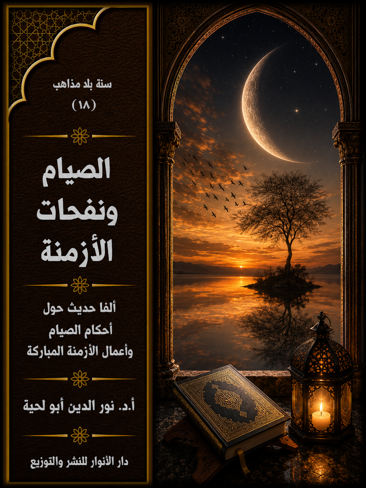

📖 الكتاب: الصيام ونفحات الأزمنة
📝 الوصف:
📚 السلسلة:
✍ المؤلف: أ.د. نور الدين أبو لحية
🏢 الناشر: دار الأنوار للنشر والتوزيع
📅 الطبعة: الثانية
📥 تحميل: هنا
المقدمة
الوصف: ألفا حديث حول أحكام الصيام وأعمال الأزمنة المباركة
يجمع هذا الكتاب ألفي حديث حول الصيام ونفحات الأزمنة والأعمال المرتبطة بها، وقد جمعنا بينهما في محل واحد، لأن أكثر الأعمال المرتبطة بالأيام المباركة يتضمن صياما، والصيام نفسه مرتبط بالزمن والمواقيت.
ولذلك كانت نفحات الأزمنة أقرب إلى الصيام منها إلى سائر الأعمال، كما أن نفحات الأمكنة أقرب إلى الحج منها إلى سائر الأعمال، ولذلك جعلنا الحج مع نفحات المكان، والصيام مع نفحات الزمان.
وقد اخترنا هذه التسمية بناء على ما ورد في الحديث من قول رسول الله صلّى الله عليه وآله وسلم: (إن لربكم في أيام دهركم نفحات، فتعرضوا لها، لعله أن يصيبكم نفحة منها فلا تشقون بعدها أبدًا)
وبخصوص نفحات الأزمنة، قسمنا الحديث عنها إلى قسمين:
أولهما: الأحاديث المقبولة في فضائل الأزمنة وأعمالها، وهي تلك التي تتأسس أعمالها على أصول صحيحة متفق عليها في الأغلب.
ثانيهما: الأحاديث المردودة، وهي تلك التي وضعت بلا سند في العصور المتأخرة، ووضعت لها الفضائل الكثيرة، وكانت سببا في الانحراف عن الدين الأصيل بسماحته ومقاصده.
المقدمة
يجمع هذا الكتاب ألفي حديث حول الصيام ونفحات الأزمنة والأعمال المرتبطة بها، وقد جمعنا بينهما في محل واحد، لأن أكثر الأعمال المرتبطة بالأيام المباركة يتضمن صياما، والصيام نفسه مرتبط بالزمن والمواقيت.
ولذلك كانت نفحات الأزمنة أقرب إلى الصيام منها إلى سائر الأعمال، كما أن نفحات الأمكنة أقرب إلى الحج منها إلى سائر الأعمال، ولذلك جعلنا الحج مع نفحات المكان، والصيام مع نفحات الزمان.
وقد اخترنا هذه التسمية بناء على ما ورد في الحديث من قول رسول الله صلى الله عليه وآله وسلم: (إن لربكم في أيام دهركم نفحات، فتعرضوا لها، لعله أن يصيبكم نفحة منها فلا تشقون بعدها أبدًا)(1)
وقد حاولنا أن نجمع في أحكام الصيام كل ما تتضمنه تلك الأحكام من أركان ومستحبات وفضائل، وأوردنا فيه الأحاديث والروايات المختلفة، التي تبين ناحيتين مهمتين في الصيام:
أولاهما: رفع الحرج، ولذلك أوردنا أكبر عدد من الأحاديث حتى تلك التي تبدو متعارضة، بناء على أنها متوجهة لأصحاب حالات ومراتب متنوعة، والدين بسماحته يشملها جميعا.
ثانيهما: مقاصد الصيام، وهي تحصيل التقوى، فلذلك اهتممنا بما يطلق عليه المفطرات المعنوية، بل اعتبرناها ركنا من أركان الصيام، وأوردنا الأحاديث الكثيرة الدالة على ذلك.
أما بخصوص نفحات الأزمنة، فقد قسمنا الحديث عنها إلى قسمين:
أولهما: الأحاديث المقبولة في فضائل الأزمنة وأعمالها، وهي تلك التي تتأسس أعمالها على أصول صحيحة متفق عليها في الأغلب.
ثانيهما: الأحاديث المردودة، وهي تلك التي وضعت بلا سند في العصور المتأخرة، ووضعت لها الفضائل الكثيرة، وكانت سببا في الانحراف عن الدين الأصيل بسماحته ومقاصده.
وقد حاولنا أن نبرر ردنا لها بمخالفتها الصريحة للقرآن الكريم في أربعة نواح، هي:
أولا ـ خلوها من الأسانيد أو كونها ضعيفة جدا، وقد رددنا هنا على قاعدة التسامح التي اشتهرت في العصور المتأخرة، وكانت سببا في كل البدع الحادثة في الدين.
ثانيا ـ مخالفتها لما ورد في القرآن والسنة من أنواع الجزاء، ذلك أنها ربطت الجزاء الأخروي بأعمال محدودة، تنهار معها كل القيم التي جاءت الشريعة لتحقيقها، والتي تشمل الحياة جميعا.
ثالثا ـ مخالفتها للمقاصد الشرعية من العبادة؛ فالعبادة في القرآن الكريم تهدف إلى التقرب من الله، لكن معظم تلك الأعمال الحادثة والمبتدعة تهدف إلى جعلها تعويذات ومكاسب مضبوطة ومحددة، مع أن كل ما ورد في السنة الصحيحة يكتفي بطلب الحاجات عموما.
رابعا ـ مخالفتها لما ورد في السنة الصحيحة من أنواع الأعمال، والتي تقتصر عادة على صلوات أو أذكار محددة ميسورة، لكن أكثر تلك الأعمال الحادثة فيها تكرار كثير لسور مخصوصة، وبهيئات معينة، لم يرد مثلها في السنن الصحيحة.
ونحب أن نؤكد هنا ما ذكرناه في كل أجزاء هذه السلسلة المرتبطة بالأحكام، من أننا لم نحاول الترجيح بين الأحاديث المتعارضة، وإنما تركناها جميعا، ما دامت متوافقة مع القرآن الكريم في مقاصده ووسائله، ولذلك كان في تنوع الأحكام رفعا للحرج وتحقيقا للمقاصد الشرعية.
ولو أنا رجحنا بينها، نكون قد رددنا أحاديث قيل بها، أو هناك من العلماء من صححها واعتبرها وأفتى على أساسها.
وهذا الاعتبار أقرب إلى تحقيق الوحدة الإسلامية والتقارب بين المسلمين، ذلك أن أقوال أئمة الهدى، تنطبق على كل المدارس الإسلامية، وهو ما يقلل الخلاف ويحصره في محال محدودة جدا، تكاد تكون معدومة.
وقد بنينا هذا على أساس ما شرحناه في كتاب [النوازل الفقهية] من أن كل ما ورد من أقوال الفقهاء معتبر وصحيح ما دام غير معارض للقرآن الكريم، وهو ما تبناه بعض العلماء من المدارس المختلفة، سواء في المسائل جميعا، أو في بعضها.
ومنهم الشيخ المفيد، فقد قال في (المقنعة): قد روى حديث في جواز التطوع في السفر بالصيام، وجاءت أخبار بكراهة ذلك، وأنه ليس من البر الصوم في السفر وهي أكثر وعليها العمل، فمن أخذ بالحديث لم يأثم إذا كان أخذه من جهة الاتباع(2)
أما في المدرسة السنية، فقد ألفت المؤلفات والرسائل في ذلك، ومن أهمها ما كتبه السيوطي في رسالته التي وضعها لنصرة هذا المنهج، والتي أسماها بـ (جزيل المواهب في اختلاف المذاهب)، وذكر فيها أن (ترجيح القول بأن كل مجتهد مصيب، وأن حكم الله في كل واقعة تابع لظن المجتهد، هو أحد القولين للأئمة الأربعة، ورجحه القاضي أبو بكر، وقال في (التقريب): الأظهر من كلام الشافعي، والأشبه بمذهبه ومذهب أمثاله من العلماء القول بأن كل مجتهد مصيب، وقال به من أصحابنا: ابن سريج، والقاضي أبو حامد، والداركي، وأكثر العراقيين، ومن الحنفية: أبو يوسف، ومحمد بن الحسن، وأبو زيد الدبوسي، ونقله عن علمائهم جميعاً)(3)
ومثله الشيخ عبد الوهاب الشعراني، فقد سلك مسلكا خاصا في إرجاع مسائل الخلاف الفقهي إلى الوفاق، بأن حمل كل قول من أقوال المختلفين على حال من أحوال المكلفين، وقد بنى كتابه (الميزان) على هذا المبدأ الذي عبر عنه بقوله: (إن الشريعة المطهرة قد جاءت من حيث الأمر والنهي: على مرتبتين: تخفيف وتشديد، لا على مرتبة واحدة، كما يظنه غالب الناس، ولكل من المرتبتين رجال في حال مباشرتهم للتكاليف، فمن قوي منهم خوطب بالعزيمة والتشديد الوارد في الشريعة صريحا، أو المستنبط منها في مذهبه أو غيره، ومن ضعف منهم: خوطب بالرخصة والتحقيق الوارد في الشريعة صريحا أو مستنبطا منها في مذهبه أو غيره؛ فلا يؤمر القوي بالنزول إلى مرتبة الرخصة، مع قدرته على فعل العزيمة، ولا يكلف الضعيف بالصعود إلى مرتبة العزيمة، مع عجزه عنها، فالمرتبتان على الترتيب الوجودي، لا على التخيير)(4)
ومثله ابن القيم، فمع كونه من علماء، بل من أعيان المنهج الاستدلالي إلا أنه في بعض المسائل يميل إلى هذا المنهج، وقد أشار إلى هذا، بل اعتمده ـ مع قوله بعدم صحة اعتبار أن كل مجتهد مصيب ـ عند بيانه لمخارج الطلاق، فقد عقد فصولا مهمة للمخارج من الوقوع في التحليل، قال في مقدمتها: (أي قول من أقوال المسلمين خرج به من لعنة رسول الله صلى الله عليه وآله وسلم كان أعذر عند الله ورسوله وملائكته وعباده المؤمنين من ارتكابه لما يلعن عليه ومباءته باللعنة)(5)
ثم ذكر مصدره الذي اعتمده لاستنباط هذه المخارج، فقال: (فإن هذه المخارج التي نذكرها دائرة بين ما دل عليه الكتاب والسنة أو أحدهما أو أفتى به الصحابة بحيث لا يعرف عنهم فيه خلاف، أو أفتى به بعضهم، أو هو خارج عن أقوالهم، أو هو قول جمهور الأمة أو بعضهم أو إمام من الأئمة الأربعة، أو أتباعهم أو غيرهم من علماء الإسلام، ولا تخرج هذه القاعدة التي نذكرها عن ذلك، فلا يكاد يوصل إلى التحليل بعد مجاوزة جميعها إلا في أندر النادر، ولا ريب أن من نصح لله ورسوله وكتابه ودينه، ونصح نفسه ونصح عباده أن أيا منها ارتكب فهو أولى من التحليل)(5)
أما الإشكال الذي يذكره البعض، وهو استحالة الجمع بين المتناقضات؛ فكيف يحرم الشيء ويحلل في نفس الوقت؛ بالتنبيه إلى نوع الخطاب بالحكم الشرعي، فهو ليس ـ كما يعتقده الكثير من الناس ـ من أنه يتعلق بالأعيان، بل إن الشرع علقه بأفعال المكلفين، فلذلك لا يتناقض أن يحل لزيد ما يحرم على عمرو، فالمرأة تحل للزوج وتحرم على الأجنبي، والميتة تحل للمضطر دون المختار، والصلاة تجب على الطاهر وتحرم على الحائض.
والتناقض الحقيقي ليس في هذا، وإنما هو أن يجتمع التحليل والتحريم في حالة واحدة لشخص واحد في فعل واحد من وجه واحد، فإذا تطرق التعدد والانفصال إلى شيء من هذه الجملة انتفى التناقض.
وبناء على هذا نص الغزالي على وجه الورع في التزام الأقوال، فليس الورع فيها بمراعاة أعيانها، وإنما بالقناعة التي ينطلق صاحبها منها، والتي تختلف باختلاف الأحوال، يقول الغزالي: (ولو قال الشارع: يحل ركوب البحر لمن غلب على ظنه السلامة، ويحرم على من غلب على ظنه الهلاك، فغلب على ظن الجبان الهلاك، وعلى ظن الجسور السلامة حرم على الجبان وحل للجسور لاختلاف حالهما)(6)
وعلى هذا المنوال نجد السيوطي يدافع عن هذه المقولة في كتبه ورسائله المختلفة، بل إنه قرر أنه من الناحية العملية، ولو مع عدم القول بهذا، فقد نص كثير من العلماء على أنه لا إنكار في المسائل المختلف فيها، فلا يصح الإنكار على من أخذ بقول من الأقوال لأي قناعة من القناعات.
وقد نقل عن الزركشي قوله في المسألة: (الإنكار من المنكر إنما يكون فيما اجتمع عليه، فأما المختلف فيه فلا إنكار فيه، لأن كل مجتهد مصيب، أو المصيب واحد ولا نعلمه، ولم يزل الخلاف بين السلف في الفروع ولا ينكر أحد على غيره مجتهدا فيه، وإنما ينكرون ما خالف نصا أو إجماعا قطعيا أو قياسا)(7)
وبناء على هذا نرى أصحاب هذا المنهج، والذي نرجحه في هذا الباب، يعتمدون الطرق التالية في بيان الأحكام الشرعية، وخاصة للمستفتين عنها:
أولهما: انتقاء ما يرونه مناسبا من الأقوال للحادثة التي يستفتون فيها، وكمثال على ذلك ما فعله ابن القيم عند ذكره لمخارج الطلاق، فقد حاول أن يستفيد من كل الخلافات الموجودة ليسد باب الطلاق، وقد نص على أنه إذا حلف بالطلاق ألا يكلم فلانا أو لا يدخل داره، فأفتاه مفت بعدم وقوع الطلاق في هذه اليمين، اعتقادا لقول علي وطاوس وشريح، أو اعتقادا لقول أبي حنيفة والقفال في صيغة الالتزام دون صيغة الشرط، أو اعتقادا لقول أشهب أنه إذا علق الطلاق بفعل الزوجة أنه لم يحنث بفعلها، أو اعتقادا لقول أبي عبد الرحمن الشافعي أجل أصحاب الشافعي إن الطلاق المعلق لا يصح كما لا يصح النكاح والبيع والوقف المعلق، وهو مذهب جماعة من أهل الظاهر.
قال ابن القيم: (لم يحنث في ذلك كله، ولم يقع الطلاق، ولو فرض فساد هذه الأقوال كلها فإنه إنما فعل المحلوف عليه متأولا مقلدا ظانا أنه لا يحنث به، فهو أولى بعدم الحنث من الجاهل والناسي، وغاية ما يقال في الجاهل إنه مفرط حيث لم يستقص، ولم يسأل غير من أفتاه، وهذا بعينه يقال في الجاهل إنه مفرط حيث لم يبحث، ولم يسأل عن المحلوف عليه، فلو صح هذا الفرق لبطل عذر الجاهل ألبتة، فكيف والمتأول مطيع لله مأجور إما أجرا واحدا أو أجرين؟)(8)
ثانيهما: ذكر الأقوال للمستفتي ليختار ما يتناسب مع حاجته، أو ليختارها جميعا إن كان يمكن الجمع بينها، ومن ذلك ما روى ابن أبي شيبة عن إبراهيم، قال: أدرك مسروق وجندب ركعة من المغرب، فلما سلم الإمام قام مسروق فأضاف إليها ركعة، ثم جلس وقام جندب فيهما جميعا، ثم جلس في آخرها فذكر ذلك لعبد الله، فقال: كلاهما قد أحسن وأفعل كما فعل مسروق أحب إلي(9)
وهذا ما فعلنا في هذه السلسلة، حيث ذكرنا الأحاديث المختلفة، سواء تلك التي وردت عن رسول الله صلى الله عليه وآله وسلم أو عن أئمة الهدى، ما دامت واردة في المصادر المعتبرة للفريقين، ولم نستثن من ذلك إلا ما عارض القرآن الكريم أو قيمه معارضة صحيحة.
ذلك أنا رأينا أن اعتماد منهج التصحيح أو التضعيف السندي مرتبط بذاتية المصحح والمضعف، وموقفه من الرجال، واعتبار التصحيح والتضعيف وكلها ظنية.. لذلك كان الأولى أن يعتبر شرط الموافقة للقرآن والمقاصد الشرعية، ويكتفى به في الفتوى.
أما بخصوص المفتي؛ فهو لا يعمل لنفسه إلا بما ترجح لديه؛ ففرق بين أن يفتي لغيره بحسب السعة الواردة في الشريعة، وبين أن يفتي لنفسه بحسب ما ترجح له من الأحكام.
ونحب أن نضيف هنا أيضا أن اعتبارنا لتعدد الأقوال في المسألة الواحدة من الرخص لا يعني احتقارها أو أن الأجر فيها أقل من غيره، لكنه يعني إتاحة المجال للعبادة بأيسر السبل؛ فالذي لم ينو الصيام مثلا قبل الفجر، بحسب ما اتفق عليه الفقهاء، ثم عرضت له من العوارض ما جعلته يتأخر عن طعام الفطور أو الغداء؛ فإنه يمكنه أن يستغل هذه الفرصة لكسب يوم جديد من الصيام، وقد يكون لذلك اليوم تأثيره فيه ليصوم أياما جديدة أخرى، وبذلك تكون الرخص مشجعة على العبادة، لا مثنية عنها كما يتوهم البعض.
وهذا ما يقال في جميع أنواع الرخص الشرعية؛ فالذي يهتم لها، ويبحث عنها، وييسر بها دين الناس، في الحقيقة يساهم في دعوتهم إلى الله وإلى السلوك إليه، بخلاف ذلك الذي يتشدد عليهم، والذي قد يأتي اليوم الذي ينفرهم فيه من العبادة مطلقا.
ــــــــــــــــــــ
(1) وهو مروي في المصادر السنية والشيعية، رواه الطبراني في الكبير (720)، بحار الأنوار (77/ 168)
(2) المقنعة: 55.
(3) جزيل المواهب في اختلاف المذاهب، ص35..
(4) كتاب الميزان، ص8..
(5) إعلام الموقعين: 4/47.
(6) المستصفى: 1/355.
(7) المنثور في القواعد الفقهية، ج: 2، ص140.
(8) إعلام الموقعين: ج: 4، ص89.
(9) الكتاب المصنف في الأحاديث والآثار، ج2، ص234..
كيفية الصيام وأحكامها
جمعنا في هذا الفصل ما نراه متوافقا مع القرآن الكريم من الأحاديث الواردة حول كيفية الصيام والأحكام المرتبطة بها، وهي التي تفصل ما ورد في قوله تعالى: ﴿يَا أَيُّهَا الَّذِينَ آمَنُوا كُتِبَ عَلَيْكُمُ الصِّيَامُ كَمَا كُتِبَ عَلَى الَّذِينَ مِنْ قَبْلِكُمْ لَعَلَّكُمْ تَتَّقُونَ أَيَّامًا مَعْدُودَاتٍ فَمَنْ كَانَ مِنْكُمْ مَرِيضًا أَوْ عَلَى سَفَرٍ فَعِدَّةٌ مِنْ أَيَّامٍ أُخَرَ وَعَلَى الَّذِينَ يُطِيقُونَهُ فِدْيَةٌ طَعَامُ مِسْكِينٍ فَمَنْ تَطَوَّعَ خَيْرًا فَهُوَ خَيْرٌ لَهُ وَأَنْ تَصُومُوا خَيْرٌ لَكُمْ إِنْ كُنْتُمْ تَعْلَمُونَ﴾ [البقرة: 183 ـ 184]
وقوله: ﴿أَيَّامًا مَعْدُودَاتٍ فَمَنْ كَانَ مِنْكُمْ مَرِيضًا أَوْ عَلَى سَفَرٍ فَعِدَّةٌ مِنْ أَيَّامٍ أُخَرَ وَعَلَى الَّذِينَ يُطِيقُونَهُ فِدْيَةٌ طَعَامُ مِسْكِينٍ فَمَنْ تَطَوَّعَ خَيْرًا فَهُوَ خَيْرٌ لَهُ وَأَنْ تَصُومُوا خَيْرٌ لَكُمْ إِنْ كُنْتُمْ تَعْلَمُونَ شَهْرُ رَمَضَانَ الَّذِي أُنْزِلَ فِيهِ الْقُرْآنُ هُدًى لِلنَّاسِ وَبَيِّنَاتٍ مِنَ الْهُدَى وَالْفُرْقَانِ فَمَنْ شَهِدَ مِنْكُمُ الشَّهْرَ فَلْيَصُمْهُ وَمَنْ كَانَ مَرِيضًا أَوْ عَلَى سَفَرٍ فَعِدَّةٌ مِنْ أَيَّامٍ أُخَرَ يُرِيدُ اللَّهُ بِكُمُ الْيُسْرَ وَلَا يُرِيدُ بِكُمُ الْعُسْرَ وَلِتُكْمِلُوا الْعِدَّةَ وَلِتُكَبِّرُوا اللَّهَ عَلَى مَا هَدَاكُمْ وَلَعَلَّكُمْ تَشْكُرُونَ﴾ [البقرة: 184 ـ 185]
وقوله: ﴿أُحِلَّ لَكُمْ لَيْلَةَ الصِّيَامِ الرَّفَثُ إِلَى نِسَائِكُمْ هُنَّ لِبَاسٌ لَكُمْ وَأَنْتُمْ لِبَاسٌ لَهُنَّ عَلِمَ اللَّهُ أَنَّكُمْ كُنْتُمْ تَخْتَانُونَ أَنْفُسَكُمْ فَتَابَ عَلَيْكُمْ وَعَفَا عَنْكُمْ فَالْآنَ بَاشِرُوهُنَّ وَابْتَغُوا مَا كَتَبَ اللَّهُ لَكُمْ وَكُلُوا وَاشْرَبُوا حَتَّى يَتَبَيَّنَ لَكُمُ الْخَيْطُ الْأَبْيَضُ مِنَ الْخَيْطِ الْأَسْوَدِ مِنَ الْفَجْرِ ثُمَّ أَتِمُّوا الصِّيَامَ إِلَى اللَّيْلِ وَلَا تُبَاشِرُوهُنَّ وَأَنْتُمْ عَاكِفُونَ فِي الْمَسَاجِدِ تِلْكَ حُدُودُ اللَّهِ فَلَا تَقْرَبُوهَا كَذَلِكَ يُبَيِّنُ اللَّهُ آيَاتِهِ لِلنَّاسِ لَعَلَّهُمْ يَتَّقُونَ﴾ [البقرة: 187]
ونلاحظ أن كل هذه الآيات الكريمة تركز على المعنيين الأساسيين في الصيام، وفي كل عبادة، وهما:
أولا ـ رفع الحرج؛ فذلك نرى الأحكام المرتبطة بها أكثر تفصيلا من غيرها.
ثانيا ـ تحقيق مقاصد الصوم، وهي تحصيل التقوى، باعتبارها الغاية الكبرى له، ولسائر العبادات.
بناء على هذا أوردنا في هذا الفصل كل ما يخدم هذا الجانب من الأحاديث المعتبرة في مصادر الفريقين، حتى لو بدت متعارضة في الظاهر.
وقد قسمناه إلى ثمانية مباحث، هي:
أولا ـ ما ورد حول فضل الصوم
ثانيا ـ ما ورد حول آداب الصيام
ثالثا ـ ما ورد حول المفطرات المعنوية
رابعا ـ ما ورد حول نية الصيام
خامسا ـ ما ورد حول زمن الصيام
سادسا ـ ما ورد حول المفطرات والجائزات
سابعا ـ ما ورد حول أحكام القضاء والكفارة
ثامنا ـ ما ورد حول أحكام الأعذار والرخص
أولا ـ ما ورد حول فضل الصوم:
نتناول في هذا المبحث ما ورد من الأحاديث التي تذكر أهمية الصوم وفضله ووجوبه وكونها ركنا من أركان الدين الكبرى، وهي تفيد خصوصا في تحقيق الاحتساب وتصحيح النية، حتى لا يهدف الصائم من صومه إلا تحقيق عبوديته لله تعالى.
ما ورد من الأحاديث النبوية:
ما ورد في المصادر السنية: ههه
من الأحاديث الواردة في هذا الباب في المصادر السنية:
1. قال رسول الله صلى الله عليه وآله وسلم: كل عمل ابن آدم يضاعف الحسنة عشر أمثالها إلى سبعمائة ضعف، قال الله تعالى: إلا الصوم فإنه لي وأنا أجزي به، يدع شهوته وطعامه من أجلي، للصائم فرحتان فرحةٌ عند فطوره، وفرحةٌ عند لقاء ربه، ولخلوف فيه أطيب عند الله من ريح المسك(1)
2. قيل لرسول الله صلى الله عليه وآله وسلم: يا رسول الله مرني بأمر ينفعني الله به، قال: عليك بالصوم، فإنه لا مثل له(2)
3. قال رسول الله صلى الله عليه وآله وسلم: من صام يوما في سبيل الله باعد الله منه جهنم مسيرة مائة عام(3)
4. قال رسول الله صلى الله عليه وآله وسلم: من صام يوما في سبيل الله فريضة باعد الله منه جهنم كما بين السماوات والأرضين، ومن صام يوما تطوعا باعد الله منه جهنم مسيرة ما بين السماء(4)
5. قال رسول الله صلى الله عليه وآله وسلم: في الجنة بابٌ يدعى الريان، يدعى له الصائمون، فمن كان من الصائمين دخله، ومن دخله لم يظمأ أبدا(5)
6. قال رسول الله صلى الله عليه وآله وسلم: اغزوا تغنموا، وصوموا تصحوا، وسافروا تستغنوا(6)
7. قال رسول الله صلى الله عليه وآله وسلم: من صام رمضان إيمانا واحتسابا غفر له ما تقدم من ذنبه(7). وزاد في رواية: وما تأخر(8)
8. قال رسول الله صلى الله عليه وآله وسلم: إذا دخل رمضان فتحت أبواب الجنة، وأغلقت أبواب جهنم، وسلسلت الشياطين(9)
9. قال رسول الله صلى الله عليه وآله وسلم: إذا كان أول ليلة من رمضان غلقت أبواب النار، فلم يفتح منها بابٌ، وفتحت أبواب الجنة، فلم يغلق منها بابٌ، وينادي مناد: يا باغي الخير هلم وأقبل، ويا باغي الشر أقصر، ولله فيه عتقاء من النار، وذلك في كل ليلة حتى ينقضي رمضان(10)
10. قال رسول الله صلى الله عليه وآله وسلم: لله عند كل فطر عتقاء(11)
11. قال رسول الله صلى الله عليه وآله وسلم: لكل شيء زكاةٌ وزكاة الجسد الصوم، والصيام نصف الصبر(12)
12. قال رسول الله صلى الله عليه وآله وسلم: الأعمال عند الله عز وجل سبع: عملان موجبان، وعملان بأمثالهما، وعمل بعشر أمثاله، وعمل بسبعمائة، وعمل لا يعلم ثواب عامله إلا الله عز وجل، فأما الموجبان: فمن لقي الله يعبده مخلصا لا يشرك به شيئا وجبت له الجنة، ومن لقي الله قد أشرك به وجبت له النار، ومن عمل سيئة جزي بها، ومن أراد أن يعمل حسنة فلم يعملها جزي مثلها، ومن عمل حسنة جزي عشرا، ومن أنفق ماله في سبيل الله ضعفت له نفقته: الدرهم بسبعمائة، والدينار بسبعمائة، والصيام لله عز وجل لا يعلم ثواب عامله إلا الله عز وجل(13)
13. قال رسول الله صلى الله عليه وآله وسلم: الصيام والقرآن يشفعان للعبد يوم القيامة يقول الصيام: أي رب منعته الطعام والشهوة فشفعني فيه: ويقول القرآن: منعته النوم بالليل فشفعني فيه. قال فيشفعان(14)
14. قال رسول الله صلى الله عليه وآله وسلم: لو أن رجلا صام يوما تطوعا، ثم أعطى ملء الأرض ذهبا لم يستوف ثوابه دون يوم الحساب(15)
ما ورد في المصادر الشيعية: ههه
1. قال رسول الله صلى الله عليه وآله وسلم: الصوم جُنة من النار(16)
2. قال رسول الله صلى الله عليه وآله وسلم: ألا أخبركم بشيء، إن أنتم فعلتموه تباعد الشيطان منكم كما تباعد المشرق من المغرب؟ قالوا: بلى، قال: الصوم يسود وجهه، والصدقة تكسر ظهره، والحب في الله والمؤازرة على العمل الصالح يقطع دابره، والاستغفار يقطع وتينه، ولكل شيء زكاة وزكاة الأبدان الصيام(17)
3. قال رسول الله صلى الله عليه وآله وسلم: إن الله عزّ وجلّ وكل ملائكته بالدعاء للصائمين.. وأخبرني جبريل عن ربه، أنه قال: ما أمرت ملائكتي بالدعاء لأحد من خلقي إلا استجبت لهم فيه(18)
4. قال رسول الله صلى الله عليه وآله وسلم: لكل شيء زكاة وزكاة الأجساد الصوم(19)
5. قال رسول الله صلى الله عليه وآله وسلم: الصائم في عبادة وإن كان نائماً على فراشه ما لم يغتب مسلما(20)
6. قال رسول الله صلى الله عليه وآله وسلم: قال الله عزّ وجلّ: الصوم لي وأنا أجزي به، وللصائم فرحتان، حين يفطر، وحين يلقى ربه، والذي نفس محمد بيده لخلوف فم الصائم عند الله أطيب من ريح المسك(21)
7. قال رسول الله صلى الله عليه وآله وسلم: من صام يوما تطوعا أدخله الله عزّ وجلّ الجنة(22)
8. قال رسول الله صلى الله عليه وآله وسلم: من صام يوما في سبيل الله تعالى كان كعدل سنة يصومها(23)
9. قال رسول الله صلى الله عليه وآله وسلم: من صام يوما تطوعا ابتغاء ثواب الله وجبت له المغفرة(24)
10. قال رسول الله صلى الله عليه وآله وسلم: نوم الصائم عبادة، ونَفَسُه تسبيح(25)
11. قال رسول الله صلى الله عليه وآله وسلم: قال الله عزّ وجلّ: كل عمل ابن آدم هو له إلا الصيام فهو لي، وأنا أجزي به، والصيام جنة العبد المؤمن يوم القيامة كما يقي أحدكم سلاحه في الدنيا، ولخلوف فم الصائم أطيب عند الله من ريح المسك، والصائم يفرح بفرحتين: حين يفطر فيطعم ويشرب، وحين يلقاني فأُدخله الجنة(26)
12. قال رسول الله صلى الله عليه وآله وسلم: إن قوة المؤمن في قلبه، ألا ترون أنكم تجدونه ضعيف البدن، نحيف الجسم، وهو يقوم الليل، ويصوم النهار(27)
13. قال رسول الله: صلى الله عليه وآله وسلم: إن للجنة بابا يدعى الريان لا يدخل منه إلا الصائمون(28)
14. قال رسول الله صلى الله عليه وآله وسلم: من صام يوما تطوعا، فلو أُعطى ملء الأرض ذهبا ما وفى أجره دون يوم الحساب(29)
15. قال رسول الله صلى الله عليه وآله وسلم: قال الله عزّ وجلّ: كل أعمال ابن آدم بعشرة أضعافها إلى سبعمائة ضعف إلا الصبر فانه لي، وأنا أجزي به، فثواب الصبر مخزون في علم الله، والصبر الصوم(30)
16. قال رسول الله صلى الله عليه وآله وسلم: الصوم جُنة، والصدقة تطفئ الخطيئة(31)
17. قال رسول الله صلى الله عليه وآله وسلم: إن على كل شيء زكاة وزكاة الأجساد الصيام(32)
18. قال رسول الله صلى الله عليه وآله وسلم: إن الله لا يعذب على كثرة الصلاة والصيام ولكن يزيده خيرا(33)
19. قال رسول الله صلى الله عليه وآله وسلم: (ما من صائمٍ يحضر قوماً يطعمون إلا سبّحت أعضاؤه، وكانت صلاة الملائكة عليه، وكانت صلاتهم له استغفاراً)(34)
20. قال رسول الله صلى الله عليه وآله وسلم لجابر بن عبد الله: يا جابر هذا شهر رمضان من صام نهاره وقام وردا من ليله وعف بطنه وفرجه وكف لسانه خرج من ذنوبه كخروجه من الشهر، فقال جابر: يا رسول الله ما أحسن هذا الحديث!؟ فقال رسول الله صلى الله عليه وآله وسلم: يا جابر وما أشد هذه الشروط!؟(35)
21. قال رسول الله صلى الله عليه وآله وسلم: في خطبة له: ومن صام شهر رمضان في إنصات وسكوت وكف سمعه وبصره ولسانه وفرجه وجوارحه من الكذب والحرام والغيبة تقربا قربه الله منه حتى تمس ركبتاه ركبتي إبراهيم خليل الرحمن عليه السلام(36)
22. قال رسول الله صلى الله عليه وآله وسلم: من صام شهر رمضان إيمانا واحتسابا وكف سمعه وبصره ولسانه عن الناس قبل الله صومه وغفر له ما تقدم من ذنبه وما تأخر، وأعطاه ثواب الصابرين(37)
23. قال رسول الله صلى الله عليه وآله وسلم: ما من عبد صائم يشتم فيقول: إني صائم سلام عليك لا أشتمك كما تشتمني، إلا قال الرب تبارك وتعالى: استجار عبدي بالصوم من شر عبدي قد أجرته من النار(38)
24. قال رسول الله صلى الله عليه وآله وسلم: طوبى لمن ظمأ أو جاع لله، أولئك الذين يشبعون يوم القيامة، طوبى للمساكين بالصبر، أولئك الذين يرون ملكوت السماوات(39)
25. قال رسول الله صلى الله عليه وآله وسلم: من استطاع منكم الباه فليتزوج، ومن لم يستطع فليصم، فإن الصوم وجاؤه(40)
ــــــــــــــــــــ
(1) البخاري (7492)، مسلم (1151) 164..
(2) النسائي: 4/166.
(3) النسائي: 4/175..
(4) الطبراني: 17/119 ـ 120..
(5) البخاري (1896)، ومسلم (1152).
(6) (الأوسط) 8/174 (8312)
(7) البخاري (38)، مسلم (760).
(8) ﺃحمد: 2/385..
(9) البخاري (1898)، مسلم (1079) 2..
(10) الترمذي (682)، وابن ماجه (1642)، والدارمي (1775)
(11) ﺃحمد: 5/256، الطبراني: 8/284 (8089)
(12) ابن ماجه (1745)
(13) رواه الطبراني في الأوسط والبيهقي، الترغيب والترهيب: 2/82.
(14) رواه أحمد والطبراني في الكبير، الترغيب والترهيب: 2/84.
(15) رواه أبو يعلي والطبراني، الترغيب والترهيب: 2/84.
(16) الكافي: 4/ 62/ 1.
(17) الكافي: 4/ 62/ 2.
(18) الكافي: 4/ 64/ 11، والمحاسن: 72/ 149.
(19) الكافي: 4/ 63/ 4، والتهذيب: 4/ 190/ 537.
(20) الكافي: 4/ 64/ 9.
(21) من لا يحضره الفقيه: 2/ 44/ 198.
(22) من لا يحضره الفقيه: 2/ 52/ 225.
(23) من لا يحضره الفقيه: 2/ 52/ 227.
(24) أمالي الصدوق: 442/ 2.
(25) ثواب الاعمال: 75/ 2.
(26) الخصال: 45/ 42.
(27) صفات الشيعة: 30/ 42.
(28) معاني الاخبار: 409/ 90.
(29) معاني الاخبار: 409/ 91.
(30) معاني الاخبار: 409/91.
(31) المجازات النبوية: 189/ 148.
(32) المحاسن: 72/ 150.
(33) بصائر الدرجات: 185/ 11.
(34) أمالي الصدوق ص305..
(35) الكافي: 4/ 87/ 2.
(36) عقاب الاعمال: 344.
(37) المقنعة: 49.
(38) الكافي: 4/ 88/ 5.
(39) المقنعة: 59.
(40) المجازات النبوية: 85/ الحديث: 53.
ما روي عن الإمام علي:
1. قال الإمام علي: إن في الجنة لشجرة تخرج من أعلاها الحلل، ومن أسفلها خيل بلق مسرجة ملجمة، ذوات أجنحة، لا تروث ولا تبول، فيركبها أولياء الله فتطير بهم في الجنة حيث شاءوا، فيقول الذين أسفل منهم: يا ربنا، ما بلغ بعبادك هذه الكرامة؟ فيقول الله جل جلاله: إنهم كانوا يقومون الليل ولا ينامون، ويصومون النهار ولا يأكلون، ويجاهدون العدو ولا يجبنون، ويتصدقون ولا يبخلون(1)
2. قال الإمام علي: ثلاث يذهبن البلغم ويزدن في الحفظ: السواك، والصوم، وقراءة القرآن(2)
ــــــــــــــــــــ
(1) أمالي الصدوق: 239/ 14.
(2) التهذيب: 4/ 191/ 545.
ما روي عن الإمام الباقر:
1. قال الإمام الباقر: إن الرجل ليصوم يوما تطوعا يريد ما عند الله فيدخله الله به الجنة(1)
2. قال الإمام الباقر: من خُتم له بصيام يوم دخل الجنة(2)
3. قال الإمام الباقر: إن المؤمن إذا قام ليله ثم أصبح صائما نهاره لم يكتب عليه ذنب، ولم يخط خطوة إلا كتب الله له بها حسنة، ولم يتكلم بكلمة خير إلا كتب له بها حسنة، وإن مات في نهاره صعد بروحه إلى علّيّين وإن عاش حتى يفطر كتبه الله من الأوابين(3)
ــــــــــــــــــــ
(1) الكافي: 4/ 63/ 5.
(2) من لا يحضره الفقيه: 2/ 52/ 226.
(3) المقنعة: 59 و: 49.
ما روي عن الإمام الصادق:
1. قال الإمام الصادق: نوم الصائم عبادة، ونفسه تسبيح(1)
2. قال الإمام الصادق: أوحى الله عزّ وجلّ إلى موسى عليه السلام: ما يمنعك من مناجاتي؟ فقال: يا رب، أجلك عن المناجاة لخلوف فم الصائم، فأوحى الله عزّ وجلّ إليه: يا موسى، لخلوف فم الصائم أطيب عندي من ريح المسك(2)
3. قال الإمام الصادق: ألا أخبرك بأبواب الخير، إن الصوم جنة من النار(3)
4. قال الإمام الصادق: يوم الأضحى هو اليوم الذي يصام فيه، ويوم عاشوراء، هو اليوم الذي يفطر(4) فيه(5)
5. قال الإمام الصادق: نوم الصائم عبادة، وصمته تسبيح، وعمله متقبل، ودعاؤه مستجاب(6)
6. قال الإمام الصادق: إن الصائم منكم ليرتع في رياض الجنة، وتدعو له الملائكة حتى يفطر(7)
7. قال الإمام الصادق: الصبر الصوم(8)
8. قال الإمام الصادق: من كتم صومه قال الله عز وجل لملائكته: عبدي استجار من عذابي فأجيروه، ووكل الله عز وجل ملائكته بالدعاء للصائمين، ولم يأمرهم بالدعاء لأحد إلا استجاب لهم فيه(9)
9. قال الإمام الصادق في قول الله عزّ وجلّ: ﴿وَاسْتَعِينُوا بِالصَّبْرِ وَالصَّلَاةِ﴾ [البقرة: 45]: الصبر الصيام(10)
10. قال الإمام الصادق: إذا نزلت بالرجل النازلة الشديدة فليصم، فإن الله عزّ وجلّ يقول: ﴿وَاسْتَعِينُوا بِالصَّبْرِ﴾ [البقرة: 45] يعني الصيام(10)
11. قال الإمام الصادق: من صام لله عزّ وجلّ يوما في شدة الحر فأصابه ظمأ وكّل الله به ألف ملك يمسحون وجهه ويبشرونه، حتى إذا أفطر قال الله عزّ وجلّ: ما أطيب ريحك وروحك، ملائكتي اشهدوا أني قد غفرت له(11)
ــــــــــــــــــــ
(1) الكافي: 4/ 64/ 12، والمقنعة: 49.
(2) الكافي: 4/ 64/ 13، والفقيه: 2/ 45/ 203.
(3) الكافي: 4/ 62/ 3.
(4) لعل المراد أن يوم الصوم كالعيد لاستحقاق الثواب الجزيل، ويوم الافطار كيوم المصيبة لفوت الثواب.
(5) الكافي: 4/ 547/ 37.
(6) من لا يحضره الفقيه: 2/ 46/ 207.
(7) المقنعة: 59 و: 49.
(8) تفسير العياشي: 1/ 43/ 40.
(9) الكافي: 4/ 64/ 10.
(10) الكافي: 4/ 63/ 7، وتفسير العياشي: 1/ 43/ 41.
(11) الكافي: 4/ 65/ 17.
ما روي عن الإمام الرضا:
1. قال الإمام الرضا: إن الصائم لا يجري عليه القلم حتى يفطر ما لم يأت بشيء ينقص صومه، وإن الحاج لا يجرى عليه القلم حتى يرجع ما لم يأت بشيء يبطل حجه(1)
2. قال الإمام الرضا: إن لله ملائكة موكلين بالصائمين والصائمات يمسحونهم بأجنحتهم، ويسقطون عنهم ذنوبهم، وإن لله ملائكة قد وكلهم بالدعاء للصائمين والصائمات لا يحصي عددهم إلا الله تعالى(2)
ــــــــــــــــــــ
(1) فضائل الاشهر الثلاثة: 116/ 111.
(2) فضائل الاشهر الثلاثة: 104/ 92.
ثانيا ـ ما ورد حول آداب الصيام:
نتناول في هذا المبحث ما ورد من الأحاديث التي تذكر آداب الصيام، وميسراته، وما سنه رسول الله صلى الله عليه وآله وسلم حوله مما ييسر تحقيق مقاصده.
ما ورد من الأحاديث النبوية:
ما ورد في المصادر السنية: ههه
من الأحاديث الواردة في هذا الباب في المصادر السنية:
1. قال رسول الله صلى الله عليه وآله وسلم: من وجد تمرا فليفطر عليه ومن لا فليفطر على الماء فإن الماء طهورٌ(1)
2. عن أنس، قال: كان رسول الله صلى الله عليه وآله وسلم يفطر قبل أن يصلي على رطبات، فإن لم يجد فتمرات، فإن لم يكن حسا حسوات من ماء(2)
3. عن معاذ بن زهرة: أن رسول الله صلى الله عليه وآله وسلم كان إذا أفطر قال: اللهم لك صمت وعلى رزقك أفطرت(3)
4. عن ابن عمر، قال: كان رسول الله صلى الله عليه وآله وسلم إذا أفطر قال: ذهب الظمأ وابتلت العروق وثبت الأجر إن شاء الله(4)
5. قال رسول الله صلى الله عليه وآله وسلم: الصائم إذا أكل عنده المفاطير، صلت عليه الملائكة(5)
6. قال رسول الله صلى الله عليه وآله وسلم لبلال: الغداء يا بلال فقال: إني صائمٌ، فقال رسول الله صلى الله عليه وآله وسلم: نأكل أرزاقنا، وفضل رزق بلال في الجنة، شعرت يا بلال أن الصائم تسبح عظامه وتستغفر له الملائكة ما أكل عنده(6)
7. قال رسول الله صلى الله عليه وآله وسلم: الطاعم الشاكر له مثل أجر الصائم الصابر(7)
8. قال رسول الله صلى الله عليه وآله وسلم: من فطر صائما كان له مثل أجره، غير أن لا ينقص من أجر الصائم شيئا(8)
9. قال رسول الله صلى الله عليه وآله وسلم: إذا دعي أحدكم إلى طعام فليجب، فإن كان مفطرا فليطعم، وإن كان صائما فليصل(9)
10. قال رسول الله صلى الله عليه وآله وسلم: من نزل بقوم فلا يصومن إلا بإذنهم(10)
11. قال رسول الله صلى الله عليه وآله وسلم: من فطر صائما على طعام وشراب من حلال صلت عليه الملائكة في ساعات شهر رمضان، وصلى عليه جبريل ليلة القدر(11). وزاد في رواية: ورزق دموعا ورقة، قيل: إن كان لا يقدر على قوته؟ قال: على كسرة خبز، أو مذقة لبن، أو شربة ماء كان له ذلك.
12. قال رسول الله صلى الله عليه وآله وسلم: تسحروا فإن في السحور بركة(12)
13. قال رسول الله صلى الله عليه وآله وسلم: نعم سحور المؤمن التمر(13)
14. قال رسول الله صلى الله عليه وآله وسلم: إن للصائم عند فطره لدعوة ما ترد(14)
15. قال رسول الله صلى الله عليه وآله وسلم: ثلاثة لا ترد دعوتهم: الصائم حين يفطر، والإمام العادل، ودعوة المظلوم يرفعها الله فوق الغمام، وتفتح لها أبواب السماء، ويقول الرب: وعزتي وجلالي لأنصرنك ولو بعد حين(15)
ما ورد في المصادر الشيعية: ههه
1. قال رسول الله صلى الله عليه وآله وسلم: نوم الصائم عبادة ونفسه تسبيح(16)
2. قال رسول الله صلى الله عليه وآله وسلم: الصائم في عبادة وإن كان نائما على فراشه ما لم يغتب مسلما(17)
3. قال رسول الله صلى الله عليه وآله وسلم: من جهّز حاجاً أو جهّز غازيا، أو خلفه في أهله، أو أفطر صائما، فله مثل أجره، من غير أن ينقص من أجره شيء(18)
4. قال رسول الله صلى الله عليه وآله وسلم: من فطر في شهر رمضان مؤمنا صائما كان له بذلك عند الله عتق رقبة، ومغفرة لذنوبه فيما مضى، قيل: يا رسول الله، ليس كلنا يقدر على أن يفطر صائما؟ فقال: إن الله كريم يعطي هذا الثواب لمن لم يقدر إلا على مذقة من لبن يفطر بها صائما، أو شربة من ماء عذب، أو تمرات لا يقدر على أكثر من ذلك(19)
5. قال رسول الله صلى الله عليه وآله وسلم: من فطر صائما كان له مثل أجره من غير أن ينقص منه شيء، وما عمل بقوة ذلك الطعام من بر(20)
6. قال رسول الله صلى الله عليه وآله وسلم: ثلاث فرحات للمؤمن في الدنيا: لقاء الإخوان، وتفطير الصائم، والتهجد في آخر الليل(21)
7. قال رسول الله صلى الله عليه وآله وسلم: إن الله وملائكته يصلون على المتسحّرين(22)
8. قال رسول الله صلى الله عليه وآله وسلم: تسحّروا ولو على شربة ماء، وأفطروا ولو على شقّ تمرة(23)
9. قال رسول الله صلى الله عليه وآله وسلم: السحور بركة، ولله ملائكة يصلّون على المستغفرين بالأسحار، وعلى المتسحرين، وأكلة السحور فرق ما بيننا وبين أهل الملل(23)
10. قال رسول الله صلى الله عليه وآله وسلم: نعم السحور للمؤمن التمر(24)
11. قال رسول الله صلى الله عليه وآله وسلم: تسحروا ولو بجرع الماء، ألا صلوات الله على المتسحرين(25)
12. قال رسول الله صلى الله عليه وآله وسلم: السحور بركة(26)
13. قال رسول الله صلى الله عليه وآله وسلم: لا تدع أمتي السحور ولو على حشفة(27)
14. قال رسول الله صلى الله عليه وآله وسلم: تسحروا ولو بجرع الماء، ألا صلوات الله على المتسحرين(28)
15. قال رسول الله صلى الله عليه وآله وسلم: تعاونوا بأكل السحور على صيام النهار، وبالنوم عند القيلولة على قيام الليل(29)
16. قال رسول الله صلى الله عليه وآله وسلم: إن الله تبارك وتعالى وملائكته يصلون على المتسحرين والمستغفرين بالأسحار، فليتسحر أحدكم ولو بشربة من ماء(30)
17. قال الإمام الباقر: كان رسول الله صلى الله عليه وآله وسلم يفطر على الأسودين، قيل: رحمك الله وما الأسودان؟ قال: التمر والماء والزبيب والماء، ويتسحر بهما(31)
18. عن الإمام الباقر أن رسول الله صلى الله عليه وآله وسلم كان إذا أفطر قال: اللهم لك صمنا وعلى رزقك أفطرنا فتقبله منا، ذهب الظمأ وابتلت العروق، وبقي الأجر(32)
19. قال الإمام علي: كان رسول الله صلى الله عليه وآله وسلم إذا أفطر قال: اللهم لك صمت، وعلى رزقك أفطرت، فتقبّله منا، ذهب الظمأ، وابتلت العروق، وبقي الأجر إن شاء الله(33)
20. قال رسول الله صلى الله عليه وآله وسلم: إن للصائم عند فطره دعوة لا تردّ، فيقول إذا أفطر: اللهم إني اسألك برحمتك التي وسعت كل شيء، أن تغفر لي(34)
21. قال رسول الله صلى الله عليه وآله وسلم: ما من صائم يحضر قوما يطعمون إلا سبحت له أعضاؤه وكانت صلاة الملائكة عليه وكانت صلاتهم استغفارا(35)
22. قال رسول الله صلى الله عليه وآله وسلم: أفضل ما على الرجل، إذا تكلف له أخوه المسلم طعاما، فدعاه وهو صائم فأمره أن يفطر، ما لم يكن صيامه ذلك اليوم فريضة، أو قضاء أو نذراً سماه، وما لم يمل النهار(33)
23. عن أُمّ عمارة: أن رسول الله صلى الله عليه وآله وسلم أتاها، فتات رجال من أهلها وبني عمّها، فأتتهم بتمر فأكلوا، واعتزل رجل منهم، فقال النبي صلى الله عليه وآله وسلم: مالك لا تأكل؟ فقال: إنّي صائم، فقال صلى الله عليه وآله وسلم: أما إنه ليس من صائم، يأكل عنده مفاطير، إلّا صلّت عليه الملائكة، ما داموا يأكلون(34)
24. عن الإمام الصادق قال: كان رسول الله صلى الله عليه وآله وسلم أول ما يفطر عليه في زمن الرطب الرطب وفي زمن التمر التمر(36)
25. قال الإمام الباقر: كان رسول الله صلى الله عليه وآله وسلم إذا صام فلم يجد الحلو أفطر على الماء(37)
ــــــــــــــــــــ
(1) الترمذي (694)
(2) أبو داود (2356)
(3) أبو داود (2358).
(4) أبو داود (2357).
(5) الترمذي (784) وابن ماجه (1748)
(6) ابن ماجه (1479)
(7) ابن ماجه (1765) والدارمي (2024)
(8) الترمذي (807)، وابن ماجة (1746) والدارمي (1702).
(9) مسلم (1431).
(10) الترمذي (789)
(11) البزار في (البحر الزخار) 6/469 (2501)، والطبراني: 6/261 ـ 262 (6162)
(12) البخاري (1923)، ومسلم (1095).
(13) أبو داود (2345)
(14) رواه البيهقي، الترغيب والترهيب: 2/89.
(15) رواه أحمد والترمذي وابن ماجه وابن خزيمة وابن حبان الترغيب والترهيب: 2/89.
(16) المقنعة: 49، والتهذيب: 4/ 190/ 540، والفقيه: 2/ 46/ 207.
(17) المقنعة: 49.
(18) الأربعين لابن زهرة: حديث: 24.
(19) الكافي: 4/ 66/ 4.
(20) التهذيب: 4/ 201/ 582.
(21) من لا يحضره الفقيه: 4/ 260/ 824.
(22) الجعفريات ص: 63.
(23) نوادر الراوندي ص: 35.
(24) طبّ النبيّ ص: 26.
(25) فقه الإمام الرضا ص: 24.
(26) الكافي: 4/ 94/ 3، والتهذيب: 4/ 198/ 568.
(27) الكافي: 4/ 95/ 3.
(28) التهذيب: 4/ 198/ 566.
(29) التهذيب: 4/ 199/ 571، والمقنعة: 50.
(30) من لا يحضره الفقيه: 2/ 87/ 389.
(31) التهذيب: 4/ 198/ 569.
(32) الكافي: 4/ 95/ 1، والتهذيب: 4/ 199/ 576، والمقنعة: 51، ومصباح المتهجد: 568.
(33) الجعفريات ص: 60.
(34) درر اللآلي ج: 1 ص: 16.
(35) من لا يحضره الفقيه: 2/ 52/ 229.
(36) الكافي: 4/ 153/ 6، والمحاسن: 531/ 782.
(37) الكافي: 4/ 152/ 1.
ما روي عن الإمام علي:
1. قال الإمام الباقر: جاء قنبر مولى الإمام علي بفطره إليه، فجاء بجراب فيه سويق.. فلما أراد أن يشرب قال: بسم الله، اللهم لك صمنا وعلى رزقك أفطرنا فتقبل منا إنك أنت السميع العليم(1)
2. عن الإمام الباقر، أن الإمام علي كان يستحب أن يفطر على اللبن(2)
3. قال الإمام علي: السنة تعجيل الفطر، وتأخير السحور، والابتداء بالصلاة ـ يعني صلاة المغرب ـ قبل الفطر، إلّا أن يحضر الطعام، فإن حضر الطعام ابتدأ به قبل الصلاة.. وإن رسول الله صلى الله عليه وآله وسلم أتى بكتف جزور مشوية، وقد أذّن بلال، فأمره فكفّ هنيهة، حتى أكل وأكلنا معه، ثمّ دعا بلبن فشرب وشربنا معه، ثمّ أمر بلالاً فأقام، فصلّى وصلّينا معه(3)
4. قال الإمام الباقر: جاء قنبر مولى الإمام علي بفطره إليه فجاء بجراب فيه سويق عليه خاتم، فقال له رجل: يا أمير المؤمنين، إن هذا لهو البخل تختم على طعامك، فضحك الإمام علي، ثم قال: أو غير ذلك؟ لا أحب أن يدخل بطني شيء لا أعرف سبيله(1)
5. عن سويد بن غفلة، قال: دخلت على الإمام علي، بعد العصر، فوجدته جالساً وبين يديه صحفة فيها لبن حاذر أجد ريحه من شدّة حموضته، وفي يده رغيف أرى قشار الشعير في وجهه، وهو يكسر بيده أحياناً، فإذا غلبه كسره بركبته، وطرحه فيه، فقال: ادن فأصب من طعامنا هذا، فقلت: إني صائم، فقال: سمعت رسول الله صلى الله عليه وآله وسلم يقول: من منعه الصوم من طعام يشتهيه، كان حقا على الله أن يطعمه من طعام الجنة، ويسقيه من شرابها(4)
ــــــــــــــــــــ
(1) التهذيب: 4/ 200/ 578.
(2) التهذيب: 4/ 199/ 574.
(3) دعائم الاسلام ج: 1 ص: 280.
(4) كشف الغمة ج: 1 ص: 163.
ما روي عن الإمام السجاد:
1. قال الإمام الباقر: دخل سدير على أبي (الإمام السجاد) في شهر رمضان، فقال: ياسدير، هل تدري أي الليالي هذه؟ قال: نعم، فداك أبي، هذه ليالي شهر رمضان فما ذاك؟ فقال له: أتقدر على أن تعتق في كل ليلة من هذه الليالي عشر رقاب من ولد إسماعيل عليه السلام، فقال له سدير: بأبي أنت وأمي، لا يبلغ مالي ذاك، فما زال ينقص حتى بلغ به رقبة واحدة، في كل ذلك يقول: لا أقدر عليه، فقال له: فما تقدر أن تفطر في كل ليلة رجلا مسلما!؟ فقال له: بلى وعشرة، فقال له أبي: فذاك الذي أردت، يا سدير، إن إفطارك أخاك المسلم يعدل رقبة من ولد إسماعيل(1)
2. قال الإمام الصادق: كان علي بن الحسين (الإمام السجاد) إذا كان اليوم الذي يصوم فيه أمر بشاة فتذبح وتقطع أعضاءً وتطبخ، فإذا كان عند المساء أكب على القدور حتى يجد ريح المرق وهو صائم، ثم يقول: هاتوا القصاع، اغرفوا لآل فلان، اغرفوا لآل فلان، ثم يؤتى بخبز وتمر فيكون ذلك عشاءه(2)
3. قال الإمام السجاد: من قرأ ﴿إِنَّا أَنْزَلْنَاهُ فِي لَيْلَةِ الْقَدْرِ﴾ [القدر: 1] عند فطوره وعند سحوره كان فيما بينهما كالمتشحط بدمه في سبيل الله(3)
ــــــــــــــــــــ
(1) الكافي: 4/ 68/ 4، والتهذيب: 4/ 201/ 581.
(2) الكافي: 4/ 68/ 3.
(3) إقبال الاعمال: 114.
ما روي عن الإمام الباقر:
1. قال الإمام الباقر: لأن أفطر رجلا مؤمنا في بيتي أحب إلي من أن أعتق كذا وكذا نسمة من ولد إسماعيل(1)
2. قال الإمام الباقر: في رمضان تصلي ثم تفطر إلا أن تكون مع قوم ينتظرون الإفطار، فإن كنت تفطر معهم فلا تخالف عليهم وافطر ثم صل، وإلا فابدأ بالصلاة، قيل: ولم ذلك؟ قال: لأنه قد حضرك فرضان: الإفطار والصلاة، فابدأ بأفضلهما، وأفضلهما الصلاة، ثم قال: تصلي وأنت صائم فتكتب صلاتك تلك فتختم بالصوم أحب إلي(2)
3. قال الإمام الباقر: من نوى الصوم ثم دخل على أخيه فسأله أن يفطر عنده فليفطر، فليدخل عليه السرور، فإنه يحتسب له بذلك اليوم عشرة أيام، وهو قول الله عز وجل: ﴿مَنْ جَاءَ بِالْحَسَنَةِ فَلَهُ عَشْرُ أَمْثَالِهَا﴾ [الأنعام: 160](3)
4. قال الإمام الباقر: أفطر على الحلو فإن لم تجده فأفطر على الماء فإن الماء طهور(4)
ــــــــــــــــــــ
(1) المحاسن: 395/ 61.
(2) التهذيب: 4/ 185/ 570، ومصباح المتهجد: 569.
(3) الكافي: 4/ 150/ 2، وتفسير العياشي: 1/ 386/ 138.
(4) البمقنعة: 51.
ما روي عن الإمام الصادق:
1. قيل للإمام الصادق: الرجل يكون صائما فيقال له: أصائم أنت؟ فيقول: لا، فقال الإمام الصادق: هذا كذب(1)
2. قال الإمام الصادق: من فطر صائما فله مثل أجره(2)
3. قال الإمام الصادق: فطرك لأخيك وإدخالك السرور عليه أعظم من أجر صيامك(3)
4. قال الإمام الصادق: من فطر مؤمنا كان كفارة لذنبه إلى قابل ومن فطر اثنين كان حقا على الله أن يدخله الجنة(3)
5. قال الإمام الصادق: من فطر صائما مؤمنا وكل الله به سبعين ملكا يقدسونه إلى مثل تلك الليلة من قابل(3)
6. سئل الإمام الصادق عن السحور لمن أراد الصوم، أواجب هو عليه؟ فقال: لا بأس بأن لا يتسحر إن شاء، وأما في شهر رمضان فإنه أفضل أن يتسحر، نحب أن لا يترك في شهر رمضان(4)
7. قال الإمام الصادق: يستحب للعبد أن لا يدع السحور(5)
8. سئل الإمام الصادق عن السحور لمن أراد الصوم؟ فقال: أما في شهر رمضان فإن الفضل في السحور ولو بشربة من ماء، وأما في التطوع فمن أحب أن يتسحر فليفعل ومن لم يفعل فلا بأس(6)
9. قال الإمام الصادق: لو أن الناس تسحروا ولم يفطروا إلا على ماء قدروا على أن يصوموا الدهر(7)
10. قال الإمام الصادق: أفضل سحوركم السويق والتمر(8)
11. قال الإمام الصادق: تقول في كل ليلة من شهر رمضان عند الإفطار إلى آخره: الحمد لله الذي أعاننا فصمنا ورزقنا فأفطرنا، اللهم تقبل منا وأعنا عليه وسلمنا فيه وتسلمه منا في يسر منك وعافية، الحمد لله الذي قضى عنا يوما من شهر رمضان(9)
12. قال الإمام الصادق: يستجاب دعاء الصائم عند الإفطار(10)
13. قال الإمام الصادق: ما من عبد يصوم فيقول عند إفطاره: يا عظيم يا عظيم، أنت الهي لا إله لي غيرك، اغفر لي الذنب العظيم إنه لا يغفر الذنب العظيم إلا العظيم، إلا خرج من ذنوبه كيوم ولدته أمه(11)
14. قال الإمام الصادق: إذا أفطرت كلّ ليلة من شهر رمضان، فقل: الحمد الله الذي أعاننا فصمنا، ورزقنا فأفطرنا، اللهم تقبله منّا، وأعنّا عليه، وسلّمنا فيه، وسلِّمه لنا في يسر منك وعافية، الحمد لله الذي قضى عنّا يوما من شهر رمضان(12)
15. قال الإمام الصادق: إن لكل صائم عند فطوره دعوة مستجابة، فإذا كان أول لقمة فقل: بسم الله، يا واسع المغفرة اغفر لي(13)
16. قال الإمام الصادق: بسم الله الرحمن الرحيم يا واسع المغفرة اغفر لي، من قالها عند إفطاره غفر له(13)
17. سئل الإمام الصادق عن الإفطار، أقبل الصلاة أو بعدها؟ فقال: إن كان معه قوم يخشى أن يحبسهم عن عشائهم فليفطر معهم، وإن كان غير ذلك فليصل ثم ليفطر(14)
18. قال الإمام الصادق: يستحب للصائم إن قوي على ذلك أن يصلي قبل أن يفطر(15)
19. سئل الإمام الصادق عن الرجل ينوي الصوم فيلقاه أخوه، أيفطر؟ قال: إن كان تطوعا أجزأه وحسب له، وإن كان قضاء فريضة قضاه(16)
20. قال الإمام الصادق: إفطارك لأخيك المؤمن أفضل من صيامك تطوعا(17)
21. قال الإمام الصادق: من دخل على أخيه وهو صائم فأفطر عنده ولم يعلمه بصومه فيمن عليه كتب الله له صوم سنة(18)
22. قال الإمام الصادق: أيما رجل مؤمن دخل على أخيه وهو صائم فسأله الأكل فلم يخبره بصيامه فيمن عليه بإفطاره كتب الله جل ثناؤه له بذلك اليوم صيام سنة(19)
23. قال الإمام الصادق: لإفطارك في منزل أخيك المسلم أفضل من صيامك سبعين ضعفا أو تسعين ضعفا(20)
24. قال الإمام الصادق: من دخل على أخيه وهو صائم تطوعا فأفطر كان له أجران: أجر لنيته لصيامه، وأجر لإدخال السرور عليه(21)
25. قيل للإمام الصادق: أدخل على الرجل وأنا صائم فيقول لي: أفطر، فقال: إن كان ذلك أحب إليه فأفطر(22)
26. قيل للإمام الصادق: يدعوني الرجل من أصحابنا وهو يوم صومي؟ فقال: أجبه وأفطر(23)
27. قال الإمام الصادق: إذا قال لك أخوك: كل وأنت صائم فكل، ولا تلجئه إلى أن يقسم عليك(24)
28. قال الإمام الصادق: إذا دخلت منزل أخيك فليس لك معه أمر(25)
29. قال الإمام الصادق: إذا رأى الصائم قوما يأكلون أو رجلا يأكل سبحت كل شعرة منه(26)
30. قال الإمام الصادق: إذا أفطر الرجل على الماء الفاتر نقى كبده، وغسل الذنوب من القلب، وقوى البصر والحدق(27)
ــــــــــــــــــــ
(1) التهذيب: 4/ 319/ 973.
(2) الكافي: 4/ 68/ 1، والتهذيب: 4/ 201/ 579.
(3) المقنعة: 54.
(4) الكافي: 4/ 94/ 1.
(5) الكافي: 4/ 92/ 5.
(6) الكافي: 4/ 94/ 2.
(7) التهذيب: 4/ 199/ 573.
(8) التهذيب: 4/ 198/ 567.
(9) الكافي: 4/ 95/ 2.
(10) من لا يحضره الفقيه: 2/ 67/ 275.
(11) إقبال الاعمال: 114.
(12) الهداية ص: 46.
(13) إقبال الاعمال: 116.
(14) من لا يحضره الفقيه: 2/ 81/ 360.
(15) التهذيب: 4/ 199/ 575.
(16) الكافي: 4/ 122/ 7.
(17) الكافي: 4/ 150/ 1.
(18) الكافي: 4/ 150/ 3.
(19) الكافي: 4/ 150/ 4.
(20) الكافي: 4/ 151/ 6.
(21) علل الشرائع: 387/ 1.
(22) المحاسن: 411/ 148.
(23) المحاسن: 412/ 149.
(24) المحاسن: 412/ 150.
(25) المحاسن: 412/ 154.
(26) الكافي: 4/ 65/ 16.
(27) الكافي: 4/ 152/ 2.
ما روي عن الإمام الكاظم:
1. قال الإمام الكاظم: قيلوا، فإن الله يطعم الصائم ويسقيه في منامه(1)
2. قال الإمام الكاظم: فطرك أخاك الصائم أفضل من صيامك(2)
3. قيل للإمام الكاظم: أدخل على القوم وهم يأكلون وقد صليت العصر وأنا صائم فيقولون: افطر، فقال: أفطر، فإنه أفضل(3)
4. عن علي بن سويد، قال: شكوت إلى الإمام الكاظم ضيق يدي، فقال: صم وتصدق(4)
5. قال الإمام الكاظم: إذا أمسيت صائما، فقل عند إفطارك: اللهم لك صمت، وعلى رزقك أفطرت، وعليك توكلت، يكتب لك أجر من صام ذلك اليوم(5)
ــــــــــــــــــــ
(1) الكافي: 4/ 65/ 14.
(2) الكافي: 4/ 68/ 2.
(3) الكافي: 4/ 151/ 5.
(4) الكافي: 4/ 18/ 2.
(5) إقبال الأعمال ص: 117.
ما روي عن الإمام الرضا:
1. قال الإمام الرضا: من قال عند إفطاره: اللهم لك صمنا بتوفيقك، وعلى رزقك أفطرنا بأمرك، فتقبله منا، واغفر لنا إنك أنت الغفور الرحيم، غفر الله ما ادخل على صومه من النقصان بذنوبه(1)
ــــــــــــــــــــ
(1) فضائل الأشهر الثلاثة ص: 106 ح: 98.
ثالثا ـ ما ورد حول المفطرات المعنوية:
نتناول في هذا المبحث ما ورد من الأحاديث التي تذكر مقاصد الصوم الحقيقة والكبرى، والتي يعد الإخلال بها إفطارا، أو كالإفطار، ولذلك يمكن اعتبار الأحاديث الواردة في الباب أحكاما شرعية تنطبق على كل من أخل بالصوم سواء بالكذب أو الغيبة أو النميمة أو نحوها؛ فالأدلة الوارد في هذا الباب لا تقل عن الأدلة الواردة في المفطرات الحسية، وإن كان أكثر الفقهاء لم يقل بها.
ومن القائلين بهذا ابن حزم الذي عبر عن رأيه في المسألة بقوله: (ويبطل الصوم تعمد كل معصية ـ أي معصية كانت، لا نُحَاشِ شيئًا ـ إذا فعلها عامدًا ذاكرًا لصومه، ككذب، أو غيبة، أو نميمة، أو تعمد ترك صلاة، أو ظلم، أو غير ذلك، برهان ذلك قوله صلى الله عليه وآله وسلم: (إذا كان أحدكم صائمًا فلا يرفث ولا يجهل) والرفث والجهل، وهما اسمان يعمَّان كل معصية.. وأتى رسول الله صلى الله عليه وآله وسلم على امرأتين صائمتين تغتابان الناس فقال لهما: قِيئَا، فقاءتا قيحًا ودمًا ولحمًا عبيطًا، ثم قال: (إنَّ هاتين صامتا عن الحلال وأفطرتا على الحرام) فأخبر صلى الله عليه وآله وسلم أنَّ المغتابة مفطرة وهذا ما لا يسع أحدًا خلافه، وقد كابر بعضهم فقال: إنما يبطل أجره لا صومه، وقال أنس بن مالك: إذا اغتاب الصائم أفطر.. فهؤلاء من الصحابة: عمر، وأبو ذر، وأبو هريرة، وأنس، وجابر، وعلي: يرون بطلان الصوم بالمعاصي، ولا يُعرَف لهم مخالف من الصحابة)(1)
أما أئمة الهدى؛ فسنرى في الروايات الكثير ما يدل على موقفهم المتشدد من كل المعاصي، وإخلالها بالصوم، ومن ذلك أن الإمام الصادق سئل عن رجل كذب في شهر رمضان، فقال: قد أفطر وعليه قضاؤه وهو صائم، يقضي صومه ووضوءه إذا تعمد(2)
ــــــــــــــــــــ
(1) المحلى لابن حزم: ١٨٣/٦.
(2) التهذيب: 4/ 203/ 586.
ما ورد من الأحاديث النبوية:
ما ورد في المصادر السنية: ههه
من الأحاديث الواردة في هذا الباب في المصادر السنية:
1. قال رسول الله صلى الله عليه وآله وسلم: الصوم جنةٌ ما لم يخرقها(1). وفي رواية: قيل: بم يخرقها؟، قال: بكذب أو غيبة(2)
2. قال رسول الله صلى الله عليه وآله وسلم: من لم يدع قول الزور والعمل به، فليس به حاجةٌ في أن يدع طعامه وشرابه(3)
3. قال رسول الله صلى الله عليه وآله وسلم: رب صائم حظه من صيامه الجوع والعطش، ورب قائم حظه من قيامه السهر(4)
4. قال رسول الله صلى الله عليه وآله وسلم: إن الجنة لتزين من السنة إلى السنة لشهر رمضان، فإذا دخل شهر رمضان قالت الجنة: اللهم اجعل لنا في هذا الشهر من عبادك سكانا، ويقلن الحور العين: اللهم اجعل لنا في هذا الشهر من عبادك أزواجا، من صان نفسه في شهر رمضان فلم يشرب فيه مسكرا، ولم يرم فيه مؤمنا بالبهتان، ولم يعمل خطيئة، زوجه الله كل ليلة مائة حوراء، وبنى له قصرا في الجنة من ذهب وفضة وياقوت وزبرجد لو أن الدنيا جمعت فجعلت في ذلك القصر لم تكن فيه إلا كمربط عنز في الدنيا، ومن شرب فيه مسكرا أو رمى فيه مؤمنا ببهتان، أو عمل فيه خطيئة أحبط الله عمله سنة، فاتقوا شهر رمضان، فإنه شهر الله أن تفرطوا فيه، فقد جعل الله لكم أحد عشر شهرا تتنعمون فيها وتتلذذون، وجعل لنفسه شهر رمضان، فاحذروا شهر رمضان(5)
ما ورد في المصادر الشيعية: ههه
1. قال رسول الله صلى الله عليه وآله وسلم: الصوم جنة من آفات الدّنيا، وحجاب من عذاب الآخرة، فإذا صمت، فانو بصومك كفّ النّفس عن الشهوات، وقطع الهمّة عن خطوات الشياطين، وأنزل نفسك منزلة المرضى، لا تشتهي طعاما ولا شرابا، وتوقّع في كلّ لحظة شفاءك من مرض الذّنوب، وطهّر باطنك من كلّ كدر وغفلة وظلمة، يقطعك عن معنى الإِخلاص لوجه الله(6)
2. قال رسول الله صلى الله عليه وآله وسلم: إن من تمسّك في شهر رمضان بست خصال، غفر الله له ذنوبه: أن يحفظ دينه، ويصون نفسه، ويصل رحمه، ولا يؤذي جاره، ويرعى إخوانه، ويخزن لسانه، أمّا الصيام فلا يعلم ثواب عامله إلّا الله(7)
3. قال رسول الله صلى الله عليه وآله وسلم: إن الله عزّ وجلّ، كره لكم أشياء: العبث في الصّلاة، والمنّ في الصدقة، والرّفث في الصّيام، والضحك عند القبور، وإدخال الأعين في الدّور بغير إذن، والجلوس في المساجد وأنتم جنب(8)
4. قال رسول الله صلى الله عليه وآله وسلم: من اغتاب مسلماً أو مسلمة، لم يقبل الله تعالى صلاته ولا صيامه، أربعين يوماً وليلة، إلّا أن يغفر له صاحبه.. ومن اغتاب مسلماً في شهر رمضان، لم يؤجر على صيامه(9)
5. قال رسول الله صلى الله عليه وآله وسلم: إذا اغتاب الصائم أفطر(10)
6. قال رسول الله صلى الله عليه وآله وسلم: الصائم في عبادة ما لم يغتب، وإن كان نائما على فراشه(11)
7. سمع رسول الله صلى الله عليه وآله وسلم امرأة تسب جارية لها وهي صائمة، فدعا بطعام، فقال لها: كلي، فقالت: إني صائمة، فقال: كيف تكونين صائمة وقد سببت جاريتك، إن الصوم ليس من الطعام والشراب فقط(12)
8. قال رسول الله صلى الله عليه وآله وسلم: إن أيسر ما افترض الله على الصائم في صيامه ترك الطعام والشراب(13)
9. قال رسول الله صلى الله عليه وآله وسلم: ومن اغتاب أخاه المسلم بطل صومه ونقض وضوءه، فإن مات وهو كذلك مات وهو مستحل لما حرم الله(14)
10. قال رسول الله صلى الله عليه وآله وسلم: احذر الغيبة والنميمة، فإن الغيبة تفطر والنميمة توجب عذاب القبر(15)
ــــــــــــــــــــ
(1) النسائي: 4/167ـ 168.
(2) (الأوسط) 5/13 (4536)
(3) البخاري (1903).
(4) الطبراني: 12/382 (13413)
(5) الأوسط: 4/90 (3688)
(6) مصباح الشريعة: ص: 133.
(7) لب اللباب، عنه مستدرك الوسائل (7/ 370)
(8) الجعفريات ص: 37.
(9) جامع الأخبار ص: 171.
(10) عوالي اللآلي ج: 1 ص: 263 ح: 53.
(11) درر اللآلي ج: 1 ص: 230.
(12) الكافي: 4/ 87/ 3، ومصباح المتهجد: 569.
(13) المقنعة: 50.
(14) عقاب الاعمال: 335.
(15) تحف العقول: 14.
ما روي عن الإمام علي:
1. قال الإمام علي في بعض خطبه: الصيام اجتناب المحارم، كما يمتنع الرجل من الطعام والشراب(1)
2. قال الإمام علي: كم من صائم ليس له من صيامه إلّا الظّمأ، وكم من قائم ليس له من قيامه إلّا العناء، حبّذا نوم الأكياس وإفطارهم(2)
ــــــــــــــــــــ
(1) الغارات ج: 2 ص: 503.
(2) نهج البلاغة ج: 3 ص: 185 ح: 145.
ما روي عن الإمام السجاد:
1. قال الإمام السجاد في دعائه عند دخول شهر رمضان: وأعنّا على صيامه، بكفّ الجوارح عن معاصيك، واستعملنا فيه بما يرضيك، حتى لا نصغي بأسماعنا إلى لغو، ولا نسرع بأبصارنا إلى لهو، ولا نبسط أيدينا إلى محظور، ولا نخطو بأقدامنا إلى محجور، وحتى لا تعي بطوننا إلّا ما أحللت، ولا تنطق ألسنتنا إلّا ما قلت، ولا نتكلّف إلّا ما يدني من ثوابك، ولا نتعاطى إلّا الذي يقي من عقابك، ثم خلّص ذلك كلّه من رياء المرائين، وسمعة المستمعين، ولا نشرك فيه أحدا دونك، ولا نبتغي به مرادا سواك(1)
ــــــــــــــــــــ
(1) الصحيفة السجادية ص: 227 دعاء: 44.
ما روي عن الإمام الباقر:
1. قال الإمام الباقر: إن الكذبة لتفطر الصائم، والنظرة بعد النظرة، والظلم قليله وكثيره(1)
2. قال الإمام الباقر: لا يضر الصائم ما صنع إذا اجتنب ثلاث خصال: الطعام والشراب، والارتماس في الماء، والنساء، والنحس من الفعل والقول(2)
3. قال الإمام الباقر: الغيبة تفطر الصائم وعليه القضاء(2)
4. قال الإمام الباقر: إن الكذبة لتفطر الصائم، والنظرة بعد النظرة، والظلم كله قليله وكثيره(1)
ــــــــــــــــــــ
(1) إقبال الاعمال: 87.
(2) نوادر أحمد بن محمد بن عيسى: 23/ 12.
ما روي عن الإمام الصادق:
1. قال الإمام الصادق: صوم شهر رمضان فرض في كلّ عام، وأدنى ما يتمّ به فرض صومه، العزيمة من قلب المؤمن، على صومه بنيّة صادقة، وترك الأكل والشّرب والنكاح في نهاره كلّه، وأن يحفظ في صومه جميع جوارحه كلّها، عن محارم الله، متقرّبا بذلك كلّه اليه، فإذا فعل ذلك، كان مؤديّا لفرضه(1)
2. سئل الإمام الصادق عن علة الصيام؟ فقال: إنما فرض الله الصيام ليستوي به الغني والفقير، وذلك أن الغني لم يكن ليجد مس الجوع فيرحم الفقير، لأن الغني كلما أراد شيئا قدر عليه، فأراد الله تعالى أن يسوي بين خلقه، وأن يذيق الغني مس الجوع والألم ليرق على الضعيف ويرحم الجائع(2)
3. قال الإمام الصادق: لكل شيء زكاة وزكاة الأجساد الصيام(3)
4. قال الإمام الصادق: إذا صمت فليصم سمعك وبصرك وجلدك ـ وعدد أشياء غير هذا ـ ولا يكون يوم صومك كيوم فطرك(4)
5. قال الإمام الصادق: إذا صمت، فليصم سمعك وبصرك، وفرجك ولسانك، وتغضّ بصرك عمّا لا يحلّ النّظر اليه، والسّمع عمّا لا يحلّ سماعه، واللّسان من الكذب والفحش(5)
6. قال الإمام الصادق: إن الصيام ليس من الطعام والشراب وحده، قالت مريم: ﴿إِنِّي نَذَرْتُ لِلرَّحْمَنِ صَوْمًا﴾ [مريم: 26] أي صمتا؛ فإذا صمتم فاحفظوا ألسنتكم، وغضوا أبصاركم، ولا تنازعوا، ولا تحاسدوا(6)
7. قال الإمام الصادق: إذا صمت فليصم سمعك وبصرك من الحرام والقبيح، ودع المراء وأذى الخادم، وليكن عليك وقار الصائم، ولا تجعل يوم صومك كيوم فطرك(6)
8. قال الإمام الصادق: إن الصيام ليس من الطعام والشراب وحده.. فاحفظوا ألسنتكم وغضوا أبصاركم ولا تنازعوا ولا تحاسدوا، فإن الحسد يأكل الإيمان كما تأكل النار الحطب(7)
9. قال الإمام الصادق: الصيام ليس من الطعام والشراب، والإنسان ينبغي أن يحفظ لسانه من اللغو والباطل في رمضان وغيره(8)
10. قال الإمام الصادق: ليس الصيام من الطعام والشراب أن لا يأكل الإنسان ولا يشرب فقط، ولكن إذا صمت فليصم سمعك وبصرك ولسانك وبطنك وفرجك، واحفظ يدك وفرجك، وأكثر السكوت إلا من خير، وارفق بخادمك(9)
11. قال الإمام الصادق: إذا أصبحت صائما فليصم سمعك وبصرك عن الحرام، وجارحتك وجميع أعضائك عن القبيح، ودع عنك الهذي وأذى الخادم، وليكن عليك وقار الصائم، والزم ما استطعت من الصمت والسكوت إلا عن ذكر الله، ولا تجعل يوم صومك كيوم فطرك، وإياك والمباشرة والقهقهة بالضحك فإن الله يمقت ذلك(10)
12. قال الإمام الصادق: إن الصيام ليس من الطعام والشراب وحده إنما للصوم شرط يحتاج أن يحفظ حتى يتم الصوم، وهو الصمت الداخل، أما تسمع قول مريم بنت عمران: ﴿إِنِّي نَذَرْتُ لِلرَّحْمَنِ صَوْمًا فَلَنْ أُكَلِّمَ الْيَوْمَ إِنْسِيًّا﴾ [مريم: 26] يعنى صمتا، فإذا صمتم فاحفظوا ألسنتكم عن الكذب، وغضوا أبصاركم، ولا تنازعوا ولا تحاسدوا ولا تغتابوا ولا تماروا ولا تكذبوا ولا تباشروا ولا تخالفوا ولا تغاضبوا ولا تسابوا ولا تشاتموا ولا تنابزوا ولا تجادلوا ولا تبادوا ولا تظلموا ولا تسافهوا ولا تزاجروا ولا تغفلوا عن ذكر الله وعن الصلاة وألزموا الصمت والسكوت والحلم والصبر والصدق ومجانبة أهل الشر، واجتنبوا قول الزور والكذب والفراء والخصومة وظن السوء والغيبة والنميمة، وكونوا مشرفين على الآخرة منتظرين لأيامكم، منتظرين لما وعدكم الله متزودين للقاء الله، وعليكم السكينة والوقار والخشوع والخضوع وذل العبد الخائف من مولاه، راجين خائفين راغبين راهبين قد طهرتم القلوب من العيوب وتقدست سرائركم من الخب، ونظفت أجسامكم من القاذورات، وتبرأت إلى الله من عداه وواليت الله في صومك بالصمت من جميع الجهات مما قد نهاك الله عنه في السر والعلانية، وخشيت الله حق خشيته في السر والعلانية، ووهبت نفسك لله في أيام صومك، وفرغت قلبك له، ونصبت قلبك له فيما أمرك ودعاك إليه، فإذا فعلت ذلك كله فأنت صائم لله بحقيقة صومه صانع لما أمرك، وكلما نقصت منها شيئا مما بينت لك فقد نقص من صومك بمقدار ذلك(11)
13. قال الإمام الصادق: إن الصوم ليس من الطعام والشراب، إنما جعل الله ذلك حجابا مما سواها من الفواحش من الفعل والقول يفطر الصائم، ما أقل الصوّام وأكثر الجواع(11)
14. قال الإمام الصادق: أدنى ما يتمّ به فرض صومه، العزيمة من قلب المؤمن على صومه بنيّة صادقة، وترك الأكل والشّرب والنكاح نهاراً، وأن يحفظ في صومه جميع جوارحه كلّها، عن محارم الله متقرّبا بذلك كلّه إليه، فإذا فعل ذلك، كان مؤديا لفرضه(1)
15. قال الإمام الصادق: إذا صام أحدكم الثلاثة الأيام في الشهر فلا يجادلن أحدا، ولا يجهل، ولا يسرع إلى الأيمان والحلف بالله، وإن جهل عليه أحد فليحتمل(12)
16. قال الإمام الصادق: الصيام من الطعام والشراب، والإنسان ينبغي له أن يحفظ لسانه من اللغو والباطل في رمضان وغيره(8)
17. سئل الإمام الصادق عن رجل كذب في رمضان؟ فقال: قد أفطر وعليه قضاؤه، فقلت: فما كذبته؟ قال: يكذب على الله وعلى رسوله صلى الله عليه وآله وسلم(13)
18. قال الإمام الصادق: الكذبة تنقض الوضوء وتفطر الصائم، قيل: هلكنا! قال: ليس حيث تذهب، إنما ذلك الكذب على الله وعلى رسوله وعلى الأئمة(14)
19. سئل الإمام الصادق عن رجل كذب في شهر رمضان، فقال: قد أفطر وعليه قضاؤه وهو صائم، يقضي صومه ووضوءه إذا تعمد(15)
20. قال الإمام الصادق: إن الكذب على الله وعلى رسوله وعلى الأئمة يفطر الصائم(16)
21. قال الإمام الصادق: خمسة أشياء تفطر الصائم: الأكل، والشرب، والجماع، والارتماس في الماء، والكذب على الله وعلى رسوله وعلى الأئمة(17)
22. قال الإمام الصادق: من كذب على الله وعلى رسوله وهو صائم نقض صومه ووضوؤه إذا تعمد(18)
23. قال الإمام الصادق: تكره رواية الشعر للصائم وللمحرم، وفي الحرم، وفي يوم الجمعة، وأن يروى بالليل، قيل: وإن كان شعر حق؟ قال: وإن كان شعر حق(19)
24. قال الإمام الصادق: لا ينشد الشعر بليل، ولا ينشد في شهر رمضان بليل ولا نهار، فقال له بعض أبنائه: يا أبتاه فإنه فينا؟ قال: وإن كان فينا(20)
ــــــــــــــــــــ
(1) دعائم الاسلام ج: 1 ص: 268.
(2) من لا يحضره الفقيه: 2/ 43/ 192.
(3) من لا يحضره الفقيه: 4/ 298/ 900.
(4) التهذيب: 4/ 194/ 554.
(5) الهداية ص: 46.
(6) الكافي: 4/ 87/ 3، ومصباح المتهجد: 569.
(7) الكافي: 4/ 89/ 9.
(8) التهذيب: 4/ 189/ 534.
(9) إقبال الاعمال: 87.
(10) نوادر أحمد بن محمد بن عيسى: 20/ 9.
(11) نوادر أحمد بن محمد بن عيسى: 21/ 10.
(12) التهذيب: 4/ 195/ 557.
(13) التهذيب: 4/ 189/ 536.
(14) التهذيب: 4/ 203/ 585.
(15) التهذيب: 4/ 203/ 586.
(16) من لا يحضره الفقيه: 2/ 67/ 277.
(17) الخصال: 286/ 39.
(18) نوادر أحمد بن محمد بن عيسى: 24/ 14.
(19) التهذيب: 4/ 195/ 558.
(20) التهذيب: 4/ 195/ 556، و: 319/ 972.
ما روي عن الإمام الرضا:
1. قال الإمام الرضا: علة الصوم عرفان مس الجوع والعطش، ليكون العبد ذليلا مستكينا مأجورا محتسبا صابرا، ويكون ذلك دليلا له على شدائد الآخرة مع ما فيه من الانكسار له عن الشهوات، واعظا له في العاجل، دليلا على الآجل، ليعلم شدة مبلغ ذلك من أهل الفقر والمسكنة في الدنيا والآخرة(1)
2. قال الإمام الرضا: إنما أمروا بالصوم لكي يعرفوا ألم الجوع والعطش فيستدلوا على فقر الآخرة، وليكون الصائم خاشعا ذليلا مستكينا مأجورا محتسبا عارفا صابرا على ما أصابه من الجوع والعطش فيستوجب الثواب مع ما فيه من الإمساك عن الشهوات، ويكون ذلك واعظا لهم في العاجل، ورايضاً لهم على أداء ما كلفهم، ودليلا لهم في الآجل، وليعرفوا شدة مبلغ ذلك على أهل الفقر والمسكنة في الدنيا فيؤدوا إليهم ما افترض الله لهم في أموالهم(2)
3. قيل للإمام الرضا: لم فرض الله تعالى الصّوم؟ فقال: فرض الله تعالى الصوم، ليجد الغني مسّ الجوع، ليحنو على الفقير(3)
4. قال الإمام الرضا: اتقّ في صومك خمسة أشياء تفطرك: الأكل، والشّرب، والجماع، والارتماس في الماء، والكذب على الله، وعلى الرّسول، وعلى الأئمة والخنا من الكلام والنّظر إلى ما لا يجوز(4)
5. قال الإمام الرضا: اعلم يرحمك الله، أن الصوم حجاب ضربه الله عزّ وجلّ، على الألسن والأسماع والأبصار وسائر الجوارح، لما له في عادة من ستره وطهارة تلك الحقيقة، حتى يستر به من النار، وقد جعل الله على كل جارحة حقّا للصيام، فمن أدّى حقّها كان صائما، ومن ترك شيئا منها، نقص من فضل صومه بحسب ما ترك منها(5)
6. قال الإمام الرضا: نروي عن بعض آبائنا، أنهم قالوا: إذا صمت، فليصم سمعك وبصرك وجلدك وشعرك.. ولا تجعلوا يوم صومكم كيوم فطركم، وأن الصوم جنة من النار، وقد روي عن النبي صلى الله عليه وآله وسلم أنه قال: من دخل عليه شهر رمضان، فصام نهاره، وأقام وردا في ليله، وحفظ فرجه ولسانه، وغضّ بصره، وكفّ أذاه، خرج من ذنوبه كهيئة يوم ولدته أُمّه، فقيل له: ما أحسن هذا من حديث! فقال: ما أصعب هذا من شرط(5)
7. قال الإمام الرضا: اجتنبوا المس والقبلة والنظر، فإنها سهم من سهام إبليس(4)
ــــــــــــــــــــ
(1) من لا يحضره الفقيه: 2/ 43/ 193.
(2) علل الشرائع: 270/ 90، عيون أخبار الإمام الرضا: 2/ 116/ 1.
(3) كشف الغمّة ج: 2 ص: 403.
(4) فقه الإمام الرضا ص: 24.
(5) فقه الإمام الرضا ص: 23.
رابعا ـ ما ورد حول نية الصيام:
نتناول في هذا المبحث ما ورد من الأحاديث التي تذكر حكم نية الصيام في الفرائض والنوافل والقضاء والنذور وغيرها، والوقت المناسب لها، وأنواع الرخص الواردة فيها.
وما نذكره في الأحاديث من أحكام قد تبدو متعارضة، غير صحيح؛ فهي متوافقة، ولكن بحسب المراتب؛ فأولى النيات وأفضلها ما كان قبل بدء يوم الصوم، كما اتفق عليه الفقهاء جميعا، أما ما عدا ذلك؛ فهو من الرخص التي يسر الله بها على عباده ممارسة دينهم من غير مشقة.
ما ورد من الأحاديث النبوية:
ما ورد في المصادر السنية: ههه
من الأحاديث الواردة في هذا الباب في المصادر السنية:
1. قال رسول الله صلى الله عليه وآله وسلم: من لم يجمع الصيام قبل الفجر فلا صيام له(1)
2. عن عائشة، قالت: دخل علي النبي صلى الله عليه وآله وسلم ذات يوم، فقال: عندكم من شيءٌ؟ فقلنا: لا، قال: فإني إذن صائمٌ، ثم أتانا يوما آخر، فقلنا: يا رسول الله أهدي لنا حيسٌ، قال: أرنيه فقد أصبحت صائما فأكل(2)
3. عن عائشة، قالت: قلت: يا رسول الله، دخلت علي وأنت صائمٌ، ثم أكلت حيسا، قال: نعم يا عائشة، إنما منزلة من صام في غير رمضان أو في غير قضاء رمضان في التطوع، بمنزلة رجل أخرج صدقة من ماله فجاد منها بما شاء فأمضاه، وبخل بما بقي فأمسكه(3)
4. عن أم هانئ، قالت: كنت قاعدة عند النبي صلى الله عليه وآله وسلم فأتي بشراب فشرب منه، ثم ناولني فشربت، فقلت: إني أذنبت فاستغفر لي، فقال: وما ذاك؟ قالت كنت صائمة فأفطرت، قال: أمن قضاء كنت تقضينه؟ قلت: لا، قال: فلا يضرك(4)
5. قال رسول الله صلى الله عليه وآله وسلم: الصائم المتطوع أمير أو أمين نفسه، إن شاء صام وإن شاء أفطر(5)
ما ورد في المصادر الشيعية: ههه
1. قال رسول الله صلى الله عليه وآله وسلم: لا صيام لمن لا يبيت الصّيام من اللّيل(6)
2. قال رسول الله صلى الله عليه وآله وسلم: من صام على شكّ فقد عصى(7)
3. قال رسول الله صلى الله عليه وآله وسلم: لا تصام الفريضة، إلّا باعتقاد نيّة(7)
4. عن الإمام علي: أنّ رجلا من الأنصار، أتى النبي صلى الله عليه وآله وسلم، فصلّى معه صلاة العصر، ثم قام فقال: يا رسول الله، إني كنت اليوم في ضيعة لي، وإنّي لم أطعم شيئا، أفأصوم؟ قال: نعم، قال: إنّ عليّ يوماً من رمضان، فاجعله مكانه؟ قال: نعم(8)
5. قال رسول الله صلى الله عليه وآله وسلم: أفضل ما على الرجل، إذا تكلّف أخوه المسلم طعاما، فدعاه وهو صائم، فأمره أن يفطر، ما لم يكن صيامه ذلك اليوم فريضة، أو قضاء، أو نذراً سماه، وما لم يمل النّهار(9)
ــــــــــــــــــــ
(1) أبو داود (2454)، الترمذي (730) النسائي: 4/196، وابن ماجه (1700)
(2) مسلم (1154) 170..
(3) أبو داود (2456)، الترمذي (731).
(4) أبو داود (2456)، الترمذي (731)
(5) الترمذي (732)
(6) عوالي اللآلي ج: 3 ص: 132 ح: 5.
(7) دعائم الاسلام ج: 1 ص: 272.
(8) الجعفريات ص: 61.
(9) الجعفريات ص: 60.
ما روي عن الإمام علي:
1. قال الإمام علي: إذا لم يفرض الرجل على نفسه صياما، ثم ذكر الصيام قبل أن يطعم طعاما أو يشرب شرابا ولم يفطر فهو بالخيار إن شاء صام وإن شاء أفطر(1)
2. قال الإمام علي: الصائم تطوعا بالخيار ما بينه وبين نصف النهار، فإذا انتصف النهار فقد وجب الصوم(2)
3. سئل الإمام علي عن اليوم المشكوك فيه، فقال: لأن أصوم يوما من شعبان أحب إلي من أن أفطر يوما من شهر رمضان(3)
ــــــــــــــــــــ
(1) التهذيب: 4/ 187/ 525.
(2) التهذيب: 4/ 281/ 850، والاستبصار: 2/ 122/ 397.
(3) من لا يحضره الفقيه: 2/ 79/ 348.
ما روي عن الإمام السجاد:
1. قال الإمام السجاد: صوم يوم الشك أمرنا به ونهينا عنه، أمرنا به أن نصومه مع صيام شعبان، ونهينا عنه أن ينفرد الرجل بصيامه في اليوم الذي يشك فيه الناس، قيل له: فإن لم يكن صام من شعبان شيئا كيف يصنع؟ قال: ينوي ليلة الشك أنه صائم من شعبان، فإن كان من شهر رمضان أجزأ عنه، وإن كان من شعبان لم يضره، قيل: وكيف يجزي صوم تطوع عن فريضة؟ فقال: لو أن رجلا صام يوما من شهر رمضان تطوعا وهو لا يعلم أنه من شهر رمضان ثم علم بذلك لأجزأ عنه، لأن الفرض إنما وقع على اليوم بعينه(1)
ــــــــــــــــــــ
(1) الكافي: 4/ 85/ 1.
ما روي عن الإمام الباقر:
1. سئل الإمام الباقر عن رجل أتى أهله في يوم يقضيه من شهر رمضان، فقال: إن كان أتى أهله قبل زوال الشمس فلا شيء عليه إلا يوم مكان يوم، وإن كان أتى أهله بعد زوال الشمس، فإن عليه أن يتصدق على عشرة مساكين، فإن لم يقدر صام يوما مكان يوم وصام ثلاثة أيام كفارة لما صنع(1)
ــــــــــــــــــــ
(1) الكافي: 4/ 122/ 5.
ما روي عن الإمام الصادق:
1. قيل للإمام الصادق: إن رجلا أراد أن يصوم ارتفاع النهار، أيصوم؟ قال: نعم(1)
2. قال الإمام الصادق: إن بدا له أن يصوم بعدما ارتفع النهار فليصم، فإنه يحسب له من الساعة التي نوى فيها(2)
3. قال الإمام الصادق: كان الإمام علي يدخل إلى أهله فيقول: عندكم شيء وإلا صمت، فإن كان عندهم شيء أتوه به وإلا صام(3)
4. قال الإمام الصادق: من أصبح لا ينوي الصوم، ثم بدا له أن يتطوّع، فله ذلك ما لم تزل الشّمس، وكذلك إن أصبح صائماً متطوعاً، فله أن يفطر، ما لم تزل الشمس(4)
5. قيل للإمام الصادق: الرجل يصبح ولا ينوي الصوم فإذا تعالى النهار حدث له رأي في الصوم، فقال: إن هو نوى الصوم قبل أن تزول الشمس حسب له يومه، وإن نواه بعد الزوال حسب له من الوقت الذي نوى(5)
6. قيل للإمام الصادق: الرجل يكون عليه القضاء من شهر رمضان ويصبح فلا يأكل إلى العصر، أيجوز أن يجعله قضاءً من شهر رمضان؟ قال: نعم(6)
7. قيل للإمام الصادق: الرجل يكون عليه أيام من شهر رمضان، ويريد أن يقضيها، متى يريد أن ينوي الصيام؟ فقال: هو بالخيار إلى أن تزول الشمس، فإذا زالت الشمس فإن كان نوى الصوم فليصم، وإن كان ينوي الإفطار فليفطر، قيل: فإن كان نوى الإفطار يستقيم أن ينوي الصوم بعدما زالت الشمس؟ قال: لا(7)
8. سئل الإمام الصادق عن الصائم المتطوع تعرض له الحاجة، فقال: هو بالخيار ما بينه وبين العصر، وإن مكث حتى العصر ثم بدا له أن يصوم وإن لم يكن نوى ذلك فله أن يصوم ذلك اليوم إن شاء(8)
9. سئل الإمام الصادق عن المرأة تقضي شهر رمضان فيكرهها زوجها على الإفطار، فقال: لا ينبغي له أن يكرهها بعد الزوال(9)
10. سئل الإمام الصادق عن الرجل ينوي الصوم فيلقاه أخوه، أيفطر، فقال: إن كان تطوعا أجزأه وحسب له، وإن كان قضاء فريضة قضاه(10)
11. سئل الإمام الصادق عن الذي يقضي شهر رمضان، فقال: إنه بالخيار إلى زوال الشمس، فإن كان تطوعا فإنه إلى الليل بالخيار(11)
12. قيل للإمام الصادق: الصائم بالخيار إلى زوال الشمس؟ فقال: إن ذلك في الفريضة، فأما النافلة فله أن يفطر أي وقت شاء إلى غروب الشمس(12)
13. قال الإمام الصادق: صوم النافلة لك أن تفطر ما بينك وبين الليل متى ما شئت، وصوم قضاء الفريضة لك أن تفطر إلى زوال الشمس، فإذا زالت الشمس فليس لك أن تفطر(13)
14. قال الإمام الصادق: الذي يقضي شهر رمضان هو بالخيار في الإفطار ما بينه وبين أن تزول الشمس، وفي التطوع ما بينه وبين أن تغيب الشمس(14)
15. سئل الإمام الصادق عن الرجل يصبح وهو يريد الصيام ثم يبدو له فيفطر، فقال: هو بالخيار ما بينه وبين نصف النهار، قيل: هل يقضيه إذا أفطر؟ قال: نعم، لأنها حسنة أراد أن يعملها فليتمها، قيل: فإن رجلا أراد أن يصوم ارتفاع النهار، أيصوم؟ قال: نعم(1)
16. سئل الإمام الصادق عن اليوم الذي يشك فيه من شعبان، فقال: لأن أصوم يوما من شعبان أحب إلي من أن أفطر يوما من شهر رمضان(15)
17. قيل للإمام الصادق: إني صمت اليوم الذي يشك فيه فكان من شهر رمضان، أفأقضيه؟ فقال: لا، هو يوم وفقت له(16)
18. سئل الإمام الصادق عن صوم يوم الشك؟ فقال: صمه، فإن يك من شعبان كان تطوعا، وإن يك من شهر رمضان فيوم وفقت له(17)
19. قيل للإمام الصادق: اليوم الّذي يشك فيه من رمضان أو من شعبان، يصومه الرجل فيتبين له أنّه من رمضان، قال: عليه قضاء ذلك اليوم، إن الفرائض لا تؤدّى على الشّك(18)
20. قيل للإمام الصادق: رجل صام يوما ولا يدري أمن شهر رمضان هو أو من غيره، فجاء قوم فشهدوا أنه كان من رمضان، فقال بعض الناس عندنا: لا يعتد به؟ فقال: بلى؟ فقيل: إنهم قالوا: صمت وأنت لا تدري أمن شهر رمضان هذا أم من غيره؟ فقال: بلى، فاعتد به فإنّما هو شيء وفقك الله له، إنما يصام يوم الشك من شعبان، ولا تصومه من شهر رمضان لأنه قد نهي أن ينفرد الإنسان بالصيام في يوم الشك، وإنما ينوي من الليلة أنه يصوم من شعبان، فإن كان من شهر رمضان أجزأ عنه بتفضل الله عزّ وجلّ وبما قد وسع على عباده، ولولا ذلك لهلك الناس(19)
21. قيل للإمام الصادق: الرجل يصوم اليوم الذي يشك فيه من شهر رمضان فيكون كذلك، فقال: هو شيء وفق له(20)
22. سئل الإمام الصادق عن اليوم الذي يشك فيه من شهر رمضان، لا يدري أهو من شعبان أو من شهر رمضان، فصامه فكان من شهر رمضان، فقال: هو يوم وفق له لا قضاء عليه(21)
23. سئل الإمام الصادق عن رجل صام شعبان فلما كان شهر رمضان أضمر يوما من شهر رمضان فبان أنه من شعبان لأنه وقع فيه الشك، فقال: يعيد ذلك اليوم، وإن أضمر من شعبان فبان أنه من رمضان فلا شيء عليه(22)
24. سئل الإمام الصادق عن رجل صام أول يوم من شهر رمضان وهو شاك لا يدري، أمن شعبان أو من شهر رمضان؟ فقال: هو يوم وفّق له، لا قضاء عليه(23)
25. قال الإمام الصادق وغيره من الأئمة: لو أن رجلا تطوع شهرا وهو لا يعلم أنه شهر رمضان، ثم تبين له بعد صيامه أنه كان شهر رمضان لأجزأه ذلك عن فرض الصيام(24)
ــــــــــــــــــــ
(1) الكافي: 4/ 121/ 1.
(2) التهذيب: 4/ 187/ 524.
(3) التهذيب: 4/ 188/ 531.
(4) دعائم الاسلام ج: 1 ص: 285.
(5) التهذيب: 4/ 188/ 532.
(6) التهذيب: 4/ 188/ 529، 315/ 956، والاستبصار: 2/ 118/ 385.
(7) التهذيب: 4/ 280/ 847، والاستبصار: 2/ 121/ 394.
(8) الكافي: 4/ 122/ 2.
(9) الكافي: 4/ 122/ 6.
(10) الكافي: 4/ 122/ 7.
(11) التهذيب: 4/ 280/ 849، والاستبصار: 2/ 122/ 396.
(12) التهذيب: 4/ 187/ 527.
(13) التهذيب: 4/ 278/ 841، والاستبصار: 2/ 120/ 389.
(14) التهذيب: 4/ 280/ 848، والاستبصار: 2/ 122/ 395.
(15) الكافي: 4/ 81/ 1، والتهذيب: 4/ 181/ 505، والاستبصار: 2/ 78/ 237.
(16) الكافي: 4/ 82/ 4، والتهذيب: 4/ 182/ 506، والاستبصار: 2/ 78/ 238.
(17) الكافي: 4/ 82/ 5، والتهذيب: 4/ 181/ 504، والاستبصار: 2/ 78/ 236.
(18) كتاب درست بن ابي منصور ص: 169.
(19) الكافي: 4/ 82/ 6، والتهذيب: 4/ 182/ 508، والاستبصار: 2/ 79/ 240.
(20) الكافي: 4/ 82/ 3.
(21) الكافي: 4/ 81/ 2، والتهذيب: 4/ 181/ 503، والاستبصار: 2/ 78/ 235.
(22) المقنع: 59.
(23) فضائل الاشهر الثلاثة: 107/ 100.
(24) المقنعة: 48.
ما روي عن الإمام الكاظم:
1. سئل الإمام الكاظم عن الرجل يبدو له ـ بعد ما يصبح ويرتفع النهار ـ في صوم ذلك اليوم ليقضيه من شهر رمضان، ولم يكن نوى ذلك من الليل، قال: نعم، ليصمه وليعتد به إذا لم يكن أحدث شيئا(1)
2. قيل للإمام الكاظم: رجل جعل لله عليه الصيام شهرا فيصبح وهو ينوي الصوم، ثم يبدو له فيفطر، ويصبح وهو لا ينوي الصوم فيبدو له فيصوم، فقال: هذا كله جائز(2)
3. سئل الإمام الكاظم عن الرجل يصبح ولم يطعم ولم يشرب ولم ينو صوما وكان عليه يوم من شهر رمضان، أله أن يصوم ذلك اليوم وقد ذهب عامة النهار؟ فقال: نعم، له أن يصومه ويعتد به من شهر رمضان(3)
4. قيل للإمام الكاظم: جعلت علي صيام شهر إن خرج عمي من الحبس، فخرج، فأصبح وأنا أريد الصيام فيجيئني بعض أصحابنا، فأدعو بالغداء واتغدى معه، فقال: لا بأس(4)
5. سئل الإمام الكاظم عن اليوم الذي يشك فيه، فإن الناس يزعمون أن من صامه بمنزلة من أفطر في شهر رمضان، فقال: كذبوا، إن كان من شهر رمضان فهو يوم وفق له، وإن كان من غيره فهو بمنزلة ما مضى من الأيام(5)
6. عن معمر بن خلاد، قال: كنت جالسا عند الإمام الكاظم آخر يوم من شعبان ولم يكن هو صائما فأتوه بمائدة، فقال: أُدن، وكان ذلك بعد العصر، فقلت له: جعلت فداك، صمت اليوم، فقال لي: ولم؟ قلت: جاء عن الإمام الصادق في اليوم الذي يشك فيه أنه قال: يوم وفق له، قال: أليس تدرون أنما ذلك إذا كان لا يعلم أهو من شعبان أم من شهر رمضان؟ فصام الرجل فكان من شهر رمضان كان يوما وفق له، فأما وليس علة ولا شبهة فلا، فقلت: افطر الآن؟ فقال: لا(6)
ــــــــــــــــــــ
(1) 4/ 122/ 4.
(2) التهذيب: 4/ 187/ 523.
(3) التهذيب: 4/ 187/ 526.
(4) الكافي: 4/ 141/ 3.
(5) الكافي: 4/ 83/ 8، والتهذيب: 4/ 181/ 502، والاستبصار: 2/ 77/ 234.
(6) التهذيب: 4/ 166/ 473.
ما روي عن الإمام الرضا:
1. قال الإمام الرضا: أدنى ما يتم به فرض الصوم العزيمة، وهي النيّة(1)
2. قال الإمام الرضا: إذا قضيت صوم شهراً، والنذر، كنت بالخيار في الإفطار إلى زوال الشمس، فإن أفطرت بعد الزّوال، فعليك كفّارة مثل من أفطر يوماً من شهر رمضان(2)
ــــــــــــــــــــ
(1) فقه الإمام الرضا ص: 23.
(2) فقه الإمام الرضا ص: 26.
خامسا ـ ما ورد حول زمن الصيام:
نتناول في هذا المبحث ما ورد من الأحاديث التي تذكر الأحكام المرتبطة بزمن الصيام وميقاته، باعتباره من الأركان التي لا يتم الصيام إلا بها.
ومع ذلك ورد فيه من الرخص ما يراعي الأحوال والمواقف المختلفة، بالإضافة إلى مراعاته للخلافات الفقهية في الأمة، حتى لا يباهي أحدهم بصومه على صوم أخيه، كما سنرى ذلك في الأحاديث.
ما ورد من الأحاديث النبوية:
ما ورد في المصادر السنية: ههه
من الأحاديث الواردة في هذا الباب في المصادر السنية:
1. عن زيد بن ثابت، قال: تسحرنا مع رسول الله صلى الله عليه وآله وسلم ثم قمنا إلى الصلاة، قال أنس: قلت كم بينهما؟ قال: قدر خمسين آية(1)
2. قال رسول الله صلى الله عليه وآله وسلم: لا يمنعن أحدكم أذان بلال من سحوره، فإنه يؤذن بليل ليرجع قائمكم ويوقظ نائمكم(2)
3. قال رسول الله صلى الله عليه وآله وسلم: إن بلالا ينادي بليل فكلوا واشربوا حتى ينادي ابن أم مكتوم وكان أعمى لا ينادي حتى يقال له: أصبحت أصبحت(3)
4. قال رسول الله صلى الله عليه وآله وسلم: إذا أقبل الليل وأدبر النهار وغابت الشمس فقد أفطر الصائم(4)
5. عن عبد الله بن أبي أوفى، قال: كنا مع رسول الله صلى الله عليه وآله وسلم في سفر في رمضان فلما غابت الشمس قال: يا فلان انزل فاجدح لنا، قال: يا رسول الله إن عليك نهارا، قال: انزل فاجدح لنا فنزل فجدح فشرب صلى الله عليه وآله وسلم، ثم قال بيده: إذا غابت الشمس من ها هنا وجاء الليل من ها هنا فقد أفطر الصائم(5)
ما ورد في المصادر الشيعية: ههه
1. قال الإمام الباقر في قول الله عز وجل: ﴿أُحِلَّ لَكُمْ لَيْلَةَ الصِّيَامِ الرَّفَثُ إِلَى نِسَائِكُمْ﴾ [البقرة: 187]: أنزلت في خوات بن جبير الأنصاري وكان مع النبي صلى الله عليه وآله وسلم في الخندق وهو صائم، فأمسى وهو على تلك الحال، وكانوا قبل أن تنزل هذه الآية إذا نام أحدهم حرم عليه الطعام والشراب، فجاء خوات إلى أهله حين أمسى فقال: هل عندكم طعام؟ فقالوا: لا تنم حتى نصلح لك طعاما، فاتكأ فنام فقالوا له: قد غفلت؟ قال: نعم، فبات على تلك الحال، فأصبح ثم غدا إلى الخندق فجعل يغشى عليه، فمر به رسول الله صلى الله عليه وآله وسلم، فلما رأى الذي به، أخبره كيف كان أمره، فأنزل الله عز وجل ﴿وَكُلُوا وَاشْرَبُوا حَتَّى يَتَبَيَّنَ لَكُمُ الْخَيْطُ الْأبيض مِنَ الْخَيْطِ الْأَسْوَدِ مِنَ الْفَجْرِ ثُمَّ أَتِمُّوا الصِّيَامَ إِلَى اللَّيْلِ﴾ [البقرة: 187](6)
2. قال الإمام الصادق: إن الله لما فرض الصيام فرض أن لا ينكح الرجل أهله في شهر رمضان لا بالليل ولا بالنهار، على معنى صوم بني إسرائيل في التوراة، فكان ذلك محرما على هذه الأمة، وكان الرجل إذا نام في أول الليل قبل أن يفطر حرم عليه الأكل بعد النوم، أفطر أو لم يفطر، وكان رجل من الصحابة يعرف بمطعم بن جبير شيخا، فكان الوقت الذي حفر فيه الخندق حفر في جملة المسلمين، وكان في شهر رمضان، فلما فرغ من الحفر وراح إلى أهله صلى المغرب فأبطأت عليه زوجته بالطعام فغلب عليه النوم، فلما أحضرت إليه الطعام انبهته، فقال لها استعمليه أنت فإني قد نمت وحرم علي، وطوى ليلته وأصبح صائما فغدا إلى الخندق وجعل يحفر مع الناس فغشي عليه، فسأله رسول الله صلى الله عليه وآله وسلم عن حاله فأخبره، وكان من المسلمين شبان ينكحون نساءهم بالليل سرا لقلة صبرهم، فسأل النبي صلى الله عليه وآله وسلم الله في ذلك، فأنزل الله: ﴿أُحِلَّ لَكُمْ لَيْلَةَ الصِّيَامِ الرَّفَثُ إِلَى نِسَائِكُمْ هُنَّ لِبَاسٌ لَكُمْ وَأَنْتُمْ لِبَاسٌ لَهُنَّ عَلِمَ اللَّهُ أَنَّكُمْ كُنْتُمْ تَخْتَانُونَ أَنْفُسَكُمْ فَتَابَ عَلَيْكُمْ وَعَفَا عَنْكُمْ فَالْآنَ بَاشِرُوهُنَّ وَابْتَغُوا مَا كَتَبَ اللَّهُ لَكُمْ وَكُلُوا وَاشْرَبُوا حَتَّى يَتَبَيَّنَ لَكُمُ الْخَيْطُ الْأبيض مِنَ الْخَيْطِ الْأَسْوَدِ مِنَ الْفَجْرِ ثُمَّ أَتِمُّوا الصِّيَامَ إِلَى اللَّيْلِ وَلَا تُبَاشِرُوهُنَّ وَأَنْتُمْ عَاكِفُونَ فِي الْمَسَاجِدِ تِلْكَ حُدُودُ اللَّهِ فَلَا تَقْرَبُوهَا كَذَلِكَ يُبَيِّنُ اللَّهُ آيَاتِهِ لِلنَّاسِ لَعَلَّهُمْ يَتَّقُونَ﴾ [البقرة: 187]، فأحل الله النكاح بالليل في شهر رمضان، والأكل بعد النوم إلى طلوع الفجر(7)
3. سئل الإمام الصادق عن الخيط الأبيض من الخيط الأسود؟ فقال: بياض النهار من سواد الليل.. وكان بلال يؤذن للنبي صلى الله عليه وآله وسلم وابن أم مكتوم ـ وكان أعمى ـ يؤذن بليل، ويؤذن بلال حين يطلع الفجر، فقال النبي صلى الله عليه وآله وسلم: إذا سمعتم صوت بلال فدعوا الطعام والشراب فقد أصبحتم(8)
4. قال الإمام الصادق: أذن ابن أم مكتوم لصلاة الغداة، ومر رجل برسول الله صلى الله عليه وآله وسلم وهو يتسحر، فدعاه أن يأكل معه فقال: يا رسول الله، قد أذن المؤذن للفجر، فقال: إن هذا ابن أم مكتوم وهو يؤذن بليل، فإذا أذن بلال فعند ذلك فامسك(9)
ــــــــــــــــــــ
(1) البخاري (575)، ومسلم (1097).
(2) البخاري (621)، ومسلم (1093).
(3) البخاري (617)، ومسلم (1092).
(4) البخاري (1954)، ومسلم (1100).
(5) البخاري (1955)، ومسلم (1101).
(6) الكافي: 4/ 98/ 4.
(7) تفسير القمي: 1/ 66.
(8) الكافي: 4/ 98/ 3، والتهذيب: 4/ 184/ 513.
(9) الكافي: 4/ 98/ 1.
ما روي عن الإمام الباقر:
1. سئل الإمام الباقر عن رجل ظن أن الشمس قد غابت فأفطر ثم أبصر الشمس بعد ذلك، فقال: ليس عليه قضاء(1)
2. قيل للإمام الباقر: يتوارى القرص ويقبل الليل ثم يزيد الليل ارتفاعا، وتستتر عنّا الشمس ويرتفع فوق الليل حمرة، ويؤذن عندنا المؤذنون، فأصلي حينئذ وأفطر إن كنت صائما، أو أنتظر حتى تذهب الحمرة التي فوق الليل؟ فقال: أرى لك أن تنتظر حتى تذهب الحمرة وتأخذ بالحائط لدينك(2)
3. سئل الإمام الباقر عن وقت إفطار الصائم، فقال: حين يبدو ثلاثة أنجم(1)
4. قال الإمام الباقر: يحل لك الإفطار إذا بدت ثلاثة أنجم، وهي تطلع من غروب الشمس(3)
5. قال الإمام الباقر: وقت المغرب إذا غاب القرص، فإن رأيته بعد ذلك وقد صليت أعدت الصلاة ومضى صومك وتكف عن الطعام إن كنت أصبت منه شيئا(4)
ــــــــــــــــــــ
(1) التهذيب: 4/ 318/ 968.
(2) التهذيب: 2/ 259/ 1031.
(3) من لا يحضره الفقيه: 2/ 81/ 359.
(4) التهذيب: 4/ 271/ 818 والاستبصار: 2/ 115/ 376.
ما روي عن الإمام الصادق:
1. قيل للإمام الصادق: متى يحرم الطعام والشراب على الصائم وتحل الصلاة صلاة الفجر؟ فقال: إذا اعترض الفجر وكان كالقبطية البيضاء فثم يحرم الطعام ويحل الصيام وتحلّ الصلاة صلاة الفجر(1)
2. سئل الإمام الصادق عن الخيط الأبيض من الخيط الأسود من الفجر؟ فقال: بياض النهار من سواد الليل(2)
3. قال الإمام الصادق: الخيط الأبيض من الخيط الأسود من الفجر هو الفجر الذي لا يشك فيه(3)
4. سئل الإمام الصادق عن رجل تسحر ثم خرج من بيته وقد طلع الفجر وتبين، فقال: يتم صومه ذلك ثم ليقضه(4)
5. سئل الإمام الصادق عن رجل أكل أو شرب بعدما طلع الفجر في شهر رمضان، فقال: إن كان قام فنظر فلم ير الفجر فأكل ثم عاد فرأى الفجر فليتم صومه ولا إعادة عليه، وإن كان قام فأكل وشرب ثم نظر إلى الفجر فرأى أنه قد طلع الفجر فليتم صومه ويقضي يوما آخر، لأنه بدأ بالأكل قبل النظر فعليه الإعادة(5)
6. قال الإمام الصادق: إن تسحر في غير شهر رمضان بعد الفجر أفطر.. إن أبي كان ليله يصلي وأنا آكل، فأنصرف، فقال: أما جعفر فأكل وشرب بعد الفجر، فأمرني فأفطرت ذلك اليوم في غير شهر رمضان(4)
7. قيل للإمام الصادق: آمر أهلي أن ينظر طلع الفجر أم لا، فيقولون: لم يطلع بعد، فآكل ثم أنظر فأجد قد كان طلع حين نظرت، فقال: اقضه، أما إنك لو كنت أنت الذي نظرت لم يكن عليك شيء(6)
8. قيل للإمام الصادق: آكل في شهر رمضان بالليل حتى أشك، فقال: كل حتى لا تشك(7)
9. قيل للإمام الصادق: آكل وأنا أشك في الفجر، فقال: كل حتى لا تشك(8)
10. سئل الإمام الصادق وغيره عن رجل تسحر وهو يشك في الفجر، فقال: لا بأس ﴿كُلُوا وَاشْرَبُوا حَتَّى يَتَبَيَّنَ لَكُمُ الْخَيْطُ الْأَبْيَضُ مِنَ الْخَيْطِ الْأَسْوَدِ مِنَ الْفَجْرِ﴾ [البقرة: 187] وأرى أن يستظهر في رمضان ويتسحر قبل ذلك(9)
11. سئل الإمام الصادق عن قوم صاموا شهر رمضان فغشيهم سحاب أسود عند غروب الشمس، فرأوا أنه الليل فأفطر بعضهم، ثم إن السحاب انجلى فإذا الشمس، فقال: على الذي أفطر صيام ذلك اليوم، إن الله عز وجل يقول: ﴿ثُمَّ أَتِمُّوا الصِّيَامَ إِلَى اللَّيْلِ﴾ [البقرة: 187] فمن أكل قبل أن يدخل الليل فعليه قضاؤه لأنه أكل متعمدا(10)
12. سئل الإمام الصادق عن رجل صام، ثم ظن أن الشمس قد غابت وفي السماء غيم فأفطر، ثم إن السحاب انجلى فإذا الشمس لم تغب، فقال: قد تم صومه ولا يقضيه(11)
13. سئل الإمام الصادق عن رجل صائم ظن أن الليل قد كان، وأن الشمس قد غابت، وكان في السماء سحاب فأفطر، ثم إن السحاب انجلى فإذا الشمس لم تغب، فقال: تم صومه ولا يقضيه(12)
14. قال الإمام الصادق: وقت سقوط القرص ووجوب الإفطار من الصيام أن تقوم بحذاء القبلة وتتفقد الحمرة التي ترتفع من المشرق، فإذا جازت قمة الرأس إلى ناحية المغرب فقد وجب الإفطار وسقط القرص(13)
15. قال الإمام الصادق: إذا غابت الشمس فقد حل الإفطار ووجبت الصلاة(14)
16. قال الإمام الصادق في قول الله عز وجل: ﴿ثُمَّ أَتِمُّوا الصِّيَامَ إِلَى اللَّيْلِ﴾ [البقرة: 187]: سقوط الشفق(15)
17. قال الإمام الصادق وغيره: من أكل أو شرب أو جامع، في شهر رمضان وقد طلع الفجر، وهو لا يعلم بطلوعه، فإن كان قد نظر قبل أن يأكل، إلى مطلع الفجر فلم يره طلع، فلمّا أكل نظر فرآه قد طلع، فليمض في صومه ولا شيء عليه، وإن كان أكل قبل أن ينظر، ثمّ علم أنه قد أكل بعد طلوع الفجر، فليتم صومه، ويقضي يوما مكانه(16)
18. قيل للإمام الصادق: إن قام رجلان، فقال أحدهما: هذا الفجر قد طلع، وقال الآخر: ما أرى شيئا طلع بعيني، وهما معا من أهل العلم والمعرفة بطلوع الفجر، وصحة البصر، فقال: للّذي لم يستبن الفجر أن يأكل ويشرب حتى يتبينه، وعلى الذي تبينه أن يمسك عن الطعام والشراب، لأنّ الله عزّ وجلّ يقول: ﴿وَكُلُوا وَاشْرَبُوا حَتَّى يَتَبَيَّنَ لَكُمُ الْخَيْطُ الْأَبْيَضُ مِنَ الْخَيْطِ الْأَسْوَدِ مِنَ الْفَجْرِ﴾ [البقرة: 187] فأما إن كان أحدهما أعلم أو أحدّ نظرا من الآخر، فعلى الذي هو دونه في النظر والعلم، أن يقتدي به(16)
19. سئل الإمام الصادق عن أُناس صاموا في شهر رمضان، فغشيهم سحاب أسود عند مغرب الشمس، فظنّوا أنه الليل فأفطروا، أو أفطر بعضهم، ثم إن السحاب فصل عن السماء، فإذا الشمس لم تغب، فقال: على الذي أفطر قضاء ذلك اليوم، إن الله يقول: ﴿ثُمَّ أَتِمُّوا الصِّيَامَ إلى اللَّيْلِ﴾ [البقرة: 187] فمن أكل قبل أن يدخل الليل، فعليه قضاؤه، لأنه أكل متعمدا(17)
20. قال الإمام الصادق: من رأى أنّ الشمس قد غربت فأفطر، وذلك في شهر رمضان، ثم تبين له بعد ذلك أنها لم تغب، فلا شيء عليه(18)
ــــــــــــــــــــ
(1) الكافي: 4/ 99/ 5.
(2) من لا يحضره الفقيه: 2/ 82/ 363.
(3) من لا يحضره الفقيه: 2/ 82/ 364.
(4) التهذيب: 4/ 269/ 812، والاستبصار: 2/ 116/ 379.
(5) الكافي: 4/ 96/ 2.
(6) من لا يحضره الفقيه: 2/ 83/ 368.
(7) التهذيب: 4/ 318/ 969.
(8) من لا يحضره الفقيه: 2/ 87/ 390.
(9) تفسير العياشي: 1/ 83/ 198.
(10) الكافي: 4/ 100/ 2.
(11) التهذيب: 4/ 270/ 816، والاستبصار: 2/ 115/ 374.
(12) التهذيب: 4/ 271/ 817، والاستبصار: 2/ 115/ 375.
(13) الكافي: 4/ 100/ 1.
(14) من لا يحضره الفقيه: 1/ 142/ 622.
(15) مستطرفات السرائر: 51/ 17.
(16) دعائم الاسلام ج: 1 ص: 274.
(17) تفسير العياشي ج: 1 ص: 84 ح: 200.
(18) دعائم الاسلام ج: 1 ص: 275.
ما روي عن الإمام الكاظم:
1. سئل الإمام الكاظم عن رجل شرب بعدما طلع الفجر وهو لا يعلم في شهر رمضان، فقال: يصوم يومه ذلك ويقضي يوما آخر(1)
2. قيل للإمام الكاظم: يكون عليّ اليوم واليومان من شهر رمضان فأتسحر مصبحا، أفطر ذلك اليوم وأقضي مكان ذلك يوما آخر، أو أتم على صوم ذلك اليوم وأقضي يوما آخر، فقال: لا، بل تفطر ذلك اليوم لأنك أكلت مصبحا، وتقضي يوما آخر(2)
3. سئل الإمام الكاظم عن رجل شرب بعدما طلع الفجر وهو لا يعلم في شهر رمضان، فقال: يصوم يومه ذلك ويقضي يوما آخر، وإن كان قضاء لرمضان في شوال أو غيره فشرب بعد الفجر فليفطر يومه ذلك ويقضي(1)
ــــــــــــــــــــ
(1) الكافي: 4/ 97/ 6.
(2) الكافي: 4/ 97/ 5.
ما روي عن الإمام الرضا:
1. قال الإمام الرضا: لو أن قوما مجتمعين، سألوا أحدهم أن يخرج وينظر، هل طلع الفجر؟ ثم قال: قد طلع الفجر، وظنّ بعضهم أنه يمزح فأكل وشرب، كان عليه قضاء ذلك اليوم(1)
2. قال الإمام الرضا: لو أن رجلين نظرا، فقال أحدهما: هذا الفجر قد طلع، وقال الآخر: ما طلع الفجر بعد، فحلّ السّحر للذي لم يره أنه طلع، وحرم على الذي يراه أنه طلع(2)
3. قال الإمام الرضا: أُحلّ لك الإِفطار إذا بدت ثلاثة أنجم، وهي تطلع مع غروب الشمس.. فأوّل وقت الصيام وقت الفجر، وآخره هو الليل، طلوع ثلاثة كواكب لا ترى مع الشمس، وذهاب الحمرة من المشرق، وفي وجود سواد المحاجن(3)
ــــــــــــــــــــ
(1) فقه الإمام الرضا ص: 24.
(2) فقه الإمام الرضا ص: 4.
(3) فقه الإمام الرضا ص: 23 و: 24.
سادسا ـ ما ورد حول المفطرات والجائزات:
نتناول في هذا المبحث ما ورد من الأحاديث التي تذكر الأحكام المرتبطة بالمفطرات الحسية للصيام، وما لا يعتبر مفطرا، وجمعنا بينهما في محل واحد، لكون معظم الأحاديث تتضمن كليهما؛ ولذلك لم يصح الفصل بينهما، ذلك أن بعض الأمور قد يختلط فيها الأمر على السائل؛ فيتوهم أنها جائزة، أو أنها مفطرة.
وقد أوردنا فيه من الرخص والعزائم ما أوردناه في سائر الفصول، بناء على ما ذكرناه من مراتب الناس المختلفة.
ما ورد من الأحاديث النبوية:
ما ورد في المصادر السنية: ههه
من الأحاديث الواردة في هذا الباب في المصادر السنية:
1. قال رسول الله صلى الله عليه وآله وسلم: من ذرعه القيء فليس عليه قضاءٌ، ومن استقاء عمدا فليقض(1)
2. قال رسول الله صلى الله عليه وآله وسلم: ثلاثٌ لا يفطرن الصائم الحجامة والقيء والاحتلام(2)
3. عن ابن عباس قال: احتجم النبي صلى الله عليه وآله وسلم، وهو محرمٌ صائمٌ(3)
4. عن ابن أبي ليلى عن صحابي: أن النبي صلى الله عليه وآله وسلم نهى عن الحجامة والمواصلة، إبقاء على أصحابه، فقيل له: يا رسول الله إنك تواصل، فقال: إني أواصل إلى السحر، وربي يطعمني ويسقيني(4)
5. قال رسول الله صلى الله عليه وآله وسلم: أفطر الحاجم والمحجوم(5)
6. عن أنس: أن النبي صلى الله عليه وآله وسلم احتجم بعد ما قال: أفطر الحاجم والمحجوم(6)
7. عن النعمان بن معبد، عن أبيه، أن النبي صلى الله عليه وآله وسلم أمر بالإثمد المروح عند النوم وقال: ليتقيه الصائم(7)
8. عن أنس، قال: جاء رجلٌ إلى النبي صلى الله عليه وآله وسلم فقال: اشتكت عيني، أفأكتحل وأنا صائمٌ؟ قال: نعم(8)
9. عن ابن مسعود، قال: أوصاني رسول الله صلى الله عليه وآله وسلم أن أصبح يوم صومي دهينا مترجلا، ولا تصبح يوم صومك عبوسا(9)
10. عن عمر قال: هششت فقبلت وأنا صائمٌ، فقلت: يا رسول الله، صنعت اليوم أمرا عظيما، قبلت وأنا صائمٌ قال: أرأيت لو مضمضت بالماء وأنت صائمٌ؟ قلت: لا بأس قال: فمه(10)
11. عن أبي هريرة: أن رجلا سأل رسول الله صلى الله عليه وآله وسلم عن المباشرة للصائم، فرخص له، وأتاه آخر فسأله فنهاه، فإذا الذي رخص له شيخٌ، وإذا الذي نهاه شابٌ(11)
12. قال رسول الله صلى الله عليه وآله وسلم: من نسي وهو صائمٌ فأكل أو شرب فليتم صومه، فإنما أطعمه الله وسقاه(12)
13. عن أبي سعيد، قال: سئل النبي صلى الله عليه وآله وسلم عن صائم أكل وشرب ناسيا فلم يأمره بالقضاء، وقال: إنما ذلك طعامٌ أطعمه الله(13)
14. قال رسول الله صلى الله عليه وآله وسلم: من أكل أو شرب ناسيا في رمضان فلا قضاء عليه ولا كفارة(14)
15. عن عامر بن ربيعة، قال: رأيت رسول الله صلى الله عليه وآله وسلم يستاك وهو صائمٌ ما لا أعد ولا أحصي(15)
16. قال رسول الله صلى الله عليه وآله وسلم: إذا صمتم فاستاكوا بالغداة ولا تستاكوا بالعشى فإنه ليس من صائم تيبس شفتاه بالعشي إلا كان نورا بين عينيه يوم القيامة(16)
17. عن ابن عبسة، قال: رأيت رسول الله صلى الله عليه وآله وسلم مضمض واستنشق في رمضان(17)
ما ورد في المصادر الشيعية: ههه
1. قال الإمام علي في قول الله عزّ وجلّ: ﴿رَبَّنَا لَا تُؤَاخِذْنَا إِنْ نَسِينَا أَوْ أَخْطَأْنَا﴾ [البقرة: 286]: استجيب لهم ذلك في الّذي ينسى فيفطر في شهر رمضان، وقد قال رسول الله صلى الله عليه وآله وسلم: رفع الله عن أُمتي، خطأها، ونسيانها، وما أُكرهت عليه، فمن أكل ناسيا في شهر رمضان، فليمض على صومه، ولا شيء عليه، والله أطعمه(18)
2. قال رسول الله صلى الله عليه وآله وسلم: من صام ثم نسي فأكل أو شرب، فليتم صومه، ولا قضاء عليه، الله أطعمه وسقاه(19)
3. قال الإمام علي: إن رسول الله صلى الله عليه وآله وسلم احتجم وهو صائم محرم(20)
4. عن عباية بن ربعي قال: سألت ابن عباس عن معنى قول النبي صلى الله عليه وآله وسلم حين رأى من يحتجم في شهر رمضان: أفطر الحاجم والمحجوم، فقال: إنما أفطرا لأنهما تسابا وكذبا ـ في سبهما ـ على النبي صلى الله عليه وآله وسلم، لا للحجامة(21)
ــــــــــــــــــــ
(1) أبو داود (2380)، الترمذي (720) وابن ماجة (1676)، والدارمي (1729)
(2) الترمذي (719)
(3) البخاري (1938)، ومسلم (1202).
(4) أبو داود (2374)
(5) الترمذي (774)
(6) الأوسط: 8/38 (7890)
(7) أبو داود (2377) والدارمي (1733).
(8) الترمذي (726)
(9) الطبراني10/84 (10028)
(10) أبو داود (2385)
(11) أبو داود (2387)
(12) البخاري (6669)، مسلم (1155).
(13) (الأوسط) 6/264. وقال الهيثمي: 3/157 (4899): وفيه محمد بن عبيد الله العرزمي، وهو ضعيف..
(14) (الأوسط) 5/292 ـ 293. وقال الهيثمي: 3/157، وفيه محمد بن عمرو، وحديثه حسن.، وحسنه الألباني في الإرواء: 4/87..
(15) البخاري معلقا قبل حديث (1933)، وصله أبو داود (2364)، والترمذي (725).
(16) الطبراني: 4/78 (3696)
(17) ﺃحمد: 4/111.
(18) دعائم الاسلام ج: 1 ص: 274.
(19) عوالي اللآلي ج: 1 ص: 211 ح: 57.
(20) عيون أخبار الإمام الرضا: 2/ 17/ 39.
(21) معاني الاخبار: 319/ 1.
ما روي عن الإمام علي:
1. قال الإمام علي: حدود الصوم أربعة: أولها اجتناب الأكل والشرب، والثاني: اجتناب النكاح، والثالث اجتناب القيء متعمّداً، والرابع اجتناب الاغتماس في الماء وما يتصل بها وما يجري مجراها والسنن كلها(1)
2. قال الإمام علي: لا بأس بالكحل للصائم، وكره السعوط للصائم(2)
3. قال الإمام علي: من صام فنسي فأكل أو شرب فلا يفطر من أجل أنه نسي، فإنما هو رزق رزقه الله تعالى فليتم صيامه(3)
4. عن الإمام الباقر أن الإمام علي كان لا يرى بأسا بالكحل للصائم إذا لم يجد طعمه(4)
5. قال الإمام علي: ثلاثة لا يعرض أحدكم نفسه لهن وهو صائم: الحمام، والحجامة، والمرأة الحسناء(5)
6. قال الإمام الباقر: كان الإمام علي يستاك وهو صائم في أول النهار، وفي آخره في شهر رمضان(4)
7. عن الإمام الباقر، أن الإمام علي كره المسك أن يتطيب به الصائم(6)
8. سئل الإمام علي عن الذباب يدخل حلق الصائم؟ قال: ليس عليه قضاء لأنه ليس بطعام(7)
ــــــــــــــــــــ
(1) المحكم والمتشابه: 78.
(2) التهذيب: 4/ 214/ 622.
(3) التهذيب: 4 268/ 809.
(4) قرب الاسناد: 43.
(5) عيون أخبار الإمام الرضا: 2/ 39/ 115.
(6) الكافي: 4/ 112/ 1، والتهذيب: 4/ 266/ 801.
(7) الكافي: 4/ 115/ 2.
ما روي عن الإمام الباقر:
1. قال الإمام الباقر: لا يضر الصائم ما صنع إذا اجتنب ثلاث خصال: الطعام والشراب، والنساء، والارتماس في الماء(1)
2. قال الإمام الباقر: الصائم يستنقع في الماء، ويصب على رأسه، ويتبرد بالثوب، وينضح بالمروحة، وينضح البوريا تحته، ولا يغمس رأسه في الماء(2)
3. سئل الإمام الباقر عن الرجل تصيبه الجنابة في رمضان ثم ينام، فقال: إن استيقظ قبل أن يطلع الفجر فإن انتظر ماء يسخن أو يستقي فطلع الفجر فلا يقضي يومه(3)
4. سئل الإمام الباقر عن الرجل تصيبه الجنابة في رمضان ثم ينام قبل أن يغتسل، فقال: يتم صومه ويقضي ذلك اليوم، إلا أن يستيقظ قبل أن يطلع الفجر فإن انتظر ماء يسخن أو يستقي فطلع الفجر فلا يقضي يومه(4)
5. سئل الإمام الباقر عن الصائم يكتحل، قال: لا بأس به، ليس بطعام ولا شراب(5)
6. سئل الإمام الباقر عن المرأة، تكتحل وهي صائمة؟ فقال: إذا لم يكن كحلا تجد له طعما في حلقها فلا بأس(6)
7. قال الإمام الباقر: ثلاثة لا يفطرن الصائم: القيء، والاحتلام، والحجامة، وقد احتجم النبي صلى الله عليه وآله وسلم وهو صائم، وكان لا يرى بأسا بالكحل للصائم(7)
8. سئل الإمام الباقر عن الرجل يدخل الحمام وهو صائم؟ فقال: لا بأس ما لم يخش ضعفا(8)
9. قال الإمام الباقر: من تمضمض وهو صائم، فذهب الماء في بطنه، فلا قضاء عليه إذا كان وضوءه واجبا، وإذا كان تطوّعا عليه القضاء(9)
10. سئل الإمام الباقر عن السواك للصائم؟ قال: يستاك أي ساعة شاء من أول النهار إلى آخره(10)
11. قال الإمام الباقر: من تقيأ متعمدا وهو صائم فقد أفطر وعليه الاعادة، فإن شاء الله عذبه وإن شاء غفر له(11)
12. قال الإمام الباقر: ثلاثة لا يفطرن الصائم: القيء، والاحتلام، والحجامة(12)
13. سئل الإمام الباقر عن القلس(13)، يفطر الصائم؟ قال: لا(14)
14. سئل الإمام الباقر عن الرجل يجد البرد، أيدخل مع أهله في لحاف وهو صائم؟ قال: يجعل بينهما ثوبا(15)
15. قيل للإمام الباقر: هل يباشر الصائم أو يقبل في شهر رمضان؟ فقال: إني أخاف عليه، فليتنزه من ذلك(16)
16. قال الإمام الباقر يوصي بعض أصحابه: إياك أن تمضغ علكا، فإني مضغت اليوم علكا وأنا صائم فوجدت في نفسي منه شيئا(17)
17. قال الإمام الباقر: لا بأس بأن يذوق الرجل الصائم القدر(18)
ــــــــــــــــــــ
(1) التهذيب: 4/ 189/ 535، 202/ 584، 318/ 971، والاستبصار: 2/ 80/ 244،
84/ 261.
(2) الكافي: 4/ 106/ 3.
(3) التهذيب: 4/ 211/ 613، والاستبصار: 2/ 86/ 270.
(4) التهذيب: 4/ 211/ 612، والاستبصار: 2/ 86/ 269.
(5) الكافي: 4/ 111/ 1.
(6) التهذيب: 4/ 259/ 771، والاستبصار: 2/ 90/ 284.
(7) التهذيب: 4/ 260/ 775، والاستبصار: 2/ 90/ 288.
(8) الكافي: 4/ 109/ 3، والتهذيب: 4/ 261/ 779.
(9) الجعفريات ص: 62.
(10) التهذيب: 4/ 262/ 783.
(11) التهذيب: 4/ 264/ 792.
(12) التهذيب: 4: 260 | 775، والاستبصار: 2: 90 | 288.
(13) القلس مايخرج من الحلق تلو الفم أو دونه وليس بقيء، فإن عاد فهو قيء.
(14) قلس ـ: 3/ 965)
(15) من لا يحضره الفقيه: 2/ 71/ 305.
(16) التهذيب: 4/ 271/ 821.
(17) الكافي: 4/ 114/ 2.
(18) التهذيب: 4/ 311/ 941، والاستبصار: 2/ 95/ 306.
ما روي عن الإمام الصادق:
1. قال الإمام الصادق: لا يرتمس المحرم في الماء ولا الصائم(1)
2. قال الإمام الصادق: لا تلزق ثوبك إلى جسدك وهو رطب وأنت صائم حتى تعصره(2)
3. سئل الإمام الصادق عن الصائم، يرتمس في الماء؟ قال: لا، ولا المحرم.. وسئل عن الصائم، أيلبس الثوب المبلول؟ قال: لا(3)
4. قيل للإمام الصادق: الحائض، تقضي الصلاة؟ قال: لا، قيل: تقضي الصوم؟ قال: نعم، قيل: من أين جاء ذا؟ قال: إن أول من قاس إبليس، قيل: والصائم يستنقع في الماء؟ قال: نعم، قيل: فيبل ثوبا على جسده؟ قال: لا، قيل: من أين جاء ذا؟ قال: من ذاك(4)
5. قال الإمام الصادق: الصائم يستنقع في الماء ولا يرمس رأسه(5)
6. قال الإمام الصادق: لا يرتمس الصائم ولا المحرم رأسه في الماء(6)
7. قال الإمام الصادق: يكره للصائم أن يرتمس في الماء(7)
8. سئل الإمام الصادق عن الصائم يلبس الثوب المبلول؟ قال: لا، ولا يشم الريحان(8)
9. سئل الإمام الصادق عن الرجل يعبث بأهله في شهر رمضان حتى يمني؟ قال: عليه من الكفارة مثل ما على الذي يجامع(9)
10. قيل للإمام الصادق: رجل صائم ارتمس في الماء متعمداً، عليه قضاء ذلك اليوم؟ قال: ليس عليه قضاؤه ولا يعودن(10)
11. قيل للإمام الصادق: الصائم يحتجم ويصب في أذنه الدهن، فقال: لا بأس إلا السعوط فإنه يكره(11)
12. سئل الإمام الصادق عمّن أجنب في أول الليل في شهر رمضان فنام حتى أصبح، فقال: لا شيء عليه، وذلك أن جنابته كانت في وقت حلال(12)
13. سئل الإمام الصادق عن الرجل ينام في شهر رمضان فيحتلم ثم يستيقظ ثم ينام قبل أن يغتسل، فقال: لا بأس(13)
14. سئل الإمام الصادق عن رجل أجنب في شهر رمضان في أول الليل فأخر الغسل حتى طلع الفجر، فقال: يتم صومه ولا قضاء عليه(14)
15. قيل للإمام الصادق: الرجل يجنب في أول الليل ثم ينام حتى يصبح في شهر رمضان، فقال: ليس عليه شيء، قيل: فإنّه استيقظ ثم نام حتى أصبح، فقال: فليقض ذلك اليوم عقوبة(15)
16. قيل للإمام الصادق: الرجل يجنب في شهر رمضان ثم يستيقظ ثم ينام حتى يصبح، فقال: يتم يومه ويقضي يوما آخر، وإن لم يستيقظ حتى يصبح أتم يومه وجاز له(16)
17. سئل الإمام الصادق عن رجل أصابته جنابة في جوف الليل في رمضان، فنام وقد علم بها ولم يستيقظ حتى يدركه الفجر، فقال: عليه أن يتم صومه ويقضي يوما آخر(17)
18. سئل الإمام الصادق عن رجل احتلم أول الليل، أو أصاب من أهله ثم نام متعمدا في شهر رمضان حتى أصبح، فقال: يتم صومه ذلك ثم يقضيه إذا أفطر من شهر رمضان ويستغفر ربه(18)
19. سئل الإمام الصادق عن رجل أجنب في شهر رمضان بالليل ثم ترك الغسل متعمدا حتى أصبح، فقال: يعتق رقبة أو يصوم شهرين متتابعين، أو يطعم ستين مسكينا.. إنه حقيق أن لا أراه يدركه أبدا(19)
20. قال الإمام الصادق: إذا أجنب الرجل في شهر رمضان بليل ولا يغتسل حتى يصبح فعليه صوم شهرين متتابعين مع صوم ذلك اليوم، ولا يدرك فضل يومه(20)
21. سئل الإمام الصادق عن الرجل يجنب بالليل في شهر رمضان فنسي أن يغتسل حتى تمضي بذلك جمعة، أو يخرج شهر رمضان، فقال: عليه قضاء الصلاة والصوم(21)
22. سئل الإمام الصادق عن الرجل يقضي شهر رمضان فيجنب من أول الليل ولا يغتسل حتى يجيء آخر الليل وهو يرى أن الفجر قد طلع، فقال: لا يصوم ذلك اليوم ويصوم غيره(22)
23. قيل للإمام الصادق: إني أصبحت بالغسل وأصابتني جنابة فلم أغتسل حتى طلع الفجر، فقال: لا تصم هذا اليوم وصم غدا(23)
24. سئل الإمام الصادق عن رجل أصابته جنابة في جوف الليل في رمضان فنام وقد علم بها ولم يستيقظ حتى أدركه الفجر؟ فقال: عليه أن يتم صومه ويقضي يوما آخر، قيل: إذا كان ذلك من الرجل وهو يقضي رمضان، قال: فليأكل يومه ذلك وليقض فإنه لا يشبه رمضان شيء من الشهور(17)
25. قيل للإمام الصادق: أخبرني عن التطوع وعن هذه الثلاثة الأيام إذا أجنبت من أول الليل فأعلم أني أجنبت فأنام متعمدا حتى ينفجر الفجر، أصوم أو لا أصوم؟ فقال: صم(24)
26. سئل الإمام الصادق عن الرجل يجنب ثم ينام حتى يصبح، أيصوم ذلك اليوم تطوعا؟ فقال: أليس هو بالخيار ما بينه وبين نصف النهار(25)
27. سئل الإمام الصادق عن رجل طلعت عليه الشمس وهو جنب، ثم أراد الصيام بعد ما اغتسل ومضى ما مضى من النهار، فقال: يصوم إن شاء، وهو بالخيار إلى نصف النهار(26)
28. قال الإمام الصادق: إن طهرت المرأة بليل من حيضتها، ثم توانت أن تغتسل في رمضان حتى أصبحت عليها قضاء ذلك اليوم(27)
29. سئل الإمام الصادق عن الرجل يلاعب أهله وهو في قضاء رمضان فيسبقه الماء فينزل، فقال: عليه من الكفارة مثل ما على الذي يجامع في رمضان(28)
30. سئل الإمام الصادق عن رجل نسي، فأكل وشرب ثم ذكر، فقال: لا يفطر، إنما هو شيء رزقه الله فليتم صومه(29)
31. سئل الإمام الصادق عن الرجل نسي وهو صائم فأتى أهله، فقال: يغتسل، ولا شيء عليه(30)
32. سئل الإمام الصادق عن المحرم يأتي أهله ناسيا، قال: لا شيء عليه، إنما هو بمنزلة من أكل في شهر رمضان وهو ناس(31)
33. سئل الإمام الصادق عن رجل صام في شهر رمضان فأكل وشرب ناسيا، فقال: يتم صومه وليس عليه قضاؤه(32)
34. سئل الإمام الصادق عن الرجل ينسي ويأكل في شهر رمضان، فقال: يتم صومه، فإنما هو شيء أطعمه الله(33)
35. سئل الإمام الصادق عن رجل صام في رمضان فأكل أو شرب ناسيا، فقال: يتم صومه وليس عليه قضاء(34)
36. سئل الإمام الصادق عن الصائم يتوضأ للصلاة فيدخل الماء حلقه، فقال: إن كان وضوءه لصلاة فريضة فليس عليه شيء، وإن كان وضوؤه لصلاة نافلة فعليه القضاء(35)
37. سئل الإمام الصادق عن الصائم يتمضمض ويستنشق؟ قال: نعم، ولكن لا يبالغ(36)
38. سئل الإمام الصادق عن رجل عبث بالماء يتمضمض به من عطش فدخل حلقه، فقال: عليه قضاؤه، وإن كان في وضوء فلا بأس به(37)
39. سئل الإمام الصادق عن الرجل يتمضمض فيدخل في حلقه الماء وهو صائم، فقال: ليس عليه شيء إذا لم يتعمد ذلك، قيل: فإن تمضمض الثانية فدخل في حلقه الماء؟ قال: ليس عليه شيء، قيل: فإن تمضمض الثالثة قال: قد أساء، ليس عليه شيء، ولا قضاء(38)
40. سئل الإمام الصادق عن الصائم يشتكي أُذنه يصب فيها الدواء، قال: لا بأس به(39)
41. سئل الإمام الصادق عن الصائم، يصب في أُذنه الدهن؟ قال: لا بأس به(40)
42. سئل الإمام الصادق عن الصائم، يحتجم ويصب في أذنه الدهن؟ قال: لا بأس، إلا السعوط فإنه يكره(11)
43. سئل الإمام الصادق عن الصائم، يصب الدواء في أُذنه؟ قال: نعم(41)
44. سئل الإمام الصادق عن الكحل للصائم؟ فقال: إذا كان كحلا ليس فيه مسك وليس له طعم في الحلق فلا بأس به(42)
45. سئل الإمام الصادق عن الرجل يكتحل وهو صائم؟ فقال: لا إني أتخوف أن يدخل رأسه(43)
46. قيل للإمام الصادق: أكتحل بكحل فيه مسك وأنا صائم؟ فقال: لا بأس به(44)
47. سئل الإمام الصادق عن الصائم أيحتجم؟ فقال: إني أتخوف عليه، أما يتخوف على نفسه؟ قيل: ماذا يتخوف عليه؟ قال: الغشيان أو تثور به مرة، قيل: أرأيت إن قوي على ذلك ولم يخش شيئا؟ قال: نعم إن شاء(45)
48. سئل الإمام الصادق عن الحجامة للصائم؟ قال: نعم إذا لم يخف ضعفا(46)
49. سئل الإمام الصادق عن الصائم، ينزع ضرسه؟ قال: لا، ولا يدمي فاه، ولا يستاك بعود رطب(47)
50. قال الإمام الصادق: لا بأس أن يحتجم الصائم في شهر رمضان(48)
51. قال الإمام الصادق: إنا إذا أردنا أن نحتجم في شهر رمضان احتجمنا بالليل(49)
52. سئل الإمام الصادق عن الصائم، يحتجم؟ فقال: لا بأس، إلا أن يتخوف على نفسه الضعف(50)
53. قال الإمام الصادق: لا بأس بأن يحتجم الصائم إلا في شهر رمضان، فإني أكره أن يغرر بنفسه إلا أن لا يخاف على نفسه، وإنا إذا أردنا الحجامة في رمضان احتجمنا ليلا(51)
54. سئل الإمام الصادق عن الحجّام، يحجم وهو صائم؟ قال: لا ينبغي، وعن الصائم، يحتجم؟ قال: لا بأس(52)
55. قال الإمام الصادق: يحتجم الصائم في غير شهر رمضان متى شاء، فأما في شهر رمضان فلا يضر بنفسه، ولا يخرج الدم إلا أن يتبيغ به، فأما نحن فحجامتنا في شهر رمضان بالليل(53)
56. سئل الإمام الصادق عن الرجل، يدخل الحمام وهو صائم؟ قال: لا بأس(54)
57. قال الإمام الصادق: يستاك الصائم أي ساعة من النهار أحب(55)
58. قال الإمام الصادق: الصائم يستاك أي النهار شاء(56)
59. قيل للإمام الصادق: أيستاك الصائم بالماء وبالعود الرطب يجد طعمه؟ فقال: لا بأس به(57)
60. سئل الإمام الصادق عن الصائم، أي ساعة يستاك من النهار؟ قال: متى شاء(58)
61. قال الإمام الصادق: لا يستاك الصائم بعود رطب(59)
62. عن عبد الله بن سنان، عن الإمام الصادق أنه كره للصائم أن يستاك بسواك رطب، وقال: لا يضر أن يبل سواكه بالماء ثم ينفضه حتى لا يبقى فيه شيء(60)
63. سئل الإمام الصادق عن السواك؟ فقال: إني لأستاك بالماء وأنا صائم(61)
64. قال الإمام الصادق: إذا تقيأ الصائم فقد أفطر، وإن ذرعه من غير أن يتقيأ فليتم صومه(62)
65. سئل الإمام الصادق عن الذي يذرعه القيء وهو صائم، قال: يتم صومه ولا يقضي(63)
66. سئل الإمام الصادق عن القيء في رمضان، فقال: إن كان شيء يبدره فلا بأس، وإن كان شيء يكره نفسه عليه أفطر وعليه القضاء(37)
67. قال الإمام الصادق: من تقيأ متعمدا وهو صائم قضى يوما مكانه(64)
68. سئل الإمام الصادق عن الرجل الصائم يقلس فيخرج منه الشيء من الطعام، أيفطره ذلك؟ قال: لا، قيل: فإن ازدرده بعد أن صار على لسانه، قال: لا يفطره ذلك(65)
69. سئل الإمام الصادق عن الرجل يخرج من جوفه القلس حتى يبلغ الحلق ثم يرجع إلى جوفه وهو صائم؟ قال: ليس بشيء(66)
70. سئل الإمام الصادق عن القلس وهي الجشأة يرتفع الطعام من جوف الرجل من غير أن يكون تقيأ وهو قائم في الصلاة؟ قال: لا تنقض ذلك وضوءه، ولا يقطع صلاته، ولا يفطر صيامه(67)
71. سئل الإمام الصادق عن القلس، أيفطر الصائم؟ قال: لا(68)
72. سئل الإمام الصادق عن الصائم يتمضمض، قال: لا يبلغ ريقه حتى يبزق ثلاث مرات(69)
73. قيل للإمام الصادق: الصائم يشم الريحان والطيب، قال: لا بأس به(70)
74. عن الحسن بن راشد قال: كان الإمام الصادق إذا صام يتطيب بالطيب ويقول: الطيب تحفة الصائم(71)
75. قيل للإمام الصادق: الصائم، يشم الريحان؟ قال: لا، لأنه لذة ويكره له أن يتلذذ(4)
76. قال الإمام الصادق: الصائم يدهن بالطيب ويشم الريحان(72)
77. قال الإمام الصادق: الصائم لا يشم الريحان(73)
78. سئل الإمام الصادق عن الصائم، يلبس الثوب المبلول؟ فقال: لا، ولا يشم الريحان(8)
79. سئل الإمام الصادق عن المحرم، يشم الريحان؟ قال: لا، قيل: فالصائم؟ قال: لا، قيل: يشم الصائم الغالية والدخنة؟ قال: نعم، قيل: كيف حل له أن يشم الطيب ولا يشم الريحان؟ قال: لأن الطيب سنة، والريحان بدعة للصائم(74)
80. قال الإمام الصادق: من تطيب بطيب أول النهار وهو صائم لم يفقد عقله(75)
81. سئل الإمام الصادق عن القبلة في شهر رمضان للصائم، أتفطر؟ قال: لا(76)
82. قال الإمام الصادق: المباشرة ليس بها بأس ولا قضاء يومه، ولا ينبغي له أن يتعرض لرمضان(77)
83. قيل للإمام الصادق: الصائم يمضغ العلك؟ قال: لا(78)
84. سئل الإمام الصادق عن الصائم يمضغ العلك؟ قال: نعم، إن شاء(79)
85. سئل الإمام الصادق عن المرأة الصائمة تطبخ القدر، فتذوق المرق تنظر إليه؟ فقال: لا بأس به(80)
86. سئل الإمام الصادق عن الصائم، أيذوق الشيء ولا يبلعه؟ قال: لا(81)
87. سئل الإمام الصادق عن الصائم، يصب الدواء في أُذنه؟ قال: نعم، ويذوق المرق، ويزق الفرخ(41)
88. قال الإمام الصادق: لا بأس للطباخ والطباخة أن يذوق المرق وهو صائم(82)
89. قال الإمام الصادق: لا بأس أن يذوق الطباخ المرق ليعرف حلو الشيء من حامضه، ويزق الفرخ، ويمضغ للصبي الخبز بعد أن لا يبلع من ذلك شيئا، ويبصق ـ إذا فعل ذلك ـ مرارا، أدناها ثلاث مرات ويجتهد(83)
90. سئل الإمام الصادق عن المرأة يكون لها الصبي وهي صائمة، فتمضغ له الخبز وتطعمه، فقال: لا بأس به، والطير إن كان لها(84)
91. قال الإمام الصادق: إن فاطمة بنت رسول الله صلى الله عليه وآله وسلم كانت تمضغ للحسن ثم للحسين وهي صائمة في شهر رمضان(38)
92. قال الإمام الصادق: لا بأس أن يزدرد الصائم نخامته(85)
93. قيل للإمام الصادق: الرجل، يجعل النواة في فيه وهو صائم؟ قال: لا قيل: فيجعل الخاتم؟ قال: نعم(86)
94. قال الإمام الصادق: أما ما كان في الفم فمجه وتمضمض احتياطا من أن يصل منه شيء إلى حلقه، فلا شيء عليه فيه، لأنه يتمضمض بالماء، وإنما يفطر الصائم ما جاز إلى حلقه(87)
95. عن الإمام الصادق، أنه كره للصائم شم الطيب والريحان، والارتماس في الماء، خوفا من أن يصل من ذلك إلى حلقه شيء، ولما يجب من توقير الصوم وتنزيهه عن ذلك، ولأن ثواب الصوم في الجوع والظمأ، والخشوع له، والإِقبال عليه، دون التلذذ بمثل هذا، ومن فعل ذلك، ولم يصل منه إلى حلقه شيء يجد طعمه، فلا شيء عليه(87)
96. قال الإمام الصادق: الصائم يمضغ العلك، ويذوق الخل والمرقة والطعام، ويمضغه للطفل، ولا شيء عليه في ذلك، ما لم يصل شيء منه إلى حلقه(87)
ــــــــــــــــــــ
(1) الكافي: 4/ 353/ 2.
(2) الكافي: 4/ 106/ 4.
(3) الكافي: 4/ 106/ 6.
(4) الكافي: 4/ 113/ 5.
(5) التهذيب: 4/ 203/ 587، والاستبصار: 2/ 84/ 258، والكافي: 4/ 106/ 1.
(6) التهذيب: 4/ 203/ 588، والاستبصار: 2/ 84/ 259.
(7) التهذيب: 4/ 209/ 606، والاستبصار: 2/ 84/ 262.
(8) التهذيب: 4/ 267/ 806، والاستبصار: 2/ 93/ 300.
(9) الكافي: 4/ 102/ 4.
(10) التهذيب: 4/ 209/ 607، والاستبصار: 2/ 84/ 263.
(11) الكافي: 4/ 110/ 4.
(12) من لا يحضره الفقيه: 2/ 74/ 322.
(13) من لا يحضره الفقيه: 2/ 75/ 325.
(14) التهذيب: 4/ 210/ 608، والاستبصار: 2/ 85/ 264.
(15) التهذيب: 4/ 212/ 615، والاستبصار: 2/ 87/ 271.
(16) التهذيب: 4/ 211/ 612، والاستبصار: 2/ 86/ 269.
(17) التهذيب: 4/ 211/ 611، والاستبصار: 2/ 86/ 267.
(18) الكافي: 4/ 105/ 1.
(19) التهذيب: 4/ 212/ 616، والاستبصار: 2/ 87/ 272.
(20) التهذيب: 4/ 212/ 617، والاستبصار: 2/ 87/ 273.
(21) الكافي: 4/ 106/ 5.
(22) من لا يحضره الفقيه: 2/ 75/ 324.
(23) الكافي: 4/ 105/ 4.
(24) من لا يحضره الفقيه: 2/ 49/ 212.
(25) الكافي: 4/ 105/ 3.
(26) التهذيب: 4/ 322/ 989.
(27) التهذيب: 1/ 393/ 1213.
(28) التهذيب: 4/ 321/ 983.
(29) من لا يحضره الفقيه: 2/ 74/ 318.
(30) من لا يحضره الفقيه: 2/ 74/ 319.
(31) علل الشرائع: 455/ 14.
(32) الكافي: 4/ 101/ 2.
(33) الكافي: 4/ 101/ 3.
(34) التهذيب: 4/ 268/ 808.
(35) الكافي: 4/ 107/ 1.
(36) الكافي: 4/ 107/ 3.
(37) التهذيب: 4/ 322/ 991.
(38) لم نعثر عليه في التهذيب.
(39) الكافي: 4/ 110/ 1، والتهذيب: 4/ 258/ 764.
(40) الكافي: 4/ 110/ 2، والتهذيب: 4/ 258/ 763.
(41) التهذيب: 4/ 311/ 941، والاستبصار: 2/ 95/ 307.
(42) الكافي: 4/ 111/ 3.
(43) التهذيب: 4/ 259/ 769، والاستبصار: 2/ 89/ 282.
(44) التهذيب: 4/ 260/ 772، والاستبصار: 2/ 90/ 285.
(45) الكافي: 4/ 109/ 1، التهذيب: 4/ 261/ 777، والاستبصار: 2/ 91/ 290.
(46) الكافي: 4/ 109/ 2.
(47) الكافي: 4/ 112/ 4.
(48) من لا يحضره الفقيه: 2/ 68/ 285.
(49) من لا يحضره الفقيه: 2/ 68/ 286.
(50) التهذيب: 4/ 260/ 774، والاستبصار: 2/ 90/ 287.
(51) التهذيب: 4/ 260/ 776، والاستبصار: 2/ 91/ 289.
(52) التهذيب: 4/ 325/ 1006.
(53) مكارم الاخلاق: 73.
(54) الكافي: 4/ 109/ 4.
(55) التهذيب: 4/ 261/ 780.
(56) التهذيب: 4/ 262/ 781.
(57) التهذيب: 4/ 262/ 782، والاستبصار: 2/ 91/ 291.
(58) التهذيب: 4/ 262/ 784.
(59) التهذيب: 4/ 262/ 786.
(60) الكافي: 4/ 112/ 3، والتهذيب: 4/ 263/ 787، والاستبصار: 2/ 92/ 294.
(61) مستطرفات السرائر: 18/ 6.
(62) الكافي: 4/ 108/ 2، والتهذيب: 4/ 264/ 791.
(63) الكافي: 4/ 108/ 3.
(64) التهذيب: 4/ 264/ 793.
(65) التهذيب: 4/ 265/ 796.
(66) الكافي: 4/ 108/ 4.
(67) الكافي: 4/ 108/ 6.
(68) التهذيب: 4/ 265/ 795.
(69) الكافي: 4/ 107/ 2.
(70) الكافي: 4/ 113/ 4، والتهذيب: 4/ 266/ 800، والاستبصار: 2/ 92/ 296.
(71) الكافي: 4/ 113/ 3، والتهذيب: 4/ 265/ 799.
(72) التهذيب: 4/ 265/ 798.
(73) التهذيب: 4/ 267/ 805، والاستبصار: 2/ 93/ 299.
(74) من لا يحضره الفقيه: 2/ 71/ 302.
(75) من لا يحضره الفقيه: 2/ 52/ 228 و: 71/ 304.
(76) التهذيب: 4/ 271/ 820.
(77) التهذيب: 4/ 272/ 824، والاستبصار: 2/ 83/ 254.
(78) الكافي: 4/ 114/ 1.
(79) التهذيب: 4/ 324/ 1002.
(80) التهذيب: 4/ 312/ 942، والاستبصار: 2/ 95/ 308.
(81) التهذيب: 4/ 312/ 943، والاستبصار: 2/ 95/ 309.
(82) الكافي: 4/ 114/ 2.
(83) المقنعة: 60.
(84) التهذيب: 4/ 312/ 942.
(85) الكافي: 4/ 115/ 1.
(86) من لا يحضره الفقيه: 2/ 70/ 293.
(87) دعائم الاسلام ج: 1 ص: 275.
ما روي عن الإمام الكاظم:
1. سئل الإمام الكاظم عن الرجل والمرأة، هل يصلح لهما أن يستدخلا الدواء وهما صائمان؟ قال: لا بأس(1)
2. قيل للإمام الكاظم: ما تقول في اللطف يستدخله الإنسان وهو صائم؟ فقال: لا بأس بالجامد(2)
3. سئل الإمام الكاظم عن رجل أجنب في شهر رمضان من أول الليل فأخر الغسل حتى طلع الفجر، فقال: يغتسل من جنابته، ويتم صومه ولا شيء عليه(3)
4. سئل الإمام الكاظم عن رجل أصاب من أهله في شهر رمضان، أو أصابته جنابة ثم ينام حتى يصبح متعمدا؟ قال: يتم ذلك اليوم وعليه قضاؤه(4)
5. سئل الإمام الكاظم عن الصائم، هل يصلح له أن يصب في أُذنه الدهن؟ قال: إذا لم يدخل حلقه فلا بأس(5)
6. سئل الإمام الكاظم عن الصائم إذا اشتكى عينه، يكتحل بالذرور وما أشبهه أم لا يسوغ له ذلك؟ فقال: لا يكتحل(6)
7. سئل الإمام الكاظم عن الرجل يستاك وهو صائم فيقيء، ما عليه؟ قال: إن كان تقيأ متعمدا فعليه قضاؤه، وإن لم يكن تعمد ذلك فليس عليه شيء(7)
8. سئل الإمام الكاظم عن الصائم، يشم الريحان، أم لا ترى ذلك له؟ فقال: لا بأس به(8)
9. قيل للإمام الكاظم: هل يشم الصائم الريحان يتلذذ به؟ فقال: لا بأس به(9)
10. سئل الإمام الكاظم عن الصائم، يذوق الشراب والطعام يجد طعمه في حلقه؟ قال: لا يفعل، قيل: فإن فعل ما عليه؟ قال: لا شيء عليه ولا يعود(10)
11. سئل الإمام الكاظم عن الرجل، يصب من فيه الماء يغسل به الشيء يكون في ثوبه وهو صائم؟ قال: لا بأس(11)
12. سئل الإمام الكاظم عن رجل ينتف إبطه وهو في شهر رمضان وهو صائم؟ قال: لا بأس(11)
ــــــــــــــــــــ
(1) الكافي: 4/ 110/ 5.
(2) الكافي: 4/ 110/ 6.
(3) التهذيب: 4/ 210/ 609.
(4) التهذيب: 1/ 211/ 614، والاستبصار: 2/ 86/ 268.
(5) مسائل علي بن جعفر: 110/ 23.
(6) التهذيب: 4/ 259/ 768، والاستبصار: 2/ 89/ 281.
(7) مسائل علي بن جعفر: 117/ 55.
(8) التهذيب: 4/ 266/ 802، والاستبصار: 2/ 93/ 297.
(9) التهذيب: 4/ 266/ 803، والاستبصار: 2/ 93/ 298.
(10) التهذيب: 4/ 325/ 1004.
(11) قرب الاسناد: 103.
ما روي عن الإمام الرضا:
1. سئل الإمام الرضا عن الرجل يحتقن تكون به العلة في شهر رمضان، فقال: الصائم لا يجوز له أن يحتقن(1)
2. سئل الإمام الرضا عن رجل أصابته جنابة في شهر رمضان وفي آخر الليل فقام ليغتسل ولم يصب ماء فذهب يطلبه أو بعث من يأتيه بالماء فعسر عليه حتى أصبح كيف يصنع؟ قال: يغتسل إذا جاءه ثم يصلي(2)
3. سئل الإمام الرضا عن الصائم يتدخن بعود أو بغير ذلك، فتدخل الدخنة في حلقه، فقال: جائز، لا بأس به، قيل: والصائم يدخل الغبار في حلقه، فقال: لا بأس(3)
4. قال الإمام الرضا: الصائم في شهر رمضان يستاك متى شاء، وإن تمضمض في وقت فريضة فدخل الماء حلقه فليس عليه شيء وقد تم صومه، وإن تمضمض في غير وقت فريضة فدخل الماء حلقه فعليه الإعادة، والأفضل للصائم أن لا يتمضمض(4)
5. سئل الإمام الرضا عمن يصيبه الرمد في شهر رمضان، هل يذر عينه بالنهار وهو صائم؟ قال: يذرها إذا أفطر ولا يذرها وهو صائم(5)
6. سئل الإمام الرضا عن السواك في شهر رمضان، فقال: جائز، قيل: إن السواك تدخل رطوبته في الجوف.. فما تقول في السواك الرطب تدخل رطوبته في الحلق؟ فقال: الماء للمضمضة أرطب من السواك الرطب، قيل: لا بد من الماء للمضمضة من أجل السنّة، قال: فلا بد من السواك من أجل السنة التي جاء بها جبريل على النبي صلى الله عليه وآله وسلم(6)
7. سئل الإمام الرضا عن الصائم يتدخن بعود أو بغير ذلك فتدخل الدخنة في حلقه؟ قال: جائز، لا بأس به(3)
8. قال الإمام الرضا: إن أصابتك جنابة في أوّل اللّيل، فلا بأس أن تنام متعمّدا، وفي نيّتك أن تقوم وتغتسل قبل الفجر، فإن غلب النوم حتى تصبح، فليس عليك شيء، إلا أن يكون انتبهت في بعض اللّيل، ثم نمت وتوانيت ولم تغتسل وكسلت، فعليك صوم ذلك اليوم، وإعادة يوم آخر مكانه(7)
9. قال الإمام الرضا: لا بأس بالسواك للصائم، والمضمضة، والاستنشاق، إذا لم يبالغ، ولا يدخل الماء في حلقه(8)
10. قال الإمام الرضا: احذر السواك من الرطب، وإدخال الماء في فيك للتلذذ، في غير وضوء، فإن دخل شيء في حلقك فقد أفطرت وعليك القضاء(7)
11. قال الإمام الرضا: لا بأس للصائم بالكحل والحجامة والدهن وشم الريحان، خلا النرجس، واستعمال الطيب من البخور وغيره، ما لم يصعد في أنفه، فإنه روي أن البخور تحفة الصائم(7)
12. قال الإمام الرضا: لا بأس للصائم أن يذوق القدر بطرف لسانه(7)
13. قال الإمام الرضا: لا بأس أن يذوق الطّباخ المرقة وهو صائم، بطرف لسانه، من غير أن يبتلعه(7)
ــــــــــــــــــــ
(1) التهذيب: 4/ 204/ 590، والاستبصار: 2/ 83/ 257.
(2) التهذيب: 4/ 210/ 610، والاستبصار: 2/ 85/ 266.
(3) التهذيب: 4/ 324/ 1003.
(4) الكافي: 4/ 107/ 4.
(5) الكافي: 4/ 111/ 2.
(6) التهذيب: 4/ 263/ 788، والاستبصار: 2/ 92/ 295.
(7) فقه الإمام الرضا ص: 24.
(8) فقه الإمام الرضا ص: 26.
ما روي عن سائر الأئمة:
1. قال الإمام الحسن: تحفة الصائم أن يدهن لحيته، ويجمر ثوبه، وتحفة المرأة الصائمة أن تمشط رأسها، وتجمر ثوبها(1)
2. كان الإمام الحسين إذا صام يتطيب، ويقول: الطيب تحفة الصائم(1)
3. قال الإمام السجاد: صوم الإباحة لمن أكل وشرب ناسيا أو قاء، من غير تعمد فقد أباح الله له ذلك وأجزأ عنه صومه(2)
4. قال الشيخ المفيد: إن ملوك الفرس كان لهم يوم في السنة يصومونه، فكانوا في ذلك اليوم يعدون النرجس ويكثرون من شمه ليذهب عنهم العطش، فصار كالسنة لهم، فنهى آل محمد صلى الله عليه وآله وسلم عن شمه خلافا على القوم، وإن كان شمه لا يفسد الصيام(3)
ــــــــــــــــــــ
(1) الخصال: 61/ 86.
(2) الكافي: 4/ 86/ 1.
(3) المقنعة: 56.
سابعا ـ ما ورد حول أحكام القضاء والكفارة:
نتناول في هذا المبحث ما ورد من الأحاديث التي تذكر أحكام القضاء والكفارة، باعتبارها من الأحكام الضرورية التي قد يتعرض لها أكثر الناس، وهو مبني على ما ورد في الفصول السابقة من أنواع المفطرات الحسية والمعنوية.
ما ورد من الأحاديث النبوية:
ما ورد في المصادر السنية: ههه
من الأحاديث الواردة في هذا الباب في المصادر السنية:
1. قال رسول الله صلى الله عليه وآله وسلم: من أفطر يوما من رمضان من غير رخصة ولا مرض، لم يقضه صوم الدهر كله، وإن صامه(1)
2. عن أسماء بنت أبي بكر، قالت: أفطرنا على عهد رسول الله صلى الله عليه وآله وسلم في يوم غيم، ثم طلعت الشمس قيل لهاشم: أفأمروا بالقضاء؟ قال: لا بد من القضاء(2)
3. قال رسول الله صلى الله عليه وآله وسلم: من مات وعليه صوم صام عنه وليه(3)
4. عن ابن عباس قال: قالت امرأةٌ: يا رسول الله: إن أمي ماتت وعليها صوم نذر، أفأصوم عنها؟ قال: أرأيت لو كان على أمك دينٌ فقضيتيه أكان يؤدي ذلك عنها؟ قالت: نعم، قال: فصومي عن أمك(4)
5. عن عائشة، قالت: كنت أنا وحفصة صائمتين، فأهدي لنا طعامٌ فأكلنا منه، فدخل رسول الله صلى الله عليه وآله وسلم، فقالت حفصة وبدرتني ـ وكانت بنت أبيها ـ: يا رسول الله، إني أصبحت أنا وعائشة صائمتين متطوعتين، فأهدي لنا طعامٌ فأفطرنا عليه، قال: اقضيا مكانه يوما(5)
6. عن عائشة، أن رجلا أتى النبي صلى الله عليه وآله وسلم، فقال إنه احترق فقال: ما لك؟ قال: أصبت أهلي في رمضان، فأتي النبي صلى الله عليه وآله وسلم بمكتل يدعى العرق، فقال: أين المحترق قال: أنا، قال: تصدق بهذا(6)
7. عن أبي هريرة، قال: بينما نحن جلوسٌ عند رسول الله صلى الله عليه وآله وسلم إذ جاء رجلٌ، فقال يا رسول الله: هلكت، قال: ما لك؟ قال: وقعت على امرأتي وأنا صائمٌ، قال: هل تجد رقبة تعتقها؟ قال: لا، قال: فهل تستطيع أن تصوم شهرين متتابعين؟ قال: لا، قال: هل تجد إطعام ستين مسكينا قال: لا. قال: اجلس فأتي النبي صلى الله عليه وآله وسلم بعرق فيه تمرٌ، ثم قال: أين السائل؟ قال: أنا، قال: خذ هذا فتصدق به فقال: على أفقر مني يا رسول الله، فوالله ما بين لابتيها ـ يريد الحرتين ـ أهل بيت أفقر من أهل بيتي، فضحك رسول الله صلى الله عليه وآله وسلم حتى بدت أنيابه، ثم قال: أطعمه أهلك(7). وفي رواية زاد: وصم يوما، واستغفر الله(8)
8. قال رسول الله صلى الله عليه وآله وسلم: من مات وعليه صيام شهر، فليطعم مكان كل يوم مسكينا(9)
9. قال رسول الله صلى الله عليه وآله وسلم: من أدركه رمضان وعليه من رمضان شيءٌ لم يقضه، لم يقبل منه ومن صام تطوعا وعليه من رمضان شيءٌ لم يقضه، فإنه لا يقبل منه حتى يصومه(10)
10. عن عمر، قال: كان رسول الله صلى الله عليه وآله وسلم إذا فاته شيءٌ من رمضان قضاه في عشر ذي الحجة(11)
11. قال رسول الله صلى الله عليه وآله وسلم: من أدركه رمضان، وعليه رمضانٌ آخر لم يقضه لم يقبل منه(12)
ما ورد في المصادر الشيعية: ههه
1. قال الإمام الصادق: كنّ نساء النبي صلى الله عليه وآله وسلم إذا كان عليهن صيام أخّرن ذلك إلى شعبان.. فإذا كان شعبان صمن وصام معهن(13)
2. سئل الإمام الصادق عن رجل أفطر يوما من شهر رمضان متعمدا، فقال: إن رجلا أتى النبي صلى الله عليه وآله وسلم فقال: هلكت يا رسول الله! فقال: مالك؟ قال: النار يا رسول الله! قال: ومالك؟ قال: وقعت على أهلي، قال: تصدق واستغفر فقال الرجل: فوالذي عظم حقك ما تركت في البيت شيئا، لا قليلا ولا كثيرا، قال: فدخل رجل من الناس بمكتل من تمر فيه عشرون صاعا يكون عشرة أصوع بصاعنا، فقال له رسول الله صلى الله عليه وآله وسلم: خذ هذا التمر فتصدق به، فقال: يا رسول الله على من أتصدق به وقد أخبرتك أنه ليس في بيتي قليل ولا كثير، قال: فخذه وأطعمه عيالك واستغفر الله، قال: فلما خرجنا قال أصحابنا: إنه بدأ بالعتق، فقال: أعتق، أو صم، أو تصدق(14)
3. عن الإمام الباقر أن رجلا أتى النبي صلى الله عليه وآله وسلم فقال: هلكت وأهلكت، فقال: وما أهلكك؟ قال: أتيت امرأتي في شهر رمضان وأنا صائم، فقال له النبي صلى الله عليه وآله وسلم أعتق رقبة، قال: لا أجد، قال: فصم شهرين متتابعين، قال: لا أطيق، قال، تصدق على ستين مسكينا، قال: لا أجد، فأتى النبي صلى الله عليه وآله وسلم بعذق في مكتل فيه خمسة عشر صاعا من تمر، فقال له النبي صلى الله عليه وآله وسلم: خذ هذا فتصدق بها، فقال: والذي بعثك بالحق نبيا ما بين لابتيها أهل بيت أحوج إليه منا، فقال: خذه وكله أنت وأهلك فإنه كفارة لك(15)
4. قال الإمام الصادق: إن المكتل الذي أتي به النبي صلى الله عليه وآله وسلم كان فيه عشرون صاعا من تمر(16)
5. سئل الإمام الصادق عن رجل أتى أهله في شهر رمضان، فقال: عليه عشرون صاعا من تمر، فبذلك أمر النبي صلى الله عليه وآله وسلم الرجل الذي أتاه فسأله عن ذلك(17)
ــــــــــــــــــــ
(1) أبو داود (2396)، والترمذي (723) وابن ماجة (1762)
(2) البخاري (1959).
(3) البخاري (1952)، ومسلم (1147).
(4) البخاري (1953)، ومسلم (1148).
(5) أبو داود (2457)، والترمذي (735)، ومالك: 1/253.
(6) البخاري (1935)، ومسلم (1112).
(7) البخاري (1936)، ومسلم (1111).
(8) أبو داود (2393)
(9) الترمذي (718) وابن ماجة (1757)
(10) ﺃحمد: 2/352، و(الأوسط) 3/321 (3284)
(11) (الأوسط) 5/233 (5178)، و(الصغير) 2/63 (787)
(12) ﺃحمد: 2/352، و(الأوسط) 2/321 (3284).
(13) الكافي: 4/ 90/ 4.
(14) الكافي: 4/ 102/ 2، والتهذيب: 4/ 206/ 595، والاستبصار: 2/ 80/ 245.
(15) من لا يحضره الفقيه: 2/ 72/ 309.
(16) من لا يحضره الفقيه: 2/ 72/ 310.
(17) من لا يحضره الفقيه: 2/ 72/ 311.
ما روي عن الإمام علي:
1. قال الإمام علي: من مرض في شهر رمضان، فلم يصحّ حتى مات، فقد حيل بينه وبين القضاء، ومن مرض ثم صح فلم يقض حتى مات، فيستحبّ لوليّه أن يقضي عنه ما مرض عليه(1)
2. قال الإمام علي: يقضي شهر رمضان من كان فيه عليلا أو مسافرا، عدّة ما اعتلّ وسافر فيه، إن شاء متّصلا، وإن شاء متفرّقا، وإنّما قال الله عزّ وجلّ: ﴿فَمَنْ كَانَ مِنْكُمْ مَرِيضًا أَوْ عَلَى سَفَرٍ فَعِدَّةٌ مِنْ أَيَّامٍ أُخَرَ﴾ [البقرة: 184] فإذا أتى بالعدّة، (فقد أتى بما يجب(1)
3. قال الإمام علي: لا يقبل ممّن كان عليه صيام فريضة، صيام نافلة، حتى يقضي الفريضة(2)
4. عن الإمام الصادق أن الإمام علي كان يقول في رجل أسلم في نصف شهر رمضان: إنه ليس عليه إلا ما يستقبل(3)
5. قال الإمام علي في قضاء شهر رمضان: إن كان لا يقدر على سرده فرقه.. ولا يقضى شهر رمضان في عشر ذي الحجة(4)
6. قال الإمام الباقر: كان الإمام علي لا يرى بقضاء شهر رمضان منقطعا بأسا، وقال: إنّ رسول الله صلى الله عليه وآله وسلم قضى شهر رمضان متفرّقا، وكان إذا غزا في شهر رمضان أفطر(5)
ــــــــــــــــــــ
(1) دعائم الاسلام ج: 1 ص: 279.
(2) دعائم الاسلام ج: 1 ص: 285.
(3) الكافي: 4/ 125/ 2.
(4) التهذيب: 4/ 275/ 833، والاستبصار: 2/ 119/ 387.
(5) الجعفريات ص: 61.
ما روي عن الإمام السجاد:
1. قال الإمام السجاد: الصوم الواجب صيام شهر رمضان، وصيام شهرين متتابعين في كفارة قتل الخطأ لمن لم يجد العتق واجب، وصيام ثلاثة أيام في كفارة اليمين واجب.. وكل ذلك متتابع وليس بمتفرق(1)
ــــــــــــــــــــ
(1) الكافي: 4/ 85/ 1.
ما روي عن الإمام الباقر:
1. سئل الإمام الباقر عن رجل أدركه رمضان وهو مريض فتوفي قبل أن يبرأ، فقال: ليس عليه شيء ولكن يقضى عن الذي يبرأ ثم يموت قبل أن يقضي(1)
2. سئل الإمام الباقر عن امرأة مرضت في شهر رمضان أو طمثت أو سافرت فماتت قبل خروج شهر رمضان، هل يقضى عنها؟ قال: أما الطمث والمرض فلا، وأما السفر فنعم(2)
3. سئل الإمام الباقر عن رجل مرض فلم يصم حتى أدركه رمضان آخر، فقال: إن كان برئ ثم توانى قبل أن يدركه الرمضان الآخر صام الذي أدركه وتصدق عن كل يوم بمد من طعام على مسكين وعليه قضاؤه، وإن كان لم يزل مريضا حتى أدركه رمضان آخر صام الذي أدركه وتصدق عن الأول لكل يوم مد على مسكين وليس عليه قضاؤه(3)
4. سئل الإمام الباقر عن الرجل يمرض فيدركه شهر رمضان ويخرج عنه وهو مريض ولا يصح حتى يدركه شهر رمضان آخر، فقال: يتصدق عن الأول ويصوم الثاني، فإن كان صح فيما بينهما ولم يصم حتى أدركه شهر رمضان آخر صامهما جميعا وتصدق عن الأول(4)
5. سئل الإمام الباقر عن ركعتي الفجر، فقال: قبل الفجر.. أتريد أن تقايس؟ لو كان عليك من شهر رمضان أكنت تتطوع إذا دخل عليك وقت الفريضة!؟ فابدأ بالفريضة(5)
6. سئل الإمام الباقر عن رجل أتى أهله في يوم يقضيه من شهر رمضان، قال: إن كان أتى أهله قبل زوال الشمس فلا شيء عليه إلا يوم مكان يوم، وإن كان أتى أهله بعد زوال الشمس فإن عليه أن يتصدق على عشرة مساكين، فإن لم يقدر عليه صام يوما مكان يوم، وصام ثلاثة أيام كفارة لما صنع(6)
7. سئل الإمام الباقر عن رجل صام قضاء من شهر رمضان فأتى أهله، فقال: عليه من الكفارة ما على الذي أصاب في شهر رمضان، لأن ذلك اليوم عند الله من أيام رمضان(7)
8. سئل الإمام الباقر عن امرأة تجعل لله عليها صوم شهرين متتابعين فتحيض، فقال: تصوم ما حاضت فهو يجزيها(8)
9. سئل الإمام الباقر عن رجل قتل رجلا خطأ في الشهر الحرام، فقال: تغلظ عليه الدية، وعليه عتق رقبة أو صيام شهرين متتابعين من أشهر الحرم، قيل: فإنه يدخل في هذا شيء، يوم العيد وأيام التشريق، فقال: يصومه فإنه حق يلزمه(9)
10. قيل للإمام الباقر: رجل قتل رجلا في الحرم؟ فقال: عليه دية وثلث، ويصوم شهرين متتابعين من أشهر الحرم، ويعتق رقبة، ويطعم ستين مسكينا، قيل: يدخل في هذا شيء العيدان وأيام التشريق، فقال: يصوم فإنه حق لزمه(10)
ــــــــــــــــــــ
(1) الكافي: 4/ 123/ 2، والتهذيب: 4/ 248/ 738، والاستبصار: 2/ 110/ 359.
(2) الكافي: 4/ 137/ 9.
(3) الكافي: 4/ 119/ 1، والتهذيب: 4/ 250/ 743، والاستبصار: 2/ 110/ 361.
(4) الكافي: 4/ 119/ 2، والتهذيب: 4/ 250/ 744، والاستبصار: 2/ 111/ 362.
(5) التهذيب: 2/ 133/ 513، والاستبصار: 1/ 283/ 1031.
(6) الكافي: 4/ 122/ 5.
(7) التهذيب: 4/ 279/ 846، والاستبصار: 2/ 121/ 393.
(8) التهذيب: 4/ 327/ 1016.
(9) الكافي: 4/ 139/ 8.
(10) الكافي: 4/ 140/ 9.
ما روي عن الإمام الصادق:
1. سئل الإمام الصادق عن قوم أسلموا في شهر رمضان وقد مضى منه أيام، هل عليهم أن يصوموا ما مضى منه أو يومهم الذي أسلموا فيه؟ فقال: ليس عليهم قضاء ولا يومهم الذي أسلموا فيه إلا أن يكونوا أسلموا قبل طلوع الفجر(1)
2. سئل الإمام الصادق عن رجل أسلم في النصف من شهر رمضان، ما عليه من صيامه؟ قال: ليس عليه أن يصوم إلا ما أسلم فيه، وليس عليه أن يقضي ما مضى منه(2)
3. سئل الإمام الصادق عن رجل أسلم بعدما دخل شهر رمضان أيام؟ فقال: ليقض ما فاته(3)
4. قال الإمام الصادق: إذا مات الرجل وعليه صوم شهر رمضان فليقض عنه من شاء من أهله(4)
5. سئل الإمام الصادق عن الرجل يموت وعليه صلاة أو صيام، قال: يقضي عنه أولى الناس بميراثه(5)
6. قال الإمام الصادق: إذا صام الرجل شيئا من شهر رمضان ثم لم يزل مريضا حتى مات فليس عليه شيء، وإن صح ثم مرض ثم مات وكان له مال تصدق عنه مكان كل يوم بمد، وإن لم يكن له مال صام عنه وليه(6)
7. سئل الإمام الصادق عن المريض في شهر رمضان فلا يصح حتى يموت، فقال: لا يقضى عنه.. وسئل عن الحائض تموت في شهر رمضان، فقال: لا يقضى عنها(7)
8. سئل الإمام الصادق عن رجل دخل عليه شهر رمضان وهو مريض لا يقدر على الصيام فمات في شهر رمضان أو في شهر شوال، فقال: لا صيام عليه ولا يقضى عنه، قيل: فامرأة نفساء دخل عليها شهر رمضان ولم تقدر على الصوم فماتت في شهر رمضان أو في شوال؟ فقال: لا يقضى عنها(8)
9. سئل الإمام الصادق عن رجل سافر في شهر رمضان فأدركه الموت قبل أن يقضيه؟ قال: يقضيه أفضل أهل بيته(9)
10. قيل للإمام الصادق: امرأة مرضت في شهر رمضان وماتت في شوال فأوصتني أن أقضي عنها، فقال: هل برئت من مرضها؟ قيل: لا، ماتت فيه، قال: لا تقضي عنها، فإن الله لم يجعله عليها، قيل: فإني أشتهي أن أقضي عنها وقد أوصتني بذلك؟ فقال: كيف تقضي عنها شيئا لم يجعله الله عليها، فإن اشتهيت أن تصوم لنفسك فصم(10)
11. سئل الإمام الصادق عن رجل يموت في شهر رمضان، فقال: ليس على وليه أن يقضي عنه ما بقي من الشهر، وإن مرض فلم يصم رمضان ثم لم يزل مريضا حتى مضى رمضان وهو مريض ثم مات في مرضه ذلك فليس على وليه أن يقضي عنه الصيام، فإن مرض فلم يصم شهر رمضان ثم صح بعد ذلك ولم يقضه ثم مرض فمات فعلى وليه أن يقضي عنه، لأنه قد صح فلم يقض ووجب عليه(11)
12. سئل الإمام الصادق عن الرجل يسافر في شهر رمضان فيموت، فقال:
يقضى عنه، وإن امرأة حاضت في شهر رمضان فماتت لم يقض عنها، والمريض في شهر رمضان لم يصح حتى مات لا يقضى عنه(12)
13. سئل الإمام الصادق عن امرأة مرضت في شهر رمضان أو طمثت أو سافرت فماتت قبل أن يخرج رمضان، هل يقضى عنها؟ فقال: أما الطمث والمرض فلا، وأما السفر فنعم(13)
14. سئل الإمام الصادق عن رجل عليه من شهر رمضان طائفة ثم أدركه شهر رمضان قابل، فقال: عليه أن يصوم وأن يطعم كل يوم مسكينا، فإن كان مريضا فيما بين ذلك حتى أدركه شهر رمضان قابل فليس عليه إلا الصيام إن صح، وإن تتابع المرض عليه فلم يصح فعليه أن يطعم لكل يوم مسكينا(14)
15. قال الإمام الصادق: من أفطر شيئا من رمضان في عذر ثم أدرك رمضان آخر وهو مريض فليتصدق بمد لكل يوم، فأما أنا فإني صمت وتصدقت(15)
16. سئل الإمام الصادق عن رجل أدركه رمضان وعليه رمضان قبل ذلك لم يصمه فقال: يتصدق بدل كل يوم من الرمضان الذي كان عليه بمد من طعام، وليصم هذا الذي أدرك، فإذا أفطر فليصم رمضان الذي كان عليه، فإني كنت مريضا فمر علي ثلاث رمضانات لم أصح فيهن ثم أدركت رمضانا آخر فتصدقت بدل كل يوم مما مضى بمد من طعام، ثم عافاني الله تعالى وصمتهن(16)
17. قال الإمام الصادق: إذا مرض الرجل من رمضان إلى رمضان ثم صح فإنما عليه لكل يوم أفطره فدية طعام وهو مد لكل مسكين، وكذلك أيضاً في كفارة اليمين وكفارة الظهار مداً مداً، وإن صح فيما بين الرمضانين فإنما عليه أن يقضي الصيام، فإن تهاون به وقد صح فعليه الصدقة والصيام جميعا لكل يوم مدا إذا فرغ من ذلك الرمضان(17)
18. سئل الإمام الصادق عن رجل مرض من رمضان إلى رمضان قابل ولم يصح بينهما ولم يطق الصوم، فقال: يتصدق مكان كل يوم أفطر على مسكين بمد من طعام، وإن لم يكن حنطة فمد من تمر وهو قول الله: ﴿وَعَلَى الَّذِينَ يُطِيقُونَهُ فِدْيَةٌ طَعَامُ مِسْكِينٍ﴾ [البقرة: 184] فإن استطاع أن يصوم الرمضان الذي استقبل وإلا فليتربص إلى رمضان قابل فيقضيه، فإن لم يصح حتى رمضان قابل فليتصدق كما تصدق مكان كل يوم أفطر مدا مدا، فإن صح فيما بين الرمضانين فتوانى أن يقضيه حتى جاء الرمضان الآخر فإن عليه الصوم والصدقة جميعا، يقضي الصوم ويتصدق من أجل أنه ضيع ذلك الصيام(18)
19. قال الإمام الصادق: كل صوم يفرق، إلا ثلاثة أيام في كفارة اليمين(19)
20. قال الإمام الصادق: من أفطر شيئا من شهر رمضان في عذر فإن قضاه متتابعا فهو أفضل، وإن قضاه متفرقا فحسن(20)
21. قال الإمام الصادق: إذا كان على الرجل شيء من صوم شهر رمضان فليقضه في أي شهر شاء أياما متتابعة، فإن لم يستطع فليقضه كيف شاء، وليحص الأيام، فإن فرق فحسن، فإن تابع فحسن(21)
22. سئل الإمام الصادق عن الرجل تكون عليه أيام من شهر رمضان كيف يقضيها؟ فقال: إن كان عليه يومان فليفطر بينهما يوما، وإن كان عليه خمسة أيام فليفطر بينها أياما، وليس له أن يصوم أكثر من ستة أيام متوالية، وإن كان عليه ثمانية أيام أو عشرة أفطر بينها يوما(22)
23. قال الإمام الصادق في قضاء رمضان: تصوم ثلاثة أيام ثم يفطر(23)
24. قال الإمام الصادق: الفائت من شهر رمضان إن قضي متفرقا جاز، وإن قضي متتابعا كان أفضل(24)
25. قال الإمام الصادق: إذا كان على الرجل شيء من صوم شهر رمضان فليقضه في أي الشهور شاء.. قيل: أرأيت إن بقي علي شيء من صوم شهر رمضان أقضيه في ذي الحجة؟ قال: نعم(21)
26. سئل الإمام الصادق عن قضاء شهر رمضان في شهر ذي الحجة وقطعه؟ فقال: اقضه في ذي الحجة واقطعه إن شئت(25)
27. قال الإمام الصادق: لا يجوز أن يتطوع الرجل بالصيام وعليه شيء من الفرض(26)
28. سئل الإمام الصادق عن الرجل عليه من شهر رمضان طائفة، أيتطوع؟ فقال: لا، حتى يقضي ما عليه من شهر رمضان(27)
29. قيل للإمام الصادق: رجل أتى أهله وهو يقضي شهر رمضان، فقال: إن كان أتاها قبل صلاة العصر فلا شيء عليه، يصوم يوما بدل يوم، وإن فعل بعد العصر صام ذلك اليوم وأطعم عشرة مساكين، فإن لم يمكنه صام ثلاثة أيام كفارة لذلك(28)
30. سئل الإمام الصادق عن الرجل يكون عليه أيام من شهر رمضان.. فإن نوى الصوم ثم أفطر بعد ما زالت الشمس، فقال: قد أساء وليس عليه شيء إلا قضاء ذلك اليوم الذي أراد أن يقضيه(29)
31. سئل الإمام الصادق عن رجل أفطر من شهر رمضان متعمدا يوما واحدا من غير عذر، فقال: يعتق نسمة، أو يصوم شهرين متتابعين، أو يطعم ستين مسكينا، فإن لم يقدر تصدق بما يطيق(30)
32. قال الإمام الصادق: من أفطر في شهر رمضان متعمدا نهارا، فإن استطاع أن يعتق رقبة اعتقها، وإن لم يستطع صام شهرين متتابعين، فإن لم يستطع أطعم ستّين مسكيناً، فإن لم يجد فليتب إلى الله ويستغفره، فمتى أطاق الكفّارة كفّر، وعليه مع الكفّارة قضاء يوم مكان اليوم الذي أفطره(31)
33. سئل الإمام الصادق عن رجل أفطر في شهر رمضان فلم يجد ما يتصدق به على ستين مسكينا، فقال: يتصدق بقدر ما يطيق(32)
34. سئل الإمام الصادق عن رجل أفطر يوما من شهر رمضان متعمداً، فقال: يتصدق بعشرين صاعا ويقضي مكانه(33)
35. سئل الإمام الصادق عن رجل أفطر يوما من شهر رمضان، فقال: كفارته جريبان من طعام وهو عشرون صاعا(34)
36. سئل الإمام الصادق عن رجل أفطر يوما من شهر رمضان متعمدا، فقال: عليه خمسة عشر صاعأُ، لكل مسكين مد بمد النبي صلى الله عليه وآله وسلم أفضل(35)
37. سئل الإمام الصادق عن رجل أتى أهله في شهر رمضان متعمدا، فقال: عليه عتق رقبة، أو إطعام ستين مسكينا، أو صوم شهرين متتابعين، وقضاء ذلك اليوم، ومن أين له مثل ذلك اليوم(36)
38. قال الإمام الصادق وغيره: إذا جامع الرجل في شهر رمضان عامدا فعليه القضاء والكفارة، فإن عاود إلى المجامعة في يومه ذلك مرة أخرى فعليه في كل مرة كفارة(37)
39. سئل الإمام الصادق عن المرأة تنذر عليها صوم شهرين متتابعين، فقال: تصوم وتستأنف أيامها التي قعدت حتى تتم الشهرين، قيل: أرأيت إن هي يئست من المحيض، أتقضيه؟ قال: لا تقضي، يجزيها الأول(38)
40. سئل الإمام الصادق عن الرجل الحر يلزمه صوم شهرين متتابعين في ظهار فيصوم شهرا ثم يمرض، فقال: يستقبل، فإن زاد على الشهر الآخر يوما أو يومين بني على ما بقي(39)
41. سئل الإمام الصادق عن رجل صام في ظهار فزاد في النصف يوما، فقال: قضى بقيته(40)
42. سئل الإمام الصادق عن الرجل يكون عليه صوم شهرين متتابعين، أيفرق بين الأيام؟ فقال: إذا صام أكثر من شهر فوصله ثم عرض له أمر فأفطر فلا بأس، فإن كان أقل من شهر أو شهرا فعليه أن يعيد الصيام(41)
43. سئل الإمام الصادق عن قطع صوم كفارة اليمين وكفارة الظهار وكفارة القتل، فقال: إن كان على رجل صيام شهرين متتابعين فأفطر أو مرض في الشهر الأول فإن عليه أن يعيد الصيام، وإن صام الشهر الأول وصام من الشهر الثاني شيئا ثم عرض له ماله فيه عذر فإن عليه أن يقضي(42)
44. سئل الإمام الصادق عن رجل كان عليه صوم شهرين متتابعين في ظهار فصام ذا القعدة ودخل عليه ذو الحجة، كيف يصنع؟ قال: يصوم ذا الحجة كله إلا أيام التشريق ثم يقضيها في أول يوم من المحرم حتى يتم ثلاثة أيام فيكون قد صام شهرين متتابعين، ثم قال: ولا ينبغي له أن يقرب أهله حتى يقضي الثلاثة أيام التشريق التي لم يصمها، ولا بأس إن صام شهرا ثم صام من الشهر الذي يليه أياما ثم عرضت علة أن يقطعه ثم يقضي بعد تمام الشهرين(43)
45. سئل الإمام الصادق عن قطع صوم كفارة اليمين وكفارة الظهار وكفارة القتل، فقال: إن كان على رجل صيام شهرين متتابعين والتتابع أن يصوم شهرا ويصوم من الآخر شيئا أو أياما منه، فإن عرض له شيء يفطر منه أفطر ثم يقضي ما بقي عليه، وإن صام شهرا ثم عرض له شيء فأفطر قبل أن يصوم من الآخر شيئا فلم يتابع أعاد الصوم كله(44)
46. سئل الإمام الصادق عن رجل عليه صيام شهرين متتابعين فصام شهرا ومرض، فقال: يبني عليه، الله حبسه، قيل: امرأة كان عليها صيام شهرين متتابعين فصامت وأفطرت أيام حيضها، فقال: تقضيها، قيل: فإنها قضتها ثم يئست من المحيض، قال: لا تعيدها، أجزأها ذلك(45)
47. سئل الإمام الصادق عن رجل كان عليه صيام شهرين متتابعين فصام خمسة وعشرين يوما ثم مرض، فإذا برأ، يبني على صومه أم يعيد صومه كله؟ فقال: بل يبني على ما كان صام، ثم قال: هذا مما غلب الله عليه وليس على ما غلب الله عزّ وجلّ عليه شيء(46)
48. قال الإمام الصادق: المظاهر إذا صام شهرا ثم مرض اعتد بصيامه(47)
49. سئل الإمام الصادق عن رجل صام في ظهار شعبان ثم أدركه شهر رمضان، فقال: يصوم رمضان ويستأنف الصوم، فإن هو صام في الظهار فزاد في النصف يوما قضى بقيته(48)
50. قيل للإمام الصادق: إن ظاهر في شعبان ولم يجد ما يعتق؟ فقال: ينتظر حتى يصوم رمضان، ثم يصوم شهرين متتابعين، وإن ظاهر وهو مسافر، أفطر حتى يقدم(49)
51. سئل الإمام الصادق عن رجل جعل عليه صوم شهر فصام منه خمسة عشر يوما ثم عرض له أمر، فقال: إن كان صام خمسة عشر يوما فله أن يقضي ما بقي، وإن كان أقل من خمسة عشر يوما لم يجزه حتى يصوم شهرا تاما(50)
52. قيل للإمام الصادق: رجل نذر أن يصوم يوما بعينه فأتى ذلك اليوم أهله، ما عليه من الكفارة؟ فقال: يصوم يوما بدل يوم وتحرير رقبة مؤمنة(51)
53. سئل الإمام الصادق عن رجل كان عليه صيام شهرين متتابعين فلم يقدر على الصيام، ولم يقدر على العتق، ولم يقدر على الصدقة، فقال: فليصم ثمانية عشر يوما، عن كل عشرة مساكين ثلاثة أيام(52)
54. قال الإمام الصادق: السبعة الأيام والثلاثة الأيام في الحج لا تفرق، إنما هي بمنزلة الثلاثة الأيام في اليمين(53)
55. قال الإمام الصادق: صيام ثلاثة أيام في كفارة اليمين متتابعات ولا يفصل بينهن(54)
ــــــــــــــــــــ
(1) الكافي: 4/ 125/ 3.
(2) من لا يحضره الفقيه: 2/ 80/ 356.
(3) التهذيب: 4/ 246/ 730، والاستبصار: 2/ 107/ 351.
(4) من لا يحضره الفقيه: 2/ 98/ 440.
(5) الكافي: 4/ 123/ 1.
(6) الكافي: 4/ 123/ 3.
(7) التهذيب: 4/ 247/ 734، والاستبصار: 2/ 108/ 353.
(8) التهذيب: 4/ 247/ 733، والاستبصار: 2/ 108/ 352.
(9) التهذيب: 4/ 325/ 1007.
(10) التهذيب: 4/ 248/ 737، والاستبصار: 2/ 109/ 358.
(11) التهذيب: 4/ 249/ 739، والاستبصار: 2/ 110/ 360.
(12) التهذيب: 4/ 249/ 740.
(13) التهذيب: 4/ 249/ 741.
(14) الكافي: 4/ 120/ 3.
(15) التهذيب: 4/ 252/ 848، والاستبصار: 2/ 112/ 367.
(16) التهذيب: 4/ 251/ 747، والاستبصار: 2/ 112/ 366.
(17) التهذيب: 4/ 251/ 746، والاستبصار: 2/ 111/ 364.
(18) تفسير العياشي: 1/ 79/ 178.
(19) الكافي: 4/ 140/ 1.
(20) التهذيب: 4/ 274/ 829، والاستبصار: 2/ 117/ 381، والكافي: 4/ 120/ 3.
(21) التهذيب: 4/ 274/ 828، والاستبصار: 2/ 117/ 380.
(22) التهذيب: 4/ 275/ 831، والاستبصار: 2/ 118/ 383.
(23) المقنع: 63.
(24) الخصال: 606/ 9.
(25) التهذيب: 4/ 275/ 832، والاستبصار: 2/ 119/ 386.
(26) من لا يحضره الفقيه: 2/ 87/ 392.
(27) الكافي: 4/ 123/ 2، والتهذيب: 4/ 276/ 835.
(28) التهذيب: 4/ 279/ 845، والاستبصار: 2/ 120/ 392.
(29) التهذيب: 4/ 280/ 847، والاستبصار: 2/ 121/ 394.
(30) الكافي: 4/ 101/ 1.
(31) دعائم الاسلام ج: 1 ص: 273.
(32) الكافي: 4/ 102/ 3، والتهذيب: 4/ 206/ 596، والاستبصار: 2/ 81/ 246، 96/ 313.
(33) الكافي: 4/ 103/ 8.
(34) من لا يحضره الفقيه: 2/ 73/ 312.
(35) التهذيب: 4/ 207/ 599.
(36) نوادر أحمد بن محمد بن عيسى: 68/ 140.
(37) المختلف: 227.
(38) الكافي: 4/ 137/ 10.
(39) الكافي: 4/ 138/ 1، والتهذيب: 4/ 284/ 861، والاستبصار: 2/ 124/ 404.
(40) الكافي: 4/ 139/ 5، والتهذيب: 4/ 283/ 857.
(41) الكافي: 4/ 138/ 3.
(42) الكافي: 4/ 139/ 7.
(43) التهذيب: 4/ 329/ 1027.
(44) الاستبصار: 2/ 125/ 405.
(45) التهذيب: 4/ 284/ 859، والاستبصار: 2/ 124/ 402.
(46) التهذيب: 4/ 284/ 858، والاستبصار: 2/ 124/ 401.
(47) نوادر أحمد بن محمد بن عيسى: 95/ 135.
(48) الكافي: 4/ 139/ 5.
(49) التهذيب: 4/ 232/ 681.
(50) الكافي: 4/ 139/ 6.
(51) الكافي: 7/ 456/ 12.
(52) التهذيب: 4/ 312/ 944، والاستبصار: 2/ 97/ 314.
(53) الكافي: 4/ 140/ 3.
(54) التهذيب: 4/ 283/ 856.
ما روي عن الإمام الكاظم:
1. سئل الإمام الكاظم عن رجل يكون مريضا في شهر رمضان ثم يصح بعد ذلك فيؤخر القضاء سنة أو أقل من ذلك أو أكثر، ما عليه في ذلك؟ فقال: أحب له تعجيل الصيام، فإن كان أخره فليس عليه شيء(1)
2. سئل الإمام الكاظم عن رجل تتابع عليه رمضانان لم يصح فيهما، ثم صح بعد ذلك، كيف يصنع؟ قال: يصوم الأخير ويتصدق عن الأول بصدقة لكل يوم مد من طعام لكل مسكين(2)
3. سئل الإمام الكاظم عن رجل مرض في شهر رمضان فلم يزل مريضا حتى أدركه شهر رمضان آخر فبرأ فيه كيف يصنع؟ قال: يصوم الذي يبرأ فيه، ويتصدق عن الأول كل يوم بمد من طعام(2)
4. سئل الإمام الكاظم عمن كان عليه يومان من شهر رمضان، كيف يقضيهما؟ قال: يفصل بينهما بيوم، وإن كان أكثر من ذلك فليقضها متوالية(2)
5. سئل الإمام الكاظم عن رجل أفطر يوما من شهر رمضان متعمدا، ما عليه؟ فقال: عليه القضاء وعتق رقبة، فإن لم يجد فصيام شهرين متتابعين، فإن لم يستطع فإطعام ستين مسكينا، فإن لم يجد فليستغفر الله(3)
6. سئل الإمام الكاظم عن رجل أفطر من شهر رمضان أياما متعمدا ما عليه من الكفارة؟ فقال: من أفطر يوما من شهر رمضان متعمدا فعليه عتق رقبة مؤمنة ويصوم يوما بدل يوم(4)
7. سئل الإمام الكاظم عن رجل أتى امرأة في شهر رمضان من حلال أو حرام في يوم عشر مرات، فقال: عليه عشر كفارات لكل مرة كفارة، فإن أكل أو شرب فكفارة يوم واحد(5)
8. قال الإمام الكاظم: إنما الصيام الذي لا يفرق كفارة الظهار، وكفارة الدم، وكفارة اليمين(6)
9. سئل الإمام الكاظم عن صوم ثلاثة أيام في الحج والسبعة، أيصومها متوالية أو يفرق بينها، فقال: يصوم الثلاثة لا يفرق بينها، والسبعة لا يفرق بينها، ولا يجمع السبعة والثلاثة جميعا(7)
ــــــــــــــــــــ
(1) التهذيب: 4/ 252/ 749، والاستبصار: 2/ 111/ 365.
(2) قرب الاسناد: 103.
(3) مسائل علي بن جعفر: 116/ 47.
(4) التهذيب: 4/ 207/ 600، والاستبصار: 2/ 96/ 311.
(5) عيون أخبار الإمام الرضا: 1/ 254/ 3، والخصال: 450/ 54.
(6) الكافي: 4/ 120/ 1.
(7) التهذيب: 4/ 315/ 957، والاستبصار: 2/ 281/ 999.
ما روي عن الإمام الرضا:
1. قال الإمام الرضا: إذا قضيت صوم شهر رمضان أو النّذر، كنت بالخيار في الإِفطار إلى زوال الشمس، فإن أفطرت بعد الزوال فعليك كفّارة، مثل من أفطر يوماً من شهر رمضان(1)
2. قال الإمام الرضا: إذا مرض الرجل، وفاته صوم شهر رمضان كلّه، ولم يصمه إلى أن يدخل عليه شهر رمضان من قابل، فعليه أن يصوم هذا الذي قد دخل عليه، ويتصدّق عن الأوّل لكلّ يوم بمدّ طعام، وليس عليه القضاء، إلّا أن يكون قد صحّ فيما بين شهرين رمضانين، فإذا كان كذلك ولم يصم، فعليه أن يتصدّق عن الأوّل لكلّ يوم بمدّ من طعام، ويصوم الثاني، فإذا صام الثّاني قضى الأوّل بعده، فإن فاته شهرين رمضانين، حتى دخل الشهر الثّالث وهو مريض، فعليه أن يصوم الذي دخله، ويتصدّق عن الأوّل لكلّ يوم بمدّ من طعام، ويقضي الثّاني(2)
3. قال الإمام الرضا: إن أردت قضاء شهر رمضان، فأنت بالخيار إن شئت قضيتها متتابعا، وإن شئت متفرّقا(2)
4. قال الإمام الرضا: إذا قضيت صوم شهر رمضان أو النّذر، كنت بالخيار في الإِفطار إلى زوال الشمس، فعليك كفّارة مثل من أفطر يوما من شهر رمضان، وقد روي: أنّ عليه إذا أفطر بعد الزوال، إطعام عشرة مساكين، لكلّ مسكين مدّ من طعام، فإن لم يقدر عليه، صام يوما بدل يوم، وصام ثلاثة أيّام كفّارة لما فعل(1)
5. قال الإمام الرضا: متى وجب على الإِنسان صوم شهرين متتابعين، فصام شهرا وصام من الشهر الثاني أياما، ثم أفطر، فعليه أن يبني عليه ولا بأس، وإن صام شهراً أو أقلّ منه، ولم يصم من الشهر الثاني شيئا، عليه أن يعيد صومه، إلّا أن يكون قد أفطر لمرض، فله أن يبني على ما صام، لأنّ الله حبسه(1)
6. قال الإمام الرضا: إذا مات رجل وعليه صيام شهرين متتابعين من علة فعليه أن يتصدق عن الشهر الأول، ويقضي الشهر الثاني(3)
7. قال الإمام الرضا: ومن جامع في شهر رمضان أو أفطر، فعليه عتق رقبة، أو صيام شهرين متتابعين، أو إطعام ستّين مسكيناً، لكلّ مسكين مدّ من طعام، وعليه قضاء ذلك اليوم، وأنّى له لمثله(2)
8. قيل للإمام الرضا: لم إذا مرض الرجل أو سافر في شهر رمضان فلم يخرج من سفره أو لم يقو من مرضه حتى يدخل عليه شهر رمضان آخر وجب عليه الفداء للأول وسقط القضاء، وإذا أفاق بينهما أو أقام ولم يقضه وجب عليه القضاء والفداء؟ فقال: لأن ذلك الصوم إنما وجب عليه في تلك السنة في هذا الشهر، فأما الذي لم يفق فإنه لما مر عليه السنة كلها وقد غلب الله عليه فلم يجعل له السبيل إلى أدائها سقط عنه، وكذلك كل ما غلب الله عليه مثل المغمي الذي يغمى عليه في يوم وليلة فلا يجب عليه قضاء الصلوات، كما قال الإمام الصادق: كل ما غلب الله على العبد فهو أعذر له، لأنه دخل الشهر وهو مريض فلم يجب عليه الصوم في شهره ولا في سنته للمرض الذي كان فيه، ووجب عليه الفداء لأنه بمنزلة من وجب عليه الصوم فلم يستطع أداه فوجب عليه الفداء، كما قال الله تعالى: ﴿فَمَنْ لَمْ يَجِدْ فَصِيَامُ شَهْرَيْنِ مُتَتَابِعَيْنِ مِنْ قَبْلِ أَنْ يَتَمَاسَّا فَمَنْ لَمْ يَسْتَطِعْ فَإِطْعَامُ سِتِّينَ مِسْكِينًا﴾ [المجادلة: 4] وكما قال: ﴿فَمَنْ كَانَ مِنْكُمْ مَرِيضًا أَوْ بِهِ أَذًى مِنْ رَأْسِهِ فَفِدْيَةٌ مِنْ صِيَامٍ أَوْ صَدَقَةٍ أَوْ نُسُكٍ﴾ [البقرة: 196] فأقام الصدقة مقام الصيام إذا عسر عليه، فإن قال: فإن لم يستطع إذا ذاك فهو الآن يستطيع؟ قيل لأنه لما دخل عليه شهر رمضان آخر وجب عليه الفداء للماضي لأنه كان بمنزلة من وجب عليه صوم في كفارة فلم يستطعه فوجب عليه الفداء، وإذا وجب عليه الفداء سقط الصوم، والصوم ساقط والفداء لازم، فإن أفاق فيما بينهما ولم يصمه وجب عليه الفداء لتضييعه والصوم لاستطاعته(4)
9. سئل الإمام الرضا عن الرجل يكون عليه أيام من شهر رمضان أيقضيها متفرقة؟ قال: لا بأس بتفرقة قضاء شهر رمضان، إنما الصيام الذي لا يفرق صوم كفارة الظهار، وكفارة الدم، وكفارة اليمين(5)
10. قال الإمام الرضا: وإن قضيت فوائت شهر رمضان متفرقا أجزأ(6)
11. قيل للإمام الرضا: يا ابن رسول الله قد روي عن آبائك فيمن جامع في شهر رمضان أو أفطر فيه ثلاث كفارات، وروي عنهم أيضاً كفارة واحدة، فبأي الحديثين نأخذ؟ قال: بهما جميعا، متى جامع الرجل حراما أو أفطر على حرام في شهر رمضان فعليه ثلاث كفارات: عتق رقبة، وصيام شهرين متتابعين، وإطعام ستين مسكيناً، وقضاء ذلك اليوم، وإن كان نكح حلالا أو أفطر على حلال فعليه كفارة واحدة، وإن كان ناسيا فلا شيء عليه(7)
12. قال الإمام الرضا: إنما وجب الصوم في الكفارة على من لم يجد تحرير رقبة الصيام دون الحج والصلاة وغيرهما من الأنواع، لأن الصلاة والحج وأنواع الفرائض مانعة للإنسان من التقلب في أمر دنياه ومصلحة معيشته مع تلك العلل التي ذكرناها في الحائض التي تقضي الصيام ولا تقضي الصلاة، وإنما وجب عليه صوم شهرين متتابعين دون أن يجب عليه شهر واحد أو ثلاث أشهر لأن الفرض الذي فرض الله تعالى على الخلق هو شهر واحد فضوعف هذا الشهر في الكفارة توكيدا وتغليظا عليه، وإنما جعلت متتابعين لئلا يهون عليه الأداء فيستخف به، لأنه إذا قضاه متفرقا هان عليه القضاء واستخف بالأيمان(8)
13. قيل للإمام الرضا: رجل نذر أن يصوم أياما معلومة فصام بعضها ثم اعتل فأفطر، أيبتدي في صومه أم يحتسب بما مضى؟ فقال: يحتسب بما مضى(9)
ــــــــــــــــــــ
(1) فقه الإمام الرضا ص: 26.
(2) فقه الإمام الرضا ص: 25.
(3) الكافي: 4/ 124/ 6.
(4) علل الشرائع: 271/ 9، وعيون أخبار الإمام الرضا: 2/ 117/ 1.
(5) من لا يحضره الفقيه: 2/ 95/ 428.
(6) عيون أخبار الإمام الرضا: 2/ 124/ 1.
(7) التهذيب: 4/ 209/ 605، والاستبصار: 2/ 97/ 316.
(8) عيون أخبار الإمام الرضا: 2/ 119، وعلل الشرائع: 272.
(9) الكافي: 4/ 141/ 2، والتهذيب: 4/ 287/ 868.
ثامنا ـ ما ورد حول أحكام الأعذار والرخص:
نتناول في هذا المبحث ما ورد من الأحاديث التي تذكر أحكام الأعذار والرخص، باعتبارها من المعاني التي اعتبرت في الصيام؛ فالله تعالى برحمته بعباده لم يرد من الصوم أن يكون شاقا عليهم، أو قاتلا لهم، ولذلك وضع الكثير من الرخص لأصحاب الأعذار، بل أوجبها عليهم.
وفي هذا المبحث الأحاديث الكثيرة الدالة على ذلك، وهي تفيد خصوصا أولئك المتشددين الذين يتوهمون أن الرخص للضعفاء، وليس لأهل العزائم.
ما ورد من الأحاديث النبوية:
ما ورد في المصادر السنية: ههه
من الأحاديث الواردة في هذا الباب في المصادر السنية:
1. عن جابر: أن رسول الله صلى الله عليه وآله وسلم خرج عام الفتح إلى مكة في رمضان، فصام حتى بلغ كراع الغميم فصام الناس، ثم دعا بقدح من ماء فرفعه حتى نظر الناس، ثم شرب فقيل له بعد ذلك: إن بعض الناس قد صام، فقال: أولئك العصاة، أولئك العصاة(1)
2. عن ابن عباس، قال: صام رسول الله صلى الله عليه وآله وسلم حتى إذا بلغ الكديدـ الماء الذي بين قديد وعسفان ـ أفطر فلم يزل مفطرا حتى انسلخ الشهر.. قال الزهري: فصبح رسول الله صلى الله عليه وآله وسلم مكة لثلاث عشرة خلت من رمضان، وكانوا يتبعون الأحدث فالأحدث من أمره، ويرونه الناسخ المحكم(2). وفى رواية: صام من المدينة حتى أتى قديدا فأفطر حتى أتى مكة(3)
3. عن أبي سعيد، قال: بلغ النبي صلى الله عليه وآله وسلم عام الفتح مر الظهران فآذننا بلقاء العدو، فأمرنا بالفطر فأفطرنا أجمعين(4)
4. عن أنس، قال: كنا مع رسول الله صلى الله عليه وآله وسلم في السفر فمنا الصائم ومنا المفطر، فنزلنا منزلا في يوم حار أكثرنا ظلا صاحب الكساء، فمنا من يتقي الشمس بيده فسقط الصوام، وقام المفطرون فضربوا الأبنية وسقوا الركاب فقال رسول الله صلى الله عليه وآله وسلم: ذهب المفطرون اليوم بالأجر(5)
5. عن جابر، قال: كان النبي صلى الله عليه وآله وسلم في سفر فرأى رجلا قد اجتمع الناس عليه، وقد ظلل عليه، فقال: ما له؟ فقالوا: رجلٌ صائمٌ، فقال: ليس من البر أن تصوموا في السفر(6)
6. عن أبي موسى أنه قال لرسول الله صلى الله عليه وآله وسلم: أمن ام بر ام صوم في ام سفر(7)، فقال: ليس من ام بر ام صوم في ام سفر(8)
7. قال رسول الله صلى الله عليه وآله وسلم: الصائم في السفر كالمفطر في الحضر(9)
8. قال رسول الله صلى الله عليه وآله وسلم: إن الله وضع شطر الصلاة عن المسافر، وأرخص له في الإفطار، وأرخص فيه للمرضع والحبلى إذا خافتا على ولديهما(10)
9. عن أبي سعيد، قال: كنا نسافر مع رسول الله صلى الله عليه وآله وسلم فمنا الصائم ومنا المفطر، فلا يجد المفطر على الصائم ولا الصائم على المفطر، وكانوا يرون أنه من وجد قوة فصام فحسنٌ، ومن وجد ضعفا فأفطر فحسنٌ(11)
10. عن عائشة: أن حمزة بن عمرو الأسلمي، قال للنبي صلى الله عليه وآله وسلم: أصوم في السفر؟ وكان كثير الصيام، فقال: إن شئت فصم، وإن شئت فأفطر(12)
11. عن حمزة بن عمرو الأسلمي أنه قال للنبي صلى الله عليه وآله وسلم: إنه صاحب ظهر يسافر عليه، وربما صادفه رمضان قويا شاتيا، ويجد أن الصوم أهون عليه من أن يؤخره فيكون دينا، وقال: أفأصوم يا رسول الله أعظم لأجري أو أفطر؟ فقال: أي ذلك شئت يا حمزة(13)
12. عن محمد بن كعب، قال: أتيت أنسا في رمضان، وهو يريد سفرا، وقد رحلت إليه راحلته ولبس ثياب السفر، فدعا بطعام فأكل، فقلت له: سنةٌ، فقال: سنةٌ ثم ركب(14)
13. عن منصورٌ الكلبي، أن دحية بن خليفة خرج من قريته إلى قدر ثلاثة أميال في رمضان، ثم إنه أفطر وأفطر معه أناسٌ، وكره آخرون أن يفطروا، فلما رجع إلى قريته قال: والله لقد رأيت اليوم أمرا ـ ما كنت أظن أني أراه ـ إن قوما رغبوا عن هدي رسول الله صلى الله عليه وآله وسلم وأصحابه، اللهم اقبضني إليك(15)
14. عن عبيد بن جبر، قال: كنت مع أبي بصرة الغفاري في سفينة من الفسطاط في رمضان فرجع، فلم يجاوز البيوت حتى دعا بالسفرة، قال: اقترب، قلت: ألست ترى البيوت، قال أبو بصرة: أترغب عن سنة رسول الله صلى الله عليه وآله وسلم، قال جعفرٌ في حديثه: فأكل(16)
ما ورد في المصادر الشيعية: ههه
1. قال الإمام علي: لمّا أنزل الله عزّ وجلّ، فريضة شهر رمضان، وأنزل ﴿وَعَلَى الَّذِينَ يُطِيقُونَهُ فِدْيَةٌ طَعَامُ مِسْكِينٍ﴾ [البقرة: 184] أتى إلى رسول الله صلى الله عليه وآله وسلم شيخ كبير يتوكأ بين رجلين، فقال: يا رسول الله، هذا شهر مفروض ولا أطيق الصيام، فقال: اذهب فكل، وأطعم عن كلّ يوم نصف صاع، وإن قدرت أن تصوم اليوم واليومين، وما قدرت فصم.. وأتاه صاحب عطش، فقال: يا رسول الله، هذا شهر مفروض، ولا أصبر عن الماء ساعة، إلّا تخوّفت الهلاك، قال صلى الله عليه وآله وسلم: انطلق فأفطر، وإذا أطقت فصم(17)
2. قال الإمام علي: لمّا أنزل الله عزّ وجلّ، فريضة شهر رمضان، وأنزل: ﴿وَعَلَى الَّذِينَ يُطِيقُونَهُ فِدْيَةٌ طَعَامُ مِسْكِينٍ﴾ [البقرة: 184] أتى إلى رسول الله صلى الله عليه وآله وسلم شيخ كبير.. وأتته امرأة، فقالت: يا رسول الله، إنّي امرأة حبلى، وهذا شهر رمضان مفروض، وأنا أخاف على ما في بطني إن صمت، فقال لها: انطلقي فافطري، وإن أطقت فصومي، وأتته امرأة مرضعة فقالت: يا رسول الله، هذا شهر مفروض صيامه، وإن صمت خفت أن يقطع لبني، فيهلك ولدي، فقال: انطلقي وافطري، وإذا أطقت فصومي(18)
3. عن الإمام الصادق قال: اشتكت أم سلمة ـ رحمها الله ـ عينها في شهر رمضان فأمرها رسول الله صلى الله عليه وآله وسلم أن تفطر، وقال: عشاء الليل لعينك ردي(19)
4. قال رسول الله صلى الله عليه وآله وسلم: إن الله عزّ وجلّ تصدق على مرضى أمتي ومسافريها بالتقصير والإفطار أيسر أحدكم إذا تصدق بصدقة أن ترد عليه(20)
5. قال الإمام الصادق: الصائم في السفر في شهر رمضان كالمفطر فيه في الحضر، ثم قال: إن رجلا أتى النبي صلى الله عليه وآله وسلم فقال: يا رسول الله أصوم شهر رمضان في السفر؟ فقال: لا، فقال: يا رسول الله، إنه علي يسير، فقال رسول الله صلى الله عليه وآله وسلم: إن الله عزّ وجل تصدق على مرضى أمتي ومسافريها بالإفطار في شهر رمضان أيعجب أحدكم لو تصدق بصدقة أن ترد عليه؟(21)
6. قال رسول الله صلى الله عليه وآله وسلم: خيار أمتي الذين إذا سافروا أفطروا وقصروا، وإذا أحسنوا استبشروا، وإذا أساءوا استغفروا، وشرار أمتي الذين ولدوا في النعيم وغذوا به يأكلون طيب الطعام، ويلبسون لين الثياب، وإذا تكلموا لم يصدقوا(22)
7. قال الإمام الصادق: إذا خرج الرجل في شهر رمضان مسافرا أفطر، فإن رسول الله صلى الله عليه وآله وسلم خرج من المدينة إلى مكة في شهر رمضان ومعه الناس وفيهم المشاة فلما انتهى إلى كراع الغميم دعا بقدح من ماء فيما بين الظهر والعصر فشربه وأفطر، ثم أفطر الناس معه، وتم ناس على صومهم فسماهم العصاة: وإنما يؤخذ بآخر أمر رسول الله صلى الله عليه وآله وسلم(23)
8. قال رسول الله صلى الله عليه وآله وسلم: إن الله عز وجل أهدى إلي وإلى أمتي هدية لم يهدها إلى أحد من الأمم كرامة من الله لنا، قالوا: وما ذلك يا رسول الله؟ قال: الإفطار في السفر، والتقصير في الصلاة، فمن لم يفعل ذلك فقد رد على الله عز وجل هديته(24)
9. قال الإمام الصادق: لم يكن رسول الله صلى الله عليه وآله وسلم يصوم في السفر في شهر رمضان ولا غيره، وكان يوم بدر في شهر رمضان، وكان الفتح في شهر رمضان(25)
10. قال الإمام الصادق: لم يكن رسول الله صلى الله عليه وآله وسلم يصوم في السفر تطوعا ولا فريضة(26)
ــــــــــــــــــــ
(1) مسلم (1114).
(2) البخاري (4275)، ومسلم (1113).
(3) النسائي: 4/183..
(4) الترمذي (1684)
(5) البخاري (2890)، ومسلم (1119).
(6) البخاري (1946)، ومسلم (1115).
(7) قال في (تلخيص الحبير) 2/205: هذه لغة لبعض ﺃهل اليمن، يجعلون لام التعريف ميمًا، فيحتمل ﺃن يكون النبي (خاطب بهما ﺃو نطق بها الأشعري، وهذا الثاني ﺃوجه عندي.
(8) ﺃحمد: 5/434، والطبراني: 19/172 (387)
(9) النسائي: 4/183 وابن ماجة (1666)
(10) أبو داود (2408)، والترمذي (715) والنسائي: 4/18 وابن ماجة (1667)
(11) مسلم (1116).
(12) البخاري (1943)، ومسلم (1121).
(13) أبو داود (2403)، والنسائي: 4/186..
(14) الترمذي (799).
(15) أبو داود (2413)
(16) أبو داود (2412)، والدارمي (1713)
(17) عطش ـ ج: 6 ص: 318)
(18) دعائم الاسلام ج: 1 ص: 278.
(19) من لا يحضره الفقيه: 2/ 84/ 372.
(20) الكافي: 4/ 127/ 2.
(21) الكافي: 4/ 127/ 3.
(22) الكافي: 4/ 127/ 4.
(23) الكافي: 4/ 127/ 5، والفقيه: 2/ 91/ 407.
(24) علل الشرائع: 382/ 1.
(25) التهذيب: 4/ 235/ 691، والاستبصار: 2/ 102/ 333.
(26) مجمع البيان: 1/ 274.
ما روي عن الإمام علي:
1. قال الإمام الصادق ـ في حديث القوم الذين رفعوا إلى الإمام علي وهم مفطرون في شهر رمضان ـ أن الإمام علي قال لهم: أسفر أنتم؟ قالوا: لا، قال: فيكم علة استوجبتم الإفطار لا نشعر بها؟ فإنكم أبصر بأنفسكم لأن الله تعالى يقول: ﴿بَلِ الْإِنْسَانُ عَلَى نَفْسِهِ بَصِيرَةٌ﴾ [القيامة: 14](1)
2. قال الإمام علي: ليس للعبد أن يخرج إلى سفر إذا حضر شهر رمضان، لقول الله عز وجل: ﴿فَمَنْ شَهِدَ مِنْكُمُ الشَّهْرَ فَلْيَصُمْهُ﴾ [البقرة: 185](2)
3. عن زيد بن علي، عن آبائه، قال: خرج الإمام علي، وهو يريد صفّين، حتى إذا قطع النّهر، أمر مناديه فنادى بالصّلاة، قال: فتقدّم فصلّى ركعتين، حتى إذا قضى الصلاة، أقبل علينا فقال: يا أيها الناس ألا من كان مشيعا أو مقيما فليتمّ فإنّا قوم على سفر، ومن صحبنا فلا يصم المفروض، والصّلاة ركعتان(3)
4. قال الإمام علي: من خرج من منزله مسافرا في شهر رمضان، قبل انشقاق الفجر، فهو في صيام ذلك اليوم بالخيار، وإذا هو خرج بعد انشقاق الفجر، فعليه صيامه ولا يفطر(4)
ــــــــــــــــــــ
(1) الكافي: 4/ 181/ 7.
(2) الخصال: 614.
(3) كتاب وقعة صفّين ص: 134.
(4) الجعفريات ص: 60.
ما روي عن الإمام السجاد:
1. قال الإمام السجاد: إن صام في السفر أو في حال المرض فعليه القضاء فإن الله عز وجل يقول: ﴿فَمَنْ كَانَ مِنْكُمْ مَرِيضًا أَوْ عَلَى سَفَرٍ فَعِدَّةٌ مِنْ أَيَّامٍ أُخَرَ﴾ [البقرة: 184](1)
2. قال الإمام السجاد: أما صوم التأديب فإنه يؤخذ الصبي بالصوم إذا راهق تأديبا وليس بفرض، وكذلك المسافر إذا أكل من أول النهار ثم قدم أهله أمر بالإمساك بقية يومه وليس بفرض(1)
3. قال الإمام السجاد: المسافر إذا أكل من أول النهار ثم قدم أهله أمر بالإمساك بقية يومه تأديبا وليس بفرض.. وكذلك الحائض إذا طهرت أمسكت بقية يومها(2)
4. قال الإمام السجاد: أما صوم السفر والمرض فإن العامة قد اختلفت في ذلك، فقال قوم: يصوم، وقال آخرون لا يصوم، وقال قوم: إن شاء صام وإن شاء أفطر، وأما نحن فنقول: يفطر في الحالين جميعا، فإن صام في حال السفر أو في حال المرض فعليه القضاء، فإن الله عزّ وجلّ يقول: ﴿فَمَنْ كَانَ مِنْكُمْ مَرِيضًا أَوْ عَلَى سَفَرٍ فَعِدَّةٌ مِنْ أَيَّامٍ أُخَرَ﴾ [البقرة: 184] فهذا تفسير الصيام(1)
ــــــــــــــــــــ
(1) الكافي: 4/ 86/ 1.
(2) من لا يحضره الفقيه: 2/ 48/ 208.
ما روي عن الإمام الباقر:
1. قال الإمام الباقر: الشيخ الكبير والذي به العطاش لا حرج عليهما أن يفطرا في شهر رمضان، ويتصدق كل واحد منهما في كل يوم بمد من طعام، ولا قضاء عليهما، فإن لم يقدرا فلا شيء عليهما(1). وزاد في رواية: ويتصدق كل واحد منهما في كل يوم بمدين من طعام(2)
2. قال الإمام الباقر في قول الله عز وجل: ﴿وَعَلَى الَّذِينَ يُطِيقُونَهُ فِدْيَةٌ طَعَامُ مِسْكِينٍ﴾ [البقرة: 184]: الشيخ الكبير والذي يأخذه العطاش.. وقال في قوله عز وجل: ﴿فَمَنْ لَمْ يَسْتَطِعْ فَإِطْعَامُ سِتِّينَ مِسْكِينًا﴾ [المجادلة: 4]: من مرض أو عطاش(3)
3. قال الإمام الباقر: الحامل المقرب والمرضع القليلة اللبن لا حرج عليهما أن تفطرا في شهر رمضان لأنّهما لا يطيقان الصوم، وعليهما أن يتصدق كل واحد منهما في كل يوم يفطر فيه بمدّ من طعام، وعليهما قضاء كل يوم أفطرتا فيه، تقضيانه بعد(4)
4. قال الإمام الباقر في قول الله عز وجل: ﴿فَمَنْ لَمْ يَسْتَطِعْ فَإِطْعَامُ سِتِّينَ مِسْكِينًا﴾ [المجادلة: 4]: من مرض أو عطاش(3)
5. سئل الإمام الباقر عن المرأة ترى الدم غدوة أو ارتفاع النهار أو عند الزوال، فقال: تفطر، وإذا كان ذلك بعد العصر أو بعد الزوال فلتمض على صومها ولتقض ذلك اليوم(5)
6. قال الإمام الباقر: إن الصلاة والزكاة والحج والولاية ليس ينفع شيء مكانها دون أدائها، وإن الصوم إذا فاتك أو قصرت أو سافرت فيه أديت مكانه أياما غيرها، وجزيت ذلك الذنب بصدقة، ولا قضاء عليك(6)
7. سئل الإمام الباقر عن الرجل يعرض له السفر في شهر رمضان وهو مقيم وقد مضى منه أيام، فقال: لا بأس بأن يسافر ويفطر ولا يصوم(7)
8. قال الإمام الباقر: من خرج مسافرا في شهر رمضان قبل الزّوال، قضى ذلك اليوم، وإن خرج بعد الزّوال أتمّ صومه ولا قضاء عليه(8)
9. قيل للإمام الباقر: إن أمي كانت جعلت عليها نذرا إن رد الله عليها بعض ولدها من شيء كانت تخاف عليه أن تصوم ذلك اليوم الذي يقدم فيه ما بقيت، فخرجت معنا مسافرة إلى مكة فأشكل علينا لمكان النذر، تصوم أو تفطر؟ فقال: لا تصوم، قد وضع الله عنها حقه وتصوم هي ما جعلت على نفسها، قيل: فما ترى إذا هي رجعت إلى المنزل، أتقضيه؟ قال: لا، قيل: فتترك ذلك؟ قال: لا، لأني أخاف أن ترى في الذي نذرت فيه ما تكره(9)
ــــــــــــــــــــ
(1) الكافي: 4/ 116/ 4.
(2) التهذيب: 4/ 238/ 698، والاستبصار: 2/ 104/ 339.
(3) الكافي: 4/ 116/ 1.
(4) الكافي: 4/ 117/ 1.
(5) التهذيب: 1/ 393/ 1217، والاستبصار: 1/ 146/ 501.
(6) الكافي: 2/ 16/ 5.
(7) من لا يحضره الفقيه: 2/ 90/ 400.
(8) دعائم الاسلام ج: 1 ص: 277.
(9) التهذيب: 4/ 234/ 687، والاستبصار: 2/ 101/ 329.
ما روي عن الإمام الصادق:
1. سئل الإمام الصادق عن قول الله عز وجل: ﴿وَعَلَى الَّذِينَ يُطِيقُونَهُ فِدْيَةٌ طَعَامُ مِسْكِينٍ﴾ [البقرة: 184]، فقال: الذين كانوا يطيقون الصوم وأصابهم كبر أو عطاش أو شبه ذلك فعليهم لكل يوم مد(1)
2. قال الإمام الصادق في قوله تعالى: ﴿وَعَلَى الَّذِينَ يُطِيقُونَهُ فِدْيَةٌ طَعَامُ مِسْكِينٍ﴾ [البقرة: 184]: المرأة تخاف على ولدها، والشيخ الكبير(2)
3. سئل الإمام الصادق عن رجل كبير ضعف عن صوم شهر رمضان، فقال: يتصدق كل يوم بما يجزي من طعام مسكين(3)
4. سئل الإمام الصادق عن قول الله عز وجل: ﴿وَعَلَى الَّذِينَ يُطِيقُونَهُ فِدْيَةٌ طَعَامُ مِسْكِينٍ﴾ [البقرة: 184]، فقال: هو الشيخ الكبير الذي لا يستطيع، والمريض(4)
5. سئل الإمام الصادق عن رجل كبير يضعف عن صوم شهر رمضان؟ فقال: يتصدق بما يجزي عنه طعام مسكين لكل يوم(5)
6. قيل للإمام الصادق: رجل شيخ لا يستطيع القيام إلى الخلاء لضعفه به، ولا يمكنه الركوع والسجود؟ فقال: ليومئ برأسه إيماء.. قيل: فالصيام؟ قال: إذا كان في ذلك الحد فقد وضع الله عنه، فإن كانت له مقدرة فصدقة مد من طعام بدل كل يوم أحب إلي، وإن لم يكن له يسار ذلك فلا شيء عليه(6)
7. قيل للإمام الصادق: الشيخ الكبير لا يقدر أن يصوم؟ فقال: يصوم عنه بعض ولده، قيل: فإن لم يكن له ولد؟ قال: فأدنى قرابته، قيل: فإن لم يكن قرابة؟ قال: يتصدق بمد في كل يوم، فإن لم يكن عنده شيء فليس عليه(7)
8. قال الإمام الصادق: أيما رجل كان كبيرا لا يستطيع الصيام، أو مرض من رمضان إلى رمضان، ثم صح، فإنما عليه لكل يوم أفطر فيه فدية إطعام، وهو مد لكل مسكين(8)
9. سئل الإمام الصادق عن الرجل يصيبه العطاش حتى يخاف على نفسه، فقال: يشرب بقدر ما يمسك رمقه ولا يشرب حتى يروى(9)
10. قيل للإمام الصادق: إن لنا فتيات وشبانا لا يقدرون على الصيام من شدة ما يصيبهم من العطش، فقال: فليشربوا بقدر ما تروى به نفوسهم وما يحذرون(10)
11. عن الوليد بن صبيح قال: حممت بالمدينة يوما من شهر رمضان فبعث إلي الإمام الصادق بقصعة فيها خل وزيت، وقال: أفطر وصل وأنت قاعد(11)
12. قال الإمام الصادق: الصائم إذا خاف على عينيه من الرمد أفطر(12)
13. سئل الإمام الصادق عن حد المرض الذي يترك الإنسان فيه الصوم؟ قال: إذا لم يستطع أن يتسحر(13).
14. قال الإمام الصادق: كل ما أضر به الصوم فالإفطار له واجب(14)
15. قيل للإمام الصادق: ما حد المريض إذا نقه في الصيام؟ فقال: ذلك إليه هو أعلم بنفسه، إذا قوي فليصم(15)
16. قيل للإمام الصادق: ما حد المرض الذي يجب على صاحبه فيه الإفطار كما يجب عليه في السفر؟ قال: هو مؤتمن عليه، مفوض إليه، فإن وجد ضعفا فليفطر، وإن وجد قوة فليصمه كان المرض ما كان(16)
17. قيل للإمام الصادق: ما حد المرض الذي يفطر فيه صاحبه؟ والمرض الذي يدع صاحبه الصلاة من قيام؟ قال: ﴿بَلِ الْإِنْسَانُ عَلَى نَفْسِهِ بَصِيرَةٌ﴾ [القيامة: 14].. ذاك إليه هو أعلم بنفسه(17)
18. قيل للإمام الصادق: الرجل يجد في رأسه وجعا من صداع شديد، هل يجوز له الإفطار؟ قال: إذا صدع صداعا شديدا، وإذا حم حمى شديدة، وإذا رمدت عيناه رمدا شديدا فقد حل له الإفطار(18)
19. سئل الإمام الصادق عمن ترك الصيام ثلاثة أيام في كل شهر، فقال: إن كان من مرض فإذا برئ فليقضه(19)
20. سئل الإمام الصادق عن الرجل يصوم أشهر الحرم فيمر به الشهر والشهران لا يقضيه، فقال: لا يصوم في السفر ولا يقضي شيئا من صوم التطوع إلا الثلاثة الأيام التي كان يصومها في كل شهر، ولا يجعلها بمنزلة الواجب إلا أني أحب لك أن تدوم على العمل الصالح(20)
21. قيل للإمام الصادق: أصوم هذه الثلاثة الأيام في الشهر فربما سافرت وربما أصابتني علة، فيجب علي قضاؤها؟ قال: إنما يجب الفرض، فأما غير الفرض فأنت فيه بالخيار، قيل: بالخيار في السفر والمرض، قال: المرض قد وضعه الله عز وجل عنك، والسفر إن شئت فاقضه، وإن لم تقضه فلا جناح عليك(21)
22. سئل الإمام الصادق عن رجل صام شهر رمضان وهو مريض، فقال: يتم صومه ولا يعيد، يجزيه(22)
23. قال الإمام الصادق: كل ما غلب الله عليه فليس على صاحبه شيء(23)
24. سئل الإمام الصادق عن المغمى عليه شهرا أو أربعين ليلة، فقال: إن شئت أخبرتك بما آمر به نفسي وولدي، أن تقضي كل ما فاتك(24)
25. قال الإمام الصادق: يقضي المغمى عليه ما فاته(25)
26. سئل الإمام الصادق عن امرأة أصبحت صائمة فلما ارتفع النهار أو كان العشي حاضت، أتفطر؟ قال: نعم، وإن كان وقت المغرب فلتفطر.. وسئل عن امرأة رأت الطهر في أول النهار في شهر رمضان فتغتسل ولم تطعم، فما تصنع في ذلك اليوم؟ قال: تفطر ذلك اليوم، فإنّما فطرها من الدم(26)
27. سئل الإمام الصادق عن امرأة تطمث في شهر رمضان قبل أن تغيب الشمس، فقال: تفطر حين تطمث(27)
28. قال الإمام الصادق: أي ساعة رأت الدم فهي تفطر الصائمة إذا طمثت، وإذا رأت الطهر في ساعة من النهار قضت صلاة اليوم والليل مثل ذلك(28)
29. سئل الإمام الصادق عن امرأة أصبحت صائمة في رمضان، فلما ارتفع النهار حاضت، فقال: تفطر.. وسئل عن امرأة رأت الطهر أول النهار، فقال: تصلي وتتم صومها وتقضي(29)
30. سئل الإمام الصادق عن المستحاضة، فقال: تصوم شهر رمضان إلاّ الأيام التي كانت تحيض فيهن ثم تقضيها بعده(30)
31. قيل للإمام الصادق: المرأة يطلع الفجر وهي حائض في شهر رمضان، فإذا أصبحت طهرت، وقد أكلت ثم صلت الظهر والعصر، كيف تصنع في ذلك اليوم الذي طهرت فيه؟ قال: تصوم ولا تعتد به(31)
32. قال الإمام الصادق: إن عرض للمرأة الطمث في شهر رمضان قبل الزوال فهي في سعة أن تأكل وتشرب، وإن عرض لها بعد زوال الشمس فلتغتسل ولتعتد بصوم ذلك اليوم ما لم تأكل وتشرب(32)
33. سئل الإمام الصادق عن امرأة رأت الطهر أول النهار، فقال: تصلي وتتم صومها وتقضي(29)
34. سئل الإمام الصادق عن الرجل يقدم من سفر بعد العصر في شهر رمضان فيصيب امرأته حين طهرت من الحيض، أيمسها؟ قال: لا بأس به(33)
35. قيل للإمام الصادق: قوله عز وجل: ﴿فَمَنْ شَهِدَ مِنْكُمُ الشَّهْرَ فَلْيَصُمْهُ﴾ [البقرة: 185]، فقال: ما أبينها!؟ من شهد فليصمه، ومن سافر فلا يصمه(34)
36. قال الإمام الصادق: لو أن رجلا مات صائما في السفر ما صليت عليه(35)
37. قال الإمام الصادق: ليس من البر الصيام في السفر(36)
38. قال الإمام الصادق: الصائم في شهر رمضان في السفر كالمفطر فيه في الحضر(37)
39. قال الإمام الصادق: إذا صام الرجل رمضان في السفر لم يجزه وعليه الإعادة(38)
40. سئل الإمام الصادق عن رجل صام شهر رمضان في السفر، فقال: إن كان لم يبلغه أن رسول الله صلى الله عليه وآله وسلم نهى عن ذلك فليس عليه القضاء، وقد أجزأ عنه الصوم(39)
41. قال الإمام الصادق: إذا صام الرجل ثلاثا وعشرين من شهر رمضان، جاز له أن يذهب ويجيء في أسفاره(40)
42. قال الإمام الصادق: إذا دخل المسافر أرضا ينوي فيها المقام، في شهر رمضان، قبل طلوع الفجر، فعليه صيام ذلك اليوم(41)
43. قال الإمام الصادق: إن قدم من سفره، فوصل إلى أهله قبل الزّوال، ولم يكن أفطر ذلك اليوم، وبيّت صيامه ونواه، اعتدّ به ولم يقضه، وإن لم ينوه أو دخل بعد الزّوال، قضاه(42)
44. سئل الإمام الصادق عن رجل يقبل من سفر في شهر رمضان، فيدخل أهله حين يصبح، أو ارتفاع النّهار، فقال: إذا طلع الفجر وهو خارج لم يدخل أهله، فهو بالخيار: إن شاء صام، وإن شاء أفطر(43)
45. قيل للإمام الصادق: رجل صام في السفر؟ فقال: إن كان بلغه أن رسول الله صلى الله عليه وآله وسلم نهى عن ذلك فعليه القضاء، وإن لم يكن بلغه فلا شيء عليه(44)
46. قال الإمام الصادق: من صام في السفر بجهالة لم يقضه(45)
47. قال الإمام الصادق: إذا سافر الرجل في شهر رمضان أفطر، وإن صامه بجهالة لم يقضه(46)
48. سئل الإمام الصادق عن الرجل يدخل شهر رمضان وهو مقيم لا يريد براحا، ثم يبدو له بعد ما يدخل شهر رمضان أن يسافر، فقال: يقيم أفضل إلا أن تكون له حاجة لا بد له من الخروج فيها أو يتخوف على ماله(47)
49. سئل الإمام الصادق عن الخروج إذا دخل شهر رمضان، فقال: لا، إلا فيما أخبرك به: خروج إلى مكة، أو غزو في سبيل الله، أو مال تخاف هلاكه، أو أخ تخاف هلاكه، وإنه ليس أخا من الأب والأم(48)
50. سئل الإمام الصادق عن الرجل يخرج يشيع أخاه مسيرة يومين أو ثلاثة؟ فقال: إن كان في شهر رمضان فليفطر، قيل: أيهما أفضل، يصوم أو يشيعه؟ قال: يشيعه، إن الله قد وضع عنه الصوم إذا شيعه(49)
51. قال الإمام الصادق: إذا دخل شهر رمضان فلله فيه شرط، قال الله تعالى: ﴿فَمَنْ شَهِدَ مِنْكُمُ الشَّهْرَ فَلْيَصُمْهُ﴾ [البقرة: 185] فليس للرجل إذا دخل شهر رمضان أن يخرج إلا في حج، أو في عمرة، أو مال يخاف تلفه، أو أخ يخاف هلاكه، وليس له أن يخرج في إتلاف مال أخيه، فإذا مضت ليلة ثلاث وعشرين فليخرج حيث شاء(50)
52. قيل للإمام الصادق: يدخل علي شهر رمضان فأصوم بعضه فتحضرني نية زيارة قبر الإمام الحسين، فأزوره وأفطر ذاهبا وجائيا أو أقيم حتى أفطر وأزوره بعدما أفطر بيوم أو يومين، فقال له: أقم حتى تفطر، قيل له: جعلت فداك، فهو أفضل؟ قال: نعم، أما تقرأ في كتاب الله: ﴿فَمَنْ شَهِدَ مِنْكُمُ الشَّهْرَ فَلْيَصُمْهُ﴾ [البقرة: 185](51)
53. قال الإمام الصادق: لا تخرج في رمضان إلا للحج أو العمرة، أو مال تخاف عليه الفوت، أو لزرع يحين حصاده(52)
54. قال الإمام الصادق: هذا واحد إذا قصرت أفطرت، وإذا أفطرت قصرت(53)
55. قال الإمام الصادق: ليس يفترق التقصير والإفطار، فمن قصر فليفطر(54)
56. قال الإمام الصادق: من سافر قصر وأفطر، إلا أن يكون رجلا سفره إلى صيد أو في معصية الله(37)
57. قال الإمام الصادق: إذا سافر الرجل في شهر رمضان فخرج بعد نصف النهار فعليه صيام ذلك اليوم، ويعتد به من شهر رمضان(55)
58. قيل للإمام الصادق: الرجل يسافر في شهر رمضان، يصوم أو يفطر؟ قال: إن خرج قبل الزوال فليفطر، وإن خرج بعد الزوال فليصم، يعرف ذلك بقول الإمام علي: (أصوم وافطر حتى إذا زالت الشمس عزم علي)، يعني الصيام(56)
59. قال الإمام الصادق: إذا خرج الرجل في شهر رمضان بعد الزوال أتم الصيام، فإذا خرج قبل الزوال أفطر(57)
60. سئل الإمام الصادق عن الرجل يعرض له السفر في شهر رمضان حين يصبح، فقال: يتم صومه يومه ذلك(58)
61. سئل الإمام الصادق عن الرجل يريد السفر في رمضان، فقال: إذا أصبح في بلده ثم خرج فإن شاء صام وإن شاء أفطر(59)
62. سئل الإمام الصادق عن الرجل، كيف يصنع إذا أراد السفر؟ قال: إذا طلع الفجر ولم يشخص فعليه صيام ذلك اليوم، وإن خرج من أهله قبل طلوع الفجر فليفطر ولا صيام عليه(60)
63. قال الإمام الصادق: من أراد السفر في رمضان فطلع الفجر وهو في أهله فعليه صيام ذلك اليوم، إذا سافر لا ينبغي له أن يفطر ذلك اليوم وحده، وليس يفترق التقصير والإفطار، فمن قصر فليفطر(54)
64. قال الإمام الصادق: إذا أردت السفر في شهر رمضان فنويت الخروج من الليل فإن خرجت قبل الفجر أو بعده فأنت مفطر، وعليك قضاء ذلك اليوم(61)
65. قال الإمام الصادق: إذا دخل أرضا قبل طلوع الفجر وهو يريد الإقامة بها فعليه صوم ذلك اليوم، وإن دخل بعد طلوع الفجر فلا صيام وإن شاء صام(55)
66. سئل الإمام الصادق عن الرجل يقبل في شهر رمضان من سفر حتى يرى أنه سيدخل أهله ضحوة أو ارتفاع النهار، فقال: إذا طلع الفجر وهو خارج لم يدخل فهو بالخيار، إن شاء صام وإن شاء أفطر(62)
67. سئل الإمام الصادق عن الرجل يقدم من سفر في شهر رمضان، فقال: إن قدم قبل زوال الشمس فعليه صيام ذلك اليوم ويعتد به(63)
68. سئل الإمام الصادق عن الرجل، كيف يصنع إذا أراد السفر، فقال: إن قدم بعد زوال الشمس أفطر ولا يأكل ظاهرا، وإن قدم من سفره قبل زوال الشمس فعليه صيام ذلك اليوم إن شاء(60)
69. سئل الإمام الصادق عن مسافر دخل أهله قبل زوال الشمس وقد أكل؟ فقال: لا ينبغي له أن يأكل يومه ذلك شيئا، ولا يواقع في شهر رمضان إن كان له أهل(64)
70. سئل الإمام الصادق عن رجل مرض في شهر رمضان فلما برأ أراد الحج، كيف يصنع بقضاء الصوم؟ قال: إذا رجع فليصمه(65)
71. قال الإمام الصادق: إن ظاهر وهو مسافر أفطر حتى يقدم، وإن صام فأصاب ما لا يملك فليقض الذي ابتدأ فيه(66)
72. سئل الإمام الصادق عن رجل جعل على نفسه نذر صوم يصوم فمضى فيه في زيارة الإمام الحسين، قال: يخرج ولا يصوم في الطريق، فإذا رجع قضى ذلك(67)
73. سئل الإمام الصادق عن الرجل يصوم صوما وقد وقته على نفسه، أو يصوم من أشهر الحرم فيمر به الشهر والشهران لا يقضيه، فقال: لا يصوم في السفر ولا يقضي شيئا من صوم التطوع إلا الثلاثة الأيام التي كان يصومها في كل شهر، ولا يجعلها بمنزلة الواجب إلا أني أحب لك أن تدوم على العمل الصالح.. وصاحب الحرم الذي كان يصومها يجزيه أن يصوم مكان كل شهر من أشهر الحرم ثلاثة أيام(20)
74. سئل الإمام الصادق عن الرجل يقول: لله علي أن أصوم شهرا، أو أكثر من ذلك أو أقل، فيعرض له أمر لا بد له أن يسافر، يصوم وهو مسافر؟ فقال: إذا سافر فليفطر لأنه لا يحل له الصوم في السفر فريضة كان أو غيره، والصوم في السفر معصية(68)
75. قيل للإمام الصادق: إني جعلت على نفسي أن أصوم حتى يقوم القائم؟ فقال: صم، ولا تصم في السفر(69)
76. سئل الإمام الصادق عن الرجل يجعل على نفسه أياما معدودة مسماة في كل شهر، ثم يسافر فتمر به الشهور، فقال: لا يصوم في السفر ولا يقضيها إذا شهد(70)
77. سئل الإمام الصادق عن الصيام في السفر، فقال: لا صيام في السفر، قد صام أناس على عهد رسول الله صلى الله عليه وآله وسلم فسماهم: العصاة، فلا صيام في السفر إلا ثلاثة أيام التي قال الله عز وجل في الحج(71)
78. سئل الإمام الصادق عن رجل فاته صوم الثلاثة أيام في الحج، فقال: من فاته صوم الثلاثة أيام في الحج ما لم يكن عمدا تاركا فإنه يصوم بمكة ما لم يخرج منها، فإن أبى جماله أن يقيم عليه فليصم في الطريق(72)
79. سئل الإمام الصادق عن رجل متمتع لم يكن معه هدي، فقال: يصوم ثلاثة أيام: قبل التروية بيوم، ويوم التروية، ويوم عرفة، قيل له: إذا دخل يوم التروية وهو لا ينبغي أن يصوم بمنى أيام التشريق؟ فقال: إذا رجع إلى مكة صام، قيل: فإنه أعجله أصحابه وأبوا أن يقيموا بمكة، فقال: فليصم في الطريق، قيل: فيصوم في السفر؟ قال: هو ذا، هو يصوم في يوم عرفة وأهل عرفة هم في السفر(73)
80. قال الإمام الصادق: إن كان لك مقام بالمدينة ثلاثة أيام صمت أول يوم الأربعاء، وتصلي ليلة الأربعاء عند أسطوانة أبي لبابة، وهي أسطوانة التوبة التي كان ربط إليها نفسه حتى نزل عذره من السماء، وتقعد عندها يوم الأربعاء، ثم تأتي ليلة الخميس التي تليها ما يلي مقام النبي صلى الله عليه وآله وسلم ليلتك ويومك، وتصوم يوم الخميس ثم تأتي الأسطوانة التي تلي مقام النبي صلى الله عليه وآله وسلم ومصلاه ليلة الجمعة فتصلي عندها ليلتك ويومك وتصوم يوم الجمعة، وإن استطعت أن لا تتكلم بشيء في هذه الأيام إلا ما لابد لك منه، ولا تخرج من المسجد، إلا لحاجة، ولا تنام في ليل ولا نهار فافعل، فإن ذلك مما يعد فيه الفضل(74)
81. عن إسماعيل بن سهل، قال: خرج الإمام الصادق من المدينة في أيام بقين من شهر شعبان، فكان يصوم، ثم دخل عليه شهر رمضان وهو في السفر فأفطر فقيل له: تصوم شعبان وتفطر شهر رمضان!؟ فقال: نعم، شعبان إلي إن شئت صمت وإن شئت لا، وشهر رمضان عزم من الله عز وجل علي الإفطار(75)
82. عن الحسن بن بسام الجمال، عن رجل قال: كنت مع الإمام الصادق فيما بين مكة والمدينة في شعبان وهو صائم، ثم رأينا هلال شهر رمضان فأفطر، فقلت له: جعلت فداك، أمس كان من شعبان وأنت صائم واليوم من شهر رمضان وأنت مفطر!؟ فقال: إن ذلك تطوع ولنا أن نفعل ما شئنا، وهذا فرض فليس لنا أن نفعل إلا ما أمرنا(76)
83. سئل الإمام الصادق عن الرجل يسافر في شهر رمضان ومعه زوجته، أفله أن يصيب منها بالنهار؟ فقال: سبحان الله، أما يعرف هذا حرمة شهر رمضان!؟ إن له في الليل سبحا طويلا، قيل: أليس له أن يأكل ويشرب ويقصر؟ فقال: إن الله تبارك وتعالى قد رخص للمسافر في الإفطار والتقصير رحمة وتخفيفا لموضع التعب والنصب ووعث السفر، ولم يرخص له في مجامعة النساء في السفر بالنهار في شهر رمضان، وأوجب عليه قضاء الصيام ولم يوجب عليه قضاء تمام الصلاة إذا آب من سفره، والسنة لا تقاس، وإني إذا سافرت في شهر رمضان ما آكل إلا القوت، وما أشرب كل الري(77)
84. قال الإمام الصادق: إذا سافر الرجل في شهر رمضان فلا يقرب النساء بالنهار في شهر رمضان فإن ذلك محرم عليه(78)
85. قال الإمام الصادق: إن الله قد رخص للمسافر في الإفطار والتقصير، وأوجب عليه قضاء الصيام ولم يوجب عليه قضاء تمام الصلاة، والسنة لا تقاس(49)
ــــــــــــــــــــ
(1) الكافي: 4/ 116/ 5.
(2) تفسير العياشي ج: 1 ص: 79 ح: 180.
(3) الكافي: 4/ 116/ 3.
(4) تفسير العياشي: 1/ 78/ 177.
(5) التهذيب: 4/ 237/ 694، والاستبصار: 2/ 103/ 336.
(6) التهذيب: 3/ 307/ 951.
(7) التهذيب: 4/ 239/ 699، والاستبصار: 2/ 104/ 340.
(8) نوادر أحمد بن محمد بن عيسى: 70/ 146.
(9) الكافي: 4/ 117/ 6.
(10) الكافي: 4/ 117/ 7.
(11) من لا يحضره الفقيه: 2/ 83/ 370.
(12) من لا يحضره الفقيه: 2/ 84/ 373، والكافي: 4/ 118/ 4.
(13) من لا يحضره الفقيه: 2/ 83/ 371.
(14) من لا يحضره الفقيه: 2/ 84/ 374.
(15) الكافي: 4/ 119/ 8.
(16) الكافي: 4/ 118/ 3، والتهذيب: 4/ 256/ 759، والاستبصار: 2/ 114/ 372.
(17) الكافي: 4/ 118/ 2، والتهذيب: 4/ 256/ 758، والاستبصار: 2/ 114/ 371.
(18) الكافي: 4/ 118/ 5.
(19) التهذيب: 4/ 239/ 700.
(20) التهذيب: 4/ 233/ 685، والاستبصار: 2/ 100/ 327.
(21) الكافي: 4/ 130/ 2.
(22) التهذيب: 4/ 257/ 762.
(23) التهذيب: 4/ 245/ 726.
(24) التهذيب: 4/ 245/ 715.
(25) التهذيب: 4/ 243/ 716.
(26) الكافي: 4/ 135/ 2.
(27) الكافي: 4/ 135/ 3.
(28) التهذيب: 1/ 394/ 1218، والاستبصار: 1/ 146/ 499.
(29) التهذيب: 4/ 253/ 750.
(30) الكافي: 4/ 135/ 5.
(31) التهذيب: 1/ 392/ 1212، والاستبصار: 1/ 145/ 497.
(32) التهذيب: 1/ 393/ 1216، والاستبصار: 1/ 146/ 500.
(33) التهذيب: 4/ 242/ 710، والاستبصار: 2/ 113/ 370.
(34) الكافي: 4/ 126/ 1، والتهذيب: 4/ 216/ 627.
(35) الكافي: 4/ 128/ 7.
(36) من لا يحضره الفقيه: 2/ 92/ 411.
(37) مجمع البيان: 1/ 274.
(38) التهذيب: 4/ 221/ 645.
(39) التهذيب: 4/ 221/ 646.
(40) فقه الإمام الرضا ص: 4.
(41) دعائم الاسلام ج: 1 ص: 277 عن أبي جعفر محمد بن علي (عليه السلام)
(42) دعائم الاسلام ج: 1 ص: 277 عن جعفر بن محمد (عليه اسلام)
(43) كتاب عاصم بن حميد الحناط ص: 32.
(44) التهذيب: 4/ 221/ 644.
(45) الكافي: 4/ 128/ 2.
(46) الكافي: 4/ 128/ 3.
(47) من لا يحضره الفقيه: 2/ 89/ 399.
(48) من لا يحضره الفقيه: 2/ 89/ 398.
(49) المقنع: 62.
(50) التهذيب: 4/ 216/ 626.
(51) التهذيب: 4/ 316/ 961.
(52) التهذيب: 4/ 327/ 1017.
(53) من لا يحضره الفقيه: 1/ 280/ 1270.
(54) التهذيب: 4/ 328/ 1021.
(55) الكافي: 4/ 131/ 4، والتهذيب: 4/ 229/ 672، والاستبصار: 2/ 99/ 322.
(56) الكافي: 4/ 131/ 3.
(57) الكافي: 4/ 131/ 2.
(58) التهذيب: 4/ 228/ 668، والاستبصار: 2/ 98/ 318.
(59) التهذيب: 4/ 327/ 1019.
(60) التهذيب: 4/ 327/ 1020.
(61) التهذيب: 4/ 229/ 673، والاستبصار: 2/ 99/ 323.
(62) من لا يحضره الفقيه: 2/ 93/ 414.
(63) التهذيب: 4/ 255/ 754.
(64) الكافي: 4/ 132/ 8، والتهذيب: 4/ 253/ 751، والاستبصار: 2/ 113/ 368.
(65) الكافي: 4/ 121/ 6.
(66) التهذيب: 4/ 232/ 681.
(67) التهذيب: 4/ 333/ 1048.
(68) التهذيب: 4/ 328/ 1022.
(69) الكافي: 4/ 141/ 1.
(70) الكافي: 4/ 142/ 7.
(71) التهذيب: 4/ 230/ 677.
(72) التهذيب: 4/ 231/ 678.
(73) التهذيب: 4/ 231/ 679.
(74) التهذيب: 6/ 16/ 35.
(75) الكافي: 4/ 130/ 1، والتهذيب: 4/ 236/ 692، والاستبصار: 2/ 102/ 334.
(76) الكافي: 4/ 131/ 5.
(77) الكافي: 4/ 134/ 5، والتهذيب: 4/ 240/ 705، والاستبصار: 2/ 105/ 342.
(78) التهذيب: 4/ 240/ 704، والاستبصار: 2/ 105/ 341.
ما روي عن الإمام الكاظم:
1. سئل الإمام الكاظم عن الشيخ الكبير والعجوز الكبيرة التي تضعف عن الصوم في شهر رمضان، فقال: تصدق في كل يوم بمد حنطة(1)
2. قيل للإمام الكاظم: إن امرأتي جعلت على نفسها صوم شهرين فوضعت ولدها وأدركها الحبل فلم تقو على الصوم، فقال: فلتصدق مكان كل يوم بمدّ على مسكين(2)
3. سئل الإمام الكاظم عن حد ما يجب على المريض ترك الصوم، فقال: كل شيء من المرض أضر به الصوم فهو يسعه ترك الصوم(3)
4. سئل الإمام الكاظم عن المرأة تلد بعد العصر، أتتم ذلك اليوم أم تفطر؟ قال: تفطر وتقضي ذلك اليوم(4)
5. سئل الإمام الكاظم عن الرجل يسافر في شهر رمضان، فيصوم، فقال: ليس من البر الصوم في السفر(5)
6. سئل الإمام الكاظم عن الرجل يسافر في شهر رمضان، أيفطر في منزله؟ قال: إذا حدث نفسه في الليل بالسفر أفطر إذا خرج من منزله، وإن لم يحدث نفسه من الليلة ثم بدا له في السفر من يومه أتم صومه(6)
7. سئل الإمام الكاظم عن رجل قدم من سفر في شهر رمضان ولم يطعم شيئا قبل الزوال، فقال: يصوم(7)
8. قال الإمام الكاظم: المسافر يدخل أهله وهو جنب قبل الزوال ولم يكن أكل فعليه أن يتم صومه ولا قضاء عليه ـ يعني: إذا كانت جنابته من احتلام(8) ـ.
9. سئل الإمام الكاظم عن الرجل يكون عليه أيام من شهر رمضان وهو مسافر، يقضي إذا قام في المكان، فقال: لا، حتى يجمع على مقام عشرة أيام(9)
10. سئل الإمام الكاظم عن الرجل يترك شهر رمضان في السفر فيقيم الأيام في مكان، هل عليه صوم؟ قال: لا، حتى يجمع على مقام عشرة أيام، فإذا أجمع على مقام عشرة أيام صام وأتم الصلاة(10)
11. سئل الإمام الكاظم عن رجل جعل على نفسه صوم شهر بالكوفة وشهر بالمدينة وشهر بمكة من بلاء ابتلي به، فقضي له أنه صام بالكوفة شهرا، ودخل المدينة فصام بها ثمانية عشر يوما ولم يقم عليه الجمال، فقال: يصوم ما بقي عليه إذا انتهى إلى بلده، ولا يصومه في سفر(11)
12. سئل الإمام الكاظم عن الرجل يجعل لله عليه صوم يوم مسمى، فقال: يصوم أبدا في السفر والحضر(12)
13. سئل الإمام الكاظم عن الصيام بمكة والمدينة في السفر، قال: أفريضة؟ قيل: لا، ولكنه تطوع كما يتطوع بالصلاة، فقال: تقول: اليوم وغدا؟ قيل: نعم، فقال: لا تصم(13)
14. قال الإمام الكاظم: كان أبي (الإمام الصادق) يصوم يوم عرفة في اليوم الحار في الموقف ويأمر بظل مرتفع فيضرب له(14)
15. قال الإمام الكاظم: ليس من البر الصوم في السفر(15)
ــــــــــــــــــــ
(1) الكافي: 4/ 116/ 2.
(2) من لا يحضره الفقيه: 2/ 95/ 424.
(3) مسائل علي بن جعفر: 171/ 295.
(4) الكافي: 4/ 135/ 4.
(5) التهذيب: 4/ 217/ 632.
(6) التهذيب: 4/ 228/ 669، والاستبصار: 2/ 98/ 319.
(7) الكافي: 4/ 132/ 7، والتهذيب: 4/ 255/ 755.
(8) الكافي: 4/ 132/ 9.
(9) الكافي: 4/ 133/ 2، مسائل علي بن جعفر: 262/ 633.
(10) قرب الاسناد: 102.
(11) التهذيب: 4/ 233/ 684، والاستبصار: 2/ 100/ 326.
(12) التهذيب: 4: 235 | 688، والاستبصار: 2: 101 | 330..
(13) التهذيب: 4/ 235/ 690، والاستبصار: 2/ 102/ 332.
(14) التهذيب: 4/ 298/ 901، والاستبصار: 2/ 133/ 433.
(15) المقنع: 62.
ما روي عن الإمام الرضا:
1. قال الإمام الرضا: إذا لم يتهيأ للشيخ، أو الشاب المعلول، أو المرأة الحامل، أن يصوم من العطش والجوع، أو خافت أن يضر بولدها، فعليهم جميعاً الإِفطار، ويتصدق عن كل واحد، لكل يوم بمدّ من طعام، وليس عليه القضاء(1)
2. قال الإمام الرضا: لا يجوز للمريض والمسافر، الصيام(1)
3. قال الإمام الرضا: لا يجوز للمريض والمسافر الصيام، فإن صاما كانا عاصيين، وعليهما القضاء(2)
4. قال الإمام الرضا: من صام في مرضه، أو سفره، أو أتم الصلاة، فعليه القضاء، إلّا أن يكون جاهلا فيه، فليس عليه شيء(3)
5. قال الإمام الرضا: من وجب عليه التقصير في السفر، فعليه الإِفطار، وكلّ من وجب عليه التمام في الصلاة، فعليه الصّيام، متى ما أتمّ صام، ومتى ما قصر أفطر، والذي يلزمه التّمام للصّلاة، والصّوم في السفر: المكاري، والبريد، والرّاعي، والملّاح، والرّايح، لأنّه عملهم، وصاحب الصّيد إذا كان صيده بطرا، فعليه التمام في الصلاة والصوم، وإن كان صيده للتّجارة، فعليه التمام في الصلاة والصوم، وروي أنّ عليه الإِفطار في الصوم، وإذا كان صيده ممّا يعود على عياله، فعليه التقصير في الصلاة والصوم، لقول النبي صلى الله عليه وآله وسلم: الكاد على عياله، كالمجاهد في سبيل الله(1)
6. سئل الإمام الرضا عن صوم ثلاثة أيام في الشهر، هل فيه قضاء على المسافر؟ قال لا(4)
7. قيل للإمام الرضا: أريد السفر، فأصوم لشهري الذي أسافر فيه صيام التطوع؟ قال: لا، قيل: فإذا قدمت أقضيه؟ قال: لا، كما لا تصوم كذلك لا تقضي(5)
8. قال الإمام الرضا: وإذا قصرت أفطرت، ومن لم يفطر لم يجز عنه صومه في السفر وعليه القضاء لأنه ليس عليه صوم في السفر(6)
9. سئل الإمام الرضا عن الرجل ينوي السفر في شهر رمضان فيخرج من أهله بعد ما يصبح، فقال: إذا أصبح في أهله فقد وجب عليه صيام ذلك اليوم إلا أن يدلج دلجة(7)
10. قال الإمام الرضا: لو أنه خرج من منزله يريد النهروان ذاهبا وجائيا لكان عليه أن ينوي من الليل سفرا والإفطار، فإن هو أصبح ولم ينو السفر فبدا له ـ من بعد أن أصبح ـ في السفر قصر ولم يفطر يومه ذلك(8)
ــــــــــــــــــــ
(1) فقه الإمام الرضا ص: 25.
(2) فقه الإمام الرضا ص: 25، وعنه في البحار ج: 96 ص: 262.
(3) فقه الإمام الرضا ص: 17.
(4) الكافي: 4/ 130/ 3.
(5) الكافي: 4/ 130/ 4.
(6) عيون أخبار الإمام الرضا: 2/ 123.
(7) التهذيب: 4/ 227/ 667، والاستبصار: 2/ 98/ 317.
(8) التهذيب: 4/ 225/ 662، والاستبصار: 1/ 227/ 806.
ما روي عن الإمام العسكري:
1. سئل الإمام العسكري عن المغمى عليه يوما أو أكثر، هل يقضى ما فاته أم لا؟ فقال: لا يقضي الصوم ولا يقضي الصلاة(1)
ــــــــــــــــــــ
(1) التهذيب: 4/ 243/ 711.
أنواع الصيام وأحكامها
جمعنا في هذا الفصل ما نراه متوافقا مع القرآن الكريم من الأحاديث الواردة حول أنواع الصيام وأحكامها، وأكثرها مما وردت الإشارة إليه في القرآن الكريم.
وأولها صيام شهر رمضان الذي نص عليه قوله تعالى: ﴿شَهْرُ رَمَضَانَ الَّذِي أُنْزِلَ فِيهِ الْقُرْآنُ هُدًى لِلنَّاسِ وَبَيِّنَاتٍ مِنَ الْهُدَى وَالْفُرْقَانِ فَمَنْ شَهِدَ مِنْكُمُ الشَّهْرَ فَلْيَصُمْهُ وَمَنْ كَانَ مَرِيضًا أَوْ عَلَى سَفَرٍ فَعِدَّةٌ مِنْ أَيَّامٍ أُخَرَ يُرِيدُ اللَّهُ بِكُمُ الْيُسْرَ وَلَا يُرِيدُ بِكُمُ الْعُسْرَ وَلِتُكْمِلُوا الْعِدَّةَ وَلِتُكَبِّرُوا اللَّهَ عَلَى مَا هَدَاكُمْ وَلَعَلَّكُمْ تَشْكُرُونَ﴾ [البقرة: 185]
وثانيها الصيام المرتبط بالكفارات، وهو ما ورد في محال مختلفة من القرآن الكريم، كقوله تعالى: ﴿وَأَتِمُّوا الْحَجَّ وَالْعُمْرَةَ لِلَّهِ فَإِنْ أُحْصِرْتُمْ فَمَا اسْتَيْسَرَ مِنَ الْهَدْيِ وَلَا تَحْلِقُوا رُءُوسَكُمْ حَتَّى يَبْلُغَ الْهَدْيُ مَحِلَّهُ فَمَنْ كَانَ مِنْكُمْ مَرِيضًا أَوْ بِهِ أَذًى مِنْ رَأْسِهِ فَفِدْيَةٌ مِنْ صِيَامٍ أَوْ صَدَقَةٍ أَوْ نُسُكٍ فَإِذَا أَمِنْتُمْ فَمَنْ تَمَتَّعَ بِالْعُمْرَةِ إِلَى الْحَجِّ فَمَا اسْتَيْسَرَ مِنَ الْهَدْيِ فَمَنْ لَمْ يَجِدْ فَصِيَامُ ثَلَاثَةِ أَيَّامٍ فِي الْحَجِّ وَسَبْعَةٍ إِذَا رَجَعْتُمْ تِلْكَ عَشَرَةٌ كَامِلَةٌ ذَلِكَ لِمَنْ لَمْ يَكُنْ أَهْلُهُ حَاضِرِي الْمَسْجِدِ الْحَرَامِ وَاتَّقُوا اللَّهَ وَاعْلَمُوا أَنَّ اللَّهَ شَدِيدُ الْعِقَابِ﴾ [البقرة: 196]
ومنها الصيام المرتبط بكفارة الظهار، كما قال تعالى: ﴿وَالَّذِينَ يُظَاهِرُونَ مِنْ نِسَائِهِمْ ثُمَّ يَعُودُونَ لِمَا قَالُوا فَتَحْرِيرُ رَقَبَةٍ مِنْ قَبْلِ أَنْ يَتَمَاسَّا ذَلِكُمْ تُوعَظُونَ بِهِ وَاللَّهُ بِمَا تَعْمَلُونَ خَبِيرٌ فَمَنْ لَمْ يَجِدْ فَصِيَامُ شَهْرَيْنِ مُتَتَابِعَيْنِ مِنْ قَبْلِ أَنْ يَتَمَاسَّا فَمَنْ لَمْ يَسْتَطِعْ فَإِطْعَامُ سِتِّينَ مِسْكِينًا ذَلِكَ لِتُؤْمِنُوا بِاللَّهِ وَرَسُولِهِ وَتِلْكَ حُدُودُ اللَّهِ وَلِلْكَافِرِينَ عَذَابٌ أَلِيمٌ﴾ [المجادلة: 3 ـ 4]
ومنها الصيام المرتبط بالقتل الخطأ، كما قال تعالى: ﴿وَمَا كَانَ لِمُؤْمِنٍ أَنْ يَقْتُلَ مُؤْمِنًا إِلَّا خَطَأً وَمَنْ قَتَلَ مُؤْمِنًا خَطَأً فَتَحْرِيرُ رَقَبَةٍ مُؤْمِنَةٍ وَدِيَةٌ مُسَلَّمَةٌ إِلَى أَهْلِهِ إِلَّا أَنْ يَصَّدَّقُوا فَإِنْ كَانَ مِنْ قَوْمٍ عَدُوٍّ لَكُمْ وَهُوَ مُؤْمِنٌ فَتَحْرِيرُ رَقَبَةٍ مُؤْمِنَةٍ وَإِنْ كَانَ مِنْ قَوْمٍ بَيْنَكُمْ وَبَيْنَهُمْ مِيثَاقٌ فَدِيَةٌ مُسَلَّمَةٌ إِلَى أَهْلِهِ وَتَحْرِيرُ رَقَبَةٍ مُؤْمِنَةٍ فَمَنْ لَمْ يَجِدْ فَصِيَامُ شَهْرَيْنِ مُتَتَابِعَيْنِ تَوْبَةً مِنَ اللَّهِ وَكَانَ اللَّهُ عَلِيمًا حَكِيمًا﴾ [النساء: 92]
وثالثها الصيام المرتبط بالأيمان، كما قال تعالى: ﴿لَا يُؤَاخِذُكُمُ اللَّهُ بِاللَّغْوِ فِي أَيْمَانِكُمْ وَلَكِنْ يُؤَاخِذُكُمْ بِمَا عَقَّدْتُمُ الْأَيْمَانَ فَكَفَّارَتُهُ إِطْعَامُ عَشَرَةِ مَسَاكِينَ مِنْ أَوْسَطِ مَا تُطْعِمُونَ أَهْلِيكُمْ أَوْ كِسْوَتُهُمْ أَوْ تَحْرِيرُ رَقَبَةٍ فَمَنْ لَمْ يَجِدْ فَصِيَامُ ثَلَاثَةِ أَيَّامٍ ذَلِكَ كَفَّارَةُ أَيْمَانِكُمْ إِذَا حَلَفْتُمْ وَاحْفَظُوا أَيْمَانَكُمْ كَذَلِكَ يُبَيِّنُ اللَّهُ لَكُمْ آيَاتِهِ لَعَلَّكُمْ تَشْكُرُونَ﴾ [المائدة: 89]
هذا ما ورد في القرآن الكريم، وقد ورد في الأحاديث أحكاما أخرى ترتبط بالنذور، وهي مما أشار إليه القرآن الكريم في قوله تعالى: ﴿يُوفُونَ بِالنَّذْرِ وَيَخَافُونَ يَوْمًا كَانَ شَرُّهُ مُسْتَطِيرًا﴾ [الإنسان: 7]
وقد أدرجنا الأحكام المختلفة المرتبطة بالكفارات والأيمان والنذور في هذا المحل، لمناسبتها له مع أنها في كتب الفقه مفرقة بين الأحكام المختلفة، وقد رأينا أن أنسب مكان لها هو الأحكام المرتبطة بالصوم، باعتباره محلا لها، أو له علاقة بها.
بالإضافة إلى هذا تناولنا الأحاديث الواردة حول الصيام المستحب والمباح، أو الصيام المحرم والمكروه، وكلها مما ورد في السنة الحديث عن أحكامه.
أولا ـ ما ورد حول صيام شهر رمضان:
نتناول في هذا المبحث ما ورد من الأحاديث التي تذكر الأحكام المرتبطة بصيام شهر رمضان، باعتباره من الواجبات والأركان التي يتأسس عليها الإسلام، وقد ذكرنا فيه الأحاديث الكثيرة الدالة على وجوبه، مع أنواع الرخص المرتبطة به.
ما ورد من الأحاديث النبوية:
ما ورد في المصادر السنية: ههه
من الأحاديث الواردة في هذا الباب في المصادر السنية:
1. عن سفيان بن عطية بن ربيعة الثقفي قال: قدم وفدنا من ثقيف على رسول الله صلى الله عليه وآله وسلم فأسلموا في النصف من رمضان، فأمرهم فصاموا معه واستقبلوا، ولم يأمرهم بقضاء ما فاتهم(1)
2. قال رسول الله صلى الله عليه وآله وسلم: من قام ليلة القدر إيمانا واحتسابا غفر له ما تقدم من ذنبه، ومن صام رمضان إيمانا واحتسابا غفر له ما تقدم من ذنبه(2)
3. قال رسول الله صلى الله عليه وآله وسلم: من صام رمضان وعرف حدوده، وتحفظ مما ينبغي له أن يتحفظ كفر ما قبله(3)
4. قال رسول الله صلى الله عليه وآله وسلم: أعطيت أمتي خمس خصال في رمضان لم تعطهن أمة قبلهم: خلوف فم الصائم أطيب عند الله من ريح المسك، وتستغفر لهم الحيتان حتى يفطروا، ويزين الله عز وجل كل يوم جنته، ثم يقول: يوشك عبادي الصالحون أن يلقوا عنهم المئونة، ويصيروا إليك، وتصفد فيه مردة الشياطين، فلا يخلصوا فيه إلى ما كانوا يخلصون إليه في غيره، ويغفر لهم في آخر ليلة. قيل: يا رسول الله أهي ليلة القدر؟ قال: لا، ولكن العامل إنما يوفى أجره إذا قضى عمله(4)
5. قال رسول الله صلى الله عليه وآله وسلم: الصلوات الخمس، والجمعة إلى الجمعة، ورمضان إلى رمضان مكفرات ما بينهن إذا اجتنبت الكبائر(5)
6. خطب رسول الله صلى الله عليه وآله وسلم في آخر يوم من شعبان، فقال: يا أيها الناس قد أظلكم شهر عظيم مبارك، شهر فيه ليلة خير من ألف شهر جعل الله صيامه فريضة، وقيام ليله تطوعا، من تقرب فيه بخصلة من الخير كان كمن أدى فريضة فيما سواه، ومن أدى فريضة فيه كان كمن أدى سبعين فريضة فيما سواه، وهو شهر الصبر، والصبر ثوابه الجنة، وشهر المواساة، وشهر يزاد في رزق المؤمن فيه، من فطر فيه صائما كان مغفرة لذنوبه وعتق رقبته من النار، وكان له مثل أجره من غير أن ينقص من أجره شيء، قالوا يا رسول الله: ليس كلنا يجد ما يفطر الصائم، فقال رسول الله صلى الله عليه وآله وسلم: يعطي الله هذا الثواب من فطر صائما على تمرة، أو على شربة ماء، أو مذقة لبن، وهو شهر أوله رحمة، وأوسطه مغفرة، وآخره عتق من النار، من خفف عن مملوكه فيه غفر الله له، وأعتقه من النار واستكثروا فيه من أربع خصال: خصلتين ترضون بهما ربكم، وخصلتين لا غناء بكم عنهما، فأما الخصلتان اللتان ترضون بهما ربكم: فشهادة أن لا إله إلا الله، وتستغفرونه، وأما الخصلتان اللتان لا غناء بكم عنهما: فتسألون الله الجنة، وتعوذون به من النار، ومن سقى صائما سقاه الله من حوضي شربة لا يظمأ حتى يدخل الجنة(6)
7. قال رسول الله صلى الله عليه وآله وسلم: أظلكم شهركم هذا، ما مر بالمسلمين شهر خير لهم منه، إن الله ليكتب أجره ونوافله قبل أن يدخله، ويكتب إصره، وشقاءه قبل أن يدخله، وذلك أن المؤمن يعد فيه القوت من النفقة للعبادة، ويعد فيه المنافق اتباع غفلات المؤمنين، واتباع عوراتهم(7)
8. قال رسول الله صلى الله عليه وآله وسلم يوما وحضر رمضان: أتاكم رمضان شهر بركة يغشاكم الله فيه فينزل الرحمة، ويحط الخطايا، ويستجيب فيه الدعاء، ينظر الله تعالى تنافسكم فيه، ويباهي بكم ملائكته فأروا الله من أنفسكم خيرا، فإن الشقي من حرم فيه رحمة الله عز وجل(8)
9. قال رسول الله صلى الله عليه وآله وسلم: (قال: دخل رمضان، فقال رسول الله صلى الله عليه وآله وسلم: إن هذا الشهر قد حضركم، وفيه ليلة خير من ألف شهر من حرمها فقد حرم الخير كله، ولا يحرم خيرها إلا محروم(9)
ما ورد في المصادر الشيعية: ههه
1. عن الإمام الباقر قال: خطب رسول الله صلى الله عليه وآله وسلم الناس في آخر جمعة من شعبان فحمد الله وأثنى عليه ثم قال: أيها الناس، إنه قد أظلكم شهر فيه ليلة خير من ألف شهر، وهو شهر رمضان، فرض الله صيامه(10)
2. قال رسول الله صلى الله عليه وآله وسلم: من صام شهر رمضان، وحفظ فرجه ولسانه، وكف أذاه عن الناس غفر الله له ذنوبه ما تقدم منها وما تأخر، وأعتقه من النار، وأحله دار القرار، وقبل شفاعته بعدد رمل عالج من مذنبي أهل التوحيد(11)
3. قال رسول الله صلى الله عليه وآله وسلم: شهر رمضان شهر فرض الله عليكم صيامه، فمن صامه إيمانا واحتسابا خرج من ذنوبه كيوم ولدته أمه(12)
4. قال رسول الله صلى الله عليه وآله وسلم: قد جاءكم شهر رمضان، شهر مبارك، شهر فرض الله عليكم صيامه، تفتح فيه أبواب الجنان وتغل فيه الشياطين، فيه ليلة خير من ألف شهر، من حرمها فقد حرم(13)
5. قال رسول الله صلى الله عليه وآله وسلم: شهر رمضان نسخ كل صوم، والنحر نسخ كل ذبيحة(14)
6. قال رسول الله صلى الله عليه وآله وسلم: من وافق ليلة القدر، فقامها، غفر الله له ما تقدّم من ذنبه وما تأخّر(15)
7. عن جابر بن عبدالله، قال: دخلت على رسول الله صلى الله عليه وآله وسلم في آخر جمعة من شهر رمضان، فلمّا بصر بي قال لي: يا جابر هذا آخر جمعة من شهر رمضان، فودّعه وقل: اللهم لا تجعله آخر العهد من صيامنا إيّاه، فإن جعلته فاجعلني مرحوما، ولا تجعلني محروماً، فإنه من قال ذلك، ظفر بإحدى الحسنيين: إمّا ببلوغ شهر رمضان، وإمّا بغفران الله ورحمته(16)
ــــــــــــــــــــ
(1) الطبراني: 7/70 (6401)
(2) رواه البخاري ومسلم وأبو داود والنسائي، وابن ماجه، الترغيب والترهيب: 2/91.
(3) رواه ابن حبان في صحيحه والبيهقي، الترغيب والترهيب: 2/91.
(4) رواه أحمد والبزار والبيهقي،، الترغيب والترهيب: 2/91.
(5) رواه مسلم، الترغيب والترهيب: 2/93.
(6) رواه ابن خزيمة في صحيحه، الترغيب والترهيب: 2/94.
(7) رواه ابن خزيمة في صحيحه، الترغيب والترهيب: 2/96.
(8) رواه الطبراني، الترغيب والترهيب: 2/99.
(9) رواه ابن ماجه، الترغيب والترهيب: 2/99.
(10) من لا يحضره الفقيه: 2/ 58/ 254.
(11) أمالي الصدوق: 26/ 1.
(12) التهذيب: 4/ 152/ 421.
(13) التهذيب: 4/ 152/ 422.
(14) التهذيب: 4/ 153/ 425.
(15) دعائم الاسلام ج: 1 ص: 281.
(16) فضائل الأشهر الثلاثة ص: 139.
ما روي عن الإمام علي:
8. قال الإمام علي: يؤمر الصبي بالصلاة إذا عقل، وبالصوم إذا أطاق(1)
ــــــــــــــــــــ
(1) دعائم الاسلام ج: 1 ص: 193.
ما روي عن الإمام السجاد:
1. عن الزهري، قال: قال لي علي بن الحسين (الإمام السجاد) يوما: يا زهري، من أين جئت؟ فقلت: من المسجد، قال: فيم كنتم؟ قلت: تذاكرنا أمر الصوم فاجتمع رأيي ورأي أصحابي على أنه ليس من الصوم شيء واجب إلا صوم شهر رمضان، فقال: يا زهري ليس كما قلتم، الصوم على أربعين وجها: فعشرة أوجه منها واجبة كوجوب شهر رمضان، وعشرة أوجه منها صيامهن حرام، وأربعة عشر منها صاحبها بالخيار، إن شاء صام وإن شاء أفطر، وصوم الإذن على ثلاثة أوجه، وصوم التأديب، وصوم الإباحة وصوم السفر والمرض، قلت: جعلت فداك، فسرهن لي، قال: أما الواجبة فصيام شهر رمضان، وصيام شهرين متتابعين في كفارة الظهار، لقول الله تعالى: ﴿وَالَّذِينَ يُظَاهِرُونَ مِنْ نِسَائِهِمْ ثُمَّ يَعُودُونَ لِمَا قَالُوا فَتَحْرِيرُ رَقَبَةٍ مِنْ قَبْلِ أَنْ يَتَمَاسَّا ذَلِكُمْ تُوعَظُونَ بِهِ وَاللَّهُ بِمَا تَعْمَلُونَ خَبِيرٌ فَمَنْ لَمْ يَجِدْ فَصِيَامُ شَهْرَيْنِ مُتَتَابِعَيْنِ مِنْ قَبْلِ أَنْ يَتَمَاسَّا فَمَنْ لَمْ يَسْتَطِعْ فَإِطْعَامُ سِتِّينَ مِسْكِينًا ذَلِكَ لِتُؤْمِنُوا بِاللَّهِ وَرَسُولِهِ وَتِلْكَ حُدُودُ اللَّهِ وَلِلْكَافِرِينَ عَذَابٌ أَلِيمٌ﴾ [المجادلة: 3 ـ 4]، وصيام شهرين متتابعين فيمن أفطر يوما من شهر رمضان، وصيام شهرين متتابعين في قتل الخطأ لمن لم يجد العتق واجب، لقول الله عز وجل: ﴿وَمَا كَانَ لِمُؤْمِنٍ أَنْ يَقْتُلَ مُؤْمِنًا إِلَّا خَطَأً وَمَنْ قَتَلَ مُؤْمِنًا خَطَأً فَتَحْرِيرُ رَقَبَةٍ مُؤْمِنَةٍ وَدِيَةٌ مُسَلَّمَةٌ إِلَى أَهْلِهِ إِلَّا أَنْ يَصَّدَّقُوا فَإِنْ كَانَ مِنْ قَوْمٍ عَدُوٍّ لَكُمْ وَهُوَ مُؤْمِنٌ فَتَحْرِيرُ رَقَبَةٍ مُؤْمِنَةٍ وَإِنْ كَانَ مِنْ قَوْمٍ بَيْنَكُمْ وَبَيْنَهُمْ مِيثَاقٌ فَدِيَةٌ مُسَلَّمَةٌ إِلَى أَهْلِهِ وَتَحْرِيرُ رَقَبَةٍ مُؤْمِنَةٍ فَمَنْ لَمْ يَجِدْ فَصِيَامُ شَهْرَيْنِ مُتَتَابِعَيْنِ تَوْبَةً مِنَ اللَّهِ وَكَانَ اللَّهُ عَلِيمًا حَكِيمًا﴾ [النساء: 92] وصوم ثلاثة أيام في كفارة اليمين واجب، قال الله عزّ وجلّ: ﴿لَا يُؤَاخِذُكُمُ اللَّهُ بِاللَّغْوِ فِي أَيْمَانِكُمْ وَلَكِنْ يُؤَاخِذُكُمْ بِمَا عَقَّدْتُمُ الْأَيْمَانَ فَكَفَّارَتُهُ إِطْعَامُ عَشَرَةِ مَسَاكِينَ مِنْ أَوْسَطِ مَا تُطْعِمُونَ أَهْلِيكُمْ أَوْ كِسْوَتُهُمْ أَوْ تَحْرِيرُ رَقَبَةٍ فَمَنْ لَمْ يَجِدْ فَصِيَامُ ثَلَاثَةِ أَيَّامٍ ذَلِكَ كَفَّارَةُ أَيْمَانِكُمْ إِذَا حَلَفْتُمْ وَاحْفَظُوا أَيْمَانَكُمْ كَذَلِكَ يُبَيِّنُ اللَّهُ لَكُمْ آيَاتِهِ لَعَلَّكُمْ تَشْكُرُونَ﴾ [المائدة: 89] هذا لمن لا يجد الإطعام، كل ذلك متتابع وليس بمتفرق، وصيام أذى حلق الرأس واجب، قال الله عزّ وجلّ: ﴿وَلَا تَحْلِقُوا رُءُوسَكُمْ حَتَّى يَبْلُغَ الْهَدْيُ مَحِلَّهُ فَمَنْ كَانَ مِنْكُمْ مَرِيضًا أَوْ بِهِ أَذًى مِنْ رَأْسِهِ فَفِدْيَةٌ مِنْ صِيَامٍ أَوْ صَدَقَةٍ أَوْ نُسُكٍ﴾ [البقرة: 196] فصاحبها فيها بالخيار فإن صام صام ثلاثة أيام، وصوم المتعة واجب لمن لم يجد الهدي، قال الله عزّ وجلّ: ﴿فَمَنْ تَمَتَّعَ بِالْعُمْرَةِ إِلَى الْحَجِّ فَمَا اسْتَيْسَرَ مِنَ الْهَدْيِ فَمَنْ لَمْ يَجِدْ فَصِيَامُ ثَلَاثَةِ أَيَّامٍ فِي الْحَجِّ وَسَبْعَةٍ إِذَا رَجَعْتُمْ تِلْكَ عَشَرَةٌ كَامِلَةٌ ذَلِكَ لِمَنْ لَمْ يَكُنْ أَهْلُهُ حَاضِرِي الْمَسْجِدِ الْحَرَامِ﴾ [البقرة: 196] وصوم جزاء الصيد واجب، قال الله عزّ وجلّ: ﴿يَا أَيُّهَا الَّذِينَ آمَنُوا لَا تَقْتُلُوا الصَّيْدَ وَأَنْتُمْ حُرُمٌ وَمَنْ قَتَلَهُ مِنْكُمْ مُتَعَمِّدًا فَجَزَاءٌ مِثْلُ مَا قَتَلَ مِنَ النَّعَمِ يَحْكُمُ بِهِ ذَوَا عَدْلٍ مِنْكُمْ هَدْيًا بَالِغَ الْكَعْبَةِ أَوْ كَفَّارَةٌ طَعَامُ مَسَاكِينَ أَوْ عَدْلُ ذَلِكَ صِيَامًا لِيَذُوقَ وَبَالَ أَمْرِهِ عَفَا اللَّهُ عَمَّا سَلَفَ وَمَنْ عَادَ فَيَنْتَقِمُ اللَّهُ مِنْهُ وَاللَّهُ عَزِيزٌ ذُو انْتِقَامٍ﴾ [المائدة: 95] أو تدري كيف يكون عدل ذلك صياما، يا زهري؟ قلت: لا أدري، قال: يقوم الصيد قيمة عدل ثم يفض تلك القيمة على البر، ثم يكال ذلك البر أصواعا، فيصوم لكل نصف صاع يوما، وصوم النذر واجب، وصوم الاعتكاف واجب(1)
ــــــــــــــــــــ
(1) الكافي: 4/ 83/ 1.
ما روي عن الإمام الباقر:
1. قال الإمام الباقر: إن لله تعالى ملائكة موكلين بالصائمين يستغفرون لهم في كل يوم من شهر رمضان إلى آخره، وينادون الصائمين كل ليلة عند إفطارهم: أبشروا عباد الله فقد جعتم قليلا وستشبعون كثيرا، بوركتم وبورك فيكم، حتى إذا كان آخر ليلة من شهر رمضان نادوهم: أبشروا عباد الله فقد غفر الله لكم ذنوبكم وقبل توبتكم فانظروا كيف تكونون فيما تستأنفون(1)
2. قال الإمام الباقر: لا يسأل الله عبدا عن صلاة بعد الفريضة، ولا عن صدقة بعد الزكاة، ولا عن صوم بعد شهر رمضان(2)
3. قال الإمام الباقر: من صلى الخمس وصام شهر رمضان وحج البيت ونسك نسكنا واهتدى إلينا قبل الله منه كما يقبل من الملائكة(3)
4. قال الإمام الباقر: لا يسأل الله العبد عن صلاة بعد الخمس، ولا عن صوم بعد رمضان(4)
5. سئل الإمام الباقر عن الصبي، متى يصوم؟ قال: إذا أطاقه(5)
ــــــــــــــــــــ
(1) أمالي الصدوق: 53/ 1.
(2) التهذيب: 4/ 153/ 424.
(3) التهذيب: 4/ 154/ 427.
(4) التهذيب: 4/ 154/ 428.
(5) التهذيب: 2/ 326/ 1014.
ما روي عن الإمام الصادق:
1. قال الإمام الصادق: إذا جئت بصوم شهر رمضان لم تسأل عن صوم(1)
2. قال الإمام الصادق لبنيه: إذا دخل شهر رمضان، فأجهدوا أنفسكم فيه، فإن فيه تقسم الأرزاق، وتوقت الأرزاق وتوقت الآجال، ويكتب وفد الله الّذين يفدون عليه، وفيه ليلة القدر، التي العمل فيها خير من العمل في ألف شهر(2)
3. قال الإمام الصادق: إن شهر رمضان لم يفرض الله صيامه على أحد من الأمم قبلنا، قيل: فقول الله عز وجل: ﴿يَا أَيُّهَا الَّذِينَ آمَنُوا كُتِبَ عَلَيْكُمُ الصِّيَامُ كَمَا كُتِبَ عَلَى الَّذِينَ مِنْ قَبْلِكُمْ لَعَلَّكُمْ تَتَّقُونَ﴾ [البقرة: 183]؟ قال: إنما فرض الله صيام شهر رمضان على الأنبياء دون الأمم، ففضل به هذه الأمة وجعل صيامه فرضا على رسول الله صلى الله عليه وآله وسلم وعلى أمته(3)
4. قال الإمام الصادق: من أفطر يوما من شهر رمضان خرج روح الإيمان منه(4)
5. قال الإمام الصادق: إن شهر رمضان فريضة من فرائض الله عز وجل(5)
6. قال الإمام الصادق: ما كلف الله العباد فوق ما يطيقون.. إنّما كلفهم صيام شهر من السنة وهم يطيقون أكثر من ذلك(6)
7. قيل للإمام الصادق: في كم يؤخذ الصبي بالصيام؟ قال: ما بينه وبين خمس عشرة سنة وأربع عشرة سنة فإن هو صام قبل ذلك فدعه، ولقد صام ابني فلان قبل ذلك فتركته(7)
8. قال الإمام الصادق: إنّا نأمر صبياننا بالصلاة والصيام ما أطاقوا منه، إذا كانوا أبناء سبع سنين(8)
9. سئل الإمام الصادق عن الصبي، متى يصوم؟ قال: إذا قوي على الصيام(9)
10. قال الإمام الصادق: إنّا نأمر صبياننا بالصيام إذا كانوا بني سبع سنين بما أطاقوا من صيام اليوم، فإن كان إلى نصف النهار أو أكثر من ذلك أو أقل، فإذا غلبهم العطش والغرث أفطروا حتى يتعودا الصوم ويطيقوه، فمروا صبيانكم إذا كانوا بني تسع سنين بالصوم ما أطاقوا من صيام، فإذا غلبهم العطش أفطروا(10)
11. قال الإمام الصادق: إذا أطاق الغلام صوم ثلاثة أيام متتابعة فقد وجب عليه صوم شهر رمضان(11)
12. قال الإمام الصادق: على الصبي إذا احتلم الصيام، وعلى الجارية إذا حاضت الصيام والخمار(12)
13. قال الإمام الصادق: إذا أطاق الصبي الصوم وجب عليه الصيام(13)
14. سئل الإمام الصادق عن الصبي، متى يصوم؟ قال: إذا قوي على الصيام(14)
15. قال الإمام الصادق: الصبي يؤخذ بالصيام إذا بلغ تسع سنين على قدر ما يطيقه، فإن أطاق إلى الظهر أو بعده صام إلى ذلك الوقت، فإذا غلب عليه الجوع والعطش أفطر(15)
16. قال الإمام الصادق: يؤدب الصبي على الصوم ما بين خمس عشرة سنة إلى ستة عشرة سنة(15)
17. قال الإمام الصادق: إذا كان آخر ليلة من شهر رمضان، فقل: اللهم هذا شهر رمضان، الذي أنزلت فيه القرآن، وقد تصرّم، وأعوذ بوجهك الكريم، أن يطلع الفجر من ليلتي هذه، أو يتصرّم شهر رمضان، ولك قبلي تبعة أو ذنب، تريد أن تعذّبني به يوم ألقاك(16)
18. قال الإمام الصادق في وداع شهر رمضان: هذا شهر رمضان قد تصرّم، فأسألك بوجهك الكريم، وكلماتك التّامّة، إن كان بقي عليّ ذنب لم تغفره لي، أو تريد أن تعذّبني عليه، أو تقايسني به، أن يطلع فجر هذه الليلة، أو يتصرّم هذا الشهر، إلّا وقد غفرته لي، يا أرحم الرّاحمين، اللهم لك الحمد بمحامدك كلّها، أوّلها وآخرها، ما قلت لنفسك منها، وما قاله لك الخلائق الحامدون، المجتهدون المعددون، الموقرون في ذكرك وشكرك، الذين أعنتهم على أداء حقّك، من أصناف خلقك، من الملائكة المقرّبين، والنّبيين والمرسلين، وأصناف النّاطقين، والمسبّحين لك من جميع العاملين، على أنّك بلغتنا شهر رمضان، وعلينا من نعمك، وعندنا من قسمك وإحسانك، وتظاهر امتنانك، فذلك لك منتهى الحمد الخالد، الدّائم الرّاكد، المخلّد السّرمد، الذي لا ينفد طول الأبد، جلّ ثناؤك، أعنتنا عليه حتى قضيت عنّا صيامه وقيامه، من صلاة وما كان منّا فيه من برّ أو شكر أو ذكر، اللهم فتقبّله منّا بأحسن قبولك، وتجاوزك وعفوك، وصفحك وغفرانك، وحقيقة رضوانك، حتى تظفرنا فيه بكلّ خير، مطلوب، وجزيل عطاء موهوب، وتؤمننا فيه من كلّ مرهوب، أو بلاء مجلوب، أو ذنب مكسوب، اللهم إنّي أسألك بعظيم ما سألك به أحد من خلقك، من كريم أسمائك، وجميل ثنائك، وخاصّة دعائك، أن تصلي على محمد وعلى آل محمد، وأن تجعل شهرنا هذا، أعظم شهر رمضان مرّ علينا، منذ أنزلتنا إلى الدنيا، بركة في عصمة ديني، وخلاص نفسي، وقضاء حوائجي، وتشفّعني في مسائلي، وتمام النّعمة عليّ، وصرف السّوء عنّي، ولباس العافية لي فيه، وأن تجعلني برحمتك، ممّن خرت له ليلة القدر، وجعلتها له خيرا من ألف شهر، في أعظم الأجر، وكرائم الذّخر، وحسن الشكر، وطول العمر، ودوام اليسر، اللهم وأسألك برحمتك وطولك، وعفوك ونعمائك، وجلالك، وقديم إحسانك وامتنانك، أن لا تجعله آخر العهد منّا لشهر رمضان، حتى تبلّغناه من قابل على أحسن حال، وتعرفني هلاله مع النّاظرين إليه، والمعترفين له، في أعفى عافيتك، وأنعم نعمتك، وأوسع رحمتك، وأجزل قسمك، يا ربّي الذي ليس لي ربّ غيره، لا يكون هذا الوداع منّي له وداع فناء، ولا آخر العهد منّي للّقاء، حتى ترينيه من قابل، في أوسع النّعم، وأفضل الرّجاء، وأنا لك على أحسن الوفاء، إنّك سميع الدّعاء، اللهم اسمع دعائي، وارحم تضرّعي وتذلّلي واستكانتي، وتوكلّي عليك، وأنا لك مسلم، لا أرجو نجاحاً ولا معافاة، ولا تشريفاً ولا تبليغا، إلّا بك ومنك، وامنن عليّ ـ جلّ ثناؤك وتقدّست أسماؤك ـ بتبليغي شهر رمضان، وأنا معافى من كلّ مكروه ومحذور، ومن جميع البوائق، الحمد لله الذي أعاننا على صيام هذا الشهر وقيامه، حتى بلغني آخر ليلة منه(17)
19. قال الإمام الصادق: من ودّع شهر رمضان في آخر ليلة منه، وقال: اللهم لا تجعله آخر العهد من صيامي لشهر رمضان، وأعوذ بك أن يطلع فجر هذه الليلة، إلّا وقد غفرت لي غفر الله له قبل أن يصبح، ورزقه الإِنابة إليه(18)
ــــــــــــــــــــ
(1) من لا يحضره الفقيه: 1/ 132/ 614.
(2) دعائم الاسلام ج: 1 ص: 268.
(3) من لا يحضره الفقيه: 2/ 61/ 267.
(4) عقاب الاعمال: 281/ 1.
(5) التهذيب: 4/ 160/ 451.
(6) التهذيب: 4/ 153/ 426.
(7) الكافي: 4/ 125/ 2.
(8) دعائم الاسلام ج: 1 ص: 194.
(9) الكافي: 4/ 125/ 3.
(10) الكافي: 4/ 124/ 1.
(11) الكافي: 4/ 125/ 4.
(12) التهذيب: 4/ 281/ 851، 326/ 1015، والاستبصار: 2/ 123/ 398.
(13) التهذيب: 4/ 381/ 1591.
(14) من لا يحضره الفقيه: 2/ 76/ 331.
(15) من لا يحضره الفقيه: 76/ 329.
(16) الكافي ج: 4 ص: 164 ح: 5.
(17) الكافي ج: 4 ص: 165 ح: 6.
(18) كتاب المضمار، الإِقبال ص: 356.
ما روي عن الإمام الرضا:
1. قال الإمام الرضا: إنّما جعل الصوم في شهر رمضان خاصة دون سائر الشهور، لأن شهر رمضان هو الشهر الذي أنزل الله فيه القرآن.. وفيه نبئ محمد صلى الله عليه وآله وسلم، وفيه ليلة القدر التي هي خير من ألف شهر، وفيها يفرق كل أمر حكيم، وهو رأس السنة، ويقدر فيها ما يكون في السنة من خير أو شر أو مضرة أو منفعة أو رزق أو أجل، ولذلك سميت ليلة القدر، وإنما أمروا بصوم شهر رمضان لا أقل من ذلك ولا أكثر لأنّه قوّة العباد الذي يعمّ فيه القوي والضعيف، وإنما أوجب الله الفرائض على أغلب الأشياء وأعم القوى، ثم رخص لأهل الضعف ورغّب أهل القوة في الفضل، ولو كانوا يصلحون على أقل من ذلك لنقصهم، ولو احتاجوا إلى أكثر من ذلك لزادهم(1)
2. قال الإمام الرضا: صيام شهر رمضان فريضة، يصام للرؤية، ويفطر للرؤية(2)
3. قال الإمام الرضا: اعلم أنّ الغلام يؤخذ بالصيام، إذا بلغ تسع سنين، على قدر ما يطيقه، فإن أطاق إلى الظّهر أو بعده، صام إلى ذلك الوقت، فإذا غلب عليه الجوع والعطش أفطر، وإذا صام ثلاثة أيّام، فلا تأخذه بصيام الشهر كلّه(3)
ــــــــــــــــــــ
(1) علل الشرائع: 270/ 9، وعيون أخبار الإمام الرضا: 2/ 116.
(2) عيون أخبار الإمام الرضا: 2/ 124/ 1.
(3) فقه الإمام الرضا ص: 25.
ما روي عن سائر الأئمة:
1. قال الإمام الحسن: من صام عشرة أشهر رمضان متواليات دخل الجنة(1)
2. قال الإمام السجاد: أما صوم التأديب فإن يؤخذ الصبي إذا راهق بالصوم تأديبا وليس بفرض(2)
3. سئل الإمام الكاظم عن الغلام، متى يجب عليه الصوم والصلاة؟ قال: إذا راهق الحل، وعرف الصلاة والصوم(3)
ــــــــــــــــــــ
(1) الخصال: 445/ 42.
(2) الكافي: 4/ 86/ 1.
(3) التهذيب: 2/ 380/ 1587.
ثانيا ـ ما ورد حول الصيام والكفارات:
نتناول في هذا المبحث ما ورد من الأحاديث التي تذكر الأحكام المرتبطة بالصيام وعلاقته بالكفارات، وبأحكام الكفارات، باعتبارها من الأحكام التي لها علاقة بالصوم، أو أنه المحل المناسب للحديث عنها.
ما ورد من الأحاديث النبوية:
ما ورد في المصادر السنية: ههه
من الأحاديث الواردة في هذا الباب في المصادر السنية:
1. قال رسول الله صلى الله عليه وآله وسلم: بينا أنا نائم إذ أتاني رجلان فأخذا بضبعيّ (الضبع هو العضد) فأتيا بي جبلا وعِرا، فقالا: اصعد، فقلت: إني لا أطيقه، فقالا: إنا سنسهله لك، فصعدت حتى إذا كنت في سواء الجبل إذا بأصوات شديدة، قلت: ما هذه الأصوات؟ قالوا: هذا عواء أهل النار، ثم انطلقا بي فإذا أنا بقوم معلقين بعراقيبهم، مشققة أشداقهم، تسيل أشداقهم دما، قلت: من هؤلاء؟ قال: هؤلاء الذين يفطرون قبل تحلة صومهم(1)
2. عن ابن عباس أن رجلا أتى النبي صلى الله عليه وآله وسلم فقال: إني ظاهرت امرأتي فأتيتها قبل أن أكفر، فقال: لا تقربها حتى تفعل ما أمرك الله(2)
3. عن أبي أمامة الهجيمي، أن رسول الله صلى الله عليه وآله وسلم سمع رجلا يقول لامرأته: يا أخية، فكره ذلك ونهى عنه(3)
4. عن سلمة بن صخر البياضي، قال: لما دخل رمضان خفت أن أصيب من امرأتي شيئا، فظاهرت منها حتى ينسلخ رمضان، فبينا هي تخدمني ذات ليلة أتيتها، فلما أصبحت أخبرت قومي فقلت: امشوا معي إلى النبي صلى الله عليه وآله وسلم، فقالوا: لا والله، فانطلقت فأخبرته صلى الله عليه وآله وسلم فقال: أنت بذاك يا سلمة؟ قلت: أنا بذاك يا رسول الله ـ مرتين ـ وأنا صابرٌ لأمر الله، فاحكم ما أراك الله، قال: حرر رقبة، قلت: والذي بعثك بالحق ما أملك رقبة غيرها. وضربت صفحة رقبتي، قال: فصم شهرين متتابعين، قلت: وهل أصبت الذي أصبت إلا من الصيام، قال: فأطعم وسقا من تمر بين ستين مسكينا، قلت: والذي بعثك بالحق لقد بتنا وحشين ما لنا طعام، قال: فانطلق إلى صاحب صدقة بني زريق فليدفعها إليك، فأطعم ستين مسكينا وسقا من تمر، وكل أنت وعيالك بقيتها فرجعت إلى قومي، وقلت: وجدت عندكم الضيق وسوء الرأي ووجدت عند النبي صلى الله عليه وآله وسلم السعة وحسن الرأي، وقد أمرني أو أمر لي بصدقتكم(4)
5. عن خويلة بنت مالك قالت: ظاهر مني زوجي أوس بن الصامت، فجئت رسول الله صلى الله عليه وآله وسلم أشكو إليه ويجادلني فيه، ويقول: اتقي الله فإنه ابن عمك فما برحت حتى نزل القرآن: ﴿قَدْ سَمِعَ اللَّهُ قَوْلَ الَّتِي تُجَادِلُكَ فِي زَوْجِهَا وَتَشْتَكِي إِلَى اللَّهِ وَاللَّهُ يَسْمَعُ تَحَاوُرَكُمَا إِنَّ اللَّهَ سَمِيعٌ بَصِيرٌ الَّذِينَ يُظَاهِرُونَ مِنْكُمْ مِنْ نِسَائِهِمْ مَا هُنَّ أُمَّهَاتِهِمْ إِنْ أُمَّهَاتُهُمْ إِلَّا اللَّائِي وَلَدْنَهُمْ وَإِنَّهُمْ لَيَقُولُونَ مُنْكَرًا مِنَ الْقَوْلِ وَزُورًا وَإِنَّ اللَّهَ لَعَفُوٌّ غَفُورٌ وَالَّذِينَ يُظَاهِرُونَ مِنْ نِسَائِهِمْ ثُمَّ يَعُودُونَ لِمَا قَالُوا فَتَحْرِيرُ رَقَبَةٍ مِنْ قَبْلِ أَنْ يَتَمَاسَّا ذَلِكُمْ تُوعَظُونَ بِهِ وَاللَّهُ بِمَا تَعْمَلُونَ خَبِيرٌ فَمَنْ لَمْ يَجِدْ فَصِيَامُ شَهْرَيْنِ مُتَتَابِعَيْنِ مِنْ قَبْلِ أَنْ يَتَمَاسَّا فَمَنْ لَمْ يَسْتَطِعْ فَإِطْعَامُ سِتِّينَ مِسْكِينًا ذَلِكَ لِتُؤْمِنُوا بِاللَّهِ وَرَسُولِهِ وَتِلْكَ حُدُودُ اللَّهِ وَلِلْكَافِرِينَ عَذَابٌ أَلِيمٌ﴾ [المجادلة: 1 ـ 4]، قال: يعتق رقبة، قلت: لا يجد، قال: فيصوم شهرين متتابعين، قلت: يا رسول الله إنه شيخ كبير ما به من صيام، قال: فليطعم ستين مسكينا، قلت: ما عنده شيء يتصدق به، قالت: فأتي ساعتئذ بعرق من تمر، قلت: يا رسول الله، فإني أعينه بعرق آخر، قال: أحسنت، اذهبي فأطعمي بهما عنه ستين مسكينا، وارجعي إلى ابن عمك قال: والعرق ستون صاعا(5)
ما ورد في المصادر الشيعية: ههه
1. قال الإمام الصادق: جاء رجل إلى رسول الله صلى الله عليه وآله وسلم، فقال: يا رسول الله ظاهرت من امرأتي، قال: اذهب فاعتق رقبة، قال: ليس عندي، قال: اذهب فصم شهرين متتابعين، قال: لا أقوى، قال: اذهب فأطعم ستين مسكينا، قال: ليس عندي، فقال رسول الله صلى الله عليه وآله وسلم: أنا أتصدق عنك، فأعطاه تمرا لإطعام ستين مسكيناً، ثم قال: اذهب فتصدق بها، فقال: والذي بعثك بالحقّ، ما أعلم بين لابتيها أحدا أحوج إليه مني ومن عيالي، قال: فاذهب فكل وأطعم عيالك(6)
2. سئل رسول الله صلى الله عليه وآله وسلم، ما كفارة الاغتياب؟ قال: تستغفر لمن اغتبته كما ذكرته(7)
3. قال رسول الله صلى الله عليه وآله وسلم: كفارة الطيرة التوكل(8)
ــــــــــــــــــــ
(1) ابن خزيمة (1986) وابن حبان (7491)
(2) أبو داود (2223)، والترمذي (1199)، والنسائي: 6/167، وابن ماجة (2065)
(3) أبو داود (2210)
(4) أبو داود (2213)، والترمذي (3299) وابن ماجة (2062)
(5) أبو داود (2214)
(6) الكافي: 6/ 155/ 9.
(7) من لا يحضره الفقيه: 3/ 237/ 1124.
(8) الكافي: 8/ 198/ 236.
ما روي عن الإمام علي:
1. قال الإمام علي: فوض الله إلى الناس في كفارة اليمين كما فوض إلى الإمام في المحارب أن يصنع ما يشاء، وقال: كل شيء في القرآن (أو)، فصاحبه فيه بالخيار(1)
2. قال الإمام علي: إن لم يجد في الكفارة إلا الرجل والرجلين فيكرر عليهم حتى يستكمل العشرة، يعطيهم اليوم ثمّ يعطيهم غدا(2)
3. قال الإمام علي: من أطعم في كفارة اليمين صغارا وكباراً، فليزود الصغير بقدر ما أكل الكبير(3)
4. قال الإمام علي: إذا حنث الرجل فليطعم عشرة مساكين، ويطعم قبل أن يحنث(4)
5. سئل الإمام علي: هل تطعم المساكين في كفارة اليمين من لحوم الأضاحي؟ فقال: لا؛ لأنه قربان لله(5)
6. قال الإمام علي: صيام كفّارة اليمين، ثلاثة أيّام متتابعات، لا يفرّق بينها(6)
7. قال الإمام علي: صيام الظّهار، شهران متتابعان، كما قال الله عزّ وجلّ(7)
ــــــــــــــــــــ
(1) التهذيب: 8/ 299/ 1107، تفسير العياشي: 1/ 338/ 175.
(2) الكافي: 7/ 453/ 10.
(3) التهذيب: 8/ 300/ 1113.
(4) التهذيب: 8/ 299/ 1105، والاستبصار: 4/ 44/ 153.
(5) الكافي: 7/ 461/ 9.
(6) دعائم الاسلام ج: 2 ص: 103.
(7) دعائم الاسلام ج: 2 ص: 279.
ما روي عن الإمام الباقر:
1. قال الإمام الباقر: إن ظاهر في شعبان، ولم يجد ما يعتق، ينتظر حتّى يصوم شهر رمضان، ثمّ يصوم شهرين متتابعين، وإن ظاهر وهو مسافر، انتظر حتّى يقدم(1)
2. قال الإمام الباقر في رجل صام شهرا من كفارة الظهار، ثمّ وجد نسمة: يعتقها، ولا يعتدّ بالصوم(2)
3. سئل الإمام الباقر عن رجل قال لامرأته: أنت علي كظهر أمي مائة مرة، فقال: يطيق لكل مرة عتق نسمة؟ قال: لا، قال: يطيق إطعام ستين مسكينا مائة مرة؟ قال: لا، قال: فيطيق صيام شهرين متتابعين مائة مرة؟ قال: لا، قال: يفرق بينهما(3)
4. قال الإمام الباقر في امرأة حبلى شربت دواء فأسقطت: تكفر عنه(4)
5. قيل للإمام الباقر: ما هي كفارة اليمين؟ قال: يصوم ثلاثة أيام، قيل: إن ضعف عن الصوم وعجز، قال: يتصدق على عشرة مساكين، قيل: إنه عجز عن ذلك، قال: يستغفر الله ولا يعد، فإنه أفضل الكفارة وأقصاه وأدناه، فليستغفر الله، ويظهر توبة وندامة(5)
6. سئل الإمام الباقر عن قول الله: ﴿فَكَفَّارَتُهُ إِطْعَامُ عَشَرَةِ مَسَاكِينَ مِنْ أَوْسَطِ مَا تُطْعِمُونَ أَهْلِيكُمْ أَوْ كِسْوَتُهُمْ﴾ [المائدة: 89]، فقال: قوت عيالك، والقوت يومئذ مد، قيل: أو كسوتهم قال: ثوب(6)
7. قال الإمام الباقر: قال الله عزّ وجلّ لنبيه صلى الله عليه وآله وسلم: ﴿يَا أَيُّهَا النَّبِيُّ لِمَ تُحَرِّمُ مَا أَحَلَّ اللَّهُ لَكَ تَبْتَغِي مَرْضَاتَ أَزْوَاجِكَ وَاللَّهُ غَفُورٌ رَحِيمٌ قَدْ فَرَضَ اللَّهُ لَكُمْ تَحِلَّةَ أَيْمَانِكُمْ وَاللَّهُ مَوْلَاكُمْ وَهُوَ الْعَلِيمُ الْحَكِيمُ﴾ [التحريم: 1 ـ 2] فجعلها يمينا، وكفرها رسول الله صلى الله عليه وآله وسلم، قيل: بما كفر؟ قال: أطعم عشرة مساكين، لكل مسكين مد، قيل: فمن وجد الكسوة؟ قال: ثوب يواري به عورته(7)
8. سئل الإمام الباقر عن أوسط ما تطعمون أهليكم، فقال: ما تقوتون به عيالكم من أوسط ذلك، قيل: وما أوسط ذلك؟ فقال: الخل والزيت والتمر والخبز، يشبعهم به مرة واحدة، قيل: وكسوتهم، قال: ثوب واحد(8)
9. قال الإمام الباقر في كفارة الظهار: تصدق على ستين مسكينا ثلاثين صاعاً، لكل مسكين مدين مدين(9)
10. قال الإمام الباقر: في اليمين في إطعام عشرة مساكين: ألا ترى أنه يقول: ﴿لَا يُؤَاخِذُكُمُ اللَّهُ بِاللَّغْوِ فِي أَيْمَانِكُمْ وَلَكِنْ يُؤَاخِذُكُمْ بِمَا عَقَّدْتُمُ الْأَيْمَانَ فَكَفَّارَتُهُ إِطْعَامُ عَشَرَةِ مَسَاكِينَ مِنْ أَوْسَطِ مَا تُطْعِمُونَ أَهْلِيكُمْ أَوْ كِسْوَتُهُمْ أَوْ تَحْرِيرُ رَقَبَةٍ فَمَنْ لَمْ يَجِدْ فَصِيَامُ ثَلَاثَةِ أَيَّامٍ ذَلِكَ كَفَّارَةُ أَيْمَانِكُمْ إِذَا حَلَفْتُمْ﴾ [المائدة: 89] فلعل أهلك أن يكون قوتهم لكل إنسان دون المد، ولكن يحسب في طحنه ومائة وعجنه، فإذا هو يجزي لكل إنسان مد، وأما كسوتهم فإن وافقت بها الشتاء فكسوتهم لكل مسكين إزار ورداء، وللمرأة ما يواري ما يحرم منها إزار وخمار ودرع، وصوم ثلاثة أيام إن شئت أن تصوم، إنما الصوم من جسدك ليس من مالك ولا غيره(10)
11. قال الإمام الباقر في كفارة اليمين: عشر أمداد نقي طيّب، لكل مسكين مد(11)
12. قال الإمام الباقر في كفارة اليمين: أطعم رسول الله صلى الله عليه وآله وسلم عشرة مساكين، لكل مسكين مد من طعام في أمر مارية، وهو قول الله عزّ وجلّ: ﴿يَا أَيُّهَا النَّبِيُّ لِمَ تُحَرِّمُ مَا أَحَلَّ اللَّهُ لَكَ تَبْتَغِي مَرْضَاتَ أَزْوَاجِكَ وَاللَّهُ غَفُورٌ رَحِيمٌ قَدْ فَرَضَ اللَّهُ لَكُمْ تَحِلَّةَ أَيْمَانِكُمْ وَاللَّهُ مَوْلَاكُمْ وَهُوَ الْعَلِيمُ الْحَكِيمُ﴾ [التحريم: 1 ـ 2](12)
13. قال الإمام الباقر: كره الإمام علي أن يطعم الرجل في كفارة اليمين قبل الحنث(13)
14. قال الإمام الباقر: النذر نذران فما كان لله فف به، وما كان لغير الله فكفارته كفارة يمين(14)
15. قال الإمام الباقر: من جعل عليه عهد الله وميثاقه في أمر لله طاعة فحنث فعليه عتق رقبة، أو صيام شهرين متتابعين، أو إطعام ستين مسكينا(15)
ــــــــــــــــــــ
(1) الكافي: 6/ 156/ 12، ونوادر أحمد بن محمّد بن عيسى: 64/ 131.
(2) التهذيب: 8/ 17/ 54، والاستبصار: 3/ 268/ 958.
(3) التهذيب: 8/ 22/ 72.
(4) من لا يحضره الفقيه: 3/ 234/ 1106.
(5) الكافي: 7/ 453/ 11.
(6) تفسير العياشي: 1/ 337/ 169.
(7) الكافي: 7/ 452/ 4، والتهذيب: 8/ 295/ 1093، والاستبصار: 4/ 51/ 176، ونوادر أحمد بن محمّد بن عيسى: 59/ 115.
(8) الكافي: 7/ 454/ 14.
(9) التهذيب: 8/ 23/ 75.
(10) تفسير العياشي: 1/ 336/ 167.
(11) نوادر أحمد بن محمّد بن عيسى: 58/ 113.
(12) نوادر أحمد بن محمّد بن عيسى: 60/ 119.
(13) التهذيب: 8/ 299/ 1106، والاستبصار: 4/ 44/ 152.
(14) التهذيب: 8/ 310/ 1151، والاستبصار: 4/ 55/ 190.
(15) التهذيب: 8: 315 | 1170، والاستبصار: 4: 54 | 187.
ما روي عن الإمام الصادق:
1. سئل الإمام الصادق عن الرجل يقول لامرأته: هي عليه كظهر أمه، فقال: تحرير رقبة، أو صيام شهرين متتابعين، أو إطعام ستين مسكينا، والرقبة تجزى عنه صبي ممن ولد في الإسلام(1)
2. سئل الإمام الصادق عن رجل ظاهر من امرأته، فقال: إن أتاها فعليه عتق رقبة أو صيام شهرين، أو إطعام ستين مسكينا(2)
3. قال الإمام الصادق: المظاهر إذ صام شهرا ومن الشهر الآخر يوما فقد واصل، فإن شاء فليقض متفرقا، وإن شاء فليعط لكل يوم مدا من طعام(3)
4. قال الإمام الصادق: كل من عجز عن الكفارة التي تجب عليه من صوم، أو عتق، أو صدقة في يمين، أو نذر، أو قتل، أو غير ذلك مما يجب على صاحبه فيه الكفارة، فالاستغفار له كفارة ما خلا يمين الظهار، فإنه إذا لم يجد ما يكفر به حرم عليه أن يجامعها، وفرق بينهما إلا أن ترضى المرأة أن يكون معها، ولا يجامعها(4)
5. قال الإمام الصادق: إن الاستغفار توبة، وكفارة لكل من لم يجد السبيل إلى شيء من الكفارة(5)
6. قال الإمام الصادق: الظهار إذا عجز صاحبه عن الكفارة فليستغفر ربه، وينوي أن لا يعود قبل أن يواقع، ثمّ ليواقع، وقد أجزأ ذلك عنه من الكفارة، فإذا وجد السبيل إلى ما يكفر يوما من الأيام فليكفر، وإن تصدق وأطعم نفسه وعياله، فإنه يجزيه إذا كان محتاجاً، وإلاّ يجد ذلك فليستغفر ربه، وينوي أن لا يعود فحسبه ذلك ـ والله ـ كفارة(6)
7. سئل الإمام الصادق عن رجل ظاهر من امرأته، فلم يجد ما يعتق، ولا ما يتصدق، ولا يقوى على الصيام، فقال: يصوم ثمّانية عشر يوما، لكل عشرة مساكين ثلاثة أيام(7)
8. قال الإمام الصادق: كفارة الدم إذا قتل الرجل مؤمنا متعمدا.. وإذا قتل خطأ أدى ديته إلى أوليائه، ثمّ أعتق رقبة، فإن لم يجد صام شهرين متتابعين، فإن لم يستطع أطعم ستين مسكينا مدا مدا، وكذلك إذا وهبت له دية المقتول، فالكفارة عليه فيما بينه وبين ربه لازمة(8)
9. قال الإمام الصادق في كفارة اليمين: يطعم عشرة مساكين، لكل مسكين مد من حنطة، أو مد من دقيق وحفنة، أو كسوتهم لكل إنسان ثوبان، أو عتق رقبة، وهو في ذلك بالخيار، أي ذلك شاء صنع، فإن لم يقدر على واحدة من الثلاث، فالصيام عليه ثلاثة أيام(9)
10. سئل الإمام الصادق عن كفارة اليمين، فقال: عتق رقبة أو كسوة، والكسوة ثوبان أو إطعام عشرة مساكين أي ذلك فعل أجزأ عنه، فإن لم يجد فصيام ثلاثة أيام متواليات، وإطعام عشرة مساكين مدا مدا(10)
11. قال الإمام الصادق: في كفارة اليمين عتق رقبة، أو إطعام عشرة مساكين من أوسط ما تطعمون أهليكم أو كسوتهم.. فمن لم يجد فعليه الصيام، يقول الله عزّ وجلّ: ﴿لَا يُؤَاخِذُكُمُ اللَّهُ بِاللَّغْوِ فِي أَيْمَانِكُمْ وَلَكِنْ يُؤَاخِذُكُمْ بِمَا عَقَّدْتُمُ الْأَيْمَانَ فَكَفَّارَتُهُ إِطْعَامُ عَشَرَةِ مَسَاكِينَ مِنْ أَوْسَطِ مَا تُطْعِمُونَ أَهْلِيكُمْ أَوْ كِسْوَتُهُمْ أَوْ تَحْرِيرُ رَقَبَةٍ فَمَنْ لَمْ يَجِدْ فَصِيَامُ ثَلَاثَةِ أَيَّامٍ ذَلِكَ كَفَّارَةُ أَيْمَانِكُمْ إِذَا حَلَفْتُمْ وَاحْفَظُوا أَيْمَانَكُمْ كَذَلِكَ يُبَيِّنُ اللَّهُ لَكُمْ آيَاتِهِ لَعَلَّكُمْ تَشْكُرُونَ﴾ [المائدة: 89](11)
12. سئل الإمام الصادق عمن قال: والله، ثمّ لم يف، فقال: كفارته إطعام عشرة مساكين مدا مدا دقيق أو حنطة، أو كسوتهم، أو تحرير رقبة، أو صوم ثلاثة أيام متوالية إذا لم يجد شيئا من ذا(12)
13. سئل الإمام الصادق عن قول الله: ﴿فَكَفَّارَتُهُ إِطْعَامُ عَشَرَةِ مَسَاكِينَ مِنْ أَوْسَطِ مَا تُطْعِمُونَ أَهْلِيكُمْ أَوْ كِسْوَتُهُمْ﴾ [المائدة: 89] في كفارة اليمين، فقال: ما يأكل أهل البيت يشبعهم يوما، وكان يعجبه مد لكل مسكين، قيل: أو كسوتهم، قال: ثوبين لكل رجل(13)
14. قال الإمام الصادق: في كفارة اليمين ثوبين لكل رجل، والرقبة يعتق من المستضعفين في الذي يجب عليك فيه رقبة(14)
15. قال الإمام الصادق في كفارة اليمين: صيام ثلاثة أيّام، لا يفرق بينهن(15)
16. قال الإمام الصادق في كفارة اليمين: من كان له ما يطعم فليس له أن يصوم، أطعم عشرة مساكين مدا مدا، أو أعتق رقبة أو كسوتهم، والكسوة ثوبان، أي ذلك فعل أجزأ عنه، فإن لم يجد فصيام ثلاثة أيام(16)
17. قال الإمام الصادق في كفارة اليمين: من كان له ما يطعم فليس له أن يصوم، ويطعم عشرة مساكين مدا مدا، فإن لم يجد فصيام ثلاثة أيام(17)
18. قال الإمام الصادق في كفارة اليمين: عتق رقبة أو إطعام عشرة مساكين من أوسط ما تطعمون أهليكم أو كسوتهم، والوسط الخل والزيت، وأرفعه الخبز واللحم، والصدقة مد من حنطة لكل مسكين، والكسوة ثوبان(18)
19. قال الإمام الصادق في قول الله عزّ وجلّ: ﴿فَكَفَّارَتُهُ إِطْعَامُ عَشَرَةِ مَسَاكِينَ مِنْ أَوْسَطِ مَا تُطْعِمُونَ أَهْلِيكُمْ أَوْ كِسْوَتُهُمْ﴾ [المائدة: 89]: هو كما يكون أن يكون في البيت من يأكل المد، ومنهم من يأكل أكثر من المد ومنهم من يأكل أقل من المد فبين ذلك، وإن شئت جعلت لهم إداما والإدام أدناه ملح، وأوسطه الخل والزيت، وأرفعه اللحم(19)
20. قال الإمام الصادق: في كفارة اليمين مد مد من حنطة وحفنة، لتكون الحفنة في طحنه وحطبه(20)
21. قال الإمام الصادق: في كفارة اليمين يعطى كل مسكين مدا على قدر ما يقوت إنسانا من أهلك في كل يوم، مد من حنطة يكون فيه طحنه وحطبه على كل مسكين، أو كسوتهم ثوبين(21)
22. قال الإمام الصادق: في كفارة اليمين عتق رقبة، أو إطعام عشرة مساكين والإدام والوسط الخل والزيت، وأرفعه الخبز واللحم، والصدقة مد لكل مسكين، والكسوة ثوبان، فمن لم يجد فعليه الصيام، يقول الله: ﴿فَمَنْ لَمْ يَجِدْ فَصِيَامُ ثَلَاثَةِ أَيَّامٍ﴾ [المائدة: 89] ويصومهن متتابعا، ويجوز في عتق الكفارة الولد، ولا يجوز في عتق القتل إلا مقرة بالتوحيد(22)
23. قال الإمام الصادق: في كفارة اليمين يطعم عشرة مساكين لكل مسكين مدين من حنطة، ومد من دقيق وحفنة، أو كسوتهم لكل إنسان ثوبان، أو عتق رقبة، وهو في ذلك بالخيار، أي الثلاثة شاء صنع، فإن لم يقدر على واحدة من الثلاث فالصيام عليه واجب، صيام ثلاثة أيام(23)
24. قال الإمام الصادق: أطعم في كفارة اليمين مدا لكل مسكين(24)
25. قال الإمام الصادق: لا يجزئ إطعام الصغير في كفارة اليمين، ولكن صغيرين بكبير(25)
26. سئل الإمام الصادق عمن قال: والله، ثمّ لم يف، فقال: كفارته إطعام عشرة مساكين(26)
27. سئل الإمام الصادق عن رجل قال: إن كلم ذا قرابة له فعليه المشي إلى بيت الله، وكل ما يملكه في سبيل الله، وهو بريء من دين محمّد صلى الله عليه وآله وسلم، فقال: يصوم ثلاثة أيام، ويتصدق على عشرة مساكين(27)
28. سئل الإمام الصادق عن كفارة الطمث، فقالـ: يتصدق إذا كان في أوله بدينار، وفي أوسطه بنصف دينار، وفي آخره بربع دينار(28)
29. سئل الإمام الصادق عن رجل أتى امرأته وهي حائض، فقال: إن كان أتاها في استقبال الدم فليستغفر، الله وليتصدق على سبعة نفر من المؤمنين، يقوت كل رجل منهم ليومه ولا يعد، وإن كان أتاها في إدبار الدم في آخر أيامها قبل الغسل فلا شيء عليه(29)
30. قال الإمام الصادق: إن قلت: لله علي، فكفارة يمين(30)
31. قيل للإمام الصادق: إنّي جعلت على نفسي مشيا إلى بيت الله، قال: كفر يمينك، فإنما جعلت على نفسك يميناً، وما جعلته لله فف به(31)
32. سئل الإمام الصادق عن كفارة النذر، فقال: كفارة النذر كفارة اليمين، ومن نذر بدنة فعليه ناقة يقلدها ويشعرها، ويقف بها بعرفة، ومن نذر جزورا فحيث شاء نحره(32)
33. سئل الإمام الصادق عمن جعل لله عليه أن لا يركب محرما سماه فركبه، قال: فليعتق رقبة، أو ليصم شهرين متتابعين، أو ليطعم ستين مسكينا(33)
34. سئل الإمام الصادق عن رجل جعل عليه صوم شهرين متتابعين، فيصوم شهرا، ثمّ يمرض، هل يعتد به؟ قال: نعم، أمر الله حبسه، قيل: امرأة نذرت صوم شهرين متتابعين، قال: تصوم، وتستأنف أيامها التي قعدت حتى تتم الشهرين قيل: أرأيت إن هي يئست من المحيض، هل تقضيه؟ قال: لا يجزئها الأوّل(34)
35. قال الإمام الصادق: المظاهر إذا صام شهرا، ثمّ مرض اعتد بصيامه(35)
36. سئل الإمام الصادق عن المؤمن يقتل المؤمن متعمدا، فقال: إن لم يكن علم به انطلق إلى أولياء المقتول، فأقر عندهم بقتل صاحبه، فإن عفوا عنه فلم يقتلوه أعطاهم الدية، وأعتق نسمة، وصام شهرين متتابعين، وأطعم ستين مسكينا توبة إلى الله عزّ وجلّ(36)
37. قال الإمام الصادق: كفارة الدم إذا قتل الرجل المؤمن متعمدا فعليه أن يمكن نفسه من أوليائه، فإن قتلوه فقد أدى ما عليه إذا كان نادما على ما كان منه، عازما على ترك العود، وإن عفي عنه فعليه أن يعتق رقبة، ويصوم شهرين متتابعين، ويطعم ستين مسكينا، وأن يندم على ما كان منه، ويعزم على ترك العود، ويستغفر الله عزّ وجلّ أبدا ما بقي(8)
38. سئل الإمام الصادق عن رجل قتل مؤمناً، وهو يعلم أنه مؤمن، غير أنّه حمله الغضب على أنه قتله، هل له من توبة إن أراد ذلك، أو لا توبة له؟ قال: توبته إن لم يعلم انطلق إلى أوليائه، فأعلمهم أنه قتله، فإن عفي عنه أعطاهم الدية، وأعتق رقبة، وصام شهرين متتابعين، وتصدّق على ستين مسكينا(37)
39. قيل للإمام الصادق: رجل قتل رجلا متعمداً، فقال: جزاؤه جهنم، قيل: هل له توبة؟ قال: نعم، يصوم شهرين متتابعين، ويطعم ستين مسكينا، ويعتق رقبة، ويؤدي ديته، قيل: لا يقبلون منه الدية، قال: يتزوج إليهم ثمّ يجعلها صلة يصلهم بها، قيل: لا يقبلون منه، ولا يزوجونه، قال: يصره صررا يرمي بها في دارهم(38)
40. سئل الإمام الصادق عن رجل شق ثوبه على قريب له، فقال: إذا شق زوج على امرأته، أو والد على ولده فكفارته حنث يمين، ولا صلاة لهما حتى يكفرا، أو يتوبا من ذلك، فإذا خدشت المرأة وجهها، أو جزت شعرها، أو نتفته ففي جز الشعر عتق رقبة، أو صيام شهرين متتابعين، أو إطعام ستين مسكينا، وفي الخدش إذا دميت، وفي النتف كفارة حنث يمين، ولا شيء في اللطم على الخدود سوى الاستغفار والتوبة(39)
41. قال الإمام الصادق: كفارة عمل السلطان قضاء حوائج الإخوان(40)
42. قال الإمام الصادق: كفارة الضحك: اللهم لا تمقتني(41)
43. قال الإمام الصادق: الطيرة على ما تجعلها، إن هونتها تهوّنت، وإن شددتها تشدّدت، وإن لم تجعلها شيئا لم تكن شيئا(42)
44. قال الإمام الصادق: كفارات المجالس أن تقول عند قيامك منها: (سبحان ربك رب العزة عما يصفون، وسلام على المرسلين، والحمد لله رب العالمين)(43)
ــــــــــــــــــــ
(1) الكافي: 6/ 158/ 22، ونوادر أحمد بن محمّد بن عيسى: 66/ 136.
(2) التهذيب: 8/ 6/ 11، والاستبصار: 3/ 255/ 914.
(3) من لا يحضره الفقيه: 3/ 345/ 1653.
(4) التهذيب: 8/ 16/ 50 و: 320/ 1189، والاستبصار: 4/ 56/ 195.
(5) التهذيب: 8/ 320/ 1188.
(6) الكافي: 7/ 461/ 6.
(7) التهذيب: 8/ 23/ 74.
(8) التهذيب: 8/ 322/ 1196.
(9) الكافي: 7/ 451/ 1، التهذيب: 8/ 295/ 1091، والاستبصار: 4/ 51/ 174.
(10) الكافي: 7/ 452/ 3، نوادر أحمد بن محمّد بن عيسى: 58/ 114.
(11) الكافي: 7/ 452/ 5.
(12) الكافي: 7/ 453/ 8، ونوادر أحمد بن محمّد بن عيسى: 57/ 110.
(13) تفسير العياشي: 1/ 337/ 168.
(14) تفسير العياشي: 1/ 337/ 172.
(15) تفسير العياشي: 1/ 338/ 177.
(16) تفسير العياشي: 1/ 338/ 178.
(17) باب حد العجز عن العتق والاطعام والكسوة في الكفارة.
(18) الكافي: 7/ 452/ 5، والتهذيب: 8/ 296/ 1097، والاستبصار: 4/ 52/ 179.
(19) الكافي: 7/ 453/ 7، والتهذيب: 8/ 297/ 1098، والاستبصار: 4/ 53/ 183.
(20) الكافي: 7/ 453/ 9، ونوادر أحمد بن محمّد بن عيسى: 61/ 122.
(21) تفسير العياشي: 1/ 337/ 171.
(22) تفسير العياشي: 1/ 338/ 173.
(23) تفسير العياشي: 1/ 338/ 174.
(24) نوادر أحمد بن محمّد بن عيسى: 59/ 116.
(25) الكافي: 7/ 454/ 12.
(26) الكافي: 7/ 453/ 8.
(27) التهذيب: 8/ 310/ 1153.
(28) التهذيب: 8/ 320/ 1188، والاستبصار: 1/ 134/ 459.
(29) الكافي: 7/ 462/ 13.
(30) الكافي: 7/ 456/ 9، والتهذيب: 8/ 306/ 1136، والاستبصار: 4/ 55/ 193.
(31) الكافي: 7/ 458/ 18، والتهذيب: 8/ 307/ 1140، والاستبصار: 4/ 55/ 191.
(32) الكافي: 7/ 457/ 13.
(33) التهذيب: 8/ 314/ 1165، والاستبصار: 4/ 54/ 188.
(34) التهذيب: 8/ 315/ 1172.
(35) التهذيب: 8/ 322/ 1195.
(36) الكافي: 7/ 276/ 2، وتفسير العياشي: 1/ 267/ 239.
(37) التهذيب: 8/ 323/ 1197، نوادر أحمد بن محمّد بن عيسى: 63/ 129.
(38) التهذيب: 8/ 324/ 1203.
(39) التهذيب: 8/ 325/ 1207.
(40) من لا يحضره الفقيه: 3/ 108/ 453، 237/ 1126.
(41) من لا يحضره الفقيه: 3/ 237/ 1125.
(42) الكافي: 8/ 197/ 235.
(43) من لا يحضره الفقيه: 3/ 238/ 1132.
ما روي عن الإمام الكاظم:
1. سئل الإمام الكاظم عن رجل صام من الظهار، ثمّ أيسر، وبقي عليه يومان أو ثلاثة من صومه، فقال: إذا صام شهرا، ثمّ دخل في الثاني أجزأه الصوم، فليتم صومه، ولا عتق عليه(1)
2. سئل الإمام الكاظم عن كفارة صوم اليمين، أيصومها جميعا، أم يفرق بينها؟ فقال: يصومها جميعا(2)
3. سئل الإمام الكاظم عن إطعام عشرة مساكين، أو إطعام ستين مسكيناً، أيجمع ذلك لإنسان واحد يعطاه؟ قال: لا، ولكن يعطي إنسانا إنسانا كما قال الله تعالى، قيل: فيعطيه الرجل قرابته إن كانوا محتاجين؟ قال: نعم(3)
4. سئل الإمام الكاظم عن رجل عليه كفارة إطعام عشرة مساكين، أيعطي الصغار والكبار سواء والنساء والرجال، أو يفضل الكبار على الصغار، والرجال على النساء؟ فقال: كلهم سواء(4)
5. سئل الإمام الكاظم عن إطعام عشرة مساكين، أو إطعام ستين مسكيناً، يعطيه الضعفاء من غير أهل الولاية؟ قال: نعم، وأهل الولاية أحبّ إليَّ(3)
6. قال الإمام الكاظم: كل من عجز عن نذر نذره فكفارته كفارة يمين(5)
7. سئل الإمام الكاظم عن صوم الثلاثة أيّام في الحجّ والسبعة، أيصومها متوالية أمّ يفرّق بينها، فقال: يصوم الثلاثة لا يفرّق بينها، والسبعة لا يفرق بينها، ولا يجمع الثلاثة والسبعة(6)
ــــــــــــــــــــ
(1) قرب الإسناد: 111.
(2) مسائل على بن جعفر: 175/ 312.
(3) التهذيب: 8/ 298/ 1103، والاستبصار: 4/ 53/ 185، وتفسير العياشي: 1/ 336/ 166، ونوادر أحمد بن محمّد بن عيسى: 59/ 117.
(4) التهذيب: 8/ 297/ 1101، والاستبصار: 4/ 53/ 181.
(5) الكافي: 7/ 457/ 17.
(6) تفسير العياشي ج: 1 ص: 93 ح: 241.
ثالثا ـ ما ورد حول الصيام والنذور:
نتناول في هذا المبحث ما ورد من الأحاديث التي تذكر الأحكام المرتبطة بالصيام وعلاقته بالنذور، وبأحكام النذور، باعتبارها من الأحكام التي لها علاقة بالصوم، أو أنه المحل المناسب للحديث عنها.
ما ورد من الأحاديث النبوية:
ما ورد في المصادر السنية: ههه
من الأحاديث الواردة في هذا الباب في المصادر السنية:
1. قال رسول الله صلى الله عليه وآله وسلم: لا تنذروا، فإن النذر لا يغني من القدر شيئا، وإنما يستخرج به من البخيل(1)
2. قال رسول الله صلى الله عليه وآله وسلم: إن النذر لا يقرب من ابن آدم شيئا لم يكن الله قدره، ولكن النذر يوافق القدر فيخرج بذلك من البخيل ما لم يكن البخيل يريد أن يخرج(1)
3. عن ابن عمر قال: نهى النبي صلى الله عليه وآله وسلم عن النذر، وأمر بالوفاء به(2)
4. عن جابر، أن رجلا قام يوم الفتح فقال: يا رسول الله، إني نذرت لله إن فتح الله عليك مكة أن أصلي صلاة في بيت المقدس، فقال: صل هاهنا، ثم أعاد عليه فقال: صل هاهنا ثم أعاد عليه فقال: شأنك إذن(3)
5. عن ابن عمر، أنه سئل عمن وافق نذره في الصوم أضحى أو فطر، فقال: أمر رسول صلى الله عليه وآله وسلم بوفاء النذر ونهى عن صوم هذين اليومين(4)
6. عن ابن عمر، قال: بينما النبي صلى الله عليه وآله وسلم يخطب إذ هو برجل قائم فسأل عنه، فقالوا: هذا أبو إسرائيل نذر أن يقوم في الشمس، ولا يقعد ويصوم ولا يفطر نهاره، ولا يستظل، ولا يتكلم، فقال: مره فليستظل، وليقعد وليتكلم، وليتم صومه(5). وفي رواية: قال مالك: فأمره صلى الله عليه وآله وسلم بإتمام ما كان لله طاعة، وترك ما كان لله معصية، ولم يبلغني أنه أمر بكفارة(6)
7. عن عقبة بن عامر، قال: نذرت أختي أن تمشي إلى بيت الله حافية، فأمرتني أن أستفتي لها النبي صلى الله عليه وآله وسلم فاستفتيته فقال: لتمش ولتركب(7). وفي رواية: حافية غير مختمرة فقال: مروها فلتختمر ولتركب، ولتصم ثلاثة أيام(8). وفي رواية: فلتركب، ولتهد بدنة(9). وفي رواية: أمرها أن تركب وتهدي هديا(10)... وفي رواية: فلتحج راكبة ولتكفر عن يمينها(11)
8. قال رسول الله صلى الله عليه وآله وسلم: لا يمين، ولا نذر في معصية الرب، ولا في قطيعة الرحم، وفيما لا تملك(12)
9. عن ثابت الضحاك، قال: نذر رجلٌ على عهد رسول الله صلى الله عليه وآله وسلم أن ينحر إبلا ببوانة، وأتى النبي صلى الله عليه وآله وسلم فأخبره، فقال: هل كان فيها وثنٌ من أوثان الجاهلية يعبد؟ قالوا: لا، قال: هل كان فيها عيدٌ من أعيادهم؟ قالوا: لا، قال: أوف بنذرك فإنه لا وفاء لنذر في معصية ولا فيما لا يملك ابن آدم(13)
10. عن عبد الله بن عمرو، أن امرأة قالت يا رسول الله: إني نذرت إذا انصرفت من غزوتك هذه سالما غانما أن أضرب على رأسك بالدف، فقال: إن كنت نذرت فأوف بنذرك، وإلا فلا أوفي بنذرك(14)
11. قال رسول الله صلى الله عليه وآله وسلم: لا نذر في معصية، وكفارته كفارة يمين(15)
12. قال رسول الله صلى الله عليه وآله وسلم: من نذر نذرا لم يسمه فكفارته كفارة يمين، ومن نذر نذرا في معصية فكفارته كفارة يمين، ومن نذر نذرا لا يطيقه فكفارته كفارة يمين، ومن نذر نذرا أطاقه فليف به(16)
ما ورد في المصادر الشيعية: ههه
1. قال رسول الله صلى الله عليه وآله وسلم: من نذر نذرا لم يسمه فكفارته كفارة يمين، ومن نذر نذرا لا يطيقه فكفارته كفارة يمين، ومن نذر نذرا في معصية فكفارته كفارة يمين(17)
ــــــــــــــــــــ
(1) البخاري (6694)، ومسلم (1640).
(2) قال الهيثمي: 4/185: رواه الطبراني في (الكبير)
(3) أبو داود (3305)، والدارمي (2339)
(4) البخاري (1994)، ومسلم (1139).
(5) البخاري (6704).
(6) مالك: 2/378 ـ 379..
(7) البخاري (1866)، ومسلم (1644).
(8) أبو داود (3293)، والترمذي (1544)، وابن ماجة (2134)
(9) أبو داود (3303)
(10) أبو داود (3296)
(11) أبو داود (3295)
(12) أبو داود (3272)
(13) أبو داود (3313)
(14) أبو داود (3312)
(15) أبو داود (3292)، والترمذي (1525) والنسائي: 7/27.
(16) أبو داود (3322)، وابن ماجة (2128)
(17) عوالي اللآلي ج: 1 ص: 179 ح: 229.
ما روي عن الإمام علي:
1. قيل للإمام الصادق: رجل قال: لله علي أن أصوم حينا، وذلك في شكر؟ فقال الإمام الصادق: قد أُتي الإمام علي في مثل هذا، فقال: صم ستة أشهر، فإن الله عز وجل يقول: ﴿تُؤْتِي أُكُلَهَا كُلَّ حِينٍ بِإِذْنِ رَبِّهَا﴾ [إبراهيم: 25] يعني: ستة أشهر(1)
2. سئل الإمام علي رجل نذر أن يصوم زمانا، فقال: الزمان خمسة أشهر، والحين ستة أشهر، لأن الله عزّ وجلّ يقول: ﴿تُؤْتِي أُكُلَهَا كُلَّ حِينٍ بِإِذْنِ رَبِّهَا﴾ [إبراهيم: 25](2)
3. سُئل الإمام الصادق عمن نذر أن يصوم زمانا ولم يسم وقتا بعينه؟ فقال: كان الإمام علي يوجب عليه أن يصوم خمسة أشهر.
4. سئل الإمام الصادق عمّن نذر أن يصوم حينا ولم يسم شيئا بعينه؟ فقال: كان الإمام علي يلزمه أن يصوم ستة أشهر، ويتلو قول الله عزّ وجلّ ﴿تُؤْتِي أُكُلَهَا كُلَّ حِينٍ بِإِذْنِ رَبِّهَا﴾ [إبراهيم: 25]، وذلك في كل ستة أشهر(3)
5. سئل الإمام علي عن رجل نذر ولم يسم شيئا، فقال: إن شاء صلى ركعتين، وإن شاء صام يوماً، وإن شاء تصدق برغيف(4)
6. قال الإمام الباقر في قول الله عزّ وجلّ: ﴿يُوفُونَ بِالنَّذْرِ وَيَخَافُونَ يَوْمًا كَانَ شَرُّهُ مُسْتَطِيرًا وَيُطْعِمُونَ الطَّعَامَ عَلَى حُبِّهِ مِسْكِينًا وَيَتِيمًا وَأَسِيرًا إِنَّمَا نُطْعِمُكُمْ لِوَجْهِ اللَّهِ لَا نُرِيدُ مِنْكُمْ جَزَاءً وَلَا شُكُورًا﴾ [الإنسان: 7 ـ 9]: مرض الحسن والحسين وهما صبيان صغيران، فعادهما رسول الله صلى الله عليه وآله وسلم ومعه رجلان، فقال أحدهما: يا أبا الحسن، لو نذرت في ابنيك نذرا إن عافاهما الله، فقال: أصوم ثلاثة أيام شكرا لله عزّ وجلّ، وكذلك قالت فاطمة، وكذلك قالت جاريتهم فضة(5)
ــــــــــــــــــــ
(1) الكافي: 4/ 142/ 6، والتهذيب: 4/ 309/ 934.
(2) الكافي: 4/ 142/ 5.
(3) المقنعة: 60.
(4) الكافي: 7/ 463/ 18.
(5) أمالي الصدوق: 212/ 11.
ما روي عن الإمام السجاد:
7. قال الإمام السجاد: صوم النذر واجب(1)
ــــــــــــــــــــ
(1) من لا يحضره الفقيه: 2/ 47.
ما روي عن الإمام الباقر:
1. سئل الإمام الباقر عن رجل جعل على نفسه أن يصوم إلى أن يقوم القائم، فقال: شيء عليه، أو جعله لله؟ قيل: بل جعله لله، قال: كان عارفا أو غير عارف؟ قيل: بل عارف، قال: إن كان عارفا أتم الصوم، ولا يصوم في السفر والمرض وأيام التشريق(1)
2. سئل الإمام الباقر عن الرجل يوقت على نفسه أياما معروفة مسماة في كل شهر فيسافر بعده الشهور، فقال: لا يصوم لأنه في سفر، ولا يقضيها إذا شهد(2)
3. قال الإمام الباقر: لا توجب على نفسك الحقوق، واصبر على النوائب(3)
4. سئل الإمام الباقر عن رجل جعل عليه المشي إلى بيت الله، فلم يستطع؟ قال: فليحج راكبا(4)
5. سئل الإمام الباقر عن رجل قال: عليه بدنة، ولم يسمّ أين ينحر، فقال: إنمّا المنحر بمنى يقسمونها بين المساكين.. وقال في رجل قال: عليه بدنة ينحرها بالكوفة: إذا سمى مكانا فلينحر فيه، فإنه يجزي عنه(5)
6. قال الإمام الباقر: من جعل عليه عهد الله وميثاقه في أمر لله فيه طاعة، فحنث، فعليه عتق رقبة، أو صيام شهرين متتابعين، أو إطعام ستين مسكينا(6)
ــــــــــــــــــــ
(1) نوادر أحمد بن محمد بن عيسى: 173/ 453.
(2) التهذيب: 4/ 329/ 1028.
(3) الكافي: 4/ 33/ 3.
(4) الكافي: 7/ 458/ 21.
(5) التهذيب: 8/ 314/ 1167.
(6) التهذيب: 8: 315 | 1170، والاستبصار: 4: 54 | 187.
ما روي عن الإمام الصادق:
1. قيل للإمام الصادق: نذرت إني متى فاتتني صلاة الليل صمت في صبيحتها، ففاتني ذلك، فقال: يفرق عن كل يوم مدا من طعام كفارة(1)
2. سئل الإمام الصادق عن رجل جعل على نفسه أن يصوم يوما ويفطر يوما فضعف عن ذلك، كيف يصنع؟ فقال: يتصدق عن كل يوم بمد من طعام على مسكين(2)
3. سئل الإمام الصادق عن رجل جعل لله عليه نذرا صيام سنة فلم يستطع، فقال: يصوم شهرا وبعض الشهر الآخر، ثم لا بأس أن يقطع الصوم(3)
4. سئل الإمام الصادق عن رجل جعل لله نذرا ولم يسم شيئا، فقال: يصوم ستة أيام(4)
5. قال الإمام الصادق: إذا قال الرجل: عليّ المشي إلى بيت الله وهو محرم بحجة، أو عليّ هدي كذا وكذا فليس بشيء حتى يقول: لله عليّ المشي إلى بيته، أو يقول: لله عليّ أن أحرم بحجة، أو يقول: لله عليّ هدي كذا وكذا إن لم أفعل كذا وكذا(5)
6. سئل الإمام الصادق عن رجل قال: عليّ نذر، فقال: ليس النذر بشيء حتى يسمّي لله صياما، أو صدقة، أو هديا، أو حجا(6)
7. سئل الإمام الصادق عن الرجل يقول: عليّ نذر، فقال: ليس بشيء حتى يسمي شيئا ويقول: عليّ صوم لله، أو يصدق، أو يعتق، أو يهدي هديا، فإن قال الرجل: أنا أهدي هذا الطعام، فليس هذا بشيء إنمّا تهدى البدن(7)
8. سئل الإمام الصادق عن الرجل يحلف بالنذر، ونيته في يمينه التي حلف عليها درهم أو أقل، فقال: إذا لم يجعل لله فليس بشيء(8)
9. سئل الإمام الصادق عن الرجل يقول للشيء يبيعه: أنا أهديه إلى بيت الله، فقال: ليس بشيء، كذبة كذبها(9)
10. سئل الإمام الصادق عن رجل أغضب، فقال: عليّ المشي إلى بيت الله الحرام، فقال: إذا لم يقل لله علي فليس بشيء(10)
11. سئل الإمام الصادق عن رجل قال: هو محرم بحجة إن لم يفعل كذا وكذا فلم يفعله، فقال: ليس بشيء(11)
12. سئل الإمام الصادق عن الرجل يحلف بالمشي إلى بيت الله ويحرم بحجة والهدي، فقال: ما جعل لله فهو واجب عليه(12)
13. سئل الإمام الصادق عن رجل جعل عليه نذرا ولم يسمه، فقال: إن سمى فهو الذي سمى وإن لم يسمّ فليس عليه شيء(13)
14. سئل الإمام الصادق عن الرجل يقول: عليّ نذر، ولم يسم شيئا؟ قال: ليس بشيء(14)
15. سئل الإمام الصادق عن الرجل يقول: عليّ نذر، ولا يسمّي شيئا؟ قال: كف من برّ، غلظ عليه، أو شدد(15)
16. سئل الإمام الصادق عن الرجل يجعل عليه نذراً، ولا يسميه، فقال: إن سميته فهو ما سمّيت وان لم تسم شيئا فليس بشيء، فإن قلت: لله عليّ، فكفارة يمين(16)
17. سئل الإمام الصادق عن الرجل يقول: عليّ نذر، فقال: ليس بشيء إلا أن يسمّي النذر، فيقول: نذر صوم، أو عتق، أو صدقة، أو هدي(17)
18. عن أبي بكر الحضرمي، قال: كنت عند الإمام الصادق فسأله رجل عن رجل مرض، فنذر لله شكرا، إن عافاه الله أن يتصدق من ماله بشيء كثير، ولم يسم شيئا، فما تقول؟ قال: يتصدق بثمانين درهما، فإنه يجزيه، وذلك بيّن في كتاب الله، إذ يقول لنبيه صلى الله عليه وآله وسلم: ﴿لَقَدْ نَصَرَكُمُ اللَّهُ فِي مَوَاطِنَ كَثِيرَةٍ﴾ [التوبة: 25]، والكثيرة في كتاب الله ثمانون(18)
19. قال الإمام الصادق في رجل نذر أن يتصدق بمال كثير، فقال: الكثير ثمانون فما زاد؛ لقول الله تعالى: ﴿لَقَدْ نَصَرَكُمُ اللَّهُ فِي مَوَاطِنَ كَثِيرَةٍ﴾ [التوبة: 25]، وكانت ثمانين موطنا(19)
20. قال الإمام الصادق: إنما الهدي ما جعل لله هديا للكعبة، فذلك الذي يوفى به إذا جعل لله، ولا هدي لا يذكر فيه الله.. أو يقول: أنا أهدي هذا الطعام، وليس بشيء، إن الطعام لا يهدى.. أو يقول لجزور بعد ما نحرت، هو يهديها لبيت الله، وإنما تهدى البدن وهي أحياء، وليس تهدى حين صارت لحما(20)
21. قيل للإمام الصادق: إنّي جعلت على نفسي شكرا لله ركعتين، أصليهما في السفر والحضر، أفأصليهما في السفر بالنهار؟ فقال: نعم.. إني لأكره الإيجاب أن يوجب الرجل على نفسه، قيل: إنّي لم أجعلهما لله عليّ، إنما جعلت ذلك على نفسي أصليهما شكرا لله، ولم أوجبهما على نفسي، أفأدعهما إذا شئت؟ قال: نعم(21)
22. قيل للإمام الصادق: رجل كان عليه حجة الإسلام، فأراد أن يحجّ، فقيل له: تزوّج، ثم حج، فقال: إن تزوجت قبل أن أحج فغلامي حرّ، فتزوج قبل أن يحجّ، فقال: أعتق غلامه، قيل: لم يرد بعتقه وجه الله، فقال: إنه نذر في طاعة الله، والحج أحق من التزويج، وأوجب عليه من التزويج، قيل: فإن الحج تطوع، قال: وإن كان تطوعا فهي طاعة لله، قد أعتق غلامه(22)
23. سئل الإمام الصادق عن رجل نذر أن يمشي إلى بيت الله حافيا، فقال: فليمش، فإذا تعب فليركب(23)
24. قيل للإمام الصادق: جعلت على نفسي مشيا إلى بيت الله، فقال: كفر عن يمينك، فإنما جعلت على نفسك يمينا، وما جعلته لله ففِ به(24)
25. عن عنبسة بن مصعب، قال: نذرت في ابن لي، إن عافاه الله أن أحج ماشيا، فمشيت حتى بلغت العقبة، فاشتكيت، فركبت، ثم وجدت راحة، فمشيت، فسألت الإمام الصادق عن ذلك، فقال: إنّي أحب إن كنت موسرا أن تذبح بقرة، فقلت: معي نفقة، ولو شئت أن أذبح لفعلت، فقال: إنّي أحب إن كنت موسرا أن تذبح بقرة، فقلت: أشيء واجب أفعله؟ فقال: لا، من جعل لله شيئا فبلغ جهده فليس عليه شيء(25)
26. قال الإمام الصادق: من نذر هديا فعليه ناقة، يقلدها، ويشعرها، ويقف بها بعرفة، ومن نذر جزورا فحيث شاء نحره(26)
27. سئل الإمام الصادق عن رجل يجعل عليه صياما في نذر، فلا يقوى، فقال: يعطي من يصوم عنه في كل يوم مدين(27)
28. عن محمد بن يحيى الخثعمي، قال: كنا عند الإمام الصادق جماعة إذ دخل عليه رجل، فسلم عليه، ثم جلس وبكى ثم قال له: جعلت فداك، إنّي كنت أعطيت الله عهدا، إن عافاني الله من شيء كنت أخافه على نفسي أن أتصدق بجميع ما أملك، وإن الله عافاني منه، وقد حولت عيالي من منزلي إلى قبة في خراب الأنصار، وقد حملت كل ما أملك فأنا بايع داري وجميع ما أملك، فأتصدق به، فقال الإمام الصادق: انطلق، وقوم منزلك وجميع متاعك وما تملك بقيمة عادلة، واعرف ذلك، ثم اعمد إلى صحيفة بيضاء فاكتب فيها جملة ما قوّمت، ثم انظر إلى أوثق الناس في نفسك فادفع إليه الصحيفة، وأوصه، ومره إن حدث بك حدث الموت أن يبيع منزلك وجميع ما تملك فيتصدق به عنك، ثم ارجع إلى منزلك، وقم في مالك على ما كنت فيه، فكل أنت وعيالك مثل ما كنت تأكل، ثم انظر كل شيء تتصدق به فيما تستقبل من صدقة، أو صلة قرابة، أو في وجوه البر فاكتب ذلك كله وأحصه، فإذا كان رأس السنة فانطلق إلى الرجل الذي أوصيت إليه، فمره أن يخرج إليك الصحيفة، ثم اكتب فيها جملة ما تصدقت، وأخرجت من صدقة أو بر في تلك السنة، ثم افعل ذلك في كل سنة حتى تفي لله بجميع ما نذرت فيه، ويبقى لك منزلك وما لك إن شاء الله، فقال الرجل: فرجت عنّي يا ابن رسول الله، جعلني الله فداك(28)
29. سئل الإمام الصادق عن رجل جعل عليه ايمانا أن يمشي إلى الكعبة، أو صدقة، أو نذراً، أو هديا إن هو كلم أباه، أو أمه، أو أخاه، أو ذا رحم، أو قطع قرابة، أو مأثما يقيم عليه، أو أمرا لا يصلح له فعله، فقال: لا يمين في معصية الله، إنمّا اليمين الواجبة التي ينبغي لصاحبها أن يفي بها ما جعل لله عليه في الشكر، إن هو عافاه الله من مرضه، أو عافاه من أمر يخافه، أو رد عليه ماله، أو ردّه من سفر، أو رزقه رزقاً، فقال: لله عليّ كذا وكذا لشكر، فهذا الواجب على صاحبه الذي ينبغي لصاحبه أن يفي به(29)
30. سئل الإمام الصادق عن امرأة تصدقت بمالها على المساكين إن خرجت مع زوجها، ثم خرجت معه، فقال: ليس عليها شيء(30)
31. قال الإمام الصادق: ليس شيء هو لله طاعة يجعله الرجل عليه، إلا ينبغي له أن يفي به، وليس من رجل جعل لله عليه مشيا في معصية الله، إلا أنه ينبغي أن يتركه إلى طاعة الله(31)
32. سئل الإمام الصادق عن رجل قال: إن كلم ذا قرابة له فعليه المشي إلى بيت الله، وكلّ ما يملكه في سبيل الله، وهو بريء من دين محمد صلى الله عليه وآله وسلم، قال: يصوم ثلاثة أيام، ويتصدق على عشرة مساكين(32)
33. قال الإمام الصادق: أيما رجل نذر نذرا أن يمشي إلى بيت الله الحرام، ثم عجز عن أن يمشي فليركب، وليسق بدنة إذا عرف الله منه الجهد(33)
34. سئل الإمام الصادق عن رجل حج عن غيره، ولم يكن له مال، وعليه نذر أن يحج ماشيا، أيجزي عنه عن نذره؟ قال: نعم(34)
35. سئل الإمام الصادق عن قول الله عزّ وجلّ: ﴿يَا أَيُّهَا الَّذِينَ آمَنُوا أَوْفُوا بِالْعُقُودِ﴾ [المائدة: 1]، فقال: العهود(35)
ــــــــــــــــــــ
(1) التهذيب: 4/ 329/ 1026.
(2) المقنعة: 60.
(3) التهذيب: 4/ 321/ 986.
(4) التهذيب: 4/ 322/ 988.
(5) الكافي: 7/ 454/ 1، والتهذيب: 8/ 303/ 1124.
(6) الكافي: 7/ 455/ 2.
(7) الكافي: 7/ 455/ 3.
(8) الكافي: 7/ 458/ 22.
(9) الكافي: 7/ 456/ 8.
(10) من لا يحضره الفقيه: 3/ 228/ 1075.
(11) التهذيب: 8/ 288/ 1059.
(12) نوادر احمد بن محمد بن عيسى: 45/ 73.
(13) الكافي: 7/ 441/ 10.
(14) الكافي: 7/ 441/ 9.
(15) الكافي: 7/ 457/ 14.
(16) من لا يحضره الفقيه: 3/ 230/ 1087.
(17) نوادر أحمد بن محمد بن عيسى: 34/ 39.
(18) التهذيب: 8/ 317/ 1180.
(19) معاني الاخبار: 218.
(20) الكافي: 7/ 441/ 12.
(21) الكافي: 7/ 455/ 5.
(22) الكافي: 7/ 455/ 7.
(23) الكافي: 7/ 458/ 19.
(24) الكافي: 7/ 458/ 18.
(25) التهذيب: 8/ 313/ 1163، والاستبصار: 4/ 49/ 170.
(26) الكافي: 7/ 457/ 13.
(27) الكافي: 7/ 457/ 15.
(28) الكافي: 7/ 458/ 23.
(29) التهذيب: 8/ 311/ 1154، والاستبصار: 4/ 46/ 158.
(30) التهذيب: 8/ 311/ 1155.
(31) التهذيب: 8/ 312/ 1159.
(32) التهذيب: 8/ 310/ 1153، والاستبصار: 4/ 46/ 159.
(33) التهذيب: 8/ 315/ 1171.
(34) التهذيب: 8/ 315/ 1173.
(35) تفسير العياشي: 1/ 289/ 5.
ما روي عن الإمام الكاظم:
1. سئل الإمام الكاظم عن رجل جعل على نفسه أن يصوم بالكوفة أو بالمدينة أو بمكة شهرا فصام أربعة عشر يوما بمكة، له أن يرجع إلى أهله فيصوم ما عليه بالكوفة؟ قال: نعم(1)
2. قيل للإمام الكاظم: إني جعلت علي صيام شهر بمكة وشهر بالمدينة وشهر بالكوفة، فصمت ثمانية عشر يوما بالمدينة، وبقي علي شهر بمكة وشهر بالكوفة وتمام شهر بالمدينة، فقال: ليس عليك شيء، صم في بلادك حتى تتمه(2)
3. قيل للإمام الكاظم: رجل جعل على نفسه صوم شهر بالكوفة وشهر بالمدينة وشهر بمكة من بلاء ابتلي به فقضى أنه صام بالكوفة شهرا، ودخل المدينة فصام بها ثمانية عشر يوما ولم يقم عليه الجمال؟ قال: يصوم ما بقي عليه إذا انتهى إلى بلده(3)
4. قيل للإمام الكاظم: إن أخي حبس فجعلت على نفسي صوم شهر فصمت، فربما أتاني بعض إخواني فأفطرت أياما أفأقضيه؟ قال: لا بأس(4)
5. قيل للإمام الكاظم: رجل نذر أن يصوم يوما من الجمعة دائما ما بقي، فوافق ذلك اليوم يوم عيد فطر، أو أضحى، أو أيام التشريق، أو سفر، أو مرض، هل عليه صوم ذلك اليوم، أو قضاؤه؟ فقال: قد وضع الله عنه الصيام في هذه الأيام كلّها، ويصوم يوما بدل يوم إن شاء الله(5)
6. سئل الإمام الكاظم عن رجل نذر صياماً، فثقل الصيام عليه، فقال: يتصدق لكل يوم بمد من حنطة(6)
7. سئل الإمام الكاظم عن رجل جعل لله عليه نذرا على نفسه المشي إلى بيت الله الحرام، فمشى نصف الطريق أو أقل أو أكثر، فقال: ينظر ما كان ينفق من ذلك الموضع فيتصدق به(7)
8. سئل الإمام الكاظم عن رجل عاهد الله في غير معصية، ما عليه إن لم يف لله بعهده؟ قال: يعتق رقبة، أو يتصدق بصدقة، أو يصوم شهرين متتابعين(8)
ــــــــــــــــــــ
(1) قرب الاسناد: 103.
(2) قرب الاسناد: 147.
(3) الكافي: 4/ 141/ 4.
(4) التهذيب: 4/ 330/ 1030.
(5) الكافي: 7/ 456/ 12.
(6) من لا يحضره الفقيه: 3/ 234/ 1105.
(7) التهذيب: 8/ 316/ 1176، والاستبصار: 4/ 49/ 168.
(8) التهذيب: 8: 309 | 1148، والاستبصار: 4: 55 | 189.
ما روي عن الإمام الرضا:
1. قيل للإمام الرضا: رجل نذر أن يصوم أياما معلومة فصام بعضها ثم اعتل فأفطر، أيبتدئ في صومه أم يحتسب بما مضى؟ فقال: يحتسب بما مضى(1)
2. سئل الإمام الرضا عن رجل نذر نذرا إن هو تخلص من الحبس أن يصوم ذلك اليوم الذي يخلص فيه، فعجز عن الصوم أو غير ذلك فمد للرجل في عمره وقد اجتمع عليه صوم كثير ما كفارة ذلك الصوم؟ فقال: يكفر عن كل يوم بمد حنطة أو شعير(2). وفي رواية: يتصدق لكل يوم بمد من حنطة أو ثمن مد(3)
ــــــــــــــــــــ
(1) الكافي: 4/ 141/ 2.
(2) الكافي: 4/ 143/ 1.
(3) الكافي: 4/ 144/ 3.
رابعا ـ ما ورد حول الصيام والأيمان:
نتناول في هذا المبحث ما ورد من الأحاديث التي تذكر الأحكام المرتبطة بالصيام وعلاقته بالأيمان، وبأحكام الأيمان، باعتبارها من الأحكام التي لها علاقة بالصوم، أو أنه المحل المناسب للحديث عنها.
ما ورد من الأحاديث النبوية:
ما ورد في المصادر السنية: ههه
من الأحاديث الواردة في هذا الباب في المصادر السنية:
1. قال رسول الله صلى الله عليه وآله وسلم: من اقتطع حق امرئ مسلم بيمينه حرم الله عليه الجنة وأوجب له النار قالوا: وإن كان شيئا يسيرا؟ قال: وإن كان قضيبا من أراك(1)
2. عن ابن عباس، أن النبي صلى الله عليه وآله وسلم قال لرجل حلفه: احلف بالله الذي لا إله إلا هو ما له عندك شيءٌ، يعني للمدعي(2)
3. عن ابن عمر، قال: أكثر ما كان رسول الله صلى الله عليه وآله وسلم يحلف: لا ومقلب القلوب(3)
4. عن أبي سعيد قال: كان رسول الله صلى الله عليه وآله وسلم إذا اجتهد في اليمين قال: لا، والذي نفس أبي القاسم بيده(4)
5. عن أبي هريرة، قال: كان يمين النبي صلى الله عليه وآله وسلم إذا حلف: لا، وأستغفر الله(5)
6. قال رسول الله صلى الله عليه وآله وسلم: من حلف بغير الله فقد كفر وأشرك(6)
7. قال رسول الله صلى الله عليه وآله وسلم: إن الله ينهاكم أن تحلفوا بآبائكم(7)
8. عن ابن عمر، قال: سمع النبي صلى الله عليه وآله وسلم رجلا يحلف بأبيه، فقال: لا تحلفوا بآبائكم من حلف بالله فليصدق، ومن حلف له بالله فليرض ومن لم يرض بالله فليس من الله(8)
9. قال رسول الله صلى الله عليه وآله وسلم: إنما الحلف حنثٌ أو ندمٌ(9)
10. قال رسول الله صلى الله عليه وآله وسلم: لا تحلفوا بآبائكم ولا بالأنداد، ولا تحلفوا بالله إلا وأنتم صادقون(10)
11. قال رسول الله صلى الله عليه وآله وسلم: من حلف بالأمانة فليس منا(11)
12. قال رسول الله صلى الله عليه وآله وسلم: من حلف فقال: إني بريءٌ من الإسلام، فإن كان كاذبا فهو كما قال، وإن كان صادقا فلن يرجع إلى الإسلام سالما(12)
13. قال رسول الله صلى الله عليه وآله وسلم: لا يحلف أحدٌ عند منبري هذا على يمين آثمة ولو على سواك أخضر إلا تبوأ مقعده من النار(13)
14. قال رسول الله صلى الله عليه وآله وسلم: من حلف فقال: إن شاء الله لم يحنث(14)
15. قال رسول الله صلى الله عليه وآله وسلم: إذا حلف أحدكم على يمين فرأى غيرها خيرا منها فليكفر عن يمينه، وليفعل الذي هو خيرٌ(15)
16. عن أبي موسى، قال: أتيت النبي صلى الله عليه وآله وسلم في رهط من الأشعريين نستحمله فقال: والله لا أحملكم، ولا عندي ما أحملكم عليه ثم أتي بإبل فأمر لنا بخمس ذود غر الذرى، فلما انطلقنا، قال بعض لبعض: أغفلنا رسول الله صلى الله عليه وآله وسلم يمينه لا يبارك لنا، فرجعنا إليه فقلنا: يا رسول الله، حلفت أن لا تحملنا، ثم حملتنا، أفنسيت يا رسول الله؟ قال: إني والله، إن شاء الله، لا أحلف عن يمين فأرى غيرها خيرا منها إلا أتيت الذي هو خيرٌ وتحللتها، فانطلقوا فإنما حملكم الله عز وجل(16)
17. قال رسول الله صلى الله عليه وآله وسلم: من حلف على يمين فرأى غيرها خيرا منها فليترك، فإن تركها كفارة(17)
18. قال رسول الله صلى الله عليه وآله وسلم: اليمين على نية المستحلف(18)
19. قال رسول الله صلى الله عليه وآله وسلم: يمينك على ما يصدقك به صاحبك(18)
20. عن عائشة قالت: أنزلت هذه الآية ﴿لَا يُؤَاخِذُكُمُ اللَّهُ بِاللَّغْوِ فِي أَيْمَانِكُمْ وَلَكِنْ يُؤَاخِذُكُمْ بِمَا عَقَّدْتُمُ الْأَيْمَانَ﴾ [المائدة: 89] في قول الرجل: لا والله، وبلى والله(19)
21. عن معاوية بن حيدة: أن النبي صلى الله عليه وآله وسلم مر بقوم يترامون وهم يحلفون: أخطأت والله أصبت والله، فلما رأواه أمسكوا، فقال: ارموا فإنما أيمان الرماة لغو، لا حنث فيها ولا كفارة(20)
22. عن سويد بن حنظلة، قال: خرجنا نريد النبي صلى الله عليه وآله وسلم ومعنا وائل بن حجر، فأخذه عدوٌ له، فتحرج القوم أن يحلفوا، فحلفت أنه أخي وخلوا سبيله فأخبرت النبي صلى الله عليه وآله وسلم قال: صدقت، المسلم أخو المسلم(21)
23. عن ابن عباس: أن رجلين اختصما إلى النبي صلى الله عليه وآله وسلم فسأل صلى الله عليه وآله وسلم المدعي البينة، فلم تكن له بينةٌ، فاستحلف المطلوب فحلف بالذي لا إله إلا هو ما فعلت، فقال صلى الله عليه وآله وسلم: بلى قد فعلت، ولكن الله قد غفر لك بإخلاص قول لا إله إلا الله(22)
24. قال رسول الله صلى الله عليه وآله وسلم: لأن يلج أحدكم بيمينه في أهله آثم له عند الله، من أن يعطي كفارته التي افترض الله عليه(23)
25. عن ابن عباس قال: كفر رسول الله صلى الله عليه وآله وسلم بصاع من تمر وأمر الناس بذلك، فمن لم يجد فنصف صاع من بر(24)
26. عن سعد، قال: كنا نذكر بعض الأمر ـ وأنا حديث عهد بالجاهلية ـ فحلفت باللات والعزى، فقال لي أصحاب صلى الله عليه وآله وسلم: ما قلت ائت رسول الله صلى الله عليه وآله وسلم فأخبره، فإنا لا نراك إلا قد كفرت، فلقيته فأخبرته: فقال: قل لا إله إلا الله وحده ثلاث مرات، وتعوذ بالله من الشيطان ثلاث مرات، واتفل عن شمالك ثلاث مرات، ولا تعد له(25)
ما ورد في المصادر الشيعية: ههه
1. قال رسول الله صلى الله عليه وآله وسلم: من أجلّ الله أن يحلف به أعطاه الله خيرا مما ذهب منه(26)
2. قال رسول الله صلى الله عليه وآله وسلم: اليمين الصبر الفاجرة تدع الديار بلاقع(27)
3. قال رسول الله صلى الله عليه وآله وسلم: إياكم واليمين الفاجرة، فإنها تدع الديار من أهلها بلاقع(28)
4. قال رسول الله صلى الله عليه وآله وسلم: من حلف على يمين كاذبا يقتطع بها مال أخيه، لقي الله عزّ وجلّ وهو عليه غضبان، فأنزل الله عزّ وجلّ تصديق ذلك في كتابه: ﴿إِنَّ الَّذِينَ يَشْتَرُونَ بِعَهْدِ اللَّهِ وَأَيْمَانِهِمْ ثَمَنًا قَلِيلًا أُولَئِكَ لَا خَلَاقَ لَهُمْ فِي الْآخِرَةِ وَلَا يُكَلِّمُهُمُ اللَّهُ وَلَا يَنْظُرُ إِلَيْهِمْ يَوْمَ الْقِيَامَةِ وَلَا يُزَكِّيهِمْ وَلَهُمْ عَذَابٌ أَلِيمٌ﴾ [آل عمران: 77](29)
5. قال رسول الله صلى الله عليه وآله وسلم: لا تحلفوا إلا بالله، ومن حلف بالله فليصدق، ومن لم يصدق فليس من الله، ومن حلف له بالله فليرض، ومن حلف له بالله فلم يرض فليس من الله عزّ وجلّ(30)
6. قال رسول الله صلى الله عليه وآله وسلم: لا رضاع بعد فطام، ولا وصال في صيام، ولا يتم بعد احتلام، ولا صمت يوما إلى الليل، ولا تعرب بعد الهجرة، ولا هجرة بعد الفتح، ولا طلاق قبل نكاح، ولا عتق قبل ملك، ولا يمين لولد مع والده، ولا للمرأة مع زوجها، ولا نذر في معصية، ولا يمين في قطيعة(31)
7. سئل الإمام الرضا عن رجل حلف في قطيعة رحم، فقال: قال رسول الله صلى الله عليه وآله وسلم: لا نذر في معصية، ولا يمين في قطيعة رحم(32)
8. قال رسول الله صلى الله عليه وآله وسلم: احلف بالله كاذبا، ونج أخاك من القتل(33)
9. سئل الإمام الكاظم عن الرجل يستكره على اليمين، فيحلف بالطلاق والعتاق وصدقة ما يملك، أيلزمه ذلك؟ فقال: لا، قال رسول الله صلى الله عليه وآله وسلم: وضع عن أمتي ما أكرهوا عليه وما لم يطيقوا، وما أخطأوا(34)
10. قال رسول الله صلى الله عليه وآله وسلم: وضع عن أمتي الخطأ، والنسيان، وما استكرهوا عليه(35)
11. قال رسول الله صلى الله عليه وآله وسلم: كل يمين فيها كفارة، إلا ما كان من طلاق، أو عتاق، أو عهد، أو ميثاق(36)
12. قال رسول الله صلى الله عليه وآله وسلم: عفي عن أمتي ثلاث: الخطأ، والنسيان، والاستكراه، قال الإمام الصادق: وهنا رابعة، وهي ما لا يطيقون(37)
13. سئل الإمام الكاظم عن الرجل يستكره عن اليمين فيحلف بالطلاق والعتاق وصدقة ما يملك، أيلزمه ذلك؟ فقال: لا، ثم قال: قال رسول الله صلى الله عليه وآله وسلم: وضع عن أمتي ما اكرهوا عليه، وما لم يطيقوا، وما أخطأوا(38)
14. قال رسول الله صلى الله عليه وآله وسلم كل يمين فيها كفارة، إلاّ ما كان من طلاق، أو عتاق، أو عهد، أو ميثاق(39)
15. قال رسول الله صلى الله عليه وآله وسلم: من حلف سرا فليستثن سرا، ومن حلف علانية فليستثن علانية(40)
16. قال الإمام الصادق: سألت قريش رسول الله صلى الله عليه وآله وسلم عن مسائل، منها قصة أصحاب الكهف، فقال رسول الله صلى الله عليه وآله وسلم: غدا أخبركم، ولم يستثنِ، فاحتبس الوحي عنه أربعين يوما حتى اغتم، وشك أصحابه، فلما كان بعد اربعين صباحا نزل عليه سورة الكهف، إلى أن قال: ﴿وَلَا تَقُولَنَّ لِشَيْءٍ إِنِّي فَاعِلٌ ذَلِكَ غَدًا إِلَّا أَنْ يَشَاءَ اللَّهُ﴾ [الكهف: 23 ـ 24]، فأخبره أنه احتبس الوحي عنه أربعين صباحاً؛ لأنه قال لقريش: غدا أخبركم بجواب مسائلكم ولم يستثن(41)
17. قال الإمام الصادق: للعبد أن يستثني ما بينه وبين أربعين يوما إذا نسي، إن رسول الله صلى الله عليه وآله وسلم أتاه أناس من اليهود، فسألوه عن أشياء، فقال: تعالوا غدا احدثكم، ولم يستثن، فاحتبس جبريل عليه السلام أربعين يوما ثم أتاه وقال: ﴿وَلَا تَقُولَنَّ لِشَيْءٍ إِنِّي فَاعِلٌ ذَلِكَ غَدًا إِلَّا أَنْ يَشَاءَ اللَّهُ وَاذْكُرْ رَبَّكَ إِذَا نَسِيتَ﴾ [الكهف: 23 ـ 24](42)
18. قال الإمام الصادق: نهى رسول الله صلى الله عليه وآله وسلم أن يحلف الرجل بغير الله، وقال: من حلف بغير الله فليس من الله في شيء، ونهى أن يحلف الرجل بسورة من كتاب الله عز وجلّ، وقال: من حلف بسورة من كتاب الله فعليه بكل آية منها كفارة يمين، فمن شاء برّ، ومن شاء فجر، ونهى أن يقول الرجل للرجل: لا وحياتك، وحياة فلان(43)
19. قال رسول الله صلى الله عليه وآله وسلم: من قدم غريما إلى السلطان يستحلفه، وهو يعلم أنه يحلف، ثم تركه تعظيما لله عزّ وجلّ، لم يرض الله له بمنزلة يوم القيامة إلا منزلة إبراهيم خليل الرحمن عليه السلام(44)
20. قال الإمام الباقر: قال الله عزّ وجلّ لنبيه صلى الله عليه وآله وسلم: ﴿يَا أَيُّهَا النَّبِيُّ لِمَ تُحَرِّمُ مَا أَحَلَّ اللَّهُ لَكَ تَبْتَغِي مَرْضَاتَ أَزْوَاجِكَ وَاللَّهُ غَفُورٌ رَحِيمٌ قَدْ فَرَضَ اللَّهُ لَكُمْ تَحِلَّةَ أَيْمَانِكُمْ وَاللَّهُ مَوْلَاكُمْ وَهُوَ الْعَلِيمُ الْحَكِيمُ﴾ [التحريم: 1 ـ 2] فجعلها يمينا، وكفّرها رسول الله صلى الله عليه وآله وسلم، قيل: بما كفّر؟ قال: أطعم عشرة مساكين، لكل مسكين مد(45)
ــــــــــــــــــــ
(1) أخرجه مسلم (137).
(2) أبو داود (3620)
(3) البخاري (7391).
(4) أبو داود (3264)
(5) أبو داود (3265)، وابن ماجة (2093)
(6) أبو داود (3251)، الترمذي (1535)
(7) البخاري (6646)، ومسلم (1646).
(8) ابن ماجة (2101)
(9) ابن ماجة (2103)
(10) أبو داود (3248)، والنسائي: 7/5.
(11) أبو داود (3253)
(12) أبو داود (3258)، والنسائي: 7/6، وابن ماجة (2100)
(13) أبو داود (3246)
(14) الترمذي (1532)، والنسائي: 7/31..
(15) البخاري: (6622)، ومسلم (1652).
(16) البخاري (6623)، ومسلم (1649).
(17) أبو داود (3274) وابن ماجة (2111)
(18) مسلم (1653).
(19) البخاري (4613).
(20) الطبراني في (الصغير) 2/271 (1151)
(21) أبو داود (3256)، وابن ماجة (2119)
(22) أبو داود (3275)
(23) البخاري (6625)، ومسلم (1655).
(24) ابن ماجة (2112)
(25) النسائي: 7/7، وابن ماجة (2097)
(26) الكافي: 7/ 434/ 2.
(27) الكافي: 7/ 435/ 2، وعقاب الاعمال: 270/ 4.
(28) الكافي: 7/ 435/ 3، وعقاب الاعمال: 269/ 3.
(29) امالي الطوسي: 1/ 368.
(30) الكافي: 7/ 438/ 1.
(31) من لا يحضره الفقيه: 3/ 227/ 1070.
(32) الكافي: 7/ 440/ 4، والتهذيب: 8/ 285/ 1048.
(33) التهذيب: 8/ 300/ 1111.
(34) المحاسن: 339/ 124.
(35) نوادر احمد بن محمد بن عيسى: 74/ 59.
(36) التهذيب: 8/ 292/ 1081، والاستبصار: 4/ 44/ 150.
(37) نوادر احمد بن محمد بن عيسى: 74/ 158.
(38) نوادر احمد بن محمد بن عيسى: 75/ 160، المحاسن: 339/ 124.
(39) التهذيب: 8/ 292/ 1081.
(40) الكافي: 7/ 449/ 7.
(41) تفسير القمي: 2/ 32.
(42) من لا يحضره الفقيه: 3/ 229/ 1081.
(43) من لا يحضره الفقيه: 4/ 5/ 1.
(44) التهذيب: 8/ 299/ 1105، والاستبصار: 4/ 44/ 153.
(45) الكافي: 7/ 452/ 4.
ما روي عن الإمام علي:
1. قال الإمام الباقر: في كتاب الإمام علي: إن اليمين الكاذبة، وقطيعة الرحم تذران الديار بلاقع من أهلها، وتقطع النسل(1)
2. قال الإمام علي: ثلاث خصال لا يموت صاحبهن أبدا حتى يرى وبالهن: البغي، وقطيعة الرحم، واليمين الكاذبة يبارز الله بها، وإن أعجل الطاعة ثوابا لصلة الرحم، وإن القوم ليكونون فجارا، فيتواصلون فتنمى أموالهم، ويبرون فتزاد أعمارهم، وإن اليمين الكاذبة، وقطيعة الرحم ليذران الديار بلاقع من أهلها، وتثقلان الرحم، وإن ثقل الرحم انقطاع النسل(2)
3. قيل للإمام علي: رجل قيل له: فعلت كذا وكذا؟ فقال: لا والله ما فعلته، وقد فعله، فقال: كذبة كذبها، يستغفر الله منها(3)
4. قال الإمام علي: إذا قال الرجل: أقسمت، أو حلفت فليس بشيء، حتى يقول: أقسمت بالله، أو حلفت بالله(4)
5. قال الإمام علي: من استثنى في اليمين فلا حنث، ولا كفّارة(5)
6. قال الإمام علي: الاستثناء في اليمين متى ما ذكر، وإن كان بعد أربعين صباحا، ثم تلا هذه الآية: ﴿وَاذْكُرْ رَبَّكَ إِذَا نَسِيتَ﴾ [الكهف: 24](6)
7. عن ميسرة، أن الإمام علي مر برحبة القصابين بالكوفة، فسمع رجلا يقول: لا والذي احتجب بسبع طباق، فقال له: ويحك إن الله لا يحجبه شيء، ولا يحتجب عن شيء، فقال الرجل: انا أُكفّر عن يميني يا أمير المؤمنين؟ قال: لا، لأنك حلفت بغير الله(7)
8. قال الإمام الباقر: قضى الإمام علي فيمن استحلف أهل الكتاب بيمين صبر أن يستحلف بكتابه وملته(8)
9. قال الإمام الباقر: كان الإمام علي يستحلف اليهود والنصارى في بيعهم وكنائسهم، والمجوس في بيوت نيرانهم، ويقول: شددوا عليهم احتياطا للمسلمين(9)
ــــــــــــــــــــ
(1) الكافي: 7/ 436/ 9، وعقاب الاعمال: 270/ 8.
(2) الخصال: 124/ 119.
(3) الكافي: 7/ 463/ 19.
(4) التهذيب: 8/ 301/ 1119.
(5) الكافي: 7/ 448/ 5.
(6) الكافي: 7/ 448/ 6.
(7) الفصول المختارة من العيون والمحاسن: 38.
(8) التهذيب: 8/ 279/ 1018، والاستبصار: 4/ 40/ 137.
(9) قرب الاسناد: 42.
ما روي عن الإمام السجاد:
10. قال الإمام السجاد: إذا أقسم الرجل على أخيه فلم يبر قسمه فعلى المقسم كفارة يمين(1)
ــــــــــــــــــــ
(1) التهذيب: 8/ 292/ 1080، والاستبصار: 4/ 41/ 141.
ما روي عن الإمام الباقر:
1. سئل الإمام الباقر عن امرأة جعلت مالها هدياً، إن كلمت أختها أبدا، فقال: تكلّمها، وليس هذا بشيء إنمّا هذا وشبهه من خطوات الشيطان(1)
2. قال الإمام الباقر في قوله تعالى: ﴿وَلَا تَجْعَلُوا اللَّهَ عُرْضَةً لِأَيْمَانِكُمْ﴾ [البقرة: 224]: يعني الرجل يحلف أن لا يكلم أخاه وما أشبه ذلك، أو لا يكلم أمه(2)
3. سئل الإمام الباقر عن رجل حلف يمينا فيها معصية الله، فقال: ليس عليه شيء، فليكلّم الذي حلف على هجرانه(3)
4. قال الإمام الباقر: كل يمين في معصية فليس بشيء، في طلاق وغيره(4)
5. سئل الإمام الباقر عن رجل حلف تقيّة، فقال: إن خفت على مالك ودمك فاحلف ترده بيمينك، فإن لم تر أن ذلك يرد شيئا فلا تحلف لهم(5)
6. قيل للإمام الباقر: نمر بالمال على العشّار، فيطلبون منا أن نحلف لهم، ويخلون سبيلنا، ولا يرضون منا إلا بذلك، فقال: فاحلف لهم، فهو أحلّ من التمر والزبد(6)
7. قيل للإمام الباقر: إنا نمر على هؤلاء القوم فيستحلفونا على أموالنا وقد أدينا زكاتها، فقال: إذا خفت فاحلف لهم ما شاءوا، قيل: جعلت فداك بالطلاق والعتاق؟ قال: بما شاءوا(7)
8. قيل للإمام الباقر: إنّ معي بضائع للناس، ونحن نمر بها على هؤلاء العشار، فيحلفونا عليها فنحلف لهم، فقال: وددت أنى أقدر على أن أجيز أموال المسلمين كلّها وأحلف عليها، كلما خاف المؤمن على نفسه فيه ضرورة فله فيه التقية(8)
9. قيل للإمام الباقر: أمر بالعشار ومعي المال، فيستحلفوني، فإن حلفت تركوني، وإن لم أحلف فتّشوني وظلموني، فقال: احلف لهم، قيل: إن حلّفوني بالطلاق؟ قال: فاحلف لهم، قيل: فإن المال لا يكون لي، قال: تتقي مال أخيك(9)
10. قيل للإمام الباقر: الرجل يحلف بالأيمان المغلظة أن لا يشتري لأهله شيئاً، فقال: فليشتر لهم وليس عليه شيء في يمينه(10)
11. قيل للإمام الباقر: من قال: إن اشتريت هذا الثوب فهو في المساكين، وإن نكحت فلانة فهي طالق، فقال: ليس ذلك كله بشيء، لا يطلق إلا ما يملك، ولا يصدق إلا بما يملك، ولا يعتق إلا ما يملك(11)
12. قال الإمام الباقر: لا تتبعوا خطوات الشيطان، فكل يمين بغير الله فهي من خطوات الشيطان(12)
13. سئل الإمام الباقر عن الأيمان والنذور واليمين التي هي لله طاعة، فقال: ما جعل لله عليه في طاعة فليقضه، فإن جعل لله شيئا من ذلك ثم لم يفعل فليكفر عن يمينه، وأما ما كانت يمين في معصية، فليس بشيء(13)
14. قال الإمام الباقر: كل يمين حلفت عليها لك فيها منفعة في أمر دين، أو دنيا، فلا شيء عليك فيها، وإنما تقع عليك الكفارة فيما حلفت عليه فيما لله فيه معصية، أن لا تفعله ثم تفعله(14)
15. قال الإمام الباقر: كل يمين حلف عليها أن لا يفعلها مما له فيه منفعة في الدنيا والآخرة، فلا كفارة عليه، وإنما الكفارة في أن يحلف الرجل والله لا أزني، والله لا أشرب الخمر، والله لا أسرق، والله لا أخون، وأشباه هذا ولا أعصي، ثم فعل، فعليه الكفارة فيه(15)
16. قيل للإمام الباقر: ما اليمين التي تلزمني فيها الكفارة؟ فقال: ما حلفت عليه مما لله فيه طاعة أن تفعله، فلم تفعله، فعليك فيه الكفارة، وما حلفت عليه مما لله فيه المعصية، فكفارته تركه، وما لم يكن فيه معصية ولا طاعة، فليس هو بشيء(16)
17. سئل الإمام الباقر عما يكفّر من الأيمان، فقال: ما كان عليك أن تفعله، فحلفت أن لا تفعله، ففعلته، فليس عليك شيء إذا فعلته، وما لم يكن عليك واجبا أن تفعله، فحلفت أن لا تفعله، ثم فعلته، فعليك الكفارة(17)
18. قال الإمام الباقر في قول الله عزّ وجلّ: ﴿وَاذْكُرْ رَبَّكَ إِذَا نَسِيتَ﴾ [الكهف: 24]، فقال: إذا حلف الرجل فنسي أن يستثني فليستثن إذا ذكر(18)
19. قيل للإمام الباقر: قول الله عزّ وجلّ: ﴿وَاللَّيْلِ إِذَا يَغْشَى وَالنَّهَارِ إِذَا تَجَلَّى﴾ [الليل: 1 ـ 2] وما أشبه ذلك، فقال: إن لله عزّ وجلّ أن يقسم من خلقه بما شاء، وليس لخلقه أن يقسموا إلا به(19)
20. سئل الإمام الباقر عن قول الله: ﴿وَمَا يُؤْمِنُ أَكْثَرُهُمْ بِاللَّهِ إِلَّا وَهُمْ مُشْرِكُونَ﴾ [يوسف: 106]، فقال: من ذلك قول الرجل: لا وحياتك(20)
21. قال الإمام الباقر: شرك طاعة قول الرجل: لا والله وفلان(21)
22. سئل الإمام الباقر عن الأحكام؟ فقال: في كل دين ما يستحلفون به(22)
23. سئل الإمام الباقر عن رجل قال لامرأته: أنت عليّ حرام، فقال: لو كان لي عليه سلطان لأوجعت ظهره، وقلت له: الله أحلها لك فما حرمها عليك، إنه لم يزد على أن كذب(23)
24. قيل للإمام الباقر: اني آليت أن لا أشرب من لبن عنزي، ولا آكل من لحمها، فبعتها، وعندي من أولادها، فقال: لا تشرب من لبنها، ولا تأكل من لحمها، فإنها منها(24)
ــــــــــــــــــــ
(1) من لا يحضره الفقيه: 3/ 228/ 1071، وتفسير العياشي: 1/ 73/ 146.
(2) تفسير العياشي: 1/ 112/ 339.
(3) نوادر احمد بن محمد بن عيسى: 32/ 32.
(4) نوادر احمد بن محمد بن عيسى: 33/ 34.
(5) الكافي: 7/ 463/ 17.
(6) من لا يحضره الفقيه: 3/ 230/ 1083، ونوادر احمد بن محمد بن عيسى: 73/ 152.
(7) نوادر احمد بن محمد بن عيسى: 73/ 153.
(8) نوادر احمد بن محمد بن عيسى: 73/ 154.
(9) نوادر احمد بن محمد بن عيسى: 74/ 156.
(10) الكافي: 7/ 442/ 14.
(11) التهذيب: 8/ 289/ 1069، نوادر احمد بن محمد بن عيسى: 41/ 60.
(12) تفسير العياشي: 1/ 74/ 150.
(13) الكافي: 7/ 446/ 7.
(14) الكافي: 7/ 445/ 1.
(15) الكافي: 7/ 447/ 8.
(16) الكافي: 7/ 446/ 3.
(17) الكافي: 7/ 446/ 4.
(18) الكافي: 7/ 447/ 1.
(19) الكافي: 7/ 449/ 1، والتهذيب: 8/ 277/ 1009.
(20) تفسير العياشي: 2/ 199/ 90.
(21) تفسير العياشي: 2/ 199/ 93.
(22) التهذيب: 8/ 279/ 1017، والاستبصار: 4/ 40/ 136.
(23) الكافي: 6: 134 | 1.
(24) الكافي: 7/ 460/ 2.
ما روي عن الإمام الصادق:
1. قال الإمام الصادق: اجتمع الحواريون إلى عيسى عليه السلام، فقالوا: يا معلم الخير، أرشدنا، فقال: إن موسى نبيّ الله أمركم أن لا تحلفوا بالله كاذبين، وأنا آمركم أن لا تحلفوا بالله كاذبين، ولا صادقين(1)
2. قال الإمام الصادق: لا تحلفوا بالله صادقين ولا كاذبين، فإنه عزّ وجلّ يقول: ﴿وَلَا تَجْعَلُوا اللَّهَ عُرْضَةً لِأَيْمَانِكُمْ﴾ [البقرة: 224](2)
3. قال الإمام الصادق: من حلف بالله كاذبا كفر، ومن حلف بالله صادقا أثم، إن الله عزّ وجلّ يقول: ﴿وَلَا تَجْعَلُوا اللَّهَ عُرْضَةً لِأَيْمَانِكُمْ﴾ [البقرة: 224](3)
4. قال الإمام الصادق: لو حلف الرجل أن لا يحك أنفه بالحائط لابتلاه الله حتى يحك أنفه بالحائط، ولو حلف الرجل أن لا ينطح رأسه بحائط لوكل الله به شيطانا حتى ينطح برأسه الحائط(4)
5. قال الإمام الصادق: إذا استعان رجل برجل على صلح بينه وبين رجل، فلا يقولن: إن عليّ يمينا أن لا أفعل، وهو قول الله عزّ وجلّ: ﴿وَلَا تَجْعَلُوا اللَّهَ عُرْضَةً لِأَيْمَانِكُمْ أَنْ تَبَرُّوا وَتَتَّقُوا وَتُصْلِحُوا بَيْنَ النَّاسِ﴾ [البقرة: 224](5)
6. قال الإمام الصادق: إن اليمين الفاجرة تنغل في الرحم، قيل: ما معنى تنغل في الرحم؟ قال: تعقر(6)
7. قال الإمام الصادق: من حلف على يمين، وهو يعلم أنه كاذب، فقد بارز الله(7)
8. قال الإمام الصادق: اليمين الصبر الكاذبة تورث العقب الفقر(8)
9. قال الإمام الصادق: اليمين الغموس ينتظر بها أربعين ليلة(9)
10. قال الإمام الصادق: اليمين الغموس التي توجب النار الرجل يحلف على حق امرىء مسلم على خدش ماله(10)
11. قال الإمام الصادق: من قال: الله يعلم، فيما لا يعلم، اهتز لذلك عرشه إعظاما له(11)
12. قال الإمام الصادق: إذا قال العبد: علم الله، وكان كاذبا، قال الله عزّ وجلّ: أما وجدت أحدا تكذب عليه غيري!؟(12)
13. قال الإمام الصادق: من قال: يعلم الله، لما لا يعلم الله اهتز العرش اعظاما لله عزّ وجلّ(13)
14. قال الإمام الصادق: إن الله عزّ وجلّ ليبغض المنفق سلعته بالأيمان(14)
15. قال الإمام الصادق: من حلف بالله فليصدق، ومن لم يصدق فليس من الله في شيء، ومن حلف له بالله فليرض، ومن لم يرض فليس من الله(15)
16. قال الإمام الصادق: الأيمان ثلاث: يمين ليس فيها كفارة، ويمين فيها كفارة، ويمين غموس توجب النار، فاليمين التي ليست فيها كفارة، الرجل يحلف على باب بر أن لا يفعله، فكفّارته أن يفعله، واليمين التي تجب فيها الكفّارة، الرجل يحلف على باب معصية أن لا يفعله فيفعله، فيجب عليه الكفارة، واليمين الغموس التي توجب النار، الرجل يحلف على حقّ امرىء مسلم على حبس ماله(16)
17. قال الإمام الصادق: اليمين التي عقوبتها دخول النار، هو أن يحلف الرجل على مال امرىء مسلم، أو على حقه ظلماً، فهذه يمين غموس توجب النار، ولا كفارة عليه في الدنيا(17)
18. قال الإمام الصادق: اليمين الغموس التي توجب النار، الرجل يحلف على حق امرىء مسلم على حبس ماله(18)
19. سئل الإمام الصادق عن رجل حلف إن كلم أباه، أو أمه أن عليه حجة، فقال: ليس بشيء(19)
20. قال الإمام الصادق: لا تجوز يمين في تحليل حرام، ولا تحريم حلال، ولا قطيعة رحم(20)
21. قيل للإمام الصادق: رجل جعل عليه المشي إلى بيت الله والهدى، وحلف بكل يمين غليظ ألا أكلم أبي أبدا، ولا أشهد له خبزا، ولا يأكل معي على الخوان أبدا، ولا يأويني وإياه سقف بيت أبدا، ثم سكت، فقال له الإمام الصادق: أبقى شيء؟ قال: لا جعلت فداك قال: كل قطيعة رحم فليس بشيء(21)
22. سئل الإمام الصادق عن رجل جعل عليه أيمانا أن يمشي إلى الكعبة، أو صدقة، أو عتقا، أو نذراً، أو هديا إن هو كلم اباه، أو أمه، أو أخاه، أو ذا رحم، أو قطع قرابة، أو مأثم يقيم عليه، أو أمر لا يصلح له فعله، فقال: كتاب الله قبل اليمين، ولا يمين في معصية(22)
23. قيل للإمام الصادق: امرأة حلفت على أختها أو ذات قرابة لها، وجعلت عليها المشي إلى بيت الله الحرام، أن لا يظلها وإياها سقف بيت أبدا، ولا تأكل معها على خوان أبدا، فقال: أنا قاض في ذا، فلتأكل معها، وليظلها وإياها سقف بيت، ولا تمشي، ولتتق الله ربّها، ولا تعد إلى ذلك، فإن هذا من خطوات الشيطان(23)
24. قال الإمام الصادق: لا يمين في غضب، ولا في قطيعة رحم(24)
25. سئل الإمام الصادق عن رجل حلف بيمين أن لا يكلم ذا قرابة، فقال: ليس بشيء، فليكلّم الذي حلف عليه(25)
26. قال الإمام الصادق: لا يمين في معصية الله، أو في قطيعة رحم(26)
27. سئل الإمام الصادق عن رجل حلف أن ينحر ولده، فقال: ذلك من خطوات الشيطان(27)
28. سئل الإمام الصادق عن قول الله: ﴿وَلَا تَجْعَلُوا اللَّهَ عُرْضَةً لِأَيْمَانِكُمْ﴾ [البقرة: 224] يعني: الرجل يحلف أن لا يكلم أمه أو أباه أو ما أشبه ذلك(28)
29. قال الإمام الصادق: ما صنعتم من شيء، أو حلفتم عليه من يمين في تقية فأنتم منه في سعة(29)
30. قال الإمام الصادق: ما آمن بالله من وفى لهم (أي للظلمة) بيمين(30)
31. قال الإمام الصادق: التقية في كل ضرورة، وصاحبها أعلم بها حين تنزل به(31)
32. سئل الإمام الصادق عن الرجل يحلف لصاحب العشور، يحرز بذلك ماله، فقال: نعم(32)
33. قال الإمام الصادق: اليمين التي يؤجر عليها الرجل إذا حلف كاذبا، ولم تلزمه الكفّارة، فهو أن يحلف الرجل في خلاص امرىء مسلم، وخلاص ماله من متعد يتعدى عليه من لص أو غيره(17)
34. قيل للإمام الصادق: رجل حلف للسلطان بالطلاق والعتاق، فقال: إذا خشي سيفه وسطوته فليس عليه شيء، إن الله عزّ وجلّ يعفو، والناس لا يعفون(33)
35. قيل للإمام الصادق: إنا نستحلف بالطلاق والعتاق، فما ترى أحلف لهم؟ فقال: أحلف لهم بما أرادوا إذا خفت(34)
36. قال الإمام الصادق: التقية في كل ضرورة، وصاحبها أعلم بها حين تنزل به(35)
37. قال الإمام الصادق: إذا حلف الرجل تقية لم يضره إذا هو أكره واضطر إليه، وليس شيء مما حرم الله الا وقد أحله لمن اضطر إليه(36)
38. قيل للإمام الصادق: الرجل يحلف أن لا يشتري لأهله من السوق الحاجة، فقال: فليشتر لهم، قيل: له من يكفيه، قال: يشتري لهم، قيل: إنّ له من يكفيه والذي يشتري له أبلغ منه، وليس عليه فيه ضرر، قال: يشتري لهم(37)
39. قال الإمام الصادق: كل يمين لا يراد بها وجه الله في طلاق أو عتق فليس بشيء(38)
40. عن صفوان الجمّال، أن المنصور قال للإمام الصادق: رفع إليّ أن مولاك المعلى بن خنيس يدعو اليك، ويجمع لك الأموال، فقال: والله ما كان، فقال: لا أرضى منك الا بالطلاق والعتاق والهدي والمشي، فقال: أبالأنداد من دون الله تأمرني أن أحلف!؟ إنه من لم يرض بالله فليس من الله في شيء(39)
41. سئل الإمام الصادق عن حلف الرجل بالعتق بغير ضمير على ذلك، فقال: من حلف بذلك ولله فيه رضا فهو له لازم فيما بينه وبين الله وليس ذلك على المستكره(40)
42. قال الإمام الصادق: لا طلاق إلا على كتاب الله، ولا عتق الا لوجه الله(41)
43. قال الإمام الصادق: كل يمين لا يراد بها وجه الله عزّ وجلّ فليس بشيء في طلاق، أو عتق(42)
44. سئل الإمام الصادق عن امرأة جعلت مالها هديا لبيت الله إن أعارت متاعها لفلانة، فأعار بعض أهلها بغير أمرها، فقال: ليس عليها هدي إنمّا الهدي ما جعل لله هديا للكعبة، فذلك الذي يوفى به إذا جعل لله، وما كان من أشباه هذا فليس بشيء، ولا هدي لا يذكر فيه الله عزّ وجلّ.. وسئل عن الرجل يقول: عليّ ألف بدنة وهو محرم بألف حجة، فقال: ذلك من خطوات الشيطان.. وعن الرجل يقول: هو محرم بحجة، فقال: ليس بشيء.. أو يقول: أنا أهدي هذا الطعام، فقال: ليس بشيء إن الطعام لا يهدى.. أو يقول لجزور بعد ما نحرت: هو يهديها لبيت الله، فقال: إنمّا تهدى البدن وهن أحياء، وليس تهدى حين صارت لحما(43)
45. قال الإمام الصادق: لا يمين في غضب، ولا في قطيعة رحم، ولا في جبر ولا في اكراه، قيل: فما فرق بين الجبر والاكراه؟ قال: الجبر من السلطان، ويكون الإكراه من الزوجة والأم والأب، وليس ذلك بشيء(44)
46. قال الإمام الصادق: وضع عن هذه الأمة ست خصال: الخطأ، والنسيان، وما استكرهوا عليه، وما لا يعلمون، وما لا يطيقون، وما اضطروا إليه(45)
47. قال الإمام الصادق في قول الله عزّ وجلّ: ﴿لَا يُؤَاخِذُكُمُ اللَّهُ بِاللَّغْوِ فِي أَيْمَانِكُمْ﴾ [المائدة: 89]، فقال: اللغو قول الرجل: لا والله، وبلى والله، ولا يعقد على شيء(46)
48. قيل للإمام الصادق: رجل كان له على رجل دين، فلزمه، فقال الملزوم: كل حل عليه حرام إن برح حتى يرضيك، فخرج من قبل أن يرضيه، ولا يدري ما يبلغ يمينه، وليس له فيها نية، فقال: ليس بشيء(47)
49. قال الإمام الصادق في قول الله عزّ وجلّ: ﴿لَا يُؤَاخِذُكُمُ اللَّهُ بِاللَّغْوِ فِي أَيْمَانِكُمْ﴾ [المائدة: 89]: هو لا والله، وبلى والله(48)
50. قال الإمام الصادق في قوله تعالى: ﴿وَلَا تَجْعَلُوا اللَّهَ عُرْضَةً لِأَيْمَانِكُمْ﴾ [البقرة: 224]: هو قول الرجل: لا والله، وبلى والله(49)
51. سئل الإمام الصادق عن قوله تعالى: ﴿لَا يُؤَاخِذُكُمُ اللَّهُ بِاللَّغْوِ فِي أَيْمَانِكُمْ﴾ [المائدة: 89]، فقال: هو لا والله، وبلى والله، وكلا والله لا يعقد عليها، أو لا يعقد على شيء(50)
52. سئل الإمام الصادق عن الرجل يحلف على اليمين، فيرى أن تركها أفضل، وإن لم يتركها خشي أن يأثم، أيتركها؟ فقال: أما سمعت قول رسول الله صلى الله عليه وآله وسلم: إذا رأيت خيرا من يمينك فدعها(51)
53. قال الإمام الصادق: إذا حلف الرجل على شيء، والذي حلف عليه إتيانه خير من تركه، فليأت الذي هو خير، ولا كفارة عليه، وإنما ذلك من خطوات الشيطان(52)
54. قال الإمام الصادق: من حلف على يمين فرأى غيرها خيرا منها، فأتى ذلك، فهو كفارة يمينه، وله حسنة(53)
55. قال الإمام الصادق: من حلف على يمين فرأى ما هو خير منها، فليأت الذي هو خير منها، وله حسنة(54)
56. قال الإمام الصادق: من حلف على يمين فرأى ما هو خير منها، فليأت الذي هو خير، وله زيادة حسنة(55)
57. قال الإمام الصادق: اليمين التي لا كفّارة عليها، ولا اجر له هو أن يحلف الرجل على شيء، ثم يجد ما هو خير من اليمين، فيترك اليمين ويرجع إلى الذي هو خير(17)
58. سئل الإمام الصادق عن الرجل يحلف أن لا يبيع سلعته بكذا وكذا، ثم يبدو له، فقال: يبيع، ولا يكفر(56)
59. سئل الإمام الصادق عن اليمين التي تجب بها الكفارة، فقال: الكفارات في الذي يحلف على المتاع أن لا يبيعه، ولا يشتريه، ثمّ يبدو له، فيكفر عن يمينه(57)
60. سئل الإمام الصادق عن رجل قال: امرأته طالق، إن شربت حراماً، ولا حلالا قط، فقال: أما الحرام فلا يقربه حلف، أو لم يحلف، وأما الحلال فلا يتركه، فإنه ليس لك أن تحرم ما أحل الله، لأنّ الله يقول: ﴿يَا أَيُّهَا الَّذِينَ آمَنُوا لَا تُحَرِّمُوا طَيِّبَاتِ مَا أَحَلَّ اللَّهُ لَكُمْ﴾ [المائدة: 87](58)
61. سئل الإمام الصادق عما يجوز، وعما لا يجوز من النية والإضمار في اليمين، فقال: يجوز في موضع، ولا يجوز في آخر، فأمّا ما يجوز فإذا كان مظلوما فما حلف به ونوى اليمين فعلى نيته، وأما إذا كان ظالما فاليمين على نية المظلوم(59)
62. قال الإمام الصادق: لا يحلف الرجل إلا على علمه(60)
63. قال الإمام الصادق: لا يستحلف الرجل إلا على علمه(61)
64. قال الإمام الصادق: لا يستحلف الرجل إلا على علمه، ولا تقع اليمين إلا على العلم، استحلف، أو لم يستحلف(62)
65. قال الإمام الصادق: اليمين التي تجب فيها الكفارة ما كان عليك أن تفعله، فحلفت أن لا تفعله ففعلته فليس عليك شيء؛ لأن فعالك طاعة الله عزّ وجلّ، وما كان عليك أن لا تفعله، فحلفت أن لا تفعله، ففعلته، فعليك الكفارة(63)
66. قال الإمام الصادق: ليس كل يمين فيها كفارة، أما ما كان منها مما أوجب الله عليك أن تفعله، فحلفت أن لا تفعله، فليس عليك فيه الكفارة، وأما ما لم يكن مما أوجب الله عليك أن تفعله، فحلفت أن لا تفعله، ثم فعلته فعليك الكفارة(64)
67. قيل للإمام الصادق: أي شيء الذي فيه الكفارة من الأيمان؟ فقال: ما حلفت عليه مما فيه البرُّ فعليك الكفارة إذا لم تف به، وما حلفت عليه مما فيه المعصية، فليس عليك فيه الكفارة إذا رجعت عنه، وما كان سوى ذلك مما ليس فيه بر ولا معصية، فليس بشيء(65)
68. سئل الإمام الصادق عن الرجل يقسم على الرجل في الطعام ليأكل فلم يطعم، هل عليه في ذلك الكفارة؟ وما اليمين التي تجب فيه الكفارة؟ فقال: الكفارة في الذي يحلف على المتاع أن لا يبيعه ولا يشتريه ثم يبدو له فيه، فيكفر عن يمينه، وإن حلف على شيء والذي حلف عليه إتيانه خير من تركه، فليأت الذي هو خير، ولا كفارة عليه، إنما ذلك من خطوات الشيطان(66)
69. عن مرازم، قال: دخل الإمام الصادق يوما إلى منزل معتب، وهو يريد العمرة، فتناول لوحا فيه كتاب، فيه تسمية أرزاق العيال وما يخرج لهم، فإذا فيه لفلان وفلان وفلان، وليس فيه استثناء، فقال: من كتب هذا الكتاب ولم يستثن فيه، كيف ظن أنه يتم؟ ثم دعا بالدواة، فقال: ألحق فيه إن شاء الله، فألحق فيه في كل اسم: إن شاء الله(67)
70. سئل الإمام الصادق عن قول الله عزّ وجلّ: ﴿وَاذْكُرْ رَبَّكَ إِذَا نَسِيتَ﴾ [الكهف: 24]، فقال: ذلك في اليمين إذا قلت: والله لا أفعل كذا وكذا، فإذا ذكرت أنك لم تستثن، فقل: إن شاء الله(68)
71. قال الإمام الصادق: للعبد أن يستثني في اليمين فيما بينه وبين أربعين يوما إذا نسي(69)
72. سئل الإمام الصادق عن قول الله عزّ وجلّ: ﴿وَاذْكُرْ رَبَّكَ إِذَا نَسِيتَ﴾ [الكهف: 24]، فقال: إذا حلفت على يمين ونسيت أن تستثني فاستثن إذا ذكرت(70)
73. قال الإمام الصادق: للعبد أن يستثني ما بينه وبين أربعين يوما إذا نسي(71)
74. قال الإمام الصادق: لا أرى للرجل أن يحلف إلا بالله، فأما قول الرجل: لأب لشانيك(72)، فإنه قول أهل الجاهليّة، ولو حلف الرجل بهذا وأشباهه لترك الحلف بالله، وأما قول الرجل: يا هناه ويا هناه فإنما ذلك لطلب الاسم، ولا أرى به بأسا، وأما قوله: لعمرو الله، وقوله: لا هاه فإنما ذلك بالله عز وجل(73)
75. سئل الإمام الصادق عن قوله تعالى: ﴿فَلَا أُقْسِمُ بِمَوَاقِعِ النُّجُومِ﴾ [الواقعة: 75]، فقال: أعظم إثم من حلف بها(74)
76. قال الإمام الصادق في قول الله عزّ وجلّ: ﴿فَلَا أُقْسِمُ بِمَوَاقِعِ النُّجُومِ﴾ [الواقعة: 75]: كان أهل الجاهلية يحلفون بها، فقال الله عزّ وجلّ: ﴿فَلَا أُقْسِمُ بِمَوَاقِعِ النُّجُومِ﴾ [الواقعة: 75] عظّم أمر من يحلف بها.. وكان الجاهلية يعظمون المحرّم، ولا يقسمون به، ولا بشهر رجب، ولا يعرضون فيهما لمن كان فيهما ذاهبا أو جائياً، وإن كان قتل أباه، ولا لشيء يخرج من الحرم دابة أو شاة أو بعير أو غير ذلك، فقال الله عزّ وجلّ لنبيه صلى الله عليه وآله وسلم: ﴿لَا أُقْسِمُ بِهَذَا الْبَلَدِ وَأَنْتَ حِلٌّ بِهَذَا الْبَلَدِ﴾ [البلد: 1 ـ 2] فبلغ من جهلهم أنهم استحلوا قتل رسول الله صلى الله عليه وآله وسلم، وعظموا أيام الشهر، حيث يقسمون به فيفون(75)
77. قال الإمام الصادق: لا يحلف اليهودي، ولا النصراني، ولا المجوسي بغير الله، إنّ الله عزّ وجلّ يقول: ﴿وَأَنِ احْكُمْ بَيْنَهُمْ بِمَا أَنْزَلَ اللَّهُ﴾ [المائدة: 49](76)
78. قيل للإمام الصادق: هل يصلح لأحد أن يحلف أحدا من اليهود والنصارى والمجوس بآلهتهم؟ فقال: لا يصلح لأحد أن يحلف أحدا إلا بالله عزّ وجلّ(77)
79. قيل للإمام الصادق: رجل قال لامرأته: أنت عليّ حرام، فقال: ليس عليه كفارة ولا طلاق(78)
80. قيل للإمام الصادق: الرجل يكون عليه اليمين فيحلفه غريمه بالأيمان المغلظة أن لا يخرج من البلد إلا بعلمه، فقال: لا يخرج حتى يعلمه، قيل: إن أعلمه لم يدعه، قال: إن كان علمه ضررا عليه وعلى عياله فليخرج، ولا شيء عليه(79)
81. قيل للإمام الصادق: رجل كان لرجل عليه دين فلزمه، فقال الملزوم: كل حل عليه حرام إن برح حتى يرضيك، فخرج من قبل أن يرضيه، كيف يصنع، ولا يدري ما بلغ يمينه، وليس له فيها نية؟ فقال: ليس بشيء(47)
82. قيل للإمام الصادق: امرأة أودعت رجلا مالا، فلما حضرها الموت قالت له: إن المال الذي دفعته إليك لفلانة، وماتت المرأة، فأتى أولياؤها الرجل، فقالوا: كان لصاحبتنا مال لا نراه إلا عندك، فاحلف لنا ما لنا قبلك شيء، أيحلف لهم؟ قال: إن كانت مأمونة عنده فليحلف، وإن كانت متهمة عنده فلا يحلف، ويضع الأمر على ما كان، فإنما لها من مالها ثلثه(80)
83. سئل الإمام الصادق عن الرجل يقسم على أخيه، فقال: ليس عليه شيء، إنمّا أراد اكرامه(81)
84. سئل الإمام الصادق عن الرجل يقسم على الرجل في الطعام ليأكل، فلم يأكل، هل عليه في ذلك الكفارة؟ وما اليمين التي تجب فيها الكفارة؟ فقال: الكفارة في الذي يحلف على المتاع أن لا يبيعه ولا يشتريه ثم يبدو له، فيكفر عن يمينه(66)
85. سئل الإمام الصادق عن الرجل يقسم على الرجل في الطعام يأكل معه فلم يأكل، هل عليه في ذلك كفارة؟ قال: لا(82)
86. قال الإمام الصادق في قول الله عزّ وجلّ: ﴿وَلَا تَجْعَلُوا اللَّهَ عُرْضَةً لِأَيْمَانِكُمْ﴾ [البقرة: 224]: هو إذا دعيت لصلح بين اثنين لا تقل: عليّ يمين أن لا أفعل(83)
ــــــــــــــــــــ
(1) الكافي: 7/ 434/ 3.
(2) الكافي: 7/ 434/ 1، والتهذيب: 8/ 282/ 1033.
(3) الكافي: 7/ 434/ 4.
(4) من لا يحضره الفقيه: 3/ 229/ 1080.
(5) تفسير العياشي: 1/ 112/ 340.
(6) الكافي: 7/ 437/ 10، وعقاب الاعمال: 270/ 7.
(7) الكافي: 7/ 435/ 1.
(8) الكافي: 7/ 436/ 4.
(9) الكافي: 7/ 436/ 7.
(10) الكافي: 7/ 436/ 8.
(11) الكافي: 7/ 437/ 1، والتهذيب: 8/ 283/ 1038.
(12) الكافي: 7/ 437/ 2، وامالي الصدوق: 342/ 12.
(13) امالي الصدوق: 292/ 3.
(14) عقاب الاعمال: 272/ 12.
(15) الكافي: 7/ 438/ 2، ونوادر احمد بن محمد بن عيسى: 60.
(16) الكافي: 7/ 438/ 1، والتهذيب: 8/ 287/ 1055.
(17) من لا يحضره الفقيه: 3/ 231/ 1094.
(18) عقاب الاعمال: 271/ 9.
(19) من لا يحضره الفقيه: 3/ 228/ 1074.
(20) الكافي: 7/ 439/ 3، والتهذيب: 8/ 285/ 1047.
(21) الكافي: 7/ 440/ 5.
(22) الكافي: 7/ 440/ 7، ونوادر احمد بن محمد بن عيسى: 27/ 18.
(23) الكافي: 7/ 440/ 8، وتفسير العياشي: 1/ 73/ 147.
(24) الكافي: 7/ 442/ 17.
(25) الكافي: 7/ 441/ 12، ونوادر احمد بن محمد بن عيسى: 39/ 55.
(26) التهذيب: 8/ 288/ 1060، ونوادر احمد بن محمد بن عيسى: 32/ 31.
(27) التهذيب: 8/ 288/ 1063، ونوادر احمد بن محمد بن عيسى: 33/ 36.
(28) نوادر احمد بن محمد بن عيسى: 36/ 47.
(29) الكافي: 7/ 442/ 15.
(30) التهذيب: 8/ 301/ 1117.
(31) من لا يحضره الفقيه: 3/ 230/ 1084.
(32) من لا يحضره الفقيه: 3/ 231/ 1090.
(33) المحاسن: 339/ 123، ونوادر احمد بن محمد بن عيسى: 73/ 155.
(34) المحاسن: 339/ 125، ونوادر احمد بن محمد بن عيسى: 75/ 163.
(35) نوادر احمد بن محمد بن عيسى: 73/ 153.
(36) نوادر احمد بن محمد بن عيسى: 75/ 161.
(37) التهذيب: 8/ 301/ 1115.
(38) الكافي: 7/ 442/ 13.
(39) الكافي: 6/ 445/ 3.
(40) التهذيب: 8/ 299/ 1109، والاستبصار: 4/ 44/ 151.
(41) التهذيب: 8/ 300/ 1110، والاستبصار: 4/ 44/ 149.
(42) من لا يحضره الفقيه: 3/ 230/ 1088 و: 1089.
(43) الكافي: 7/ 441/ 12، نوادر احمد بن محمد بن عيسى: 39/ 56 و: 57.
(44) الكافي: 7/ 442/ 16، والتهذيب: 8/ 286/ 1053.
(45) نوادر احمد بن محمد بن عيسى: 74/ 157.
(46) الكافي: 7/ 443/ 1.
(47) الكافي: 7/ 460/ 3.
(48) من لا يحضره الفقيه: 3/ 228/ 1076.
(49) تفسير العياشي: 1/ 111/ 337.
(50) تفسير العياشي: 1/ 112/ 341.
(51) الكافي: 7/ 444/ 3.
(52) الكافي: 7/ 443/ 1، والتهذيب: 8/ 284/ 1043.
(53) الكافي: 7/ 443/ 2.
(54) الكافي: 7/ 444/ 4.
(55) من لا يحضره الفقيه: 3/ 228/ 1072.
(56) من لا يحضره الفقيه: 3/ 234/ 1101.
(57) نوادر احمد بن محمد بن عيسى: 43/ 66.
(58) تفسير العياشي: 1/ 336/ 162.
(59) الكافي: 7/ 444/ 1.
(60) الكافي: 7/ 445/ 1، والتهذيب: 8/ 280/ 1020.
(61) الكافي: 7/ 445/ 2، والتهذيب: 8/ 280/ 1021.
(62) الكافي: 7/ 445/ 4.
(63) الكافي: 7/ 447/ 10.
(64) الكافي: 7/ 445/ 2.
(65) الكافي: 7/ 446/ 5.
(66) الكافي: 7/ 446/ 6.
(67) التهذيب: 8/ 281/ 1030.
(68) الكافي: 7/ 448/ 3، والتهذيب: 8/ 281/ 1026.
(69) الكافي: 7/ 448/ 4.
(70) الكافي: 7/ 449/ 8.
(71) التهذيب: 8/ 281/ 1029.
(72) قولهم لا أبا لشانئك، ولا أب لشانئك، أي لمبغضك، وهي كناية عن قولهم: لا أبا لك.
(73) الكافي: 7/ 449/ 2، والتهذيب: 8/ 278/ 1010.
(74) نوادر احمد بن محمد بن عيسى: 52/ 97.
(75) الكافي: 7/ 450/ 4.
(76) الكافي: 7/ 451/ 4، والتهذيب: 8/ 278/ 1013، والاستبصار: 4/ 39/ 131.
(77) الكافي: 7/ 451/ 2.
(78) الكافي: 6: 135 | 4.
(79) الكافي: 7/ 462/ 10.
(80) الكافي: 7/ 462/ 11.
(81) الكافي: 7/ 462/ 12.
(82) التهذيب: 8/ 287/ 1057، والاستبصار: 4/ 40/ 138.
(83) التهذيب: 8/ 289/ 1066.
ما روي عن الإمام الكاظم:
1. سئل الإمام الكاظم عن رجل، قال: لله عليّ المشي إلى الكعبة ان اشتريت لأهلي شيئا بنسيئة، فقال: أيشق ذلك عليهم؟ قيل: نعم، يشق عليهم أن لا يأخذ لهم شيئا بنسيئة، فقال: فليأخذ لهم بنسيئة، ولا شيء عليه(1)
2. سئل الإمام الكاظم عن الرجل يحلف وضميره على غير ما حلف عليه، قال: اليمين على الضمير(2)
3. سئل الإمام الكاظم عن الرجل يحلف على اليمين ويستثني، ما حاله؟ قال: هو على ما استثنى(3)
4. قيل للإمام الكاظم: رجل قال عن نفسه: هو يهودي أو نصراني إن لم يفعل كذا وكذا، فقال: بئس ما قال، وليس عليه شيء(4)
5. قيل للإمام الكاظم: إن أمي تصدقت علي بنصيب لها في دار، فقلت لها: إن القضاة لا يجيزون هذا، ولكن اكتبيه شراء، فقالت: اصنع من ذلك ما بدا لك وما، ترى أنه يسوغ لك، فتوثقت، فأراد بعض الورثة أن يستحلفني أني نقدتها الثمن، ولم أنقدها شيئا، فما ترى؟ قال: احلف له(5)
6. سئل الإمام الكاظم عن الرجل يحلف وينسى ما قال، قال: هو على ما نوى(6)
ــــــــــــــــــــ
(1) الكافي: 7/ 441/ 11، ونوادر احمد بن محمد بن عيسى: 35/ 42.
(2) الكافي: 7/ 444/ 3.
(3) مسائل علي بن جعفر: 130 | 113.
(4) التهذيب: 8/ 278/ 1012.
(5) التهذيب: 8/ 287/ 1056.
(6) من لا يحضره الفقيه: 3/ 233/ 1100.
ما روي عن الإمام الرضا:
1. سئل الإمام الرضا عن رجل أحلفه السلطان بالطلاق أو غير ذلك فحلف، فقال: لا جناح عليه.. وسئل عن رجل يخاف على ماله من السلطان، فيحلف لينجو به منه، فقال: لا جناح عليه.. وسئل: هل يحلف الرجل على مال أخيه، كما يحلف على ماله؟ فقال: نعم(1)
2. قال الإمام الرضا: التقية في دار التقية واجبة، ولا حنث على من حلف تقيّة، يدفع بها ظلما عن نفسه(2)
3. سئل الإمام الرضا عن رجل حلف وضميره على غير ما حلف، فقال: اليمين على الضمير(3)
4. قال الإمام الرضا: بلغني أن الناس يقولون: إنا نزعم أن الناس عبيد لنا، لا وقرابتي من رسول الله صلى الله عليه وآله وسلم ما قلته قطّ، ولا سمعت أحدا من آبائي قاله، ولا بلغني من أحد من آبائي قاله، ولكنّي أقول: إن الناس موال لنا في الدين، فليبلغ الشاهد الغائب(4)
ــــــــــــــــــــ
(1) الكافي: 7/ 440/ 4، والتهذيب: 8/ 285/ 1048.
(2) عيون اخبار الإمام الرضا: 2/ 124.
(3) الكافي: 7/ 444/ 2.
(4) الكافي: 1/ 144/ 10.
خامسا ـ ما ورد حول الصيام والاعتكاف:
نتناول في هذا المبحث ما ورد من الأحاديث التي تذكر الأحكام المرتبطة بالصيام وعلاقته بالاعتكاف، وبأحكام الاعتكاف، باعتبارها من الأحكام التي لها علاقة بالصوم، أو أنه المحل المناسب للحديث عنها.
ما ورد من الأحاديث النبوية:
ما ورد في المصادر السنية: ههه
من الأحاديث الواردة في هذا الباب في المصادر السنية:
1. قال رسول الله صلى الله عليه وآله وسلم في المعتكف: هو يعكف الذنوب ويجرى له من الحسنات كعامل الحسنات كلها(1)
2. عن عائشة، أن رسول الله صلى الله عليه وآله وسلم كان يعتكف العشر الأواخر من رمضان حتى توفاه الله، ثم اعتكف أزواجه من بعده(2)
وفي رواية: كان رسول الله صلى الله عليه وآله وسلم يعتكف في كل رمضان، فإذا صلى الغداة جاء مكانه الذي اعتكف فيه، قال: فاستأذنته عائشة أن تعتكف، فأذن لها فضربت فيه قبة، فسمعت بها حفصة فضربت قبة، وسمعت زينب فضربت قبة، فلما انصرف من الغداة أبصر أربع قباب فقال: ما هذا؟ فأخبر خبرهن، فقال: ما حملهن على هذا آلبر؟ انزعوها فلا أراها فنزعت فلم يعتكف في رمضان حتى اعتكف في آخر العشر من شوال(3)
3. عن أبي هريرة، أن رسول الله صلى الله عليه وآله وسلم كان يعتكف كل رمضان عشرة أيام، فلما كان العام الذي قبض فيه اعتكف عشرين(4)
4. عن أم سلمة، أن النبي صلى الله عليه وآله وسلم اعتكف أول سنة العشر الأول ثم اعتكف العشر الأوسط، ثم اعتكف العشر الأواخر، وقال: إني رأيت ليلة القدر فيها فأنسيتها فلم يزل يعتكف فيهن حتى توفي(5)
5. عن أنس، أن رسول الله صلى الله عليه وآله وسلم كان يعتكف في العشر الأواخر من رمضان، فلم يعتكف عاما، فلما كان من العام المقبل اعتكف عشرين(6)
6. عن عائشة، قالت: كان رسول الله صلى الله عليه وآله وسلم يكون معتكفا في المسجد، فيناولني رأسه من خلل الحجرة فأغسل رأسه(7). وفي رواية: وكان لا يدخل البيت إلا لحاجة الإنسان(8). وفي أخرى: قالت: والسنة للمعتكف: أن لا يعود مريضا، ولا جنازة، ولا يمس امرأة ولا يباشرها، ولا يخرج لحاجة إلا لما لا بد منه، ولا اعتكاف إلا بصوم، ولا اعتكاف إلا في مسجد جامع(9)
7. عن صفية، قالت: كان النبي صلى الله عليه وآله وسلم معتكفا، فأتيته أزوره ليلا فحدثته، ثم قمت لأنقلب، فقام معي ليقلبني، فمر رجلان من الأنصار، فلما رأيا النبي صلى الله عليه وآله وسلم أسرعا، فقال: على رسلكما، إنها صفية بنت حيي فقالا: سبحان الله! يا رسول الله! فقال: إن الشيطان يجري من ابن آدم مجرى الدم، وإني خشيت أن يقذف في قلوبكما شرا(10)
8. عن ابن عمر، أن النبي صلى الله عليه وآله وسلم كان إذا اعتكف طرح له فراشه، أو يوضع له سريره، وراء أسطوانة التوبة(11)
9. عن ابن عمر، أن عمر قال: يا رسول الله إني نذرت في الجاهلية أن أعتكف ليلة في المسجد الحرام، قال: فأوف بنذرك(12)
10. عن أبي ليلى، قال: رأيت النبي صلى الله عليه وآله وسلم اعتكف في قبة من خوص(13)
ما ورد في المصادر الشيعية: ههه
1. قال رسول الله صلى الله عليه وآله وسلم: اعتكاف شهر رمضان، يعدل حجّتين وعمرتين(14)
2. قال رسول الله صلى الله عليه وآله وسلم: اعتكاف العشر الأواخر من شهر رمضان، يعدل حجّتين وعمرتين(15)
3. قال الإمام الصادق: اعتكف رسول الله صلى الله عليه وآله وسلم العشر الأوائل من شهر رمضان لسنة، ثم اعتكف الثانية العشر الوسطى، ثم اعتكف الثالثة العشر الأواخر(15)
4. قال الإمام الصادق: كان رسول الله صلى الله عليه وآله وسلم إذا كان العشر الأواخر اعتكف في المسجد، وضربت له قبة من شعر، وشمر المئزر، وطوى فراشه(16)
5. قال الإمام الصادق: كانت بدر في شهر رمضان فلم يعتكف رسول الله صلى الله عليه وآله وسلم فلما أن كان من قابل اعتكف رسول الله صلى الله عليه وآله وسلم عشرين: عشرا لعامه، وعشرا قضاء لما فاته(17)
6. قال رسول الله صلى الله عليه وآله وسلم: اعتكاف عشر في شهر رمضان تعدل حجتين وعمرتين(18)
7. قال الإمام الصادق: اعتكف رسول الله صلى الله عليه وآله وسلم في شهر رمضان في العشر الأولى، ثم اعتكف في الثانية في العشر الوسطى، ثم اعتكف في الثالثة في العشر الأواخر، ثم لم يزل صلى الله عليه وآله وسلم يعتكف في العشر الأواخر(19)
ــــــــــــــــــــ
(1) ابن ماجة، (1781)
(2) البخاري (2026)، ومسلم (1172).
(3) البخاري (2033)، ومسلم (1173).
(4) البخاري (2044).
(5) الطبراني: 23/412 ـ 413 (994)
(6) الترمذي (803)
(7) البخاري (295)، ومسلم (297).
(8) الترمذي (804)
(9) أبو داود (2473)
(10) البخاري (2035)، ومسلم (2175).
(11) ابن ماجة (1774)
(12) البخاري (2032)، ومسلم (1656).
(13) ﺃحمد: 4/348، والطبراني: 7/77 (6422)
(14) الجعفريات ص: 59.
(15) دعائم الاسلام ج: 1 ص: 286.
(16) من لا يحضره الفقيه: 2/ 120/ 517.
(17) من لا يحضره الفقيه: 2/ 120/ 518.
(18) من لا يحضره الفقيه: 2/ 122/ 531.
(19) من لا يحضره الفقيه: 2/ 123/ 535.
ما روي عن الإمام علي:
1. قال الإمام علي: لا اعتكاف إلا بالصوم(1)
2. قال الإمام علي: لا أرى الاعتكاف إلاّ في المسجد الحرام، ومسجد الرسول صلى الله عليه وآله وسلم أو مسجد جامع، ولا ينبغي للمعتكف أن يخرج من المسجد إلاّ لحاجة لا بد منها، ثم لا يجلس حتى يرجع، والمرأة مثل ذلك(2)
ــــــــــــــــــــ
(1) عيون أخبار الإمام الرضا: 2/ 38/ 103.
(2) الكافي: 4/ 176/ 2.
ما روي عن الإمام السجاد:
1. عن ميمون بن مهران قال: كنت جالسا عند الإمام السجاد فأتاه رجل فقال له: يا ابن رسول الله صلى الله عليه وآله وسلم إنّ فلانا له علي مال ويريد أن يحبسني، فقال: والله، ما عندي مال فأقضي عنك، قال: فكلّمه، قال: فلبس نعله، فقلت له: يا ابن رسول الله أنسيت اعتكافك؟ فقال له: لم أنس ولكني سمعت أبي يحدث عن جدي رسول الله صلى الله عليه وآله وسلم أنّه قال: من سعى في حاجة أخيه المسلم فكأنّما عبد الله عز وجل(1) صائما نهاره، قائما ليله(2)
2. قال الإمام السجاد: والله لقضاء حاجته ـ يعني: الأخ المؤمن أحب إلى الله عز وجل من صيام شهرين متتابعين واعتكافهما في المسجد الحرام(3)
ــــــــــــــــــــ
(1) ورد في الأصل: تسعة آلاف سنة.. وهو معارض بأحاديث أخرى تذكر جزاء أقل بكثير.
(2) من لا يحضره الفقيه: 2/ 123/ 538.
(3) ثواب الاعمال: 175/ 1.
ما روي عن الإمام الباقر:
1. قال الإمام الباقر: إذا اعتكف يوما ولم يكن اشترط فله أن يخرج ويفسخ الاعتكاف، وإن أقام يومين ولم يكن اشترط فليس له أن يفسخ اعتكافه حتى تمضي ثلاثة أيام(1)
2. قال الإمام الباقر: من اعتكف ثلاثة أيام فهو يوم الرابع بالخيار إن شاء زاد ثلاثة أيام أُخر، وإن شاء خرج من المسجد، فإن أقام يومين بعد الثلاثة فلا يخرج من المسجد حتى يتم ثلاثة أيام أُخر(2)
3. قال الإمام الباقر: المعتكف لا يشم الطيب، ولا يتلذذ بالريحان، ولا يماري، ولا يشتري، ولا يبيع(2)
ــــــــــــــــــــ
(1) الكافي: 4/ 177/ 3.
(2) الكافي: 4/ 177/ 4.
ما روي عن الإمام الصادق:
1. قال الإمام الصادق: لا اعتكاف إلا بصوم في مسجد الجامع(1)
2. قال الإمام الصادق: لا يصلح العكوف في غيرها ـ يعني: غير مكة ـ إلا أن يكون في مسجد رسول الله صلى الله عليه وآله وسلم أو في مسجد من مساجد الجماعة(2)
3. قال الإمام الصادق: لا يكون اعتكاف إلاّ في مسجد جماعة(3)
4. سئل الإمام الصادق عن الاعتكاف، فقال: لا يصلح الاعتكاف إلاّ في المسجد الحرام، أو مسجد الرسول صلى الله عليه وآله وسلم أو مسجد الكوفة، أو مسجد جماعة، وتصوم ما دمت معتكفاً(4)
5. قيل للإمام الصادق: ما تقول في الاعتكاف ببغداد في بعض مساجدها؟ فقال: لا اعتكاف إلاّ في مسجد جماعة قد صلى فيه إمام عدل صلاة جماعة، ولا بأس أن يعتكف في مسجد الكوفة والبصرة ومسجد المدينة ومسجد مكة(5)
6. قال الإمام الصادق: لا اعتكاف إلاّ بصوم، وفي المصر الذي أنت فيه(6)
7. قال الإمام الصادق: لا يكون الاعتكاف أقل من ثلاثة أيام(7)
8. سئل الإمام الصادق عن معتكف أتى أهله، فقال: عليه ما على الذي أفطر يوما من شهر رمضان متعمدا: عتق رقبة، أو صيام شهرين متتابعين، أو إطعام ستين مسكينا(8)
9. قال الإمام الصادق: لا ينبغي للمعتكف أن يخرج من المسجد إلاّ لحاجة لا بد منها، ثم لا يجلس حتى يرجع، ولا يخرج في شيء إلاّ لجنازة، أو يعود مريضا، ولا يجلس حتى يرجع، واعتكاف المرأة مثل ذلك(9)
10. قيل للإمام الصادق: إنّي أُريد أن أعتكف، فماذا أقول؟ وماذا أفرض على نفسي؟ فقال: لا تخرج من المسجد إلاّ لحاجة لا بد منها، ولا تقعد تحت ظلال حتى تعود إلى مجلسك(10)
11. قال الإمام الصادق: ولا يخرج المعتكف من المسجد إلا في حاجة(11)
12. قال الإمام الصادق: ليس للمعتكف أن يخرج من المسجد إلاّ إلى الجمعة أو جنازة أو غائط(12)
13. قال الإمام الصادق: المعتكف بمكة يصلي في أي بيوتها شاء، سواء عليه صلى في المسجد أو في بيوتها(13)
14. قال الإمام الصادق: المعتكف بمكة يصلي في أي بيوتها شاء، والمعتكف بغيرها لا يصلي إلا في المسجد الذي سماه(14)
15. قال الإمام الصادق: المعتكف بمكة يصلي في أي بيوتها شاء سواء عليه صلى في المسجد أو في بيوتها.. ولا يصلي المعتكف في بيت غير المسجد الذي اعتكف فيه إلاّ بمكة فإنّه يعتكف بمكة حيث شاء لأنها كلها حرم الله(11)
16. قال الإمام الصادق: ينبغي للمعتكف إذا اعتكف أن يشترط كما يشترط الذي يحرم(7)
17. قال الإمام الصادق: اشترط على ربك في اعتكافك كما تشترط في إحرامك أن يحلك من اعتكافك عند عارض إن عرض لك من علة تنزل بك من أمر الله تعالى(15)
18. قال الإمام الصادق: إذا مرض المعتكف أو طمثت المرأة المعتكفة فإنّه يأتي بيته ثم يعيد إذا برئ ويصوم(16)
19. سئل الإمام الصادق عن المعتكفة إذا طمثت، فقال: ترجع إلى بيتها، فإذا طهرت رجعت فقضت ما عليها(17)
20. قال الإمام الصادق: من سعى في حاجة أخيه المسلم فاجتهد فيها فأجرى الله على يديه قضاها كتب الله عز وجل له حجة وعمرة، واعتكاف شهرين في المسجد الحرام وصيامهما(18)
ــــــــــــــــــــ
(1) من لا يحضره الفقيه: 2/ 119/ 516.
(2) التهذيب: 4/ 291/ 885.
(3) التهذيب: 4/ 290/ 881، والاستبصار: 2/ 127/ 414.
(4) الكافي: 4/ 176/ 3.
(5) الكافي: 4/ 176/ 1.
(6) منتهى المطلب: 2/ 633.
(7) الكافي: 4/ 177/ 2.
(8) التهذيب: 4/ 292/ 888، والاستبصار: 2/ 130/ 425.
(9) من لا يحضره الفقيه: 2/ 122/ 529.
(10) من لا يحضره الفقيه: 2/ 122/ 528.
(11) التهذيب: 4/ 293/ 891، والاستبصار: 2/ 128/ 416.
(12) الكافي: 4/ 178/ 1.
(13) من لا يحضره الفقيه: 2/ 121/ 522.
(14) من لا يحضره الفقيه: 2/ 121/ 523.
(15) التهذيب: 4/ 289/ 878، والاستبصار: 2/ 129/ 419.
(16) من لا يحضره الفقيه: 2/ 122/ 530.
(17) من لا يحضره الفقيه: 2/ 123/ 536.
(18) الكافي: 2/ 158/ 7.
سادسا ـ ما ورد حول الصيام المستحب والجائز:
نتناول في هذا المبحث ما ورد من الأحاديث التي تذكر الأحكام المرتبطة بالأيام التي يستحب صومها، أو تلك التي اختلف فيها، والتي حاولنا من خلال ذكرنا لها هنا بيان إباحتها، أو أن صومها خلاف الأولى، ولا يرقى للحرمة.
وذلك من باب الرخص التي يقصد منها تيسير العبادة؛ فقد يتيسر لبعض الناس مثلا أن يصوم يوم الجمعة، ثم يسمع من بعض الفقهاء كراهته؛ فيكون ذلك حاجزا له عن هذا العمل، والذي قد لا يجد الوقت المناسب له في سائر الأيام؛ فلذلك كان اطلاعه على جوازه، أو على استحبابه مما ييسر له هذا الأمر.
وقولنا في العنوان (الصيام الجائز) لا يعني خلوه من الأجر، كما يتوهم، بل هو مثل المستحب تماما، والقصد منه كما ذكرنا بيان الخلاف في إباحته أو كراهته أو كراهة إفراده.
ما ورد من الأحاديث النبوية:
ما ورد في المصادر السنية: ههه
من الأحاديث الواردة في هذا الباب في المصادر السنية:
1. عن ابن عباس، قال: ما صام رسول الله صلى الله عليه وآله وسلم شهرا كاملا قط غير رمضان وكان يصوم حتى يقول القائل لا والله ما يفطر، ويفطر حتى يقول القائل: لا والله لا يصوم(1)
2. عن عائشة، قالت: كان رسول الله صلى الله عليه وآله وسلم يصوم حتى نقول قد صام قد صام ويفطر حتى نقول: قد أفطر قد أفطر، وما علمته صام شهرا كله إلا رمضان، ولا أفطره كله حتى يصوم منه حتى مضى لسبيله(2)
3. عن عائشة: أن رسول الله صلى الله عليه وآله وسلم كان يتحرى صيام الاثنين والخميس(3)
4. قال رسول الله صلى الله عليه وآله وسلم: تعرض الأعمال على الله يوم الاثنين ويوم الخميس فأحب أن يعرض عملي وأنا صائمٌ(4)
5. عن حفصة، قالت: كان رسول الله صلى الله عليه وآله وسلم يصوم ثلاثة أيام من الشهر: الاثنين والخميس، والاثنين من الجمعة الأخرى(5)
6. عن عائشة، قالت: كان رسول الله صلى الله عليه وآله وسلم يصوم من الشهر السبت والأحد والاثنين، ومن الشهر الآخر: الثلاثاء والأربعاء والخميس(6)
7. سئل رسول الله صلى الله عليه وآله وسلم عن صيام الدهر، فقال: إن لأهلك عليك حقا؛ فصم رمضان والذي يليه، وكل أربعاء وخميس، فإذا أنت قد صمت الدهر كله(7)
8. عن ابن ملحان، قال: كان رسول الله صلى الله عليه وآله وسلم يأمرنا أن نصوم البيض ثلاث عشرة، وأربع عشرة، وخمس عشرة، وقال: هو كهيئة الدهر(8)
9. عن معاذة العدوية، قالت: سألت عائشة: أكان رسول الله صلى الله عليه وآله وسلم يصوم من كل شهر ثلاثة أيام، قالت: نعم، قلت: من أي الشهر كان يصوم؟ قالت: لم يكن يبالي من أي الشهر كان يصوم(9)
10. عن أبي قتادة: أن رجلٌ أتى النبي صلى الله عليه وآله وسلم فقال: كيف تصوم؟ فغضب رسول الله صلى الله عليه وآله وسلم من قوله، فلما رأى عمر غضبه قال: رضينا بالله ربا وبالإسلام دينا وبمحمد نبيا، نعوذ بالله من غضب الله وغضب رسوله، وجعل يردده حتى سكن غضبه، فقال عمر: يا رسول الله كيف بمن يصوم الدهر كله؟ قال: لا صام ولا أفطر، قال: كيف بمن يصوم يومين ويفطر يوما؟ قال: ويطيق ذلك أحدٌ، قال: كيف بمن يصوم يوما ويفطر يوما؟ قال: ذلك صيام داود عليه السلام، قال: كيف بمن يصوم يوما ويفطر يومين؟ قال: وددت أني طوقت ذلك، ثم قال: ثلاثٌ من كل شهر، ورمضان إلى رمضان هذا صيام الدهر كله، صيام يوم عرفة أحتسب على الله أن يكفر السنة التي قبله والسنة التي بعده، وصيام يوم عاشوراء أحتسب على الله أن يكفر السنة التي قبله(10)
11. سئل رسول الله صلى الله عليه وآله وسلم عن صوم الإثنين، فقال: ذاك يومٌ ولدت فيه، ويومٌ بعثت وأنزل علي فيه(11)
12. عن ابن مسعود، قال: كان رسول الله صلى الله عليه وآله وسلم يصوم من غرة كل شهر ثلاثة أيام(12)
13. قال رسول الله صلى الله عليه وآله وسلم: الغنيمة الباردة الصوم في الشتاء(13)
14. قال رسول الله صلى الله عليه وآله وسلم: لا تختصوا ليلة الجمعة بقيام من بين الليالي ولا تختصوا يوم الجمعة بصيام من بين الأيام، إلا أن يكون في صوم يصومه أحدكم(14)
15. قال رسول الله صلى الله عليه وآله وسلم: لا تصوموا يوم السبت، إلا فيما افترض الله عليكم، فإن لم يجد أحدكم إلا لحاء عنبة، أو عود شجرة فليمضغه(15)
16. عن كريب، قال: أرسلني ناسٌ إلى أم سلمة أسألها: أي الأيام كان رسول الله صلى الله عليه وآله وسلم أكثر لها صوما؟ قالت: السبت والأحد، ويقول: هما يوما عيد للمشركين؛ فأحب أن أخالفهم(16)
17. قال رسول الله صلى الله عليه وآله وسلم: من صام يوم الأربعاء والخميس والجمعة، بنى الله له بيتا في الجنة يرى ظاهره من باطنه، وباطنه من ظاهره(17)
18. عن محمد بن عباد بن جعفر، قال: سألت جابر وأنا أطوف بالبيت أنهى النبي صلى الله عليه وآله وسلم عن صيام يوم الجمعة؟ قال: نعم، ورب هذا البيت(18)
19. عن ابن مسعود قال: قل ما رأيت رسول الله صلى الله عليه وآله وسلم يفطر يوم الجمعة(19)
20. قال رسول الله صلى الله عليه وآله وسلم: من صام رمضان، ثم أتبعه ستا من شوال كان كصيام الدهر(20)
21. قال رسول الله صلى الله عليه وآله وسلم: من صام ستة أيام بعد الفطر كان تمام السنة: من جاء بالحسنة فله عشر أمثالها(21)
ما ورد في المصادر الشيعية: ههه
1. قال رسول الله صلى الله عليه وآله وسلم: من صام يوم الجمعة صبرا واحتسابا أعطي ثواب صيام عشرة أيام غر زهر لا تشاكل أيام الدنيا(22)
2. قال رسول الله صلى الله عليه وآله وسلم: لا تفردوا الجمعة بصوم(23)
3. قال رسول الله صلى الله عليه وآله وسلم: لا تصوموا يوم الجمعة إلا أن تصوموا قبله أو بعده(24)
4. قال الإمام الصادق: صام رسول الله صلى الله عليه وآله وسلم حتى قيل: ما يفطر، ثم أفطر حتى قيل: ما يصوم، ثم صام صوم داود عليه السلام يوما ويوما لا، ثم قبض على صيام ثلاثة أيام في الشهر، وقال: يعدلن صوم الدهر، ويذهبن بوحر الصدر، (الوحر: الوسوسة)(25)
5. سئل رسول الله صلى الله عليه وآله وسلم عن صوم خميسين بينهما أربعاء، فقال: أما الخميس فيوم تعرض فيه الأعمال، وأما الأربعاء فيوم خلقت فيه النار، وأما الصوم فجنة(26)
6. قال الإمام الصادق: كان رسول الله صلى الله عليه وآله وسلم يصوم حتى يقال: لا يفطر، ويفطر حتى يقال: لا يصوم، ثم صام يوما وأفطر يوما، ثم صام الاثنين والخميس ثم آل من ذلك إلى صيام ثلاثة أيام في الشهر: الخميس في أول الشهر، وأربعاء في وسط الشهر، والخميس في آخر الشهر، وكان يقول: ذلك صوم الدهر، وقد كان أبي (الإمام الباقر)، يقول: ما من أحد أبغض إلى الله تعالى من رجل يقال له: كان رسول الله صلى الله عليه وآله وسلم يفعل كذا وكذا، فيقول: لا يعذبني الله على أن أجتهد في الصلاة والصوم، كأنه يرى أن رسول الله صلى الله عليه وآله وسلم ترك شيئا من الفضل عجزا عنه(27)
7. عن الإمام الصادق قال: كان رسول الله صلى الله عليه وآله وسلم أول ما بعث يصوم حتى يقال: ما يفطر، ويفطر حتى يقال: ما يصوم، ثم ترك ذلك وصام يوما وأفطر يوما، وهو صوم داود (عليه السلام) ثم ترك ذلك وصام الثلاثة الأيام الغر، ثم ترك ذلك، وفرقها في كل عشرة يوما خميسين بينهما أربعاء، فقبض صلى الله عليه وآله وسلم وهو يعمل ذلك(28)
8. عن عنبسة العابد قال: قبض النبي صلى الله عليه وآله وسلم على صوم شعبان ورمضان وثلاثة أيام في كل شهر: أول خميس، وأوسط أربعاء، وآخر خميس، وكان الإمام الباقر والإمام الصادق يصومان ذلك(29)
9. قال رسول الله صلى الله عليه وآله وسلم: دخلت الجنة فوجدت أكثر أهلها البله الذين يصومون ثلاثة أيام من كل شهر(30)
10. قال رسول الله صلى الله عليه وآله وسلم: عرضت علي أعمال أمتي فوجدت في أكثرها خللا ونقصانا، فجعلت مع كل فريضة مثليها نافلة ليكون من أتى بذلك قد حصلت له الفريضة، لأن الله تعالى يستحيي أن يعمل له العبد عملا فلا يقبل منه الثلث، ففرض الله الصلاة في كل يوم وليلة سبع عشر ركعة، وسن رسول الله صلى الله عليه وآله وسلم أربعا وثلاثين ركعة، وفرض الله صيام شهر رمضان في كل سنة، وسن رسول الله صلى الله عليه وآله وسلم صيام ستين يوما في السنة ليكمل فرض الصوم، فجعل في كل شهر ثلاثة أيام: خميسا في العشر الأول منه وهو أول خميس في العشر، وأربعاء في العشر الأوسط منه، وهو أقرب إلى النصف من الشهر، وربما كان النصف بعينه، وآخر خميس في الشهر(31)
11. قال رسول الله صلى الله عليه وآله وسلم: من صام ثلاثة أيام في الشهر فقيل له: أنت صائم الشهر كله؟ فقال: نعم، فقد صدق، لأن الله تعالى يقول: ﴿مَنْ جَاءَ بِالْحَسَنَةِ فَلَهُ عَشْرُ أَمْثَالِهَا﴾ [الأنعام: 160](32)
12. قال الإمام علي: صام رسول الله صلى الله عليه وآله وسلم الدهر كله ما شاء الله، ثم ترك ذلك وصام صيام داود عليه السلام يوما لله ويوما له ما شاء الله، ثم ترك ذلك فصام الاثنين والخميس ما شاء الله، ثم ترك ذلك وصام البيض ثلاثة أيام من كل شهر فلم يزل ذلك صيامه حتى قبضه الله إليه(33)
13. سُئل رسول الله صلى الله عليه وآله وسلم عن صوم أيام البيض، فقال: صيام مقبول غير مردود(34)
14. قال الإمام الصادق: كان رسول الله صلى الله عليه وآله وسلم أول ما بُعث يصوم حتى يقال: لا يفطر، ويفطر حتى يقال: لا يصوم، ثم ترك ذلك وصام يوما وأفطر يوما، وهو صوم داود عليه السلام(35)
15. سئل رسول الله صلى الله عليه وآله وسلم عن الصوم؟ فقال: أين أنت من صيام البيض: ثلاثة عشر وأربعة عشر وخمسة عشر!؟ قال: إن بي قوة، فقال صلى الله عليه وآله وسلم: أين أنت عن صيام يومين في الجمعة!؟ فقال: إن بي قوة، فقال صلى الله عليه وآله وسلم: أين أنت عن صوم داود عليه السلام، كان يصوم يوما ويفطر يوما(36)
16. قال رسول الله صلى الله عليه وآله وسلم: إن أفضل الصيام صيام أخي داود عليه السلام، كان يصوم يوما ويفطر يوما، وإن كنت تريد صيام سليمان عليه السلام فإنه كان يصوم من أول الشهر ثلاثة ومن وسط الشهر ثلاثة، ومن آخره ثلاثة، وإن كنت تريد صوم عيسى عليه السلام، فإنه كان يصوم الدهر كله لا يفطر منه شيئا، وإن كنت تريد صوم مريم عليها السلام فإنها كانت تصوم يومين وتفطر يوما(37)
17. قال رسول الله صلى الله عليه وآله وسلم: من صام شهر رمضان، ثم صام ستة أيام من شوّال، فكأنّما صام السنة(38)
18. عن رسول الله صلى الله عليه وآله وسلم أنّه كان يصوم الاثنين والخميس في كلّ أسبوع، ويقول: إنّهما يومان يعرض فيهما الأعمال، على ربّ العالمين(39)
19. قال رسول الله صلى الله عليه وآله وسلم: من صام رمضان، ثم أتبعه ستّا من شوّال، فذلك كصيام الدّهر(39)
ــــــــــــــــــــ
(1) البخاري (1971)، ومسلم (1157).
(2) مسلم (1156) 174..
(3) الترمذي (745)، والنسائي: 4/203.
(4) الترمذي (747) وابن ماجة (1740)
(5) أبو داود (2451)، والنسائي: 4/203.
(6) الترمذي (746)
(7) أبو داود (2432)، والترمذي (748)
(8) أبو داود (2449)، والنسائي: 4/224 ـ 225..
(9) أبو داود (2453)، والترمذي (763) ومسلم (1160).
(10) مسلم (1162).
(11) مسلم (1162) 197..
(12) أبو داود (2450)، والترمذي (742) والنسائي: 4/204..
(13) الترمذي (797)
(14) البخاري (1985)، ومسلم (1144).
(15) أبو داود (2421)، والترمذي (744) وابن ماجة (1726)
(16) الطبراني: 23/283 (616)
(17) الطبراني: 8/250 (7981)
(18) ابن ماجه (1724) والبخاري (1984).
(19) الترمذي (742)، وابن ماجه (1725)
(20) رواه مسلم وأبو داود والترمذي والنسائي، الترغيب والترهيب: 2/110.
(21) رواه ابن ماجه والنسائي، الترغيب والترهيب: 2/110.
(22) عيون أخبار الإمام الرضا: 2/ 36/ 92.
(23) عيون أخبار الإمام الرضا: 2/ 74/ 346.
(24) التهذيب: 4/ 315/ 958.
(25) من لا يحضره الفقيه: 2/ 49/ 210، وثواب الاعمال: 105/ 6.
(26) من لا يحضره الفقيه: 2/ 50/ 214، والكافي: 4/ 94/ 11.
(27) من لا يحضره الفقيه: 2/ 48/ 209.
(28) الكافي: 4/ 90/ 2.
(29) الكافي: 4/ 91/ 7.
(30) قرب الاسناد: 36.
(31) المقنعة: 59.
(32) تفسير العياشي: 1/ 385/ 132.
(33) قرب الإسناد: 43.
(34) الدروع الواقية: 64.
(35) الكافي 4: 90/ 2.
(36) الدروع الواقية: 43.
(37) الدروع الواقية: 44.
(38) الغارات ج: 1 ص: 250.
(39) درر اللآلي ج: 1 ص: 17.
ما روي عن الإمام علي:
1. قال الإمام علي: صوم ثلاثة أيام من كل شهر: أربعاء بين خميسين، وصوم شعبان يذهب بوسوسة الصدور وبلابل القلب.. صوموا ثلاثة أيام في كل شهر، وهي تعدل صوم الدهر، ونحن نصوم خميسين بينهما أربعاء، لأن الله عزّ وجلّ خلق جهنم يوم الأربعاء(1)
2. قال الإمام علي: صيام شهر الصبر وثلاثة أيام من كل شهر يذهبن ببلابل الصدر، وصيام ثلاثة أيام من كل شهر صيام الدهر، إن الله عزّ وجلّ يقول: ﴿مَنْ جَاءَ بِالْحَسَنَةِ فَلَهُ عَشْرُ أَمْثَالِهَا﴾ [الأنعام: 160](2)
3. قيل للإمام الصادق: ما جاء في الصوم في يوم الأربعاء؟ فقال: قال الإمام علي: إن الله عزّ وجلّ خلق النار يوم الأربعاء فأوجب صومه ليتعوذ به من النار(3)
4. قال الإمام علي: من صام يوم الجمعة محتسباً، فكأنما صام ما بين الجمعتين، ولكن لا يخصّ يوم الجمعة وحده، إلّا أن يصوم معه غيره قبله أو بعده، لأنّ رسول الله صلى الله عليه وآله وسلم، نهى أن يخصّ يوم الجمعة بالصوم ما بين الأيّام(4)
5. قال الإمام علي: لا يدخل الصائم الحمّام، ولا يحتجم، ولا يتعمّد صوم يوم الجمعة، إلّا أن يكون من أيّام صيامه(5)
ــــــــــــــــــــ
(1) الخصال: 612 و: 623.
(2) الكافي: 4/ 92.
(3) الكافي: 4/ 93/ 10.
(4) دعائم الاسلام ج: 1 ص: 285.
(5) كتاب العروس ص: 52، وعنه في البحار ج: 89 ص: 355.
ما روي عن الإمام السجاد:
1. قال الإمام السجاد: الصوم الذي يكون صاحبه فيه بالخيار فصوم يوم الجمعة والخميس والاثنين، وصوم البيض، وصوم ستة أيام من شوال بعد شهر رمضان، وصوم يوم عرفة، ويوم عاشوراء، كل ذلك صاحبه فيه بالخيار إن شاء صام وإن شاء أفطر(1)
ــــــــــــــــــــ
(1) من لا يحضره الفقيه: 2/ 48/ 208.
ما روي عن الإمام الباقر:
1. سئل الإمام الباقر عن خميسين يتفقان في آخر العشر، فقال: صم الأول فلعلك لا تلحق الثاني(1)
2. قيل للإمام الباقر: صوم ثلاثة أيام في الشهر أُؤخره في الصيف إلى الشتاء، فإني أجده أهون علي؟ فقال: نعم، فاحفظها(2)
3. قيل للإمام الباقر: صوم ثلاثة أيام من كل شهر أُؤخره إلى الشتاء ثم أصومها؟ قال: لا بأس بذلك(3)
4. عن عقبة بن بشير الأزدي قال: جئت إلى الإمام الباقر يوم الاثنين فقال: كل، فقلت: إني صائم، فقال: وكيف صمت؟ قلت: لأن رسول الله صلى الله عليه وآله وسلم ولد فيه، فقال: أما ما ولد فيه فلا يعلمون، وأما ما قبض فيه فنعم، ثم قال: فلا تصم ولا تسافر فيه(4)
ــــــــــــــــــــ
(1) من لا يحضره الفقيه: 2/ 51/ 223.
(2) من لا يحضره الفقيه: 2/ 51/ 219.
(3) الكافي: 4/ 145/ 2، والتهذيب: 4/ 313/ 950.
(4) الخصال: 385/ 66.
ما روي عن الإمام الصادق:
1. قال الإمام الصادق في الرجل يريد أن يعمل شيئا من الخير مثل الصدقة والصوم ونحو هذا: يستحب أن يكون ذلك يوم الجمعة، فإن العمل يوم الجمعة يضاعف(1)
2. عن ابن سنان قال: رأيت الإمام الصادق صائما يوم الجمعة، فقلت له: جعلت فداك، إن الناس يزعمون أنه يوم عيد؟ فقال: كلا، إنه يوم خفض ودعة(2)
3. قال الإمام الصادق: الصوم في الشتاء هو الغنيمة الباردة(3)
4. قال الإمام الصادق: الشتاء ربيع المؤمن، يطول فيه ليله فيستعين به على قيامه، ويقصر فيه نهاره فيستعين به على صيامه(4)
5. قال الإمام الصادق: إذا كان في أول الشهر خميسان فصم أولهما، فإنه أفضل، وإذا كان في آخر الشهر خميسان فصم آخرهما، فإنه أفضل(5)
6. قيل للإمام الصادق: بم جرت السنة من الصوم؟ فقال: ثلاثة أيام من كل شهر: الخميس في العشر الأول، والأربعاء في العشر الأوسط، والخميس في العشر الآخر، قيل: هذا جميع ما جرت به السنة في الصوم؟ قال: نعم(6)
7. قال الإمام الصادق: إنما يصام في يوم الأربعاء لأنه لم يعذب أمة فيما مضى إلا يوم الأربعاء وسط الشهر فيستحب أن يصام ذلك اليوم(7)
8. قال الإمام الصادق: الأربعاء يوم نحس مستمر لأنه أول يوم وآخر يوم من الأيام التي قال الله عز وجل: ﴿سَخَّرَهَا عَلَيْهِمْ سَبْعَ لَيَالٍ وَثَمَانِيَةَ أَيَّامٍ حُسُومًا﴾ [الحاقة: 7](8)
9. قال الإمام الصادق: آخر خميس في الشهر ترفع فيه الأعمال(9)
10. قيل للإمام الصادق: لأي شيء يصام يوم الأربعاء؟ قال: لأن النار خلقت يوم الأربعاء(10)
11. قال الإمام الصادق: صوم ثلاثة أيام في كل شهر سنة، وهو صوم خميسين بينهما أربعاء، الخميس الأول من العشر الأول، والأربعاء من العشر الأوسط، والخميس الأخير من العشر الأخير(11)
12. سئل الإمام الصادق عن الصوم في الحضر، فقال: ثلاثة أيام في كل شهر الخميس من جمعة، والأربعاء من جمعة، والخميس من جمعة أخرى(12)
13. سئل الإمام الصادق عن صوم السنة، فقال: صيام ثلاثة أيام من كل شهر: الخميس والأربعاء والخميس يذهب ببلابل القلب، ووحر الصدر، الخميس والأربعاء والخميس، وإن شاء الاثنين والأربعاء والخميس، وإن شاء صام في كل عشرة يوما، فإن ذلك ثلاثون حسنة، وإن أحب أن يزيد على ذلك فليزد(13)
14. قال الإمام الصادق: ﴿مَنْ جَاءَ بِالْحَسَنَةِ فَلَهُ عَشْرُ أَمْثَالِهَا﴾ [الأنعام: 160] من ذلك صيام ثلاثة أيام من كل شهر(14)
15. سئل الإمام الصادق عن صوم ثلاثة أيام في الشهر؟ فقال: في كل عشرة أيام، يوم خميس وأربعاء وخميس، والشهر الذي يليه أربعاء وخميس وأربعاء(15)
16. سئل الإمام الصادق عن الرجل تكون عليه من الثلاثة أيام الشهر، هل يصلح له أن يؤخرها أو يصومها في آخر الشهر؟ قال: لابأس، قيل: يصومها متوالية أو يفرق بينها؟ قال: ما أحب، إن شاء متوالية، وإن شاء فرق بينها(16)
17. سئل الإمام الصادق عمن يضر به الصوم في الصيف، يجوز له أن يؤخر صوم التطوع إلى الشتاء، فقال: لابأس بذلك إذا حفظ ما ترك(17)
18. سئل الإمام الصادق عمن ترك صوم ثلاثة أيام في كل شهر، فقال: إن كان من مرض فإذا برأ فليقضه، وإن كان من كبر أو عطش فبدل كل يوم مد(18)
19. سئل الإمام الصادق عمن لم يصم الثلاثة الأيام من كل شهر وهو يشتد عليه الصيام، هل فيه فداء؟ قال: مد من طعام في كل يوم(19)
20. قيل للإمام الصادق: إن الصوم يشتد علي، فقال: لدرهم تصدق به أفضل من صيام يوم، وما أحب أن تدعه(20)
21. قيل للإمام الصادق: جعلت فداك، إني قد كبرت وضعفت عن الصيام، فكيف أصنع بهذه الثلاثة الأيام في كل شهر؟ فقال: تصدق بدرهم عن كل يوم، قيل: درهم واحد؟ قال: لعلها كثرت عندك وأنت تستقل الدرهم؟ قيل: إن نعم الله عليّ لسابغة، فقال: لإطعام مسلم خير من صيام شهر(21)
22. قيل للإمام الصادق: إني قد اشتد علي صوم ثلاثة أيام في كل شهر، فما يجزي عني أن أتصدق مكان كل يوم بدرهم؟ فقال: صدقة درهم أفضل من صيام يوم(22)
23. سئل الإمام الصادق عما جرت به السنة في الصوم من رسول الله صلى الله عليه وآله وسلم؟ قال: ثلاثة أيام في كل شهر: خميس في العشر الأول، وأربعاء في العشر الأوسط، وخميس في العشر الأخير، يعدل صيامهن صيام الدهر لقول الله: ﴿مَنْ جَاءَ بِالْحَسَنَةِ فَلَهُ عَشْرُ أَمْثَالِهَا﴾ [الأنعام: 160] فمن لم يقدر عليها لضعف فصدقة درهم أفضل له من صيام يوم(23)
24. سئل الإمام الصادق عن رجل يشتد عليه أن يصوم في كل شهر ثلاثة أيام، كيف يصنع حتى لا يفوته ثواب ذلك؟ فقال: يتصدق عن كل يوم بمد من طعام على مسكين(17)
25. سئل الإمام الصادق عن بدل الصيام ثلاثة أيام من كل شهر؟ فقال: إن كان من مرض فإذا قوي فليصمه، وإن كان من كبر أو عطش فبدل كل يوم مد(24)
26. قال الإمام الصادق: إن صوم يوم الاثنين من الصوم الذي صاحبه فيه بالخيار، إن شاء صام وإن شاء أفطر(25)
ــــــــــــــــــــ
(1) الخصال: 392/ 93.
(2) التهذيب: 4/ 316/ 959.
(3) من لا يحضره الفقيه: 4/ 257/ 822.
(4) معاني الاخبار: 228/ 1.
(5) من لا يحضره الفقيه: 2/ 50/ 216.
(6) من لا يحضره الفقيه: 2/ 51/ 220.
(7) من لا يحضره الفقيه: 2/ 50/ 215.
(8) علل الشرائع: 381/ 2.
(9) علل الشرائع: 381/ 3.
(10) ثواب الاعمال: 106/ 7.
(11) الخصال: 606/ 9.
(12) الكافي: 4/ 92/ 6.
(13) التهذيب: 4/ 303/ 915، والاستبصار: 2/ 136/ 445.
(14) تفسير العياشي: 1/ 386/ 136.
(15) التهذيب: 4/ 303/ 917.
(16) الكافي: 4/ 145/ 3.
(17) المقنعة: 60.
(18) التهذيب: 4/ 239/ 700.
(19) الكافي: 4/ 144/ 6.
(20) الكافي: 4/ 144/ 5.
(21) الكافي: 4/ 144/ 7.
(22) من لا يحضره الفقيه: 2/ 50/ 218.
(23) الخصال: 160/ 209.
(24) نوادر أحمد بن عيسى: 70/ 147.
(25) من لا يحضره الفقيه: 2/ 48/ 208.
ما روي عن الإمام الكاظم:
1. سئل الإمام الكاظم عن الصيام في الشهر، كيف هو؟ قال: ثلاث في الشهر، في كل عشر يوم، إن الله تبارك وتعالى يقول: ﴿مَنْ جَاءَ بِالْحَسَنَةِ فَلَهُ عَشْرُ أَمْثَالِهَا﴾ [الأنعام: 160](1)
2. قال الإمام الكاظم: ثلاثة أيام في الشهر صوم الدهر(2)
3. قيل للإمام الكاظم: ما البله؟ قال: العاقل في الخير، والغافل عن الشر، الذي يصوم في كل شهر ثلاثة أيام(3)
4. سئل الإمام الكاظم عن الصوم في الحضر، فقال: ثلاثة أيام في كل شهر: الخميس في الجمعة، والأربعاء في جمعة، والخميس في جمعة(4)
5. قيل للإمام الكاظم: الرجل يتعمد الشهر في الأيام القصار يصومه لسنته؟ قال: لا بأس(5)
6. سئل الإمام الكاظم عن الرجل يكون عليه صيام الأيام من قبل شهر يصومها قضاء وهو في شهر لم يصم أيامه، فقال: لا بأس(6)
7. سئل الإمام الكاظم عن رجل يؤخر صوم الأيام الثلاثة من كل شهر حتى يكون في الشهر الآخر فلا يدرك الخميس ولا جمعة مع الأربعاء، أيجزيه ذلك؟ قال: نعم(7)
8. سئل الإمام الكاظم عن صيام الثلاثة أيام من كل شهر تكون على الرجل، يصومها متوالية أو يفرق بينها؟ قال: أي ذلك أحب(8)
ــــــــــــــــــــ
(1) الكافي: 4/ 93/ 7.
(2) التهذيب: 4/ 302/ 914.
(3) معاني الاخبار: 203/ 1.
(4) مسائل علي بن جعفر: 147/ 183.
(5) الكافي: 4/ 145/ 1، والتهذيب: 4/ 313/ 949.
(6) قرب الاسناد: 102، ومسائل علي بن جعفر: 189/ 383.
(7) قرب الاسناد: 102، ومسائل علي بن جعفر: 189/ 384.
(8) قرب الاسناد: 102.
ما روي عن الإمام الرضا:
1. قال الإمام الرضا: إنما جعل صوم السنة ليكمل به صوم الفرض، وإنما جعل في كل شهر ثلاثة أيام في كل عشرة أيام يوما لأن الله عزّ وجلّ يقول: ﴿مَنْ جَاءَ بِالْحَسَنَةِ فَلَهُ عَشْرُ أَمْثَالِهَا﴾ [الأنعام: 160] فمن صام في كل عشرة أيام يوما واحدا فكأنما صام الدهر كله، كما قال سلمان الفارسي رحمة الله عليه: صوم ثلاثة أيام في الشهر صوم الدهر كله، فمن وجد شيئا غير الدهر فليصمه، وإنما جعل أول الخميس في العشر الأول وآخر خميس في العشر الآخر وأربعاء في العشر الأوسط، أما الخميس فقد قال الإمام الصادق: تعرض كل خميس أعمال العباد على الله عز وجل فأحب أن يعرض عمل العبد على الله وهو صائم، وإنما جعل آخر خميس لأنه إذا عرض عمل العبد ثلاثة أيام والعبد صائم كان أشرف وأفضل من أن يعرض عمل يومين وهو صائم، وإنما جعل أربعاء في العشر الأوسط لأن الإمام الصادق أخبر أن الله خلق النار في ذلك اليوم، وفيه أهلك الله القرون الأولى، وهو يوم نحس مستمر، فأحب أن يدفع العبد عن نفسه نحس ذلك اليوم بصومه(1)
2. قال الإمام الرضا: صوم ثلاثة أيام في كل شهر سنة، في كل عشرة أيام يوم أربعاء بين خميسين، وصوم شعبان حسن لمن صامه(2)
3. سئل الإمام الرضا عن الصيام؟ فقال: ثلاثة أيام في الشهر: الأربعاء، والخميس والجمعة، قيل: إن أصحابنا يصومون أربعاء بين خميسين؟ فقال: لا بأس بذلك، ولا بأس بخميس بين أربعائين(3)
ــــــــــــــــــــ
(1) علل الشرائع: 272/ 9، وعيون أخبار الإمام الرضا: 2/ 118/ 1.
(2) عيون أخبار الإمام الرضا: 2/ 124/ 1.
(3) التهذيب: 4/ 304/ 918، والاستبصار: 2/ 173/ 448.
سابعا ـ ما ورد حول الصيام المحرم والمكروه:
نتناول في هذا المبحث ما ورد من الأحاديث التي تذكر الأحكام المرتبطة بالأيام التي يحرم صومها، وهي محل اتفاق في الأمة، كأيام الأعياد، أو تلك التي اختلف فيها، بين الإباحة والكراهة والتحريم، ونرى كما ذكرنا سابقا أنها جميعا اختيارات توضع بين يدي المكلف ليرى ما يناسبه منها.
ما ورد من الأحاديث النبوية:
ما ورد في المصادر السنية: ههه
من الأحاديث الواردة في هذا الباب في المصادر السنية:
1. عن ابن عمر: أن النبي صلى الله عليه وآله وسلم نهى عن الوصال، قالوا: إنك تواصل، قال: إني لست كهيئتكم إني أطعم وأسقى(1). وزاد في رواية: فلما أبوا أن ينتهوا عن الوصال واصل بهم يوما ثم يوما، ثم رأوا الهلال، فقال: لو تأخر لزدتكم كالتنكيل لهم حين أبوا أن ينتهوا(2)
2. قال رسول الله صلى الله عليه وآله وسلم: لا تواصلوا؛ فأيكم أراد أن يواصل فليواصل حتى السحر قالوا: فإنك تواصل بنحوه(3)
ما ورد في المصادر الشيعية: ههه
1. قال رسول الله صلى الله عليه وآله وسلم: صوم الفطر حرام، وصوم يوم الأضحى حرام(4)
2. قال الإمام الصادق: نهى رسول الله صلى الله عليه وآله وسلم عن صوم ستة أيام: العيدين، وأيام التشريق، واليوم الذي تشك فيه من شهر رمضان(5)
3. قال الإمام علي: بعث رسول الله صلى الله عليه وآله وسلم بديل بن ورقاء الخزاعي على جمل أورق أيام منى، فقال: تنادي في الناس: ألا لا تصوموا، فإنها أيام أكل وشرب(6)
4. قال رسول الله صلى الله عليه وآله وسلم: ولا وصال في صيام.. وصوم الوصال حرام(7)
5. قال الصدوق: نهى رسول الله صلى الله عليه وآله وسلم عن الوصال في الصيام، وكان يواصل، فقيل له في ذلك، فقال: إني لست كأحدكم إني أظل عند ربي فيطعمني ويسقيني(8)
6. قال رسول الله صلى الله عليه وآله وسلم: لا وصال في صيام، ولا صمت يوما إلى الليل، ولا عتق قبل ملك(9)
7. قال رسول الله صلى الله عليه وآله وسلم: صوم نذر المعصية حرام(10)
8. قال رسول الله صلى الله عليه وآله وسلم: صوم الدهر حرام(4)
9. قال رسول الله صلى الله عليه وآله وسلم: إذا دخل رجل بلدة فهو ضيف على من بها من أهل دينه حتى يرحل عنهم، ولا ينبغي للضيف أن يصوم إلا بإذنهم لئلا يعملوا له الشيء فيفسد، ولا ينبغي لهم أن يصوموا إلا بإذن الضيف لئلا يحتشم فيشتهي الطعام فيتركه لهم(11)
ــــــــــــــــــــ
(1) البخاري (1922)، ومسلم (1102).
(2) البخاري (1965)، ومسلم (1103).
(3) البخاري (1967)، وأبو داود (2361).
(4) من لا يحضره الفقيه: 4/ 266/ 824.
(5) التهذيب: 4/ 183/ 509، والاستبصار: 2/ 79/ 241.
(6) قرب الإسناد: 11.
(7) من لا يحضره الفقيه: 4/ 265 و: 266.
(8) من لا يحضره الفقيه: 2/ 111/ 476.
(9) الكافي: 4/ 95/ 1.
(10) من لا يحضره الفقيه: 2/ 266/ 824.
(11) مسائل علي بن جعفر: 179/ 334.
ما روي عن الإمام علي:
1. سئل الإمام علي عن رجل قال لامرأته: أنت طالق ثلاثا، إن لم أصم يوم الأضحى، فقال: إن صام فقد أخطأ السنّة وخالفها، فالله وليّ عقوبته ومغفرته، ولم تطلق عليه امرأته، قال: ينبغي للإِمام أن يؤدّبه بشيء من الضّرب(1)
ــــــــــــــــــــ
(1) الجعفريات ص: 62.
ما روي عن الإمام السجاد:
1. قال الإمام السجاد: أما الصوم الحرام فصوم يوم الفطر، ويوم الأضحى، وثلاثة أيام من أيام التشريق، وصوم يوم الشك أمرنا به ونهينا عنه.. وصوم الوصال حرام، وصوم الصمت حرام، وصوم نذر المعصية حرام، وصوم الدهر حرام(1)
2. قال الإمام السجاد: صوم الصمت حرام(1)
3. عن الإمام الصادق، أن زين العابدين (الإمام السجاد) بكى على أبيه (الإمام الحسين) أربعين سنة، صائما نهاره قائما ليله(2)
ــــــــــــــــــــ
(1) من لا يحضره الفقيه: 2/ 47/ 208.
(2) الملهوف: 87.
ما روي عن الإمام الباقر:
1. سئل الإمام الباقر عن صوم عرفة، فقال: أتخوف أن يكون عرفة يوم أضحى وليس بيوم صوم(1)
2. قال الإمام الباقر: لا قران بين صومين(2)
ــــــــــــــــــــ
(1) من لا يحضره الفقيه: 2/ 53/ 235.
(2) السرائر: 73/ 12.
ما روي عن الإمام الصادق:
1. سئل الإمام الصادق عن صيام يوم الفطر، فقال: لا ينبغي صيامه، ولا صيام أيام التشريق(1)
2. قال الإمام الصادق: لا يصام يوم الفطر، ولا يوم الأضحى، ولا ثلاثة أيّام بعده، وهي أيام التشريق، فإنّ رسول الله صلى الله عليه وآله وسلم قال: هي أيّام أكل وشرب وبعال(2)
3. قيل للإمام الصادق: إني جعلت على نفسي أن أصوم حتى يقوم القائم؟ فقال: صم، ولا تصم في السفر، ولا العيدين، ولا أيام التشريق، ولا اليوم الذي يشك فيه من شهر رمضان(3)
4. عن كرام قال: حلفت فيما بيني وبين نفسي أن لا آكل طعاما بنهار أبدا حتى يقوم قائم آل محمد صلى الله عليه وآله وسلم، فدخلت على الإمام الصادق فقلت له: رجل من شيعتكم جعل لله عليه أن لا يأكل طعاما بنهارا أبدا حتى يقوم قائم آل محمد صلى الله عليه وآله وسلم؟ قال: فصم يا كرام، ولا تصم العيدين ولا ثلاثة أيام التشريق، ولا إذا كنت مسافرا، ولا مريضا(4)
5. سئل الإمام الصادق عن صيام أيام التشريق، فقال: أما بالأمصار فلا بأس به، وأما بمنى فلا(5)
6. سئل الإمام الصادق عن صيام أيام التشريق، فقال: إنما نهى رسول الله صلى الله عليه وآله وسلم عن صيامها بمنى فأما بغيرها فلا بأس(6)
7. قال الإمام الصادق: النحر بمنى ثلاثة أيام، فمن أراد الصوم لم يصم حتى تمضي الثلاثة الأيام، والنحر بالأمصار يوم، فمن أراد أن يصوم صام من الغد(7)
8. سئل الإمام الصادق عن الأضحى بمنى؟ فقال: أربعة أيام(8)
9. سئل الإمام الصادق عن النحر؟ قال: فقال أما بمنى فثلاثة أيام، وأما في البلدان فيوم واحد(9)
10. قال الإمام الصادق: لا صيام بعد الأضحى ثلاثة أيام، ولا بعد الفطر ثلاثة أيام، إنها أيام أكل وشرب(10)
11. قال الإمام الصادق: الوصال الذي نهي عنه هو أن يجعل الرجل عشاءه سحوره(11)
12. قال الإمام الصادق: المواصل في الصيام يصوم يوما وليلة، ويفطر في السحر(12)
13. سئل الإمام الصادق عن صوم الدهر، فقال: لم يزل مكروها(13)
14. سئل الإمام الصادق عن صوم الدهر؟ فقال: لم نزل نكرهه(14)
15. سئل الإمام الصادق عن صوم الدهر، فكرهه، وقال: لا بأس أن يصوم يوما ويفطر يوما(15)
ــــــــــــــــــــ
(1) الكافي: 4/ 148/ 1.
(2) دعائم الاسلام ج: 1 ص: 285.
(3) الكافي: 4/ 141/ 1.
(4) غيبة النعماني: 94/ 26.
(5) التهذيب: 4/ 279/ 897، والاستبصار: 2/ 132/ 429.
(6) من لا يحضره الفقيه: 2/ 111/ 476.
(7) من لا يحضره الفقيه: 2/ 291/ 1441.
(8) من لا يحضره الفقيه: 2/ 291/ 1439.
(9) من لا يحضره الفقيه: 2/ 291/ 1440.
(10) التهذيب: 4/ 298/ 899، والاستبصار: 2/ 132/ 431.
(11) من لا يحضره الفقيه: 2/ 112/ 477.
(12) الكافي: 4/ 96/ 3.
(13) من لا يحضره الفقيه: 2/ 112/ 478.
(14) الكافي: 4/ 96/ 4.
(15) الكافي: 4/ 96/ 5.
ما روي عن الإمام الرضا:
1. قال الإمام الرضا وغيره: إنما كره الصيام في أيام التشريق، لأن القوم زوار الله، فهم في ضيافته، ولا ينبغي للضيف أن يصوم عند من زاره وأضافه(1)
ــــــــــــــــــــ
(1) من لا يحضره الفقيه: 2/ 128/ 547.
الأزمنة المباركة وأعمالها
جمعنا في هذا الفصل ما نراه متوافقا مع القرآن الكريم من الأحاديث الواردة حول الأزمنة المباركة، وفضلها، والأعمال المرتبطة بها، وإليها الإشارة بما ورد في القرآن الكريم من فضل شهر رمضان أو ليلة القدر ونحوهما.
ولذلك فإن كل الأحاديث الواردة في فضل الأيام والليالي والأشهر هي تفصيلات لما ورد في القرآن الكريم من كون الله تعالى ﴿يَخْلُقُ مَا يَشَاءُ وَيَخْتَارُ﴾ [القصص: 68]، فكما اختار من الأمكنة ما اقتضاه علمه وحكمته، كذلك اختار من الأزمنة وغيرها، ورسول الله صلى الله عليه وآله وسلم وورثته السائرون على هديه، أولى من يعرفنا بها وبالأعمال المناسبة لها.
وهذه الأزمنة المباركة فرصة يعطيها الله تعالى لعباده لإصلاح ما وقع فيه الخلل من نفوسهم أو سلوكهم، وكل ذلك يجعل السالكين إلى الله مثل أولئك الذين يسمعون بأن هناك مواعيد تُخفض فيها الأسعار، أو توضع فيها التحفيزات المشجعة على الشراء؛ فلذلك قد يؤجلون شراء بعض احتياجاتهم لتلك الأيام، حرصا عليها، وعلى النفحات الخاصة بها.
وهكذا السائرون في طريق الله يبحثون عن كل مناسبة تتحقق فيها أمثال تلك النفحات الإلهية، والتي لا تتعلق بالأجور فقط، وإنما تتعلق بالفتوح أيضا؛ فقد يفتح الله على من صدق في التعرض لها بأنواع من الفتح لم يكن ليصل إليها بجهده وكسبه لمدد طويلة.
وننبه إلى أننا لم نذكر في هذا الفصل إلا ما ورد في الأحاديث المعتبرة المسندة، حتى لو وقع الخلاف في صحتها وضعفها، أما تلك الأعمال المستحدثة المرتبطة بالأزمنة المباركة، والتي لا دليل عليها؛ فقد ذكرناها في الفصل الأخير الخاص بالأحاديث المردودة والمعارضة للقرآن الكريم.
وقد قدمنا لهذا بمبحث خاص حول أحكام التعرف على المواقيت، من شروط رؤية الهلال، وأيام الشك، ونحوها، لعدم ارتباطها بشهر رمضان فقط، وإنما بجميع الأشهر.
وقد قسمنا هذا الفصل إلى المباحث التالية:
أولا ـ ما ورد حول أحكام التعرف على المواقيت...
ثانيا ـ ما ورد حول شهر رمضان وأعماله...
ثالثا ـ ما ورد حول شهر شعبان وأعماله...
رابعا ـ ما ورد حول يوم الجمعة وأعماله...
خامسا ـ ما ورد حول الأعياد وأعمالها...
سادسا ـ ما ورد حول أعمال أزمنة أخرى
أولا ـ ما ورد حول أحكام التعرف على المواقيت:
نتناول في هذا المبحث ما ورد من الأحاديث التي تذكر الأحكام المرتبطة بالتعرف على مواقيت الأشهر القمرية، وهي التي تفسر مضمون قوله تعالى: ﴿يَسْأَلُونَكَ عَنِ الْأَهِلَّةِ قُلْ هِيَ مَوَاقِيتُ لِلنَّاسِ وَالْحَجِّ﴾ [البقرة: 189]
ونحب أن نبين هنا أننا مع ميلنا للتيسير والرخص في جوانب الدين المختلفة، وخاصة تلك التي تتعلق بالشعائر التعبدية إلا أننا في هذا الجانب نميل إلى التشدد، وذلك بناء على ما نراه في الواقع من عواقب التساهل في رؤية الهلال، وقد أشار إلى هذا المعنى الإمام الصادق عندما سئل: كم يجزي في رؤية الهلال؟ فقال: إنّ شهر رمضان فريضة من فرائض الله فلا تؤدوا بالتظنّي، وليس رؤية الهلال أن يقوم عدة فيقول واحد: قد رأيته، ويقول الآخرون: لم نره، إذا رآه واحد رآه مائة، وإذا رآه مائة رآه ألف، ولا يجزي في رؤية الهلال إذا لم يكن في السماء علة أقل من شهادة خمسين، وإذا كانت في السماء علة قبلت شهادة رجلين يدخلان ويخرجان من مصر(1)
وقال في حديث آخر: الصوم للرؤية والفطر للرؤية، وليس الرؤية أن يراه واحد، ولا اثنان، ولا خمسون(2)
وهذا لا يمنع من الأخذ بالأقوال الأخرى، ولكن في الحدود الشخصية، لا الجماعية؛ فعلى الشخص الذي يرى الهلال متأكدا من رؤيته الصوم، وليس على سائر الناس ذلك.
بالإضافة هذا؛ فإنا نرى في عصرنا إمكانية الاعتماد على التطور العلمي في هذا الجانب، وإنما لم يتحدث رسول الله صلى الله عليه وآله وسلم وأئمة الهدى عنه في عصورهم لخلوهم منه، وإلا فإنه لا يعقل أن يخالف الشرع العلم والعقل في هذا الجانب، كما لا يخالفه في سائر الجوانب.
ولهذا؛ إن أفتى العلماء المختصون برصد الأهلة بعدم إمكانية الرؤية؛ فإن ذلك كاف في تكذيب كل من ادعاها، بخلاف ما لو جوزوا الرؤية.
ــــــــــــــــــــ
(1) التهذيب: 4/ 160/ 451.
(2) التهذيب: 4/ 156/ 431، والاستبصار: 2/ 63/ 201.
ما ورد من الأحاديث النبوية:
ما ورد في المصادر السنية: ههه
من الأحاديث الواردة في هذا الباب في المصادر السنية:
1. قال رسول الله صلى الله عليه وآله وسلم: لا تصوموا حتى تروا الهلال، ولا تفطروا حتى تروه، فإن غم عليكم فاقدروا له(1). وفي رواية: فاقدروا له ثلاثين(2)
2. قال رسول الله صلى الله عليه وآله وسلم: إذا رأيتم الهلال فصوموا وإذا رأيتموه فأفطروا فإن غم عليكم فصوموا ثلاثين يوما(3)
3. قال رسول الله صلى الله عليه وآله وسلم: لا تقدموا الشهر حتى تروا الهلال أو تكملوا العدة ثم صوموا حتى تروا الهلال أو تكملوا العدة(4)
4. عن ابن عباس، قال: جاء أعرابيٌ إلى النبي صلى الله عليه وآله وسلم فقال: إني رأيت الهلال، فقال: أتشهد أن لا إله إلا الله؟ قال: نعم قال: أتشهد أن محمدا رسول الله قال نعم. قال: يا بلال أذن في الناس أن يصوموا غدا(5)
5. عن ابن عمر قال: تراءى الناس الهلال، فأخبرت رسول الله صلى الله عليه وآله وسلم أني رأيته فصام، وأمر الناس بصيامه(6)
6. عن الحارث بن حاطب الجدلي قال: عهد إلينا رسول الله صلى الله عليه وآله وسلم أن ننسك لرؤيته، فإن لم نره وشهد شاهدا عدل نسكنا بشهادتهما، وقال: إن فيكم من هو أعلم بالله ورسوله مني، وقد شهد هذا من رسول الله صلى الله عليه وآله وسلم وأومأ إلى ابن عمر فقال: بذلك أمرنا رسول الله صلى الله عليه وآله وسلم(7)
7. قال رسول الله صلى الله عليه وآله وسلم: صوموا لرؤيته وأفطروا لرؤيته وانسكوا لها، فإن غم عليكم فأتموا ثلاثين، وإن شهد شاهدان فصوموا وأفطروا(8)
8. قال رسول الله صلى الله عليه وآله وسلم: لا يكمل شهران ستين ليلة(9)
9. قال رسول الله صلى الله عليه وآله وسلم: الصوم يوم تصومون، والفطر يوم تفطرون، والأضحى يوم تضحون(10)
10. قال رسول الله صلى الله عليه وآله وسلم: الشهر هكذا وهكذا وهكذا، وعقد الإبهام في الثالثة الشهر هكذا وهكذا وهكذا يعني بتمام ثلاثين(11)
11. قال ابن مسعود: لما صمنا مع رسول الله صلى الله عليه وآله وسلم تسعا وعشرين أكثر مما صمنا ثلاثين(12)
12. عن أبي سعيد، أن رسول الله صلى الله عليه وآله وسلم نهى عن صيام يومين: يوم الفطر ويوم النحر(13)
13. عن عمر قال: سمعت رسول الله صلى الله عليه وآله وسلم ينهى عن صوم هذين اليومين، أما يوم الفطر ففطركم من صومكم وعيد المسلمين، وأما يوم الأضحى فكلوا من لحوم نسككم(14)
14. عن سليمان بن يسار: أن رسول الله صلى الله عليه وآله وسلم نهى عن صوم أيام التشريق(15)
15. قال رسول الله صلى الله عليه وآله وسلم: أيام التشريق أيام أكل وشرب وذكر لله(16)
16. عن صلة بن زفر: كنا عند عمار في اليوم الذي يشك فيه من شعبان أو رمضان، فأتينا بشاة مصلية، فتنحى بعض القوم فقال: إني صائمٌ، فقال عمارٌ: من صام هذا اليوم فقد عصى أبا القاسم صلى الله عليه وآله وسلم(17)
17. قال رسول الله صلى الله عليه وآله وسلم: إذا انتصف شعبان فلا تصوموا(18)
18. قال رسول الله صلى الله عليه وآله وسلم: لا يتقدمن أحدكم رمضان بصوم يوم أو يومين، إلا أن يكون كان يصوم صوما فليصمه(19)
19. عن عمران بن حصين قال: قال لي رسول الله صلى الله عليه وآله وسلم: أما صمت من سرر هذا الشهر يعني آخر شعبان، قلت: لا، قال: إذا أفطرت فصم يومين(20)
ما ورد في المصادر الشيعية: ههه
1. قال الإمام علي: إن رسول الله صلى الله عليه وآله وسلم لما ثقل في مرضه قال: إن السنة اثنا عشر شهرا منها أربعة حرم، ثم قال بيده: فذاك رجب مفرد وذو القعدة وذو الحجة والمحرم ثلاثة متواليات، ألا وهذا الشهر المفروض رمضان، فصوموا لرؤيته وأفطروا لرؤيته، فإذا خفي الشهر فأتموا العدة شعبان ثلاثين يوما، وصوموا الواحد وثلاثين(21)
2. قال رسول الله صلى الله عليه وآله وسلم: إنّ السنة اثنا عشر شهرا، منها أربعة حرم: رجب، وذو القعدة، وذو الحجة، والمحرّم، ثلاثة أشهر متواليات، وواحد مفرد، وشهر رمضان منها مفروض فيه الصيام، فصوموا للرّؤية، فإذا خفي الشهر فأتموا ثلاثين يوماً(22)
3. قال الإمام الصادق: إن رسول الله صلى الله عليه وآله وسلم قال: إن الشهر هكذا وهكذا وهكذا، يلصق كفيه ويبسطهما، ثم قال: وهكذا وهكذا وهكذا، ثم يقبض أصبعا واحدة في آخر بسطة بيديه وهي الإبهام(23)
4. قال رسول الله صلى الله عليه وآله وسلم: الشهور شهر كذا، وقال: بأصابع يديه جميعا فبسط أصابعه كذا وكذا وكذا، وكذا وكذا وكذا، فقبض الإبهام وضمها، وقال له غلام له وهو معتب: إني قد رأيت الهلال، قال: فاذهب فأعلمهم(24)
5. قال رسول الله صلى الله عليه وآله وسلم: إذا خفي الشهر فأتموا العدة شعبان ثلاثين يوما، وصوموا الواحد وثلاثين، وقال بيده: الواحد واثنان وثلاثة، واحد واثنان وثلاثة ويزوي ابهامه، ثم قال: أيها الناس شهر كذا وشهر كذا(21)
6. قال الإمام علي: صمنا مع رسول الله صلى الله عليه وآله وسلم تسعة وعشرين ولم نقضه ورآه تاما(21)
7. قال رسول الله صلى الله عليه وآله وسلم: من ألحق في رمضان يوما من غيره متعمدا فليس بمؤمن بالله ولا بي(21)
8. قال رسول الله صلى الله عليه وآله وسلم: من صام يوم الشك فرارا بدينه فكأنما صام ألف يوم من أيام الآخرة غرا زهرا لا تشاكل أيام الدنيا(25)
9. قال رسول الله صلى الله عليه وآله وسلم: صوموا سر الله، قيل: ما سر الله؟ قال: يوم الشك(25)
10. قال الإمام الصادق: نهى رسول الله صلى الله عليه وآله وسلم عن صوم ستة أيام: العيدين، وأيام التشريق، واليوم الذي يشك فيه من شهر رمضان(26)
11. قال الإمام علي: كان رسول الله صلى الله عليه وآله وسلم إذا استهلّ هلال شهر رمضان، استقبل القبلة بوجهه، وقال: اللّهمّ أهلّه علينا بالأمن والإِيمان، والسلامة والإِسلام، والعافية المجلّلة ودفاع الاسقام، والعون على الصلاة والصّيام، وتلاوة القرآن، اللّهمّ سلّمنا لشهر رمضان، وتسلّمه منّا، وسلّمنا فيه، حتى ينقضي عنّا شهر رمضان، وقد عفوت عنّا، وغفرت لنا، ورحمتنا(27)
12. قال الإمام الصادق: كان رسول الله صلى الله عليه وآله وسلم، إذا رأى الهلال، قال: الحمد لله الذي خلقك وقدّرك، وجعلك مواقيت للناس، اللّهم اهلّه علينا هلالاً مباركا(28)
ــــــــــــــــــــ
(1) البخاري (1906)، مسلم (1080).
(2) مسلم (1080) 4، والبخاري (1907).
(3) البخاري (1909)، مسلم (1081).
(4) أبو داود (2326)، النسائي: 4/135.
(5) أبو داود (2340)، الترمذي (691)، النسائي: 4/132 وابن ماجه (1652)
(6) أبو داود (2342) والدارمي (1691) والحاكم: 1/423..
(7) أبو داود (2338)
(8) النسائي: 4/132.
(9) البزار كما في (كشف الأستار) 1/462 (971)، وقال: معناه شهرا عيد لا ينقصان رمضان وذو الحجة، يقول: لا يكونان ثمانية وخمسين يوما..
(10) أبو داود (2324)، والترمذي (697)، وقال: فسر بأن معناه: الصوم والفطر مع الجماعة وعظم الناس..
(11) البخاري (1913)، مسلم (1080) 15..
(12) أبو داود (2322)، الترمذي (689)، وصححه الألباني في صحيح أبي داود (2036).
(13) البخاري (1991)، ومسلم (827) 140..
(14) البخاري (1990)، ومسلم (1137).
(15) مالك: 1/302..
(16) مسلم (1141).
(17) أبو داود (2334)، والترمذي (686) والنسائي: 4/153..
(18) أبو داود (2337)، والترمذي (738) وابن ماجة (1651) والدارمي (1740)
(19) البخاري (1914)، ومسلم (1082).
(20) البخاري (1983)، ومسلم (1161).
(21) التهذيب: 4/ 161/ 454.
(22) الرسالة العدديّة ص: 17.
(23) التهذيب: 4/ 162/ 458.
(24) التهذيب: 4/ 161/ 453.
(25) المقنعة: 48.
(26) التهذيب: 4/ 183/ 509، والاستبصار: 2/ 79/ 241.
(27) دعائم الاسلام ج: 1 ص: 271.
(28) إقبال الأعمال ص: 19.
ما روي عن الإمام علي:
1. قال الإمام علي: إذا رأيتم الهلال فأفطروا(1)
2. قال الإمام علي: صم لرؤيته وأفطر لرؤيته، وإياك والشك والظن، فإن خفي عليكم فأتموا الشهر الأول ثلاثين(2)
3. قال الإمام علي: إذا رأيتم الهلال فأفطروا، أو شهد عليه عدل من المسلمين.. وإن غم عليكم فعدوا ثلاثين ليلة ثم أفطروا(1)
4. قال الإمام علي: إذا رأيتم الهلال فأفطروا، أو شهد عليه عدل من المسلمين، وإن لم تروا الهلال إلاّ من وسط النهار أو آخره فأتموا الصيام إلى الليل، وإن غم عليكم فعدوا ثلاثين ليلة ثم أفطروا(3)
5. قال الإمام علي: إذا رأيتم الهلال فأفطروا، أو شهد عليه بينة عدل من المسلمين(1)
6. عن عبد الله بن سنان، قال: صام الإمام علي بالكوفة ثمانية وعشرين يوما شهر رمضان، فرأوا الهلال فأمر مناديا ينادي: اقضوا يوما، فإن الشهر تسعة وعشرون يوما(4)
7. قال الإمام علي: لأن أفطر يوما من شهر رمضان أحب إلي من أن أصوم يوما من شعبان أزيده في شهر رمضان(5)
8. سئل الإمام علي اليوم المشكوك فيه؟ فقال: لأن أصوم يوما من شعبان أحب إلي من أن أفطر يوما من شهر رمضان(6)
9. قال الإمام الباقر: كان الإمام علي إذا كان بالكوفة، يخرج والناس معه يتراءى هلال شهر رمضان، فإذا رآه قال: اللّهمّ أهلّه علينا بالأمن والإِيمان، والسلامة والإِسلام، وصحّة من السّقم، وفراغ لطاعتك من الشّغل، وأكفنا بالقليل من النّوم، يا رحيم(7)
ــــــــــــــــــــ
(1) التهذيب: 4/ 158/ 440، والاستبصار: 2/ 64/ 207.
(2) التهذيب: 4/ 158/ 441، والاستبصار: 2/ 64/ 208.
(3) التهذيب: 4/ 158/ 440، 177/ 491 والاستبصار: 2/ 64/ 207، 73/ 222.
(4) التهذيب: 4/ 158/ 444.
(5) من لا يحضره الفقيه: 2/ 79/ 349.
(6) فضائل الاشهر الثلاثة: 106/ 99.
(7) إقبال الأعمال ص: 18.
ما روي عن الإمام السجاد:
1. قال الإمام الباقر: رأى الإمام السجاد يوما هلال شهر رمضان، فوقف، وقال: أيّها الخلق المطيع، الدّائب السّريع، المتردّد في فلك التّقدير، المتصرّف في منازل التّدبير، آمنت بمن نوّر بك الظّلم، وأوضح بك البهم، وجعلك آية من آيات ملكه، وعلامة من علامات سلطانه، فحدّ بك الزّمان، وامتهنك بالزّيادة والنقصان، والطّلوع والأُفول، والإنارة والكسوف، في كلّ ذلك أنت له مطيع، وإلى إرادته سريع، سبحانه ما أعجب ما أظهر من أمرك، وألطف ما صنع في شأنك، جعلك مفتاح شهر حادث، لأمر حادث، جعلك هلال بركة لا تمحقها الأيام، وطهارة لا تدنّسها الآثام، هلال أمن من الآفات، وسلامة من السيئات، هلال سعد لا نحس فيه، ويمن لا نكد فيه، ويسر لا يمازجه عسر، وخير لا يشوبه شر، هلال أمن وإيمان، ونعمة وإحسان، اللّهمّ صلّ على محمد وآله، واجعلنا من أرضى من طلع عليه، وأزكى من نظر اليه، وأسعد من تعبّد لك فيه، ووفّقنا اللّهمّ فيه للطّاعة والتوبة، واعصمنا من الآثام، وأوزعنا فيه شكر النّعمة، وألبسنا فيه جنن العافية، وأتمم علينا لاستكمال طاعتك فيه المنّة، إنك أنت المنّان الحميد، وصلى الله على محمد وآله الطّيبين، واجعل لنا فيه عونا، على ما ندبتنا إليه من مفترض طاعتك، وتقبّلها إنّك الأكرم من كلّ كريم، والأرحم من كلّ رحيم(1)
ــــــــــــــــــــ
(1) الإِقبال ص: 17.
ما روي عن الإمام الباقر:
1. قال الإمام الباقر: إذا رأيتم الهلال فصوموا، وإذا رأيتموه فأفطروا، وليس بالرأي ولا بالتظني ولكن بالرؤية(1)
2. قال الإمام الباقر: شهر رمضان يصيبه ما يصيب الشهور من النقصان، فإذا صمت تسعة وعشرين يوما ثم تغيمت السماء فأتم العدة ثلاثين(2)
3. قال الإمام الباقر: إذا كانت علة فأتم شعبان ثلاثين(1)
4. قال الإمام الباقر: إذا شهد عند الإمام شاهدان أنّهما رأيا الهلال منذ ثلاثين يوما أمر الإمام بالإفطار ذلك اليوم إذا كانا شهدا قبل زوال الشمس، وإن شهدا بعد زوال الشمس أمر بإفطار ذلك اليوم وأخر الصلاة إلى الغد فصلى بهم(3)
5. قال الإمام الباقر: إذا رأيتم الهلال فصوموا، وإذا رأيتموه فأفطروا، وليس بالرأي ولا بالتظنّي ولكن بالرؤية، والرؤية ليس أن يقوم عشرة فينظروا فيقول واحد هو ذا هو وينظر تسعة فلا يرونه، إذا رآه واحد رآه عشرة آلاف، وإذا كان علة فأتم شعبان ثلاثين(1)
6. قال الإمام الباقر: صم حين يصوم الناس وأفطر حين يفطر الناس، فإن الله عز وجل جعل الأهلة مواقيت(4)
7. عن أبي خالد الواسطي قال: أتينا الإمام الباقر في يوم شك فيه من رمضان فإذا مائدته موضوعة وهو يأكل ونحن نريد أن نسأله، فقال: ادنوا للغداء، إذا كان مثل هذا اليوم ولم تجئكم فيه بينة رؤيته فلا تصوموا.. قال رسول الله صلى الله عليه وآله وسلم: من ألحق في رمضان يوما من غيره متعمدا فليس بمؤمن بالله ولا بي(5)
8. قيل للإمام الباقر: الرجل يصوم اليوم الذي يشك فيه من رمضان، فقال: عليه قضاؤه وإن كان كذلك(6)
9. قال الإمام الباقر: الفطر يوم يفطر الناس، والأضحى يوم يضحي الناس، والصوم يوم يصوم الناس(7)
ــــــــــــــــــــ
(1) التهذيب: 4/ 156/ 433، والاستبصار: 2/ 63/ 203.
(2) التهذيب: 4/ 155/ 429، والاستبصار: 2/ 62/ 99.
(3) من لا يحضره الفقيه: 2/ 109/ 467، والكافي: 4/ 169/ 1.
(4) التهذيب: 4/ 164/ 462.
(5) التهذيب: 4/ 161/ 454.
(6) التهذيب: 4/ 182/ 507، والاستبصار: 2/ 78/ 239.
(7) التهذيب: 4/ 317/ 966.
ما روي عن الإمام الصادق:
1. قال الإمام الصادق: الصوم للرؤية والفطر للرؤية، وليس الرؤية أن يراه واحد ولا اثنان ولا خمسون(1)
2. قال الإمام الصادق: صيام شهر رمضان بالرؤية وليس بالظن(2)
3. قال الإمام الصادق: صم لرؤية الهلال وأفطر لرؤيته، وإن شهد عندك شاهدان مرضيان بأنهما رأياه فاقضه(3)
4. سئل الإمام الصادق عن هلال شهر رمضان يغم علينا في تسع وعشرين من شعبان، فقال: لا تصم إلا أن تراه، فإن شهد أهل بلد آخر فاقضه(4)
5. قال الإمام الصادق: ليس على أهل القبلة إلا الرؤية، وليس على المسلمين إلا الرؤية(5)
6. قال الإمام الصادق: عد شعبان تسعة وعشرين يوما؛ فإذا كانت متغيمة فأصبح صائما، وإن كانت مصحية وتبصرت فلم تر شيئا فأصبح مفطرا(6)
7. قال الإمام الصادق: إذا صمت لرؤية الهلال وأفطرت لرؤيته فقد أكملت صيام شهر رمضان(7)
8. قال الإمام الصادق: إن شهر رمضان فريضة من فرائض الله فلا تؤدوا بالتظني(8)
9. قال الإمام الصادق: إذا رأيت الهلال فصم، وإذا رأيت الهلال فأفطر(9)
10. قال الإمام الصادق في قوله عز وجل: ﴿يَسْأَلُونَكَ عَنِ الْأَهِلَّةِ قُلْ هِيَ مَوَاقِيتُ لِلنَّاسِ وَالْحَجِّ﴾ [البقرة: 189]: لصومهم وفطرهم وحجهم(10)
11. قال الإمام الصادق: إذا صمت لرؤية الهلال وأفطرت لرؤيته فقد أكملت الشهر وإن لم تصم إلا تسعة وعشرين يوما، فإن رسول الله صلى الله عليه وآله وسلم قال: الشهر هكذا وهكذا وهكذا، وأشار بيديه عشرا وعشرا وعشرا، وهكذا وهكذا وهكذا، عشرة وعشرة وتسعة(11)
12. قال الإمام الصادق: لا تصم إلا للرؤية، أو يشهد شاهدا عدل(12)
13. قيل للإمام الصادق: شهر رمضان تام أبدا، أم شهر من الشهور؟ فقال: هو شهر من الشهور، إن الإمام علي صام تسعة وعشرين يوما، فأتوه فقالوا: يا أمير المؤمنين، قد رأينا الهلال، فقال: أفطروا(13)
14. قال الإمام الصادق في شهر رمضان: هو شهر من الشهور يصيبه ما يصيب الشهور من النقصان(14)
15. سئل الإمام الصادق عن الأهلة؟ فقال: هي أهلة الشهور، فإذا رأيت الهلال فصم، وإذا رأيته فأفطر، قيل: أرأيت إن كان الشهر تسعة وعشرين يوما أقضي ذلك اليوم؟ فقال: لا، إلا أن يشهد لك بينة عدول، فإن شهدوا أنهم رأوا الهلال قبل ذلك، فاقض ذلك اليوم(15)
16. قال الإمام الصادق: صيام شهر رمضان بالرؤية وليس بالظن، وقد يكون شهر رمضان تسعة وعشرين يوما ويكون ثلاثين ويصيبه ما يصيب الشهور من التمام والنقصان(2)
17. قال الإمام الصادق: إن الشهر الذي يقال: إنه لا ينقص ذو القعدة ليس في شهور السنة أكثر نقصانا منه(16)
18. قيل للإمام الصادق: أرأيت إن كان الشهر تسعة وعشرين يوما أقضي ذلك اليوم؟ فقال: لا، إلا أن يشهد لك بينة عدول، فإن شهدوا أنهم رأوا الهلال قبل ذلك فاقض ذلك اليوم(17)
19. قال الإمام الصادق: شهر رمضان يصيبه ما يصيب الشهور من الزيادة والنقصان، فإن تغيمت السماء يوما فأتموا العدة(18)
20. قال الإمام الصادق: إن خفي عليكم فأتموا الشهر الأول ثلاثين(19)
21. قال الإمام الصادق فيمن صام تسعة وعشرين: إن كانت له بينة عادلة على أهل مصر أنهم صاموا ثلاثين على رؤيته قضى يوما(20)
22. قيل للإمام الصادق: أني صمت شهر رمضان على رؤية تسعة وعشرين يوما وما قضيت، فقال: وأنا قد صمته وما قضيت، قال رسول الله صلى الله عليه وآله وسلم: الشهور شهر كذا وكذا، وشهر كذا وكذا(21)
23. قيل للإمام الصادق: أرأيت إن كان الشهر تسعة وعشرين يوما، أقضي ذلك اليوم؟ قال: لا، إلا أن يشهد بذلك بينة عدول، فإن شهدوا أنهم رأوا الهلال قبل ذلك فاقض ذلك اليوم(22)
24. سئل الإمام الصادق عن الرجل يصوم تسعة وعشرين يوما ويفطر للرؤية ويصوم للرؤية، أيقضي يوما؟ فقال: كان أمير المؤمنين (الإمام علي) يقول: لا، إلاّ أن يجيء شاهدان عدلان فيشهدا أنهما رأياه قبل ذلك بليلة فيقضي يوما(23)
25. قيل للإمام الصادق: شهر رمضان تام أبدا؟ فقال: لا، بل شهر من الشهور(24)
26. قال الإمام الصادق: إذا أصبح الناس صياماً ولم يروا الهلال وجاء قوم عدول يشهدون على الرؤية فليفطروا وليخرجوا من الغد أول النهار إلى عيدهم(25)
27. قيل للإمام الصادق: رجل أسرته الروم ولم يصح له شهر رمضان ولم يدر أي شهر هو؟ قال: يصوم شهرا يتوخّى ويحسب، فإن كان الشهر الذي صامه قبل شهر رمضان لم يجزه، وإن كان بعد شهر رمضان أجزأه(26)
28. سئل الإمام الصادق عن رجل أسرته الروم فحبس ولم ير أحدا يسأله فاشتبهت عليه أمور الشهور كيف يصنع في صوم شهر رمضان؟ فقال: يتحرى شهرا فيصومه ـ يعني: يصوم ثلاثين يوما ـ ثم يحفظ ذلك فمتى خرج أو تمكن من السؤال، نظر: فإن، كان الذي صامه كان قبل شهر رمضان لم يجز عنه، وإن كان هو هو فقد وفق له، وإن كان بعده أجزأه(27)
29. قال الإمام الصادق: من رأى هلال شوّال بنهار في شهر رمضان فليتم صيامه(28)
30. سئل الإمام الصادق عن هلال رمضان يغم علينا في تسع وعشرين من شعبان؟ فقال: لا تصمه إلاّ أن تراه، فإن شهد أهل بلد آخر أنهم رأوه فاقضه، وإذا رأيته من وسط النهار فأتم صومه إلى الليل(29)
31. قال الإمام الصادق: إذا رؤي الهلال قبل الزوال فذلك اليوم من شوال، وإذا رؤي بعد الزوال فذلك اليوم من شهر رمضان(30)
32. قال الإمام الصادق: إذا رأوا الهلال قبل الزوال فهو لليلة الماضية، وإذا رأوه بعد الزوال فهو لليلة المستقبلة(31)
33. قيل للإمام الصادق: إنّ المغيرية يزعمون أنّ هذا اليوم لهذه الليلة المستقبلة، فقال: كذبوا هذا اليوم لليلة الماضية، إنّ أهل بطن نخلة حيث رأوا الهلال قالوا قد دخل الشهر الحرام(32)
34. قال الإمام الصادق: قال الله: ﴿ثُمَّ أَتِمُّوا الصِّيَامَ إِلَى اللَّيْلِ﴾ [البقرة: 187]، يعنى صوم رمضان، فمن رأى الهلال بالنهار فليتم صيامه(33)
35. قال الإمام الصادق: إذا تطوق الهلال فهو لليلتين، وإذا رأيت ظل رأسك فيه فهو لثلاث(34)
36. قال الإمام الصادق: إذا غاب الهلال قبل الشفق فهو لليلة، وإذا غاب بعد الشفق فهو لليلتين(35)
37. قال الإمام الصادق: إذا طلب الهلال في المشرق غدوة فلم ير فهو هاهنا هلال جديد رؤي أو لم ير(36)
38. قال الإمام الصادق: صم لرؤية الهلال وأفطر لرؤيته، فإن شهد عندكم شاهدان مرضيان بأنّهما رأياه فاقضه(3)
39. سئل الإمام الصادق عن اليوم الذي يقضى من شهر رمضان، فقال: لا يقضه إلاّ أن يثبت شاهدان عدلان من جميع أهل الصلاة متى كان رأس الشهر(37)
40. قيل للإمام الصادق: كم يجزي في رؤية الهلال؟ فقال: إنّ شهر رمضان فريضة من فرائض الله فلا تؤدوا بالتظنّي، وليس رؤية الهلال أن يقوم عدة فيقول واحد: قد رأيته، ويقول الآخرون: لم نره، إذا رآه واحد رآه مائة، وإذا رآه مائة رآه ألف، ولا يجزي في رؤية الهلال إذا لم يكن في السماء علة أقل من شهادة خمسين، وإذا كانت في السماء علة قبلت شهادة رجلين يدخلان ويخرجان من مصر(8)
41. قال الإمام الصادق: الصوم للرؤية والفطر للرؤية، وليس الرؤية أن يراه واحد، ولا اثنان، ولا خمسون(1)
42. قال الإمام الصادق: لا تجوز الشهادة في رؤية الهلال دون خمسين رجلا عدد القسامة، وإنّما تجوز شهادة رجلين إذا كانا من خارج المصر وكان بالمصر علة فأخبرا أنّهما رأياه، وأخبرا عن قوم صاموا للرؤية وأفطروا للرؤية(38)
43. قال الإمام الصادق: صم للرؤية وأفطر للرؤية، وليس رؤية الهلال أن يجيء الرجل والرجلان فيقولان رأينا، إنّما الرؤية أن يقول القائل: رأيت، فيقول القوم: صدق(39)
44. قال الإمام الصادق: لا تصم إلا للرؤية أو يشهد شاهدا عدل(12)
45. سئل الإمام الصادق عن اليوم يقضى من شهر رمضان، فقال: لا تقضه إلا أن يثبت شاهدان عدلان من جميع أهل الصلاة متى كان رأس الشهر.. ولا تصم ذلك اليوم الذي يقضى إلا أن يقضي أهل الأمصار، فإن فعلوا فصمه(37)
46. سئل الإمام الصادق عن هلال رمضان يغم علينا في تسع وعشرين من شعبان فقال: لا تصم إلا أن تراه، فإن شهد أهل بلد آخر فاقضه(4)
47. قيل للإمام الصادق: أكون في الجبل في القرية فيها خمسمائة من الناس؟ فقال: إذا كان كذلك فصم لصيامهم وافطر لفطرهم(40)
48. سئل الإمام الصادق عن الهلال إذا رآه القوم جميعا فاتفقوا أنه لليلتين، أيجوز ذلك؟ قال: نعم(41)
49. سئل الإمام الصادق عن اليوم في شهر رمضان يختلف فيه، قال: إذا اجتمع أهل مصر على صيامه للرؤية فاقضه إذا كان أهل لمصر خمسمائة إنسان(42)
50. قال الإمام الصادق: إذا صح هلال شهر رجب فعد تسعة وخمسين يوما وصم يوم الستين(43)
51. قال الإمام الصادق: عد شعبان تسعة وعشرين يوما فإن كانت متغيمة فأصبح صائما، وإن كان مصحية وتبصرته ولم تر شيئا فأصبح مفطرا(44)
52. قال الإمام الصادق: إذا أهل هلال رجب فعد تسعة وخمسين يوما ثم صم(12)
53. سئل الإمام الصادق عن رجل صام في اليوم الذي يشك فيه فوجده من شهر رمضان؟ فقال: يوم وفقه الله له(12)
54. سئل الإمام الصادق عن اليوم الذي يشك فيه من شعبان؟ فقال: لأن أصوم يوما من شعبان أحب إلي من أن افطر يوما من شهر رمضان(12)
55. قال الإمام الصادق في يوم الشك: من صامه قضاه وإن كان كذلك(45)
56. قال الإمام الصادق: أيما رجل كان له مال حال عليه الحول فإنه يزكيه، قيل: فإن وهبه قبل حله بشهر أو بيوم؟ قال: ليس عليه شيء أبدا.. إنما هذا بمنزلة رجل أفطر في شهر رمضان يوما في إقامته، ثم يخرج في آخر النهار في سفر فأراد بسفره ذلك إبطال الكفارة التي وجبت عليه، وقال: إنه حين رأى الهلال الثاني عشر وجبت عليه الزكاة، ولكنه لو كان وهبها قبل ذلك لجاز ولم يكن عليه شيء بمنزلة من خرج ثم أفطر، إنما لا يمنع الحال عليه، فأما ما لا يحل فله منعه(46)
57. قال الإمام الصادق: إذا رأيت الهلال، فقل: اللّهمّ قد حضر شهر رمضان، وقد افترضت علينا صيامه، وأنزلت فيه القرآن، هدى للناس وبيّنات من الهدى والفرقان، اللّهمّ اعنّا على صيامه، وتقبّله منّا، وسلّمنا فيه، وسلّمنا منه، وسلّمه لنا، في يسر وعافية، إنّك على كلّ شيء قدير، يا رحمان يا رحيم(47)
ــــــــــــــــــــ
(1) التهذيب: 4/ 156/ 431، والاستبصار: 2/ 63/ 201.
(2) التهذيب: 4/ 156/ 432.
(3) التهذيب: 4/ 157/ 436، والاستبصار: 2/ 63/ 205.
(4) التهذيب: 4/ 157/ 439، والاستبصار: 2/ 64/ 206.
(5) التهذيب: 4/ 158/ 442، والاستبصار: 2/ 64/ 209.
(6) التهذيب: 4/ 159/ 447، والاستبصار: 2/ 77/ 233.
(7) التهذيب: 4/ 164/ 467.
(8) التهذيب: 4/ 160/ 451.
(9) التهذيب: 4/ 164/ 465.
(10) التهذيب: 4/ 166/ 472.
(11) التهذيب: 4/ 164/ 466.
(12) المقنعة: 48.
(13) التهذيب: 4/ 162/ 458.
(14) التهذيب: 4/ 160/ 452.
(15) التهذيب: 4/ 155/ 430، والاستبصار: 2/ 62/ 200.
(16) التهذيب: 4/ 175/ 486، والاستبصار: 2/ 71/ 219.
(17) التهذيب: 4/ 156/ 434، والاستبصار: 2/ 63/ 204.
(18) التهذيب: 4/ 157/ 435.
(19) التهذيب: 4/ 158/ 441، والاستبصار: 2/ 64/ 208.
(20) التهذيب: 4/ 158/ 443.
(21) التهذيب: 4/ 160/ 450.
(22) التهذيب: 4/ 161/ 455.
(23) التهذيب: 4/ 165/ 468.
(24) التهذيب: 4/ 165/ 470.
(25) من لا يحضره الفقيه: 2/ 110/ 468.
(26) من لا يحضره الفقيه: 2/ 78/ 346.
(27) المقنعة: 60.
(28) التهذيب: 4/ 178/ 492.
(29) التهذيب: 4/ 178/ 493، والاستبصار: 2/ 73/ 224.
(30) التهذيب: 4/ 176/ 489، والاستبصار: 2/ 74/ 226.
(31) الكافي: 4/ 78/ 10.
(32) الكافي: 8/ 332/ 517.
(33) تفسير العياشي: 1/ 84/ 201.
(34) التهذيب: 4/ 178/ 495، والاستبصار: 2/ 75/ 229.
(35) التهذيب: 4/ 178/ 494، والاستبصار: 2/ 75/ 228.
(36) التهذيب: 4/ 333/ 1047.
(37) التهذيب: 4/ 157/ 438.
(38) التهذيب: 4/ 159/ 448، والاستبصار: 2/ 74/ 227.
(39) التهذيب: 4/ 164/ 464.
(40) التهذيب: 4/ 163/ 461.
(41) من لا يحضره الفقيه: 2/ 78/ 347.
(42) من لا يحضره الفقيه: 2/ 77/ 339.
(43) الكافي: 4/ 77/ 8، والتهذيب: 4/ 180/ 500، والاستبصار: 2/ 77/ 232.
(44) الكافي: 4/ 77/ 9.
(45) التهذيب: 4/ 162/ 457.
(46) الكافي: 3/ 525/ 4.
(47) الإِقبال ص: 18.
ما روي عن الإمام الكاظم:
1. سئل الإمام الكاظم عن الرجل يرى الهلال في شهر رمضان وحده لا يبصره غيره، أله أن يصوم؟ قال: إذا لم يشك فليفطر وإلا فليصم مع الناس(1). وفي رواية: إذا لم يشك فليصم وإلا فليصم مع الناس.
2. سئل الإمام الكاظم عمن يرى هلال شهر رمضان وحده لا يبصره غيره، أله أن يصوم؟ فقال: إذا لم يشك فيه فليصم وحده، وإلا يصوم مع الناس إذا صاموا(2)
3. قال الإمام الكاظم: إذا رأيت الهلال، فقل: اللّهمّ قد حضر شهر رمضان، وقد افترضت علينا صيامه وقيامه، فأعنّا على صيامه وقيامه، وتقبّله منّا، وسلّمنا فيه، وسلّمه لنا، في يسر منك وعافية، إنك على كلّ شيء قدير، يا أرحم الراحمين(3)
ــــــــــــــــــــ
(1) من لا يحضره الفقيه: 2/ 77/ 341.
(2) مسائل علي بن جعفر: 149/ 193.
(3) إقبال الأعمال ص: 18.
ما روي عن الإمام الرضا:
1. قال الإمام الرضا: صوموا للرؤية وأفطروا للرؤية(1)
2. قال الإمام الرضا: صيام شهر رمضان فريضة، يصام للرؤية ويفطر للرؤية(2)
3. سئل الإمام الرضا عن اليوم الذي يشك فيه ولا يدرى، أهو من شهر رمضان أو من شعبان؟ فقال: شهر رمضان شهر من الشهور يصيبه ما يصيب الشهور من التمام والنقصان، فصوموا للرؤية وأفطروا للرؤية، ولا يعجبني أن يتقدمه أحد بصيام يوم(1)
4. سئل الإمام الرضا عن يوم الشك؟ فقال: إن أبي كان يصومه فصمه(3)
5. سئل الإمام الرضا عن اليوم الذي يشك فيه، فقال: لا يعجبني أن يتقدم أحد بصيام يومه(1)
6. قال الإمام الرضا: الصوم للرؤية، والفطر للرؤية، وليس منا من صام قبل الرؤية للرؤية وأفطر قبل الرؤية للرؤية، قيل: يا ابن رسول الله، فما ترى في صوم يوم الشك؟ فقال حدثني أبي، عن جدي، عن آبائه قال: قال الإمام علي: لأن أصوم يوما من شعبان أحب إلي من أن افطر يوما من شهر رمضان(4)
7. قال الإمام الرضا: إذا رأيت هلال شهر رمضان، فلا تشر اليه، ولكن استقبل القبلة، وارفع يديك إلى الله، وخاطب الهلال، وكبّر في وجهه، ثم تقول: ربّي وربّك الله ربّ العالمين، اللّهمّ أهلّه علينا بالأمن والأمانة والإِيمان، والسلامة والإسلام، والمسارعة إلى ما تحب وترضى، اللّهمّ بارك لنا في شهرنا هذا، وارزقنا عونه وخيره، واصرف عنّا شرّه وضرّه وبلاءه وفتنته(5)
8. عن عبد العظيم بن عبد الله الحسني قال: صلّى الإمام الرّضا صلاة المغرب، في ليلة رأى فيها هلال شهر رمضان، فلمّا فرغ من الصلاة ونوى الصيام، رفع يديه فقال: اللّهم يا من يملك التّدبير، وهو على كلّ شيء قدير، يا من يعلم خائنة الأعين وما تخفي الصّدور، ويجن الضّمير، وهو اللّطيف الخبير، اللّهمّ اجعلنا ممّن نوى فعمل، ولا تجعلنا ممّن شقى فكسل، ولا ممّن هو على غير عمل يتكل، اللّهمّ صحّح أبداننا من العلل، وأعنّا على ما افترضت علينا من العمل، حتّى ينقضي عنّا شهرك هذا، وقد أدّينا مفروضك فيه علينا، اللّهمّ أعنّا على صيامه، ووفّقنا لقيامة، ونشّطنا فيه للصّلاة، ولا تحجبنا من القراءة، وسهّل لنا إيتاء الزكاة، اللّهمّ لا تسلّط علينا وصبا ولا تعبا ولا سقما ولا عطبا، اللّهمّ ارزقنا الإفطار من رزقك الحلال، اللّهمّ سهّل لنا ما قسمته من رزقك، ويسّر ما قدرته من أمرك، واجعله حلالا طيّبا، نقيا من الآثام، خالصا من الآصار والإجرام، اللّهمّ لا تطعمنا إلّا طيّبا، غير خبيث ولا حرام، واجعل رزقك لنا حلالاً لا يشوبه دنس ولا أسقام، يا من علمه بالسر كعلمه بالإعلان، يا متفضلا على عباده بالإحسان، يا من هو على كلّ شيء قدير، وبكلّ شيء عليم خبير، ألهمنا ذكرك، وجنّبنا عسرك، وأنلنا يسرك، واهدنا الرّشاد، ووفقنا للسّداد، واعصمنا من البلايا، وصّنا عن الأوزار والخطايا، يا من لا يغفر عظيم الذّنوب غيره، ولا يكشف السّوء إلّا هو، يا أرحم الرّاحمين، وأكرم الأكرمين، صلّ على محمد وأهل بيته الطّيبين، واجعل صيامنا مقبولا، وبالبرّ والتّقوى موصولاً، وكذلك فاجعل سعينا مشكورا، وقيامنا مبرورا، وقراءتنا مرفوعة، ودعاءنا مسموعا، واهدنا للحسنى، وجنّبنا العسرى، ويسّرنا لليسرى، وأعل لنا الدّرجات، وضاعف لنا الحسنات، واقبل منّا الصّوم والصّلاة، واسمع منّا الدّعوات، واغفر لنا الخطيئات، وتجاوز عنّا السّيئات، واجعلنا من العاملين الفائزين، ولا تجعلنا من المغضوب عليهم ولا الضّالين، حتى ينقضي شهر رمضان عنّا، وقد قبلت فيه صيامنا وقيامنا، وزكّيت فيه أعمالنا، وغفرت فيه ذنوبنا، وأجزلت فيه من كلّ خير نصيبنا، فإنّك الإله المجيب، والرّب الرّقيب، وأنت بكلّ شيء محيط(6)
ــــــــــــــــــــ
(1) التهذيب: 4/ 166/ 474.
(2) عيون أخبار الإمام الرضا: 2/ 124/ 1.
(3) المقنعة: 48.
(4) من لا يحضره الفقيه: 2/ 80/ 355.
(5) فقه الإمام الرضا ص: 24.
(6) إقبال الأعمال ص: 22.
ثانيا ـ ما ورد حول شهر رمضان وأعماله:
نتناول في هذا المبحث ما ورد من الأحاديث التي تذكر فضل شهر رمضان والأعمال المرتبطة به، وهي تفسير وتوضيح عملي لقوله تعالى في حقه: ﴿شَهْرُ رَمَضَانَ الَّذِي أُنْزِلَ فِيهِ الْقُرْآنُ هُدًى لِلنَّاسِ وَبَيِّنَاتٍ مِنَ الْهُدَى وَالْفُرْقَانِ فَمَنْ شَهِدَ مِنْكُمُ الشَّهْرَ فَلْيَصُمْهُ وَمَنْ كَانَ مَرِيضًا أَوْ عَلَى سَفَرٍ فَعِدَّةٌ مِنْ أَيَّامٍ أُخَرَ يُرِيدُ اللَّهُ بِكُمُ الْيُسْرَ وَلَا يُرِيدُ بِكُمُ الْعُسْرَ وَلِتُكْمِلُوا الْعِدَّةَ وَلِتُكَبِّرُوا اللَّهَ عَلَى مَا هَدَاكُمْ وَلَعَلَّكُمْ تَشْكُرُونَ﴾ [البقرة: 185]
ومثلها ما ورد في فضل ليلة القدر، كما قال تعالى: ﴿إِنَّا أَنْزَلْنَاهُ فِي لَيْلَةِ الْقَدْرِ وَمَا أَدْرَاكَ مَا لَيْلَةُ الْقَدْرِ لَيْلَةُ الْقَدْرِ خَيْرٌ مِنْ أَلْفِ شَهْرٍ تَنَزَّلُ الْمَلَائِكَةُ وَالرُّوحُ فِيهَا بِإِذْنِ رَبِّهِمْ مِنْ كُلِّ أَمْرٍ سَلَامٌ هِيَ حَتَّى مَطْلَعِ الْفَجْرِ﴾ [القدر: 1 ـ 5]، وقال: ﴿إِنَّا أَنْزَلْنَاهُ فِي لَيْلَةٍ مُبَارَكَةٍ إِنَّا كُنَّا مُنْذِرِينَ فِيهَا يُفْرَقُ كُلُّ أَمْرٍ حَكِيمٍ﴾ [الدخان: 3 ـ 4]
وهي تبين بعض أسرار النفحات المرتبطة بالأزمنة، وهي كونها متعلقة بعالم الملائكة وعلاقته بالأرض، وما يحصل بنزولهم إليها من البركات، بالإضافة إلى ارتباط ذلك بالتقديرات الإلهية المختلفة.
ما ورد من الأحاديث النبوية:
ما ورد في المصادر السنية: ههه
من الأحاديث الواردة في هذا الباب في المصادر السنية:
1. عن أبي هريرة، قال: كان رسول الله صلى الله عليه وآله وسلم يرغب في قيام رمضان من غير أن يأمرهم فيه بعزيمة فيقول: من قام رمضان إيمانا واحتسابا غفر له ما تقدم من ذنبه وما تأخر فتوفي صلى الله عليه وآله وسلم والأمر على ذلك في خلافة أبي بكر وصدرا من خلافة عمر(1)
2. قال رسول الله صلى الله عليه وآله وسلم: لا يقولن أحدكم: إني قمت رمضان كله وصمته كله، قال الراوي: فلا أدري أكره التزكية أو قال: لابد من نومة أو رقدة(2)
3. عن عائشة، قالت: كان رسول الله صلى الله عليه وآله وسلم يجتهد في رمضان ما لا يجتهد في غيره، وفي العشر الآخر منه ما لا يجتهد في غيره(3)
4. عن عائشة، قالت: إذا دخل العشر الآخر أحيا رسول الله صلى الله عليه وآله وسلم الليل، وأيقظ أهله، وجد، وشد المئزر(4)
5. عن عائشة، قالت: ما كان رسول الله صلى الله عليه وآله وسلم يزيد في رمضان ولا في غيره على إحدى عشرة ركعة، يصلي أربعا فلا تسل عن حسنهن وطولهن، ثم أربعا فلا تسل عن حسنهن وطولهن، ثم يصلي ثلاثا، فقلت: يا رسول الله، أتنام قبل أن توتر؟ فقال: يا عائشة، إن عيني تنامان ولا ينام قلبي(5)
6. عن زيد بن ثابت، قال: احتجر النبي صلى الله عليه وآله وسلم حجيرة بخصفة، في المسجد في رمضان فخرج يصلي فيها، فتتبع إليه رجالٌ وجاءوا يصلون بصلاته ثم جاءوا إليه فحضروا وأبطأ فرفعوا أصواتهم وحصبوا الباب فخرج إليهم مغضبا فقال: ما زال بكم صنيعكم حتى ظننت أنه ستكتب عليكم، فعليكم بالصلاة في بيوتكم، فإن خير صلاة المرء في بيته إلا الصلاة المكتوبة(6)
7. عن أنس، قال: دخل رمضان، فقال النبي صلى الله عليه وآله وسلم: إن هذا الشهر قد حضركم وفيه ليلةٌ خيرٌ من ألف شهر، من حرمها فقد حرم الخير كله، ولا يحرم خيرها إلا محرومٌ(7)
8. عن ابن عمر: أن رجالا من أصحاب النبي صلى الله عليه وآله وسلم أروا ليلة القدر في المنام في السبع الأواخر، فقال صلى الله عليه وآله وسلم: أرى رؤياكم تواطأت في السبع الأواخر، فمن كان متحريها فليتحرها في السبع الأواخر(8). وفي رواية: في العشر الأواخر(9)
9. عن أبي سعيد، قال: اعتكفنا مع رسول الله صلى الله عليه وآله وسلم العشر الأوسط، فلما كان صبيحة عشرين نقلنا متاعنا، فأتى النبي صلى الله عليه وآله وسلم فقال: من كان اعتكف، فليرجع إلى معتكفه، فإني أريت هذه الليلة ورأيتني أسجد في ماء وطين، فلما رجع إلى معتكفه، هاجت السماء، فمطرنا فوالذي بعثه بالحق لقد هاجت السماء من آخر ذلك اليوم، وكان المسجد على عريش فلقد رأيت على أنفه وأرنبته أثر الماء والطين(10)
10. عن أبي سعيد، قال: اعتكف رسول الله صلى الله عليه وآله وسلم العشر الأول من رمضان، ثم اعتكف العشر الأوسط في قبة تركية على سدتها حصيرٌ، فأخذ الحصير بيده فنحاها في ناحية القبة، ثم أطلع رأسه فكلم الناس، فدنوا منه، فقال: إني اعتكفت العشر الأول، ألتمس هذه الليلة، ثم إني اعتكفت العشر الأوسط، ثم أتيت، فقيل لي: إنها في العشر الأواخر، فمن أحب منكم أن يعتكف فليعتكف، فاعتكف الناس معه، قال: وإني رأيتها ليلة وتر، وإني أسجد في صبيحتها في طين وماء(11)
11. عن أبي سعيد، قال: قال رسول الله صلى الله عليه وآله وسلم: يا أيها الناس إنها كانت أبينت لي ليلة القدر التي خرجت لأخبركم بها، فجاء رجلان يحتقان معهما الشيطان، فنسيتها، فالتمسوها في العشر الأواخر، التمسوها في التاسعة والسابعة والخامسة.. قيل: يا أبا سعيد إنكم بالعدد أعلم منا، قال: أجل، قيل: ما التاسعة والسابعة والخامسة؟ قال: إذا مضت واحدةٌ وعشرون فالتي تليها، ثنتان وعشرون فهي التاسعة، فإذا مضت ثلاثٌ وعشرون فالتي تليها السابعة، فإذا مضى خمسٌ وعشرون فالتي تليها الخامسة(12)
12. عن أنس: أن الجهني قال: يا رسول الله، لا نستطيع أن نحضر هذا الشهر، فأخبرنا بليلة القدر، فقال: احضر السبع الأواخر من الشهر، قال: لا أستطيع، قال: التمسها ليلة سابعة تبقى، وهي هذه الليلة قلت: يا رسول الله هذه ليلة ثلاث وعشرين، وهي لثمان تبقين، قال: هكذا الشهر ينقص وهو سبعٌ تبقين(13)
13. عن أنس، قال: يا رسول الله أخبرني أي ليلة نبتغي فيها ليلة القدر؟ فقال: لولا أن يترك الناس الصلاة إلا تلك الليلة لأخبرتك(14)
14. عن عبد الله بن أنيس الجهني، أنه قال للنبي صلى الله عليه وآله وسلم: أرسلني إليك رهطٌ من بني سلمة يسألونك عن ليلة القدر، فقال: كم الليلة؟ فقلت: اثنتان وعشرون، قال: هي الليلة، ثم رجع، فقال: أو القابلة يريد ثلاث وعشرين(15)
15. عن عبد الله بن أنيس الجهني، أنه قال: قال رسول الله صلى الله عليه وآله وسلم: أريت ليلة القدر ثم أنسيتها، وأراني صبيحتها أني أسجد في ماء وطين، قال: فمطرنا ليلة ثلاث وعشرين، فصلى بنا رسول الله صلى الله عليه وآله وسلم فانصرف، وإن أثر الماء والطين على جبهته وأنفه(16)
16. عن بلال، قال: قال رسول الله صلى الله عليه وآله وسلم: ليلة القدر ليلة أربع وعشرين(17)
17. عن أبي بن كعب أنه قيل له: إن ابن مسعود يقول: من قام السنة أصاب ليلة القدر، فقال: والله الذي لا إله إلا هو، إنها لفي رمضان يحلف لا يستثني، ووالله إني لأعلم أي ليلة هي، هي الليلة التي أمرنا رسول الله صلى الله عليه وآله وسلم بقيامها هي ليلة سبع وعشرين، وأمارتها أن تصبح الشمس في صبيحة يومها بيضاء لا شعاع لها(18)
18. عن أبي بن كعب، قال: أخبرنا رسول الله صلى الله عليه وآله وسلم أنها ليلةٌ صبيحتها، تطلع الشمس ليس لها شعاعٌ، فعددنا وحفظنا، والله لقد علم ابن مسعود أنها في رمضان، وأنها ليلة سبع وعشرين، ولكن كره أن يخبركم فتتكلوا(19)
19. عن ابن مسعود: قال لنا رسول الله صلى الله عليه وآله وسلم في ليلة القدر: اطلبوها في ليلة سبع وعشرين من رمضان، وليلة إحدى وعشرين، وليلة ثلاث وعشرين ثم سكت(20)
20. قال رسول الله صلى الله عليه وآله وسلم: التمسوها في تسع يبقين، أو في سبع يبقين، أو في خمس يبقين، أو ثلاث أو آخر ليلة(21)
21. قال رسول الله صلى الله عليه وآله وسلم: التمسوها في العشر الأواخر، فإنها وترٌ في إحدى وعشرين، أو ثلاث وعشرين، أو خمس وعشرين، أو سبع وعشرين، أو تسع وعشرين، أو في آخر ليلة، فمن قامها إيمانا واحتسابا، ثم وفقت له غفر له ما تقدم من ذنبه وما تأخر(22)
22. قال رسول الله صلى الله عليه وآله وسلم: إنها ليلة سابعة، أو تاسعة وعشرين، وإن الملائكة في تلك الليلة في الأرض أكثر من عدد الحصى(23)
23. قال رسول الله صلى الله عليه وآله وسلم: التمسوا ليلة القدر في سبع عشرة، أو تسع عشرة، أو إحدى وعشرين، أو ثلاث وعشرين، أو خمس وعشرين، أو سبع وعشرين، أو تسع وعشرين(24)
24. عن ابن عمر أنه سأل النبي صلى الله عليه وآله وسلم عن ليلة القدر قال: هي في كل رمضان(25)
ما ورد في المصادر الشيعية: ههه
1. قال رسول الله صلى الله عليه وآله وسلم: إنّ شهر رمضان شهر كتب الله صيامه على المسلمين، وسَنَّ قيامه، فمن صامه إيمانا واحتسابا، خرج من ذنوبه كيوم ولدته أُمّه(26)
2. قال رسول الله صلى الله عليه وآله وسلم: من صام شهر رمضان وقامه، إيمانا واحتسابا، غفر الله له ما تقدّم من ذنبه وما تأخّر(26)
3. قال رسول الله صلى الله عليه وآله وسلم: اعطيت أمتي في شهر رمضان خمس خصال، لم يعطاها أحد قبلهم: خلوف فم الصائم أطيب عند الله تعالى من ريح المسك، وتستغفر له الملائكة حتّى يفطر، وتصفّد فيه مردة الشياطين، فلا يصلوا فيه ما كانوا يصلون في غيره، ويزّين الله فيه كلّ يوم جنّته، ويقول: يوشك عبادي الصّالحون أن يلقوا عنهم المؤونة والأذى، ويصيروا اليك، ويغفر لهم في آخر ليلة منه، قيل: يا رسول الله، أهي ليلة القدر؟ قال: لا، ولكنّ العامل إنّما يوفّى أجره إذا انقضى عمله(27)
4. عن سلمان الفارسي، قال: خطبنا رسول الله صلى الله عليه وآله وسلم في آخر يوم شعبان فقال: قد أظلكم شهر رمضان، شهر مبارك، شهر فيه ليلة خير من ألف شهر، شهر جعل الله صيامه فريضة، وقيامه لله عزّ وجلّ تطوّعاً، من تقرّب فيه بخصلة من خير، كان كمن أدّى فريضة فيما سواه، ومن أدّى فيه فريضة، كان كمن أدّى سبعين فريضة فيما سواه، وهو شهر الصّبر، ثوابه الجنة، وشهر المواساة، شهر أوّله رحمة، وأوسطه مغفرة، وآخره عتق من النار(28)
5. قال رسول الله صلى الله عليه وآله وسلم: إذا كان أوّل ليلة من رمضان، صفّدت الشياطين ومردة الجن، وغلّقت أبواب النّار، فلم يفتح منها باب، وفتحت أبواب السماء فلم يغلق منها باب، وينادي مناد: يا باغي الخير اقبل، ويا باغي الشر اقصر، ولله عزّ وجلّ عتقاء من النّار، وذلك كلّ ليلة(29)
6. قال رسول الله صلى الله عليه وآله وسلم: أيّما مؤمن أطعم مؤمنا ليلة من شهر رمضان، كتب الله له بذلك، مثل أجر من أعتق ثلاثين نسمة مؤمنة، وكان له بذلك عند الله دعوة مستجابة(30)
7. عن الإمام الباقر أنّ النبي صلى الله عليه وآله وسلم سئل عن ليلة القدر، فقام خطيبا فقال بعد الثناء على الله عز وجل: أما بعد، فإنّكم سألتموني عن ليلة القدر ولم أطوها عنكم لأنّي لم أكن بها عالما، اعلموا أيها الناس، أنّه من ورد عليه شهر رمضان وهو صحيح فصام نهاره وقام وردا من ليله وواظب على صلاته وهجر إلى جمعته وغدا إلى عيده فقد أدرك ليلة القدر، وفاز بجائزة الرب عز وجل.. وقال الإمام الصادق: فازوا والله بجوائز ليست كجوائز العباد(31)
8. قال الإمام علي: لما حضر شهر رمضان قام رسول الله صلى الله عليه وآله وسلم فحمد الله وأثنى عليه ثم قال: أيها الناس، كفاكم الله عدوكم من الجن والانس، وقال: ﴿ادْعُونِي أَسْتَجِبْ لَكُمْ﴾ [غافر: 60] ووعدكم الإجابة، ألا وقد وكل الله بكل شيطان مريد سبعة من ملائكته، فليس بمحلول حتى ينقضي شهركم هذا، ألا وأبواب السماء مفتحة من أول ليلة منه، ألا والدعاء فيه مقبول(32)
9. قال رسول الله صلى الله عليه وآله وسلم: إنّ شهر رمضان يضاعف الله فيه الحسنات.. وإنّ شهركم هذا ليس كالشهور، إنّه إذا أقبل إليكم أقبل بالبركة والرحمة، وإذا أدبر عنكم أدبر بغفران الذنوب، هذا شهر الحسنات فيه مضاعفة، وأعمال الخير فيه مقبولة، من صلّى منكم في هذا الشهر ركعتين يتطوّع بهما غفر الله له(33)
10. قال الإمام علي: كان رسول الله صلى الله عليه وآله وسلم إذا دخل شهر رمضان أطلق كل أسير، وأعطى كل سائل(34)
11. عن الإمام الباقر قال: خطب رسول الله صلى الله عليه وآله وسلم الناس في آخر جمعة من شعبان، فحمد الله وأثنى عليه، ثم قال: أيها الناس أنه قد أظلكم شهر فيه ليلة خير من ألف شهر وهو شهر رمضان، فرض الله صيامه وجعل قيام ليلة فيه بتطوع صلاة كتطوع صلاة سبعين ليلة فيما سواه من الشهور وجعل لمن تطوع فيه بخصلة من خصال الخير والبر كأجر من أدى فريضة من فرائض الله عز وجل، ومن أدى فيه فريضة من فرائض الله كان كمن أدى سبعين فريضة من فرائض الله فيما سواه من الشهور، وهو شهر الصبر، وإنّ الصبر ثوابه الجنة وهو شهر المواساة، وهو شهر يزيد الله في رزق المؤمن فيه، ومن فطّر فيه مؤمنا صائما كان له بذلك عند الله عتق رقبة ومغفرة لذنوبه فيما مضى.. ومن خفف فيه عن مملوكه خفف الله عنه حسابه، وهو شهر أوله رحمة، وأوسطه مغفرة، وآخره الإجابة والعتق من النار، ولا غنى بكم فيه عن أربع خصال: خصلتين ترضون الله بهما، وخصلتين لا غنى بكم عنهما، فأما اللتان ترضون الله عز وجل بهما فشهادة أن لا إله إلا الله، وأن محمدا رسول الله، وأما اللتان لا غنى بكم عنهما فتسألون الله فيه حوائجكم والجنة، وتسألون العافية، وتعوذون به من النار(35)
12. قال رسول الله صلى الله عليه وآله وسلم لما حضر شهر رمضان وذلك في ثلاث بقين من شعبان لبلال: ناد في الناس؛ فجمع الناس، ثم صعد المنبر فحمد الله وأثنى عليه ثم قال: أيها الناس، إنّ هذا الشهر قد خصكم الله به وحضركم، وهو سيد الشهور، ليلة فيه خير من ألف شهر، تغلق فيه أبواب النار، وتفتح فيه أبواب الجنان، فمن أدركه ولم يغفر له فأبعده الله، ومن أدرك والديه ولم يغفر له فأبعده الله، ومن ذكرت عنده فلم يصل علي فلم يغفر الله له فأبعده الله(36)
13. عن الإمام الباقر قال: كان رسول الله صلى الله عليه وآله وسلم يقبل بوجهه إلى الناس فيقول: يا معاشر الناس، إذا طلع هلال شهر رمضان غلت مردة الشياطين، وفتحت أبواب السماء وأبواب الجنان وأبواب الرحمة، وغلقت أبواب النار، واستجيب الدعاء، وكان لله فيه عند كل فطر عتقاء يعتقهم الله من النار، وينادي مناد كل ليلة: هل من سائل؟ هل من مستغفر؟ اللهم أعط كل منفق خلفا، وأعط كل ممسك تلفا، حتى إذا طلع هلال شوال نودي المؤمنون أن اغدوا إلى جوائزكم فهو يوم الجائزة، ثم قال الإمام الباقر: أما والذي نفسي بيده، ما هي بجائزة الدنانير والدراهم(37)
14. قال الإمام الصادق: كان رسول الله صلى الله عليه وآله وسلم إذا دخل العشر الأواخر شد المئزر، واجتنب النساء، وأحيى الليل، وتفرغ للعبادة(38)
15. قال رسول الله صلى الله عليه وآله وسلم: إنّ شهر رمضان شهر عظيم يضاعف الله فيه الحسنات ويمحو فيه السيئات، ويرفع فيه الدرجات، من تصدق في هذا الشهر بصدقة غفر الله له، ومن أحسن فيه إلى ما ملكت يمينه غفر الله له، ومن حسن فيه خلقه غفر الله له ومن كظم فيه غيظه غفر الله له، ومن وصل فيه رحمه غفر الله له(39)
16. قال رسول الله صلى الله عليه وآله وسلم: إنّ شهركم هذا ليس كالشهور، إنّه إذا أقبل إليكم أقبل بالبركة والرحمة، وإذا أدبر عنكم أدبر بغفران الذنوب، هذا شهر الحسنات فيه مضاعفة، وأعمال الخير فيه مقبولة من صلى منكم في هذا الشهر لله عز وجل ركعتين يتطوع بهما غفر الله له(39)
17. قال رسول الله صلى الله عليه وآله وسلم: إنّ الشقي حق الشقي من خرج عنه هذا الشهر ولم تغفر ذنوبه فحينئذ يخسر حين يفوز المحسنون بجوائز الرب الكريم(39)
18. عن الإمام علي قال: خطبنا رسول الله صلى الله عليه وآله وسلم ذات يوم فقال: أيها الناس إنّه قد أقبل إليكم شهر الله بالبركة والرحمة والمغفرة، شهر هو عند الله أفضل الشهور، وأيامه أفضل الأيام، ولياليه أفضل الليالي، وساعاته أفضل الساعات، هو شهر دعيتم فيه إلى ضيافة الله، وجعلتم فيه من أهل كرامة الله، أنفاسكم فيه تسبيح، ونومكم فيه عبادة، وعملكم فيه مقبول، ودعاؤكم فيه مستجاب، فاسألوا الله ربكم بنيات صادقة وقلوب طاهرة أن يوفقكم لصيامه وتلاوة كتابه، فإن الشقي من حرم غفران الله في هذا الشهر العظيم، واذكروا بجوعكم وعطشكم فيه جوع يوم القيامة وعطشه، وتصدقوا على فقرائكم ومساكينكم، ووقروا كباركم، وارحموا صغاركم، وصلوا أرحامكم، واحفظوا ألسنتكم، وغضوا عما لا يحل النظر إليه أبصاركم، وعما لا يحل الاستماع إليه أسماعكم، وتحننوا على أيتام الناس يتحنن على أيتامكم، وتوبوا إلى الله من ذنوبكم، وارفعوا إليه أيديكم بالدعاء في أوقات صلاتكم فإنّها أفضل الساعات، ينظر الله عز وجل فيها بالرحمة إلى عباده، يجيبهم إذا ناجوه، ويلبيهم إذا نادوه، ويعطيهم إذا سألوه، ويستجيب لهم إذا دعوه.. أيها الناس، إنّ أنفسكم مرهونة بأعمالكم ففكوها باستغفاركم، وظهوركم ثقيلة من أوزاركم فخففوا عنها بطول سجودكم، واعلموا أنّ الله أقسم بعزته أن لا يعذب المصلين والساجدين، وأن لا يروعهم بالنار يوم يقوم الناس لرب العالمين.
أيها الناس من فطر منكم صائما مؤمنا في هذا الشهر كان له بذلك عند الله عتق نسمة، ومغفرة لما مضى من ذنوبه، قيل: يا رسول الله فليس كلنا يقدر على ذلك، فقال صلى الله عليه وآله وسلم: اتقوا النار ولو بشق تمرة، اتقوا النار ولو بشربة من ماء.
أيها الناس من حسّن منكم في هذا الشهر خلقه كان له جوازا على الصراط يوم تزل فيه الأقدام، ومن خفف في هذا الشهر عمّا ملكت يمينه خفف الله عليه حسابه، ومن كف فيه شره كف الله عنه غضبه يوم يلقاه، ومن أكرم فيه يتيما أكرمه الله يوم يلقاه، ومن وصل فيه رحمه وصله الله برحمته يوم يلقاه، ومن قطع فيه رحمه قطع الله عنه رحمته يوم يلقاه، ومن تطوع فيه بصلاة كتب الله له براءة من النار، ومن أدى فيه فرضا كان له ثواب من أدى سبعين فريضة فيما سواه من الشهور، ومن أكثر فيه من الصلاة علي ثقل الله ميزانه يوم تخفف الموازين، ومن تلا فيه آية من القرآن كان له مثل أجر من ختم القرآن في غيره من الشهور.
أيها الناس، إنّ أبواب الجنان في هذا الشهر مفتحة، فاسألوا ربكم أن لا يغلقها عنكم، وأبواب النيران مغلقة فاسألوا ربكم أن لا يفتحها عليكم، والشياطين مغلولة فاسألوا ربكم أن لا يسلطها عليكم، قيل: يا رسول الله، ما أفضل الأعمال في هذا الشهر؟ فقال: أفضل الأعمال في هذا الشهر الورع عن محارم الله(40)
19. قال رسول الله صلى الله عليه وآله وسلم: رجب شهر الله الأصب، وشهر شعبان تتشعب فيه الخيرات، وفي أول يوم من شهر رمضان تغلّ المردة من الشياطين، ويغفر في كل ليلة لسبعين ألفا، فإذا كان ليلة القدر غفر الله لمثل ما غفر في رجب وشعبان وشهر رمضان إلى ذلك اليوم، إلا رجل بينه وبين أخيه شحناء، فيقول الله عزّ وجلّ: انظروا هؤلاء حتى يصطلحوا(41)
20. عن ابن عباس قال: كان رسول الله صلى الله عليه وآله وسلم إذا دخل شهر رمضان أطلق كل أسير، وأعطى كل سائل(42)
21. عن الإمام الباقر قال: كان رسول الله صلى الله عليه وآله وسلم إذا أهل هلال شهر رمضان استقبل القبلة ورفع يديه فقال: اللهم أهله علينا بالأمن والإيمان، والسلامة والاسلام، والعافية المجللة، والرزق الواسع، ودفع الاسقام، اللهم ارزقنا صيامه وقيامه وتلاوة القرآن فيه، اللهم سلمه لنا وتسلمه منا وسلمنا فيه(43)
22. قال الإمام الرضا: كان رسول الله صلى الله عليه وآله وسلم إذا رأى الهلال قال: أيها الخلق المطيع، الدائب السريع، المتصرف في ملكوت الجبروت بالتقدير، ربي وربك الله، اللهم أهله علينا بالأمن والإيمان، والسلامة والاسلام والإحسان، وكما بلغتنا أوله فبلغنا آخره، واجعله شهرا مباركا تمحو فيه السيئات، وتثبت لنا فيه الحسنات، وترفع لنا فيه الدرجات، يا عظيم الخيرات(44)
23. قال الإمام علي: كان النبي صلى الله عليه وآله وسلم إذا نظر إلى الهلال رفع يديه ثم قال: بسم الله، اللهم أهله علينا بالأمن والإيمان، والسلامة والاسلام، ربي وربك الله(45)
24. قال الإمام الباقر: كان رسول الله صلى الله عليه وآله وسلم إذا رأى الهلال استقبل القبلة وكبر ثم قال: هلال رشد، اللهم أهله علينا بيمن وإيمان، وسلامة وإسلام، وهدى ومغفرة، وعافية مجللة، ورزق واسع، إنك على كل شيء قدير(45)
25. عن زرارة ومحمد بن مسلم والفضيل أنهم سألوا الإمام الباقر والإمام الصادق عن الصلاة في شهر رمضان نافلة بالليل في جماعة، فقالا: إن رسول الله صلى الله عليه وآله وسلم كان إذا صلى العشاء الآخرة انصرف إلى منزله، ثم يخرج من آخر الليل إلى المسجد فيقوم فيصلي، فخرج في أول ليلة من شهر رمضان ليصلي كما كان يصلي، فاصطف الناس خلفه فهرب منهم إلى بيته وتركهم، ففعلوا ذلك ثلاث ليال، فقام في اليوم الثالث على منبره فحمد الله وأثنى عليه ثم قال: أيها الناس، إن الصلاة بالليل في شهر رمضان من النافلة في جماعة بدعة، وصلاة الضحى بدعة، ألا فلا تجمعوا ليلا في شهر رمضان لصلاة الليل، ولا تصلوا صلاة الضحى؛ فإن تلك معصية، ألا وإن كل بدعة ضلالة وكل ضلالة سبيلها إلى النار، ثم نزل وهو يقول: قليل في سنة خير من كثير في بدعة(46)
26. عن الإمام الصادق قال: كان رسول الله صلى الله عليه وآله وسلم يزيد في صلاته في شهر رمضان إذا صلى العتمة صلى بعدها، فيقوم الناس خلفه فيدخل ويدعهم، ثم يخرج أيضاً فيجيئون ويقومون خلفه فيدعهم ويدخل مرارا(47)
27. قال الإمام الصادق: كان رسول الله صلى الله عليه وآله وسلم يزيد في صلاته في شهر رمضان، إذا صلّى العتمة صلّى بعدها، فيقوم الناس خلفه فيدخل ويدعهم، ثمّ يخرج أيضاً فيجيئون ويقومون خلفه فيدخل ويدعهم مراراً(47)
28. قال الإمام الصادق: كان رسول الله صلى الله عليه وآله وسلم إذا جاء شهر رمضان زاد في الصلاة، وأنا أزيد فزيدوا(48)
29. عن محمّد بن يحيى قال: كنت عند الإمام الصادق، فسئل: هل يزاد في شهر رمضان في صلاة النوافل؟ فقال: نعم، قد كان رسول الله صلى الله عليه وآله وسلم يصلّي بعد العتمة في مصلاّه ويكثر، وكان الناس يجتمعون خلفه ليصلّوا بصلاته، فإذا كثروا خلفه تركهم ودخل منزله، فإذا تفرّق الناس عاد إلى مصلاّه فصلّى كما كان يصلّي، فإذا كثر الناس خلفه تركهم ودخل، وكان يصنع ذلك مراراً(49)
30. قال الإمام الصادق: إنّ أصحابنا هؤلاء أبوا أن يزيدوا فيه صلاتهم في رمضان، وقد زاد رسول الله صلى الله عليه وآله وسلم في صلاته في رمضان(50)
31. قيل للإمام الصادق: أيزيد الرجل في الصلاة في رمضان؟ قال: نعم، إنّ رسول الله صلى الله عليه وآله وسلم قد زاد في رمضان في الصلاة(51)
32. عن جابر بن عبد الله قال: دخلت على رسول الله صلى الله عليه وآله وسلم في آخر جمعة من شهر رمضان، فلما بصر بي قال لي: يا جابر، هذا آخر جمعة من شهر رمضان فودعه، وقل: اللهم لا تجعله آخر العهد من صيامنا إياه، فإن جعلته فاجعلني مرحوما ولا تجعلني محروما فإنه من قال ذلك ظفر باحدى الحسنيين: إما ببلوغ شهر رمضان من قابل، وإما بغفران الله ورحمته(52)
33. قال الإمام الصادق: أُري رسول الله صلى الله عليه وآله وسلم في منامه بني أمية يصعدون على منبره من بعده ويضلون الناس عن الصراط القهقرى، فأصبح كئيبا حزينا؛ فأنزل عليه: ﴿إِنَّا أَنْزَلْنَاهُ فِي لَيْلَةِ الْقَدْرِ وَمَا أَدْرَاكَ مَا لَيْلَةُ الْقَدْرِ لَيْلَةُ الْقَدْرِ خَيْرٌ مِنْ أَلْفِ شَهْرٍ﴾ [القدر: 1 ـ 3] جعل الله عزّ وجلّ ليلة القدر لنبيه صلى الله عليه وآله وسلم خيرا من ألف شهر ملك بني أمية(53)
34. قال الإمام الصادق: كان رسول الله صلى الله عليه وآله وسلم إذا دخل العشر الأواخر شد المئزر، واجتنب النساء وأحيى الليل وتفرغ للعبادة(54)
35. قال رسول الله صلى الله عليه وآله وسلم: من قام ليلة القدر ايمانا واحتسابا غفر له ما تقدم من ذنبه، وكان رسول الله صلى الله عليه وآله وسلم يحييه ولا يختمه(55)
36. قال الإمام الباقر: إن الجهني أتى النبي صلى الله عليه وآله وسلم فقال: يا رسول الله إن لي إبلا وغنما وغلة؛ فأحب أن تأمرني بليلة أدخل فيها فأشهد الصلاة وذلك في شهر رمضان، فدعاه رسول الله صلى الله عليه وآله وسلم فساره في أُذنه، فكان الجهني إذا كان ليلة ثلاث وعشرين دخل بإبله وغنمه وأهله إلى مكانه(56)
37. سئل الإمام الصادق وغيره عن الصلاة في شهر رمضان، كيف هي؟ وكيف فعل رسول الله صلى الله عليه وآله وسلم؟ فقالوا: إنّه لمّا دخلت أوّل ليلة من شهر رمضان صلّى رسول الله صلى الله عليه وآله وسلم المغرب، ثمّ صلّى أربع ركعات التي كان يصلّيهنّ بعد المغرب في كلّ ليلة، ثمّ صلّى ثماني ركعات، فلمّا صلّى العشاء الآخرة وصلّى الركعتين اللتين كان يصلّيهما بعد العشاء الآخرة وهو جالس في كلّ ليلة قام فصلّى اثنتي عشرة ركعة، ثمّ دخل بيته، فلما رأى ذلك الناس ونظروا إلى رسول الله صلى الله عليه وآله وسلم وقد زاد في الصلاة حين دخل شهر رمضان سألوه عن ذلك، فأخبرهم أنّ هذه الصلاة صلّيتها لفضل شهر رمضان على الشهور، فلمّا كان من الليل قام يصلّي فاصطفّ الناس خلفه فانصرف إليهم فقال: أيّها الناس، إن هذه الصلاة نافلة، ولن نجتمع للنافلة، فليصلّ كلّ رجل منكم وحده، وليقل ما علّمه الله من كتابه، واعلموا أنّه لا جماعة في نافلة، فافترق الناس، فصلّى كلّ واحد منهم على حياله لنفسه، فلمّا كان ليلة تسع عشرة من شهر رمضان اغتسل حين غابت الشمس وصلّى المغرب بغسل، فلمّا صلّى المغرب وصلّى أربع ركعات التي كان يصلّيها فيما مضى في كلّ ليلة بعد المغرب دخل إلى بيته، فلمّا أقام بلال الصلاة لعشاء الآخرة خرج رسول الله صلى الله عليه وآله وسلم فصلّى بالناس، فلمّا انفتل صلّى الركعتين وهو جالس كما كان يصلّي كلّ ليلة ثم قام فصلّى مائة ركعة، فلمّا فرغ من ذلك صلّى صلاته التي كان يصلّي كلّ ليلة في آخر الليل وأوتر، فلمّا كان ليلة عشرين من شهر رمضان فعل كما كان يفعل قبل ذلك من الليالي في شهر رمضان، ثماني ركعات بعد المغرب، واثنتي عشرة ركعة بعد العشاء الآخرة، فلمّا كان ليلة إحدى وعشرين اغتسل حين غابت الشمس وصلّى فيها مثل ما فعل في ليلة تسع عشرة، فلمّا كان في ليلة اثنتين وعشرين زاد في صلاته فصلّى ثماني ركعات بعد المغرب واثنتين وعشرين ركعة بعد العشاء الآخرة، فلمّا كانت ليلة ثلاث وعشرين اغتسل أيضاً كما اغتسل في ليلة تسع عشرة، وكما اغتسل في ليلة إحدى وعشرين، ثمّ فعل مثل ذلك.. فسألوه عن صلاة الخمسين، ما حالها في شهر رمضان؟ فقال: كان رسول الله صلى الله عليه وآله وسلم يصلّي هذه الصلاة ويصلّي صلاة الخمسين على ما كان يصلّي في غير شهر رمضان ولا ينقص منها شيئاً(57)
وهي أحاديث كثيرة،
ــــــــــــــــــــ
(1) البخاري (2009)، ومسلم (759)
(2) أبو داود (2415)، والنسائي: 4/130..
(3) مسلم (1175)، والترمذي (796)
(4) البخاري (2024)، ومسلم (1174)
(5) البخاري (1147)، ومسلم (738)
(6) البخاري (6113)، ومسلم (781)
(7) ابن ماجة (1644)
(8) البخاري (2015)، ومسلم (1165) 205..
(9) البخاري (1158)، ومسلم (1165) 209..
(10) البخاري (2027)، ومسلم (1167).
(11) مسلم (1167) 215..
(12) مسلم (1167) 217..
(13) ﺃبو يعلى: 6/376 (3712)
(14) ذكره الهيثمي: 3/178، وقال: رواه الطبراني في (الكبير)
(15) أبو داود (1379)
(16) مسلم (1168)
(17) ﺃحمد: 6/12، والبزار في (البحر الزخار) 4/211 ـ 212 (1376)
(18) مسلم (762).
(19) الترمذي (793)
(20) أبو داود (1384)
(21) الترمذي (794)
(22) ﺃحمد: 5/318.
(23) ﺃحمد: 1/519، والبزار في (البحر الزخار) 9/130 (3681)
(24) (الأوسط) 2/71..
(25) أبو داود (1387)
(26) درر اللآلي ج: 1 ص: 17.
(27) نوادر الراوندي، عنه في البحار ج: 96 ص: 348 ح: 15.
(28) نوادر الراوندي: النسخة المطبوعة خالية من هذا الحديث، عنه في البحار ج: 96 ص: 349 ح: 18.
(29) نوادر الراوندي: النسخة المطبوعة خالية من هذا الحديث، عنه في البحار ج: 96 ص: 350 ح: 20.
(30) عوالي اللآلي ج: 1 ص: 353 ح: 18.
(31) من لا يحضره الفقيه: 2/ 60/ 257.
(32) من لا يحضره الفقيه: 2/ 60/ 260.
(33) روضة الواعظين: 339.
(34) من لا يحضره الفقيه: 2/ 61/ 263.
(35) الكافي: 4/ 66/ 4.
(36) الكافي: 4/ 67/ 5.
(37) الكافي: 4/ 67/ 6.
(38) من لا يحضره الفقيه: 2/ 100/ 449.
(39) عيون أخبار الإمام الرضا: 1/ 293/ 46، وأمالي الصدوق: 53/ 2.
(40) أمالي الصدوق: 84/ 4، وعيون أخبار الإمام الرضا: 1/ 295/ 53.
(41) عيون أخبار الإمام الرضا: 2/ 71/ 331.
(42) أمالي الصدوق: 57/ 3، وثواب الاعمال: 96/ 13.
(43) الكافي: 4/ 70/ 1، والتهذيب: 4/ 196/ 562.
(44) عيون أخبار الإمام الرضا: 2/ 71/ 329.
(45) أمالي الطوسي: 2/ 109.
(46) من لا يحضره الفقيه: 2/ 87/ 394.
(47) الكافي: 4/ 154/ 2.
(48) التهذيب: 3/ 60/ 204، والاستبصار: 1/ 461/ 1793.
(49) التهذيب: 3/ 60/ 205، والاستبصار: 1/ 461/ 1795.
(50) التهذيب: 3/ 60/ 206، والاستبصار: 1/ 460/ 1789.
(51) التهذيب: 3/ 61/ 207، والاستبصار: 1/ 460/ 1790.
(52) إقبال الاعمال: 243.
(53) الكافي: 4/ 159/ 10.
(54) الكافي: 4/ 155/ 3.
(55) فضائل الاشهر الثلاثة: 136/ 144.
(56) التهذيب: 4/ 330/ 1032.
(57) التهذيب: 3/ 64/ 217، والاستبصار: 1/ 464/ 1801، واقبال الأعمال: 12.
ما روي عن الإمام علي:
1. قال الإمام علي: عليكم في شهر رمضان بكثرة الاستغفار والدعاء، فأما الدعاء فيدفع البلاء عنكم، وأما الاستغفار فتمحى به ذنوبكم(1)
2. قال الإمام علي: عليكم في شهر رمضان بكثرة الاستغفار والدعاء، فأمّا الدعاء فيدفع به عنكم البلاء، وأما الاستغفار فتمحى به ذنوبكم(2)
3. قال الإمام علي: إذا رأيت الهلال فلا تبرح وقل: اللهم إني أسألك خير هذا الشهر وفتحه ونوره ونصره وبركته وطهوره ورزقه، أسألك خير ما فيه وخير ما بعده، وأعوذ بك من شر ما فيه وشر ما بعده، اللهم أدخله علينا بالأمن والإيمان، والسلامة والاسلام، والبركة والتوفيق لما تحب وترضى(3)
4. قال الإمام الصادق: كان الإمام علي إذا أهل هلال شهر رمضان أقبل إلى القبلة ثم قال: اللهم أهله علينا بالأمن والإيمان، والسلامة والاسلام، والعافية المجللة، اللهم ارزقنا صيامه وقيامه وتلاوة القرآن فيه، اللهم سلمه لنا وتسلمه منا وسلمنا فيه(4)
5. سئل الإمام الصادق عن الصلاة في رمضان في المساجد، فقال: لما قدم الإمام علي الكوفة أمر ابنه الحسن أن ينادي في الناس: لا صلاة في شهر رمضان في المساجد جماعة، فلما سمع الناس صاحوا: واعمراه، واعمراه، فلما رجع الحسن إلى الإمام علي قال له: ما هذا الصوت؟ قال: يا أمير المؤمنين، الناس يصيحون: واعمراه، واعمراه، فقال: قل لهم صلوا(5)
6. عن سليم بن قيس الهلالي قال: خطب أمير المؤمنين (الإمام علي) فحمد الله وأثنى عليه ثم صلى على رسول الله صلى الله عليه وآله وسلم ثم قال: إن أخوف ما أخاف عليكم خلتان: اتباع الهوى، وطول الأمل.. وقد عملت الولاة قبلي أعمالا خالفوا فيها رسول الله صلى الله عليه وآله وسلم، متعمدين لخلافه، فاتقين لعهده، مغيرين لسنته، ولو حملت الناس على تركها لتفرق عني جندي حتى أبقى وحدي، أو قليل من شيعتي.. ووالله لقد أمرت الناس أن لا يجتمعوا في شهر رمضان إلا في فريضة، وأعلمتهم اجتماعهم في النوافل بدعة، فتنادى بعض أهل عسكري ممن يقاتل معي: يا أهل الإسلام، غيّرت سنة عمر، ينهانا عن الصلاة في شهر رمضان تطوعا، وقد خفت أن يثوروا في ناحية جانب عسكري(6)
7. قال الإمام الباقر والصادق: لما كان أمير المؤمنين (الإمام علي) بالكوفة أتاه الناس فقالوا له: اجعل لنا إماما يؤمنا في رمضان، فقال لهم: لا، ونهاهم أن يجتمعوا فيه، فلما أمسوا جعلوا يقولون: ابكوا رمضان، وارمضاناه، فأتى الحارث الأعور في أناس فقال: يا أمير المؤمنين، ضج الناس وكرهوا قولك، قال: دعوهم وما يريدون ليصل بهم من شاءوا، ثم قال: ﴿وَمَنْ يُشَاقِقِ الرَّسُولَ مِنْ بَعْدِ مَا تَبَيَّنَ لَهُ الْهُدَى وَيَتَّبِعْ غَيْرَ سَبِيلِ الْمُؤْمِنِينَ نُوَلِّهِ مَا تَوَلَّى وَنُصْلِهِ جَهَنَّمَ وَسَاءَتْ مَصِيرًا﴾ [النساء: 115](7)
ــــــــــــــــــــ
(1) من لا يحضره الفقيه: 2/ 67/ 281.
(2) الكافي: 4/ 88/ 7.
(3) الكافي: 4/ 76/ 9.
(4) الكافي: 4/ 73/ 4، والتهذيب: 4/ 197/ 563.
(5) التهذيب: 3/ 70/ 227.
(6) الكافي: 8/ 58/ 21.
(7) مستطرفات السرائر: 146/ 18.
ما روي عن الإمام السجاد:
1. قال الإمام الصادق: كان علي بن الحسين (الإمام السجاد) إذا كان شهر رمضان لم يتكلم إلاّ بالدعاء والتسبيح والاستغفار والتكبير، فإذا أفطر قال: اللهم إن شئت أن تفعل فعلت(1)
2. قال الإمام الصادق: ما من سنة إلا وكان الإمام السجاد يعتق فيها في آخر ليلة من شهر رمضان ما بين العشرين عبدا إلى أقل أو أكثر وكان يقول: إن لله عزّ وجلّ في كل ليلة من شهر رمضان عند الإفطار سبعين ألف ألف عتيق من النار، كل قد استوجب النار، فإذا كان آخر ليلة من شهر رمضان أعتق فيها مثل ما أعتق في جميعه، وإني لأُحب أن يراني الله وقد أعتقت رقابا في ملكي في دار الدنيا رجاء أن يعتق رقبتي من النار، وما استخدم خادما فوق حول، كان إذا ملك عبدا في أول السنة أو في وسط السنة إذا كان ليلة الفطر أعتق واستبدل سواهم في الحول الثاني ثم أعتق، كذلك كان يفعل حتى لحق بالله، ولقد كان يشتري السودان وما به إليهم من حاجة، يأتي بهم عرفات فيسدّ بهم تلك الفرج والخلال فإذا أفاض أمر بعتق رقابهم، وجوائز لهم من المال(2)
3. كان الإمام السجاد يدعو بهذا الدعاء في كل يوم من شهر رمضان: اللهم إن هذا شهر رمضان، وهذا شهر الصيام، وهذا شهر الإنابة، وهذا شهر التوبة، وهذا شهر المغفرة والرحمة، وهذا شهر العتق من النار والفوز بالجنة، اللهم فسلمه لي، وتسلمه مني، وأعني عليه بأفضل عونك، ووفقني فيه لطاعتك، وفرغني فيه لعبادتك ودعائك وتلاوة كتابك، وأعظم لي فيه البركة، وأحسن لي فيه العافية، وأصح لي فيه بدني، وأوسع فيه رزقي، واكفني فيه ما أهمني، واستجب لي فيه دعائي، وبلغني فيه رجائي، اللهم اذهب فيه عني النعاس والكسل والسأمة والفترة والقسوة والغفلة والغرة، اللهم جنبني فيه العلل والأسقام والهموم والأحزان والأعراض والأمراض والخطايا والذنوب، واصرف عني فيه السوء والفحشاء والجهد والبلاء والتعب والعناء إنك سميع الدعاء، اللهم أعذني فيه من الشيطان الرجيم، وهمزه ولمزه ونفثه ونفخه ووسواسه وكيده ومكره وحيله وأمانيه وخدعه وغروره وفتنته ورجله وشركه وأعوانه، وأتباعه وإخوانه وأشياعه وأوليائه وشركائه وجميع كيدهم، اللهم ارزقني فيه تمام صيامه، وبلوغ الأمل في قيامه، واستكمال ما يرضيك فيه صبرا وإيمانا ويقينا واحتسابا، ثم تقبل ذلك منا بالأضعاف الكثيرة، والأجر العظيم، اللهم ارزقني فيه الجد والاجتهاد، والقوة والنشاط، والإنابة والتوبة، والرغبة والرهبة، والجزع والرقة، وصدقة اللسان، والوجل منك والرجاء لك، والتوكل عليك والثقة بك، والورع عن محارمك بصالح القول ومقبول السعي ومرفوع العمل ومستجاب الدعاء، ولا تحل بيني وبين شيء من ذلك بعرض ولا مرض، برحمتك يا أرحم الراحمين(3)
4. عن أبي حمزة الثمالي قال: كان علي بن الحسين سيد العابدين (الإمام السجاد) يصلّي عامّة الليل في شهر رمضان، فإذا كان في السحر دعا بهذا الدعاء: الهي لا تؤدبني بعقوبتك، إلى آخر الدعاء(4)
ــــــــــــــــــــ
(1) الكافي: 4/ 88/ 8.
(2) إقبال الاعمال: 260.
(3) الكافي: 4/ 75/ 7.
(4) مصباح المتهجد: 524، الدعاء بطوله في كتاب الأذكار والأدعية.
ما روي عن الإمام الباقر:
1. قال الإمام الباقر: لكل شيء ربيع وربيع القرآن شهر رمضان(1)
2. قال الإمام الباقر: من دخل عليه شهر رمضان فصام نهاره وقام وردا من ليله وحفظ فرجه ولسانه وغض بصره وكف أذاه خرج من الذنوب كيوم ولدته أمه، قيل: ما أحسن هذا من حديث، قال: وما أشد هذا من شرط!؟(2)
3. قال الإمام الباقر: إن لله ملائكة موكلين بالصائمين يستغفرون لهم في كل يوم من شهر رمضان إلى آخره، وينادون الصائمين في كل ليلة عند إفطارهم: أبشروا عباد الله(3)
4. قال الإمام الباقر: لا تقولوا هذا رمضان، ولا ذهب رمضان، ولا جاء رمضان، فإن رمضان اسم من أسماء الله عزّ وجلّ لا يجيء ولا يذهب، وإنما يجيء ويذهب الزائل ولكن قولوا: شهر رمضان، فالشهر مضاف إلى الاسم، والاسم اسم الله عز ذكره، وهو الشهر الذي أنزل فيه القرآن، جعله مثلا ووعيدا(4)
5. قال الإمام الباقر: إن لجمع شهر رمضان لفضلا على جمع سائر الشهور كفضل رسول الله صلى الله عليه وآله وسلم على سائر الرسل عليهم السلام(5)
6. سئل الإمام الباقر عن صلاة نوافل شهر رمضان وعن الزيادة فيها، فقال: صلّ في أوّل رمضان في عشرين ليلة عشرين ركعة، صلّ منها ما بين المغرب والعتمة ثماني ركعات، وبعد العشاء اثنتي عشرة ركعة، وفي العشر الأواخر ثماني ركعات بين المغرب والعتمة واثنتين وعشرين ركعة بعد العتمة إلاّ في ليلة إحدى وعشرين وثلاث وعشرين، فإن المائة تجزيك إن شاء الله، وذلك سوى الخمسين، وأكثر من قراءة (إنّا أنزلنا)(6)
7. سئل الإمام الباقر عن ليلة القدر، فقال: تنزل فيها الملائكة والكتبة إلى السماء الدنيا فيكتبون ما يكون في أمر السنة وما يصيب العباد، وأمر عنده موقوف، وفيه المشيئة فيقدم ما يشاء ويؤخر منه ما يشاء، ويمحو ويثبت وعنده أم الكتاب(7)
8. سئل الإمام الباقر عن قول الله عزّ وجلّ: ﴿إِنَّا أَنْزَلْنَاهُ فِي لَيْلَةٍ مُبَارَكَةٍ إِنَّا كُنَّا مُنْذِرِينَ﴾ [الدخان: 3] فقال: نعم، ليلة القدر، وهي في كل سنة في شهر رمضان في العشر الأواخر، فلم ينزل القرآن إلا في ليلة القدر، قال الله عزّ وجلّ: ﴿فِيهَا يُفْرَقُ كُلُّ أَمْرٍ حَكِيمٍ﴾ [الدخان: 4]، يقدر في ليلة القدر كل شيء يكون في تلك السنة إلى مثلها من قابل من خير وشر وطاعة ومعصية ومولود وأجل ورزق، فما قُدر في تلك السنة وقضي فهو المحتوم ولله عزّ وجلّ فيه المشيئة، قيل: ليلة القدر خير من ألف شهر، أي شيء عني بذلك؟ فقال: العمل الصالح فيها من الصلاة والزكاة وأنواع الخير خير من العمل في ألف شهر ليس فيها ليلة القدر، ولولا ما يضاعف الله تبارك وتعالى للمؤمنين ما بلغوا ولكن الله يضاعف لهم الحسنات(8)
9. عن الفضيل بن يسار قال: كان الإمام الباقر إذا كان ليلة إحدى وعشرين وليلة ثلاث وعشرين أخذ في الدعاء حتى يزول الليل، فإذا زال الليل صلى(9)
10. قال الإمام الباقر: من أحيى ليلة القدر غفرت له ذنوبه ولو كانت عدد نجوم السماء ومثاقيل الجبال ومكاييل البحار(10)
11. سئل الإمام الباقر عن ليلة القدر؟ قال: هي ليلة إحدى وعشرين، أو ثلاث وعشرين، قيل: أليس إنما هي ليلة؟ قال: بلى، قيل: فأخبرني بها؟ قال: ما عليك أن تفعل خيرا في ليلتين!؟(11)
ــــــــــــــــــــ
(1) الكافي: 2/ 461/ 10.
(2) من لا يحضره الفقيه: 2/ 60/ 259.
(3) فضائل الاشهر الثلاثة: 72/ 52.
(4) الكافي: 4/ 69/ 2.
(5) ثواب الاعمال: 62/ 1.
(6) التهذيب: 3/ 67/ 220، والاستبصار: 1/ 464/ 1800.
(7) الكافي: 4/ 157/ 3.
(8) الكافي: 4/ 157/ 6.
(9) الكافي: 4/ 155/ 5.
(10) فضائل الاشهر الثلاثة: 118/ 114.
(11) التهذيب: 3/ 58/ 200.
ما روي عن الإمام الصادق:
1. قال الإمام الصادق يوصي بعض أهله: أجهدوا أنفسكم؛ فإن فيه تقسم الأرزاق، وتكتب الآجال، وفيه يكتب وفد الله الذين يفدون إليه، وفيه ليلة العمل فيها خير من ألف شهر(1)
2. قال الإمام الصادق: إنّ الشهور عند الله اثني عشر شهرا في كتاب الله يوم خلق السموات والارض، فغرة الشهور شهر الله عز ذكره وهو شهر رمضان، وقلب شهر رمضان ليلة القدر، ونزل القرآن في أول ليلة من شهر رمضان، فاستقبل الشهر بالقرآن(2)
3. قال الإمام الصادق: إن لله عز وجل في كل ليلة من شهر رمضان عتقاء وطلقاء من النار إلا من أفطر على مسكر، فإذا كان في آخر ليلة منه أعتق فيها مثل ما أعتق في جميعه(3)
4. قال الإمام الصادق: إذا سلم شهر رمضان سلمت السنة.. ورأس السنة شهر رمضان(4)
5. سئل الإمام الصادق عن قول الله عزّ وجلّ: ﴿شَهْرُ رَمَضَانَ الَّذِي أُنْزِلَ فِيهِ الْقُرْآنُ﴾ [البقرة: 185] فقال: إن القرآن نزل جملة واحدة في شهر رمضان إلى البيت المعمور، ثم أنزل من البيت المعمور في مدة عشرين سنة(5)
6. قال الإمام الصادق: رمضان شهر الله، استكثروا فيه من التهليل والتكبير والتحميد والتسبيح، وهو ربيع الفقراء، وإنما جعل الأضحى ليشبع المساكين من اللحم، فأطعموا من فضل ما أنعم الله به عليكم على عيالاتكم وجيرانكم، وأحسنوا جوار نعم الله عليكم، وواصلوا إخوانكم، وأطعموا الفقراء والمساكين من إخوانكم، فإنه من فطر صائما فله مثل أجره من غير أن ينقص من أجره شيئا(6)
7. قال الإمام الصادق: لا تقولوا رمضان، ولكن قولوا: شهر رمضان، فإنكم لا تدرون ما رمضان(7)
8. قال الإمام الصادق: إذا كان أول ليلة من شهر رمضان فقل: اللهم رب شهر رمضان، ومنزل القرآن، هذا شهر رمضان الذي أنزلت فيه القرآن وأنزلت فيه آيات بينات من الهدى والفرقان، اللهم ارزقنا صيامه، وأعنا على قيامه اللهم سلمه لنا وتسلمه منا في يسر منك ومعافاة، واجعل فيما تقضي وتقدر من الأمر المحتوم فيما تفرق من الأمر الحكيم في ليلة القدر من القضاء الذي لا يرد ولا يبدل أن تكتبني من حجاج بيتك الحرام، المبرور حجهم، المشكور سعيهم، المغفور ذنبهم، المكفر عنهم سيئاتهم، واجعل فيما تقضي وتقدر أن تطول لي في عمري في طاعتك، وتوسع عليّ من الرزق الحلال(8)
9. عن الإمام الصادق أنه كان إذا أهل هلال شهر رمضان قال: اللهم أدخله علينا بالسلامة والإسلام، واليقين والإيمان، والبر والتوفيق لما تحب وترضى(9)
10. قال الإمام الصادق: إذا حضر شهر رمضان فقل: اللهم قد حضر شهر رمضان، وقد افترضت علينا صيامه، وأنزلت فيه القرآن هدى للناس وبينات من الهدى والفرقان، اللهم أعنا على صيامه، اللهم تقبله منا وسلمنا فيه وتسلمه منا في يسر منك وعافية إنك على كل شيء قدير يا أرحم الراحمين(9)
11. عن أبي بصير قال: كان الإمام الصادق يدعو بهذا الدعاء في شهر رمضان: اللهم إني بك ومنك أطلب حاجتي، ومن طلب حاجته إلى الناس فاني لا أطلب حاجتي إلا منك، وحدك لا شريك لك، وأسألك بفضلك ورضوانك أن تصلي على محمد وأهل بيته، وأن تجعل لي في عامي هذا إلى بيتك الحرام سبيلا، حجة مبرورة متقبلة زاكية خالصة لك، تقر بها عيني، وترفع بها درجتي، وترزقني أن أغض بصري، وأن أحفظ فرجي، وأن أكف عن جميع محارمك حتى لا يكون شيء آثر عندي من طاعتك وخشيتك، والعمل بما أحببت، والترك لما كرهت ونهيت عنه، واجعل ذلك في يسر ويسار وعافية وما أنعمت به عليّ وأسألك أن تجعل وفاتي قتلا في سبيلك تحت راية نبيك مع أوليائك، وأسألك أن تقتل بي أعداءك وأعداء رسولك، وأسألك أن تكرمني بهوان من شئت من خلقك، ولا تهني بكرامة أحد من أوليائك، اللهم اجعل لي مع الرسول سبيلا، حسبي الله، ما شاء الله(10)
12. سئل الإمام الصادق عن الصلاة في رمضان، فقال: ثلاث عشر ركعة، منها الوتر وركعتا الصبح بعد الفجر، كذلك كان رسول الله صلى الله عليه وآله وسلم يصلي وأنا كذلك أصلّي، ولو كان خيرا لم يتركه رسول الله صلى الله عليه وآله وسلم(11)
13. عن ابن سنان، قال: سألت الإمام الصادق عن الصلاة في شهر رمضان، فقال: ثلاث عشرة ركعة، منها الوتر وركعتان قبل صلاة الفجر، كذلك كان رسول الله صلى الله عليه وآله وسلم يصلي، ولو كان فضلا كان رسول الله أعمل به وأحق(12)
14. قال الإمام الصادق: كان رسول الله صلى الله عليه وآله وسلم إذا صلى العشاء الآخرة آوى إلى فراشه، لا يصلي شيئا إلا بعد انتصاف الليل، لافي رمضان ولا في غيره(13)
15. قيل للإمام الصادق: كيف تكون ليلة القدر خيرا من ألف شهر؟ قال: العمل فيها خير من العمل في ألف شهر ليس فيها ليلة القدر(14)
16. قال الإمام الصادق: ليلة القدر هي أول السنة وهي آخرها(15)
17. قال الإمام الصادق في قوله تعالى: ﴿إِنَّ عِدَّةَ الشُّهُورِ عِنْدَ اللَّهِ اثْنَا عَشَرَ شَهْرًا فِي كِتَابِ اللَّهِ يَوْمَ خَلَقَ السَّمَاوَاتِ وَالْأَرْضَ﴾ [التوبة: 36]: غرة الشهور شهر رمضان، وقلب شهر رمضان ليلة القدر(16)
18. قال الإمام الصادق: رأس السنة ليلة القدر، يكتب فيها ما يكون من السنة إلى السنة(17)
19. سئل الإمام الصادق عن ليلة القدر، فقال: التمسها في ليلة إحدى وعشرين أو ليلة ثلاث وعشرين(18)
20. قال الإمام الصادق: التقدير في ليلة تسعة عشر، والإبرام في ليلة إحدى وعشرين، والإمضاء في ليلة ثلاث وعشرين(19)
21. قيل للإمام الصادق: الليلة التي يرجى فيها ما يرجى؟ فقال: في ليلة إحدى وعشرين، أو ثلاث وعشرين، قيل: فإن لم أقو على كلتيهما، قال: ما أيسر ليلتين فيما تطلب!؟ قيل: فربما رأينا الهلال عندنا وجائنا من يخبرنا بخلاف ذلك من أرض أخرى؟ فقال: ما أيسر أربع ليال تطلبها فيها(20)
22. قال الإمام الصادق: وفد الحاج يكتب في ليلة القدر، والمنايا والبلايا والأرزاق وما يكون إلى مثلها في قابل، فاطلبها في ليلة إحدى وعشرين وثلاث وعشرين وصل في كل واحدة منهما مائة ركعة، وأحيهما إن استطعت إلى النور، واغتسل فيهما، قيل: فإن لم أقدر على ذلك وأنا قائم؟ قال: فصل وأنت جالس، قيل: فإن لم أستطع؟ قال: فعلى فراشك، قيل: فإن لم أستطع؟ قال: لا عليك أن تكتحل أول الليل بشيء من النوم، إن أبواب السماء تفتح في رمضان، وتصفد الشياطين، وتقبل أعمال المؤمنين، نِعمَ الشهر رمضان، كان يسمى على عهد رسول الله صلى الله عليه وآله وسلم: المرزوق(20)
23. قيل للإمام الصادق: أخبرني عن ليلة القدر، كانت أو تكون في كل عام؟ فقال: لو رفعت ليلة القدر لرفع القرآن(21)
24. قيل للإمام الصادق: الأرزاق تقسم ليلة النصف من شعبان؟ فقال: لا والله، ما ذلك إلا في ليلة تسعة عشرة من شهر رمضان، وإحدى وعشرين، وثلاث وعشرين، فإن في ليلة تسع عشرة يلتقي الجمعان، وفي ليلة إحدى وعشرين يفرق كل أمر حكيم، وفي ليلة ثلاث وعشرين يمضي ما أراد الله عز وجل من ذلك، وهي ليلة القدر التي قال الله عزّ وجلّ: ﴿لَيْلَةُ الْقَدْرِ خَيْرٌ مِنْ أَلْفِ شَهْرٍ﴾ [القدر: 3] قيل: ما معنى قوله: يلتقي الجمعان، قال: يجمع الله فيها ما أراد من تقديمه وتأخيره وإرادته وقضائه، قيل: فما معنى يمضيه في ثلاث وعشرين؟ قال: إنه يفرقه في ليلة إحدى وعشرين إمضاؤه ويكون له فيه البداء فإذا كانت ليلة ثلاث وعشرين أمضاه فيكون من المحتوم الذي لا يبدو له فيه تبارك وتعالى(22)
25. قال الإمام الصادق: في ليلة تسع عشرة من شهر رمضان التقدير، وفي ليلة إحدى وعشرين القضاء، وفي ليلة ثلاث وعشرين إبرام ما يكون في السنة إلى مثلها، لله جل ثناؤه أن يفعل ما يشاء في خلقه(23)
26. قيل للإمام الصادق: ما الليالي التي يرجى فيها من شهر رمضان؟ فقال: تسع عشرة، وإحدى وعشرين، وثلاث وعشرين، قيل: فإن أخذت إنسانا الفترة أو علة، ما المعتمد عليه من ذلك؟ فقال: ثلاث وعشرين(24)
27. قال الإمام الصادق: ليلة القدر في كل سنة، ويومها مثل ليلتها(25)
28. سئل الإمام الصادق عن ليلة القدر، فقال: هي ليلة ثلاث أو أربع، قيل: أفرد لي إحداهما، قال: وما عليك أن تعمل في الليلتين وهي إحداهما!؟(26)
29. قيل للإمام الصادق: أخبرني عن ليلة القدر؟ فقال: هي ليلة إحدى وعشرين، أو ليلة ثلاث وعشرين(27)
30. سئل الإمام الصادق عن ليلة القدر؟ قال: اطلبها في تسع عشرة، وإحدى وعشرين، وثلاث وعشرين(27)
31. قال الإمام الصادق: صلّ في ليلة إحدى وعشرين وليلة ثلاث وعشرين من رمضان في كلّ واحدة منهما إن قويت على ذلك مائة ركعة سوى الثلاثة عشر، وأسهر فيهما حتى تصبح، فإنّه يستحبّ أن تكون في صلاة ودعاء وتضرّع فإنّه يرجى أن تكون ليلة القدر في إحداهما، وليلة القدر خير من ألف شهر(28)
32. قيل للإمام الصادق: ما الليلة التي يرجى فيها ما يرجى؟ فقال: في إحدى وعشرين، وثلاث وعشرين، فاطلبها في إحدى وثلاث، وصلّ في كلّ واحدة منهما مائة ركعة، واحيهما إن استطعت(29)
33. سئل الإمام الصادق عن رمضان، كم يصلّى فيه؟ فقال: كما يصلّي في غيره إلاّ أنّ لرمضان على سائر الشهور من الفضل ما ينبغي للعبد أن يزيد في تطوّعه، فإن أحبّ وقوي على ذلك أن يزيد في أوّل الشهر عشرين ليلة، كلّ ليلة عشرين ركعة، سوى ما كان يصلّي قبل ذلك، يصلّي من هذه العشرين اثنتي عشرة ركعة بين المغرب والعتمة، وثمانية ركعات بعد العتمة، ثمّ يصلّي صلاة الليل التي كان يصلّي قبل ذلك ثماني ركعات، والوتر ثلاث ركعات، ركعتين يسلّم فيهما ثمّ يقوم فيصلّي واحدة يقنت فيها فهذا الوتر، ثمّ يصلّي ركعتي الفجر حين ينشقّ الفجر، فهذه ثلاث عشرة ركعة، فإذا بقي من رمضان عشر ليال فليصلّ ثلاثين ركعة في كل ليلة سوى هذه الثلاث عشرة ركعة يصلّي بين المغرب والعشاء اثنتين وعشرين ركعة، وثماني ركعات بعد العتمة، ثمّ يصلّي بعد صلاة الليل ثلاث عشرة ركعة كما وصفت لك، وفي ليلة إحدى وعشرين وثلاث وعشرين يصلّي في كلّ واحدة منها إذا قوي على ذلك مائة ركعة، سوى هذه الثلاث عشرة ركعة، وليسهر فيهما حتى يصبح، فإن ذلك يستحبّ أن يكون في صلاة ودعاء وتضرّع فإنّه يرجى أن تكون ليلة القدر في إحداهما(30)
34. قال الإمام الصادق: ممّا كان رسول الله صلى الله عليه وآله وسلم يصنع في شهر رمضان كان يتنفّل في كلّ ليلة ويزيد على صلاته التي كان يصلّيها قبل ذلك منذ أوّل ليلة إلى تمام عشرين ليلة، في كلّ ليلة عشرين ركعة، ثماني ركعات منها بعد المغرب واثنتي عشرة بعد العشاء الآخرة، ويصلّي في العشر الأواخر في كلّ ليلة ثلاثين ركعة، اثنتي عشرة منها بعد المغرب، وثماني عشرة بعد العشاء الآخرة، ويدعو ويجتهد اجتهاداً شديداً، وكان يصلّي في ليلة إحدى وعشرين مائة ركعة، ويصلّي في ليلة ثلاث وعشرين مائة ركعة ويجتهد فيهما(31)
35. قال الإمام الصادق يوصي بعض أصحابه: صلّ زيادة في رمضان: في عشرين ليلة، تمضي في كلّ ليلة عشرين ركعة، ثماني ركعات قبل العتمة واثنتي عشرة بعدها سوى ما كنت تصلّي قبل ذلك، فإذا دخل العشر الأواخر فصلّ ثلاثين ركعة، كلّ ليلة ثمان قبل العتمة وثنتين وعشرين بعد العتمة سوى ما كنت تفعل قبل ذلك(32)
ــــــــــــــــــــ
(1) الكافي: 4/ 66/ 4، والتهذيب: 4/ 192/ 547، والفقيه: 2/ 61/ 265.
(2) الكافي: 4/ 65/ 1، والتهذيب: 4/ 192/ 546.
(3) الكافي: 4/ 68/ 7، والتهذيب: 4/ 193/ 551.
(4) التهذيب: 4/ 333/ 1046.
(5) فضائل الاشهر الثلاثة: 87/ 67.
(6) نوادر أحمد بن محمد بن عيسى: 17 و: 18/ 2.
(7) الكافي: 4/ 69/ 1، والفقيه: 2/ 112/ 480، ومعاني الاخبار: 315/ 2.
(8) الكافي: 4/ 71/ 2.
(9) الكافي: 4/ 74/ 5.
(10) الكافي: 4/ 74/ 6.
(11) التهذيب: 3/ 68/ 223، والاستبصار: 1/ 466/ 1804.
(12) التهذيب: 3/ 69/ 224، والاستبصار: 1/ 467/ 1805.
(13) التهذيب: 3/ 69/ 225، والاستبصار: 1/ 467/ 1806.
(14) الكافي: 4/ 157/ 4.
(15) من لا يحضره الفقيه: 2/ 101/ 452.
(16) فضائل الاشهر الثلاثة: 87/ 66.
(17) التهذيب: 4/ 332/ 1042.
(18) الكافي: 4/ 156/ 1.
(19) الكافي: 4/ 159/ 9.
(20) من لا يحضره الفقيه: 2/ 102/ 459.
(21) الكافي: 4/ 158/ 7.
(22) الكافي: 4/ 158/ 8.
(23) الكافي: 4/ 160/ 12.
(24) من لا يحضره الفقيه: 2/ 103/ 460.
(25) التهذيب: 4/ 331/ 1033.
(26) مستطرفات السرائر: 17/ 1.
(27) مجمع البيان: 5/ 519.
(28) التهذيب: 3/ 58/ 199، والاستبصار: 1/ 460/ 1788، أمالي الطوسي: 2/ 301.
(29) التهذيب: 3/ 58/ 201..
(30) التهذيب: 3/ 63/ 214، والاستبصار: 1/ 462/ 1797.
(31) التهذيب: 3/ 62/ 213، والاستبصار: 1/ 462/ 1796، واقبال الأعمال: 13.
(32) التهذيب: 3/ 63/ 215، والاستبصار: 1/ 463/ 1798.
ما روي عن الإمام الرضا:
1. قال الإمام الرضا: أكثر في هذا الشهر المبارك، من قراءة القرآن، والصلاة على رسول الله صلى الله عليه وآله وسلم، وكثرة الصّدقة، وذكر الله في آناء اللّيل والنهار، وبر الإِخوان، وإفطارهم معك بما يمكنك، فإنّ في ذلك ثوابا عظيما، وأجرا كبيرا(1)
2. عن عبد السلام بن صالح الهروي قال: دخلت على الإمام الرضا في آخر جمعة من شعبان فقال لي: يا أبا الصلت إن شعبان قد مضى أكثره، وهذا آخر جمعة منه فتدارك فيما بقي منه تقصيرك فيما مضى منه، وعليك بالإقبال على ما يعنيك وترك ما لا يعنيك، وأكثر من الدعاء والاستغفار وتلاوة القرآن، وتب إلى الله من ذنوبك ليقبل شهر الله عليك وأنت مخلص لله عز وجل، ولا تدعن أمانة في عنقك إلا أديتها، ولا في قلبك حقدا على مؤمن إلا نزعته، ولا ذنبا أنت ترتكبه إلا أقلعت عنه، واتق الله وتوكل عليه في سرائرك وعلانيتك ﴿وَمَنْ يَتَوَكَّلْ عَلَى اللَّهِ فَهُوَ حَسْبُهُ إِنَّ اللَّهَ بَالِغُ أَمْرِهِ قَدْ جَعَلَ اللَّهُ لِكُلِّ شَيْءٍ قَدْرًا﴾ [الطلاق: 3] وأكثر من أن تقول فيما بقي من هذا الشهر: اللهم إن لم تكن غفرت لنا فيما مضى من شعبان فاغفر لنا فيما بقي منه؛ فإن الله تبارك وتعالى يعتق في هذا الشهر رقابا من النار لحرمة شهر رمضان(2)
3. قال الإمام الرضا: من تصدق وقت إفطاره على مسكين برغيف غفر الله له ذنبه، وكتب له ثواب عتق رقبة من ولد إسماعيل(3)
4. قال الإمام الرضا: كان أبي يزيد في العشر الأواخر من شهر رمضان في كلّ ليلة عشرين ركعة(4)
5. قال الإمام الرضا: إن رمضان اسم من أسماء الله فلا يقال جاء وذهب واستقبل، والشهر شهر الله وهو مضاف إليه(5)
6. قيل للإمام الرضا: قوم عندنا يصلون ولا يصومون شهر رمضان وربما احتجت إليهم يحصدون لي، فإذا دعوتهم إلى الحصاد لم يجيبوني حتى أطعمهم وهم يجدون من يطعمهم فيذهبون إليهم ويدعوني، وأنا أضيق من إطعامهم في شهر رمضان، فقال: أطعمهم(6)
7. قال الإمام الرضا: لا تجوز التراويح في جماعة(7)
ــــــــــــــــــــ
(1) فقه الإمام الرضا ص: 24.
(2) عيون أخبار الإمام الرضا: 2/ 51/ 198.
(3) فضائل الاشهر الثلاثة: 96/ 80.
(4) التهذيب: 3/ 67/ 219، والاستبصار: 1/ 466/ 1803.
(5) فضائل الاشهر الثلاثة: 98/ 84.
(6) من لا يحضره الفقيه: 2/ 110/ 469.
(7) تحف العقول: 419.
ثالثا ـ ما ورد حول شهر شعبان وأعماله:
نتناول في هذا المبحث ما ورد من الأحاديث التي تذكر فضل شهر شعبان والأعمال المرتبطة به، وأحكامه من التشريعات الواردة في السنة المطهرة، وباتفاق الأمة جميعا، وربما تكون العلة فيها التحضير النفسي لشهر رمضان، بالإضافة إلى ما يرتبط بهذا الشهر من البركات الغيبية.
ما ورد من الأحاديث النبوية:
ما ورد في المصادر السنية: ههه
من الأحاديث الواردة في هذا الباب في المصادر السنية:
1. سئل رسول الله صلى الله عليه وآله وسلم أي الصوم أفضل بعد رمضان؟ قال: شعبان لتعظيم رمضان، قيل: وأي الصدقة أفضل؟ قال: صدقةٌ في رمضان(1)
2. عن أبي هريرة: أن رسول الله صلى الله عليه وآله وسلم لم يتم صوم شهر بعد رمضان إلا رجب وشعبان(2)
3. عن عائشة، قالت: كان رسول الله صلى الله عليه وآله وسلم يصوم حتى نقول: لا يفطر، ويفطر حتى نقول لا يصوم، وما رأيناه استكمل صيام شهر قط إلا شهر رمضان وما رأيته في شهر أكثر منه صياما في شعبان(3)
4. عن عائشة، قالت: كان أحب الشهور إلى رسول الله صلى الله عليه وآله وسلمأن يصومه شعبان ثم يصله برمضان(4)
5. عن عائشة، قالت: كان رسول الله صلى الله عليه وآله وسلم يصوم شعبان كله(5)
6. عن أم سلمة قالت: ما رأيت رسول الله صلى الله عليه وآله وسلم يصوم شهرين متتابعين إلا شعبان ورمضان(6)
7. عن أسامة قلت: يا رسول الله، لم أرك تصوم من شهر من الشهور ما تصوم من شعبان؟ قال: ذاك شهرٌ يغفل الناس عنه بين رجب ورمضان، وهو شهرٌ ترفع فيه الأعمال إلى رب العالمين؛ فأحب أن يرفع عملي وأنا صائمٌ(7)
ما ورد في المصادر الشيعية: ههه
1. قال الإمام الصادق: كان رسول الله صلى الله عليه وآله وسلم يقول: شعبان شهري(8)
2. قال رسول الله صلى الله عليه وآله وسلم: شعبان شهري، وشهر رمضان شهر الله(9)
3. سئل رسول الله صلى الله عليه وآله وسلم عن صوم رجب، فقال: وأين أنتم عن شعبان؟(10)
4. عن الإمام الرضا قال: كان رسول الله صلى الله عليه وآله وسلم يكثر الصيام في شعبان.. وكان يقول: شعبان شهري، وهو أفضل الشهور بعد شهر رمضان، فمن صام فيه يوما كنت شفيعه يوم القيامة(11)
5. قال الإمام الباقر: كان رسول الله صلى الله عليه وآله وسلم يصوم شعبان ورمضان يصلهما، وينهى الناس أن يصلوهما، وكان يقول: هما شهر الله، وهما كفارة لما قبلهما ولما بعدهما من الذنوب(12)
6. عن أسامة قال: كان رسول الله صلى الله عليه وآله وسلم يصوم من شهر ما لا يصوم من شيء من الشهور: شعبان، ويقول: هو شهر يغفل الناس عنه بين رجب ورمضان، وهو شهر ترفع فيه الأعمال إلى رب العالمين فأحب أن يرفع عملي وأنا صائم(13)
7. عن أنس قال: سُئل رسول الله صلى الله عليه وآله وسلم: أي الصيام أفضل؟ قال: شعبان تعظيما لرمضان(14)
8. قال رسول الله صلى الله عليه وآله وسلم: شعبان شهري، ورمضان شهر الله، فمن صام من شهري يوما كنت شفيعه يوم القيامة، ومن صام شهر رمضان أعتق من النار(15)
9. عن أبي سلمة، أن رسول الله صلى الله عليه وآله وسلم لم يكن يصوم من السنة شهرا تاما إلا شعبان يصل به شهر رمضان(16)
10. قال الإمام الرضا: كان رسول الله صلى الله عليه وآله وسلم إذا دخل شعبان يصوم في أوله ثلاثا، وفي وسطه ثلاثا، وفي آخره ثلاثا، وإذا دخل شهر رمضان أفطر قبله بيومين ثم يصوم(17)
11. عن صفوان بن مهران الجمال قال: قال لي الإمام الصادق: حث مَن في ناحيتك على صوم شعبان، فقلت: جعلت فداك، ترى فيه شيئا؟ فقال: نعم، إن رسول الله صلى الله عليه وآله وسلم كان إذا رأى هلال شعبان أمر مناد ينادي في المدينة: يا أهل يثرب، إني رسول الله إليكم، ألا وإن شعبان شهري، فرحم الله من أعانني على شهري، ثم قال: إن أمير المؤمنين (الإمام علي) كان يقول: ما فاتني صوم شعبان منذ سمعت منادي رسول الله صلى الله عليه وآله وسلم ينادي في شعبان، ولن يفوتني في أيام حياتي صوم شعبان، إن شاء الله، ثم كان يقول: صوم شهرين متتابعين توبة من الله(18)
12. قال رسول الله صلى الله عليه وآله وسلم: رجب شهر الاستغفار لأمتي أكثروا فيه من الاستغفار فإنه غفور رحيم، وشعبان شهري، استكثروا في رجب من قول: (استغفر الله) وسلوا الله الإقالة والتوبة فيما مضى، والعصمة فيما بقي من آجالكم، وأكثروا في شعبان من الصلوات على نبيكم.. وإنما سمى شعبان شهر الشفاعة لأن رسولكم يشفع لكل من يصلي عليه فيه، وسمي شهر رجب الأصب، لأن الرحمة تصب على أمتي فيه صبا، ويقال: الأصم، لأنه نهي فيه عن قتال المشركين، وهو من الشهور الحرم(19)
ــــــــــــــــــــ
(1) الترمذي (663).
(2) (الأوسط) 9/161 (9422)
(3) البخاري (1969)، ومسلم (1156).
(4) أبو داود (2431)، والنسائي: 4/199..
(5) البخاري (1970)، ومسلم (1156).
(6) الترمذي (736) والنسائي: 4/150..
(7) النسائي: 4/201.
(8) الكافي: 4/ 90/ 4، والتهذيب: 4/ 308/ 932.
(9) تحف العقول: 419.
(10) فضائل الاشهر الثلاثة: 52/ 29.
(11) فضائل الاشهر الثلاثة: 55/ 33.
(12) الكافي: 4/ 92/ 4.
(13) ثواب الاعمال: 85/ 13.
(14) ثواب الاعمال: 86/ 14.
(15) أمالي الصدوق: 501/ 5.
(16) ثواب الاعمال: 86/ 15.
(17) عيون أخبار الإمام الرضا: 2/ 71/ 330.
(18) مصباح المتهجد: 757.
(19) نوادر أحمد ين محمد بن عيسى: 17/ 2.
ما روي عن الإمام علي:
1. قال الإمام علي: من صام شعبان محبة لنبي الله صلى الله عليه وآله وسلم وتقربا إلى الله عزّ وجلّ أحبه الله وقربه من كرامته يوم القيامة وأوجب له الجنة(1)
2. قال الإمام علي: شهر رمضان شهر الله، وشعبان شهر رسول الله صلى الله عليه وآله وسلم، ورجب شهري(2)
3. قال الإمام علي: صوموا شهر رسول الله صلى الله عليه وآله وسلم يكن لكم شفيعا يوم القيامة، وصوموا شهر الله لتشربوا من الرحيق المختوم، ومن وصلها بشهر رمضان كتب له صوم شهرين متتابعين(3)
ــــــــــــــــــــ
(1) فضائل الاشهر الثلاثة: 61/ 43.
(2) المقنعة: 59.
(3) فضائل الاشهر الثلاثة: 63/ 46.
ما روي عن الإمام السجاد:
1. عن مجاهد، قال: كان الإمام السجاد يدعو في شعبان، وفي ليلة النصف منه، ويصلي على النبي صلى الله عليه وآله وسلم بهذه الصلوات يقول: اللهم صل على محمد وآل محمد شجرة النبوة وموضع الرسالة.. وهذا شهر نبيك سيد رسلك شعبان الذي حففته منك بالرحمة والرضوان، الذي كان رسول الله صلى الله عليه وآله وسلم يدأب في صيامه وقيامه في لياليه وأيامه بخوعا لك في إكرامه وإعظامه إلى محل حمامه، اللهم فأعنا على الاستنان بسنته فيه، ونيل الشفاعة لديه(1)
2. عن زيد بن علي قال: كان الإمام السجاد يجمعنا جميعا ليلة النصف من شعبان، ثم يجزئ الليل أجزاء ثلاثة، فيصلي بنا جزءا، ثم يدعو فنؤمن على دعائه، ثم يستغفر الله ونستغفره، ونسأله الجنة حتى ينفجر الفجر(2)
ــــــــــــــــــــ
(1) مصباح المتهجد: 760.
(2) مصباح المتهجد: 783.
ما روي عن الإمام الباقر:
1. قال الإمام الباقر: من صام شعبان كان له طهورا من كل زلة ووصمة وبادرة، قيل: ما الوصمة؟ قال: اليمين في المعصية والنذر في معصية، قيل: فما البادرة؟ قال: اليمين عند الغضب، والتوبة منها الندم عليها(1)
2. قال الإمام الباقر: إن صوم شعبان صوم النبيين، وصوم أتباع النبيين، فمن صام شعبان فقد أدركته دعوة رسول الله صلى الله عليه وآله وسلم لقوله صلى الله عليه وآله وسلم: رحم الله من أعانني على شهري(2)
ــــــــــــــــــــ
(1) من لا يحضره الفقيه: 2/ 56/ 246.
(2) المقنعة: 59.
ما روي عن الإمام الصادق:
1. قيل للإمام الصادق: هل صام أحد من آبائك شعبان؟ فقال: خير آبائي رسول الله صلى الله عليه وآله وسلم صامه(1)
2. قال الإمام الصادق: فرض الله في السنة صوم شهر رمضان، وسن رسول الله صلى الله عليه وآله وسلم صوم شعبان وثلاثة أيام في كل شهر مثلي الفريضة، فأجاز الله عزّ وجلّ له ذلك(2)
3. قال الإمام الصادق: من صام ثلاثة أيام من شعبان وجبت له الجنة، وكان رسول الله صلى الله عليه وآله وسلم شفيعه يوم القيامة(3)
4. قال الإمام الصادق: من صام يوما من شعبان دخل الجنة(4)
5. سئل الإمام الصادق عن صوم شعبان، قيل: حسن، قيل: كيف صام رسول الله صلى الله عليه وآله وسلم؟ فقال: صام بعضا وأفطر بعضا(5)
6. عن سماعة قال: سألت الإمام الصادق عن صوم شعبان، أصامه رسول الله صلى الله عليه وآله وسلم؟ قال: نعم، ولم يصمه كله، قيل: فكم أفطر فيه؟ قال: أفطر، فأعدتها وأعادها ثلاث مرات لا يزيدني على أن أفطر، ثم سألته في العام المقبل عن ذلك، فأجابني بمثل ذلك، فسألته عن فصل ما بين ذلك، يعني ما بين شعبان ورمضان، فقال: فصل، قلت: متى، قال: إذا جزت النصف ثم أفطرت منه يوما فقد فصلت(6)
7. قال الإمام الصادق: وكان أبي يفصل بين شعبان ورمضان بيوم، وكان علي بن الحسين (الإمام السجاد) يصل ما بينهما، ويقول: صوم شهرين متتابعين ـ والله ـ توبة من الله(7)
8. قال الإمام الصادق: صوم شعبان وشهر رمضان متتابعين توبة من الله، والله(8)
9. قيل للإمام الصادق: ما تقول في الرجل يصوم شعبان وشهر رمضان؟ قال: هما الشهران اللذان قال الله تبارك وتعالى: ﴿فَصِيَامُ شَهْرَيْنِ مُتَتَابِعَيْنِ تَوْبَةً مِنَ اللَّهِ﴾ [النساء: 92] قيل: فلا يفصل بينهما؟ قال: إذا أفطر من الليل فهو فصل، وإنما قال رسول الله صلى الله عليه وآله وسلم: لا وصال في صيام يعني: لا يصوم الرجل يومين متواليين من غير إفطار، وقد يستحب للعبد أن لا يدع السحور(9)
10. قال الإمام الصادق: كان الإمام السجاد يصل ما بين شعبان ورمضان، ويقول: صوم شهرين متتابعين توبة من الله(10)
11. قال الإمام الصادق: كان أبي (الإمام الباقر) يفصل ما بين شعبان وشهر رمضان بيوم، وكان علي بن الحسين (الإمام السجاد) يصل ما بينهما ويقول: صوم شهرين متتابعين توبة من الله(11)
12. قال الإمام الصادق: من صام ثلاثة أيام من آخر شعبان ووصلها بشهر رمضان كتب الله له صوم شهرين متتابعين(12)
13. قال الإمام الصادق: إن صوم ثلاثين يوما وصوم رمضان شهرين متتابعين توبة من الله(13)
14. قال الإمام الصادق: صيام شعبان ذخر للعبد يوم القيامة، وما من عبد يكثر الصوم في شعبان إلا أصلح الله له أمر معيشته، وكفاه شر عدوه، وإن أدنى ما يكون لمن يصوم يوما من شعبان أن تجب له الجنة(14)
15. قيل للإمام الصادق: هل صام أحد من آبائك شعبان؟ فقال: نعم، إنه كان آبائي يصومونه، وأنا أصومه، وآمر شيعتي بصومه، فمن صام منكم شعبان حتى يصله بشهر رمضان كان حقاً على الله أن يعطيه جنتين، ويناديه مَلك من بطنان العرش عند إفطاره كل ليلة: يا فلان طبت وطابت لك الجنة، وكفى بك أنك سررت رسول الله صلى الله عليه وآله وسلم بعد موته(4)
16. قال الإمام الصادق: من تصدق بصدقة في شعبان رباها الله عزّ وجلّ له كما يربي أحدكم فصيله حتى يوافي القيامة وقد صارت له مثل أحد(15)
17. قال الإمام الصادق: من قال في كل يوم من شعبان سبعين مرة: (استغفر الله الذي لا إله إلا هو الرحمن الرحيم، الحي القيوم، وأتوب إليه) كتب في الأفق المبين، قيل: وما الأفق المبين؟ قال: قاع بين يدي العرش، فيه أنهار تَطّرد فيه من القدحان عدد النجوم(16)
18. سئل الإمام الصادق عن صوم رجب، فقال: أين أنتم عن صوم شعبان، قيل: ما ثواب من صام يوما من شعبان؟ فقال: الجنة والله، قيل: ما أفضل ما يفعل فيه؟ قال: الصدقة والاستغفار، ومن تصدق بصدقة في شعبان رباها الله تعالى كما يربي أحدكم فصيله حتى يوافي يوم القيامة وقد صارت مثل أحد(17)
19. قال الإمام الصادق: إذا كان النصف من شعبان فصل أربع ركعات، تقرأ في كل ركعة الحمد مرة و(قل هو والله أحد) مائة مرة، فإذا فرغت فقل: اللهم إني إليك فقير، وإني عائذ بك ومنك خائف وبك مستجير، رب لا تبدل اسمي، رب لا تغير جسمي، رب لا تجهد بلائي، أعوذ بعفوك من عقابك، وأعوذ برضاك من سخطك، وأعوذ برحمتك من عذابك، وأعوذ بك منك، جل ثناؤك، أنت كما أثنيت على نفسك وفوق ما يقول القائلون(18)
20. سئل الإمام الصادق عن فضل ليلة النصف من شعبان، فقال: هي أفضل ليلة بعد ليلة القدر، فيها يمنح الله تعالى العباد فضله، ويغفر لهم بمنه، فاجتهدوا في القربة إلى الله فيها، فإنها ليلة آلى الله على نفسه أن لا يردّ سائلاً سأله فيها ما لم يسأله معصية، فاجتهدوا في الدعاء والثناء على الله، فإنه من سبح الله فيها مائة مرة وحمده مائة مرة وكبره مائة مرة غفر الله تعالى له ما سلف من معاصيه، وقضى له حوائج الدنيا والآخرة ما التمسه منه، وما علم حاجته إليه وإن لم يلتمسه منه كرما منه تعالى وتفضلا على عباده(19)
ــــــــــــــــــــ
(1) الكافي: 4/ 90/ 5.
(2) الكافي: 1/ 208/ 4.
(3) فضائل الاشهر الثلاثة: 60/ 42.
(4) المقنعة: 59.
(5) نوادر أحمد بن محمد بن عيسى: 17/ 1.
(6) نوادر أحمد بن محمد بن عيسى: 19/ 5.
(7) نوادر أحمد بن محمد بن عيسى: 19/ 7.
(8) الكافي: 4/ 91/ 1.
(9) الكافي: 4/ 92/ 5.
(10) الكافي: 4/ 92/ 3.
(11) من لا يحضره الفقيه: 2/ 57/ 250.
(12) من لا يحضره الفقيه: 2/ 57/ 252.
(13) ثواب الاعمال.
(14) أمالي الصدوق: 24/ 1، وفضائل الاشهر الثلاثة: 43/ 19.
(15) أمالي الصدوق: 501/ 7.
(16) الخصال: 582/ 5، ثواب الاعمال: 198/ 1.
(17) إقبال الاعمال: 685.
(18) الكافي: 3/ 469/ 7..
(19) أمالي الطوسي: 1/ 302.
ما روي عن الإمام الرضا:
1. قال الإمام الرضا: صوم شعبان حسن لمن صامه(1)
2. قال الإمام الرضا: من صام من شعبان يوما واحدا ابتغاء ثواب الله دخل الجنة.. ومن صام ثلاثة أيام من شعبان ووصلها بصيام شهر رمضان كتب الله له صوم شهرين متتابعين(2)
3. قال الإمام الرضا: من صام أول يوم من شعبان وجبت له الرحمة، ومن صام يومين من شعبان وجبت له الرحمة والمغفرة والكرامة.. ومن صام ثلاثة أيام من آخر شعبان ووصلها بصيام شهر رمضان كتب الله له صيام شهرين متتابعين(3)
4. قال الإمام الرضا: من استغفر الله في كل يوم من شعبان سبعين مرة حشر يوم القيامة في زمرة رسول الله صلى الله عليه وآله وسلم، ووجبت له من الله الكرامة، ومن تصدق في شعبان بصدقة ولو بشق تمرة حرم الله جسده على النار(4)
5. قال الإمام الرضا: من قال في كل يوم من شعبان سبعين مرة: أستغفر الله وأسأله التوبة، كتب الله له براءة من النار، وجوازا على الصراط، وأحله دار القرار(5)
6. قال الإمام الرضا: من استغفر الله تبارك وتعالى في شعبان سبعين مرة غفر الله له ذنوبه ولو كانت مثل عدد النجوم(6)
ــــــــــــــــــــ
(1) عيون أخبار الإمام الرضا: 2/ 124.
(2) الخصال: 582/ 6، وعيون أخبار الإمام الرضا: 1/ 255/ 6.
(3) فضائل الاشهر الثلاثة: 53/ 31.
(4) عيون أخبار الإمام الرضا: 1/ 255/ 6، والخصال: 582/ 6.
(5) أمالي الصدوق: 501/ 6، وعيون أخبار الإمام الرضا: 2/ 57/ 212.
(6) أمالي الصدوق: 24/ 2، وعيون أخبار الإمام الرضا: 1/ 291/ 42.
رابعا ـ ما ورد حول يوم الجمعة وأعماله:
نتناول في هذا المبحث ما ورد من الأحاديث التي تبين فضل يوم الجمعة والسنن والواجبات المرتبطة بها، وهي من الأيام المتفق على حرمتها وقداستها في الأمة جميعا.
وكيف لا يكون الأمر كذلك، وقد ورد ذكرها في القرآن الكريم، كما قال تعالى: ﴿يَا أَيُّهَا الَّذِينَ آمَنُوا إِذَا نُودِيَ لِلصَّلَاةِ مِنْ يَوْمِ الْجُمُعَةِ فَاسْعَوْا إِلَى ذِكْرِ اللَّهِ وَذَرُوا الْبَيْعَ ذَلِكُمْ خَيْرٌ لَكُمْ إِنْ كُنْتُمْ تَعْلَمُونَ فَإِذَا قُضِيَتِ الصَّلَاةُ فَانْتَشِرُوا فِي الْأَرْضِ وَابْتَغُوا مِنْ فضلِ اللَّهِ وَاذْكُرُوا اللَّهَ كَثِيرًا لَعَلَّكُمْ تُفْلِحُونَ وَإِذَا رَأَوْا تِجَارَةً أَوْ لَهْوًا انْفضوا إِلَيْهَا وَتَرَكُوكَ قَائِمًا قُلْ مَا عِنْدَ اللَّهِ خَيْرٌ مِنَ اللَّهْوِ وَمِنَ التِّجَارَةِ وَاللَّهُ خَيْرُ الرَّازِقِينَ﴾ [الجمعة: 9 ـ 11]
بالإضافة إلى كون ذلك معقول المعنى؛ فتخصيص يوم في الأسبوع للمزيد من الأعمال الصالحة، والالتقاء بين المؤمنين والتناصح بينهم كفيل بأن تعم بركاته الأسبوع جميعا.
ما ورد من الأحاديث النبوية:
ما ورد في المصادر السنية: ههه
من الأحاديث الواردة في هذا الباب في المصادر السنية:
1. قال رسول الله صلى الله عليه وآله وسلم: من اغتسل يوم الجمعة ثم راح فكأنما قرب بدنة، ومن راح في الساعة الثانية فكأنما قرب بقرة، ومن راح في الساعة الثالثة فكأنما قرب كبشا أقرن، ومن راح في الساعة الرابعة فكأنما قرب دجاجة، ومن راح في الساعة الخامسة فكأنما قرب بيضة، فإذا خرج الإمام حضرت الملائكة يستمعون الذكر(1)
2. قال رسول الله صلى الله عليه وآله وسلم: إذا كان يوم الجمعة كان على كل باب من أبواب المسجد الملائكة يكتبون الأول، فالأول فإذا جاء الإمام طووا الصحف وجاءوا يستمعون الذكر(2)
3. قال رسول الله صلى الله عليه وآله وسلم: مثل المهجر إلى الجمعة كالمهدي بدنة، ثم كالمهدي بقرة، ثم كالمهدي شاة، ثم كالمهدي دجاجة، ثم كالمهدي يهدي البيضة(3)
4. قال رسول الله صلى الله عليه وآله وسلم: من توضأ فأحسن الوضوء ثم أتى الجمعة فاستمع، وأنصت غفر له ما بينه وبين الجمعة وزيادة ثلاثة أيام، ومن مس الحصى فقد لغا(4)
5. قال رسول الله صلى الله عليه وآله وسلم: لا يغتسل رجل يوم الجمعة، ويتطهر ما استطاع من الطهور، ويدهن من دهنه ويمس من طيب بيته، ثم يخرج فلا يفرق بين اثنين، ثم يصلي ما كتب الله له ثم ينصت إذا تكلم الإمام، إلا غفر له ما بينه وبين الجمعة الأخرى(5)
6. قال رسول الله صلى الله عليه وآله وسلم: من غسل أو اغتسل وبكر وابتكر ومشى ولم يركب ودنا من الإمام ولم يلغ واستمع، كان له بكل خطوة أجر(6)
7. قال رسول الله صلى الله عليه وآله وسلم: من اغتسل يوم الجمعة كفرت عنه ذنوبه وخطاياه، فإذا أخذ في المشي كتب له بكل خطوة عشرون حسنة(7)
8. قال رسول الله صلى الله عليه وآله وسلم: يحضر الجمعة ثلاثة نفر فرجل حضرها يلغو فذلك حظه منها، ورجل حضرها بدعاء، فهو رجل دعا إن شاء الله أعطاه وإن شاء منعه، ورجل حضرها بإنصات وسكوت، ولم يتخط رقبة مسلم، ولم يؤذ أحدا فهي كفارة إلى الجمعة التي تليها وزيادة ثلاثة أيام، وذلك أن الله تعالى يقول: ﴿مَنْ جَاءَ بِالْحَسَنَةِ فَلَهُ عَشْرُ أَمْثَالِهَا﴾ [الأنعام: 160](8)
9. عن الإمام علي أنه قال وهو على المنبر في الكوفة: إذا كان يوم الجمعة غدت الشياطين براياتها إلى الأسواق، فيرمون الناس بالترابيث أو الربائث ويثبطونهم عن الجمعة، وتغدو الملائكة فيجلسون على أبواب المسجد ويكتبون الرجل من ساعة والرجل من ساعتين حتى يخرج الإمام، فإذا جلس الرجل مجلسا يستمكن فيه من الاستماع، والنظر فأنصت، ولم يلغ كان له كفلان من الأجر، فإن ناء حيث لا يسمع فأنصت، ولم يلغ كان له كفل من الأجر، فإن جلس مجلسا يستمكن فيه من الاستماع، والنظر فلغا ولم ينصت كان له كفلان من وزر، ومن قال: يوم الجمعة لصاحبه انصت فقد لغا، ومن لغا فليس له في جمعته تلك شيء، سمعت النبي صلى الله عليه وآله وسلم يقول ذلك(9)
10. قال رسول الله صلى الله عليه وآله وسلم: من اغتسل يوم الجمعة ومس طيب امرأته ـ إن كان لها ـ ولبس من صالح ثيابه ثم لم يتخط رقاب الناس، ولم يلغ عند الموعظة كانت كفارة لما بينهما، ومن لغا، وتخطى رقاب الناس كانت له ظهرا(10)
11. قال رسول الله صلى الله عليه وآله وسلم: الجمعة فرض على من سمع النداء(11)
12. قال رسول الله صلى الله عليه وآله وسلم: الجمعة حق واجب على كل مسلم في جماعة، إلا على أربعة: عبد مملوك، أو امرأة، أو صبي، أو مريض(12)
13. قال رسول الله صلى الله عليه وآله وسلم: الجمعة على من آواه الليل إلى أهله(13)
14. قال رسول الله صلى الله عليه وآله وسلم: لينتهين أقوام على ودعهم الجمعات، أو ليختمن الله على قلوبهم، ثم ليكونن من الغافلين(14)
15. قال رسول الله صلى الله عليه وآله وسلم: غسل الجمعة واجب على كل محتلم، وأن يستن، وأن يمس طيبا إن وجد(15)
16. قال رسول الله صلى الله عليه وآله وسلم: من توضأ يوم الجمعة فبها ونعمت، ومن اغتسل فالغسل أفضل(16)
17. قال رسول الله صلى الله عليه وآله وسلم: ما على أحدكم لو اتخذ ثوبين لجمعته سوى ثوبي مهنته(17)
18. عن عائشة، قالت: كان لرسول الله صلى الله عليه وآله وسلم ثوبان يلبسهما في جمعته، فإذا انصرف طويناهما إلى مثله(18)
19. عن أبي هريرة: أن النبي صلى الله عليه وآله وسلم كان يقلم أظفاره ويقص شاربه يوم الجمعة قبل أن يخرج إلى الصلاة(19)
20. عن ابن عمر، قال: كان رسول الله صلى الله عليه وآله وسلم يخطب خطبتين، كان يجلس إذا صعد المنبر حتى يفرغ المؤذن، ثم يقوم فيخطب، ثم يجلس فلا يتكلم، ثم يقوم فيخطب(20)
21. عن كعب بن عجرة، أنه دخل المسجد، وعبد الرحمن ابن أم الحكم يخطب قاعدا، فقال: انظروا إلى هذا الخبيث يخطب قاعدا، وقال الله تعالى: ﴿وَإِذَا رَأَوْا تِجَارَةً أَوْ لَهْوًا انْفضوا إِلَيْهَا وَتَرَكُوكَ قَائِمًا﴾ [الجمعة: 11](21)
22. عن الحكم بن الحزن، قال: شهد الجمعة مع النبي صلى الله عليه وآله وسلم، فقام متوكئا على عصا أو قوس، فحمد الله، وأثنى عليه بكلمات خفيفات طيبات مباركات، ثم قال: أيها الناس إنكم لن تطيقوا ولن تفعلوا كل ما أمرتم، ولكن سددوا وأبشروا(22)
23. عن جابر، قال: كانت صلاة النبي صلى الله عليه وآله وسلم قصدا، وخطبته قصدا، يقرأ بآيات من القرآن، ويذكر الناس(23)
24. عن جابر، قال: كان صلى الله عليه وآله وسلم لا يطيل الموعظة يوم الجمعة، إنما هو كلمات يسيرات(24)
25. قال رسول الله صلى الله عليه وآله وسلم: إن طول صلاة الرجل وقصر خطبته مئنة من فقهه، فأقصروا الخطبة وأطيلوا الصلاة، وإن من البيان سحرا(25)
26. عن ابن مسعود، قال: كان رسول الله صلى الله عليه وآله وسلم إذا استوى على المنبر استقبلناه بوجوهنا(26)
27. قال رسول الله صلى الله عليه وآله وسلم: كل خطبة ليس فيها تشهد فهي كاليد الجذماء(27)
28. عن زيد بن أرقم، أن النبي صلى الله عليه وآله وسلم خطبهم فقال: أما بعد(28)
29. عن ابن عباس: أن النبي صلى الله عليه وآله وسلم كان يقرأ في الفجر يوم الجمعة (ألم تنزيل) في الأولى، وفي الثانية (هل أتى على الإنسان)، وفي صلاة الجمعة، بسورة الجمعة والمنافقين(29)
30. عن أم هشام بنت حارثة، قالت: لقد كان تنورنا وتنور رسول الله صلى الله عليه وآله وسلم واحدا سنتين أو سنة وبعض سنة، وما أخذت ق والقرآن المجيد إلا عن لسانه، يقرأها كل يوم جمعة على المنبر إذا خطب الناس(30)
31. عن أبي بن كعب: أن النبي صلى الله عليه وآله وسلم قرأ يوم الجمعة تبارك وهو قائم(31)
32. عن يعلى بن أمية، قال: سمعت النبي صلى الله عليه وآله وسلم يقرأ على المنبر ﴿وَنَادَوْا يَا مَالِكُ لِيَقْضِ عَلَيْنَا رَبُّكَ قَالَ إِنَّكُمْ مَاكِثُونَ﴾ [الزخرف: 77](32)
33. قال رسول الله صلى الله عليه وآله وسلم: من أدرك من صلاة الجمعة ركعة فقد أدرك(33)
34. قال رسول الله صلى الله عليه وآله وسلم: من تخطى رقاب الناس يوم الجمعة اتخذ جسرا إلى جهنم(34)
35. عن معاذ بن أنس: أن النبي صلى الله عليه وآله وسلم نهى عن الحبوة يوم الجمعة، والإمام يخطب(35)
36. عن جابر، قال: لما استوى النبي صلى الله عليه وآله وسلم يوم الجمعة على المنبر قال: اجلسوا، فسمعه ابن مسعود فجلس على باب المسجد، فرآه فقال: تعال يا عبد الله بن مسعود(36)
37. قال رسول الله صلى الله عليه وآله وسلم: إن أتخذ المنبر فقد اتخذه أبي إبراهيم، وإن أتخذ العصا فقد اتخذها أبي إبراهيم(37)
38. عن ابن عمر، قال: كان رسول الله صلى الله عليه وآله وسلم إذا دخل المسجد يوم الجمعة سلم على من عند منبره من الجلوس، فإذا صعد المنبر توجه إلى الناس فسلم عليهم(38)
39. قال رسول الله صلى الله عليه وآله وسلم: إذا دخل أحدكم المسجد والإمام على المنبر، فلا صلاة، ولا كلام حتى يفرغ الإمام(39)
40. قال رسول الله صلى الله عليه وآله وسلم: إذا صلى أحدكم الجمعة فلا يصلي بعدها شيئا حتى يتكلم أو يخرج(40)
41. عن ابن عباس، قال: كان رسول الله صلى الله عليه وآله وسلم يركع قبل الجمعة أربعا وبعدها أربعا(41)
42. قال رسول الله صلى الله عليه وآله وسلم: إن من أفضل أيامكم يوم الجمعة فيه خلق آدم، وفيه قبض، وفيه النفخة، وفيه الصعقة، فأكثروا علي من الصلاة فيه، فإن صلاتكم معروضة علي(42)
43. قال رسول الله صلى الله عليه وآله وسلم: إن في الجمعة ساعة لا يسأل الله العبد فيها شيئا إلا آتاه إياه(43)
ما ورد في المصادر الشيعية: ههه
1. قال رسول الله صلى الله عليه وآله وسلم: إن يوم الجمعة سيد الأيام، يضاعف الله فيه الحسنات، ويمحو فيه السيئات، ويرفع فيه الدرجات، ويستجيب فيه الدعوات، وتكشف فيه الكربات، وتقضي فيه الحوائج العظام، وهو يوم المزيد لله فيه عتقاء وطلقاء من النار، ما دعا به أحد من الناس وعرف حقه وحرمته إلا كان حقاً على الله عزّ وجلّ أن يجعله من عتقائه وطلقائه من النار، فإن مات في يومه أو ليلته مات شهيداً وبعث آمنا، وما استخف أحد بحرمته وضيع حقه إلا كان حقا على الله عز وجل أن يصليه نار جهنم إلا أن يتوب(44)
2. قال رسول الله صلى الله عليه وآله وسلم: الجمعة سيد الأيام وأعظمها عند الله تعالى، وهو أعظم عند الله من يوم الفطر ويوم الأضحى، فيه خمس خصال: خلق الله فيه آدم، وأهبط الله فيه آدم إلى الأرض، وفيه توفى الله آدم، وفيه ساعة لا يسأل الله فيها أحد شيئاً إلا أعطاه ما لم يسأل محرماً وما من ملك مقرب ولا سماء ولا أرض ولا رياح ولا جبال ولا شجر إلا وهو مشفق من يوم الجمعة أن تقوم القيامة فيه(45)
3. قال رسول الله صلى الله عليه وآله وسلم: من أتى الجمعة إيماناً واحتساباً استأنف العمل(46)
4. قال رسول الله صلى الله عليه وآله وسلم: يوم الجمعة يوم يجمع الله فيه الأولين والآخرين، فما من مؤمن مشى فيه إلى الجمعة إلا خفف الله عليه أهوال يوم القيامة، ثم يأمر به إلى الجنة(47)
5. قال الإمام السجاد: جاء أعرابي إلى رسول الله صلى الله عليه وآله وسلم يقال له: قليب، فقال له: يا رسول الله، إني تهيأت إلى الحج كذا وكذا مرة فما قدر لي؟ فقال له: يا قليب، عليك بالجمعة فإنها حج المساكين(48)
6. قال رسول الله صلى الله عليه وآله وسلم: إن الله كتب عليكم الجمعة فريضة واجبة إلى يوم القيامة(49)
7. قال رسول الله صلى الله عليه وآله وسلم: لينتهين أقوام من ودعهم الجمعات، أو ليختمن على قلوبهم ثم ليكونن من الغافلين(50)
8. قال رسول الله صلى الله عليه وآله وسلم: إذا اجتمع خمسة أحدهم الإمام فلهم أن يجمعوا(51)
9. قال الإمام الصادق: كان رسول الله صلى الله عليه وآله وسلم يصلي الجمعة حين تزول الشمس قدر شراك، ويخطب في الظل الأول، فيقول جبريل: يا محمد، قد زالت الشمس فانزل فصل، وإنما جعلت الجمعة ركعتين من أجل الخطبتين، فهي صلاة حتى ينزل الإمام(52)
10. قال الإمام الصادق: نهى رسول الله صلى الله عليه وآله وسلم عن الكلام يوم الجمعة والإمام يخطب، فمن فعل ذلك فقد لغا، ومن لغا فلا جمعة له(53)
11. قال الإمام الصادق: كان رسول الله صلى الله عليه وآله وسلم يصلي الجمعة حين تزول الشمس قدر شراك، ويخطب في الظل الأول، فيقول جبريل: يا محمد، قد زالت الشمس فانزل فصل(52)
12: قال رسول الله صلى الله عليه وآله وسلم: كل واعظ قبلة، قال الإمام الصادق: يعني إذا خطب الإمام الناس يوم الجمعة ينبغي للناس أن يستقبلوه(54)
13. قال الإمام الباقر: كان رسول صلى الله عليه وآله وسلم إذا خرج إلى الجمعة قعد على المنبر حتى يفرغ المؤذنون(55)
14. قال رسول الله صلى الله عليه وآله وسلم: كل واعظ قبلة، يعني إذا خطب الامام الناس يوم الجمعة ينبغي للناس أن يستقبلوه(54)
15. قال رسول الله صلى الله عليه وآله وسلم: إن في الجمعة لساعة لا يوافقها رجل مسلم يسأل الله عزّ وجلّ فيها خيرا إلا أعطاه إياه، قيل: يا رسول الله، أية ساعة هي؟ قال: إذا تدلى نصف عين الشمس للغروب(56)
16. قال رسول الله صلى الله عليه وآله وسلم: من قلم أظفاره يوم الجمعة أخرج الله من أنامله الداء وأدخل فيه الدواء(57)
17. قال رسول الله صلى الله عليه وآله وسلم: لا تدع الطيب، فإن الملائكة تستنشق ريح الطيب من المؤمن، فلا تدع الطيب في كل جمعة(58)
18. قال رسول الله صلى الله عليه وآله وسلم: قال لي حبيبي جبريل عليه السلام: تطيب يوما ويوما لا، ويوم الجمعة لا بد منه ولا مترك له(59)
19. قال رسول الله صلى الله عليه وآله وسلم: ليتطيب أحدكم يوم الجمعة ولو من قارورة امرأته(60)
20. قال رسول الله صلى الله عليه وآله وسلم: من صلى عليّ يوم الجمعة مائة صلاة قضى الله له ستين حاجة، ثلاثون للدنيا، وثلاثون للآخرة(61)
21. قال رسول الله صلى الله عليه وآله وسلم: أكثروا من الصلاة عليّ في الليلة الغراء واليوم الأزهر: ليلة الجمعة ويوم الجمعة، فسئل: إلى كم الكثير؟ قال: إلى مائة، وما زادت فهو أفضل(62)
22. قال رسول الله صلى الله عليه وآله وسلم: من قرأ دبر صلاة الجمعة فاتحة الكتاب مرة، و(قل هو الله أحد) سبع مرات، وفاتحة الكتاب سبع مرات، و(قل أعوذ برب الفلق) سبع مرات وفاتحة الكتاب مرة، وقل أعوذ برب الناس سبع مرات، لم تنزل به بلية ولم تصبه فتنة إلى الجمعة الأخرى، فإن قال: اللهم اجعلني من أهل الجنة التي حشوها البركة، وعمارها الملائكة مع نبينا محمد صلى الله عليه وآله وسلم وأبينا إبراهيم عليه السلام جمع الله بينه وبين محمد صلى الله عليه وآله وسلم وإبراهيم عليه السلام في دار السلام(63)
23. قال رسول الله صلى الله عليه وآله وسلم: اطرفوا أهاليكم كل يوم جمعة بشيء من الفاكهة واللحم حتى يفرحوا بالجمعة(64)
24. قال رسول الله صلى الله عليه وآله وسلم: كل واعظ قبلة (يعني إذا خطب الإمام الناس يوم الجمعة ينبغي للناس أن يستقبلوه)(65)
ــــــــــــــــــــ
(1) البخاري (881)، ومسلم (850)
(2) البخاري (929)، ومسلم (850) 24، 25.
(3) النسائي: 3/97 ـ 98.
(4) مسلم (857) 27، وأبو داود (1050)، والترمذي (498)
(5) البخاري (883)، والنسائي: 3/104..
(6) أبو داود (345)، والترمذي (496)
(7) الطبراني: 18/139 ـ 140 (292)
(8) أبو داود (1113)
(9) أبو داود (1051)
(10) أبو داود (347)
(11) أبو داود (1056)
(12) أبو داود (1067)
(13) الترمذي (502)
(14) مسلم (865)، والنسائي: 3/88.
(15) البخاري (880)، ومسلم (846)
(16) أبو داود (354)، والترمذي (497) والنسائي: 3/94..
(17) مالك: 1/111 وأبو داود (1078)
(18) الطبراني في الأوسط: 4/24 (3516)
(19) البزار كما في (كشف الأستار) 1/299 (623)، والطبراني في الأوسط: 1/257 (842)
(20) البخاري (920)، ومسلم (861)، وأبو داود (1092)، والترمذي (506)، والنسائي: 3/109..
(21) مسلم (864)، والنسائي: 3/102..
(22) أبو داود (1096)
(23) مسلم (866)، وأبو داود (1101)، والترمذي (507)، والنسائي: 3/191.
(24) أبو داود (1107)
(25) مسلم (869)، وأبو داود (1106)
(26) الترمذي (509)
(27) أبو داود (4841)، والترمذي (1106)
(28) أبو داود (4973)
(29) مسلم (879)
(30) مسلم (873)، أبو داود (1100)، والنسائي: 3/107.
(31) ابن ماجه (1111)
(32) البخاري (3230)، ومسلم (871)
(33) النسائي: 3/112..
(34) الترمذي (513)
(35) أبو داود (1110)، والترمذي (514)
(36) أبو داود (1091)
(37) البزار كما في (كشف الأستار) 1/304 (633)، الطبراني: 20/167 (354)
(38) الطبراني في الأوسط: 6/381 (6677)
(39) الطبراني في الكبير، 2/184.
(40) الطبراني: 17/181 (481)
(41) الطبراني: 12/129 (12674)
(42) أبو داود (1047)، والنسائي: 3/91 ـ 92..
(43) الترمذي (490)، وابن ماجه (1138)
(44) الكافي: 3/ 414/ 5، والتهذيب: 3/ 2/ 2.
(45) عدة الداعي: 38.
(46) من لا يحضره الفقيه: 1/ 274/ 1259.
(47) أمالي الصدوق: 163/ 1.
(48) التهذيب: 3/ 236/ 625.
(49) المعتبر: 201.
(50) رسالة الجمعة: 55.
(51) رجال الكشي: 1/ 390/ 279..
(52) التهذيب: 3/ 12/ 42..
(53) من لا يحضره الفقيه: 4/ 5.
(54) الكافي: 3/ 424/ 9.
(55) التهذيب: 3/ 244/ 663.
(56) معاني الأخبار: 399/ 59.
(57) ثواب الأعمال: 41/ 1، الخصال: 391/ 88.
(58) الكافي: 6/ 511/ 14.
(59) الكافي: 6/ 511/ 12.
(60) الكافي: 6/ 511/ 13.
(61) ثواب الأعمال: 187/ 1.
(62) الكافي: 3/ 428/ 2.
(63) ثواب الأعمال: 60/ 1..
(64) من لا يحضره الفقيه: 1/ 273/ 1246.
(65) الكافي: 3/ 424/ 9..
ما روي عن الإمام علي:
1. خطب الإمام علي يوم الجمعة، فقال: ألا إن هذا اليوم يوم جعله الله لكم عيداً، وهو سيد أيامكم وأفضل أعيادكم، وقد أمركم الله في كتابه بالسعي فيه إلى ذكره، فلتعظم رغبتكم فيه، ولتخلص نيتكم فيه، وأكثروا فيه التضرع والدعاء ومسألة الرحمة والغفران، فإن الله عزّ وجلّ يستجيب لكل من دعاه، ويورد النار من عصاه وكل مستكبر عن عبادته، قال الله عزّ وجلّ: ﴿ادْعُونِي أَسْتَجِبْ لَكُمْ إِنَّ الَّذِينَ يَسْتَكْبِرُونَ عَنْ عِبَادَتِي سَيَدْخُلُونَ جَهَنَّمَ دَاخِرِينَ﴾ [غافر: 60]، وفيه ساعة مباركة لا يسأل الله عبد مؤمن فيها شيئا إلا أعطاه(1)
2. قال الإمام علي: ليلة الجمعة ليلة غراء، ويومها يوم أزهر، ومن مات ليلة الجمعة كتب له براءة من ضغطة القبر، ومن مات يوم الجمعة كتب له براءة من النار(2)
3. قال الإمام علي: أكثروا المسألة في يوم الجمعة والدعاء، فإن فيه ساعات يستجاب فيها الدعاء والمسألة ما لم تدعوا بقطيعة ومعصية أو عقوق، واعلموا أن الخير والبر يضاعفان يوم الجمعة(3)
4. قال الإمام علي: لا تسافر في يوم الجمعة حتى تشهد الصلاة إلا ناصلاً في سبيل الله، أو في أمر تعذر به(4)
5. قال الإمام علي: من قرأ سورة النساء في كل جمعة أمن من ضغطة القبر(5)
6. قال الإمام علي: لا بأس بأن يتخطى الرجل يوم الجمعة إلى مجلسه حيث كان، فإذا خرج الإمام فلا يتخطأن أحد رقاب الناس، وليجلس حيث يتيسر إلا من جلس على الأبواب ومنع الناس أن يمضوا إلى السعة، فلا حرمة له أن يتخطاه(6)
7. قال الإمام علي: الجمعة واجبة على كل مؤمن إلا على الصبي، والمريض، والمجنون، والشيخ الكبير، والأعمى، والمسافر، والمرأة، والعبد المملوك، ومن كان على رأس فرسخين(7)
8. قال الإمام علي: لأن أدع شهود حضور الأضحى عشر مرات أحب إلي من أن أدع شهود حضور الجمعة مرة واحدة من غير علة(8)
9. قال الإمام علي: ضمنت الجنة لرجل خرج إلى الجمعة فمات فله الجنة(9)
10. قال الإمام علي: لا كلام والإمام يخطب، ولا التفات إلا كما يحل في الصلاة، وإنما جعلت الجمعة ركعتين من أجل الخطبتين، جعلتا مكان الركعتين الأخيرتين، فهما صلاة حتى ينزل الإمام(10)
11. قال الإمام علي: يكره الكلام يوم الجمعة والامام يخطب، وفي الفطر والأضحى والاستسقاء(11)
12. عن الإمام علي، أنه كان يكره رد السلام والإمام يخطب(12)
13. قال الإمام علي: إذا قدم الخليفة مصراً من الأمصار جمع الناس ليس ذلك لأحد غيره(13)
14. قال الإمام علي: من أدرك الإمام يوم الجمعة وهو يتشهد فليصل أربعاً، ومن أدرك ركعة فليضف إليها أخرى يجهر فيها(14)
15. قال الإمام علي: إن السنة إذا صعد الإمام المنبر أن يسلم إذا استقبل الناس(15)
16. قال الإمام علي: أكثروا المسألة في يوم الجمعة والدعاء، فإن فيه ساعات يستجاب فيها الدعاء والمسألة ما لم تدعوا بقطيعة ومعصية أو عقوق، واعلموا أن الخير والبر يضاعفان يوم الجمعة(3)
ــــــــــــــــــــ
(1) من لا يحضره الفقيه: 1/ 275/ 1262.
(2) من لا يحضره الفقيه: 1/ 272/ 1244، والمقنعة: 25.
(3) المحاسن: 85/ 95.
(4) نهج البلاغة: 3/ 143/ 69..
(5) ثواب الأعمال: 131/ 1.
(6) قر ب الاسناد: 72.
(7) من لا يحضره الفقيه: 1/ 275/ 1262..
(8) التهذيب: 3/ 247/ 676.
(9) من لا يحضره الفقيه: 1/ 84/ 387.
(10) من لا يحضره الفقيه: 1/ 269/ 1228.
(11) قرب الإسناد: 70.
(12) قرب الإسناد: 69.
(13) التهذيب: 3/ 23/ 81.
(14) التهذيب: 3/ 160/ 344.
(15) التهذيب: 3/ 244/ 662.
ما روي عن الإمام السجاد:
1. عن أبي حمزة الثمالي قال: صليت مع علي بن الحسين (الإمام السجاد) الفجر بالمدينة في يوم جمعة، فلما فرغ من صلاته وتسبيحه نهض إلى منزله وأنا معه، فدعا مولاة له تسمى سكينة، فقال لها: لا يعبر على بابي سائل إلا أطعمتموه، فإن اليوم يوم الجمعة(1)
ــــــــــــــــــــ
(1) علل الشرائع: 45/ 1 ـ الباب: 41.
ما روي عن الإمام الباقر:
1. قال الإمام الباقر: ما طلعت الشمس بيوم أفضل من يوم الجمعة(1)
2. قال الإمام الباقر: الخير والشر يضاعف يوم الجمعة(2)
3. قال الإمام الباقر: إن العبد المؤمن ليسأل الله الحاجة فيؤخر الله قضاء حاجته التي سأل إلى يوم الجمعة(3)
4. قال الإمام الباقر: إذا أردت أن تتصدق بشيء قبل الجمعة فأخره إلى يوم الجمعة(4)
5. قال الإمام الباقر في قول الله عزّ وجلّ ﴿يَا أَيُّهَا الَّذِينَ آمَنُوا إِذَا نُودِيَ لِلصَّلَاةِ مِنْ يَوْمِ الْجُمُعَةِ فَاسْعَوْا إِلَى ذِكْرِ اللَّهِ وَذَرُوا الْبَيْعَ ذَلِكُمْ خَيْرٌ لَكُمْ إِنْ كُنْتُمْ تَعْلَمُونَ﴾ [الجمعة: 9]: اعملوا وعجلوا فإنه يوم مضيق على المسلمين فيه، وثواب أعمال المسلمين فيه على قدر ما ضيق عليهم، والحسنة والسيئة تضاعف فيه.. ووالله لقد بلغني أن أصحاب رسول الله صلى الله عليه وآله وسلم كانوا يتجهزون للجمعة يوم الخميس لأنه يوم مضيق على المسلمين(5)
6. قال الإمام الباقر: إذا كان حيث يبعث الله العباد أتي بالأيام يعرفها الخلائق باسمها وحليتها، يقدمها يوم الجمعة له نور ساطع يتبعه سائر الأيام كأنها عروس كريمة ذات وقار تهدى إلى ذي حلم ويسار، ثم يكون يوم الجمعة شاهداً وحافظا لمن سارع إلى الجمعة، ثم يدخل المؤمنون إلى الجنة على قدر سبقهم إلى الجمعة(6)
7. قال الإمام الباقر: إنما فرض الله عزوجل على الناس من الجمعة إلى الجمعة خمسا وثلاثين صلاة، منها صلاة واحدة فرضها الله عزّ وجلّ في جماعة وهي الجمعة، ووضعها عن تسعة: عن الصغير، والكبير، والمجنون، والمسافر، والعبد، والمرأة، والمريض، والأعمى، ومن كان على رأس فرسخين(7)
8. قال الإمام الباقر: صلاة الجمعة فريضة، والاجتماع إليها فريضة مع الإمام، فإن ترك رجل من غير علة ثلاث جمع فقد ترك ثلاث فرائض، ولا يدع ثلاث فرائض من غير علة إلا منافق(8)
9. قال الإمام الباقر: من ترك الجمعة ثلاثاً متواليات بغير علة طبع الله على قلبه(9)
10. قال الإمام الباقر: من ترك الجماعة رغبة عنها وعن جماعة المؤمنين من غير علة فلا صلاة له(10)
11. قيل للإمام الباقر: على من تجب الجمعة؟ قال: تجب على سبعة نفر من المسلمين، ولا جمعة لأقل من خمسة من المسلمين، أحدهم الإمام، فإذا اجتمع سبعة ولم يخافوا أمّهم بعضهم وخطبهم(11)
12. قال الإمام الباقر: لا تكون جماعة بأقل من خمسة(12)
13. قال الإمام الباقر: تجب الجمعة على سبعة نفر من المسلمين، ولا تجب على أقل منهم: الإمام، وقاضيه، والمدعي حقاً، والمدعى عليه، والشاهدان، والذي يضرب الحدود بين يدي الإمام(13)
14. سئل الإمام الباقر عن أناس في قرية، هل يصلون الجمعة، جماعة؟ قال: نعم، ويصلون أربعا إذا لم يكن من يخطب(14)
15. قال الإمام الباقر: ليس على أهل القرى جمعة ولا خروج في العيدين(15)
16. قال الإمام الباقر: الجمعة واجبة على من إن صلى الغداة في أهله أدرك الجمعة، وكان رسول الله صلى الله عليه وآله وسلم إنما يصلي العصر في وقت الظهر في سائر الأيام كي إذا قضوا الصلاة مع رسول الله صلى الله عليه وآله وسلم رجعوا إلى رحالهم قبل الليل، وذلك سنة إلى يوم القيامة(16)
17. قال الإمام الباقر: تجب الجمعة على من كان منها على فرسخين(17)
18. قال الإمام الباقر: تجب الجمعة على سبعة نفر من المسلمين، ولا جمعة لأقل من خمسة من المسلمين، أحدهم الامام، فاذا اجتمع سبعة ولم يخافوا أمهم بعضهم وخطبهم(11)
19. قال الإمام الباقر: إن من الأمور أُموراً مضيقة وأمورا موسعة، وإن الوقت وقتان، والصلاة مما فيه السعة، فربما عجل رسول الله صلى الله عليه وآله وسلم وربما أخر إلا صلاة الجمعة، فإن صلاة الجمعة من الأمر المضيق، إنما لها وقت واحد حين تزول، ووقت العصر يوم الجمعة وقت الظهر في سائر الأيام(18)
20. قال الإمام الباقر: وقت صلاة الجمعة يوم الجمعة ساعة تزول الشمس، ووقتها في السفر والحضر واحد، وهو من المضيق، وصلاة العصر يوم الجمعة في وقت الأولى في سائر الأيام(19)
21. قال الإمام الباقر: أول وقت الجمعة ساعة تزول الشمس إلى أن تمضي ساعة فحافظ عليها، فإن رسول الله صلى الله عليه وآله وسلم قال: لا يسأل الله عبد فيها خيراً إلا أعطاه(20)
22. قال الإمام الباقر: أيما مسافر صلى الجمعة رغبة فيها وحبا لها أعطاه الله عزّ وجلّ أجر مائة جمعة للمقيم(21)
23. قال الإمام الباقر في خطبة يوم الجمعة: اقرأ سورة من القرآن، وادع ربك، وصل على رسول الله صلى الله عليه وآله وسلم، وادع للمؤمنين والمؤمنات(22)
24. قال الإمام الباقر: إذا كان يوم الجمعة نزل الملائكة المقربون معهم قراطيس من فضة وأقلام من ذهب، فيجلسون على أبواب المسجد على كراسي من نور فيكتبون الناس على منازلهم الأول والثاني حتى يخرج الإمام، فاذا خرج الإمام طووا صحفهم، ولا يهبطون في شيء من الأيام إلا يوم الجمعة، يعني الملائكة المقربين(23)
25. عن جابر قال: كان الإمام الباقر يبكر إلى المسجد يوم الجمعة حين تكون الشمس قيد رمح، فإذا كان شهر رمضان يكون قبل ذلك، وكان يقول: إن لجمع شهر رمضان على جمع سائر الشهور فضلاً كفضل شهر رمضان على سائر الشهور(24)
26. قال الإمام الباقر: لاتدع الغسل يوم الجمعة فإنه سنة، وشم الطيب، والبس صالح ثيابك، وليكن فراغك من الغسل قبل الزوال، فإذا زالت فقم وعليك السكينة والوقار(25)
27. قال الإمام الباقر: الغسل واجب يوم الجمعة(25)
28. قال الإمام الباقر: ما من شيء يعبد الله به يوم الجمعة أحب إليّ من الصلاة على محمد وآل محمد(26)
29. قال الإمام الصادق: كان أبي (الإمام الباقر) أقل أهل بيته مالاً وأعظمهم مؤونة، وكان يتصدق كل يوم جمعة بدينار، وكان يقول: الصدقة يوم الجمعة تضاعف لفضل يوم الجمعة على غيره من الأيام(27)
30. سئل الإمام الباقر عن زيارة القبور، فقال: إذا كان يوم الجمعة فزرهم فإنه من كان منهم في ضيق وسع عليه ما بين طلوع الفجر إلى طلوع الشمس يعلمون بمن أتاهم في كل يوم، فإذا طلعت الشمس كانوا سدى، قيل: فيعلمون بمن أتاهم فيفرحون به!؟ قال: نعم، ويستوحشون له إذا انصرف عنهم(28)
ــــــــــــــــــــ
(1) الكافي: 3/ 413/ 1، والتهذيب: 3/ 2/ 1.
(2) ثواب الأعمال: 171/ 22.
(3) عدة الداعي: 38.
(4) عدة الداعي: 37.
(5) الكافي: 3/ 415/ 10.
(6) أمالي الصدوق: 324/ 7.
(7) من لا يحضره الفقيه: 1/ 266/ 1217..
(8) أمالي الصدوق: 392/ 13.
(9) عقاب الأعمال: 276/ 3.
(10) عقاب الأعمال: 277/ 4.
(11) من لا يحضره الفقيه: 1/ 267/ 1218..
(12) الخصال: 2988/ 46.
(13) التهذيب: 3/ 20/ 75 والاستبصار: 1/ 418/ 1608.
(14) التهذيب: 3/ 238/ 633، والاستبصار: 1/ 419/ 1613.
(15) التهذيب: 3/ 248/ 679، والاستبصار: 1/ 420/ 1618.
(16) التهذيب: 3/ 238/ 631.
(17) التهذيب: 3/ 23/ 80..
(18) التهذيب: 3/ 13/ 46.
(19) من لا يحضره الفقيه: 1/ 267/ 1220..
(20) من لا يحضره الفقيه: 1/ 267/ 1223.
(21) ثواب الأعمال: 59/ 1.
(22) الكافي: 3/ 422/ 6.
(23) الكافي: 3/ 413/ 2.
(24) الكافي: 3/ 429/ 8.
(25) الكافي: 3/ 417/ 4.
(26) الكافي: 3/ 428/ 2.
(27) ثواب الإعمال: 219/ 1.
(28) أمالي الطوسي: 2/ 300.
ما روي عن الإمام الصادق:
1. قال الإمام الصادق: إن الله اختار من كل شيء شيئاً فاختار من الأيام يوم الجمعة(1)
2. قال الإمام الصادق: إن ليوم الجمعة حقا وحرمة، فإياك أن تضيع أو تقصر في شيء من عبادة الله والتقرب إليه بالعمل الصالح، وترك المحارم كلها، فإن الله يضاعف فيه الحسنات، ويمحو فيه السيئات، ويرفع فيه الدرجات، ويومه مثل ليلته، فإن استطعت أن تحييه بالصلاة والدعاء فافعل، وإن الله واسع كريم(2)
3. قال الإمام الصادق: ما طلعت الشمس بيوم أفضل من يوم الجمعة، وإن كلام الطير فيه إذا لقي بعضها بعضاً: سلام سلام، يوم صالح(3)
4. قال الإمام الصادق، في قول الله عزّ وجلّ: ﴿وَشَاهِدٍ وَمَشْهُودٍ﴾ [البروج: 3]: الشاهد يوم الجمعة(4)
5. قال الإمام الصادق: من وافق منكم يوم الجمعة فلا يشتغلن بشيء غير العبادة، فإن فيه يغفر للعباد، وتنزل عليهم الرحمة(5)
6. سئل الإمام الصادق عن الرجل يريد أن يعمل شيئاً من الخير مثل الصدقة والصوم ونحو هذا، فقال: يستحب أن يكون ذلك يوم الجمعة، فإن العمل يوم الجمعة يضاعف(6)
7. قال الإمام الصادق: إن الله تعالى اختار من كل شيء شيئاً، واختار من الأيام يوم الجمعة(7)
8. قال الإمام الصادق: إن لله كرائم في عباده خصهم بها في كل ليلة جمعة ويوم جمعة، فأكثروا فيها من التهليل، والتسبيح، والثناء على الله، والصلاة على رسول الله صلى الله عليه وآله وسلم(7)
9. قال الإمام الصادق: إن المؤمن ليدعو في الحاجة، فيؤخر الله حاجته التي سأل إلى يوم الجمعة ليخصه بفضل يوم الجمعة(8)
10. قال الإمام الصادق: فضل الله يوم الجمعة على غيرها من الأيام، وإن الجنان لتزخرف وتزين يوم الجمعة لمن أتاها، وإنكم تتسابقون إلى الجنة على قدر سبقكم إلى الجمعة، وإن أبواب السماء لتفتح لصعود أعمال العباد(9)
11. قال الإمام الصادق: ما من قدم سعت إلى الجمعة إلا حرم الله جسدها على النار(10)
12. قال الإمام الصادق: إن الله عز وجل فرض في كل سبعة أيام خمساً وثلاثين صلاة، منها صلاة واجبة على كل مسلم أن يشهدها إلا خمسة: المريض، والمملوك، والمسافر، والمرأة، والصبي(11)
13. قال الإمام الصادق: ليس في السفر جمعة ولا أضحى ولا فطر(12)
14. قال الإمام الصادق: أدنى ما يجزئ في الجمعة سبعة، أو خمسة أدناه(13)
15. قال الإمام الباقر: لا تكون الخطبة والجمعة وصلاة ركعتين على أقل من خمسة رهط: الإمام وأربعة(14)
16. قال الإمام الصادق في صلاة العيدين: إذا كان القوم خمسة أو سبعة فانهم يجمعون الصلاة كما يصنعون يوم الجمعة(15)
17. قال الإمام الصادق: إذا كان قوم في قرية صلوا الجمعة أربع ركعات، فإن كان لهم من يخطب لهم جمعوا إذا كانوا خمس نفر، وإنما جعلت ركعتين لمكان الخطبتين(16)
18. قال الإمام الصادق: يجمع القوم يوم الجمعة إذا كانوا خمسة فما زادوا، فإن كانوا أقل من خمسة فلا جمعة لهم، والجمعة واجبة على كل أحد(17)
19. قال الإمام الصادق: لا تكون جمعة ما لم يكن القوم خمسة(18)
20. عن زرارة قال: حثنا الإمام الصادق على صلاة الجمعة حتى ظننت أنه يريد أن نأتيه، فقلت: نغدو عليك؟ فقال: لا، إنما عنيت عندكم(19)
21. سئل الإمام الصادق عن الصلاة يوم الجمعة؟ فقال: أما مع الإمام فركعتان، وأما من يصلي وحده فهي أربع ركعات بمنزلة الظهر، يعني إذا كان إمام يخطب، فإن لم يكن إمام يخطب فهي أربع ركعات وإن صلوا جماعة(20)
22. قال الإمام الصادق: صلاة الجمعة مع الإمام ركعتان، فمن صلى وحده فهي أربع ركعات(21)
23. قال الإمام الصادق: إنما جعلت الجمعة ركعتين من أجل الخطبتين، فهي صلاة حتى ينزل الإمام(22)
24. قال الإمام الصادق: إذا كانوا سبعة يوم الجمعة فليصلوا في جماعة، وليلبس البرد والعمامة، ويتوكأ على قوس أو عصا، وليقعد قعدة بين الخطبتين، ويجهر بالقراءة، ويقنت في الركعة الأولى منهما قبل الركوع(23)
25. سئل الإمام الصادق عن الجمعة، فقال: بأذان وإقامة، يخرج الإمام بعد الأذان فيصعد المنبر فيخطب ولا يصلي الناس ما دام الإمام على المنبر، ثم يقعد الإمام على المنبر قدر ما يقرأ (قل هو الله أحد) ثم يقوم فيفتتح خطبته، ثم ينزل فيصلي بالناس، فيقرأ بهم في الركعة الأولى بالجمعة وفي الثانية بالمنافقين(24)
26. قال الإمام الصادق: إذا كان بين الجماعتين ثلاثة أميال فلا بأس أن يجمع هؤلاء ويجمع هؤلاء، ولا يكون بين الجماعتين أقل من ثلاثة أميال(25)
27. قال الإمام الصادق: إن من الأشياء أشياء موسعة وأشياء مضيقة، فالصلاة مما وسع فيه، تقدم مرة وتؤخر أخرى، والجمعة مما ضيق فيها، فإن وقتها يوم الجمعة ساعة تزول، ووقت العصر فيها وقت الظهر في غيرها(26)
28. سئل الإمام الصادق عن وقت الظهر في يوم الجمعة في السفر، فقال: عند زوال الشمس، وذلك وقتها يوم الجمعة في غير السفر(27)
29. قال الإمام الصادق: وقت صلاة الجمعة عند الزوال، ووقت العصر يوم الجمعة وقت صلاة الظهر في غير يوم الجمعة، ويستحب التكبير بها(28)
30. قال الإمام الصادق: لا صلاة نصف النهار إلا يوم الجمعة(29)
31. سئل الإمام الصادق عن وقت الظهر؟ فقال: بعد الزوال بقدم أو نحو ذلك، إلا يوم الجمعة أو في السفر، فإن وقتها حين تزول الشمس(30)
32. قال الإمام الصادق: وقت الظهر يوم الجمعة حين تزول الشمس(31)
33. قال الإمام الباقر: إذا كنت شاكاً في الزوال فصل الركعتين، فإذا استيقنت الزوال فصل الفريضة(32)
34. قال الإمام الصادق: وقت الجمعة زوال الشمس، ووقت صلاة الظهر في السفر زوال الشمس، ووقت العصر يوم الجمعة في الحضر نحو من وقت الظهر في غير يوم الجمعة(33)
35. قال الإمام الصادق: إذا زالت الشمس يوم الجمعة فابدأ بالمكتوبة(34)
36. سئل الإمام الصادق عن الصلاة يوم الجمعة، فقال: نزل بها جبريل مضيقة، إذا زالت الشمس فصلها، قيل: إذا زالت الشمس صليت ركعتين ثم صليتها، قال: أما أنا فإذا زالت الشمس لم أبدأ بشيء قبل المكتوبة(35)
37. سئل الإمام الصادق عن صلاة الجمعة؟ فقال: وقتها إذا زالت الشمس، فصل ركعتين قبل الفريضة، وإن أبطأت حتى يدخل الوقت هنيئة فابدأ بالفريضة ودع الركعتين حتى تصليهما بعد الفريضة(36)
38. قال الإمام الصادق: أما أنا إذا زالت الشمس يوم الجمعة بدأت بالفريضة وأخرت الركعتين إذا لم أكن صليتهما(37)
39. سئل الإمام الصادق عن وقت صلاة العصر يوم الجمعة، فقال: في مثل وقت الظهر في غير يوم الجمعة(38)
40. سئل الإمام الصادق عن قوم في قرية ليس لهم من يجمع بهم، أيصلون الظهر يوم الجمعة في جماعة؟ قال: نعم، إذا لم يخافوا(39)
41. قال الإمام الصادق: إذا خطب الامام يوم الجمعة فلا ينبغي لأحد أن يتكلم حتى يفرغ الإمام من خطبته، فإذا فرغ الإمام من الخطبتين تكلم ما بينه وبين أن يقام للصلاة، فإن سمع القراءة أو لم يسمع أجزأه(40)
42. قال الإمام الصادق: لا بأس أن يتكلم الرجل إذا فرغ الإمام من الخطبة يوم الجمعة ما بينه وبين أن تقام الصلاة، وإن سمع القراءة أو لم يسمع أجزأه(41)
43. سئل الإمام الصادق عن الجمعة، كيف يخطب الإمام؟ قال: يخطب قائماً، إن الله يقول: ﴿وَتَرَكُوكَ قَائِمًا﴾ [الجمعة: 11](42)
44. قيل للإمام الصادق: رجل أدرك الجمعة وقد ازدحم الناس فكبر مع الإمام وركع ولم يقدر على السجود، وقام الإمام والناس في الركعة الثانية، وقام هذا معهم، فركع الإمام ولم يقدر هذا على الركوع في الركعة الثانية من الزحام وقدر على السجود، كيف يصنع؟ فقال: أما الركعة الأولى فهي إلى عند الركوع تامة، فلما لم يسجد لها حتى دخل في الركعة الثانية لم يكن ذلك له، فلما سجد في الثانية فإن كان نوى هاتين السجدتين للركعة الأولى فقد تمت له الأولى، فإذا سلم الإمام قام فصلى ركعة فيسجد فيها ثم يتشهد ويسلم، وإن كان لم ينو السجدتين للركعة الأولى لم تجز عنه الأولى ولا الثانية، وعليه أن يسجد سجدتين وينوي أنهما للركعة الأولى، وعليه بعد ذلك ركعة ثانية يسجد فيها(43)
45. قيل للإمام الصادق: الرجل يكون في المسجد إما في يوم الجمعة وإما في غير ذلك من الأيام، فيزحمه الناس إما إلى حائط وإما إلى اسطوانة، فلا يقدر على أن يركع ولا يسجد حتى رفع الناس رؤوسهم، فهل يجوز له أن يركع ويسجد وحده ثم يستوي مع الناس في الصف؟ فقال: نعم، لا بأس بذلك(44)
46. قال الإمام الصادق: إن على الإمام أن يخرج المحبسين في الدين يوم الجمعة إلى الجمعة ويوم العيد إلى العيد، ويرسل معهم، فإذا قضوا الصلاة والعيد ردهم إلى السجن(45)
47. قال الإمام الصادق: لا بأس أن تدع الجمعة في المطر(46)
48. قال الإمام الصادق: ينبغي للإمام الذي يخطب بالناس يوم الجمعة أن يلبس عمامة في الشتاء والصيف، ويتردّى ببرد يمنية أو عدني(47)
49. قال الإمام الصادق: يخطب إمام الجمعة، وهو قائم، يحمد الله ويثني عليه، ثم يوصي بتقوى الله، ثم يقرأ سورة من القرآن صغيرة ثم يجلس، ثم يقوم فيحمد الله ويثني عليه، ويصلي على محمد صلى الله عليه وآله وسلم وعلى أئمة المسلمين، ويستغفر للمؤمنين والمؤمنات، فإذا فرغ من هذا أقام المؤذن، فصلى بالناس ركعتين يقرأ في الأولى بسورة الجمعة، وفي الثانية بسورة المنافقين(48)
50. سئل الإمام الصادق عن الجمعة؟ فقال: أذان وإقامة، يخرج الإمام بعد الأذان فيصعد المنبر فيخطب، ولا يصلي الناس ما دام الإمام على المنبر، ثم يقعد الإمام على المنبر قدر ما يقرأ (قل هو الله أحد) ثم يقوم فيفتتح خطبته، ثم ينزل فيصلي بالناس، ثم يقرأ بهم في الركعة الأولى بالجمعة وفي الثانية بالمنافقين(49)
51. سئل الإمام الصادق عمن لم يدرك الخطبة يوم الجمعة، فقال: يصلي ركعتين، فإن فاتته الصلاة فلم يدركها فليصل أربعا، وإذا أدركت الإمام قبل أن يركع الركعة الأخيرة فقد أدركت الصلاة، وإن أنت أدركته بعد ما ركع فهي الظهر أربع(50)
52. قال الإمام الصادق: إذا أدرك الرجل ركعة فقد أدرك الجمعة، فإن فاتته فليصل أربعاً(51)
53. قال الإمام الصادق: إذا أدركت الإمام يوم الجمعة وقد سبقك بركعة فأضف إليها ركعة أخرى، واجهر فيها، فإن أدركته وهو يتشهد فصل أربعاً(52)
54. قال الإمام الصادق: الجمعة لا تكون إلا لمن أدرك الخطبتين(53)
55. قيل للإمام الكاظم: رجل صلى في جماعة يوم الجمعة فلما ركع الإمام ألجأه الناس إلى جدار أو أسطوانة فلم يقدر على أن يركع، ولا يسجد حتى رفع القوم رؤوسهم، أيركع ثم يسجد ويلحق بالصف وقد قام القوم، أم كيف يصنع؟ قال: يركع ويسجد ثم يقوم في الصف لا بأس بذلك(54)
56. قال الإمام الصادق: الساعة التي يستجاب فيها الدعاء يوم الجمعة ما بين فراغ الإمام من الخطبة إلى أن يستوي الناس في الصفوف، وساعة أخرى من آخر النهار إلى غروب الشمس(55)
57. قيل للإمام الصادق: الساعة التي في يوم الجمعة التي لا يدعو فيها مؤمن إلا استجيب له، قال: نعم، إذا خرج الإمام، قيل: إن الإمام يعجل ويؤخر؟ قال: إذا زاغت الشمس(56)
58. قال الإمام الصادق في قول الله عزّ وجلّ: ﴿يَا بَنِي آدَمَ خُذُوا زِينَتَكُمْ عِنْدَ كُلِّ مَسْجِدٍ﴾ [الأعراف: 31]: في العيدين والجمعة(57)
59. قال الإمام الصادق: ليتزين أحدكم يوم الجمعة، يغتسل ويتطيب ويسرح لحيته ويلبس أنظف ثيابه وليتهيأ للجمعة، وليكن عليه في ذلك اليوم السكينة والوقار، وليحسن عبادة ربه، وليفعل الخير ما استطاع(58)
60. قال الإمام الصادق: من أخذ من شاربه وقلم من أظفاره وغسل رأسه بالخطمي يوم الجمعة كان كمن أعتق نسمة(59)
61. قال الإمام الصادق: تقليم الأظفار وقص الشارب وغسل الرأس بالخطمي كل جمعة ينفي الفقر ويزيد في الرزق(60)
62. قيل للإمام الصادق: ما ثواب من أخذ من شاربه وقلم أظفاره في كل جمعة؟ قال: لا يزال مطّهراً إلى الجمعة الأخرى(61)
63. قيل للإمام الصادق: علمني دعاء أستنزل به الرزق، فقال: خذ من شاربك وأظفارك، وليكن ذلك في يوم الجمعة(62)
64. قال الإمام الصادق: حق على كل محتلم في كل جمعة أخذ شاربه وأظفاره ومسّ شيء من الطيب، وكان رسول الله صلى الله عليه وآله وسلم إذا كان يوم الجمعة ولم يكن عنده طيب دعا ببعض خمر نسائه فبلها في الماء ثم وضعها على وجهه(63)
65. عن علي بن عقبة، عن أبيه، قال: أتيت عبد الله بن الحسن فقلت: علمني دعاء في طلب الرزق، فقال: قل: اللهم تول أمري ولا تول أمري غيرك، فعرضته على الإمام الصادق فقال: ألا أدلك على ما هو أنفع من هذا في طلب الرزق؟ تقص أظافيرك وشاربك في كل جمعة ولو بحكها(64)
66. قال الإمام الصادق: إذا كانت عشية الخميس وليلة الجمعة نزلت ملائكة من السماء لا يكتبون عشية الخميس وليلة الجمعة ويوم الجمعة إلى أن تغيب الشمس إلا الصلاة على النبي وآله(65)
67. قال الإمام الصادق: يكره السفر والسعي في الحوائج يوم الجمعة يكره من أجل الصلاة، فأما بعد الصلاة فجائز يتبرك به(66)
68. قال الإمام الصادق: من قال في يوم الجمعة مائة مرة: رب صل على محمد وعلى أهل بيته، قضى الله له مائة حاجة، ثلاثون منها للدنيا(67)
69. قال الإمام الصادق في قول يعقوب لبنيه: ﴿سَوْفَ أَسْتَغْفِرُ لَكُمْ رَبِّي إِنَّهُ هُوَ الْغَفُورُ الرَّحِيمُ﴾ [يوسف: 98]: أخرهم إلى السحر ليلة الجمعة(68)
70. قال الإمام الصادق: إن الرب تعالى ينزل أمره كل ليلة جمعة إلى سماء الدنيا من أول الليل، وفي كل ليلة في الثلث الأخير، وأمامه ملكان، فينادي: هل من تائب فيتاب عليه؟ هل من مستغفر فيغفر له؟ هل من سائل فيعطى سؤله؟ اللهم اعط كل منفق خلفاً، وكل ممسك تلفاً، إلى أن يطلع الفجر فإذا طلع الفجر عاد أمر الرب إلى عرشه يقسم الأرزاق بين العباد(69)
71. قال الإمام الصادق: من قال في آخر سجدة من النافلة بعد المغرب ليلة الجمعة، وإن قاله كل ليلة فهو أفضل: اللهم إني أسألك بوجهك الكريم واسمك العظيم، أن تصلي على محمد وآل محمد، وأن تغفر لي ذنبي العظيم، سبع مرات انصرف وقد غفر له(70)
72. قال الإمام الصادق: تقول في آخر سجدة من النوافل بعد المغرب ليلة الجمعة: اللهم إني أسألك بوجهك الكريم وباسمك العظيم، أن تصلي على محمد وآل محمد، وأن تغفر لي ذنبي العظيم، سبعاً(71)
73. قال الإمام الصادق: قل في آخر السجدة من النوافل من المغرب في ليلة الجمعة سبع مرات وأنت ساجد: اللهم إني أسألك بوجهك الكريم واسمك العظيم أن تصلي على محمد وآل محمد، وأن تغفر لي ذنبي العظيم(72)
74. قال الإمام الصادق: من قال بعد الجمعة حين ينصرف جالساً من قبل أن يركع، الحمد مرة، و(قل هو الله أحد) سبعاً، و(قل أعوذ برب الفلق) سبعاً، و(قل أعوذ برب الناس) سبعاً، وآية الكرسي وآية السخرة ﴿إِنَّ رَبَّكُمُ اللَّهُ الَّذِي خَلَقَ السَّمَاوَاتِ وَالْأَرْضَ فِي سِتَّةِ أَيَّامٍ ثُمَّ اسْتَوَى عَلَى الْعَرْشِ يُغْشِي اللَّيْلَ النَّهَارَ يَطْلُبُهُ حَثِيثًا وَالشَّمْسَ وَالْقَمَرَ وَالنُّجُومَ مُسَخَّرَاتٍ بِأَمْرِهِ أَلَا لَهُ الْخَلْقُ وَالْأَمْرُ تَبَارَكَ اللَّهُ رَبُّ الْعَالَمِينَ ادْعُوا رَبَّكُمْ تَضَرُّعًا وَخُفْيَةً إِنَّهُ لَا يُحِبُّ الْمُعْتَدِينَ وَلَا تُفْسِدُوا فِي الْأَرْضِ بَعْدَ إِصْلَاحِهَا وَادْعُوهُ خَوْفًا وَطَمَعًا إِنَّ رَحْمَتَ اللَّهِ قَرِيبٌ مِنَ الْمُحْسِنِينَ﴾ [الأعراف: 54 ـ 56]، وآخر قوله: ﴿لَقَدْ جَاءَكُمْ رَسُولٌ مِنْ أَنْفُسِكُمْ عَزِيزٌ عَلَيْهِ مَا عَنِتُّمْ حَرِيصٌ عَلَيْكُمْ بِالْمُؤْمِنِينَ رَءُوفٌ رَحِيمٌ فَإِنْ تَوَلَّوْا فَقُلْ حَسْبِيَ اللَّهُ لَا إِلَهَ إِلَّا هُوَ عَلَيْهِ تَوَكَّلْتُ وَهُوَ رَبُّ الْعَرْشِ الْعَظِيمِ﴾ [التوبة: 128 ـ 129]، كانت كفارة ما بين الجمعة إلى الجمعة(73)
75. سئل الإمام الصادق عن أفضل الأعمال يوم الجمعة، قال: الصلاة على محمد وآل محمد مائة مرة بعد العصر، وما زادت فهو أفضل(74)
76. سئل الإمام الصادق عن قول الله عزّ وجلّ: ﴿فَإِذَا قُضِيَتِ الصَّلَاةُ فَانْتَشِرُوا فِي الْأَرْضِ وَابْتَغُوا مِنْ فضلِ اللَّهِ وَاذْكُرُوا اللَّهَ كَثِيرًا لَعَلَّكُمْ تُفْلِحُونَ﴾ [الجمعة: 10]، فقال: الصلاة يوم الجمعة، والانتشار يوم السبت(75)
77. قال الإمام الصادق: يستحب أن تقرأ في دبر الغداة يوم الجمعة الرحمان، ثم تقول كلما قلت: (فبأي آلاء ربكما تكذبان) قلت: لا بشيء من آلائك رب أكذب(76)
78. قال الإمام الصادق: من قرأ سورة الكهف في كل ليلة جمعة كانت كفارة له لما بين الجمعة إلى الجمعة(77)
79. قال الإمام الصادق: من قرأ سورة الأعراف في كل شهر كان يوم القيامة من الذين لا خوف عليهم ولا هم يحزنون، فإن قرأها في كل جمعة كان ممن لا يحاسب يوم القيامة، أما إن فيها محكما، فلا تدعوا قراءتها فإنها تشهد يوم القيامة لمن قرأها(78)
80. قال الإمام الصادق: من قرأ سورة الكهف في كل ليلة جمعة لم يمت إلا شهيدا وبعثه الله مع الشهداء، ووقف يوم القيامة مع الشهداء(79)
81. قال الإمام الصادق: من قرأ سورة المؤمنين ختم الله له بالسعادة إذا كان يدمن قراءتها في كل جمعة، وكان منزله في الفردوس الأعلى مع النبيين والمرسلين(80)
82. قال الإمام الصادق: من قرأ كل ليلة أو كل يوم جمعة سور الأحقاف لم يصبه الله عزّ وجلّ بروعة في الحياة الدنيا، وآمنه من فزع يوم القيامة، إن شاء الله(81)
83. قال الإمام الصادق: من قرأ سورة السجدة في كل ليلة جمعة أعطاه الله كتابه بيمينه، ولم يحاسبه بما كان منه، وكان من رفقاء محمد وأهل بيته صلى الله عليهم(82)
84. قال الإمام الصادق: الصدقة ليلة الجمعة ويومها بألف، والصلاة على محمد وآله ليلة الجمعة بألف من الحسنات، ويحط الله فيها ألفاً من السيئات، ويرفع فيها ألفاً من الدرجات، وإن المصلي على محمّد وآله ليلة الجمعة يزهر نوره في السماوات إلى يوم تقوم الساعة، وإن ملائكة الله في السماوات ليستغفرون له ويستغفر له الملك الموكل بقبر الرسول صلى الله عليه وآله وسلم إلى أن تقوم الساعة(83)
85. قال الإمام الصادق: من تنفل ما بين الجمعة إلى الجمعة خمسمائة ركعة فله عند الله ما شاء إلا أن يتمنى محرّماً(84)
ــــــــــــــــــــ
(1) الكافي: 3/ 413/ 3، والتهذيب: 3/ 4/ 10.
(2) الكافي: 3/ 414/ 6، ومصباح المتهجد: 248، والتهذيب: 3/ 3/ 3.
(3) الكافي: 3/ 415/ 11، والتهذيب: 3/ 4/ 7.
(4) من لا يحضره الفقيه: 1/ 272/ 1242، مصباح المتهجد: 248، معاني الأخبار: 299.
(5) من لا يحضره الفقيه: 1/ 272/ 1243.
(6) من لا يحضره الفقيه: 1/ 272/ 1245.
(7) المقنعة: 25.
(8) المحاسن: 58/ 94.
(9) الكافي: 3/ 415/ 9.
(10) أمالي الصدوق: 300/ 14.
(11) الكافي: 3/ 418/ 1.
(12) المحاسن: 372/ 136.
(13) الكافي: 3/ 419/ 5.
(14) الكافي: 3/ 419/ 4.
(15) من لا يحضره الفقيه: 1/ 331/ 1489..
(16) التهذيب: 3/ 238/ 634، والاستبصار: 1/ 420/ 1614..
(17) التهذيب: 3/ 239/ 636، والاستبصار: 1/ 419/ 1610..
(18) التهذيب: 3/ 239/ 637 والاستبصار: 1/ 419/ 1611.
(19) التهذيب: 3/ 239/ 635، والاستبصار: 1/ 420/ 1615.
(20) الكافي: 3/ 421/ 4..
(21) من لا يحضره الفقيه: 1/ 269/ 1230.
(22) التهذيب: 3/ 12/ 42..
(23) التهذيب: 3/ 245/ 664.
(24) الكافي: 3/ 424/ 7..
(25) التهذيب: 3/ 23/ 80..
(26) الكافي: 3/ 274/ 2..
(27) الكافي: 3/ 431/ 2.
(28) التهذيب: 3/ 13/ 43.
(29) التهذيب: 3/ 13/ 44، الاستبصار: 1/ 412/ 1576.
(30) التهذيب: 3/ 13/ 45، الاستبصار: 1/ 412/ 1577..
(31) التهذيب: 3/ 12/ 41.
(32) التهذيب: 3/ 12/ 39..
(33) من لا يحضره الفقيه: 1/ 269/ 1227.
(34) الكافي: 3/ 420/ 2.
(35) الكافي: 3/ 420/ 4.
(36) مصباح المتهجد: 323..
(37) مصباح المتهجد: 324..
(38) الكافي: 3/ 420/ 3.
(39) التهذيب: 3/ 15/ 55، والاستبصار: 1/ 417/ 1599.
(40) الكافي: 3/ 421/ 2.
(41) من لا يحضره الفقيه: 1/ 269/ 1229.
(42) تفسير القمي: 2/ 367.
(43) من لا يحضره الفقيه: 1/ 270/ 1235..
(44) التهذيب: 3/ 248/ 680.
(45) التهذيب: 3/ 285/ 852.
(46) من لا يحضره الفقيه: 1/ 267/ 1221.
(47) التهذيب: 3/ 243/ 655.
(48) الكافي: 3/ 421/ 1.
(49) التهذيب: 3/ 241/ 648.
(50) الكافي: 3/ 427/ 1.
(51) التهذيب: 3/ 243/ 657، والاستبصار: 1/ 422/ 1623.
(52) التهذيب: 3/ 244/ 659، والاستبصار: 1/ 422/ 1625..
(53) التهذيب: 3/ 243/ 658 و: 160/ 345، والاستبصار: 1/ 422/ 1624.
(54) من لا يحضره الفقيه: 1/ 270/ 1234.
(55) الكافي: 3/ 414/ 4، والتهذيب: 3/ 235/ 619.
(56) الكافي: 3/ 416/ 12.
(57) الكافي: 3/ 424/ 8.
(58) الكافي: 3/ 417/ 1.
(59) الكافي: 6/ 504/ 4.
(60) الكافي: 6/ 491/ 10.
(61) من لا يحضره الفقيه: 1/ 73/ 307.
(62) ثواب الأعمال: 42/ 7.
(63) الكافي: 6/ 511/ 10.
(64) الكافي: 6/ 491/ 12.
(65) من لا يحضره الفقيه: 1/ 273/ 1250.
(66) الخصال: 393/ 95..
(67) ثواب الأعمال: 190/ 1.
(68) من لا يحضره الفقيه: 1/ 272/ 1240، والمقنعة: 25.
(69) تفسير القمي: 2: 204.
(70) من لا يحضره الفقيه: 1/ 273/ 1249.
(71) الكافي: 3/ 428/ 1.
(72) التهذيب: 2/ 115/ 199.
(73) التهذيب: 3/ 18/ 65 وثواب الأعمال: 60/ 1.
(74) ثواب الأعمال: 189/ 1.
(75) من لا يحضره الفقيه: 1/ 273/ 1252.
(76) التهذيب: 3/ 8/ 25، المقنعة: 26، الكافي: 3/ 429/ 6..
(77) التهذيب: 3/ 8/ 26.
(78) ثواب الأعمال: 132/ 1.
(79) ثواب الأعمال: 134/ 2.
(80) ثواب الأعمال: 135/ 1.
(81) ثواب الأعمال: 141/ 1.
(82) ثواب الأعمال: 136/ 1.
(83) المقنعة: 26.
(84) الكافي: 3/ 488/ 7.
ما روي عن الإمام الكاظم:
1. قال الإمام الكاظم: اليوم الذي حملت فيه مريم هو يوم الجمعة للزوال، وهو اليوم الذي هبط فيه الروح الأمين، وليس للمسلمين عيد كان أولى منه، عظمه الله تبارك وتعالى وعظمه محمد صلى الله عليه وآله وسلم، فأمره أن يجعله عيداً(1)
2. سئل الإمام الكاظم عن النساء، هل عليهن من الطيب والتزين في الجمعة والعيدين ما على الرجال؟ قال: نعم(2)
3. قال الإمام الكاظم: لا ينبغي للرجل أن يدع الطيب في كل يوم، فإن لم يقدر عليه فيوم ويوم لا، فإن لم يقدر ففي كل جمعة ولا يدع(3)
4. قال الإمام الكاظم: إن لله عزّ وجلّ يوم الجمعة ألف نفحة من رحمته، يعطي كل عبد منها ما شاء، فمن قرأ (إنا أنزلناه) بعد العصر يوم الجمعة مائة مرة وهب الله له تلك الألف ومثلها(4)
5. سئل الإمام الكاظم عن القعود في العيدين والجمعة والإمام يخطب كيف يصنع يستقبل الإمام أو يستقبل القبلة؟ قال: يستقبل الإمام(5)
6. سئل الإمام الكاظم عن الإمام إذا خرج يوم الجمعة هل يقطع خروجه الصلاة، أو يصلي الناس وهو يخطب؟ قال: لا تصلح الصلاة والإمام يخطب إلا أن يكون قد صلى ركعة فيضيف إليها أخرى، ولا يصلي حتى يفرغ الإمام من خطبته(6)
ــــــــــــــــــــ
(1) الكافي: 1/ 400/ 4.
(2) قرب الإسناد: 100.
(3) الكافي: 6/ 510/ 4.
(4) أمالي الصدوق: 485/ 11.
(5) قرب الاسناد: 98..
(6) قرب الإسناد: 97.
ما روي عن الإمام الرضا:
1. قيل للإمام الرضا: يا ابن رسول الله، ما تقول في الحديث الذي يرويه الناس عن رسول الله صلى الله عليه وآله وسلم، أنه قال: إن الله تبارك وتعالى ينزل في كل ليلة جمعة إلى السماء الدنيا؟ فقال: لعن الله المحرفين الكلم، عن مواضعه، والله ما قال رسول الله صلى الله عليه وآله وسلم ذلك، إنما قال: إن الله تبارك وتعالى ينزل ملكاً إلى السماء الدنيا كل ليلة في الثلث الأخير، وليلة الجمعة في أول الليل، فيأمره فينادي: هل من سائل فاعطيه؟ هل من تائب فأتوب عليه؟ هل من مستغفر فأغفر له؟ يا طالب الخير أقبل، ويا طالب الشر أقصر، فلا يزال ينادي بهذا حتى يطلع الفجر، فإذا طلع الفجر عاد إلى محله من ملكوت السماء(1)
2. قال الإمام الرضا: ما يؤمن من سافر يوم الجمعة قبل الصلاة أن لا يحفظه الله تعالى في سفره، ولا يخلفه في أهله، ولا يرزقه من فضله(2)
3. قال الإمام الرضا: إنما وجبت الجمعة على من يكون على فرسخين لا أكثر من ذلك لأن ما يقصر فيه الصلاة بريدان ذاهباً، أو بريد ذاهباً وبريد جائياً، والبريد أربعة فراسخ، فوجبت الجمعة على من هو على نصف البريد الذي يجب فيه التقصير، وذلك أنه يجيء فرسخين ويذهب فرسخين فذلك أربعة فراسخ، وهو نصف طريق المسافر(3)
4. قال الإمام الرضا: إنما صارت صلاة الجمعة إذا كان مع الإمام ركعتين، وإذا كان بغير إمام ركعتين وركعتين، لأن الناس يتخطون إلى الجمعة من بعد، فأحب الله عزّ وجلّ أن يخفف عنهم لموضع التعب الذي صاروا إليه، ولأن الإمام يحبسهم للخطبة وهم منتظرون للصلاة، ومن انتظر الصلاة فهو في الصلاة في حكم التمام، ولان الصلاة مع الامام أتم وأكمل لعلمه وفقهه وفضله وعدله، ولأن الجمعة عيد وصلاة العيد ركعتان، ولم تقصر لمكان الخطبتين(4)
5. قال الإمام الرضا: إنما زيد في صلاة السنة يوم الجمعة أربع ركعات تعظيماً لذلك اليوم، وتفرقة بينه وبين سائر الأيام(5)
6. قال الإمام الرضا: إنما جعلت الخطبة يوم الجمعة في أول الصلاة وجعلت في العيدين بعد الصلاة لأن الجمعة أمر دائم وتكون في الشهر مراراً وفي السنة كثيراً وإذا كثر ذلك على الناس ملوا وتركوا ولم يقيموا عليه وتفرقوا عنه، فجعلت قبل الصلاة ليحتبسوا على الصلاة ولا يتفرقوا ولا يذهبوا، وأما العيدين فإنما هو في السنة مرتين، وهو أعظم من الجمعة، والزحام فيه أكثر، والناس فيه أرغب، فإن تفرق بعض الناس بقي عامتهم، وليس هو كثيراً فيملوا ويستخفوا به(6)
7. قال الإمام الرضا: إنما جعلت الخطبة يوم الجمعة لأن الجمعة مشهد عام، فأراد أن يكون للأمير سبب إلى موعظتهم وترغيبهم في الطاعة وترهيبهم من المعصية، وتوقيفهم على ما أراد من مصلحة دينهم ودنياهم، ويخبرهم بما ورد عليهم من الآفاق من الأهوال التي لهم فيها المضرة والمنفعة، ولا يكون الصابر في الصلاة منفصلا، وليس بفاعل غيره ممن يؤم الناس في غير يوم الجمعة، وإنما جعلت خطبتين ليكون واحدة للثناء على الله والتمجيد والتقديس لله عزّ وجلّ، والأخرى للحوائج والإعذار والإنذار والدعاء، ولما يريد أن يعلمهم من أمره ونهيه ما فيه الصلاح والفساد(7)
ــــــــــــــــــــ
(1) من لا يحضره الفقيه: 1/ 271/ 1238.
(2) مصباح الكفعمي: 184.
(3) علل الشرائع: 266/ 9، وعيون أخبار الإمام الرضا: 2/ 112/ 1..
(4) عيون أخبار الإمام الرضا: 2/ 111/ 1، وعلل الشرائع: 264/ 9.
(5) علل الشرائع: 266/ 9، وعيون أخبار الإمام الرضا: 2/ 112.
(6) علل الشرائع: 265/ 9 وعيون أخبار الإمام الرضا: 2/ 112/ 1..
(7) علل الشرائع: 265/ 9، وعيون أخبار الإمام الرضا: 2/ 111/ 1.
خامسا ـ ما ورد حول الأعياد وأعمالها:
نتناول في هذا المبحث ما ورد من الأحاديث التي تبين الأحكام المرتبطة بالعيدين وأيام التشريق باعتبارها من الأيام المباركة.
وقد أشار القرآن الكريم إلى الأعياد، فقال في ذكر دعاء المسيح عليه السلام: ﴿اللَّهُمَّ رَبَّنَا أَنْزِلْ عَلَيْنَا مَائِدَةً مِنَ السَّمَاءِ تَكُونُ لَنَا عِيدًا لِأَوَّلِنَا وَآخِرِنَا وَآيَةً مِنْكَ وَارْزُقْنَا وَأَنْتَ خَيْرُ الرَّازِقِينَ﴾ [المائدة: 114]
ولهذا ـ وحتى لا ينشغل المؤمنون بمسرات العيد عن واجبات العبودية ـ شرعت بعض الشعائر التعبدية الخاصة، لتخالف الأعياد الجاهلية، وما يصاحبها من انحرافات.
وقد ذكرنا في هذا المبحث أكثر ما يرتبط بالأعياد من أعمال، كالصلاة والتكبير والأضاحي ونحوها.
ما ورد من الأحاديث النبوية:
ما ورد في المصادر السنية: ههه
من الأحاديث الواردة في هذا الباب في المصادر السنية:
1. قال رسول الله صلى الله عليه وآله وسلم: إذا كان يوم عيد الفطر وقفت الملائكة على أبواب الطرق فينادوا: اغدوا يا معشر المسلمين إلى رب كريم يمن بالخير، ثم يثيب عليه الجزيل، لقد أمرتم بقيام الليل فقمتم، وأمرتم بصيام النهار فصمتم، وأطعتم ربكم فاقبضوا جوائزكم، فإذا صلوا نادى مناد، ألا إن ربكم قد غفر لكم فارجعوا راشدين إلى رحالكم. فهو يوم الجائزة، ويسمى ذلك اليوم في السماء يوم الجائزة(1)
2. عن أبي رافع، أن النبي صلى الله عليه وآله وسلم اغتسل للعيدين(2)
3. عن ابن عباس: أن رسول الله صلى الله عليه وآله وسلم خرج يوم عيد، فصلى ركعتين لم يصل قبلها ولا بعدها(3)
4. عن علي: أنه سئل يوم العيد عن من يصلي قبل العيد أو بعده فسكت، حتى أتى المصلى فصلى العيد وركب، فقيل له: هؤلاء يصلون، قال: فما عسى أن أصنع سألتموني عن السنة إن النبي صلى الله عليه وآله وسلم لم يصل قبلها ولا بعدها، فمن شاء فعل ومن شاء ترك، أتروني أمنع قوما يصلون فأكون بمنزلة من منع عبدا إذا صلى(4)
5. عن أيوب، قال: رأيت أنسا والحسن يصليان يوم العيد قبل أن يخرج الإمام، ورأيت ابن سيرين جاء ولم يصل(5)
6. عن كثير بن عبد الله عن أبيه، عن جده: أن النبي صلى الله عليه وآله وسلم كبر في العيدين في الأولى سبعا قبل القراءة، وفي الآخرة خمسا قبل القراءة(6)
7. عن أبي هريرة قال: أصابنا مطر يوم فطر فصلى بنا النبي صلى الله عليه وآله وسلم في المسجد، ولم يخرج بنا إلى المصلى(7)
8. عن جابر بن سمرة، قال: صليت مع رسول الله صلى الله عليه وآله وسلم العيدين غير مرة، ولا مرتين بغير أذان، ولا إقامة(8)
9. عن جابر، قال: شهدت مع النبي صلى الله عليه وآله وسلم صلاة العيد، فبدأ بالصلاة قبل الخطبة بلا أذان ولا إقامة، ثم قام متوكأ على بلال فأمر بتقوى الله تعالى، وحث على طاعته، ووعظ الناس وذكرهم(9)
10. عن أبي سعيد، قال: كان النبي صلى الله عليه وآله وسلم أول شيء يبدأ به الصلاة يوم الفطر والأضحى، ثم يقوم مقابل الناس، وهم في صفوفهم فيعظهم، ويوصيهم، ويأمرهم، وإن كان يريد أن يقطع بعثا أو يأمر بشيء أمر به، ثم ينصرف(10)
11. عن عبد الله بن السائب، أن النبي صلى الله عليه وآله وسلم صلى العيد فقال: من أحب أن ينصرف فلينصرف، ومن أحب أن يقيم للخطبة فليقم(11)
12. عن أبي كاهل الأحمسي، قال: رأيت النبي صلى الله عليه وآله وسلم يخطب على ناقة، وحبشي يأخذ بخطام الناقة(12)
13. عن أبي واقد الليثي، قال: كان رسول الله صلى الله عليه وآله وسلم يقرأ في الأضحى والفطر بقاف، واقتربت(13)
14. عن النعمان بن بشير، قال: كان النبي صلى الله عليه وآله وسلم يقرأ في العيدين، وفي الجمعة بسبح اسم ربك الأعلى، وهل أتاك، وربما اجتمعا في يوم واحد فقرأ بهما(14)
15. عن ابن عباس، قال: صلى النبي صلى الله عليه وآله وسلم العيد ركعتين لا يقرأ فيهما إلا بأم الكتاب لم يزد عليها(15)
16. عن ابن عباس، قال: كان رسول الله صلى الله عليه وآله وسلم يقرأ في العيدين بعم يتساءلون والشمس وضحاها(16)
17. عن علي قال: الجهر في صلاة العيد من السنة(17)
18. قال رسول الله صلى الله عليه وآله وسلم: اجتمع في يومكم هذا عيدان فمن شاء أجزأه من الجمعة، وإنا مجمعون(18)
19. عطاء بن أبي رباح: اجتمع يوم جمعة ويوم فطر على عهد ابن الزبير، فقال: عيدان اجتمعا في يوم واحد فجمعهما جميعا، فصلاهما ركعتين بكرة لم يزد عليهما حتى صلى العصر. لأبي داود(19)
20. عن أنس، قال: كان النبي صلى الله عليه وآله وسلم لا يغدو يوم الفطر حتى يأكل تمرات، ويأكلهن وترا(20)
21. عن بريدة، قال: كان النبي صلى الله عليه وآله وسلم لا يخرج يوم الفطر حتى يطعم، ولا يطعم يوم الأضحى حتى يصلي(21)
22. عن علي قال: من السنة أن يخرج إلى العيد ماشيا، وأن يأكل شيئا قبل أن يخرج(22)
23. عن أبي هريرة، قال: كان النبي صلى الله عليه وآله وسلم إذا خرج يوم العيد في طريق رجع في غيره(23)
24. عن بكر بن مبشر الأنصاري، قال: كنت أغدو مع أصحاب النبي صلى الله عليه وآله وسلم إلى المصلى يوم الفطر ويوم الأضحى، فنسلك بطن بطحان حتى نأتي المصلى فنصلي معه صلى الله عليه وآله وسلم، ثم نرجع من بطن بطحان إلى بيوتنا(24)
25. عن أم عطية، قالت: أمرنا النبي صلى الله عليه وآله وسلم أن نخرجهن في الفطر والأضحى: العواتق، والحيض، وذوات الخدور، فأما الحيض فيعتزلن الصلاة، ويشهدن الخير ودعوة المسلمين، قلت: يا رسول الله، إحدانا لا يكون لها جلباب؟ قال: لتلبسها أختها من جلبابها(25)
26. عن أم عطية، قالت: كنا نؤمر أن نخرج يوم العيد حتى نخرج البكر من خدرها، وحتى نخرج الحيض، فيكبرن بتكبيرهم ويدعون بدعائهم، يرجون بركة ذلك اليوم وطهرته(26)
27. عن ابن عمر: أن رسول الله صلى الله عليه وآله وسلم كان يخرج العنزة يوم الفطر، ويوم الأضحى يركزها فيصلي إليها(27)
28. قال رسول الله صلى الله عليه وآله وسلم: زينوا أعيادكم بالتكبير(28)
29. قال رسول الله صلى الله عليه وآله وسلم: من أحيا ليلة الفطر وليلة الأضحى لم يمت قلبه يوم تموت القلوب(29)
30. قال ابن مسعود: من فاتته صلاة العيد فليصل أربعا(30)
31. عن واثلة: أنه قيل له يوم العيد: تقبل الله منا ومنك. فقال: تقبل الله منا ومنك(31)
32. عن علي قال: الخروج إلى الجبان في العيدين من السنة(32)
33. عن عبد الرحمن بن عثمان، قال: رأيت النبي صلى الله عليه وآله وسلم إذا انصرف من العيدين أتى وسط المصلى فقام فنظر إلى الناس كيف ينصرفون وكيف سمتهم، ثم يقف ساعة، ثم ينصرف(33)
34. قال رسول الله صلى الله عليه وآله وسلم: إن أعظم الأيام عند الله يوم النحر، ثم يوم القر، وهو اليوم الثاني(34)
35. عن أنس، قال: قدم رسول الله صلى الله عليه وآله وسلم المدينة، ولهما يومان يلعبون فيهما قال: ما هذان اليومان؟، قالوا: كنا نلعب فيهما في الجاهلية. فقال: قد أبدلكم الله خيرا منهما يوم الأضحى، ويوم الفطر(35)
36. قال رسول الله صلى الله عليه وآله وسلم: ما عمل آدمي من عمل يوم النحر أحب إلى الله من إهراق الدم، وإنه لتأتي يوم القيامة في فرشه بقرونها وأشعارها وأظلافها، وإن الدم ليقع من الله بمكان قبل أن يقع من الأرض فطيبوا بها نفسا(36)
37. قال رسول الله صلى الله عليه وآله وسلم: يا فاطمة قومي إلى أضحيتك فاشهديها، فإن لك بأول قطرة تقطر من دمها أن يغفر لك ما سلف من ذنوبك، قالت: يا رسول الله ألنا خاصة أهل البيت، أو لنا وللمسلمين؟ قال: بل لنا وللمسلمين(37)
38. قال رسول الله صلى الله عليه وآله وسلم: يا أيها الناس ضحوا واحتسبوا بدمائها، فإن الدم وإن وقع في الأرض، فإنه يقع حرز الله عز وجل(38)
39. قال رسول الله صلى الله عليه وآله وسلم: من ضحى طيبة نفسه محتسبا لأضحيته كانت له حجابا من النار(39)
40. قال رسول الله صلى الله عليه وآله وسلم: ما أنفقت الورق في شيء أحب إلى الله من نحر ينحر في يوم عيد(40)
ما ورد في المصادر الشيعية: ههه
1. قال الإمام الصادق: كان رسول الله صلى الله عليه وآله وسلم إذا أتي بطيب يوم الفطر بدأ بنسائه(41)
2. قال الإمام الباقر: نهى النبي صلى الله عليه وآله وسلم أن يخرج السلاح في العيدين إلا أن يكون عدو حاضر(42)
3. قيل لرسول الله صلى الله عليه وآله وسلم يوم فطر أو يوم أضحى: لو صليت في مسجدك، فقال: إني لأحب أن أبرز إلى آفاق السماء(43)
4. قال الإمام الباقر: كان رسول الله صلى الله عليه وآله وسلم يخرج حتى ينظر إلى آفاق السماء، وقال: لا تصلين يومئذ على بساط ولا بارية(44)
5. قال الإمام الصادق: كان رسول الله صلى الله عليه وآله وسلم يخرج بعد طلوع الشمس(45)
6. عن عبد الله بن السائب قال: حضرت رسول الله صلى الله عليه وآله وسلم يوم عيد فلما قضى صلاته قال: من أحب أن يسمع الخطبة فليسمع، ومن أحب أن ينصرف فلينصرف(46)
7. قال الإمام الصادق: كان رسول الله صلى الله عليه وآله وسلم يعتم في العيدين ويجهر بالقراءة كما يجهر في الجمعة(47)
8. قال رسول الله صلى الله عليه وآله وسلم: من أحيا ليلة العيد وليلة النصف من شعبان لم يمت قلبه يوم تموت القلوب(48)
9. قال رسول الله صلى الله عليه وآله وسلم: من أحيا ليلة العيد لم يمت قلبه يوم تموت القلوب(49)
10. قال رسول الله صلى الله عليه وآله وسلم: إذا كان أول يوم من شوال نادى مناد: أيها المؤمنون اغدوا إلى جوائزكم(50)
11. عن الإمام علي قال: كان رسول الله صلى الله عليه وآله وسلم يكبر في العيدين والاستسقاء في الأولى سبعا وفي الثانية خمساً، ويصلي قبل الخطبة ويجهر بالقراءة(51)
12. قال الإمام الباقر: كانت لرسول الله صلى الله عليه وآله وسلم عنزة في أسفلها عكاز يتوكأ عليها ويخرجها في العيدين يصلي إليها(52)
13. عن الإمام الصادق قال: كان رسول الله صلى الله عليه وآله وسلم يضحّي بكبش أقرن فحل ينظر في سواد، ويمشي في سواد(53)
14. سئل الإمام الصادق عن الأضحية، فقال: أقرن فحل سمين عظيم العين والأذن.. إن رسول الله صلى الله عليه وآله وسلم كان يضحّي بكبش أقرن عظيم فحل، يأكل في سواد، وينظر في سواد، فإن لم تجدوا من ذلك شيئا فالله أولى بالعذر(54)
15. عن الإمام الباقر قال: ضحى رسول الله صلى الله عليه وآله وسلم بكبش أجذع أملح فحل سمين(55)
16. قال رسول الله صلى الله عليه وآله وسلم: صدقة رغيف خير من نسك مهزولة(56)
17. عن الإمام الصادق قال: نهى رسول الله صلى الله عليه وآله وسلم عن لحوم الأضاحي بعد ثلاث، ثم أذن فيها وقال: كلوا من لحوم الأضاحي بعد ذلك وادخروا(57)
18. عن جابر بن عبدالله قال: أمرنا رسول الله صلى الله عليه وآله وسلم أن لا نأكل لحوم الأضاحي بعد ثلاثة، ثم أذن لنا أن نأكل ونقدد ونهدي إلى أهالينا(58)
19. عن الإمام الباقر قال: كان رسول الله صلى الله عليه وآله وسلم نهى أن تحبس لحوم الأضاحي فوق ثلاثة أيام من أجل الحاجة، فأما اليوم فلا بأس به(59)
20. قال رسول الله صلى الله عليه وآله وسلم: نهيتكم عن ثلاث: نهيتكم عن زيارة القبور ألا فزوروها، ونهيتكم عن إخراج لحوم الأضاحي من منى بعد ثلاث ألا فكلوا وادخروا، ونهيتكم عن النبيذ ألا فانبذوا، وكل مسكر حرام، يعني: الذي ينبذ بالغداة ويشرب بالعشي، وينبذ بالعشي ويشرب بالغداة، فإذا غلى فهو حرام(60)
21. جاءت أم سلمة إلى رسول الله صلى الله عليه وآله وسلم فقالت: يا رسول الله يحضر الأضحى وليس عندي ثمن الأضحية فأستقرض وأضحي؟ قال: استقرضي فإنه دين مقضي(61)
وهي أحاديث كثيرة،
ــــــــــــــــــــ
(1) الطبراني: 1/226 (617)
(2) البزار في (البحر الزخار) 9/326 (3880)
(3) البخاري (989)، ومسلم (884) 13.
(4) البزار في (البحر الزخار) 2/129 ـ 130 (487)
(5) أبو يعلى: 7/203 (4193)
(6) الترمذي (536)
(7) أبو داود (1160)، وابن ماجه (1313)
(8) مسلم (887)، وأبو داود (1148)، والترمذي (532)
(9) البخاري (961)، ومسلم (885)، وأبو داود (1141)، والنسائي: 3/186 ـ 187.
(10) البخاري (956)، ومسلم (889)
(11) أبو داود (1155)
(12) النسائي: 3/185. وابن ماجه (1285)
(13) مسلم (891)، وأبو داود (1154)
(14) مسلم (878)، وأبو داود (1122)، والترمذي (533)، والنسائي: 3/112، ومالك: 1/179 (464)
(15) أحمد: 1/243..
(16) البزار كما في (كشف الأستار) 1/314 (656)
(17) الطبراني في الأوسط: 4/224 ـ 225 (4041)
(18) أبو داود (1073)
(19) أبو داود (1072)
(20) البخاري (953)، والترمذي (543)
(21) الترمذي (542)
(22) الترمذي (530)، وابن ماجة (1296)
(23) الترمذي (541)
(24) أبو داود (1158)
(25) البخاري (351)، ومسلم (890)
(26) البخاري (971)
(27) النسائي: 3/183 والبخاري (494)، ومسلم (501)
(28) الطبراني في الأوسط: 4/339 (4373)
(29) (المجمع) 2/198: رواه الطبراني في الكبير..
(30) الطبراني: 9/306 (9532)
(31) الطبراني: 22/52 ـ 53 (123)
(32) الطبراني في الأوسط: 4/224 (4040)
(33) الطبراني في الأوسط: 1/156 (490)
(34) أبو داود (1765)، الحاكم: 4/221..
(35) أبو داود (1134)، والنسائي: 3/179 ـ 180..
(36) رواه ابن ماجه والترمذي، الترغيب والترهيب: 2/153.
(37) رواه البزار، وأبو الشيخ بن حبان، الترغيب والترهيب: 2/154.
(38) رواه الطبراني في الأوسط، الترغيب والترهيب: 2/155.
(39) رواه الطبراني في الكبير، الترغيب والترهيب: 2/155.
(40) رواه الطبراني في الكبير والأصبهاني، الترغيب والترهيب: 2/155.
(41) الكافي: 4/ 170/ 5.
(42) الكافي: 2/ 460/ 6.
(43) الكافي: 3/ 460/ 4.
(44) التهذيب: 3/ 285/ 849.
(45) اقبال الأعمال: 281.
(46) أمالي الطوسي: 2/ 11.
(47) التهذيب: 3/ 130/ 282.
(48) ثواب الأعمال: 101/ 1.
(49) ثواب الأعمال: 101// 1..
(50) الكافي: 4/ 168/ 3.
(51) قرب الأسناد: 54.
(52) من لا يحضره الفقيه: 1/ 323/ 1476.
(53) التهذيب: 5/ 205/ 685.
(54) التهذيب: 5/ 205/ 686.
(55) التهذيب: 5/ 205/ 684.
(56) الكافي: 4/ 491/ 10.
(57) الكافي: 4/ 501/ 10.
(58) التهذيب: 5/ 225/ 762، والاستبصار: 2/ 274/ 971.
(59) علل الشرائع: 438/ 1، والمحاسن: 320/ 56.
(60) علل الشرائع: 439/ 39.
(61) من لا يحضره الفقيه: 2/ 138/ 591، 292/ 1447.
ما روي عن الإمام علي:
1. قال الإمام الباقر: كان الإمام علي لا يأكل يوم الأضحى شيئاً حتى يأكل من أضحيته، ولا يخرج يوم الفطر حتى يطعم ويؤدي الفطرة، وكذلك نفعل نحن(1)
2. قال الإمام الباقر: كان الإمام علي يأكل يوم الفطر قبل أن يغدو إلى المصلى، ولا يأكل يوم الأضحى حتى يذبح(2)
3. قال الإمام علي: إذا اجتمع عيدان للناس في يوم واحد فإنه ينبغي للإمام أن يقول للناس في خطبته الأولى: إنه قد اجتمع لكم عيدان فأنا أصليهما جميعا، فمن كان مكانه قاصياً فأحب أن ينصرف عن الآخر فقد أذنت له(3)
4. قيل للإمام علي: ألا تخلف رجلا يصلي في العيدين؟ فقال: لا أخالف السنة(4)
5. خطب الإمام علي في الأضحى فقال: الله أكبر، الله أكبر، لا إله إلاالله والله أكبر، الله أكبر ولله الحمد، الله أكبر على ما هدانا وله الشكر فيما أبلانا، والحمد لله على ما رزقنا من بهيمة الأنعام(5)
6. عن محمد بن علي بن الحسين، قال: كان الإمام علي يبدأ بالتكبير إذا صلى الظهر من يوم النحر، وكان يقطع التكبير آخر أيام التشريق عند الغداة، وكان يكبر في دبر كل صلاة، فيقول: الله أكبر، الله أكبر، لا إله إلا الله والله أكبر، الله أكبر ولله الحمد، فإذا انتهى إلى المصلى تقدم فصلى بغير أذان ولا إقامة، فإذا فرغ من الصلاة صعد المنبر(5)
7. قال الإمام علي: على الرجال والنساء أن يكبروا أيام التشريق في دبر الصلوات، وعلى من صلى وحده وعلى من صلى تطوعاً(6)
8. عن الإمام الباقر قال: كان الإمام علي إذا كبر في العيدين قال: بين كل تكبيرتين: أشهد أن لا إله إلا الله وحده لا شريك له، وأشهد أن محمداً عبده ورسوله صلى الله عليه وآله وسلم، اللهم أهل الكبرياء والعظمة، وأهل الجود والجبروت، وأهل العفو والرحمة، وأهل التقوى والمغفرة، أسألك في هذا اليوم الذي جعلته للمسلمين عيداً، ولمحمد صلى الله عليه وآله وسلم ذخراً ومزيداً، أن تصلي على محمد وآل محمد كأفضل ما صليت على عبد من عبادك، وصل على ملائكتك ورسلك، واغفر للمؤمنين والمؤمنات، والمسلمين والمسلمات، الأحياء منهم والأموات، اللهم إني أسألك خير ما سألك عبادك المرسلون، وأعوذ بك من شر ما عاذ بك منه عبادك المرسلون(7)
9. قال الإمام علي: لا تحبسوا النساء من الخروج إلى العيدين فهو عليهن واجب(8)
10. خطب الإمام علي يوم الفطر فقال: أيها الناس، إن يومكم هذا يوم يثاب فيه المحسنون، ويخسر فيه المسيئون، وهو أشبه يوم بقيامتكم، فاذكروا الله بخروجكم من منازلكم إلى مصلاكم خروجكم من الأجداث إلى ربكم، واذكروا بوقوفكم في مصلاكم وقوفكم بين يدي ربكم، واذكروا برجوعكم إلى منازلكم رجوعكم إلى منازلكم في الجنة والنار(9)
11. قال الإمام علي: من فاتته صلاة العيد فليصل أربعاً(10)
12. قال الإمام الصادق: كان أمير المؤمنين (الإمام علي) إذا انتهى إلى المصلى تقدم فصلى بالناس بلا أذان ولا إقامة(5)
13. خطب الإمام علي يوم الأضحى وذكر الخطبة يقول فيها: ومن ضحى منكم بجذع من المعز فإنه لا يجزي عنه، والجذع من الضأن يجزي(11)
14. خطب الإمام علي في الأضحى فقال: من تمام الأضحية استشراف عينها وأُذنها، وإذا سلمت العين والأذن تمت الأضحية، وإن كانت عضباء القرن، أو تجر رجلها إلى المنسك فلا تجزي(12)
15. قال الإمام علي: إذا اشترى الرجل البدنة عجفاء فلا تجزئ عنه، وإن اشتراها سمينة فوجدها عجفاء أجزأت عنه، وفي هدي المتمتع مثل ذلك(13)
16. قيل للإمام علي: هل يطعم المساكين في كفارة اليمين من لحوم الأضاحي؟ قال: لا، لأنه قربان لله عزّ وجلّ(14)
17. قال الإمام علي: لو علم الناس ما في الاضحية لاستدانوا وضحوا، إنه ليغفر لصاحب الاضحية عند أول قطرة تقطر من دمها(15)
ــــــــــــــــــــ
(1) من لا يحضره الفقيه: 1/ 321/ 1469.
(2) من لا يحضره الفقيه: 1/ 321/ 1468.
(3) التهذيب: 3/ 137/ 304.
(4) التهذيب: 3/ 137/ 302.
(5) من لا يحضره الفقيه: 1/ 328/ 1487.
(6) التهذيب: 3/ 289/ 869.
(7) التهذيب: 3/ 140/ 315.
(8) الذكرى: 239.
(9) أمالي الصدوق: 89/ 9.
(10) التهذيب: 3/ 135/ 295.
(11) من لا يحضره الفقيه: 1/ 329/ 1487..
(12) من لا يحضره الفقيه: 1/ 330/ 1487..
(13) من لا يحضره الفقيه: 2/ 297/ 1471.
(14) علل الشرائع: 438/ 1.
(15) علل الشرائع: 440/ 2.
ما روي عن الإمام الحسين:
1. عن محمد بن علي بن الحسين قال: نظر الإمام الحسين إلى الناس في يوم الفطر يلعبون ويضحكون، فقال لأصحابه والتفت إليهم: إن الله عز وجل جعل شهر رمضان مضماراً لخلقه يستبقون فيه بطاعته إلى رضوانه، فسبق فيه قوم ففازوا وتخلف آخرون فخابوا، فالعجب كل العجب من الضاحك اللاعب في اليوم الذي يثاب فيه المحسنون ويخيب في المقصرون، وأيم الله لو كشف الغطاء لشغل محسن بإحسانه ومسيء بإساءته(1)
ــــــــــــــــــــ
(1) من لا يحضره الفقيه: 1/ 324/ 1483.
ما روي عن الإمام الباقر:
1. قال الإمام الباقر: لا تخرج يوم الفطر حتى تطعم شيئاً، ولا تأكل يوم الأضحى شيئاً إلا من هديك وأضحيتك، وإن لم تقو فمعذور(1)
2. قال الإمام الباقر في قوله تعالى: ﴿يَا بَنِي آدَمَ خُذُوا زِينَتَكُمْ عِنْدَ كُلِّ مَسْجِدٍ﴾ [الأعراف: 31]: أي خذوا ثيابكم التي تتزينون بها للصلاة في الجمعات والأعياد(2)
3. قال الإمام الباقر: السنة على أهل الأمصار أن يبرزوا من أمصارهم في العيدين إلا أهل مكة فإنهم يصلون في المسجد الحرام(3)
4. قال الإمام الباقر: لا تخرج من بيتك إلا بعد طلوع الشمس(4)
5. سئل الإمام الباقر عن رجل فاتته ركعة مع الإمام من الصلاة أيام التشريق، فقال: يتم صلاته ثم يكبر.. وسئل عن التكبير بعد كل صلاة، فقال: كم شئت، إنه ليس شيء موقت، يعني في الكلام(5)
6. سئل الإمام الباقر عن الكلام الذي يتكلم به في ما بين التكبيرتين في العيدين؟ قال: ما شئت من الكلام الحسن(6)
7. قال الإمام الباقر: ليس يوم الفطر والأضحى أذان ولا إقامة، أذانهما طلوع الشمس، إذا طلعت خرجوا(7)
8. قال الإمام الباقر: صلاة العيدين مع الإمام سنة، وليس قبلهما وبعدهما صلاة ذلك اليوم إلا الزوال(8)
9. قال الإمام الباقر: من لم يصل مع الإمام في جماعة يوم العيد فلا صلاة له ولا قضاء عليه(9)
10. سئل الإمام الباقر عن الصلاة يوم الفطر والأضحى؟ فقال: ليس صلاة إلا مع إمام(10)
11. قال الإمام الباقر: إنما صلاة العيدين على المقيم، ولا صلاة إلا بإمام(11)
12. قال الإمام الباقر: ليس يوم الفطر والأضحى أذان ولا إقامة.. ومن لم يصل مع إمام في جماعة فلا صلاة له ولا قضاء عليه(12)
13. قال الإمام الباقر: ليس يوم الفطر ولا يوم الأضحى أذان ولا إقامة، أذانهما طلوع الشمس، إذا طلعت خرجوا، وليس قبلهما ولا بعدهما صلاة(13)
14. قال الإمام الباقر: إنما صلاة العيدين على المقيم، ولا صلاة إلا بإمام(14)
15. قال الإمام الباقر: إذا شهد عند الإمام شاهدان أنهما رأيا الهلال منذ ثلاثين يوماً أمر الإمام بالإفطار في ذلك اليوم إذا كانا شهدا قبل زوال الشمس، فإن شهدا بعد زوال الشمس أمر الإمام بإفطار ذلك اليوم وأخر الصلاة إلى الغد فصلى بهم(15)
16. قال الإمام الباقر في صلاة العيدين: الصلاة قبل الخطبة، والتكبير بعد القراءة: سبع في الأولى، وخمس في الأخيرة(16)
17. قال الإمام الباقر: المواعظ والتذكرة يوم الأضحى والفطر بعد الصلاة(17)
ــــــــــــــــــــ
(1) من لا يحضره الفقيه: 1/ 321/ 1469.
(2) مجمع البيان: 2/ 412.
(3) من لا يحضره الفقيه: 1/ 321/ 1470.
(4) إقبال الأعمال: 281.
(5) الكافي: 4/ 517/ 5.
(6) التهذيب: 3/ 288/ 863.
(7) الكافي: 3/ 459/ 1.
(8) من لا يحضره الفقيه: 1/ 320/ 1458.
(9) التهذيب: 3/ 128/ 273، والاستبصار: 1/ 444/ 1714، وثواب الأعمال: 103/ 7.
(10) التهذيب: 3/ 128/ 275، والاستبصار: 1/ 444/ 1715.
(11) التهذيب: 3/ 287/ 862..
(12) الكافي: 3/ 459/ 1، ثواب الأعمال: 103/ 7، التهذيب: 3/ 129/ 276..
(13) ثواب الأعمال: 103/ 7..
(14) التهذيب: 3/ 287/ 862.
(15) الكافي: 4/ 169/ 1، ومن لا يحضره الفقيه: 2/ 109/ 467..
(16) التهذيب: 3/ 287/ 860..
(17) التهذيب: 3/ 289/ 871..
ما روي عن الإمام الصادق:
1. قال الإمام الصادق: أطعم يوم الفطر قبل أن تخرج إلى المصلى(1)
2. قال الإمام الصادق: ليطعم يوم الفطر قبل أن يصلي، ولا يطعم يوم الأضحى حتى ينصرف الإمام(2)
3. قال الإمام الصادق: الأكل قبل الخروج يوم العيد، وإن لم يأكل فلا بأس(3)
4. قال الإمام الصادق: من لم يشهد جماعة الناس يوم العيدين فليغتسل وليتطيب بما وجد، وليصل وحده كما يصلي في الجماعة(4)
5. قال الإمام الصادق في قوله تعالى: ﴿يَا بَنِي آدَمَ خُذُوا زِينَتَكُمْ عِنْدَ كُلِّ مَسْجِدٍ﴾ [الأعراف: 31]: العيدان والجمعة(4)
6. سئل الإمام الصادق عن الفطر والأضحى، إذا اجتمعا في يوم الجمعة؟ فقال: اجتمعا في زمان الإمام علي فقال: من شاء أن يأتي إلى الجمعة فليأت، ومن قعد فلا يضره، وليصل الظهر، وخطب خطبتين جمع فيهما خطبة العيد وخطبة الجمعة(5)
7. قال الإمام الصادق: اجتمع عيدان على عهد أمير المؤمنين (الإمام علي) فخطب الناس فقال: هذا يوم اجتمع فيه عيدان، فمن أحب أن يجمع معنا فليفعل، ومن لم يفعل فإن له رخصة (يعني من كان متنحيا)(6)
8. عن الإمام الصادق، عن أبيه (الإمام الباقر) أنه كان إذا خرج يوم الفطر والأضحى أبى أن يؤتى بطنفسة يصلي عليها، ويقول: هذا يوم كان رسول الله صلى الله عليه وآله وسلم يخرج فيه حتى يبرز لآفاق السماء ثم يضع جبهته على الأرض(7)
9. قال الإمام الصادق: لا ينبغي أن تصلي صلاة العيدين في مسجد مسقف ولا في بيت، إنما تصلي في الصحراء أو في مكان بارز(8)
10. سئل الإمام الصادق عن قول الله عزّ وجلّ: ﴿قَدْ أَفْلَحَ مَنْ تَزَكَّى﴾ [الأعلى: 14]، فقال: من أخرج الفطرة، فقيل له: ﴿وَذَكَرَ اسْمَ رَبِّهِ فَصَلَّى﴾ [الأعلى: 15] قال: خرج إلى الجبانة فصلى(9)
11. قال الإمام الصادق: أتي أبي بالخمرة(10) يوم الفطر فأمر بردها، ثم قال: هذا يوم كان رسول الله صلى الله عليه وآله وسلم يحب أن ينظر إلى آفاق السماء ويضع وجهه على الأرض(11)
12. سئل الإمام الصادق عن صلاة العيدين، فقال: ركعتان.. ويخرج إلى البر حيث ينظر إلى آفاق السماء، ولا يصلى على حصير ولا يسجد عليه، وقد كان رسول الله صلى الله عليه وآله وسلم يخرج إلى البقيع فيصلي بالناس(12)
13. قال الإمام الصادق: السنة على أهل الأمصار أن يبرزوا من أمصارهم في العيدين إلا أهل مكة فأنهم يصلون في المسجد الحرام(13)
14. قال الإمام الصادق: تكبر ليلة الفطر وصبيحة الفطر كما تكبر في العشر(14)
15. قال الإمام الصادق: أما إن في الفطر تكبيراً ولكنه مسنون، قيل: وأين هو؟ قال: في ليلة الفطر في المغرب والعشاء الآخرة، وفي صلاة الفجر، وفي صلاة العيد ثم يقطع، قيل: كيف أقول؟ قال: تقول: الله أكبر الله أكبر، لا إله إلا الله والله أكبر، الله أكبر ولله الحمد، الله أكبر على ما هدانا، وهو قول الله عزّ وجلّ: ﴿وَلِتُكْمِلُوا الْعِدَّةَ﴾ [البقرة: 185] يعني الصيام، ﴿وَلِتُكَبِّرُوا اللَّهَ عَلَى مَا هَدَاكُمْ﴾ [البقرة: 185](15)
16. قال الإمام الصادق: التكبير في العيدين واجب، أما في الفطر ففي خمس صلوات، مبتدأ به من صلاة المغرب ليلة الفطر إلى صلاة العصر من يوم الفطر، وهو أن يقال: الله أكبر، الله أكبر، لا إله إلا الله والله أكبر ولله الحمد، الله أكبر على ما هدانا، والحمد لله على ما أبلانا، لقوله عزّ وجلّ: ﴿وَلِتُكْمِلُوا الْعِدَّةَ وَلِتُكَبِّرُوا اللَّهَ عَلَى مَا هَدَاكُمْ﴾ [البقرة: 185] وبالأضحى في الأمصار في دبر عشر صلوات مبتدأ به من صلاة الظهر يوم النحر إلى صلاة الغداة يوم الثالث، وفي منى في دبر خمس عشرة صلاة مبتدئا به من صلاة الظهر يوم النحر إلى صلاة الغداة يوم الرابع، ويزاد في هذا التكبير: والله أكبر على ما رزقنا من بهيمة الأنعام(16)
17. سئل الإمام الصادق عن قول الله عزّ وجلّ: ﴿وَاذْكُرُوا اللَّهَ فِي أَيَّامٍ مَعْدُودَاتٍ﴾ [البقرة: 203]، فقال: التكبير في أيام التشريق صلاة الظهر من يوم النحر إلى صلاة الفجر من يوم الثالث، وفي الأمصار عشر صلوات، فإذا نفر بعد الأولى أمسك أهل الأمصار، ومن أقام بمنى فصلى بها الظهر والعصر فليكبر(17)
18. سئل الإمام الصادق عن التكبير في أيام التشريق في دبر الصلوات، فقال: التكبير بمنى في دبر خمس عشرة صلاة، وفي سائر الأمصار في دبر عشر صلوات، وأول التكبير في دبر صلاة الظهر يوم النحر، تقول فيه: الله أكبر الله أكبر لا إله إلا الله والله أكبر الله أكبر ولله الحمد، الله أكبر على ما هدانا الله أكبر على ما رزقنا من بهيمة الأنعام، وإنما جعل في سائر الأمصار في دبر عشر صلوات، لأنه إذا نفر الناس في النفر الأول أمسك أهل الأمصار عن التكبير، وكبر أهل منى ما داموا بمنى إلى النفر الأخير(18)
19. قال الإمام الصادق في قول الله عزّ وجلّ: ﴿وَاذْكُرُوا اللَّهَ فِي أَيَّامٍ مَعْدُودَاتٍ﴾ [البقرة: 203]: هي أيام التشريق كانوا إذا قاموا بمنى بعد النحر تفاخروا، فقال الرجل منهم: كان أبي يفعل كذا وكذا، فقال الله عزّ وجلّ: ﴿فَإِذَا قَضَيْتُمْ مَنَاسِكَكُمْ فَاذْكُرُوا اللَّهَ كَذِكْرِكُمْ آبَاءَكُمْ أَوْ أَشَدَّ ذِكْرًا﴾ [البقرة: 200].. والتكبير: الله أكبر، الله أكبر، لا إله إلا الله والله أكبر، الله أكبر ولله الحمد، الله أكبر على ما هدانا، الله أكبر على ما رزقنا من بهيمة الأنعام(19)
20. قال الإمام الصادق: التكبير أيام التشريق من صلاة الظهر يوم النحر إلى صلاة العصر من آخر أيام التشريق، إن أنت أقمت بمنى وإن أنت خرجت فليس عليك التكبير، والتكبير أن تقول: الله أكبر، الله أكبر، لا إله إلا الله والله أكبر، الله أكبر ولله الحمد، الله أكبر على ماهدانا الله أكبر على ما رزقنا من بهيمة الأنعام، والحمد لله على ما أبلانا(20)
21. سئل الإمام الصادق عن التكبير، فقال: واجب في دبر كل صلاة فريضة أو نافلة أيام التشريق(21)
22. سئل الإمام الصادق عن رجل ينسى التكبير في أيام التشريق، فقال: إن نسي حتى قام من موضعه فلا شيء عليه(22)
23. قال الإمام الصادق: التكبير واجب في دبر كل صلاة فريضة أو نافلة أيام التشريق(23)
24. قال الإمام الصادق: التكبير في كل فريضة، وليس في النافلة تكبير أيام التشريق(24)
25. سئل الإمام الصادق عن التكبير في العيدين؟ فقال: اثنتا عشرة، سبعة في الأولى، وخمسة في الأخيرة، فإذا قمت إلى الصلاة فكبر واحدة، تقول: أشهد أن لا إله إلا الله وحده لا شريك له، وأشهد أن محمداً عبده ورسوله، اللهم أنت أهل الكبرياء والعظمة، وأهل الجود والجبروت، وأهل القدرة والسلطان والعزة، أسألك في هذا اليوم الذي جعلته للمسلمين عيداً، ولمحمد صلى الله عليه وآله وسلم ذخراً ومزيداً، أسألك أن تصلي على محمد وآل محمد، وأن تصلي على ملائكتك المقربين وأنبيائك المرسلين، وأن تغفر لنا ولجميع المؤمنين والمؤمنات، والمسلمين والمسلمات، الأحياء منهم والأموات، اللهم إني أسألك من خير ما سألك به عبادك المرسلون، وأعوذ بك من شر ما عاذ به عبادك المخلصون، الله أكبر أول كل شيء وآخره، وبديع كل شيء ومنتهاه وعالم كل شيء ومعاده، ومصير كل شيء إليه ومردّه، مدبر الأمور، وباعث من في القبور، قابل الأعمال ومبدئ الخفيات، معلن السرائر، الله أكبر عظيم الملكوت، شديد الجبروت، حي لا يموت، دائم لا يزول، إذا قضى أمراً فإنما يقول له: كن، فيكون، الله أكبر خشعت لك الأصوات، وعنت لك الوجوه، وحارت دونك الأبصار، وكلت الألسن عن عظمتك، والنواصي كلها بيدك، ومقادير الأمور كلها إليك، لا يقضي فيها غيرك، ولا يتم منها شيء دونك، الله أكبر أحاط بكل شيء حفظك، وقهر كل شيء عزك، ونفذ كل شيء أمرك، وقام كل شيء بك، وتواضع كل شيء لعظمتك، وذل كل شيء لعزتك، واستسلم كل شيء لقدرتك، وخضع كل شيء لملكك، الله أكبر، وتقرأ الحمد و(سبح اسم ربك الأعلى)، وتكبر السابعة، وتركع وتسجد وتقوم وتقرأ الحمد و: (الشمس وضحاها)، وتقول: الله أكبر أشهد أن لا إله إلا الله وحده لا شريك له، وأن محمداً عبده ورسوله، اللهم أنت أهل الكبرياء تتمه كله كما قلته أول التكبير، يكون هذا القول في كل تكبيرة حتى تتم خمس تكبيرات(25)
26. قال الإمام الصادق: إذا أردت الشخوص في يوم عيد فانفجر الصبح وأنت بالبلد، فلا تخرج حتى تشهد ذلك(26)
27. قال الإمام الصادق: إنما رخص رسول الله صلى الله عليه وآله وسلم للنساء العواتق في الخروج في العيدين للتعريض للرزق(27)
28. سئل الإمام الصادق عن الغدو إلى المصلى في الفطر والأضحى، فقال: بعد طلوع الشمس(28)
29. سئل الإمام الصادق عن تكبير العيدين، أيرفع يده مع كل تكبيرة أم يجزيه أن يرفع يديه في أول التكبير؟ فقال: يرفع مع كل تكبيرة(29)
30. قال الإمام الصادق في صلاة العيدين: ليس فيهما منبر، المنبر لا يحول من موضعه، ولكن يصنع للإمام شيء شبه المنبر من طين فيقوم عليه فيخطب الناس ثم ينزل(30)
31. قال الإمام الصادق: صلاة العيدين فريضة، وصلاة الكسوف فريضة(31)
32. قال الإمام الصادق: لا صلاة يوم الفطر والأضحى إلا مع إمام(32)
33. قيل للإمام الصادق: متى يذبح؟ قال: إذا انصرف الإمام، قيل: فاذا كنت في أرض ليس فيها إمام فأصلي بهم جماعة، قال: إذا استقلت الشمس، لا بأس أنت تصلي وحدك ولا صلاة إلا مع إمام(33)
34. قال الإمام الصادق: الخروج يوم الفطر ويوم الأضحى إلى الجبانة حسن لمن استطاع الخروج إليها، قيل: أرأيت إن كان مريضاً لا يستطيع أن يخرج، أيصلي في بيته؟ قال: لا(34)
35. قال الإمام الصادق: إنما الصلاة يوم العيد على من خرج إلى الجبانة، ومن لم يخرج فليس عليه صلاة(35)
36. قال الإمام الصادق: من لم يشهد جماعة الناس في العيدين فليغتسل وليتطيب بما وجد، وليصل في بيته وحده كما يصلي في جماعة(36)
37. سئل الإمام الصادق عن الرجل لا يخرج في يوم الفطر والأضحى، عليه صلاة وحده؟ فقال: نعم(37)
38. قال الإمام الصادق: مرض أبي يوم الأضحى فصلى في بيته ركعتين ثم ضحى(38)
39. سئل الإمام الصادق عن صلاة الأضحى والفطر، فقال: صلهما ركعتين في جماعة وغير جماعة(39)
40. قيل للإمام الصادق: أدركت الامام على الخطبة؟ قال: تجلس حتى يفرغ من خطبته، ثم تقوم فتصلي، قيل: القضاء أول صلاتي أو آخرها؟ قال: لا، بل أولها، وليس ذلك إلا في هذه الصلاة، قيل: فما أدركت مع الإمام وما قضيت، قال: أما ما أدركت من الفريضة فهو أول صلاتك، وما قضيت فآخرها(40)
41. سئل الإمام الصادق عن صلاة الفطر والأضحى، فقال: صلهما ركعتين في جماعة وغير جماعة وكبر سبعاً وخمساً(41)
42. قيل للإمام الصادق: أرأيت صلاة العيدين، هل فيهما أذان وإقامة؟ قال: ليس فيهما أذان ولا إقامة، ولكن ينادى: الصلاة، ثلاث مرات(30)
43. سئل الإمام الصادق عن الصلاة في الفطر والأضحى، فقال: ليس فيهما أذان ولا إقامة، وليس بعد الركعتين ولا قبلهما صلاة(42)
44. سئل الإمام الصادق عن صلاة العيدين، هل قبلهما صلاة أو بعدهما؟ فقال: ليس قبلهما ولا بعدهما شيء(43)
45. قال الإمام الصادق: صلاة العيد ركعتان بلا أذان ولا إقامة ليس قبلهما ولا بعدهما شيء(44)
46. سئل الإمام الصادق عن صلاة العيدين، فقال: ركعتان ليس قبلهما ولا بعدهما شيء، وليس فيهما أذان ولا إقامة، تكبر فيهما اثنتى عشرة تكبيرة، تبدأ فتكبر وتفتتح الصلاة، ثم تقرأ فاتحة الكتاب، ثم تقرأ (والشمس وضحيها)، ثم تكبر خمس تكبيرات، ثم تكبر وتركع فتكون تركع بالسابعة وتسجد سجدتين، ثم يقوم فيقرأ فاتحة الكتاب و(هل أتاك حديث الغاشية)، ثم يكبر أربع تكبيرات وتسجد سجدتين، وتتشهد وتسلم، قال: وكذلك صنع رسول الله صلى الله عليه وآله وسلم(45)
47. قال الإمام الصادق في صلاة العيدين: يكبر ثم يقرأ ثم يكبر خمساً، ويقنت بين كل تكبيرتين، ثم يكبر السابعة ويركع بها، ثم يسجد، ثم يقوم في الثانية فيقرأ ثم يكبر أربعاً، فيقنت بين كل تكبيرتين، ثم يكبر ويركع بها(46)
48. سئل الإمام الصادق عن التكبير في العيدين؟ قال: اثنتا عشرة تكبيرة، سبع في الأولى، وخمس في الأخيرة.(47)
49. قال الإمام الصادق: التكبير في الفطر والأضحى اثنتا عشرة تكبيرة، تكبر في الأولى واحدة، ثم تقرأ، ثم تكبر بعد القراءة خمس تكبيرات، والسابعة تركع بها، ثم تقوم في الثانية فتقرأ، ثم تكبر أربعا والخامسة تركع بها، وينبغي للإمام أن يلبس حلة، ويعتم شاتياً كان أو صايفاً(48)
50. سئل الإمام الصادق عن صلاة العيدين، فقال: ركعتان.. والخطبة بعد الصلاة، وإنما أحدث الخطبة قبل الصلاة عثمان، وإذا خطب الإمام فليقعد بين الخطبتين قليلاً، وينبغي للإمام أن يلبس يوم العيدين برداً ويعتم شاتياً كان أو قائظاً(49)
51. قال الإمام الصادق: كان رسول الله صلى الله عليه وآله وسلم يعتم في العيدين شاتياً كان أو قائظاً، ويلبس درعه، وكذلك ينبغي للإمام، ويجهر بالقراءة كما يجهر في الجمعة(50)
52. قال الإمام الصادق: لا بد من العمامة والبرد يوم الأضحى والفطر، فأما الجمعة فإنها تجزي بغير عمامة وبرد(51)
53. قيل للإمام الصادق: تجوز صلاة العيدين بغير عمامة؟ قال: نعم، والعمامة أحب إليّ(52)
54. قيل للإمام الصادق: كم للمسلمين من عيد؟ فقال: أربعة أعياد، قيل: قد عرفت العيدين والجمعة؟ فقال: أعظمها وأشرفها يوم الثامن عشر من شهر ذي الحجة، وهو يوم الذي أقام فيه رسول الله صلى الله عليه وآله وسلم أمير المؤمنين (الإمام علي) ونصبه للناس علما، قيل: ما يجب علينا في ذلك اليوم؟ قال: يجب عليكم صيامه شكراً لله وحمدا له، مع أنه أهل أن يشكر كل ساعة، وكذلك أمرت الأنبياء أوصيائها أن يصوموا اليوم الذي يقام فيه الوصي يتخذونه عيدا، ومن صامه كان أفضل من عمل ستين سنة(53)
55. قيل للإمام الصادق: ما ينبغي لنا أن نعمل في يوم الغدير؟ قال: هو يوم عبادة وصلاة، وشكر لله وحمد له، وسرور لما من الله به عليكم من ولايتنا، وإني أحب لكم أن تصوموه(54)
56. سئل الإمام الصادق عن الإبل والبقر، أيهما أفضل أن يضحى بها؟ قال: ذوات الأرحام، وسئل عن أسنانها؟ فقال: أما البقر فلا يضرك بأي أسنانها ضحيت، وأما الإبل فلا يصلح إلا الثني فما فوق(55)
57. قال الإمام الصادق: أسنان البقر تبيعها ومسنها في الذبح سواء(56)
58. قال الإمام الصادق: يصلح الجذع من الضأن، وأما الماعز فلا يصلح(57)
59. سئل الإمام الصادق عن الرجل يشتري الكبش فيجده خصيا مجبوبا، فقال: إن كان صاحبه موسرا فليشتر مكانه(58)
60. سئل الإمام الصادق عن الخصي يضحى به، فقال: إن كنتم تريدون اللحم فدونكم(59)
61. قال الإمام الصادق: تكون ضحاياكم سمانا، فإن الإمام الباقر كان يستحب أن تكون أضحيته سمينة(60)
62. قال الإمام الصادق: إذا اشترى الرجل البدنة مهزولة فوجدها سمينة فقد أجزأت عنه، وإن اشتراها مهزولة فوجدها مهزولة، فإنها لا تجزئ عنه(61)
63. سئل الإمام الصادق عن الهرم الذي قد وقعت ثناياه، فقال: لا بأس به في الأضاحي، وإن اشتريته مهزولا فوجدته سمينا أجزأك، وإن اشتريته مهزولا فوجدته مهزولا فلا يجزئ(62). وفي رواية: إن حد الهزال إذا لم يكن على كليتيه شيء من الشحم(63)
64. سئل الإمام الصادق عن حبس لحوم الأضاحي فوق ثلاثة أيام بمنى، فقال: لا بأس بذلك اليوم، إن رسول الله صلى الله عليه وآله وسلم إنما نهى عن ذلك أولا لأن الناس كانوا يومئذ مجهودين، فأما اليوم فلا بأس(64)
65. قال الإمام الصادق: كنا ننهي عن إخراج لحوم الأضاحي بعد ثلاثة أيام لقلة اللحم وكثرة الناس، فأما اليوم فقد كثر اللحم وقل الناس، فلا بأس بإخراجه(65)
ــــــــــــــــــــ
(1) الكافي: 4/ 168/ 1، والتهذيب: 3/ 8 13/ 309.
(2) الكافي: 4/ 168/ 2.
(3) التهذيب: 3/ 137/ 303.
(4) التهذيب: 3/ 136/ 297.
(5) من لا يحضره الفقيه: 1/ 323/ 1377.
(6) الكافي: 3/ 461/ 8.
(7) من لا يحضره الفقيه: 1/ 322/ 1472.
(8) من لا يحضره الفقيه: 1/ 322/ 1471.
(9) من لا يحضره الفقيه: 1/ 323/ 1478.
(10) الخمرة: سجادة صغيرة تعمل من سعف النخل.
(11) الكافي: 3/ 461/ 7.
(12) الكافي: 3/ 460/ 3.
(13) الكافي: 3/ 461/ 10.
(14) الكافي: 4/ 167/ 2.
(15) الكافي: 4/ 166/ 1.
(16) الخصال: 609/ 9.
(17) الكافي: 4/ 516/ 1..
(18) الكافي: 4/ 516/ 2.
(19) الكافي: 4/ 516/ 3.
(20) الكافي: 4/ 517/ 4.
(21) التهذيب: 5/ 270/ 923.
(22) التهذيب: 5/ 487/ 1739.
(23) التهذيب: 5/ 270/ 923 والاستبصار: 2/ 299/ 1070..
(24) التهذيب: 5/ 270/ 925، والاستبصار: 2/ 300/ 1072.
(25) التهذيب: 3/ 132/ 290، والاستبصار: 1/ 450/ 1743..
(26) التهذيب: 3/ 286/ 853.
(27) التهذيب: 3/ 287/ 858.
(28) التهذيب: 3/ 287/ 859.
(29) التهذيب: 3/ 288/ 866.
(30) من لا يحضره الفقيه: 1/ 322/ 1473.
(31) من لا يحضره الفقيه: 1/ 320/ 1457..
(32) من لا يحضره الفقيه: 1/ 320/ 1460.
(33) التهذيب: 3/ 287/ 861..
(34) الاستبصار: 1/ 445/ 1721.
(35) التهذيب: 3/ 285/ 851، والاستبصار: 1/ 445/ 1720.
(36) من لا يحضره الفقيه: 1/ 320/ 1463.
(37) التهذيب: 3/ 136/ 299، والاستبصار: 1/ 444/ 1717.
(38) التهذيب: 3/ 136/ 300، والاستبصار: 1/ 445/ 1718.
(39) الاقبال: 285.
(40) التهذيب: 3/ 136/ 301.
(41) التهذيب: 3/ 135/ 294، والاستبصار: 1/ 446/ 1724.
(42) ثواب الأعمال: 103/ 5.
(43) ثواب الأعمال: 103/ 4.
(44) التهذيب: 3/ 128/ 271، والاستبصار: 1/ 446/ 1722.
(45) الكافي: 3/ 460/ 3، والتهذيب: 3/ 129/ 278، والاستبصار: 1/ 448/ 1733..
(46) الكافي: 3/ 460/ 5.
(47) التهذيب: 3/ 130/ 280، والاستبصار: 1/ 447/ 1728 و: 450/ 1743..
(48) التهذيب: 3/ 131/ 286، والاستبصار: 1/ 449/ 1736.
(49) الكافي: 3/ 460/ 3..
(50) التهذيب: 3/ 130/ 282..
(51) التهذيب: 3 284/ 845.
(52) من لا يحضره الفقيه: 1/ 331/ 1489..
(53) الخصال: 264/ 145.
(54) تفسير فرات الكوفي: 12.
(55) الكافي: 4/ 489/ 2..
(56) الكافي: 4/ 489/ 3.
(57) الكافي: 4/ 490/ 5..
(58) التهذيب: 5/ 211/ 709.
(59) التهذيب: 5/ 207/ 692..
(60) التهذيب: 5/ 211/ 710.
(61) الكافي: 4/ 490/ 6.
(62) الكافي: 4/ 491/ 15.
(63) الكافي: 4/ 492/ ذيل الحديث: 15.
(64) علل الشرائع: 439/ 2.
(65) علل الشراائع: 439/ ذيل الحديث: 2.
ما روي عن الإمام الكاظم:
1. سئل الإمام الكاظم عن التكبير أيام التشريق، أواجب هو أم لا؟ فقال: يستحب، فإن نسي فليس عليه شيء(1)
2. سئل الإمام الكاظم عن التكبير في أيام الحج، من أي يوم يبتدأ به؟ وفي أي يوم يقطعه؟ وهو بمنى وسائر الأمصار سواء أو بمنى أكثر؟ فقال: التكبير بمنى يوم النحر عقيب صلاة الظهر إلى صلاة الغداة من يوم النفر، فإن أقام الظهر كبر، وإن أقام العصر كبر، وإن أقام المغرب لم يكبر، والتكبير بالأمصار يوم عرفة صلاة الغداة إلى النفر الأول صلاة الظهر، وهو وسط أيام التشريق(2)
3. سئل الإمام الكاظم عن التكبير في أيام التشريق؟ قال: يوم النحر صلاة الأولى إلى آخر أيام التشريق من صلاة العصر، يكبر ويقول: الله أكبر، الله أكبر، لا إله إلا الله والله أكبر ولله الحمد، الله أكبر على ما هدانا، الله أكبر على ما رزقنا من بهيمة الأنعام(3)
4. سئل الإمام الكاظم عن النساء، هل عليهن التكبير أيام التشريق؟ قال: نعم، ولا يجهرن(4)
5. سئل الإمام الكاظم عن الرجل يصلي وحده أيام التشريق، هل عليه تكبير؟ قال: نعم، وإن نسي فلا بأس(5)
6. سئل الإمام الكاظم عن التكبير أيام التشريق، هل يرفع فيه اليدين أم لا؟ قال: يرفع يده شيئاً أو يحركها(6)
7. سئل الإمام الكاظم عن التكبير أيام التشريق، أواجب هو؟ قال: يستحب، فإن نسي فلا شيء عليه(7)
8. سئل الإمام الكاظم عن رجل يدخل مع الإمام وقد سبقه بركعة، ويكبر الإمام إذا سلم أيام التشريق، فكيف يصنع الرجل؟ قال: يقوم فيقضي ما فاته من الصلاة، فإذا فرغ كبر(8)
9. سئل الإمام الكاظم عن النوافل أيام التشريق، هل فيها تكبير؟ فقال: نعم، وإن نسي فلا بأس(9)
10. سئل الإمام الكاظم عن النساء، هل عليهن من صلاة العيدين والجمعة ما على الرجال؟ قال: نعم(8)
ــــــــــــــــــــ
(1) الخصال: 502/ 5.
(2) التهذيب: 5/ 493/ 1771.
(3) مسائل علي بن جعفر: 141/ 162.
(4) التهذيب: 5/ 481/ 1708 و: 5/ 488/ 1745..
(5) قرب الإسناد: 100، ومسائل علي بن جعفر: 161/ 246.
(6) قرب الإسناد: 100.
(7) التهذيب: 5/ 488/ 1745..
(8) قرب الاسناد: 100.
(9) مسائل علي بن جعفر: 161/ 248.
ما روي عن الإمام الرضا:
1. قال الإمام الرضا: التكبير في العيدين واجب في الفطر في دبر خمس صلوات، ويبدأ به في دبر صلاة المغرب ليلة الفطر(1)
2. قال الإمام الرضا: التكبير في العيدين واجب في الفطر وفي الأضحى في دبر عشر صلوات، يبدأ به من صلاة الظهر يوم النحر وبمنى في دبر خمس عشرة صلاة(2)
3. عن محمد بن الفضل، قال: قال الإمام الرضا لبعض مواليه يوم الفطر وهو يدعو له: يا فلان، تقبل الله منك ومنا، ثم أقام حتى إذا كان يوم الأضحى قال له: يا فلان تقبل الله منا ومنك، فقلت له: يا ابن رسول الله، قلت في الفطر شيئاً، وتقول في الأضحى غيره، فقال: نعم، إني قلت له في الفطر: تقبل الله منك ومنا، لأنه فعل مثل فعلي، وتأسيت أنا وهو في الفعل، وقلت له في الأضحى: تقبل الله منا ومنك، لأنا يمكننا أن نضحي ولا يمكنه أن يضحي، فقد فعلنا نحن غير فعله(3)
4. قيل للإمام الرضا: جعلت فداك، إن الناس رووا أن رسول الله صلى الله عليه وآله وسلم كان إذا أخذ في طريق رجع في غيره، فهكذا كان يفعل؟ فقال: نعم، فأنا أفعله كثيراً، فافعله.. أما إنه أرزق لك(4)
5. قال الإمام الرضا: إنما جعل يوم الفطر العيد ليكون للمسلمين مجتمعا يجتمعون فيه، ويبرزون لله عز وجل فيمجدونه على ما من عليهم، فيكون يوم عيد، ويوم اجتماع، ويوم فطر، ويوم زكاة، ويوم رغبة، ويوم تضرع، ولأنه أول يوم من السنة يحل فيه الأكل والشرب، لأن أول شهور السنة عند أهل الحق شهر رمضان، فأحب الله عز وجل أن يكون لهم في ذلك مجمع يحمدونه فيه ويقدسونه(5)
6. سئل الإمام الرضا عن المسافر إلى مكة وغيرها هل عليه صلاة العيدين: الفطر والأضحى؟ فقال: نعم، إلا بمنى يوم النحر(6)
7. قال الإمام الرضا: إنما جعل التكبير فيها يعني في صلاة العيد أكثر منه في غيرها من الصلوات لأن التكبير إنما هو تعظيم لله وتمجيد على ما هدى وعافى، كما قال الله عزّ وجلّ: ﴿وَلِتُكَبِّرُوا اللَّهَ عَلَى مَا هَدَاكُمْ وَلَعَلَّكُمْ تَشْكُرُونَ﴾ [البقرة: 185] وإنما جعل فيها اثنتي عشرة تكبيرة لأنه يكون في ركعتين اثنتا عشرة تكبيرة، وجعل سبع في الأولى وخمس في الثانية ولم يسو بينهما لأن السنة في صلاة الفريضة أن يستفتح بسبع تكبيرات، فلذلك بدأ هيهنا بسبع تكبيرات، وجعل في الثانية خمس تكبيرات لأن التحريم من التكبير في اليوم والليلة خمس تكبيرات، وليكون التكبير في الركعتين جميعاً وتراً وتراً(7)
8. سئل الإمام الرضا عن الجاموس، عن كم يجزي في الضحية؟ فقال: إن كان ذكرا فعن واحد، وإن كان انثى فعن سبعة(8)
ــــــــــــــــــــ
(1) عيون أخبار الإمام الرضا: 2/ 125/ 1 الباب: 35..
(2) عيون أخبار الإمام الرضا: 2/ 125/ 1.
(3) الكافي: 4/ 181/ 4.
(4) الكافي: 8/ 147/ 124، 5/ 314/ 41.
(5) من لا يحضره الفقيه: 1/ 330/ 1488..
(6) التهذيب: 3/ 288/ 867، والاستبصار: 1/ 447/ 1727.
(7) من لا يحضره الفقيه: 1/ 331/ 1488..
(8) التهذيب: 5/ 209/ 701، والاستبصار: 2/ 267/ 946.
سادسا ـ ما ورد حول أعمال أزمنة أخرى:
نتناول في هذا المبحث ما ورد من الأحاديث التي تذكر فضائل أزمنة أخرى، وقد راعينا فيها الترتيب الزماني ابتداء من شهر محرم، وانتهاء بشهر ذي الحجة.
ما ورد من الأحاديث النبوية:
ما ورد في المصادر السنية: ههه
من الأحاديث الواردة في هذا الباب في المصادر السنية:
1. قال رسول الله صلى الله عليه وآله وسلم: أفضل الصيام بعد رمضان شهر الله المحرم، وأفضل الصلاة بعد المفروضة الصلاة في جوف الليل(1)
2. قال رسول الله صلى الله عليه وآله وسلم: إن كنت صائما بعد شهر رمضان فصم المحرم، فإنه شهر الله فيه يومٌ تاب الله فيه على قوم ويتوب فيه على قوم آخرين(2)
3. عن عائشة قالت: كان عاشوراء يصام قبل رمضان فلما نزل رمضان كان من شاء صام ومن شاء أفطر(3). وفي رواية: وكان يوما تستر فيه الكعبة وأنه صلى الله عليه وآله وسلم يصومه في الجاهلية وأن قريشا تصومه في الجاهلية(4)
4. عن سلمة بن الأكوع: أن رسول الله صلى الله عليه وآله وسلم أمر رجلا من أسلم أن أذن في الناس من كان أكل فليصم بقية يومه ومن لم يكن أكل فليصم فإن اليوم يوم عاشوراء(5)
5. عن عبد الرحمن بن مسلمة، عن أمه أن أسلم أتت رسول الله صلى الله عليه وآله وسلم، فقال: صمتم يومكم هذا قالوا: لا، قال: فأتموا بقية يومكم واقضوه، يعني: يوم عاشوراء(6)
6. قال رسول الله صلى الله عليه وآله وسلم: صيام يوم عاشوراء إني أحتسب على الله أن يكفر السنة التي قبله(7)
7. عن الربيع بنت معوذ، قالت: أرسل رسول الله صلى الله عليه وآله وسلم غداة عاشوراء إلى قرى الأنصار: من كان أصبح صائما فليتم صومه ومن كان أصبح مفطرا فليتم بقية يومه فكنا بعد ذلك نصومه ونصومه صبياننا ونضع لهم اللعبة من العهن، فإذا سألونا الطعام أعطيناهم اللعبة تلهيهم حتى يتموا صومهم(8)
8. عن أمة الله بنت رزينة، عن أمها، قالت: كان رسول الله صلى الله عليه وآله وسلم يعظم عاشوراء حتى إن كان ليدعو بصبيانه وصبيان فاطمة المراضع ذلك اليوم فيتفل في أفواههم ويقول لأمهاتهم: لاترضعوهم إلى الليل(9)
9. قال رسول الله صلى الله عليه وآله وسلم: من صام رمضان ثم أتبعه بست من شوال كان كصيام الدهر(10)
10. قال رسول الله صلى الله عليه وآله وسلم: صيام شهر بعشرة أشهر وستة أيام بعده بشهرين فذلك تمام سنة(11)
11. عن هنيدة بن خالد عن امرأه عن بعض أزواج النبي صلى الله عليه وآله وسلم قالت: كان رسول الله صلى الله عليه وآله وسلم يصوم تسع ذي الحجة ويوم عاشوراء وثلاثة أيام من كل شهر أول اثنين من الشهر والخميس(12). وفي رواية: أول اثنين من الشهر وخميسين.
12. عن أسامة، أنه كان يصوم أشهر الحرم، فقال له رسول الله صلى الله عليه وآله وسلم: صم شوالا فترك أشهر الحرم، ثم لم يزل يصوم شوالا حتى مات(13)
13. قال رسول الله صلى الله عليه وآله وسلم: سيد الشهور شهر رمضان، وأعظمها حرمة ذو الحجة(14)
14. عن عائشة، قالت: ما رأيت رسول الله صلى الله عليه وآله وسلم صائما في العشر قط(15)
15. قال رسول الله صلى الله عليه وآله وسلم: ما من أيام أحب إلى الله أن يتعبد فيها من عشر ذي الحجة يعدل صيام كل يوم منها بصيام سنة، وقيام كل ليلة منها بقيام ليلة القدر(16)
16. قال رسول الله صلى الله عليه وآله وسلم: ما من أيام العمل الصالح فيهن أحب إلى الله من الأيام العشر قالوا: ولا الجهاد. قال: ولا الجهاد إلا رجلٌ خرج يخاطر بنفسه وماله فلم يرجع بشيء(17)
17. قال رسول الله صلى الله عليه وآله وسلم: صيام يوم عرفة إني أحتسب على الله أن يكفر السنة التي بعده، وسنة التي قبله(18)
18. عن أبي هريرة: أن النبي صلى الله عليه وآله وسلم نهى عن صوم يوم عرفة بعرفة(19)
19. عن ميمونة: أن الناس شكوا في صيام رسول الله صلى الله عليه وآله وسلم يوم عرفة؛ فأرسلت إليه بحلاب وهو واقفٌ فشرب والناس ينظرون(20)
20. عن ابن عمر، وسئل عن صوم يوم عرفة، فقال: حججت مع النبي صلى الله عليه وآله وسلم فلم يصمه، ومع أبي بكر فلم يصمه، ومع عمر فلم يصمه، ومع عثمان فلم يصمه، وأنا لا أصومه ولا آمر به ولا أنهى عنه(21)
21. قال رسول الله صلى الله عليه وآله وسلم: من أحيا الليالي الخمس وجبت له الجنة: ليلة التروية وليلة عرفة وليلة النحر وليلة الفطر وليلة النصف من شعبان(22)
22. قال رسول الله صلى الله عليه وآله وسلم: من أحيا ليلة الفطر وليلة الأضحى لم يمت قلبه يوم تموت القلوب(23)
ما ورد في المصادر الشيعية: ههه
1. قال رسول الله صلى الله عليه وآله وسلم: إن كنت صائما بعد شهر رمضان فصم المحرم فإنه شهر تاب الله فيه على قوم، ويتوب الله تعالى فيه على آخرين(24)
2. قال رسول الله صلى الله عليه وآله وسلم: في أول يوم من المحرم دعا زكريا عليه السلام ربه عزّ وجلّ، فمن صام ذلك اليوم استجاب الله له كما استجاب لزكريا عليه السلام(25)
3. قال الإمام الكاظم: صام رسول الله صلى الله عليه وآله وسلم يوم عاشوراء(26)
4. قال رسول الله صلى الله عليه وآله وسلم: من صام يوما من رجب إيمانا واحتسابا جعل الله بينه وبين النار سبعين خندقا، عرض كل خندق ما بين السماء إلى الأرض(27)
5. قال رسول الله صلى الله عليه وآله وسلم: من صام يوما من رجب إيمانا واحتسابا غفر له(28)
6. قال رسول الله صلى الله عليه وآله وسلم: من صام رجبا كله كتب الله له رضاه، ومن كتب له رضاه لم يعذبه(24)
7. قال الإمام الباقر: إن رسول الله صلى الله عليه وآله وسلم لم يصم يوم عرفة منذ نزل صيام شهر رمضان(29)
8. عن محمد بن عطاء، عن عائشة أن شابا كان صاحب سماع، وكان إذا أهل هلال ذي الحجة أصبح صائما، فارتفع الحديث إلى رسول الله صلى الله عليه وآله وسلم فأرسل إليه فدعاه، فقال: ما يحملك على صيام هذه الأيام؟ فقال بأبي أنت وأمي يا رسول الله، أيام المشاعر وأيام الحج، عسى الله أن يشركني في دعائهم، قال: فإن لك بكل يوم تصومه عدل عتق مائة رقبة، ومائة بدنة، ومائة فرس تحمل عليها في سبيل الله، فإذا كان يوم التروية فلك عدل ألفي رقبة، وألفي بدنة، وألفي فرس تحمل عليها في سبيل الله، فإذا كان يوم عرفة فلك عدل ألفي رقبة، وألفي بدنة، وألفي فرس تحمل عليها في سبيل الله(30)
ــــــــــــــــــــ
(1) مسلم (1163).
(2) الترمذي (741) والدارمي (1756)
(3) البخاري (1592)، ومسلم (1125)
(4) البخاري (1592).
(5) البخاري (2007)، ومسلم (1135)
(6) أبو داود (2447)
(7) الترمذي (752)
(8) البخاري (1960)، ومسلم (1136) 137..
(9) ﺃبو يعلى: 13/92 (7162)، والطبراني: 24/277 (704)، وفي (الأوسط) 3/84 ـ 85 (2568)
(10) مسلم (1164)، وأبو داود (2433)، والترمذي (759).
(11) الدارمي (1755) وصححه الألباني في (صحيح الترغيب) (1007).
(12) أبو داود (2437)، والنسائي: 4/220 ـ 221. وقال الألباني في (صحيح ﺃبي داود) (2106): ﺇسناده صحيح..
(13) ابن ماجه (1744) قال البوصيري في (مصباح الزجاجة) 2/78: هذا ﺇسناد ثقات، وفيه مقال. وضعفه الألباني في ضعيف ابن ماجة (381)
(14) ذكره الهيثمي: 3/140، وقال: رواه البزار..
(15) مسلم (1176)
(16) الترمذي (758)
(17) البخاري (969).
(18) الترمذي (749) وابن ماجة (1730)
(19) أبو داود (2440) وابن ماجة (1732) قال الحافظ في (التلخيص) 2/213: وفيه مهدي الهجري، مجهول وضعفه الألباني في ضعيف أبي داود (528).
(20) البخاري (1989)، ومسلم (1124).
(21) الترمذي (751) وقال: حديث حسن، والدارمي (1765).
(22) رواه الأصبهاني، الترغيب والترهيب: 2/152.
(23) رواه الطبراني في الأوسط والكبير، الترغيب والترهيب: 2/153.
(24) المقنعة: 59.
(25) من لا يحضره الفقيه: 2/ 55/ 241.
(26) التهذيب: 4/ 299/ 906، والاستبصار: 2/ 134/ 438.
(27) أمالي الصدوق: 18/ 1.
(28) أمالي الصدوق: 435/ 2.
(29) الكافي: 4/ 146/ 2.
(30) ثواب الاعمال: 98/ 1.
ما روي عن الإمام علي:
1. قال الإمام علي: يعجبني أن يفرغ الرجل نفسه في السنة أربع ليال: ليلة الفطر، وليلة الأضحى، وليلة النصف من شعبان، وأول ليلة من رجب(1)
2. قال الإمام علي: إن استطعت أن تحافظ على ليلة الفطر وليلة النحر وأول ليلة من المحرم وليلة عاشوراء وأول ليلة من رجب وليلة النصف من شعبان فافعل، وأكثر فيهن من الدعاء والصلاة وتلاوة القرآن(1)
3. قال الإمام الرضا: كان الإمام علي لا ينام ثلاث ليال: ليل ثلاث وعشرين من شهر رمضان، وليلة الفطر، وليلة النصف من شعبان، وفيها تقسم الأرزاق والآجال وما يكون في السنة(1)
4. قال الإمام علي: صوموا العاشوراء التاسع والعاشر، فإنه يكفر ذنوب سنة(2)
ــــــــــــــــــــ
(1) مصباح المتهجد: 783.
(2) التهذيب: 4/ 299/ 905، والاستبصار: 2/ 134/ 437.
ما روي عن الإمام السجاد:
5. قال الإمام السجاد: إن من الصوم الذي صاحبه فيه بالخيار إن شاء صام وإن شاء أفطر صوم يوم عرفة(1)
ــــــــــــــــــــ
(1) من لا يحضره الفقيه: 2/ 46/ 208.
ما روي عن الإمام الباقر:
1. قال الإمام الباقر: صيام يوم عاشوراء كفارة سنة(1)
2. قال الإمام الباقر: لزقت السفينة يوم عاشوراء على الجودي، فأمر نوح عليه السلام من معه من الجن والإنس أن يصوموا ذلك اليوم.. أتدرون ما هذا اليوم؟ هذا اليوم الذي تاب الله عز وجل فيه على آدم وحواء، وهذا اليوم الذي فلق الله فيه البحر لبني إسرائيل فأغرق فرعون ومن معه، وهذا اليوم الذي غلب فيه موسى عليه السلام فرعون، وهذا اليوم الذي ولد فيه إبراهيم عليه السلام، وهذا اليوم الذي تاب الله فيه على قوم يونس، وهذا اليوم الذي ولد فيه عيسى بن مريم عليه السلام، وهذا اليوم الذي يقوم فيه القائم عليه السلام(2)
3. سئل الإمام الباقر عن صوم يوم عاشوراء، فقال: كان صومه قبل شهر رمضان، فلما نزل شهر رمضان ترك(3)
4. سئل الإمام الباقر عن صوم يوم عاشوراء، فقال: صوم متروك بنزول شهر رمضان، والمتروك بدعة، قال الراوي: فسألت الإمام الصادق من بعد أبيه عن ذلك، فأجابني بمثل جواب أبيه ثم قال: أما إنه صوم يوم ما نزل به كتاب، ولا جرت به سنة، إلا سنة آل زياد بقتل الحسين بن علي(4)
5. قال الإمام الباقر: لا تصم في يوم عاشوراء ولا عرفة بمكة، ولا في المدينة، ولا في وطنك، ولا في مصر من الأمصار(5)
6. سئل الإمام الباقر عن صوم يوم عرفة؟ فقال: أنا أصومه اليوم وهو يوم دعاء ومسألة(6)
7. سئل الإمام الباقر عن صوم يوم عرفة، فقال: من قوي عليه فحسن، إن لم يمنعك من الدعاء، فإنه يوم دعاء ومسألة فصمه، وإن خشيت أن تضعف عن ذلك فلا تصمه(7)
8. سئل الإمام الباقر عن صوم يوم عرفة، وقيل له: إنهم يزعمون أنه يعدل صوم سنة، فقال: كان أبي لا يصومه، قيل: ولم ذاك، جعلت فداك؟ قال: إن يوم عرفة يوم دعاء ومسألة وأتخوف أن يضعفني عن الدعاء، وأكره أن أصومه، وأتخوف أن يكون يوم عرفة يوم أضحى وليس بيوم صوم(8)
ــــــــــــــــــــ
(1) التهذيب: 4/ 300/ 907، والاستبصار: 2/ 134/ 439.
(2) التهذيب: 4/ 300/ 908.
(3) من لا يحضره الفقيه: 2/ 51/ 224.
(4) الكافي: 4/ 146/ 4، والتهذيب: 4/ 301/ 910، والاستبصار: 2/ 134/ 441.
(5) الكافي: 4/ 146/ 3.
(6) الكافي: 4/ 145/ 1.
(7) التهذيب: 4/ 299/ 904، والاستبصار: 2/ 134/ 436.
(8) التهذيب: 4/ 299/ 903، والاستبصار: 2/ 133/ 435.
ما روي عن الإمام الصادق:
1. قال الإمام الصادق: إن نوحا ركب السفينة أول يوم من رجب، فأمر عليه السلام من معه أن يصوموا ذلك اليوم، وقال: من صام ذلك اليوم تباعدت عنه النار مسيرة سنة، ومن صام سبعة أيام أغلقت عنه أبواب النيران السبعة، ومن صام ثمانية أيام فتحت له أبواب الجنان الثمانية، ومن صام خمسة عشر يوما أعطي مسألته، ومن زاد زاده الله عز وجل(1)
2. قال الإمام الصادق: رجب نهر في الجنة أشد بياضا من اللبن، وأحلى من العسل، فمن صام يوما من رجب سقاه الله من ذلك النهر(2)
3. عن سالم، قال: دخلت على الإمام الصادق في رجب وقد بقيت منه أيام فلما نظر إلي قال لي: يا سالم، هل صمت في هذا الشهر شيئا؟ قلت: لا والله يا ابن رسول الله، فقال لي: لقد فاتك من الثواب ما لا يعلم مبلغه إلا الله عزّ وجلّ، إن هذا شهر قد فضله الله، وعظم حرمته، وأوجب للصائم فيه كرامته، فقلت: يا ابن رسول الله فإن صمت مما بقي شيئا، هل أنال فوزا ببعض ثواب الصائمين فيه؟ فقال: يا سالم، من صام يوما من آخر هذا الشهر كان ذلك أمانا له من شدة سكرات الموت، وأماناً له من هول المطلع وعذاب القبر، ومن صام يومين من آخر هذا الشهر كان له بذلك جواز على الصراط، ومن صام ثلاثة أيام من آخر هذا الشهر أمن يوم الفزع الأكبر من أهواله وشدائده، وأعطى براءة من النار(3)
4. قال الإمام الصادق: لا تدع صيام يوم سبعة وعشرين من رجب، فإنه هو اليوم الذي أنزلت فيه النبوة على محمد صلى الله عليه وآله وسلم وثوابه مثل ستين شهرا لكم(4)
5. قال الإمام الصادق: يوم سبعة وعشرين من رجب نبئ فيه رسول الله صلى الله عليه وآله وسلم، من صلى فيه أي وقت شاء اثنتي عشرة ركعة، يقرأ في كل ركعة بأم القرآن وسورة مما تيسر فإذا فرغ وسلم جلس مكانه ثم قرأ أم القرآن أربع مرات، والمعوذات الثلاث كل واحدة أربع مرات، فإذا فرغ وهو في مكانه قال: لا إله إلا الله والله أكبر والحمد لله سبحان الله ولا حول ولا قوة إلا بالله، أربع مرات، ثم يقول: الله الله ربي لا أشرك به شيئا أربع مرات، ثم يدعو فلا يدعو بشيء إلا استجيب له في كل حاجة إلا أن يدعو في جائحة أو قطيعة رحم(5)
6. قال الإمام الصادق: من صلى يوم عرفة قبل أن يخرج إلى الدعاء في ذلك ويكون بارزا تحت السماء ركعتين، واعترف لله عز وجل بذنوبه، وأقر له بخطاياه، نال ما نال الواقفون بعرفة من الفوز، وغفر له ما تقدم من ذنبه وما تأخر(6)
7. قال الإمام الصادق: أوصى رسول الله صلى الله عليه وآله وسلم إلى الإمام علي وحده، وأوصى الإمام علي إلى الحسن والحسين جميعا، فكان الحسن إمامه، فدخل رجل يوم عرفة على الحسن وهو يتغدى والحسين صائم، ثم جاء بعد ما قبض الحسن فدخل على الحسين يوم عرفة وهو يتغدى وعلي بن الحسين صائم، فقال له الرجل: إني دخلت على الحسن وهو يتغدى وأنت صائم، ثم دخلت عليك وأنت مفطر!؟ فقال: إن الحسن كان إماما فأفطر لئلا يتخذ صومه سنة، وليتأسى به الناس، فلما أن قبض كنت أنا الإمام فأردت أن لا يتخذ صومي سنة فيتأسى الناس بي(7)
8. قال الإمام الصادق: أتى رجل الحسن والحسين يوم عرفة فوجد أحدهما صائما والآخر مفطرا، فسألهما فقالا: إن صمت فحسن وإن لم تصم فجائز(8)
9. سئل الإمام الصادق عن صوم يوم عرفة، فقال: إن شئت صمت وإن شئت لم تصم(8)
10. قال الإمام الصادق: صوم يوم التروية كفارة سنة، ويوم عرفة كفارة سنتين(9)
11. قال الإمام الكاظم: كان أبي (الإمام الصادق) يصوم يوم عرفة في اليوم الحار في الموقف، ويأمر بظل مرتفع فيضرب له فيغتسل مما يبلغ منه الحر(10)
ــــــــــــــــــــ
(1) من لا يحضره الفقيه: 2/ 55/ 243.
(2) من لا يحضره الفقيه: 2/ 56/ 244، وثواب الاعمال: 78/ 2، وفضائل الاشهر الثلاثة: 23/ 10.
(3) أمالي الصدوق: 23/ 7، وفضائل الاشهر الثلاثة: 18/ 3.
(4) من لا يحضره الفقيه: 2/ 54/ 240.
(5) الكافي: 3/ 469/ 7..
(6) الاقبال: 336.
(7) من لا يحضره الفقيه: 2/ 53/ 234.
(8) من لا يحضره الفقيه: 2/ 52/ 233.
(9) من لا يحضره الفقيه: 2/ 52/ 231.
(10) التهذيب: 4/ 298/ 901، والاستبصار: 2/ 133/ 433.
ما روي عن الإمام الكاظم:
1. قال الإمام الكاظم: رجب شهر عظيم يضاعف الله فيه الحسنات، ويمحو فيه السيئات، ومن صام يوما من رجب تباعدت عنه النار مسيرة سنة، ومن صام ثلاثة أيام وجبت له الجنة(1)
2. قال الإمام الكاظم: الأيام التي يصام فيهن أربعة: أولهن يوم السابع والعشرين من رجب يوم بعث الله محمدا صلى الله عليه وآله وسلم إلى خلقه رحمة للعالمين(2)
3. قال الإمام الكاظم: في خمسة وعشرين من ذي القعدة وضع البيت، وهو أول رحمة وضعت على وجه الأرض، فجعله الله عزّ وجلّ مثابة للناس وأمنا، فمن صام ذلك اليوم كتب الله له صيام ستين شهرا(3)
4. قال الإمام الكاظم: في أول يوم من ذي الحجة ولد إبراهيم خليل الرحمن عليه السلام، فمن صام ذلك اليوم كتب الله له صيام ستين شهرا(4)
5. قال الإمام الكاظم: من صام أول يوم من العشر، عشر ذي الحجة، كتب الله له صوم ثمانين شهرا(5)
6. قال الإمام الكاظم: إن صام التسع كتب الله عزّ وجلّ له صوم الدهر(6)
7. قال الإمام الكاظم: صوم يوم عرفة يعدل السنة، ولم يصمه الحسن وصامه الحسين(7)
ــــــــــــــــــــ
(1) من لا يحضره الفقيه: 2/ 56/ 245، وفضائل الاشهر الثلاثة: 23/ 11.
(2) التهذيب: 4/ 305/ 922.
(3) الكافي: 4/ 149/ 2، والتهذيب: 4/ 304/ 919.
(4) الكافي: 4/ 149/ 2.
(5) مصباح المتهجد: 613.
(6) من لا يحضره الفقيه: 2/ 52/ 230.
(7) التهذيب: 4/ 298/ 900، والاستبصار: 2/ 133/ 432.
ما روي عن الإمام الرضا:
1. عن الريان بن شبيب قال: دخلت على الإمام الرضا في أول يوم من المحرم، فقال لي: يا ابن شبيب أصائم أنت؟ فقلت لا، فقال: إن هذا اليوم هو اليوم الذي دعا فيه زكريا عليه السلام ربه فقال: ﴿رَبِّ هَبْ لِي مِنْ لَدُنْكَ ذُرِّيَّةً طَيِّبَةً إِنَّكَ سَمِيعُ الدُّعَاءِ﴾ [آل عمران: 38]، فاستجاب الله له، وأمر الملائكة فنادت زكريا ﴿وَهُوَ قَائِمٌ يُصَلِّي فِي الْمِحْرَابِ أَنَّ اللَّهَ يُبَشِّرُكَ بِيَحْيَى مُصَدِّقًا بِكَلِمَةٍ مِنَ اللَّهِ وَسَيِّدًا وَحَصُورًا وَنَبِيًّا مِنَ الصَّالِحِينَ﴾ [آل عمران: 39]، فمن صام هذا اليوم ثم دعا الله عزّ وجلّ استجاب الله عزّ وجلّ له كما استجاب لزكريا عليه السلام(1)
2. عن الحسن بن علي الوشاء قال: كنت مع أبي وأنا غلام فتعشينا عند الإمام الرضا ليلة خمس وعشرين من ذي القعدة، فقال له: ليلة خمس وعشرين من ذي القعدة ولد فيها إبراهيم عليه السلام وولد فيها عيسى بن مريم عليهما السلام، فمن صام ذلك اليوم كان كمن صام ستين شهرا(2)
ــــــــــــــــــــ
(1) أمالي الصدوق: 112/ 5، وعيون أخبار الإمام الرضا: 1/ 299/ 58.
(2) من لا يحضره الفقيه: 2/ 54/ 238.
الأحاديث المردودة في الأزمنة المباركة وأعمالها ومعايير ردها
نتناول في هذا الفصل المعايير الكبرى التي اعتمدنا عليها في رفض الكثير من الأعمال المرتبطة بالمناسبات المختلفة، سواء تلك التي تتعلق بالليالي والأيام المفردة، أو تلك التي تتعلق بأشهر كاملة.
وقد رأينا من خلال الاستقراء والعرض على القرآن الكريم أنها أربعة، تؤول إليها كل المعايير الأخرى، وهي:
أولا ـ خلوها من الأسانيد أو كونها ضعيفة جدا: وهو معيار معتبر في الأعمال، لا في الفضائل المجردة عن الأعمال، ذلك أن الأعمال تشريع، وهو يحتاج إلى توثيق، بخلاف الفضائل المجردة، والتي يقتصر دورها على تأكيد ما ورد في الشريعة من قيم وأحكام، ولهذا تساهلنا في كل أجزاء السلسلة في ذلك النوع من الحديث.
ثانيا ـ مخالفتها لما ورد في القرآن والسنة من أنواع الجزاء: وهو معيار معتبر، لأن المبالغة في الجزاء قد تؤدي إلى الإرجاء، وسقوط التكاليف، والكثير من الفضائل المرتبطة بالأعمال المبتدعة تتضمن هذا المعنى، كما سنرى.
ثالثا ـ مخالفتها للمقاصد الشرعية من العبادة: فالعبادة قصدها التقرب إلى الله، والتحقق بالقيم النبيلة، لكنها تحولت إلى تعويذات لمواجهة أمور كثيرة لم يرد في القرآن الكريم الدلالة عليها.
رابعا ـ مخالفتها لما ورد في السنة الصحيحة من أنواع الأعمال.
أولا ـ خلوها من الأسانيد أو كونها ضعيفة جدا:
وهذا هو السبب الأول لاستبعاد الأحاديث الواردة في سنن الأعمال المرتبطة بالمناسبات المختلفة، وهو لا يتناقض أبدا مع ما ذكرناه سابقا من الاكتفاء بعرض الأحاديث على القرآن الكريم، ذلك لأن هناك فرقا بين حديث يتحدث عن فضائل الصبر والصدق، أو يدعو إلى قيمة من القيم القرآنية، وبين حديث يشرع عملا معينا، وبطريقة معينة لم يوجد مثلها في الأحاديث الصحيحة، ولو عند أي مدرسة من المدارس الإسلامية.
ذلك أن السنن العملية تدخل ضمن التشريع، وهو يحتاج إلى أدلة قوية ثابتة تبين أن مصدره الله، وليس الأهواء، وهو في ذلك لا يختلف عن التشريعات المرتبطة بالفرائض.
ولهذا لم نر حرجا في ذكر الأحاديث الضعيفة في فضل الصلاة، أو الحرص على أدائها في أوقاتها، والجزاء العظيم المرتبط بذلك، بينما رأينا أن هناك حرجا كبيرا في أعمال كثيرة، مملوءة بالغرابة أضيفت إلى الدين، بأسانيد ضعيفة جدا، أو بلا سند أصلا.
وسنذكر هنا مثالا على ذلك، لنعممه على جميع ما أضيف من أعمال سواء ارتبطت بأزمنة معينة أو لم ترتبط.
وهذا المثال مرتبط بصلاة الرغائب، واخترناه باعتباره مثالا للعمل الذي ورد الترغيب فيه في مصادر السنة والشيعة، ولكنه يخلو من الدليل في كليهما، ولذلك لا نرى صحة العمل به، حتى لو اتفق عوام كلا الفريقين عليه؛ فالعبرة بما ينتجه البحث العلمي، لا باشتهار أمر ما بين العوام.
أما مضمونه؛ وهو طلب الحاجات من الله؛ فهو متحقق في أحاديث صحيحة كثيرة، وبصورة أجمل وأسهل؛ فطالب الحاجة من الله لا ينتظر زمنا معينا ليطلب تلك الحاجة، بل يطلبها في أي وقت، سواء بالدعاء المباشر أو عبر صلوات الحاجة الكثيرة التي ذكرنا أمثلة عنها في الجزء المرتبط بالصلاة.
وبما أن هذه الصلاة معروفة بين المدرستين السنية والشيعية؛ فسنذكر موقف علماء كليهما، ممن عرفوا بالتحقيق، لا بمجاراة العامة، وما اشتهر بينهم.
وقبل أن نذكر تلك المواقف نذكر الحديث الذي وردت به، وهو ما نسب إليه صلى الله عليه وآله وسلم أنه قال: (ما من أحد صام يوم الخميس أول خميس من رجب ثم يصلي بين العشاء والعتمة اثنتي عشرة ركعة، يفصل بين كل ركعتين بتسليمة، يقرأ في كل ركعة فاتحة الكتاب مرة و(إنا أنزلناه في ليلة القدر) ثلاث مرات، و(قل هو الله أحدٌ) اثنتي عشرة مرة، فإذا فرغ من صلاته صلى علي سبعين مرة، يقول: اللهم صل على محمد النبي الأمي وعلى آله، ثم يسجد ويقول في سجوده سبعين مرة: سبوحٌ قدوسٌ رب الملائكة والروح، ثم يرفع رأسه ويقول: رب اغفر وارحم وتجاوز عما تعلم إنك أنت العلي الأعظم، ثم يسجد سجدة أخرى فيقول فيها مثل ما قال في السجدة الأولى، ثم يسأل الله حاجته في سجوده، فإنه تقضى إن شاء الله تعالى، ثم قال: (والذي نفسي بيده لا يصلي عبد أو أمة هذه الصلاة إلا غفر الله له جميع ذنوبه، ولو كانت ذنوبه مثل زبد البحر وعدد الرمل ووزن الجبال وعدد ورق الأشجار، ويشفع يوم القيامة في سبعمائة من أهل بيته ممن قد استوجب النار، فإذا كان أول ليلة نزوله إلى قبره بعث الله إليه ثواب هذه الصلاة في أحسن صورة بوجه طلق ولسان ذلق، فيقول: يا حبيبي أبشر فقد نجوت من كل شدة، فيقول: من أنت فما رأيت أحسن وجها منك ولا شممت رائحة أطيب من رائحتك؟ فيقول: يا حبيبي أنا ثواب تلك الصلاة التي صليتها ليلة كذا في بلدة كذا في شهر كذا في سنة كذا، جئت الليلة لأقضي حقك وآنس وحدتك وارفع عنك وحشتك، فإذا نفخ في الصور ظللت في عرصة القيامة على رأسك وإنك لن تعدم الخير من مولاك أبدا)(1)
وبما أن هذه الصلاة بدأ ظهورها في المدرسة السنية، ثم تسربت إلى المدرسة الشيعية؛ فسنبدأ بذكر نماذج عن موقف أعلام هذه المدرسة بمذاهبها المختلفة منها(2)
ونبدأ بالمذهب الشافعي، فقد قال النووي عنها: (الصلاة المعروفة بصلاة الرغائب، وهي ثنتا عشرة ركعة تصلى بين المغرب والعشاء ليلة أول جمعة في رجب، وصلاة ليلة نصف شعبان مائة ركعة وهاتان الصلاتان بدعتان ومنكران قبيحتان ولا يغتر بذكرهما في كتاب قوت القلوب، وإحياء علوم الدين، ولا بالحديث المذكور فيهما فإن كل ذلك باطل، ولا يغتر ببعض من اشتبه عليه حكمهما من الأئمة فصنف ورقات في استحبابهما فإنه غالط في ذلك، وقد صنف الشيخ الإمام أبو محمد عبد الرحمن بن إسماعيل المقدسي كتابا نفيسا في إبطالهما فأحسن فيه وأجاد رحمه الله)(3)
وقال في شرح مسلم: (قاتل الله واضعها ومخترعها، فإنها بدعة منكرة من البدع التي هي ضلالة وجهالة وفيها منكرات ظاهرة، وقد صنف جماعة من الأئمة مصنفات نفيسة في تقبيحها وتضليل مصليها ومبتدعها ودلائل قبحها وبطلانها وتضليل فاعلها أكثر من أن تحصر)(4)
وسئل ابن حجر الهيثمي عنها، وعن إقامتها جماعة، فقال: (أما صلاة الرغائب فإنها كالصلاة المعروفة ليلة النصف من شعبان بدعتان قبيحتان مذمومتان وحديثهما موضوع)(5)
وقال ابن الجوزي بعد سوقه لحديثها بإسناده: (صلاة الرغائب.. وهذا حديث موضوع على رسول الله صلى الله عليه وآله وسلم، وقد اتهموا به ابن جهيم ونسبوه إلى الكذب، وسمعت شيخنا عبد الوهاب الحافظ يقول: رجاله مجهولون، وقد فتشت عليهم جميع الكتب فما وجدتهم.. قلت: ولقد أبدع من وضعها، فإنّه يحتاج من يصلّيها أن يصوم وربما كان النهار شديد الحرّ، فإذا صام ولم يتمكّن من الأكل حتى يصلّي المغرب، ثم يقف فيها ويقع في ذلك التسبيح الطويل والسجود الطويل، فيؤذى غاية الإيذاء)(6)
وقال ابن حجر نقلا عن المحدثين في بيان مصدره: (رواه علي بن جهضم، عن علي بن محمد بن سعيد البصري، عن أبيه، عنه. قال أبو موسى المديني: لا أعلم أنّي كتبته إلا من رواية ابن جهضم، قال: ورجال إسناده غير معروفين. وقال أبو البركات الأنماطي: رجاله مجهولون، وقد فتّشت عنهم جميع الكتب فما وجدتهم. قلت: وسيأتي فيمن اسمه محمد بن سعيد اثنان يجوزان يكون أحدهما أو هما بصريان، أحدهما الكريزي الأثرم، والآخر الأزرق، وذكرهما أبو محمّد بن عدي في الكامل)(7)
أما المذهب الحنفي، فقد عبر عن موقف أعلامه منها ابن عابدين بقوله: (قال في البحر: ومن هنا يعلم كراهة الاجتماع على صلاة الرغائب التي تفعل في رجب في أولى جمعة منه وأنها بدعة... وللعلامة نور الدين المقدسي فيها تصنيف حسن سماه [ردع الراغب عن صلاة الرغائب] أحاط فيه بغالب كلام المتقدمين والمتأخرين من علماء المذاهب الأربعة)(8)
أما المذهب المالكي، فقد عبر عن موقف أعلامه منها ابن الحاج عند حديثه عن شهر رجب، حيث قال: (ومن البدع التي أحدثوها في هذا الشهر الكريم (يعني شهر رجب): أن أول ليلة جمعة منه يصلون في تلك الليلة في الجوامع، والمساجد صلاة الرغائب، ويجتمعون في بعض جوامع الأمصار ومساجدها ويفعلون هذه البدعة ويظهرونها في مساجد الجماعات بإمام وجماعة كأنها صلاة مشروعة.. وأما مذهب مالك رحمه الله تعالى: فإن صلاة الرغائب مكروه فعلها، لأنه لم يكن من فعل من مضى، والخير كله في الاتباع لهم رضي الله عنهم)(9)
أما المذهب الحنبلي، فقد عبر عن موقف أعلامه منها ابن تيمية بقوله: (أما إنشاء صلاة بعدد مقدر وقراءة مقدرة في وقت معين تصلى جماعة راتبة كهذه الصلوات المسئول عنها: كصلاة الرغائب في أول جمعة من رجب، والألفية في أول رجب، ونصف شعبان، وليلة سبع وعشرين من شهر رجب، وأمثال ذلك فهذا غير مشروع باتفاق أئمة الإسلام، كما نص على ذلك العلماء المعتبرون ولا ينشئ مثل هذا إلا جاهل مبتدع، وفتح مثل هذا الباب يوجب تغيير شرائع الإسلام، وأخذ نصيب من حال الذين شرعوا من الدين ما لم يأذن به الله)(10)
وقال عنها في موضع آخر: (هذه الصلاة لم يصلها رسول الله صلى الله عليه وآله وسلم ولا أحد من الصحابة، ولا التابعين، ولا أئمة المسلمين، ولا رغب فيها رسول الله صلى الله عليه وآله وسلم، ولا أحد من السلف، ولا الأئمة ولا ذكروا لهذه الليلة فضيلة تخصها، والحديث المروي في ذلك عن النبي صلى الله عليه وآله وسلم كذب موضوع باتفاق أهل المعرفة بذلك)(11)
أما المدرسة الشيعية؛ فسنذكر موقف باحثين معاصرين حولها، اتفقا على كونها تسربت للشيعة إبان اختلاط بعض علمائهم بالصوفية خصوصا، مثلما ذكرنا ذلك سابقا عند حديثنا عن أنواع الاستخارة المبتدعة.
أما أولهما؛ فهو الشيخ حيدر حب الله، الذي قال عنها: (أقدم مصدر وصلنا وتعرّض لهذه الصلاة، هو السيد ابن طاووس (664هـ)، حيث قال: وجدنا ذلك في كتب العبادات، مرويّاً عن النبيّ صلى الله عليه وآله وسلم، ونقلته أنا من بعض كتب أصحابنا رحمهم الله، فقال في جملة الحديث عن النبي صلى الله عليه وآله وسلم في ذكر فضل شهر رجب ما هذا لفظه..)(12). ثم ذكرها الكفعمي في المصباح بلا سند.. ومن الواضح أنّ ابن طاووس الذي تفصله أكثر من ستة قرون عن عصر النبيّ صلى الله عليه وآله وسلم لم يبيّن لنا لا مصدر هذه الصلاة ولا الكتاب الذي أخذ منه، ولا اسم العالِم الذي نقل عنه، فضلاً عن ذكر سنده إلى هذه الصلاة، بل يستوحى من مطلع كلامه أنّه رآها في كتب من هو غير إمامي، وإن كان الاستيحاء خفيفاً.. لكن، وبعد ابن طاووس ظهرت هذه الصلاة عند العلامة الحلّي (735هـ)، فقد نقل لنا الحرّ العاملي والعلامة المجلسي ذلك)(13)
ثم ذكر السند الذي اعتمد عليه الحرّ العاملي لهذه الصلاة، فقال: الحسن بن يوسف المطهّر العلامة في إجازته لبني زهرة بإسنادٍ ذكره قال: قال رسول الله صلى الله عليه وآله وسلم ورواه ابن طاووس في الإقبال مرسلاً عن النبي صلى الله عليه وآله وسلم نحوه(14)
وقال المجلسي (1111هـ): (قد روى العلامة ره في إجازته الكبيرة عن الحسن بن الدربي، عن الحاج صالح مسعود بن محمد وأبي الفضل الرازي المجاور بمشهد مولانا أمير المؤمنين عليه السلام، قرأها عليه في محرّم سنة ثلاث وسبعين وخمسمائة، عن الشيخ علي بن عبد الجليل الرازي، عن شرف الدين الحسن بن علي، عن سديد الدين علي بن الحسن، عن عبد الرحمن بن أحمد النيسابوري، عن الحسين بن علي، عن الحاج سموسم، عن أبي الفتح نورخان عبد الواحد الأصفهاني، عن عبد الواحد بن راشد الشيرازي، عن أبي الحسن الهمداني، عن علي بن محمد بن سعيد البصري، عن أبيه، عن خلف بن عبد الله الصنعاني، عن حميد الطوسي، عن أنس بن مالك قال: قال رسول الله صلى الله عليه وآله وسلم..)(15)
ثم قال الشيخ حيدر حب الله: (وعن ابن طاووس والعلامة المجلسي نقل سائر العلماء، مثل الحرّ العاملي (1104هـ)، في كتاب (هداية الأمّة)، وآل عصفور في كتاب (سداد العباد) كما أشار العلامة التستري إلى إرسال ما عند ابن طاووس وكون سند العلامة الحلي غير شيعي، وذلك في كتابه (النجعة في شرح اللمعة). ونحن لو لاحظنا سنجد أن علي بن محمد بن سعيد البصري ومن فوقه وصولاً إلى رسول الله صلى الله عليه وآله وسلم هو السند عينه الموجود في كتب أهل السنّة، ممّا يعني أنّ هذا الحديث أخذ على الأرجح من الكتب السنيّة، وليس له طريق شيعي مستقلّ، فقارن ما تقدّم من نصوص أهل السنّة بهذا السند تجد صدق ذلك، ولو تأملنا السند سنجد أنّ الكثير من رواته مجاهيل لا ذكر لهم، ولا توثيقات، بل لا اسم لكثير منهم في كتب الرجال عند الشيعة أيضاً، فضلاً عن السنّة كما تقدّم، فهذه الصلاة غير ثابتة بسند أو بمصدر معتبر، ولم ينقلها العلماء ـ الشيعة والسنّة ـ في كتبهم الحديثية المعتمدة، كما لم يدرجها المتقدّمون في كتب العبادات والأعمال والمندوبات والمستحبّات، كما لم يدرجها الفقهاء الشيعة أيضاً في كتبهم الفقهية إلا هنا وهناك مؤخراً، وهذا كلّه يضاعف من وهنها السندي، وعدم ثبوتها)(16)
ثم تحدث عن اشتهار العمل بها، وعدم تأثيره في القول بصحتها، فقال: (أمّا جريان سيرة السلف عليها فلا دليل عليه، إذ نسأل عن هذا الدليل، فهل ترتقي هذه السيرة ـ لو كانت ـ لأكثر من قرن أو قرنين!؟ ولعلّه لهذا كلّه لا تجد لهذه الصلاة ذكراً في كتب العلماء غالباً إلى يومنا هذا)(16)
وفي الأخير ذكر النتيجة التالية: (وعليه، فصلاة الرغائب لم تثبت بوجه شرعي معتبر، نعم، من يأخذ بقاعدة التسامح في أدلّة السنن، ويرى شمولها لما هو من أسانيد أهل السنّة أمكنه الأخذ بهذه الصلاة، وإلا أتى بها برجاء المطلوبية لو كان لابدّ أن يأتي بها، وإن كان الأفضل للإنسان المؤمن وللمجتمع الإيماني عامّة أن يسعوا دوماً للقيام وتفضيل المستحبّات الثابت استحبابها على غيرها ممّا هو ضعيف أو لم يثبت بطرق علميّة صحيحة)(16)
وأما الثاني؛ فهو الشيخ حسين الخشن الذي كتب مقالا مفصلا حول الموضوع بعنوان [نظرة فقهية في صلاة الرغائب]، وقد بين فيه بالأدلة القاطعة الكثيرة بدعية هذه الصلاة في المدرسة الشيعية، وكونها تسللت إليها من المدرسة السنية(17)
وقد قال في مقدمة بحثه مجيبا عن سبب البحث في الموضوع: (ربما يتساءل البعض لماذا هذا البحث؟ وما الغرض من إثارة هذا الموضوع؟ فلنترك الناس تعبد الله وتصلي له بهذه الصلاة أو غيرها! فلماذا تصدّون الناس عن عبادة الله بدل أن تنهوهم عن فعل المنكرات المنتشرة فيما بينهم!؟ هكذا قال لي بعض الناس، وأضاف آخرون: ما الضير في أن يصلي الناس لله تعالى ونحن أحوج ما نكون إلى اللجوء إلى الله تعالى والتزود روحياً ومعنوياً؟)(16)
ثم أجاب عن هذا بقوله: (إن هذه القضية المطروحة للبحث وأمثالها تتصل بمسألة تشريعية حساسة، وهي مسألة التشريع الذي هو حق من حقوق الله تعالى، والذي قد يتم تجاوزه من قبل بعض المؤمنين من دون قصد، لأنّ ثمة خيطاً رفيعاً ـ في بعض الأحيان ـ بين السنة والبدعة.. ومع اتضاح ذلك فإننا نقول: إنّه غير خافٍ على أهل العلم والفضل وعامة المؤمنين أنّ الصلاة عبادة، وأنّ العبادات أمور توقيفية وتحتاج إلى نصٍ يثبت شرعيتها، وإلاّ كان الإتيان بها ابتداعاً في دين الله، وهو محرّم بالإجماع، لأنّ التشريع بيد الله دون سواه، ﴿قُلْ أَرَأَيْتُمْ مَا أَنْزَلَ اللَّهُ لَكُمْ مِنْ رِزْقٍ فَجَعَلْتُمْ مِنْهُ حَرَامًا وَحَلَالًا قُلْ آللَّهُ أَذِنَ لَكُمْ أَمْ عَلَى اللَّهِ تَفْتَرُونَ﴾ [يونس: 59]، ومن هنا ورد النهي في الأحاديث المعتبرة عن أنواع متعددة من الصلوات التي لم يرد فيها أمر شرعي، وذلك من قبيل صلاة الضحى التي وصفتها الروايات الصحيحة الواردة عن الأئمة بالبدعة وغيرها من الصلوات.. والوجه في هذا النهي هو ـ بالإضافة إلى ما أسلفناه عن أنّ التشريع هو حق الله ـ أنّ فتح هذا الباب سيؤدي إلى نوع من الفوضى على هذا الصعيد، إذ من الممكن حينها أن يعمد كل مكلف إلى صلاة معينة وأن يعبد الله بالطريقة التي تحلو له، مع أنّ الله تعالى ـ بحسب الظاهر والمستفاد مما ورد في النهي عن ابتداع عبادات خاصة ـ أراد لنا أن نعبده كما يحب وكما أراد وخطط، لا كما نريد نحن أو نحب، فهو أعلم بنا وبمصالحنا وما ينفعنا أو يضرنا)(16)
ثم ذكر عدم وجود مبرر لهذه الصلوات أو غيرها من التي لم يرد الدليل بها، فقال: (على أنّه لا مبرر إطلاقاً لأن نبتدع نحن صلوات خاصة، فإنّ الله تعالى قد نظّم لنا برنامجاً عبادياً متكاملاً يكفل سمونا الروحي والمعنوي ولم يترك فراغا أو نقصا لنأتي نحن ونملأه، والبرنامج العبادي الذي أعده الله على صعيد الصلوات يتمثل بنوعين من الصلوات: الصلاة المفروضة على اختلافها من يومية أو غيرها، والصلوات المندوبة الليلية أو النهارية أو التي تؤدى في مناسبات شتى. ولمن أراد الاستزادة من العبادة الصلاتية، فقد فتح الله له باباً عاماً يتمثل بالصلاة المندوبة والتي تؤدى في كل زمان أو مكان، على قاعدة [أنّ الصلاة خير موضوع، فمن شاء استقل ومن شاء استكثر] كما ورد في بعض الأخبار.. ولو أراد المكلف الإتيان بهذه الصلاة المندوبة والتي ثبت استحبابها بالعنوان العام في وقت معين كالصباح مثلاً أو مكان خاص، كالمسجد مثلاً، فلا محذور في ذلك إطلاقاً، لكن شريطة أن لا ينسب تلك الخصوصية إلى الشريعة، لأنّها نسبة بغير دليل وهي توقع صاحبها في التشريع المحرّم، وهنا يظهر الخيط الرفيع بين الامتثال بالسنة والارتطام بالبدعة، فأي صلاة يراد الإتيان بها بكيفية خاصة أو زمان أو مكان خاصين مع نسبة الكيفية إلى الشرع الحنيف فإنها تحتاج إلى نص خاص في المسألة يصحح تلك النسبة، وإلا كانت بدعة محرمة، ويقع صاحبها في الحرام في الوقت الذي يريد هو عبادة الله)(18)
ثم تحدث عن النشأة التاريخية لتلك الصلاة، وهي وحدها ما يدل على بدعيتها، فقال: (تكشف المتابعة التاريخية أنّ بدء ظهور صلاة الرغائب كان في القرن الثالث حيث اختلق بعض الكذابين حديثاً في فضلها، ثم اشتهر في القرن الرابع.. وقد شاعت في أوساط المسلمين من أهل السنة في القرنين الرابع والخامس الهجريين واستحكمت في نفوس العامة منهم، وربما أفتى باستحبابها بعض علمائهم، ولكن لم يمض وقت طويل حتى أدرك فقهاؤهم بدعيّة هذه الصلاة واتهموا بعض الصوفية بوضعها، وعملوا على مواجهتها بشتى السبل، مستعينين على ذلك بأجهزة السلطة الحاكمة، لتنحسر عندهم مع مرور الوقت، ولم يعد ـ بحسب الظاهرـ يفتي بجوازها أحد منهم، بل لم تعد تصلى حتى من قبل عوامهم في زماننا هذا وما سبقه)(16)
ثم ذكر كيف تسربت تلك الصلاة إلى المدرسة الشيعية، فقال: (والغريب في الأمر أنّ هذه الصلاة وبعد أن انحسرت في الأوساط السنية وواجهها علماء السنة وحكموا بكونها بدعة، وتركها العامة والخاصة منهم، فإذا بها تتسرب بطريقة أو بأخرى إلى أوساط الشيعة دون أن يكون لها مصدر يعوّل عليه في كتبهم الحديثيّة، ويلاحظ أنّها قد اكتسبت في السنوات الأخيرة أهمية خاصة واحتلت مكانة راسخة في النفوس، وازداد الإقبال عليها عاماً بعد عام، ولا سيّما بعد أن تمّ الترويج لها والدعوة إلى إحيائها في المساجد من خلال وسائل الإعلام، ونقدر بأنّ هذا التسرب هو إحدى النتائج الطبيعية للتوسع الكبير في تطبيق قاعدة التسامح في أدلة السننن)(18)
ثم ذكر المصادر التي تحدثت عن هذه الصلاة، فقال: (يبدو أن المصدر الشيعي الأول الذي ورد فيه الحديث عن صلاة الرغائب هو كتاب [إقبال الأعمال] للسيد ابن طاووس، وذلك في أعمال شهر رجب تحت عنوان [في ما نذكره من عمل أول جمعة من شهر رجب].. والمصدر الآخر الذي جاء ذكر هذه الصلاة فيه هو إجازة العلامة الحلي لبني زهرة الحلبيين، وأما قبل العلامة وابن طاووس فلم نجد لهذه الصلاة عيناً ولا أثر في مصادر الشيعة الحديثية أو الفقهية أو غيرها.. ويلاحظ أنّ الرواية بشأن هذه الصلاة جاءت في كتاب الإقبال مرسلة وفي إجازة العلامة لبني زهرة مسندة، وسنذكر السند وندرسه، ثم إنها تسّربت من السيد ابن طاووس والعلامة الحلي إلى الكتب الحديثيّة المتأخرة وكذلك كتب الأدعية ونحوها)(18)
ثم ذكر الإسناد الوارد لهذه الصلاة في إجازة العلامة لبني زهرة، وعقب عليه بقوله: (ويواجهنا في المقام سؤالان أساسيان: الأول: هل إنّ للرواية مصدرين، أحدهما شيعي والآخر سني، أم إنّها تعود إلى مصدر واحد؟.. الثاني: هل إنّ للرواية في المصادر الشيعية طريقين: أحدهما طريق السيد ابن طاووس، والآخر طريق العلامة في إجازته لبني زهرة، أم أنّ الطريقين ينتهيان إلى سند واحد ورواة معنيين؟.. أما فيما يرتبط بالسؤال الأول، فإنّ المتابعة تفيد بأن هذه الصلاة لها مصدر واحد وهو في الأساس كتب السنة، ومنها تسربت إلى بعض كتب الشيعة بحكم الغفلة أو التسامح في أدلة السنن، ومما يؤكد ما نقوله ويشهد له بشكل واضح وجلي وحاسم أنّ سند الرواية التي رواها العلامة ينتهي إلى الرواة أنفسهم الذين رووا الرواية المذكورة عند السنة، وهم عدة رجال ابتداءً من عبد العزيز بن راشد بندار الشيرازي ومن يأتي قبله في سلسلة السند وصولاً إلى أنس بن مالك، ففي هذه السلسلة من سند الرواية تلتقي الروايات الواردة في مصادر السنة مع الرواية الواردة في مصادر الشيعة، وليس للرواية أي سند آخر لدى الشيعة ينتهي إلى الأئمة، ومنه إلى رسول الله صلى الله عليه وآله وسلم كما هي العادة في رواياتهم المنتهية إلى النبي صلى الله عليه وآله وسلم وحديثنا عن أنّ الأصل في الرواية هم أهل السنة أو بعضهم، إنما نهدف منه إلى حصر مصدر الرواية، ليتسنى لنا بعد ذلك دراسة هذا المصدر وتقييمه، ولا نهدف من خلاله إلى الطعن بالرواية بهذا الاعتبار، لأنّ روايات أهل السنة قد لا يكون ثمة مانع من الأخذ بها، كما لو حصل الوثوق بصدورها عن النبي صلى الله عليه وآله وسلم، كما أنّ المعلوم أنّ كون الراوي غير شيعي لا يشكل سبباً في رفض روايته، ولذا انتشر في كتب الفقه الشيعية الاستدلال ببعض الأخبار المروية من طرق أهل السنة)(18)
وبعد ذكره لأسانيد الحديث الوارد فيها مفصلا، قال: (لا يخفى أنّ فقهاء الشيعة لم يأتوا على ذكر صلاة الرغائب إطلاقاً في كتب الفقه في عداد الصلوات المستحبة بمن في ذلك الفقهاء الذين يعملون بقاعدة التسامح استناداً إلى أخبار من بلغ، ولو أنّ رواياتها وصلت إليهم ـ ولو بطرق ضعيفةـ لنصّوا على استحبابها، كما نصّوا على استحباب الكثير من الصلوات في كتبهم الفقهية، وإنّ مراجعةً سريعة لمؤلفات الشيخ المفيد والسيد المرتضى والشيخ الطوسي وابن إدريس وابن البراج وأبو الصلاح وابن زهرة والمحقق الحلي والشهيدين وغيرهم من الأعلام والفقهاء ستفضي إلى نتيجة واضحة وهي أنّ هذه الصلاة لا عين لها ولا أثر في مصنفاتهم ورسائلهم الفقهية على تعددها وتنوعها ويكاد المرء يقطع بأنّ الشيعة لم يعرفوا عن هذه الصلاة شيئاً في تلك الأزمنة، ولا صلوها إلى أن أدخلها بعض المتأخرين في كتب الأدعية.. أجل وردت الإشارة إلى صلاة الرغائب عرضاً في بعض كلمات بعض الفقهاء المتأخرين، كالمحقق الأردبيلي، والمحقق السبزواري، والمحقق النراقي، ومن المتأخرين الذين أوردوها في رسائلهم العملية: الشيخ محمد أمين زين الدين.. وهكذا ألّف بعض العلماء وهو الشيخ محمد علي بن أبي طالب بن عبد الله الزاهدي الكيلاني الأصفهاني المولد المتوفي سنة 1811هـ كتاب المواهب في ليلة الرغائب.. ولكن فيما عدا ذلك فإنّا لا نجد أية إشارة لها، بل نجد صمتاً إزاءها أو إهمالاً مطلقاً لها في مختلف المصادر الفقهية، كما ذكرنا، بل لم نجد لها ذكراً في الكتب المتخصص بالأدعية وأعمال الأيام ونحوها)(18)ومن أهم النتائج التي خلص إليها في آخر بحثه ما عبر عنه بقوله: (في المحصلة يمكن القول: إنّ هذه الصلاة لا أصل لها في الشريعة الإسلامية)(18)
ثم ساق الشواهد على ذلك، تلخيصا لما سبق، ومنها(16):
1. خلو روايات الأئمة من أهل البيت والمصادر الحديثية للشيعة الإمامية من ذكر هذه الصلاة، ولم يعهد أنّ أحداً من الأئمة أو أصحابهم قد فعلها أو حثّ عليها وإلاّ لنقل ذلك إلينا، وهكذا نلاحظ أنّ مصادر السنة المعتبرة قد خلت من ذكر هذه الصلاة، إلى أن ظهرت في القرنين الرابع والخامس للهجرة، وإنّ صلاةً بهذه الأهمية لناحية فضلها العظيم وثوابها الجزيل كيف يغفل عنها أصحاب الأصول الستة الأولية لدى السنة والكتب الأربعة الشيعية وغيرهم من المحدثين!؟
2. أنّ المصادر الفقهية للفريقين (السنة والشيعة) لم تأت على ذكر هذه الصلاة، مع عظيم الثواب المذكور عليها والذي لا تكاد تصل إليه صلاة أخرى، فلو أنّها قد صحت عندهم أو وردت في بعض الروايات ـ ولو الضعيفةـ لما أهملوا ذكرها في كتبهم ولا سيما الموسوعات الفقهية الكبيرة، بل لنصوا على استحبابها ولو على قاعدة التسامح في أدلة السنن، هذا مع أنهم تعرضوا لأعمال وصلوات لا تبلغ في الأهمية والثواب مستوى الثواب والأهمية المجعولين لمن صلى هذه الصلاة.
3. أن المضمون المبالغ في جعل الثواب الكبير على هذه الصلاة هو مدعاة للتأمل، لا من جهة أنّ هذا الثواب إذا كان بالفعل مجعولاً على هذه الصلاة لانتشرت ولم يكن ليخفى أمرها بحيث لم تعرف إلاّ في القرن الخامس للهجرة، لا من هذه الجهة فحسب، بل من جهة التحفظ إزاء مثل هذه الروايات التي تجعل هذا الثواب الجزيل على أعمال عبادية محدودة، ولسنا نشك إطلاقاً في سعة كرم الله وعظيم ثوابه ولا يحق لنا أن نحدّ من كرمه وجزيل عطائه فهو واسع الرحمة ويعطي الكثير بالقليل، إلاّ أنّ شكنا ينطلق من أنّ مثل هذه الألسنة التي تمنح هذا الثواب الجزيل على العمل اليسير ربما تكون سبباً لتزهيد الناس في فعل الطاعات واجتناب المعاصي.. اللهم إلاّ أن يقال: إنّ الاستغلال الخاطئ والسيء للثواب المجعول في الروايات لا يعني أنها موضوعة، ولا سيما أنّ غفران الذنوب ولو كانت مثل زبد البحر أو نحوه إنما هو وارد على سبيل المقتضي المتوقف تأثيره على عدم المانع وهو فعل المعاصي، أي إنّ غفران الذنوب إنما هو بشرطها وشروطها.
4. أن قاعدة التسامح غير تامة في نفسها، كما هو واضح لدى الأعلام المتأخرين، فلا يمكن إثبات الاستحباب الشرعي بالاستناد إليها، هذا من جهة، ومن جهة أخرى فإنّ الإتيان بالصلاة بعنوان الرجاء قد يستشكل فيه باعتبار أنّ موضوع القاعدة هو بلوغ الثواب عن النبي صلى الله عليه وآله وسلم، ومع كون الرواية موضوعة، فلا مجال شرعاً للإتيان بها ولو بعنوان الرجاء.
5. أنّ حسن الانقياد الذي يجعل إعطاء الثواب مفهوماً ومبرراً باعتبار أنّ ذلك يمثل دليلاً على سعة فضل الله وهو باب من أبواب رحمته، يقابله تخوف واقعي له ما يبرره من أنّ يشكل هذا التساهل مسرباً شرعياً لدخول تراث الكذابين والوضّاعين إلى الفضاء الشرعي، على اعتبار أنّ الكذّاب قد يصدق أحياناً ولا يقطع بكذب رواياته بأجمها، وبهذا نكون قد فتحنا باب الوضع على مصراعيه وأضفنا عليه غطاءً شرعياً، وهو عنوان الرجاء، ولا سيما إذا توسعنا في تطبيق القاعدة كما يرى البعض لتشمل روايات الكراهة، وتشمل أيضاً الروايات الظاهرة في الوجوب، على اعتبار أنّ الخبر الضعيف إذا كان قاصراً عن إثبات الحكم الإلزامي فهو لا يقصر ـ ببركة قاعدة التسامح ـ عن إثبات الاستحباب أو على الأقل عن تحقيق عنوان البلوغ فيؤتى بالعمل رجاءً، وهكذا لو توسعنا في القاعدة لتشمل فتوى الفقيه إمامياً كان أو غير إمامي باعتبار أنّ فتواه تحقق عنوان البلوغ أيضاً!
ــــــــــــــــــــ
(1) الإقبال بالأعمال الحسنة (3/185)، عنه البحار: 98: 397، الوسائل: 8: 100..
(2) إن أردت المزيد من أقوال العلماء بشأنها، وكونها بدعة أو منكرة أو قبيحة أو لا أصل لها، فانظر: فتاوى السبكي: 1: 159؛ والبكري الدمياطي، إعانة الطالبين: 1: 312، 313؛ وابن نجيم المصري، البحر الرائق: 2: 93؛ وشمس الدين المصري المعروف بالشافعي الصغير، نهاية المحتاج: 2: 124؛ والبهوتي، كشاف القناع: 1: 539 ـ: 540؛ والشوكاني، نيل الأوطار: 4: 437؛ والنووي، شرح صحيح مسلم: 8: 20؛ وابن حجر، فتح الباري: 11: 47؛ والعيني، عمدة القاري: 4: 39؛ والملا علي القاري، الأسرار المرفوعة في الأخبار الموضوعة: 396، 438؛ والعجلوني، كشف الخفاء: 2: 410، 417؛ وابن كثير، السيرة النبويّة: 2: 94؛ وابن تيميّة، الفتاوى الكبرى: 2: 239، 261 ـ: 262، و5: 344، ومجموعة الفتاوى: 23: 132، 134، 135، 414؛ والذهبي، سير أعلام النبلاء: 23: 143، وغيرهم كثير.
.
(3) المجموع (3/548)
(4) شرح النووي على مسلم (8/ 20)
(5) الفتاوى الفقهية الكبرى (1/216)
(6) الموضوعات: 2: 124 ـ: 126.
(7) لسان الميزان: 2: 403.
(8) حاشية ابن عابدين (2/26)
(9) المدخل (1/294)
(10) الفتاوى الكبرى (2/239)
(11) الفتاوى الكبرى (2/262)
(12) إقبال الأعمال: 3: 185 ـ: 186.
(13) انظر: إضاءات الشيخ حيدر حب الله، ما هو حكم صلاة ليلة الرغائب؟ وهل ليلة الرغائب ثابتة شرعاً أم لا؟.
(14) الحرّ العاملي، تفصيل وسائل الشيعة: 8: 98 ـ: 100.
(15) بحار الأنوار: 95: 395.
(16) المرجع السابق..
(17) نظرة فقهية في صلاة الرغائب، الشيخ حسين الخشن، موقعه على النت.
(18) المرجع السابق.
ثانيا ـ مخالفتها لما ورد في القرآن والسنة من أنواع الجزاء:
وهو معيار معتبر، في نواح كثيرة أهمها أنه عند المقارنة بين الجزاء الوارد في القرآن الكريم أو في السنن الصحيحة مع الجزاء الوارد في تلك الأحاديث الضعيفة أو التي لا سند لها، نجد الفرق شاسعا جدا.. فليلة القدر لا تساوي شيئا أمام أبسط الأعمال التي شرعها أولئك الذين أرادوا أن يقربوا المسلمين من الله بحسب ما يشتهون.
بالإضافة إلى أنها تؤدي إلى الإرجاء، وسقوط التكاليف؛ فالكثير من الفضائل المرتبطة بالأعمال المبتدعة تجعل صوم يوم واحد في شهر معين قادرا على القضاء على كل الجرائم، وإدخال صاحبها لا مع المؤمنين للجنة، وإنما مع النبيين والصديقين.
وسنذكر الأمثلة الكثيرة على هذا من خلال العنوانين التاليين:
1 ـ التفاصيل الكثيرة المرتبطة بالجزاء:
فعند العودة للقرآن الكريم نجده يصف الجزاء الحسن للصالحين مجملا، وفي غاية الجمال، ويتناسب مع جميع أنواع النفوس، كما أشار إلى قاعدة ذلك قوله تعالى: ﴿وَفِيهَا مَا تَشْتَهِيهِ الْأَنْفُسُ وَتَلَذُّ الْأَعْيُنُ﴾ [الزخرف: 71]، وهي قاعدة تحكم كلا الجنسين.
وهكذا عندما يذكر الحور العين يصف بعض مظاهر جمالهن، من دون الولوج في التفاصيل التي نجدها في فضائل الأعمال، وبصورة تكون ممجوجة أحيانا كثيرة، لأنها قد تتناسب مع رغبات واضعي تلك الأحاديث، ولا تتناسب مع الناس جميعا.
وقبل أن نذكر نماذج عن ذلك مما ورد في فضائل الأعمال والمناسبات المختلفة، نذكر بعض الآيات القرآنية التي تصف بعض مشاهد الجنة، والأعمال المرتبطة بها، ومنها قوله تعالى في وصف نعيم المقربين: ﴿وَالسَّابِقُونَ السَّابِقُونَ أُولَئِكَ الْمُقَرَّبُونَ فِي جَنَّاتِ النَّعِيمِ ثُلَّةٌ مِنَ الْأَوَّلِينَ وَقَلِيلٌ مِنَ الْآخِرِينَ عَلَى سُرُرٍ مَوْضُونَةٍ مُتَّكِئِينَ عَلَيْهَا مُتَقَابِلِينَ يَطُوفُ عَلَيْهِمْ وِلْدَانٌ مُخَلَّدُونَ بِأَكْوَابٍ وَأَبَارِيقَ وَكَأْسٍ مِنْ مَعِينٍ لَا يُصَدَّعُونَ عَنْهَا وَلَا يُنْزِفُونَ وَفَاكِهَةٍ مِمَّا يَتَخَيَّرُونَ وَلَحْمِ طَيْرٍ مِمَّا يَشْتَهُونَ وَحُورٌ عِينٌ كَأَمْثَالِ اللُّؤْلُؤِ الْمَكْنُونِ جَزَاءً بِمَا كَانُوا يَعْمَلُونَ لَا يَسْمَعُونَ فِيهَا لَغْوًا وَلَا تَأْثِيمًا إِلَّا قِيلًا سَلَامًا سَلَامًا﴾ [الواقعة: 10 ـ 26]
وقوله في وصف نعيم أهل اليمين: ﴿وَأَصْحَابُ الْيَمِينِ مَا أَصْحَابُ الْيَمِينِ فِي سِدْرٍ مَخْضُودٍ وَطَلْحٍ مَنْضُودٍ وَظِلٍّ مَمْدُودٍ وَمَاءٍ مَسْكُوبٍ وَفَاكِهَةٍ كَثِيرَةٍ لَا مَقْطُوعَةٍ وَلَا مَمْنُوعَةٍ وَفُرُشٍ مَرْفُوعَةٍ إِنَّا أَنْشَأْنَاهُنَّ إِنْشَاءً فَجَعَلْنَاهُنَّ أَبْكَارًا عُرُبًا أَتْرَابًا لِأَصْحَابِ الْيَمِينِ ثُلَّةٌ مِنَ الْأَوَّلِينَ وَثُلَّةٌ مِنَ الْآخِرِينَ﴾ [الواقعة: 27 ـ 40]
وهو يربط ذلك بأعمال تتعلق بالحياة جميعا، لا بمجرد شعائر تعبدية بسيطة، كما قال تعالى: ﴿إِنَّ الْمُتَّقِينَ فِي جَنَّاتٍ وَعُيُونٍ آخِذِينَ مَا آتَاهُمْ رَبُّهُمْ إِنَّهُمْ كَانُوا قَبْلَ ذَلِكَ مُحْسِنِينَ كَانُوا قَلِيلًا مِنَ اللَّيْلِ مَا يَهْجَعُونَ وَبِالْأَسْحَارِ هُمْ يَسْتَغْفِرُونَ وَفِي أَمْوَالِهِمْ حَقٌّ لِلسَّائِلِ وَالْمَحْرُومِ﴾ [الذاريات: 15 ـ 19]
وقال: ﴿إِنَّ الْأَبْرَارَ يَشْرَبُونَ مِنْ كَأْسٍ كَانَ مِزَاجُهَا كَافُورًا عَيْنًا يَشْرَبُ بِهَا عِبَادُ اللَّهِ يُفَجِّرُونَهَا تَفْجِيرًا يُوفُونَ بِالنَّذْرِ وَيَخَافُونَ يَوْمًا كَانَ شَرُّهُ مُسْتَطِيرًا وَيُطْعِمُونَ الطَّعَامَ عَلَى حُبِّهِ مِسْكِينًا وَيَتِيمًا وَأَسِيرًا إِنَّمَا نُطْعِمُكُمْ لِوَجْهِ اللَّهِ لَا نُرِيدُ مِنْكُمْ جَزَاءً وَلَا شُكُورًا إِنَّا نَخَافُ مِنْ رَبِّنَا يَوْمًا عَبُوسًا قَمْطَرِيرًا فَوَقَاهُمُ اللَّهُ شَرَّ ذَلِكَ الْيَوْمِ وَلَقَّاهُمْ نَضْرَةً وَسُرُورًا وَجَزَاهُمْ بِمَا صَبَرُوا جَنَّةً وَحَرِيرًا مُتَّكِئِينَ فِيهَا عَلَى الْأَرَائِكِ لَا يَرَوْنَ فِيهَا شَمْسًا وَلَا زَمْهَرِيرًا﴾ [الإنسان: 5 ـ 13]
في مقال هذا نجد الأحاديث الموضوعة في فضائل الأعمال تصف الكثير من المشاهد المفصلة عن الجزاء المرتبط بأعمال محدودة جدا، وتتعلق فقط ببعض الشعائر التعبدية.
ومن الأمثلة على ذلك ما ورد في الحديث المنسوب لرسول الله صلى الله عليه وآله وسلم في جزاء صوم شهر رجب، حيث نسب له أنه قال: (من صام من رجب ثلاثين يوما نادى مناد من السماء: يا عبد الله أما ما مضى فقد غفر لك فاستأنف العمل فيما بقي، فأعطاه الله في الجنان كلها، في كل جنة أربعين ألف مدينة من ذهب، في كل مدينة أربعون ألف ألف قصر، في كل قصر أربعون ألف ألف بيت، في كل بيت أربعون ألف ألف مائة من ذهب، على كل مائدة أربعون ألف ألف قصعة، في كل قصعة أربعون ألف ألف لون من الطعام والشراب، لكل طعام وشراب من ذلك لون على حدة، وفي كل بيت أربعون ألف ألف سرير من ذهب، طول كل سرير ألف ذراع في عرض ألف ذراع، على كل سرير جارية من الحور العين، عليها ثلاثمائة ألف ذؤابة من نور، تحمل كل ذؤابة منها ألف ألف وصيفة تغلفها بالمسك والعنبر، الى أن يوافيها صائم رجب، هذا لمن صام رجب كله)(1)
ومثله ما ورد في الحديث الطويل المنسوب لرسول الله صلى الله عليه وآله وسلم والذي يذكر الجزاء المعد للصائمين في شهر رمضان، وهو مروي بصورة هي أشبه بما في الأساطير منه بما في الهدي الإلهي الوارد في القرآن الكريم أو في الأحاديث الصحيحة الموافقة له.
وسنورد نص الحديث كاملا لنترك للقارئ حق التأمل والتدبر في المعاني الكثيرة التي يخالف بها القرآن الكريم، فهو يقول: (إن الجنة لتنجد وتزين من الحول إلى الحول لدخول شهر رمضان، فإذا كان أول ليلة منه هبت ريح من تحت العرش يقال لها: المثيرة، تصفق ورق أشجار الجنان وحلق المصاريع، فيسمع لذلك طنين لم يسمع السامعون أحسن منه، وتبرزن الحور العين حتى يقفن بين شرف الجنة، فينادين: هل من خاطب إلى الله عز جل فيزوجه؟ ثم يقلن: يا رضوان ما هذه الليلة؟ فيجيبهن بالتلبية، ثم يقول: يا خيرات حسان! هذه أول ليلة من شهر رمضان، قد فتحت أبواب الجنان للصائمين من أمة محمد صلى الله عليه وآله وسلم.. ويقول له عز وجل: يا رضوان! افتح أبواب الجنان، يا مالك! أغلق أبواب الجحيم عن الصائمين من أمة محمد، يا جبرئيل! اهبط إلى الأرض فصفد مردة الشياطين، وغلقهم بالأغلال، ثم اقذف بهم في لجج البحار حتى لا يفسدوا على أمة حبيبي صيامهم.. ويقول الله تبارك وتعالى في كل ليلة من شهر رمضان ثلاث مرات: هل من سائل فأعطيه سؤله؟ هل من تائب فأتوب عليه؟ هل من مستغفر فأغفر له؟ من يقرض الملي غير المعدم والوفي غير الظالم؟.. وإن لله تعالى في آخر كل يوم من شهر رمضان عند الإفطار ألف ألف عتيق من النار، فإذا كانت ليلة الجمعة ويوم الجمعة، أعتق في كل ساعة منهما ألف ألف عتيق من النار، وكلهم قد استوجبوا العذاب، فإذا كان في آخر يوم من شهر رمضان أعتق الله في ذلك اليوم بعدد ما أعتق من أول الشهر إلى آخره.. فإذا كانت ليلة القدر أمر الله عز وجل جبرئيل عليه السلام، فهبط في كتيبة من الملائكة إلى الأرض، ومعه لواء أخضر، فيركز اللواء على ظهر الكعبة، وله ستمائة جناح، منها جناحان لا ينشرهما إلا في ليلة القدر، فينشرهما تلك الليلة، فيتجاوزان المشرق والمغرب، ويبث جبرئيل الملائكة في هذه الليلة، فيسلمون على كل قائم وقاعد، ومصل وذاكر، ويصافحونهم ويؤمنون على دعائهم حتى يطلع الفجر.. فإذا طلع الفجر نادى جبرئيل عليه السلام: يا معشر الملائكة! الرحيل الرحيل، فيقولون: يا جبرئيل! فما ذا صنع الله تعالى في حوائج المؤمنين من أمة محمد؟ فيقول: إن الله تعالى نظر إليهم في هذه الليلة فعفا عنهم وغفر لهم إلا أربعة.. مدمن الخمر، والعاق لوالديه، والقاطع الرحم، والمشاحن)(2)
ولو أنا اكتفينا بمشهدين فقط في هذا الحديث لألغينا كل الدين أو أكثر قيمه:
وأولهما: ما ورد فيه من عتق مئات آلاف الآلاف من الذين استوجبوا العذاب من غير توبة، بل فقط لكونهم عاشوا إلى رمضان، ولو حسبنا هذا لوجدناه يشمل الأمة جميعا، وبالتالي لا معنى لكل تلك النصوص التي تحذر من عذاب الله وتجاوز حدوده.
وثانيهما: ما ورد في آخر الحديث من أن الله يغفر في آخر رمضان لكل الخاطئين والمذنبين والمجرمين إلا أربعة فقط.. مع أن ذنوبهم محدودة جدا مقارنة بالقتلة وقطاع الطرق والمستبدين والظالمين وغيرهم.
ــــــــــــــــــــ
(1) ثواب الأعمال: 83، أمالي الصدوق: 433، عنهما البحار: 97: 31.
(2) رواه المفيد في أماليه: 229، فضائل الأشهر الثلاثة: 125 البحار: 96: 339.
2 ـ الأجور العظيمة على الأعمال القليلة:
فعند العودة للقرآن الكريم نجده يخصص سورة كاملة لليلة القدر، باعتبار أنها خير من ألف شهر، وعند العود للأحاديث الصحيحة المتفق عليها والموافقة للقرآن الكريم نجد مدى الاهتمام برمضان كله من أجل تلك الليلة، بل إن رسول الله صلى الله عليه وآله وسلم اعتكف عشرات الليالي حرصا على تلك الليلة، بل كان لا يخبر عن محلها بالضبط حتى لا يتكاسل الناس؛ فيتركوا الاهتمام بسائر الليالي، على خلاف ما ورد في الأحاديث المنسوبة لرسول الله صلى الله عليه وآله وسلم ولأئمة الهدى، والتي لا تساوي معها ليلة القدر شيئا.
وقبل أن نذرك تلك الأحاديث المنسوبة، نذكر بعض الأحاديث الصحيحة، لنقارن بين هذين النوعين من الأجور.
فمن تلك الأحاديث ما روي عن أنس، قال: دخل رمضان، فقال النبي صلى الله عليه وآله وسلم: إن هذا الشهر قد حضركم وفيه ليلةٌ خيرٌ من ألف شهر، من حرمها فقد حرم الخير كله، ولا يحرم خيرها إلا محرومٌ(1)
وفي حديث آخر روي أن رسول الله صلى الله عليه وآله وسلم زاد في أيام الاعتكاف حرصا على ليلة القدر، فعن أبي سعيد، قال: اعتكف رسول الله صلى الله عليه وآله وسلم العشر الأول من رمضان، ثم اعتكف العشر الأوسط في قبة تركية على سدتها حصيرٌ، فأخذ الحصير بيده فنحاها في ناحية القبة، ثم أطلع رأسه فكلم الناس، فدنوا منه، فقال: إني اعتكفت العشر الأول، ألتمس هذه الليلة، ثم إني اعتكفت العشر الأوسط، ثم أتيت، فقيل لي: إنها في العشر الأواخر، فمن أحب منكم أن يعتكف فليعتكف، فاعتكف الناس معه، قال: وإني رأيتها ليلة وتر، وإني أسجد في صبيحتها في طين وماء(2)
وفي حديث آخر عن أنس، قال: يا رسول الله أخبرني أي ليلة نبتغي فيها ليلة القدر؟ فقال: لولا أن يترك الناس الصلاة إلا تلك الليلة لأخبرتك(3)
ونجد أمثال هذه الأحاديث في المصادر الشيعية، ومنها ما روي عن الإمام الباقر أنّ النبي صلى الله عليه وآله وسلم سئل عن ليلة القدر، فقام خطيبا فقال بعد الثناء على الله عز وجل: أما بعد، فإنّكم سألتموني عن ليلة القدر ولم أطوها عنكم لأنّي لم أكن بها عالما، اعلموا أيها الناس، أنّه من ورد عليه شهر رمضان وهو صحيح فصام نهاره وقام وردا من ليله وواظب على صلاته وهجر إلى جمعته وغدا إلى عيده فقد أدرك ليلة القدر، وفاز بجائزة الرب عز وجل.. وقال الإمام الصادق: فازوا والله بجوائز ليست كجوائز العباد(4)
وعند مقارنة هذه الأحاديث بما نسب لرسول الله صلى الله عليه وآله وسلم وأئمة الهدى من أنواع الجزاء، نجد أن ليلة القدر لا تساوي شيئا بالنسبة له، مع كون ذلك الجزاء مرتبطا بأعمال قليلة جدا وواضحة يمكن لأي شخص أن يؤديها من غير حاجة لاعتكاف ونحوه.
وسنقتصر هنا على أمثلة لبعض الأعمال القليلة جدا، والمرتبطة بشهر رجب، لنرى أن هذا الشهر في هذه الروايات أعظم من شهر رمضان بكثير، وأن ليلة القدر لا تساوي شيئا أمام الأجور المعدة لبعض الأعمال البسيطة فيه.
بل نرى أنه يمكن لأي شخص أن يعمل في شهر رجب، ثم يتقاعد عن العمل في حياته جميعا، لأن ذنوبه جميعا ستغفر، وسيحصل كل أعمال الصالحين ابتداء من الأنبياء وانتهاء بالشهداء.
فمن تلك الأحاديث ما ورد في فضل صوم يومين من رجب، حيث نسب إلى رسول الله صلى الله عليه وآله وسلم أنه قال: (من صام من رجب يومين لم يصف الواصفون من أهل السماء والأرض ماله عند الله من الكرامة، وكتب له من الأجر مثل أجور عشرة من الصادقين في عمرهم، بالغة أعمارهم ما بلغت، ويشفع يوم القيامة في مثل ما يشفعون فيه ويحشر معهم في زمرتهم حتى يدخل الجنة ويكون من رفقائهم)(5)
ومما ورد في فضل [عمل الليلة الثالثة من رجب] منسوبا لرسول الله صلى الله عليه وآله وسلم أنه قال: (من صلى في الليلة الثالثة من رجب عشر ركعات، يقرء في كل ركعة فاتحة الكتاب مرة و(إذا جاء نصر الله والفتح) خمس مرات، بنى الله له قصرا في الجنة، عرضه وطوله أوسع من الدنيا سبع مرات، ونادى مناد من السماء: بشروا ولي الله بالكرامة العظمى ومرافقة النبيين والصديقين والشهداء والصالحين)(6)
ومما ورد في فضل [صوم ثلاثة أيام من رجب وصلاة في اليوم الثالث] منسوبا لرسول الله صلى الله عليه وآله وسلم أنه قال: (من صام من رجب ثلاثة أيام جعل الله بينه وبين النار خندقا وحجابا، طوله مسيرة سبعين عاما، ويقول الله عز وجل له عند إفطاره: لقد وجب حقك علي ووجبت لك محبتي وولايتي، أشهدكم ملائكتي أني قد غفرت له ما تقدم من ذنبه وما تأخر)(7)
ومما ورد في فضل [عمل الليلة الرابعة من رجب] منسوبا لرسول الله صلى الله عليه وآله وسلم أنه قال: (من صلى في الليلة الرابعة من رجب مائة ركعة بالحمد مرة و(قل أعوذ برب الفلق) مرة، وفي الثانية الحمد مرة و(قل أعوذ برب الناس) مرة، وهكذا كل الركعات ينزل من كل سماء ملك يكتبون ثوابها له إلى يوم القيامة وجاء ووجهه مثل القمر ليلة البدر، ويعطيه كتابه بيمينه ويحاسبه حسابا يسيرا)(6)
ومما ورد في فضل [صوم أربعة أيام من رجب] منسوبا لرسول الله صلى الله عليه وآله وسلم أنه قال: (من صام من رجب أربعة أيام عوفي من البلايا كلها، من الجنون والجذام والبرص وفتنة الدجال، وأجير من عذاب القبر، ويكتب له مثل أجور أولى الألباب التوابين الأوابين وأعطى كتابه بيمينه في أوائل العابدين)(8)
ومما ورد في فضل [عمل الليلة الخامسة من رجب] منسوبا لرسول الله صلى الله عليه وآله وسلم أنه قال: (من صلى في الليلة الخامسة من رجب ست ركعات بالحمد مرة وخمسا وعشرين مرة (قل هو الله أحدٌ) أعطاه الله ثواب أربعين نبيا وأربعين صديقا وأربعين شهيدا، ويمر على الصراط كالبرق اللامع على فرس من النور)(9)
ومما ورد في فضل [صوم خمسة أيام من رجب] منسوبا لرسول الله صلى الله عليه وآله وسلم أنه قال: (من صام من رجب خمسة أيام كان حقا على الله تعالى أن يرضيه يوم القيامة ويبعثه يوم القيامة ووجهه كالقمر في ليلة البدر وكتب له عدد رمل عالج حسنات وأدخل الجنة بغير حساب ويقال: تمن على ربك ما شئت)(8)
ومما ورد في فضل [عمل الليلة السادسة من رجب] منسوبا لرسول الله صلى الله عليه وآله وسلم أنه قال: (من صلى في الليلة السادسة من رجب ركعتين بالحمد مرة وآية الكرسي سبع مرات، ينادي مناد من السماء: يا عبد الله أنت ولي الله حقا حقا، ولك بكل حرف قرأت في هذه الصلاة شفاعة من المسلمين، ولك سبعون ألف حسنة، لكل حسنة عند الله أفضل من الجبال التي في الدنيا)(10)
ومما ورد في فضل [صوم ستة أيام من رجب] منسوبا لرسول الله صلى الله عليه وآله وسلم أنه قال: (من صام من رجب ستة أيام خرج من قبره ولوجهه نور يتلألأ أشد بياضا من نور الشمس وأعطى سوى ذلك نورا يستضيء به أهل الجمع يوم القيامة، وبعثه الله من الآمنين يوم القيامة حتى يمر على الصراط بغير حساب، ويعافى من عقوق الوالدين وقطيعة الرحم)(11)
ومما ورد في فضل [عمل الليلة السابعة من رجب] منسوبا لرسول الله صلى الله عليه وآله وسلم أنه قال: (من صلى في الليلة السابعة من رجب اربع ركعات، بالحمد مرة و(قل هو الله أحدٌ) ثلاث مرات و(قل أعوذ برب الفلق) و(قل أعوذ برب الناس) ويصلى على النبي صلى الله عليه وآله وسلم عند الفراغ عشر مرات، ويقول الباقيات الصالحات: سبحان الله والحمد لله ولا إله إلا الله والله أكبر، عشر مرات، أظله الله في ظل عرشه، ويعطيه ثواب من صام شهر رمضان، واستغفرت له الملائكة حتى يفرغ من هذه الصلاة، ويستهل عليه النزع وضغطة القبر، ولا يخرج من الدنيا حتى يرى مكانه من الجنة وآمنه الله من الفزع الأكبر)(9)
ومما ورد في فضل [صوم سبعة أيام من رجب] منسوبا لرسول الله صلى الله عليه وآله وسلم أنه قال: (من صام من رجب سبعة أيام، فإن لجهنم سبعة أبواب، يغلق الله عنه لصوم كل يوم بابا من أبوابها وحرم الله جسده على النار)(12)
ومما ورد في فضل [عمل الليلة الثامنة من رجب] منسوبا لرسول الله صلى الله عليه وآله وسلم أنه قال: (من صلى في الليلة الثامنة من رجب عشرين ركعة بالحمد مرة و(قل هو الله أحدٌ) و(قل يا أيها الكافرون) والفلق والناس ثلاث مرات، أعطاه الله ثواب الشاكرين والصابرين ورفع اسمه في الصديقين، وله بكل حرف أجر كل صديق وشهيد وكأنما ختم القرآن في شهر رمضان، فإذا خرج من قبره تلقاه سبعون ملكا يبشرونه بالجنة ويشيعونه إليها)(9)
ومما ورد في فضل [صوم ثمانية أيام من رجب] منسوبا لرسول الله صلى الله عليه وآله وسلم أنه قال: (من صام من رجب ثمانية أيام فإن في الجنة ثمانية أبواب، يفتح الله له بصوم كل يوم بابا من أبوابها، فيقال له: ادخل من أي الأبواب شئت)(13)
ومما ورد في فضل [عمل الليلة التاسعة من رجب] منسوبا لرسول الله صلى الله عليه وآله وسلم أنه قال: (من صلى في الليلة التاسعة ركعتين بالحمد مرة و(ألهاكم التكاثر) خمس مرات، لا يقوم من مقامه حتى يغفر الله له ويعطيه ثواب مائة حجة ومائة عمرة وينزل عليه ألف ألف رحمة ويؤمنه من النار، وإن مات إلى ثمانين يوما مات شهيدا)(9)
ومما ورد في فضل [صوم تسعة أيام من رجب] منسوبا لرسول الله صلى الله عليه وآله وسلم أنه قال: (من صام من رجب تسعة أيام خرج من قبره وهو ينادي: لا إله إلا الله، ولا يعرف وجهه دون الجنة، وخرج من قبره ولوجهه نور يتلألأ لأهل الجمع، حتى يقول: هذا نبي مصطفى، وان أدنى ما يعطى أن يدخل الجنة بغير حساب)(14)
ومما ورد في فضل [عمل الليلة العاشرة من رجب] منسوبا لرسول الله صلى الله عليه وآله وسلم أنه قال: (من صلى في الليلة العاشرة من رجب بعد المغرب اثنتي عشرة ركعة، بالحمد مرة وثلاث مرات (قل هو الله أحدٌ)، يرفع الله له قصرا على عامود من ياقوتة حمراء، قالوا: يا رسول الله وما ذلك العمود؟ قال: مثل ما بين المشرق والمغرب، وفي ذلك العمود سبعمائة غرفة أوسع من الدنيا، والغرف كلها من ذهب وفضة وياقوت وزبرجد، وفي ذلك القصر بيوت بعدد نجوم السماء، وفيه ما لا يقدر بشرا أن يصفه)(15)
ومما ورد في فضل [صوم عشرة أيام من رجب] منسوبا لرسول الله صلى الله عليه وآله وسلم أنه قال: (من صام من رجب عشرة أيام جعل الله له جناحين أخضرين منظومين بالدر والياقوت، يطير بهما على الصراط كالبرق الخاطف إلى الجنان، ويبدل الله سيئاته حسنات وكتب من المقربين القوامين لله بالقسط، وكأنه عبد الله ألف عام قائما صابرا محتسبا)(16)
ومما ورد في فضل [عمل الليلة الحادية عشر من رجب] منسوبا لرسول الله صلى الله عليه وآله وسلم أنه قال: (من صلى في الليلة الحادية عشر من رجب اثنتي عشرة ركعة بالحمد مرة واثنتي عشرة مرة آية الكرسي، أعطاه الله ثواب من قرأ التوراة والإنجيل والزبور والفرقان، وكل كتاب أنزله الله تعالى على أنبيائه، ونادى مناد من العرش: استأنف العمل فقد غفر الله لك)(17)
ومما ورد في فضل [صوم أحد عشر يوما من رجب] منسوبا لرسول الله صلى الله عليه وآله وسلم أنه قال: (ومن صام من رجب أحد عشر يوما لم يواف الله يوم القيامة عبدا أفضل منه إلا من صام مثله أو زاد عليه)(14)
ومما ورد في فضل [عمل الليلة الثانية عشر من رجب] منسوبا لرسول الله صلى الله عليه وآله وسلم أنه قال: (من صلى في الليلة الثانية عشر من رجب ركعتين، بالحمد مرة و(آمن الرسول)، عشر مرات، أعطاه الله ثواب الآمرين بالمعروف والناهين عن المنكر وثواب عتق سبعين رقبة من بني إسماعيل ويعطيه الله سبعين رحمة)(18)
ومما ورد في فضل [صوم اثني عشر يوما من رجب] منسوبا لرسول الله صلى الله عليه وآله وسلم أنه قال: (من صام من رجب اثني عشر يوما كسي يوم القيامة حلتين خضراوتين من سندس وإستبرق ويحبر بهما، لو دليت حلة منهما إلى الدنيا لأضاء ما بين مشرقها ومغربها ولصارت الدنيا أطيب من ريح المسك)(16)
ومما ورد في فضل [عمل الليلة الثالثة عشر والليالي البيض من رجب وشعبان وشهر رمضان] منسوبا لرسول الله صلى الله عليه وآله وسلم أنه قال: (من صلى في الليلة الثالثة عشر من رجب عشر ركعات في الأولى بالحمد مرة والعاديات مرة، وفي الثانية بالحمد مرة و(ألهاكم التكاثر) مرة والباقي كذلك، غفر الله له ذنوبه وان كان عاقا لوالديه رضي الله سبحانه عنه، وان منكرا ونكيرا لا يقربانه ولا يروعانه، ويمر على الصراط كالبرق الخاطف، ويعطي كتابه بيمينه ويثقل ميزانه وأعطى في جنة الفردوس ألف مدينة)(18)
ومما ورد في فضل [صوم ثلاثة عشر يوما من رجب] منسوبا لرسول الله صلى الله عليه وآله وسلم أنه قال: (من صام من رجب ثلاثة عشر يوما وضعت له يوم القيامة مائدة من ياقوتة خضراء في ظل العرش، قوائمهما من الدر أوسع من الدنيا سبعمائة مرة، عليها صحائف الدر أوسع من الدنيا سبعمائة مرة، عليها صحائف الدر والياقوت، في كل صحفة سبعون ألف لون من الطعام لا يشبه اللون اللون ولا الريح الريح، فيأكل منها والناس في شدة شديدة وكرب عظيم)(16)
ومما ورد في فضل [عمل الليلة الرابعة عشر من رجب، غير ما ذكرناه] منسوبا لرسول الله صلى الله عليه وآله وسلم أنه قال: (من صلى في الليلة الرابعة عشر من رجب ثلاثين ركعة بالحمد مرة و(قل هو الله أحدٌ) مرة، وآخر الكهف (قل إنما أنا بشرٌ مثلكم يوحى إلي أنما إلهكم إلهٌ واحدٌ فمن كان يرجوا لقاء ربه فليعمل عملا صالحا ولا يشرك بعبادة ربه أحدا)، والذي نفسي بيده لو كانت ذنوبه أكثر من نجوم السماء لم يخرج من صلاته الا وهو طاهر مطهر، وكأنما قرء كل كتاب أنزله الله تعالى)(18)
ومما ورد في فضل [صوم أربعة عشر يوما من رجب] منسوبا لرسول الله صلى الله عليه وآله وسلم أنه قال: (من صام من رجب أربعة عشر يوما أعطاه الله من الثواب ما لا عين رأت ولا إذن سمعت ولا خطر على قلب بشر، من قصور الجنان التي بنيت بالدر والياقوت)(16)
ومما ورد في فضل [ليلة النصف من رجب] منسوبا لرسول الله صلى الله عليه وآله وسلم أنه قال: (إذا كان ليلة النصف من رجب أمر الله تعالى خزان ديوان الخلائق وكتبة أعمالهم، فيقول لهم: انظروا في ديوان عبادي وكل سيئة وجدتموها فامحوها وبدلوها حسنات)(19)
ومما ورد في فضل [فضل أيام البيض من رجب ولياليها] منسوبا لرسول الله صلى الله عليه وآله وسلم أنه قال: (من صام ثلاثة أيام من رجب وقام لياليها في أوسطه ثلاث عشرة وأربع عشرة وخمس عشرة، والذي بعثني بالحق إنه لا يخرج من الدنيا إلا بالتوبة النصوح، ويغفر له بكل يوم صامه سبعون كبيرة، ويقضى له سبعون حاجة عند الفزع الأكبر، وسبعون حاجة إذا دخل قبره، وسبعون حاجة إذا خرج من قبره، وسبعون حاجة إذا نصب الميزان، وسبعون حاجة عند الصراط، وكأنما عتق بكل يوم يصومه سبعين من ولد إسماعيل، وكأنما ختم القرآن سبعين ألف مرة، وكأنما رابط في سبيل الله سبعين سنة، وكأنما بنى سبعين قنطرة في سبيل الله، وشفع في سبعين من أهل بيته ممن وجبت له النار، وبني له في جنات الفردوس سبعون ألف مدينة، في كل مدينة سبعون ألف قصر، في كل قصر ألف حوراء، ولكل حوراء سبعون ألف خادم)(20)
ومما ورد في فضل [صلاة في ليلة النصف من رجب] منسوبا لرسول الله صلى الله عليه وآله وسلم أنه قال: (من صلى فيها ثلاثين ركعة بالحمد و(قل هو الله أحدٌ) عشر مرات لم يخرج من صلاته حتى يعطى ثواب سبعين شهيدا ويجيء يوم القيامة ونوره يضيء لأهل الجمع، كما بين مكة والمدينة، وأعطاه الله براءة من النار وبراءة من النفاق ويرفع عنه عذاب القبر)(9)
ومما ورد في فضل [صلاة في ليلة النصف من رجب] منسوبا لرسول الله صلى الله عليه وآله وسلم أنه قال: (من صلى ليلة خمس عشر من رجب ثلاثين ركعة، يقرأ في كل ركعة فاتحة الكتاب مرة و(قل هو الله أحدٌ) عشر مرات، أعتقه الله من النار وكتب له بكل ركعة عبادة أربعين شهيدا وأعطاه الله بكل آية اثنى عشر نورا وبني له بكل مرة يقرأ (قل هو الله أحدٌ) اثنى عشر مدينة من مسك وعنبر، وكتب الله له ثواب من صام وصلى في ذلك الشهر من ذكر وأنثى، فإن مات ما بينه وبين السنة المقبلة مات شهيدا ووقي فتنة القبر)(21)
ونكتفي بهذا المقدار مما يرتبط بشهر رجب، لأنه كاف في إثبات ما ذكرنا، بل إن المتأمل في هذه الأجور قد يكتفي بصيام نصفه، بل بصيام بعض أيامه، ليرتاح بعدها عمره جميعا.
وهكذا عند المقارنة بين ما ورد في فضل سورة الإخلاص في الأحاديث الصحيحة المتفق عليها، والتي تجعل جزاء القارئ متناسبا مع قراءة ثلث القرآن الكريم، لفضل المعاني الواردة في السورة، لكنا إن جئنا إلى تلك الروايات والأحاديث الموضوعة، نجد غرائب من الأجور لا يساوي معها جزاء تلاوة ثلث القرآن الكريم شيئا..
ومن الأمثلة على ذلك ما روي مرفوعا ومنسوبا إلى رسول الله صلى الله عليه وآله وسلم في فصل من قرأ في عمره عشرة آلاف مرة (قل هو الله أحدٌ) في شهر رجب.. فمن تلك الأجور: (جاء يوم القيامة خارجا من ذنوبه كيوم ولدته أمه، فيستقبله سبعون ملكا يبشرونه بالجنة)(22)
ومنها: (من قرأ (قل هو الله أحدٌ) ألف مرة، جاء يوم القيامة بعمل ألف نبي وألف ملك، ولم يكن أحد أقرب إلى الله إلا من زاد عليه، وانها لتضاعف في شهر رجب)(22)، ولنتأمل جيدا هنا عبارة (جاء يوم القيامة بعمل ألف نبي وألف ملك)، والتي لا تساوي معها ليلة القدر شيئا.
ومنها: (من قرأ (قل هو الله أحدٌ) مائة مرة، بورك له وعلى ولده وأهله وجيرانه، ومن قرأها في رجب بني الله تعالى له اثنى عشر قصرا في الجنة، مكللة بالدر والياقوت، وكتب الله له ألف ألف حسنة، ثم يقول: اذهبوا بعبدي فأروه ما أعددت له فيأتيه عشرة آلاف قهرمان، وهم الذين وكلوا بمساكنه في الجنة، فيفتحون له ألف ألف قصر من در، وألف ألف قصر من ياقوت أحمر، كلها مكللة بالدر والياقوت والحلي والحلل، ما يعجز عنه الواصفون ولا يحيط بها إلا الله تعالى، فإذا رآها دهش وقال: هذا لمن من الأنبياء؟ فيقال: هذا لك بقراءة (قل هو الله أحدٌ)(22)
ومنها: (من صلى أول ليلة من شعبان مائة ركعة، يقرأ في كل ركعة فاتحة الكتاب مرة و(قل هو الله أحدٌ) مرة، فإذا فرغ من صلاته قرأ فاتحة الكتاب خمسين مرة، والذي بعثني بالحق نبيا انه إذا صلى هذه الصلاة وصام العبد، دفع الله تعالى عنه شر أهل السماء وشر أهل الأرض وشر الشياطين والسلاطين، ويغفر له سبعين ألف كبيرة ويرفع عنه عذاب القبر ولا يروعه منكر ولا نكير ويخرج من قبره ووجهه كالقمر ليلة البدر، ويمر على الصراط كالبرق ويعطي كتابه بيمينه)، ولنتأمل جيدا هذه العبارة الخطيرة الواردة في الحديث: (ويغفر له سبعين ألف كبيرة). هكذا مجانا من غير توبة نصوحا، ولأجل هذا العمل البسيط، مع أن من تلك الكبائر ما قد تتعلق به حقوق العباد.
إلى آخر أمثال تلك الأحاديث والتي تزاحم القرآن الكريم، وتزاحم الأحاديث الصحيحة، بل تسخر من أنواع الجزاء الواردة فيها.. وبذلك تصبح السنن الواردة في الأحاديث الصحيحة لا قيمة لها مقارنة بالأعمال الواردة في تلك الموضوعات والمكذوبات.
ــــــــــــــــــــ
(1) ابن ماجة (1644)
(2) مسلم (1167) 215..
(3) ذكره الهيثمي: 3/178، وقال: رواه الطبراني في (الكبير)
(4) من لا يحضره الفقيه: 2/ 60/ 257.
(5) ثواب الأعمال: 79، فضائل الأشهر الثلاثة: 25، أمالي الصدوق: 430، عنهم البحار: 97: 27.
(6) مصباح الكفعمي: 524 عن مصباح الزائر.
(7) ثواب الأعمال: 78، فضائل الأشهر الثلاثة: 25، أمالي الصدوق: 430، عنهم البحار: 97: 27.
(8) ثواب الأعمال: 79، أمالي الصدوق: 430، فضائل الأشهر الثلاثة: 26، عنهم البحار: 97: 27.
(9) الوسائل: 8: 92، مصباح الكفعمي: 524 عن مصباح الزائر.
(10) الوسائل: 8: 92، مصباح الكفعمي: 525.
(11) ثواب الأعمال: 79، أمالي الصدوق: 430، فضائل الأشهر الثلاثة: 27، عنهم البحار: 97: 27.
(12) ثواب الأعمال: 79، أمالي الصدوق: 430، عنهما البحار: 97: 27.
(13) ثواب الأعمال: 80، أمالي الصدوق: 430، عنهما البحار: 97: 28.
(14) ثواب الأعمال: 8، أمالي الصدوق: 431، عنهما البحار: 97: 28.
(15) الوسائل: 8: 192، مصباح الكفعمي: 524.
(16) ثواب الأعمال: 80، أمالي الصدوق: 431، عنهما البحار: 97: 28.
(17) الوسائل: 8: 92، مصباح الكفعمي: 524.
(18) الوسائل: 8: 93، مصباح الكفعمي: 524 عن مصباح الزائر.
(19) الإقبال بالأعمال الحسنة (3/232)
(20) الإقبال بالأعمال الحسنة (3/233)
(21) الإقبال بالأعمال الحسنة (3/234)
(22) الإقبال بالأعمال الحسنة (3/217)
ثالثا ـ مخالفتها للمقاصد الشرعية من العبادة:
وهي التقرب من الله، كما عبر عن ذلك قوله تعالى: ﴿وَأَقِمِ الصَّلَاةَ لِذِكْرِي﴾ [طه: 14] لكن إن رجعنا إلى الكتب المصنفة في تلك الأعمال نجد معظمها يذكر مكاسب ومصالح دنيوية مضبوطة ومحددة، مع أن كل ما ورد في السنة الصحيحة يكتفي بطلب الحاجات عموما.
وليت الأمر توقف على ذلك، بل نجد مراعاة واضعي تلك الأعمال على الخوف الذي ينتاب عوام الناس من الأحداث المستقبلية، ولهذا يجعلون منها تعاويذ خاصة بدفع الأذى، وليس معارج للتقرب إلى الله.
وعند التأمل فيها نجدها تتعارض بشدة مع الآيات والأحاديث الكثيرة الناهية عن التشاؤم والتطير بالأيام والأماكن ونحوها، ومما ورد في المصادر السنية منها قول رسول الله صلى الله عليه وآله وسلم: (الطيرة شركٌ، الطيرة شركٌ، الطيرة شركٌ، والله يذهبه بالتوكل)(1)
وفي حديث آخر عن عروة بن عامر القرشي قال: ذكرت الطيرة عند النبي صلى الله عليه وآله وسلم، فقال: (أحسنها الفأل، ولا تؤذي مسلما، فإذا رأى أحدكم ما يكره، فليقل: اللهم لا يأتي بالحسنات إلا أنت، ولا يدفع السيئات إلا أنت، ولا حول ولا قوة إلا بك)(2)
ومما ورد في المصادر الشيعية قوله صلى الله عليه وآله وسلم: كفارة الطيرة، التوكل(3). وقال: إذا تطيرت فامض، وإذا ظننت فلا تقض(4)
ولكن مع ذلك نجد مخالفة واضحة لهذا الهدي النبوي، وقد بدأ ذلك في أول الإسلام، فقد روي عن عائشة أنها ردت بشدة على الذي يروون عن رسول الله صلى الله عليه وآله وسلم أنه قال: (لا عدوى ولا طيرة، وإنما الشؤم في ثلاث، في الفرس والمرأة والدار)(5)، وفي رواية: (إن كان الشؤم ففي الدار والمرأة والفرس)(6)، وقد قالت في ذلك: والذي أنزل القرآن على محمد ما قالها رسول الله صلى الله عليه وآله وسلم قط، إنما قال: (كان أهل الجاهلية يتطيرون من ذلك)(7). وقالت: كان أهل الجاهلية يقولون: (الطيرة في الدار والمرأة والدابة)، ثم قرأت: ﴿مَا أَصَابَ مِنْ مُصِيبَةٍ فِي الْأَرْضِ وَلَا فِي أَنْفُسِكُمْ إِلَّا فِي كِتَابٍ مِنْ قَبْلِ أَنْ نَبْرَأَهَا إِنَّ ذَلِكَ عَلَى اللَّهِ يَسِيرٌ﴾ [الحديد: 22](8)
وهكذا نجد الروايات الصحيحة الكثيرة عن أئمة الهدى ترد على تلك الظواهر السلبية التي هي في حقيقتها نوع من العودة للجاهلية، وأولهم الإمام علي، فقد روي عنه أنه لما أراد المسير إلى أهل النهروان أتاه منجم فقال له: يا أمير المؤمنين، لا تسر في هذه الساعة، وسر في ثلاث ساعات يمضين من النهار، فقال له: ولم؟ قال: لأنك إن سرت في هذه الساعة أصابك وأصاب أصحابك أذى وضر شديد، وإن سرت في الساعة التي أمرتك ظفرت وظهرت وأصبت كل ما طلبت، فقال: تدري ما في بطن هذه الدابة، أذكر أم أنثى؟ قال: إن حسبت علمت، فقال: من صدقك على هذا القول فقد كذب بالقرآن: ﴿إِنَّ اللَّهَ عِنْدَهُ عِلْمُ السَّاعَةِ وَيُنَزِّلُ الْغَيْثَ وَيَعْلَمُ مَا فِي الْأَرْحَامِ وَمَا تَدْرِي نَفْسٌ مَاذَا تَكْسِبُ غَدًا وَمَا تَدْرِي نَفْسٌ بِأَيِّ أَرْضٍ تَمُوتُ إِنَّ اللَّهَ عَلِيمٌ خَبِيرٌ﴾ [لقمان: 34] ما كان محمد صلى الله عليه وآله وسلم يدعي ما ادعيت، أتزعم أنك تهدي إلى الساعة التي من صار فيها صرف عنه السوء، والساعة التي من صار فيها حاق به الضر؟ من صدقك بهذا استغنى بقولك عن الاستعانة بالله في ذلك الوجه، وأحوج إلى الرغبة إليك في دفع المكروه عنه، وينبغي أن يوليك الحمد دون ربه عز وجل، فمن آمن لك بهذا فقد اتخذك من دون الله ضدا وندا)، ثم قال: (اللهم لا طير إلا طيرك، ولا ضير إلا ضيرك، ولا خير إلا خيرك، ولا إله غيرك)، ثم التفت إلى المنجم وقال: (بل نكذبك ونسير في الساعة التي نهيت عنها)(9)
وهكذا ورد عن سائر الأئمة الكثير من الأحاديث في ذلك، وخاصة الإمام الصادق الذي نسبت له زورا وبهتانا الكثير من الأحاديث التي لا تدعو إلى التشاؤم والتطير فقط، وإنما تجعل الإنسان ضحية لكونه ولد في يوم معين، أو مارس عملا ما في يوم معين.
ومن تلك الأحاديث التي تكذب كل ما روي عن الإمام الصادق في ذلك، ما حدث به بعضهم، قال: قلت للإمام الصادق: إني قد ابتليت بهذا العلم ـ أي التنجيم ـ فأريد الحاجة، فإذا نظرت إلى الطالع ورأيت الطالع الشر، جلست ولم أذهب فيها، وإذا رأيت طالع الخير ذهبت في الحاجة، فقال لي: تقضي؟ قلت: نعم، قال: احرق كتبك(10)
وقد سبق ذكر الأحاديث الواردة في هذا في المحال المناسبة لها من هذه السلسلة، وهي ترد بشدة على كل تلك الأحاديث التي وردت في كتب الأعمال، والتي يدعو البعض إلى التساهل في شأنها مع أنها لا تخالف القرآن فقط، بل تخالف هدي الأئمة أنفسهم.
وبناء على هذا سنذكر نماذج مختصرة عن أعمال كثيرة ذكرها السيد ابن طاووس (المتوفى سنة 664 هـ) في كتابه (الدروع الواقية من الأخطار فيما يعمل مثله كل شهر على التكرار)، والذي ورد فيه الكثير من الأحاديث المنسوبة لأئمة الهدى، والتي ترسخ مفهوم الطيرة والجبرية بأبشع أشكالها، وبناء عليه ذكر الأعمال المناسبة الكثيرة لدفع تلك الأخطار.
وتلك الأعمال ليست خاصة بأيام محدودة في السنة، بل هي تشمل أيام السنة جميعا، ذلك أن لكل يوم سعده أو نحسه الخاص ـ كما ينقل ابن طاووس ومن نقل عنهم أو نقلوا عنه ـ وعلى من يريد تجنب ذلك النحس الخاص أن يمارس تلك الأعمال بطولها وهيئتها.
ومن الأحاديث الطويلة الواردة في ذلك، والتي نسبها للإمام الصادق، ردا على من سأله عن اختيارات الأيام؛ فذكر له أن لكل يوم في الشهر سعدا أو نحسا خاصا.
وسننقل هنا ما ذكره بدقة، ومن دون أي تعليق، ليرى القارئ مدى إمكانية موافقة هذه الرواية للقرآن الكريم والأحاديث الصحيحة القطعية، وحتى نيسر للقارئ التعامل معها وضعنا ذلك على شكل عناوين:
اليوم الاول من الشهر: خلق الله فيه آدم عليه السلام، وهو يومٌ صالحٌ مسعودٌ، خاطب فيه السلطان، وتزوج، واسرع في حوائجك، واعمل فيه كل ما تريده من طلب الحوائج وغيرها(11)
اليوم الثاني من الشهر: تزوج فيه، وائت أهلك من السفر، واشتر، فيه وبع، واطلب فيه حوائجك، واتق فيه أعمال السلطان، وابتغ واطلب فيه الحوائج، فإنه يومٌ موافقٌ لذلك(12)
اليوم الثالث من الشهر: يوم نحس، لا تأت فيه السلطان، ولا تشتر فيه ولا تبع، ولا تطلب فيه، واتق فيه أعمال السلطان، ففيه سلب آدم وحواء عليهما السلام لباسهما(13)
اليوم الرابع من الشهر: ولد فيه هابيل بن آدم عليهما السلام، وهو يوم صالحٌ للتزويج، وطلب الصيد، ومن يولد فيه يكون ما عاش صالحا، ولا تسافر فيه فإن من سافر فيه يسلب(14)
اليوم الخامس من الشهر: ولد فيه قابيل بن آدم وكان ملعونا، وهو اليوم الذي قتل فيه أخاه ودعا بالويل والثبور على أهله وأدخل عليهم البكاء، وهو يوم سوء ملعونٌ(15)
اليوم السادس من الشهر: جيد، ليس فيه بؤس، يصلح للتزويج وللصيد ولطلب المعاش، وكل حاجة تريدها(16)
اليوم السابع من الشهر: جيد، ليس فيه بؤس، يصلح للتزويج وللصيد ولطلب المعاش، وكل حاجة تريدها(17)
اليوم الثامن من الشهر: يومٌ صالح مباركٌ مختار يصلح للحوائج إلا السفر فلا تسافر فيه(18)
اليوم التاسع من الشهر: يومٌ صالح، وليس فيه شيء تكرهه، فاطلب فيه ما أحببت فإنه يوم خفيف، من يولد فيه يكون مرزوقا في معيشته ولا يصيبه ضيق أبدا، ويمد له في عمره، ويكون صالحا(19)
اليوم العاشر من الشهر: ولد فيه نوح بن لمك عليه السلام، وهو يوم صالح للحرث والزرع والسلف ولكل خير(20)
اليوم الحادي عشر من الشهر: من هرب فيه من السلطان اخذ، ومن يولد فيه يكون مرزوقا في معيشته، ولا يموت حتى يهرم، ولا يفتقر ابدا(21)
اليوم الثاني عشر من الشهر: من هرب فيه من السلطان اخذ، ومن يولد فيه يكون مرزوقا في معيشته، ولا يموت حتى يهرم، ولا يفتقر ابدا(22)
اليوم الثالث عشر من الشهر: يومٌ نحسٌ، وهو يوم سوء، فاتق فيه السلطان أو عماله وغير ذلك، ولا تطلبن فيه حاجة أصلا(23)
اليوم الرابع عشر من الشهر: يوم صالحٌ سعيدٌ مباركٌ لكل حاجة وكل شيء تريده، ومن يولد فيه يعمر طويلا ويكون مشغوفا بطلب العلم، ويكثر ماله في آخر عمره(24)
اليوم الخامس عشر من الشهر: يوم صالح لكل حاجة تريدها، ومن يولد فيه يكون أخرس أو ألثغ لا محالة(25)
اليوم السادس عشر من الشهر: يوم نحس، من يولد فيه يكون مجنونا لا بد منه، ومن يسافر فيه يهلك في سفره ذلك(26)
اليوم السابع عشر من الشهر: يومٌ صالح.. ويوم ثقيل لا يصلح لطلب الحوائج(27)
اليوم الثامن عشر من الشهر: يومٌ صالح للسفر ولطلب الحوائج، مباركٌ لكل ما تريد عمله فيه(28)
اليوم التاسع عشر من الشهر: يومٌ صالح للسفر ولطلب الحوائج، مباركٌ لكل ما تريد عمله فيه(29)
اليوم العشرون من الشهر: يوم مبارك جيد، يصلح للسفر أو طلب الحوائج(30)
اليوم الحادي والعشرون من الشهر: يوم نحس، وهو يوم إراقة الدم، فلا تطلب فيه حاجة وتوق ما استطعت(31)
اليوم الثاني والعشرون من الشهر: خفيف، صالح لكل شيء يلتمس فيه(32)
اليوم الثالث والعشرون من الشهر: خفيف، صالح لكل شيء يلتمس فيه(33)
اليوم الرابع والعشرون من الشهر: اليوم يوم نحس مشؤوم وهو الذي أصاب فيه أهل مصر تسع ضروب من الآفات، وهو يوم سوء، ومن مرض فيه لم يفق من مرضه، فاتقه(34)
اليوم الخامس والعشرون من الشهر: يوم جيد مبارك، فيه ضرب موسى البحر فانفلق، وهو صالح غير أن من تزوج فيه فرق بينهما كما فرق بين البحر(35)
اليوم السادس والعشرون من الشهر: يوم سفر وصالح لكل شيء تريد(36)
اليوم السابع والعشرون من الشهر: يوم صالح لكل شيء تريده(37)
اليوم الثامن والعشرون من الشهر: يوم سعد ولد فيه يعقوب النبي صلوات الله عيله، ومن يولد فيه يكون مرزوقا، مشغوفا، محسنا إلى أهله وسائر الناس، ويعمر طويلا، وتصيبه الهموم ويبتلى في بصره(38)
اليوم التاسع والعشرون من الشهر: صالح مباركٌ، مختار لكل حاجة تريدها، وللقاء الإخوان والأصدقاء والسلطان، وفعل البر وطلب الحوائج والحركة(39)
اليوم الثلاثون من الشهر: يوم سعد مبارك، جيد خفيف، وهو يصلح لكل حاجة تلتمس فيه(40)
ولا يكتفي بهذا، بل إنه يضع لشهر رمضان خصوصا تفاصيل كثيرة لكل يوم، مع أعمال كثيرة لا ترتبط بالبحث عن التقرب إلى الله، وإنما بالتخلص من شؤم تلك الأيام، أو الحصول على سعدها.
وسنذكر هنا ما أورده من ذلك، ليطلع القارئ بنفسه على المخالفات العقدية الكثيرة لهذه الروايات للقرآن الكريم، والهدي الصحيح الوارد عن الأئمة، وكل هذه الروايات أو أكثرها منسوبة للإمام الصادق، وممزوجة بروايات أخرى عن سلمان الفارسي، وهي ظاهرة في كونها مكذوبة على كليهما.
اليوم الأول: نُسب فيه للإمام الصادق قوله: أول يوم من الشهر يوم مبارك، خلق الله تعالى فيه آدم، وهو يوم محمود لطلب الحوائج، والدخول على السلطان، ولطلب العلم، والتزويج، والسفر، والبيع، والشراء، واتخاذ الماشية، ومن خرج فيه هاربا أو ضالا قدر عليه الى ثمان ليال، ومن مرض فيه برأ، ومن ولد فيه كان سمحا مرزوقا طيبا مباركا عليه ان شاء الله(41)
ونُسب فيه لسلمان الفارسي قوله: روز هرمز اسم من أسماء الله تعالى، وهو يوم مبارك خلق الله عز وجل فيه آدم عليه السلام، يصلح فيه الدخول على السلطان وطلب الحوائج، وهو يوم مختار(41)
اليوم الثاني: نُسب فيه للإمام الصادق قوله: هذا يوم نساء وتزويج، وفيه خلقت حواء من آدم عليه السلام، وزوجه الله سبحانه بها يصلح لبناء المنازل، وكتب العهد، والاختيارات، والسفر، وطلب الحوائج، ومن مرض فيه في أول النهار كان مرضه خفيفا، ومن مرض فيه آخر النهار اجهد به. والمولود فيه يكون صالح التربية إن شاء الله(42)
ونُسب فيه لسلمان الفارسي قوله: روز بهمن اسم ملك من الملائكة موكل تحت العرش، وهو يوم مبارك يصلح للتزويج، وأن يقدم الانسان من سفره على أهله، ويشتري فيه ويبيع، ويقضي فيه الحوائج، وهو يوم سعيد جميعه(42)
اليوم الثالث: نُسب فيه للإمام الصادق قوله: إنه يوم نحس مستمر، فاتق فيه السلطان والبيع والشراء وطلب الحوائج، ولا تتعرض فيه لمعاملة، ولا تشارك فيه أحدا، وفيه سلب آدم وحواء عليهما السلام لباسهما وأخرجا من الجنة، واجعل شغلك صلاح أمر منزلك، وإن أمكنك أن لا تخرج من دارك فافعل، والهارب فيه يؤخذ، والمريض فيه يجهد، وهو يوم ثقيل جدا، والمولود فيه يكون مرزوقا طويل العمر(42)
ونُسب فيه لسلمان الفارسي قوله: روز ارديبهشت اسم الملك الموكل بالشفاء والسقم، يوم نحس لا ينبغي أن يعرف فيه سلطان، ولا يصلح بعد الحركة والاضطراب، وهو يوم ثقيل.
اليوم الرابع: نُسب فيه للإمام الصادق قوله: هذا يوم ولد فيه هابيل بن آدم عليه السلام، وهو يوم صالح للصيد والزرع، ويكره فيه السفر، ويخاف على المسافر فيه القتل والسلب وبلاء يصيبه، ويستحب فيه البناء واتخاذ الماشية، ومن هرب فيه عسر طلبه، ولجأ الى من يمنعه، ومن ولد فيه يكون صالحا مباركا ما عاش، ومن سافر فيه ناله مشقة الطريق(43)
نُسب فيه لسلمان قوله: اسم هذا اليوم روز شهريور، اسم الملك الذي خلقت فيه الجواهر ووكل بها، وهو موكل ببحر التوم(43)
اليوم الخامس: نُسب فيه للإمام الصادق قوله: هذا يوم ولد فيه قابيل الشقي، وفيه قتل أخاه، ودعا فيه بالويل على نفسه، وهو أول من بكى على الارض من بني آدم، وكان ملعونا، وهو نحس مستمر، فلا تبتدئ فيه بعمل، وتعاهد من في منزلك، وانظر في اصلاح الماشية، ولا تستخلف فيه أحدا، والكاذب فيه يعجل له الجزاء، ومن ولد فيه صلحت تربيته إن شاء الله(43)
ونُسب فيه لسلمان الفارسي: روز اسفنديار، اسم الملك الموكل بالأرضين، يوم نحس ولد فيه قابيل، وكان كافرا ملعونا قتل أخاه، ودعا فيه قومه بالويل والثبور، وأدخل عليهم الغم والحزن، لا تطلب فيه حاجة، ولا تلق فيه سلطانا، وتخل في المنزل فإنه يوم ثقيل(43)
اليوم السادس: نُسب فيه للإمام الصادق قوله: هو يوم صالح للتزويج، مبارك للحوائج والسفر في البر والبحر، ومن سافر فيه رجع الى أهله بما يحبه، وهو جيد لشراء الماشية، ومن ضل فيه أو ابق وجد، ومن مرض فيه برأ، ومن ولد فيه كان صالح التربية وسلم من الآفات إن شاء الله وبه الثقة(44)
ونُسب فيه لسلمان الفارسي: روز خرداد اسم الملك الموكل بالجن، وهو يوم صالح، وطلب المعاش وكل حاجة، والأحلام فيه تصح بعد يوم ان شاء الله(44)
اليوم السابع: نُسب فيه للإمام الصادق قوله: هذا يوم مختار فاعمل فيه ما تشاء وعالج ما تريد، ومن عمل الكتابة في هذا اليوم أكملها حذقا، ومن بدأ فيه بالعمارة والغرس والنخل حمد أمره في ذلك، ومن ولد فيه كان صالح التربية موسعا عليه في الرزق إن شاء الله(45)
ونُسب فيه لسلمان الفارسي: روز مرداد، اسم الملك الموكل بالناس وأرزاقهم، وهو يوم مبارك سعيد، فاعمل فيه كل شيء من الخير إن شاء الله(45)
اليوم الثامن: نُسب فيه للإمام الصادق قوله: هذا يوم صالح لكل حاجة من البيع والشراء، ومن دخل فيه على سلطان قضيت حاجته، ويكره فيه ركوب السفن في الماء، ويكره فيه ـ أيضا ـ السفر والخروج الى الحرب وكتب العهود، ومن ولد فيه صلحت تربيته، ومن هرب له يقدر عليه ألا بتعب، ومن ضل فيه لم يرشد الا بجهد، ومن مرض فيه أجهد وذهب(46)
ونُسب فيه لسلمان الفارسي قوله: روز ديباذر، اسم من أسماء الله تعالى، وهو يوم مختار مبارك سعيد، صالح لكل الحوائج، فاعمل فيه ما تريد من الخير، وتجنب الشر(46)
اليوم التاسع: نُسب فيه للإمام الصادق قوله: هذا يوم خفيف من أوله وآخره لكل أمر تريده، ومن سافر فيه رزق مالا ورأى خيرا، فابدأ فيه بالعمل، واقترض فيه، وازرع فيه واغرس.. ومن حارب فيه غلب، ومن هرب فيه لجأ الى سلطان يمنع منه، ومن مرض فيه ثقل، ومن ضل فيه قدر عليه، ومن ولد فيه صلحت ولادته ووفق في كل حالاته ان شاء الله(47)
ونُسب فيه لسلمان الفارسي قوله: روز آذر، اسم الملك الموكل بالميزان يوم القيامة، يوم محمود ليس فيه مكروه، والاحلام فيه تصح من يومها(47)
اليوم العاشر: نُسب فيه للإمام الصادق قوله: هذا يوم صالح ولد فيه نوح عليه السلام، من يولد فيه يكبر ويهرم ويرزق، وهو يصلح للشراء والبيع السفر، ومن ضلت له فيه ضالة وجدها، ويستحب للمريض ان يوصي فيه، وتكتب فيه العهود، ومن هرب فيه ظفر به وحبس في الحبس، ومن ولد فيه عسرت تربيته، وكان في خلقه نكدا إلا أن يشاء الله تعالى أن يكون غير ذلك(48)
ونُسب فيه لسلمان الفارسي قوله: روز آبان، اسم الملك الموكل بالبحار والمياه والأودية، يوم خفيف، من ولد فيه يكون مرزوقا في معيشته ولا يصيبه ضيق أبدا، وهو مبارك، إلا أنه من هرب فيه من السلطان وجد، والاحلام في مدة عشرين يوما تصح ان شاء الله(48)
اليوم الحادي عشر: نُسب فيه للإمام الصادق قوله: هذا يوم ولد فيه شيث ولد آدم عليه السلام، وهو يوم صالح يبتدأ فيه بالعمل والشراء، والبيع والسفر، ويتجنب فيه الدخول على السلطان، ومن هرب به رجع طائعا، ومن مرض فيه يوشك أن يبرأ، ومن ضل فيه سلم، ومن ولد فيه طابت تربيته وعيشه، ولم يمت حتى يفتقر، ويهرب من السلطان(49)
ونُسب فيه لسلمان الفارسي قوله: روز خور، اسم الملك الموكل بالشمس، وهو يوم خفيف مثل اليوم الذي تقدمه(49)
اليوم الثاني عشر: نُسب فيه للإمام الصادق قوله: هذا يوم صالح للتزويج، وفتح الحوانيت، والشركة، وركوب الماء، وتتجنب فيه الوساطة بين الناس، ومن مرض فيه كان وشيكا أن يبرأ، ومن ولد فيه كان يسير التربية(50)
ونُسب فيه لسلمان الفارسي قوله: روز ماه، اسم الملك الموكل بالقمر، يوم مختار، وهو اليوم الأجود(50)
اليوم الثالث عشر: نُسب فيه للإمام الصادق قوله: هذا يوم نحس يكره فيه كل أمر، وتتقى فيه المنازعات والحكومة ولقاء السلطان وغيره، ولا يدهن فيه الرأس، ولا يحلق الشعر، ومن ضل فيه أو هرب سلم، ومن مرض فيه سلم ومن ولد فيه وكان ذكرا لا يعيش إلا أن شاء الله غير ذاك(51)
ونُسب فيه لسلمان الفارسي قوله: روز مران اسم الملك الموكل بالنجوم، يوم نحس ردي، يتقى فيه السلطان وسائر الأعمال، ولا تطلب فيه حاجة، والأحلام فيه تصح بعد تسعة أيام(51)
اليوم الرابع عشر: نُسب فيه للإمام الصادق قوله: هذا يوم صالح لكل شيء، من ولد فيه يكثر ماله في آخر عمره، ويكون غشوما ظلوما، وهو صالح لطلب العلم والشراء والبيع والاستقراض والقرض وركوب البحر، ومن هرب فيه يؤخذ، ومن مرض فيه يبرأ ان شاء الله(52)
ونُسب فيه لسلمان الفارسي قوله: روز جوش، اسم الملك الموكل بالأنفاس والألسن والريح، وهو يوم سعيد مبارك يصلح لكل خير، وللقاء السلطان وأشراف الناس وعلمائهم، ومن ولد فيه يكون كاتبا أديبا، ويكثر ماله في آخر عمره، والأحلام فيه تصح بعد ستة وعشرين يوما، والله أعلم(52)
اليوم الخامس عشر: نُسب فيه للإمام الصادق قوله: هذا يومٌ محذورٌ في كل الأمور إلا من أراد أن يستقرض أو يقرض أو يشد ما يشتري، ومن مرض فيه برأ عاجلا، ومن هرب فيه ظفر به في مكان غريب، ومن ولد فيه كان ألثغ أو أخرس، إلا أن يشاء الله عز وجل غير ذلك(53)
ونُسب فيه لسلمان الفارسي قوله: روز نمهر، اسمٌ من أسماء الله تعالى عز وجل، يوم مبارك يصلح لكل عمل وحاجة، ومن ولد فيه يكون ألثغ أو أخرس، والأحلام فيه تصح بعد ثلاثة أيام، والله أعلم(53)
اليوم السادس عشر: نُسب فيه للإمام الصادق قوله: هذا يوم نحس، من سافر فيه هلك، ويكره فيه لقاء السلطان، ويصلح للتجارة والبيع والمشاركة والخروج إلى البحر، ويصلح للأبنية ووضع الأساسات، ومن هرب فيه رجع، ومن ضل فيه سلم، ومن مرض فيه برأ عاجلا، ومن ولد في صبيحته إلى الزوال كان مجنونا، وإن ولد بعد الزوال وإلى آخره صلحت حاله(54)
ونُسب فيه لسلمان الفارسي قوله: روز مهر اسم الملك الموكل بالرحمة، وهو يوم نحس من ولد فيه يكون مجنونا لابد من ذلك، ومن سافر فيه يهلك، ويصلح فيه عمل الخير، وتتقى فيه الحركة، والأحلام تصح فيه بعد يومين(54)
اليوم السابع عشر: نُسب فيه للإمام الصادق قوله: هذا يوم متوسط الحال، تحذر فيه المنازعة، ومن أقرض فيه شيئا لم يرد إليه وإن رد فيجهد، ومن استقرض فيه لم يرده، ومن ولد فيه صلحت حاله وتربيته(55)
ونُسب فيه لسلمان الفارسي قوله: روز سروش، اسم ملك موكل بحراسة العالم، وهو يوم ثقيل غير صالح لعمل الخير، فلا تلتمس فيه حاجة(55)
اليوم الثامن عشر: نُسب فيه للإمام الصادق قوله: هذا يوم سعيد صالحٌ لكل شيء، من بيع وشراء، وسفر وزرع، ومن خاصم عدوه فيه خصمه وظفر به، ومن تزوج فيه وأقرض قرضا رد الى من اقترض منه، ومن مرض فيه يوشك أن يبرأ، والمولود فيه تصلح حاله(56)
ونُسب فيه لسلمان الفارسي قوله: روز رش، اسم الملك الموكل بالميزان، يصلح للسفر وطلب الحوائح وهو يومٌ خفيفٌ(56)
اليوم التاسع عشر: نُسب فيه للإمام الصادق قوله: هذا يوم سعيد ولد فيه إسحاق بن إبراهيم، وهو صالح للسفر والمعاش والحوائج وتعلم العلم وشراء الرقيق والماشية، ومن ضل فيه أو هرب قدر عليه بعد خمس عشرة ليلة، ومن ولد فيه كان صالحا لحال متوقعا لكل خير(57)
ونُسب فيه لسلمان الفارسي قوله: روز فروردين، اسم الملك الموكل بالأرواح وقبضها، وهو يوم مبارك(57)
اليوم العشرون: نُسب فيه للإمام الصادق قوله: هذا يوم متوسط الحال، صالح للسفر والحوائج والبناء ووضع الأساس، وحصاد الزرع وغرس الشجر والكرم، واتخاذ الماشية. ومن هرب فيه كان بعيد الدرك، ومن ضل فيه خفي أمره، ومن مرض فيه صعب مرضه، وكذا من ولد فيه يكون في صعوبة من العيش إلا أن يشاء الله غير ذلك(58)
ونُسب فيه لسلمان الفارسي قوله: روز بهرام، اسم الملك الموكل بالنصر والخذلان في الحروب والجدل، إلا أنه يوم خفيف مبارك(58)
اليوم الحادي والعشرين: نُسب فيه للإمام الصادق قوله: هذا يوم نحس لا تطلب فيه حاجة، ويتقى فيه السلطان، ومن سافر فيه لم يرجع وخيف عليه، وهو يوم رديء لسائر الأمور، ومن ولد فيه يكون فقيرا محتاجا(59)
ونُسب فيه لسلمان الفارسي قوله: روز برام، اسم الملك الموكل بالفرح، يصلح فيه إهراق الدم، لا تطلب فيه حاجة، ويتقى ما فيه من الأذى(59)
اليوم الثاني والعشرون: نُسب فيه للإمام الصادق قوله: هذا يومٌ صالح للحوائج والشراء والبيع، والصدقة فيه مقبولةٌ، ومن دخل فيه على سلطان قضيت حاجته، ومن مرض فيه يبرأ سريعا، ومن سافر فيه يرجع معافى(60)
ونُسب فيه لسلمان الفارسي قوله: روز باد، اسم الملك الموكل بالريح، يومٌ خفيف يصلح لكل حاجة يراد قضاؤها(60)
اليوم الثالث والعشرون: نُسب فيه للإمام الصادق قوله: هذا يوم صالح ولد فيه يوسف عليه السلام، وهو يوم خفيفٌ تطلب فيه الحوائج والتجارة والتزويج والدخول على السلطان، ومن سافر فيه غنم واصاب خيرا، ومن ولد فيه كان حسن التربية في كل حالة(61)
ونُسب فيه لسلمان الفارسي قوله: روز ديبدين، اسم من اسماء الله عز وجل، يوم خفيف صالح لسائر الحوائج(61)
اليوم الرابع والعشرون: نُسب فيه للإمام الصادق قوله: هذا اليوم نحسٌ رديء لكل أمر يطلب، فيه ولد فرعون لعنه الله، ومن ولد فيه نكد عيشه ولا يوفق لخير وإن حرص عليه، يقتل في آخر عمره أو يغرق، ومن مرض فيه طالت مرضته(62)
ونُسب فيه لسلمان الفارسي قوله: روز دين، اسم الملك الموكل بالنوم واليقظة، والسعي والحركة، وحراسة الأرواح حتى ترجع إلى الأبدان، يوم نحس مستمر، ولد فيه فرعون لعنه الله، فمن ولد فيه يقتل ويكون نكد العيش ولا يوفق لخير أبدا(62)
اليوم الخامس والعشرون: نُسب فيه للإمام الصادق قوله: هذا يوم نحس رديء، فلا تطلب فيه حاجة، واحفظ فيه نفسك، فإنه اليوم الذي ضرب الله عز وجل فيه أهل الآيات مع فرعون، وهو يومٌ شديد البلاء، ومن مرض فيه أجهد، ومن ولد فيه كان مباركا مرزوقا نجيبا من الناس، تصيبه علةٌ شديدةٌ ويسلم منها(63)
ونُسب فيه لسلمان الفارسي قوله: روز ارد، اسم الملك الموكل بالجن والشياطين، يوم نحس رديء، وهو اليوم الذي أصاب أهل مصر ضروبا من الآيات، تفرغ فيه للدعاء والصلاة وعمل الخير(63)
اليوم السادس والعشرون: نُسب فيه للإمام الصادق قوله: هذا يوم ضرب فيه موسى عليه السلام بعصاه البحر فانفلق، وهو يومٌ يصلح للسفر ولكل أمر يراد إلا التزويج، فإنه من تزوج فيه فرق بينهما كما انفرق البحر لموسى عليه السلام، ولا تدخل إذا وردت من سفرك فيه على أهلك، ومن ولد فيه طال عمره، ومن مرض فيه أجهد(63)
ونُسب فيه لسلمان الفارسي قوله: روز أشتاد، اسم الملك الذي خلق عند ظهور الدين، يوم صالحٌ مبارك، ومن تزوج فيه لا يتم أمره ويفارق أهله(63)
اليوم السابع والعشرون: نُسب فيه للإمام الصادق قوله: هذا يومٌ صالحٌ لكل أمر وحاجة، خفيفٌ لسائر الأحوال، والمولود فيه يكون حسنا جميلا، طويل العمر، كثير الخير، هو قريبٌ إلى الناس محببٌ إليهم(64)
ونُسب فيه لسلمان الفارسي قوله: روز آسمان، اسم الملك الموكل بالطير، ومن ولدفيه يكون غشوما مرزوقا محببا إلى الناس، طويلا عمره(64)
اليوم الثامن والعشرون: نُسب فيه للإمام الصادق قوله: هذا يوم صالح مباركٌ لكل أمر وحاجة، ولد فيه يعقوب النبي صلى الله عليه، من ولد فيه يكون محزونا طول عمره، وتصيبه الغموم، ويبتلى في بدنه إلا أن يشاء الله عز وجل غير ذلك(65)
ونُسب فيه لسلمان الفارسي قوله: روز رامياد، اسم الملك الموكل بالسماوات، وقيل بالقضاء بين الخلق، وهو يوم مبارك سعيد، والأحلام فيه تصح من يومها(65)
اليوم التاسع والعشرون: نُسب فيه للإمام الصادق قوله: هذا يومٌ صالحٌ، خفيفٌ لسائر الأمور والحوائج والأعمال، ومن يولد فيه يكون حليما، ومن سافر فيه يصيب مالا كثيرا، ومن مرض فيه يبرأ سريعا، ولا تكتب فيه وصية، فإنه يكره ذلك(66)
ونُسب فيه لسلمان الفارسي قوله: روز مار اسفند، اسم الملك الموكل بالأفئدة والعقول والأسماع والأبصار، يوم صالح لكل حاجة، ولقاء الإخوان والأصدقاء والأوداء، وفعل الخير، والأحلام تصح فيه من يومها(66)
اليوم الثلاثون: نُسب فيه للإمام الصادق قوله: هو يوم جيد للبيع والشراء والتزويج لا تسافر فيه ولا تتعرض بغيره إلا المعاملة. ومن ولد فيه يكون حليما مباركا، وتعز تربيته، ويسوء خلقه، ويرزق رزقا يكون لغيره، ويمنع من التمتع بشيء منه. ومن هرب فيه أخذ، ومن ضلت منه ضالة وجدها، ومن اقترض فيه شيئا رده سريعا(67)
ونُسب فيه لسلمان الفارسي قوله: روز انيران، اسم الملك الموكل بالدهور والأزمنة، يوم سعيدٌ خفيفٌ مبارك، يصلح لكل شيء يريده(67)
والذين يروون هذه الروايات يعقبون كل يوم من الأيام بأوراد كثيرة من القرآن الكريم والأدعية ونحوها، والتي سنعرض لها بتفصيل في كتاب الأذكار والأدعية من هذه السلسلة.
ولو أنهم اكتفوا بما ورد في القرآن الكريم أو الأحاديث من الاستعاذات، لما احتاجوا لكل تلك التفاصيل التي لا يظهر عليها الكذب فقط، بل هي مملوءة بكل ما يتناقض مع العقيدة في الله من معان، وأهمها رحمته وعدله بين عباده.
فهل يمكن لرب العالمين الرحيم بعباده، أن يكتب على عبده أن يكون شقيا ضالا طول عمره مهما اجتهد في ذلك بناء على كونه ولد في اليوم الفلاني من الشهر.. كما تذكر ذلك الروايات التي سلف ذكرها؟
وهل يمكن للتاجر الذي يجد صفقة رابحة أن يتركها، لأن النحس مرتبط بالتجارة في ذلك اليوم كما تذكر تلك الروايات؟
وهل يلغي المسافر سفره، لأن سفره في ذلك اليوم مشؤوم، ولن يحصل على حاجته فيه؟
وهكذا نجد مئات الأسئلة حول تلك الروايات، والتي اقتصرنا على نماذج محدودة منها.
وعند التأمل البسيط فيها نرى أنها أقرب إلى أحاديث المنجمين والكهان منها إلى أحاديث النبوة وأئمة الهدى، الذين لا يعارضون القرآن، ولا يخرجون عن مساره.
وما ذكرناه من ارتباط هذه الأحاديث بالمنجمين ليس رجما بالغيب، وإنما كل الدلائل تدل عليه؛ فكما استطاع المحرفون لهدي الأئمة أن يضعوا الأحاديث والروايات في المجالات المختلفة بحسب توجهاتهم واختصاصاتهم؛ فقد كان للمنجمين حظ من هذا.
ومن الأمثلة على ذلك ما ورد في الحديث المنسوب للإمام الصادق، والذي يذكر فيه ما يحصل من التغيرات في السنة القمرية جميعا، ليس بناء على ما اكتسبه العباد من ذنوب، كما قال تعالى: ﴿ظَهَرَ الْفَسَادُ فِي الْبَرِّ وَالْبَحْرِ بِمَا كَسَبَتْ أَيْدِي النَّاسِ لِيُذِيقَهُمْ بَعْضَ الَّذِي عَمِلُوا لَعَلَّهُمْ يَرْجِعُونَ﴾ [الروم: 41]، وإنما على اليوم الذي تبدأ فيه السنة، وكأن ذلك اليوم هو المتحكم في كل الأحداث.
ويذكر الحديث المنسوب للإمام الصادق، أنه لم يستمد ذلك العلم من مشكاة نبوة رسول الله صلى الله عليه وآله وسلم وإنما من مشكاة النبي دانيال.
وسنذكر هنا ما ورد في ذلك الحديث، لنرى مدى اختراق المنجمين للهدي الطاهر المقدس، نتيجة التساهل مع الخرافة والخرافيين:
فقد ورد فيه أنه إذا كان أول يوم من المحرم يوم السبت فإنه (يكون الشتاء شديد البرد كثير الريح، يكثر فيه الجليد، وتغلو فيه الحنطة، وتقع فيه الوباء وموت الصبيان، ويكثر الحمى في تلك السنة، ويقل العسل، وتكسر الكماة، ويسلم الزرع من الآفات، ويصيب بعض الأشجار آفة وبعض الكروم، وتخصب السنة، ويقع بالروم الموتان، ويغزوهم العرب، ويكثر فيهم السبي والغنائم في أيدي العرب، ويكون الغلبة في جميع المواضع للسلطان بمشية الله)(68)
وإذا كان يوم الاحد أول المحرم فإنه (يكون الشتاء صالحا، ويكثر المطر، ويصيب بعض الأشجار والزرع آفة، ويكون أوجاع مختلفة وموت شديد ويقل العسل، ويكثر في الهواء الوباء والموتان، ويكون في آخر السنة بعض الغلاء في الطعام، ويكون الغلبة للسلطان في آخره)(69)
وإذا كان يوم الاثنين أول المحرم فإنه (يكون الشتاء صالحا، ويكون في الصيف حر شديد، ويكثر المطر في أيامه ويكثر البقر والغنم، ويكثر العسل ويرخص الطعام والأسعار في بلدان الجبال ويكثر الفواكه فيها، ويكون موت النساء، وفي آخر السنة يخرج خارجي على السلطان بنواحي المشرق، ويصيب بعض فارس غم، ويكثر الزكام في أرض الجبل)(69)
وإذا كان يوم الثلاثاء أول المحرم فإنه (يكون الشتاء شديد البرد، ويكثر الثلج والجمد بأرض الجبل وناحية المشرق، ويكثر الغنم والعسل، ويصيب بعض الأشجار والكروم آفة، ويكون بناحية المغرب والشام آفة من حدث يحدث في السماء يموت فيه خلق، ويخرج على السلطان خارجي قوي، وتكون الغلبة للسلطان، ويكون في أرض فارس في بعض الغلات آفة، وتغلو الأسعار بها في آخر السنة)(69)
وإذا كان يوم الأربعاء أول المحرم فإن (الشتاء يكون وسطا، ويكون المطر في القيظ صالحا نافعا مباركا، وتكثر الثمار والغلات بالجبال كلها وناحية جميع المشرق، إلا أنه يقع الموت في الرجال في آخر السنة، ويصيب الناس بأرض بابل وبالجبل آفة، ويرخص الاسعار، وتسكن مملكة العرب في تلك السنة، ويكون الغلبة للسلطان)(69)
وإذا كان يوم الخميس أول المحرم فإنه (يكون الشتاء لينا، ويكثر القمح والفواكه والعسل بجميع نواحي المشرق، وتكثر الحمى في أول السنة وفي آخره وبجميع أرض بابل في آخر السنة، ويكون للروم على المسلمين غلبة، ثم تظهر العرب عليهم بناحية المغرب. ويقع بأرض السند حروب والظفر لملوك العرب)(69)
وإذا كان يوم الجمعة أول المحرم فإنه (يكون الشتاء بلا برد، ويقل المطر والأودية والمياه، وتقل الغلات بناحية الجبال مائة فرسخ في مائة فرسخ، ويكثر الموت في جميع الناس، ويغلو الأسعار بناحية المغرب، ويصيب بعض الأشجار آفة، ويكون للروم على الفرس كرة شديدة)(69)
وهكذا يرد في الحديث ارتباط الكسوف بكل الأحداث التي تحصل طيلة السنة، ومن الأمثلة عنها ـ كما ورد في الحديث المنسوب كذبا للإمام الصادق ـ أنه إذا (إذا انكسفت الشمس في المحرم فإن السنة تكون خصيبة، إلا أنه يصيب الناس أوجاع في آخرها وأمراض، ويكون من السلطان ظفر، ويكون زلزلة بعدها سلامة)(70)
وإذا انكسفت في صفر فإنه (يكون فزع وجوع في ناحية المغرب، ويكون قتال في المغرب كثير، ثم يقع الصلح في الربيع والظفر للسلطان)(69)
وإذا انكسفت في ربيع الأول فإنه (يكون بين الناس صلح، ويقل الاختلاف والظفر للسلطان بالمغرب، ويعز البقر والغنم، ويتسع في آخر السنة، ويقع الوباء في الإبل بالبدو)(69)
وإذا انكسفت في شهر ربيع الآخر فإنه (يكون بين الناس اختلاف كثير، ويقتل منهم خلق عظيم، ويخرج خارجي على الملك، ويكون فزع وقتال، ويكثر الموت في الناس)(69)
وإذا انكسفت في جمادى الأولى فإنه (تكون السعة في جميع الناس بناحية المشرق والمغرب، ويكون للسلطان إلى الرعية نظر، ويحسن السلطان إلى أهل مملكته، ويراعي جانبهم)(69)
وإذا انكسفت في جمادى الآخرة فإنه (يموت رجل عظيم بالمغرب، ويقع ببلاد مصر قتال وحروب شديدة، ويكون ببلاد المغرب غلاء في آخر السنة)(69)
وإذا انكسفت في رجب فإنه (تعمر الارض، ويكون أمطار كثيرة بالجبال وبناحية المشرق، ويكون جراد بناحية فارس ولا يضرهم ذلك)(69)
وإذا انكسفت في شعبان (يكون سلامة في جميع الناس من السلطان ويكون للسلطان ظفر على أعدائه بالمغرب، ويقع وباء في الجبال في آخر السنة ويكون عاقبته إلى سلامة)(69)
وإذا انكسفت في شهر رمضان (كان جملة الناس يطيعون عظيم فارس، ويكون للروم على العرب كرة شديدة، ثم يكون على الروم ويسبى منهم ويغنم)(69)
وإذا انكسفت في الشوال فإنه (يكون في أرض الهند والزنج قتال شديد، ويكثر نبات الأرض بالمشرق)(69)
وإذا انكسفت في ذي الحجة فإنه (يكون فيه رياح كثيرة، وينقص الأشجار، ويقع بالارض من المغرب سبع وخراب في كل أرض من ناحية المغرب، وينقص الطعام ويغلو عليهم، ويخرج خارجي على الملك ويصيبه منه شدة، ويقل طعام أهل فارس ثم يرخص في العام الثاني)(69)
وهكذا يذكر الأحداث الكثيرة المرتبطة بخسوف القمر؛ ومن الأمثلة على ذلك أنه (إذا انكسف القمر في المحرم فإنه يموت في المغرب رجل عظيم، وينتقص الفاكهة بالجبال، ويقع في الناس حكة، ويكثر الرمد بأرض بابل، ويقع الموت ويغلو أسعارها، ويخرج خارجي على السلطان والظفر للسلطان، ويقتلهم.. وإذا انكسف في صفر فإنه يكون جوع ومرض ببابل وبلادها حتى يتخوف على الناس ثم تكون أمطار كثيرة فيحسن نبات الارض وحال الناس، ويكون بالجبال فاكهة كثيرة)(69)
وهكذا إلى آخر أمثال هذه الأحاديث المنسوبة زورا وبهتانا للإمام الصادق، والتي تصور كل ما يحصل في الأرض بصورة الآلة التي تتحرك في كل زمن حركات خاصة، لا مجال فيه للحرية، وكأن الله تعالى رتب الأحداث على الزمن لا على رحمته بعباده ورعايته لهم، وبناء على ما يكون منهم من ردود الفعل على أنواع البلاء.
ــــــــــــــــــــ
(1) أبو داود (3910)، والترمذي (1614) وابن ماجة (3538)
(2) أبو داود (3919)
(3) الكافي: 8/ 198/ 236.
(4) تحف العقول: 35.
(5) رواه البخاري (5772)، ومسلم (2225)
(6) رواه البخاري (5094)، ومسلم (2225)
(7) أحمد: 6/240.
(8) أحمد: 6/246.
(9) أمالي الصدوق: 338/ 16.
(10) من لا يحضره الفقيه: 2/ 175/ 779.
(11) الدروع الواقية (259)، عنه في البحار: 59: 56/ 9..
(12) الدروع الواقية (259)، عنه في البحار: 59: 57/ 14..
(13) الدروع الواقية (260) عنه في البحار: 59: 58/ 19..
(14) الدروع الواقية (260) عنه في البحار: 59: 59/ 24..
(15) الدروع الواقية (260) عنه في البحار: 59: 60/ 29..
(16) الدروع الواقية (260) عنه في البحار: 59: 60/ 34..
(17) الدروع الواقية (261) عنه في البحار: 59: 61/ 39..
(18) الدروع الواقية (261) عنه في البحار: 59: 62/ 44..
(19) الدروع الواقية (261) عنه في البحار: 59: 63/ 49.
(20) الدروع الواقية (261) عنه في البحار: 59: 63/ 54.
(21) الدروع الواقية (262) عنه في البحار: 59: 64/ 59..
(22) الدروع الواقية (262) عنه في البحار: 59: 65 / 63..
(23) الدروع الواقية (262) عنه في البحار: 59: 65/ 67..
(24) الدروع الواقية (262) عنه في البحار: 59: 66/ 72..
(25) الدروع الواقية (263) عنه في البحار: 59: 68/ 81..
(26) الدروع الواقية (263) عنه في البحار: 59: 70/ 92..
(27) الدروع الواقية (263) عنه في البحار: 59: 71..
(28) الدروع الواقية (263) عنه في البحار: 59: 72/ 109..
(29) الدروع الواقية (264) عنه في البحار: 59: 74..
(30) الدروع الواقية (264) عنه في البحار: 59: 75/ 130..
(31) الدروع الواقية (264) عنه في البحار: 59: 77/ 139..
(32) الدروع الواقية (264) عنه في البحار: 59: 78/ 147.
(33) الدروع الواقية (264) عنه في البحار: 59: 79..
(34) الدروع الواقية (265) أورده المجلسي في البحار: 59: 172 في اليوم الخامس والعشرين..
(35) الدروع الواقية (265) اورده المجلسي في البحار: 56: 84/ 181 في اليوم السادس والعشرون..
(36) الدروع الواقية (265) عنه في البحار: 59: 83/ 180..
(37) الدروع الواقية (265) عنه في البحار: 59: 85/ 189..
(38) الدروع الواقية (79) عنه في البحار: 59: 87/ 198.
(39) الدروع الواقية (79) عنه في البحار: 59: 88/ 206.
(40) الدروع الواقية (79) عنه في البحار: 59: 90/ 215.
(41) الدروع الواقية (83)
(42) الدروع الواقية (87)
(43) الدروع الواقية (89)
(44) الدروع الواقية (93)
(45) الدروع الواقية (96)
(46) الدروع الواقية (99)
(47) الدروع الواقية (101)
(48) الدروع الواقية (106)
(49) الدروع الواقية (109)
(50) الدروع الواقية (112)
(51) الدروع الواقية (114)
(52) الدروع الواقية (117)
(53) الدروع الواقية (119)
(54) الدروع الواقية (122)
(55) الدروع الواقية (124)
(56) الدروع الواقية (126)
(57) الدروع الواقية (128)
(58) الدروع الواقية (129)
(59) الدروع الواقية (133)
(60) الدروع الواقية (137)
(61) الدروع الواقية (141)
(62) الدروع الواقية (144)
(63) الدروع الواقية (148)
(64) الدروع الواقية (156)
(65) الدروع الواقية (159)
(66) الدروع الواقية (163)
(67) الدروع الواقية (165)
(68) بحار الأنوار (58/ 331)، عن قصص الراوندي.
(69) المرجع السابق.
(70) بحار الأنوار (58/ 333)، عن قصص الراوندي.
رابعا ـ مخالفتها لما ورد في السنة الصحيحة من أنواع الأعمال:
وهو معيار معتبر جدا، ذلك أنا لو قارنا الأعمال الواردة في النوافل والسنن الصحيحة المتفق عليها، مع تلك الأعمال المستحدثة لوجدنا فوارق كبيرة جدا.
فما ورد في السنن الصحيحة أعمال ميسورة بسيطة يمكن لعامة الناس القيام بها من دون تكلف ولا عناء، بخلاف تلك التي استحدثت؛ فهي ذات أعمال كثيرة، وتكرار كثير لسور أو أذكار مخصوصة، وبهيئات معينة، قد تصيب القائم بها بالعنت، بل تصرفه عن تدبر ما يقرأ أو ما يذكر.
وهو معيار أشار إليه رسول الله صلى الله عليه وآله وسلم عندما نهى عن التكلف في العبادة، لكونها قد تتحول إلى عكس ما يُقصد منها، أي أنها بدل ما تقرب صاحبها من ربه، تحوله إلى إنسان مرهق ملول، لا يجد حلاوة العبادة ولا الذكر.
ولهذا كان رسول الله صلى الله عليه وآله وسلم يلاحظ في التكاليف طاقة البشر، بل طاقة أبسط الناس، فعندما واصل بعضهم نهاهم، فقالوا: إنك تواصل، قال: إني لست كهيئتكم إني أطعم وأسقى(1). فلما أبوا أن ينتهوا عن الوصال واصل بهم يوما ثم يوما، ثم رأوا الهلال، فقال: لو تأخر لزدتكم كالتنكيل لهم حين أبوا أن ينتهوا(2)
بل إنه صلى الله عليه وآله وسلم نهى عن القيام مع فضله العظيم إذا تعارض ذلك القيام مع حاجة الإنسان الطبيعية من النوم، وعلل ذلك بعدم استفادة القائم من قيامه، فقال: (إذا نعس أحدكم في الصّلاة فليرقد حتّى يذهب عنه النّوم، فإنّ أحدكم إذا صلّى وهو ناعس لعلّه يذهب يستغفر فيسبّ نفسه)(3)
وروي أنه صلى الله عليه وآله وسلم رأى ذات يوم رجلا يصلي، يكثر الرّكوع والسّجود، فقال: (عليكم هديا قاصدا، عليكم هديا قاصدا، عليكم هديا قاصدا، فإنّه من يشادّ هذا الدّين يغلبه)(4)
وذكر له صلى الله عليه وآله وسلم رجال يجتهدون في العبادة اجتهادا شديدا، فقال (تلك ضراوة الإسلام وشرّته ولكلّ ضراوة شرّة، ولكلّ شرّة فترة، فمن كانت فترته إلى اقتصاد وسنّة فلا أمّ ما هو، ومن كانت فترته إلى المعاصي فذلك الهالك)(5)، وقال: (هلك المتنطّعون)(6)
ولهذا، فإن التوازن الذي أرادته الشريعة من المسلم يتحقق بالأداء الأمثل لأوامر الشرع الواردة في السنن الصحيحة، فهي الوحيدة الكفيلة برده إلى جادة الاعتدال، لأن السلوك المتطرف ناتج عن الهوى، لا عن الشرع.
ولا بأس أن نورد هنا بعض الأمثلة على مخالفة تلك الأعمال المستحدثة مع هذه التعاليم النبوية المتفق عليها في المصادر الصحيحة لدى كل المسلمين.
والمثال الأول ما ورد في كتاب [الإقبال بالأعمال الحسنة فيما يعمل مرة في السنة]، والمعروف باسمه المختصر [إقبال الأعمال] والذي يعتبر من أهم كتب السيد ابن طاووس (المتوفى 664 هـ)، وله شهرة كبيرة لكونه مخصصا للأعمال المرتبطة بالمناسبات المختلفة، والكثير يرجع إليه فيها مع كونه من المتأخرين المتأثرين بالصوفية.
والمثال مرتبط بالأعمال الخاصة بليلة عاشوراء.. وسنذكر سنده للرواية، ونصها، حتى يتبين للقارئ أن إنكارنا للروايات ليس قاصرا على متنها، بل لسندها حظ كبير من ذلك.
فقد قال: (فمن ذلك الرواية عن النبي صلى الله عليه وآله وسلم، وجدناها عن محمد بن أبي بكر المديني الحافظ من كتاب دستور المذكرين بإسناده المتصل عن وهب بن منبه، عن ابن عباس قال: قال رسول الله صلى الله عليه وآله وسلم)(7)
فهذا السند ـ إن صح ـ ينتهي لوهب بن منبه، وهو المعروف بتدليسه للكثير من الإسرائيليات التي امتلأت بها كتب التفسير؛ فكيف يمكن الوثوق به في إحداث سنن جديدة في الدين، وهو لم يوثق به فيما ذكره عن الأنبياء عليهم السلام؟
ونص الرواية المنسوبة لرسول الله صلى الله عليه وآله وسلم هي: (من صلى ليلة عاشوراء أربع ركعات من آخر الليل، يقرأ في كل ركعة بفاتحة الكتاب وآية الكرسي عشر مرات، و(قل هو الله أحدٌ) عشر مرات، و(قل أعوذ برب الفلق) عشر مرات، و(قل أعوذ برب الناس) عشر مرات، فإذا سلم قرأ (قل هو الله أحدٌ) مائة مرة، بنى الله تعالى له في الجنة مائة ألف ألف مدينة من نور، في كل مدينة ألف ألف قصر، في كل قصر ألف ألف بيت، في كل بيت ألف ألف سرير، في كل سرير ألف ألف فراش، في كل فراش زوجة من الحور العين، في كل بيت ألف ألف مائدة، في كل مائدة ألف ألف قصعة، في كل قصة مائة ألف ألف لون ومن الخدم، على كل مائدة ألف ألف وصيف، ومائة ألف ألف وصيفة، على عاتق كل وصيف ووصيفة منديل)، ثم ختم الرواية بقول وهب بن منبه: صمت أذناي إن لم أكن سمعت هذا من ابن عباس(8)
فهذا الحديث يتضمن مخالفات كثيرة لما ورد في الأحاديث المعتبرة والصحيحة والمتفق عليها والموافقة للقرآن الكريم، وأهمها أنه لم يرد في تلك الأحاديث أمثال هذه الأنواع من الجزاء بهذا التفصيل؛ والذي يذكر فيه أن لمن فعل ذلك الفعل البسيط المحدود مائة مليون مليون مليون مليون مليون من الحور العين.. ومثلها من الأفرشة، ولست أدري كيف ينام فيها جميعا في نفس الوقت.. أما الطعام فله تلك الموائد الكثيرة التي تتجاوز ذلك العدد بكثير.
ثم ما فائدة أن يكون له أمام كل مائدة مائة مليون وصيف، ومائة مليون وصيفة.. والذين لا شغل لهم إلا حمل المناديل له؟.. وما معنى أن يكون له في كل بيت مليون مائدة.. وغيرها من الحسابات الكثيرة التي تدل على أن واضع تلك الأحاديث إنسان مغرم بالأعداد، ولا علاقة له بعالم المعاني والرقائق، وهي تشبه تلك الإسرائيليات التي اخترقت بها التفاسير القرآنية.
وهذا الغرام بالأعداد في الجزاء هو الذي جر إلى ذلك الغرام به في التكليف، حيث ابتدعت تلك الصلاة التي لا يوجد مثلها في الأحاديث المعتبرة، حيث تذكر أن الصلاة أربع ركعات (يقرأ في كل ركعة بفاتحة الكتاب وآية الكرسي عشر مرات، و(قل هو الله أحدٌ) عشر مرات، و(قل أعوذ برب الفلق) عشر مرات، و(قل أعوذ برب الناس) عشر مرات، فإذا سلم قرأ (قل هو الله أحدٌ) مائة مرة)
وهكذا نجد أمثال هذه الأحاديث، وبأعداد أكبر بكثير، بحيث تجعل صاحبها بين أمرين: أولهما التفكير في ذلك الجزاء الحسي المعد له في الجنة، وحساب أعداد مرات تكراره لسورة معينة، أو لذكر معين.. وبذلك ينشغل بعالم الأعداد عن عالم التدبر والتذكر والتحقق الذي تهدف له كل العبادات.
وقريب من ذلك ما ينسب للإمام الصادق أنه سئل: يا ابن رسول الله كيف أعرف ليلة القدر تكون في كل سنة؟ فقال: إذا أتى شهر رمضان فاقرأ سورة الدخان كل ليلة مائة مرة، فإذا أتت ليلة ثلاث وعشرين، فإنك ناظر إلى تصديق الذي سئلت عنه(9)
ومثله ما ينسب له أنه قال: إذا أتى شهر رمضان فاقرأ كل ليلة (إنا أنزلناه في ليلة القدر) ألف مرة، فإذا أتت ليلة ثلاث وعشرين، فاشدد قلبك وافتح أذنيك لسماع العجائب ما ترى(10)
وهذه الروايات وغيرها، والتي تتضمن هذه الأعمال الكثيرة تخالف ما روي عن الأئمة أنفسهم من الاهتمام بختم القرآن الكريم جميعا خاصة في رمضان، وكيف يمكن لشخص يقرأ كل ليلة سورة الدخان مائة مرة، ومعها سورة القدر ألف مرة، أن يختم القرآن الكريم جميعا، مع أنه هو الذي ورد في الأحاديث الكثيرة الدعوة إلى الاهتمام به.
وقريب من ذلك ما روي عن صلاة ليلة الفطر ركعتين، يقرأ في الأولى فاتحة الكتاب مرة و(قل هو الله أحدٌ) ألف مرة، وفي الثانية فاتحة الكتاب و(قل هو الله أحدٌ) مرة واحدة، ثم يركع ويسجد.. فإذا سلم خر ساجدا ويقول في سجوده: أتوب الى الله ـ مائة مرة، ثم يقول: يا ذا المن والجود، يا ذا المن والطول، يا مصطفى محمد، صل على محمد وآله وافعل بي كذا وكذا.. وتذكر الرواية أنه (لا يفعلها أحد يسأل الله تعالى شيئا إلا أعطاه، ولو أتاه من الذنوب بعدد رمل عالج غفر الله تعالى له(11)
ومثل ذلك ما روي منسوبا إلى رسول الله صلى الله عليه وآله وسلم أنه قال: (من أراد أن يدرك فضل الجمعة فليصل قبل الظهر أربع ركعات، يقرأ في كل ركعة فاتحة الكتاب مرة، وآية الكرسي خمس عشرة مرة، و(قل هو الله أحد) خمس عشرة مرة، فإذا فرغ من هذه الصلاة استغفر الله سبعين مرة، ويقول: لا حول ولا قوة إلا بالله العلي العظيم، خمسين مرة، ويقول: لا إله إلا الله وحده لا شريك له، خمسين مرة، ويقول: صلى الله على النبي الأمي وآله، خمسين مرة، فإذا فعل ذلك لم يقم من مقامه حتى يعتقه الله من النار..(12)
ومثل ذلك ما روي منسوبا إلى رسول الله صلى الله عليه وآله وسلم أنه قال: من صلى ليلة الاثنين ركعتين يقرأ في كل ركعة فاتحة الكتاب خمس عشرة مرة و(قل هو الله أحد) خمس عشرة مرة والمعوذتين خمس عشرة مرة، ويقرأ بعد التسليم آية الكرسي خمس عشرة مرة واستغفر الله تعالى خمس عشرة مرة، يجعل الله تعالى اسمه في أصحاب الجنة وإن كان من أصحاب النار، وغفر الله له ذنوب العلانية، وكتب الله له بكل آية قرأها حجة وعمرة، وكأنما أعتق نسمة من ولد إسماعيل، وإن مات ما بين ذلك مات شهيدا(13)
ومثل ذلك ما روي منسوبا إلى الإمام الصادق، أنه قال: من صلى في هذا اليوم، يعني الرابع والعشرين من ذي الحجة، ركعتين قبل الزوال بنصف ساعة شكرا لله على ما من به عليه وخصه به، يقرأ في كل ركعة أم الكتاب مرة واحدة وعشر مرات (قل هو الله أحد)، وعشر مرات آية الكرسي إلى قوله: هم فيها خالدون، وعشر مرات (إنا أنزلناه في ليلة القدر)، عدلت عند الله مائة ألف حجة، ومائة ألف عمرة، ولم يسأل الله تعالى حاجة من حوائج الدنيا والآخرة إلا قضاها له كائنة ما كانت، إن شاء الله(14)
ومثل ذلك ما روي منسوبا إلى الإمام الصادق، في أعمال يوم النيروز، أنه قال: إذا كان يوم النيروز فاغتسل والبس أنظف ثيابك، وتطيب بأطيب طيبك، وتكون ذلك اليوم صائما، فإذا صليت النوافل والظهر والعصر فصل بعد ذلك أربع ركعات، تقرأ في أول كل ركعة فاتحة الكتاب وعشر مرات (إنا أنزلناه في ليلة القدر)، وفي الثانية فاتحة الكتاب وعشر مرات (قل يا أيها الكافرون) وفي الثالثة فاتحة الكتاب وعشر مرات (قل هو الله أحد)، وفي الرابعة فاتحة الكتاب وعشر مرات المعوذتين، وتسجد بعد فراغك من الركعات سجدة الشكر وتدعو فيها يغفر لك ذنوب خمسين سنة(15)
ومثل ذلك ما روي منسوبا إلى الإمام الصادق، في أعمال يوم الغدير، أنه قال: صيام يوم غدير خم يعدل صيام عمر الدنيا ـ إلى أن قال ـ من صلى فيه ركعتين يغتسل عند زوال الشمس من قبل أن تزول مقدار نصف ساعة يسأل الله عز وجل، يقرأ في كل ركعة سورة الحمد مرة، وعشر مرات (قل هو الله أحد)، وعشر مرات آية الكرسي، وعشر مرات (إنا أنزلناه)، عدلت عند الله عز وجل مائة ألف حجة، ومائة ألف عمرة، وما سأل الله عز وجل حاجة من حوائج الدنيا وحوائج الآخرة إلا قضيت كائنا ما كانت الحاجة، وإن فاتتك الركعتان والدعاء قضيتها بعد ذلك، ومن فطر فيه مؤمنا كان كمن أطعم فئاما فئاما وفئاماً وفئاماً، فلم يزل يعد إلى أن عقد بيده عشرا، ثم قال: وتدري كم الفئام؟ قيل: لا، قال: مائة ألف كل فئام، وكان له ثواب من أطعم بعددها من النبيين والصديقين والشهداء في حرم الله عز وجل، وسقاهم في يوم ذي مسغبة، والدرهم فيه بألف ألف درهم(16)
وغيرها من الأمثلة الكثيرة التي يوجد فيها أضعاف هذه الأعمال، وأضعافها من الأجور، والتي تجعل الدين قاصرا على سور تكرر أو أيام تصام أو ركعات تؤدى.
ــــــــــــــــــــ
(1) البخاري (1922)، ومسلم (1102).
(2) البخاري (1965)، ومسلم (1103).
(3) مسلم (786)
(4) أحمد (5/ 350)، والحاكم (1/ 312)، السنن الكبرى للبيهقي (3/ 18)
(5) أحمد (2/ 165)
(6) مسلم (2670)..
(7) الإقبال بالأعمال الحسنة (3/46)
(8) الإقبال بالأعمال الحسنة (3/46)، عنه الوسائل: 8: 181، البحار: 98: 337..
(9) رواه الصدوق في الأمالي: 520، والكافي: 1: 196.
(10) رواه الصدوق في الأمالي: 520.
(11) الإقبال بالأعمال الحسنة (1/460)
(12) مصباح المتهجد: 280.
(13) مصباح المجتهد: 222.
(14) مصباح المتهجد: 703.
(15) مصباح المتهجد: 790..
(16) التهذيب: 3/ 143/ 317.